モデル間で食い違い（マウスオーバーで相手の値）PDFテキストレイヤに見つからない自動チェックで警告・エラー片方のモデルにしかない行
| 文書 | ページ | 食い違いのあるページ | 食い違いセル | 要確認ページ | claude-haiku-5-5 | claude-sonnet-5-5 | ||||||||
|---|---|---|---|---|---|---|---|---|---|---|---|---|---|---|
| 行数 | error | warn | テキスト不一致 | $（実費） | 行数 | error | warn | テキスト不一致 | $（実費） | |||||
| kaigo_jigyosho_r0604 | 7 | 3 | 41 | 4 | 90 | 24 | 8 | 1 | 0.014 | 89 | 0 | 6 | 0 | 0.163 |
| kaigo_kyotsu_r0806 | 16 | 14 | 162 | 15 | 198 | 3 | 68 | 12 | 0.036 | 148 | 1 | 15 | 15 | 0.322 |
| shogai_jigyosho_r0710 | 31 | 21 | 776 | 23 | 1374 | 75 | 4 | 58 | 0.244 | 650 | 45 | 3 | 5 | 1.730 |
| shogai_kyotsu_r0710 | 3 | 3 | 59 | 3 | 38 | 0 | 0 | 2 | 0.006 | 27 | 0 | 1 | 2 | 0.057 |
全 57 ページのうち、要確認（エラー・警告・テキスト不一致・食い違いのいずれかがある）45 ページだけを以下に表示する。
| ページ | 種類 | claude-haiku-5-5 | claude-sonnet-5-5 | 食い違い | ||||||||
|---|---|---|---|---|---|---|---|---|---|---|---|---|
| 行数 | error | warn | テキスト不一致 | $ | 行数 | error | warn | テキスト不一致 | $ | セル | ||
| kaigo_jigyosho_r0604_p38 (印字p.) | 10 | 24 | 2 | 1/12 | 0.005291 | 9 | 0 | 0 | 0/19 | 0.04782 | 25 | |
| kaigo_jigyosho_r0604_p41 (印字p.) | 9 | 0 | 5 | 0/27 | 0.003905 | 9 | 0 | 5 | 0/27 | 0.048 | 0 | |
| kaigo_jigyosho_r0604_p42 (印字p.) | 11 | 0 | 1 | 0/23 | 0.004313 | 11 | 0 | 1 | 0/23 | 0.04993 | 1 | |
| kaigo_jigyosho_r0604_p80 (印字p.35) | セル結合・改ページ分断 | 22 | 0 | 0 | 0/79 | 0.004167 | 22 | 0 | 0 | 0/65 | 0.04603 | 15 |
| kaigo_kyotsu_r0806_p12 (印字p.8) | 単純 | 11 | 0 | 1 | 0/22 | 0.006512 | 11 | 0 | 1 | 4/22 | 0.040752 | 15 |
| kaigo_kyotsu_r0806_p16 (印字p.) | 7 | 0 | 0 | 1/10 | 0.004196 | 7 | 0 | 0 | 0/10 | 0.034982 | 1 | |
| kaigo_kyotsu_r0806_p26 (印字p.) | 17 | 0 | 17 | 1/5 | 0.004809 | 17 | 0 | 0 | 0/5 | 0.068542 | 7 | |
| kaigo_kyotsu_r0806_p35 (印字p.31) | セル結合・改ページ分断 | 20 | 0 | 0 | 1/40 | 0.00385 | 20 | 0 | 0 | 1/40 | 0.044852 | 0 |
| kaigo_kyotsu_r0806_p43 (印字p.) | 5 | 2 | 1 | 0/10 | 0.004102 | 6 | 0 | 0 | 1/12 | 0.034262 | 14 | |
| kaigo_kyotsu_r0806_p44 (印字p.) | 8 | 0 | 9 | 0/16 | 0.003919 | 2 | 0 | 3 | 0/2 | 0.033262 | 10 | |
| kaigo_kyotsu_r0806_p46 (印字p.) | 7 | 1 | 8 | 0/14 | 0.002983 | 2 | 0 | 3 | 1/3 | 0.031832 | 9 | |
| kaigo_kyotsu_r0806_p47 (印字p.) | 10 | 0 | 11 | 0/29 | 0.00443 | 2 | 0 | 3 | 1/2 | 0.032852 | 15 | |
| kaigo_kyotsu_r0806_p53 (印字p.) | 18 | 0 | 0 | 4/36 | 0.00929 | 1 | 0 | 0 | 1/2 | 0.031852 | 21 | |
| kaigo_kyotsu_r0806_p55 (印字p.) | 16 | 0 | 17 | 0/32 | 0.005427 | 1 | 0 | 2 | 1/1 | 0.032122 | 19 | |
| kaigo_kyotsu_r0806_p68 (印字p.) | 2 | 0 | 3 | 1/3 | 0.002993 | 2 | 0 | 3 | 0/3 | 0.033602 | 1 | |
| kaigo_kyotsu_r0806_p71 (印字p.) | 8 | 0 | 0 | 2/16 | 0.003236 | 8 | 0 | 0 | 3/16 | 0.036852 | 3 | |
| kaigo_kyotsu_r0806_p84 (印字p.) | 11 | 0 | 0 | 2/22 | 0.002948 | 11 | 0 | 0 | 2/22 | 0.034932 | 2 | |
| kaigo_kyotsu_r0806_p93 (印字p.) | 21 | 0 | 1 | 0/24 | 0.004071 | 21 | 0 | 0 | 0/45 | 0.047372 | 43 | |
| kaigo_kyotsu_r0806_p100 (印字p.) | 13 | 0 | 0 | 0/26 | 0.003811 | 13 | 1 | 0 | 0/26 | 0.043572 | 2 | |
| shogai_jigyosho_r0710_p14 (印字p.) | 7 | 0 | 3 | 0/21 | 0.003279 | 7 | 0 | 3 | 0/21 | 0.04368 | 0 | |
| shogai_jigyosho_r0710_p60 (印字p.) | 18 | 0 | 0 | 0/55 | 0.004658 | 18 | 0 | 0 | 0/44 | 0.04444 | 12 | |
| shogai_jigyosho_r0710_p85 (印字p.) | 46 | 0 | 0 | 5/46 | 0.021365 | 0 | 1 | 0 | 0/0 | 0.02596 | 46 | |
| shogai_jigyosho_r0710_p87 (印字p.) | 56 | 13 | 0 | 0/56 | 0.020091 | 56 | 13 | 0 | 0/56 | 0.31445 | 1 | |
| shogai_jigyosho_r0710_p95 (印字p.) | 50 | 0 | 0 | 0/62 | 0.016829 | 3 | 2 | 0 | 0/3 | 0.03852 | 50 | |
| shogai_jigyosho_r0710_p99 (印字p.) | 46 | 0 | 0 | 4/46 | 0.019235 | 46 | 0 | 0 | 0/46 | 0.24112 | 5 | |
| shogai_jigyosho_r0710_p101 (印字p.) | 56 | 12 | 0 | 2/66 | 0.024352 | 0 | 1 | 0 | 0/0 | 0.02531 | 57 | |
| shogai_jigyosho_r0710_p105 (印字p.) | 54 | 0 | 0 | 6/54 | 0.021143 | 2 | 1 | 0 | 0/2 | 0.03415 | 52 | |
| shogai_jigyosho_r0710_p108 (印字p.) | 56 | 11 | 0 | 2/56 | 0.01896 | 1 | 1 | 0 | 0/1 | 0.03041 | 55 | |
| shogai_jigyosho_r0710_p112 (印字p.) | 54 | 1 | 0 | 6/54 | 0.01834 | 2 | 0 | 0 | 0/2 | 0.03897 | 52 | |
| shogai_jigyosho_r0710_p115 (印字p.) | 56 | 11 | 0 | 2/56 | 0.018382 | 1 | 0 | 0 | 0/1 | 0.03348 | 55 | |
| shogai_jigyosho_r0710_p125 (印字p.) | 56 | 1 | 1 | 0/56 | 0.014161 | 56 | 1 | 0 | 0/56 | 0.28158 | 3 | |
| shogai_jigyosho_r0710_p126 (印字p.) | 54 | 0 | 0 | 6/54 | 0.019817 | 1 | 1 | 0 | 0/1 | 0.03161 | 53 | |
| shogai_jigyosho_r0710_p129 (印字p.) | 56 | 10 | 0 | 0/56 | 0.021306 | 0 | 1 | 0 | 0/0 | 0.0261 | 56 | |
| shogai_jigyosho_r0710_p132 (印字p.) | 56 | 0 | 0 | 1/56 | 0.021477 | 56 | 0 | 0 | 1/56 | 0.20716 | 2 | |
| shogai_jigyosho_r0710_p139 (印字p.) | 56 | 0 | 0 | 1/56 | 0.015742 | 1 | 0 | 0 | 0/1 | 0.02389 | 57 | |
| shogai_jigyosho_r0710_p141 (印字p.) | 46 | 0 | 0 | 5/46 | 0.014369 | 1 | 0 | 0 | 0/1 | 0.03267 | 45 | |
| shogai_jigyosho_r0710_p146 (印字p.) | 56 | 0 | 0 | 0/56 | 0.017341 | 56 | 1 | 0 | 0/56 | 0.22087 | 0 | |
| shogai_jigyosho_r0710_p147 (印字p.) | 54 | 0 | 0 | 6/54 | 0.016903 | 4 | 1 | 0 | 0/4 | 0.05102 | 50 | |
| shogai_jigyosho_r0710_p158 (印字p.) | 50 | 0 | 0 | 0/50 | 0.011169 | 0 | 2 | 0 | 0/0 | 0.02424 | 50 | |
| shogai_jigyosho_r0710_p295 (印字p.) | 54 | 1 | 0 | 6/54 | 0.021802 | 2 | 3 | 0 | 0/2 | 0.04366 | 53 | |
| shogai_jigyosho_r0710_p296 (印字p.) | 62 | 0 | 0 | 5/62 | 0.03226 | 62 | 1 | 0 | 4/62 | 0.07884 | 16 | |
| shogai_jigyosho_r0710_p297 (印字p.) | 56 | 15 | 0 | 1/56 | 0.031896 | 56 | 15 | 0 | 0/56 | 0.52777 | 6 | |
| shogai_kyotsu_r0710_p8 (印字p.) | 1 | 0 | 0 | 0/3 | 0.001219 | 1 | 0 | 0 | 0/2 | 0.023112 | 1 | |
| shogai_kyotsu_r0710_p12 (印字p.) | 14 | 0 | 0 | 2/24 | 0.005677 | 14 | 0 | 0 | 2/26 | 0.051162 | 18 | |
| shogai_kyotsu_r0710_p24 (印字p.) | 23 | 0 | 0 | 0/69 | 0.005619 | 12 | 0 | 1 | 0/24 | 0.039492 | 40 | |
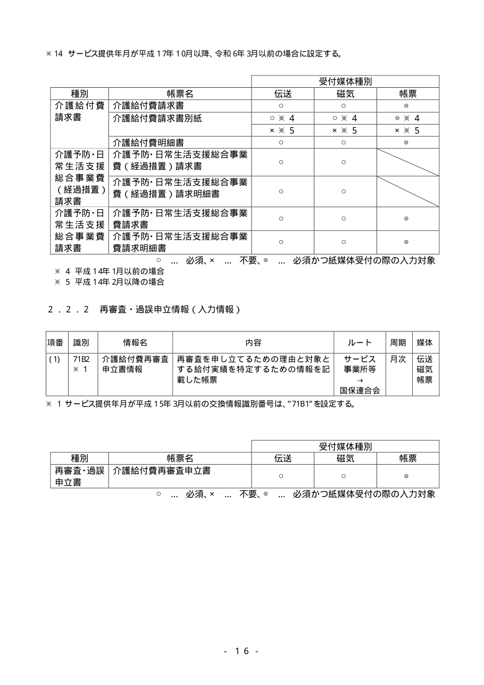
| 項番 | 項目名 | 属性 | 桁数 | 内容 | 必須 | 備考 | その他の列 |
|---|---|---|---|---|---|---|---|
| 介護給付費請求書 > 介護給付費請求書 | 種別:介護給付費請求書 帳票名:介護給付費請求書 受付媒体種別 > 伝送:○ 受付媒体種別 > 磁気:○ 受付媒体種別 > 帳票:◎ | ||||||
| 介護給付費請求書 > 介護給付費請求書別紙 | 種別:介護給付費請求書 帳票名:介護給付費請求書別紙 受付媒体種別 > 伝送:○ ※ 4 受付媒体種別 > 磁気:○ ※ 4 受付媒体種別 > 帳票:◎ ※ 4 | ||||||
| 介護給付費請求書 > 介護給付費請求書別紙 | 種別:介護給付費請求書 帳票名:介護給付費請求書別紙 受付媒体種別 > 伝送:× ※ 5 受付媒体種別 > 磁気:× ※ 5 受付媒体種別 > 帳票:× ※ 5 | ||||||
| 介護給付費請求書 > 介護給付費明細書 | 種別:介護給付費請求書 帳票名:介護給付費明細書 受付媒体種別 > 伝送:○ 受付媒体種別 > 磁気:○ 受付媒体種別 > 帳票:◎ | ||||||
| 介護予防・日常生活支援総合事業費（経過措置）請求書 > 介護予防・日常生活支援総合事業費（経過措置）請求書 | 種別:介護予防・日常生活支援総合事業費（経過措置）請求書 帳票名:介護予防・日常生活支援総合事業費（経過措置）請求書 受付媒体種別 > 伝送:○ 受付媒体種別 > 磁気:○ 受付媒体種別 > 帳票:－ | ||||||
| 介護予防・日常生活支援総合事業費（経過措置）請求書 > 介護予防・日常生活支援総合事業費（経過措置）請求明細書 | 種別:介護予防・日常生活支援総合事業費（経過措置）請求書 帳票名:介護予防・日常生活支援総合事業費（経過措置）請求明細書 受付媒体種別 > 伝送:○ 受付媒体種別 > 磁気:○ 受付媒体種別 > 帳票:－ | ||||||
| 介護予防・日常生活支援総合事業費請求書 > 介護予防・日常生活支援総合事業費請求書 | 種別:介護予防・日常生活支援総合事業費請求書 帳票名:介護予防・日常生活支援総合事業費請求書 受付媒体種別 > 伝送:○ 受付媒体種別 > 磁気:○ 受付媒体種別 > 帳票:◎ | ||||||
| 介護予防・日常生活支援総合事業費請求書 > 介護予防・日常生活支援総合事業費請求明細書 | 種別:介護予防・日常生活支援総合事業費請求書 帳票名:介護予防・日常生活支援総合事業費請求明細書 受付媒体種別 > 伝送:○ 受付媒体種別 > 磁気:○ 受付媒体種別 > 帳票:◎ |
| 項番 | 項目名 | 属性 | 桁数 | 内容 | 必須 | 備考 | その他の列 |
|---|---|---|---|---|---|---|---|
| (1) | 介護給付費再審査申立書情報 | 再審査を申し立てるための理由と対象とする給付実績を特定するための情報を記載した帳票 | 識別: 71B2 ※1 ルート: サービス事業所等 [図] 国保連合会 周期: 月次 媒体: 伝送 磁気 帳票 |
| 項番 | 項目名 | 属性 | 桁数 | 内容 | 必須 | 備考 | その他の列 |
|---|---|---|---|---|---|---|---|
| 再審査・過誤申立書 > 介護給付費再審査申立書 | 種別:再審査・過誤申立書 帳票名:介護給付費再審査申立書 受付媒体種別 > 伝送:○ 受付媒体種別 > 磁気:○ 受付媒体種別 > 帳票:◎ |
| 項番 | 項目名 | 属性 | 桁数 | 内容 | 必須 | 備考 | その他の列 |
|---|---|---|---|---|---|---|---|
| 介護給付費請求書 > 介護給付費請求書 | 種別: 介護給付費請求書 受付媒体種別 > 伝送: ○ 受付媒体種別 > 磁気: ○ 受付媒体種別 > 帳票: ◎ | ||||||
| 介護給付費請求書 > 介護給付費請求書別紙 | 種別: 介護給付費請求書 受付媒体種別 > 伝送: ○ ※4 × ※5 受付媒体種別 > 磁気: ○ ※4 × ※5 受付媒体種別 > 帳票: ◎ ※4 × ※5 | ||||||
| 介護給付費請求書 > 介護給付費明細書 | 種別: 介護給付費請求書 受付媒体種別 > 伝送: ○ 受付媒体種別 > 磁気: ○ 受付媒体種別 > 帳票: ◎ | ||||||
| 介護予防・日常生活支援総合事業費（経過措置）請求書 > 介護予防・日常生活支援総合事業費（経過措置）請求書 | 種別: 介護予防・日常生活支援総合事業費（経過措置）請求書 受付媒体種別 > 伝送: ○ 受付媒体種別 > 磁気: ○ 受付媒体種別 > 帳票: － | ||||||
| 介護予防・日常生活支援総合事業費（経過措置）請求書 > 介護予防・日常生活支援総合事業費（経過措置）請求明細書 | 種別: 介護予防・日常生活支援総合事業費（経過措置）請求書 受付媒体種別 > 伝送: ○ 受付媒体種別 > 磁気: ○ 受付媒体種別 > 帳票: － | ||||||
| 介護予防・日常生活支援総合事業費請求書 > 介護予防・日常生活支援総合事業費請求書 | 種別: 介護予防・日常生活支援総合事業費請求書 受付媒体種別 > 伝送: ○ 受付媒体種別 > 磁気: ○ 受付媒体種別 > 帳票: ◎ | ||||||
| 介護予防・日常生活支援総合事業費請求書 > 介護予防・日常生活支援総合事業費請求明細書 | 種別: 介護予防・日常生活支援総合事業費請求書 受付媒体種別 > 伝送: ○ 受付媒体種別 > 磁気: ○ 受付媒体種別 > 帳票: ◎ |
| 項番 | 項目名 | 属性 | 桁数 | 内容 | 必須 | 備考 | その他の列 |
|---|---|---|---|---|---|---|---|
| (1) | 介護給付費再審査申立書情報 | 再審査を申し立てるための理由と対象とする給付実績を特定するための情報を記載した帳票 | 識別: 71B2 ※1 ルート: サービス事業所等 → 国保連合会 周期: 月次 媒体: 伝送 磁気 帳票 |
| 項番 | 項目名 | 属性 | 桁数 | 内容 | 必須 | 備考 | その他の列 |
|---|---|---|---|---|---|---|---|
| 再審査・過誤申立書 > 介護給付費再審査申立書 | 種別: 再審査・過誤申立書 受付媒体種別 > 伝送: ○ 受付媒体種別 > 磁気: ○ 受付媒体種別 > 帳票: ◎ |
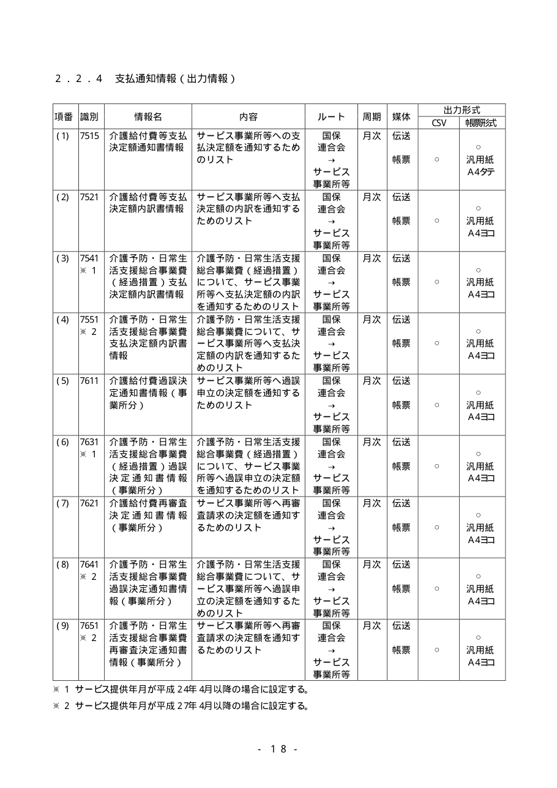
| 項番 | 項目名 | 属性 | 桁数 | 内容 | 必須 | 備考 | その他の列 |
|---|---|---|---|---|---|---|---|
| (1) | 介護給付費等支払決定額通知書情報 | サービス事業所等への支払決定額を通知するためのリスト | 識別: 7515 ルート: 国保連合会→サービス事業所等 周期: 月次 媒体: 伝送 帳票 出力形式 > CSV: ○ 出力形式 > 帳票形式: ○ 汎用紙 A4タテ | ||||
| (2) | 介護給付費等支払決定額内訳書情報 | サービス事業所等へ支払決定額の内訳を通知するためのリスト | 識別: 7521 ルート: 国保連合会→サービス事業所等 周期: 月次 媒体: 伝送 帳票 出力形式 > CSV: ○ 出力形式 > 帳票形式: ○ 汎用紙 A4ヨコ | ||||
| (3) | 介護予防・日常生活支援総合事業費（経過措置）支払決定額内訳書情報 | 介護予防・日常生活支援総合事業費（経過措置）について、サービス事業所等へ支払決定額の内訳を通知するためのリスト | 識別: 7541 ※1 ルート: 国保連合会→サービス事業所等 周期: 月次 媒体: 伝送 帳票 出力形式 > CSV: ○ 出力形式 > 帳票形式: ○ 汎用紙 A4ヨコ | ||||
| (4) | 介護予防・日常生活支援総合事業費支払決定額内訳書情報 | 介護予防・日常生活支援総合事業費について、サービス事業所等へ支払決定額の内訳を通知するためのリスト | 識別: 7551 ※2 ルート: 国保連合会→サービス事業所等 周期: 月次 媒体: 伝送 帳票 出力形式 > CSV: ○ 出力形式 > 帳票形式: ○ 汎用紙 A4ヨコ | ||||
| (5) | 介護給付費過誤決定通知書情報（事業所分） | サービス事業所等へ過誤申立の決定額を通知するためのリスト | 識別: 7611 ルート: 国保連合会→サービス事業所等 周期: 月次 媒体: 伝送 帳票 出力形式 > CSV: ○ 出力形式 > 帳票形式: ○ 汎用紙 A4ヨコ | ||||
| (6) | 介護予防・日常生活支援総合事業費（経過措置）過誤決定通知書情報（事業所分） | 介護予防・日常生活支援総合事業費（経過措置）について、サービス事業所等へ過誤申立の決定額を通知するためのリスト | 識別: 7631 ※1 ルート: 国保連合会→サービス事業所等 周期: 月次 媒体: 伝送 帳票 出力形式 > CSV: ○ 出力形式 > 帳票形式: ○ 汎用紙 A4ヨコ | ||||
| (7) | 介護給付費再審査決定通知書情報（事業所分） | サービス事業所等へ再審査請求の決定額を通知するためのリスト | 識別: 7621 ルート: 国保連合会→サービス事業所等 周期: 月次 媒体: 伝送 帳票 出力形式 > CSV: ○ 出力形式 > 帳票形式: ○ 汎用紙 A4ヨコ | ||||
| (8) | 介護予防・日常生活支援総合事業費過誤決定通知書情報（事業所分） | 介護予防・日常生活支援総合事業費について、サービス事業所等へ過誤申立の決定額を通知するためのリスト | 識別: 7641 ※2 ルート: 国保連合会→サービス事業所等 周期: 月次 媒体: 伝送 帳票 出力形式 > CSV: ○ 出力形式 > 帳票形式: ○ 汎用紙 A4ヨコ | ||||
| (9) | 介護予防・日常生活支援総合事業費再審査決定通知書情報（事業所分） | サービス事業所等へ再審査請求の決定額を通知するためのリスト | 識別: 7651 ※2 ルート: 国保連合会→サービス事業所等 周期: 月次 媒体: 伝送 帳票 出力形式 > CSV: ○ 出力形式 > 帳票形式: ○ 汎用紙 A4ヨコ |
| 項番 | 項目名 | 属性 | 桁数 | 内容 | 必須 | 備考 | その他の列 |
|---|---|---|---|---|---|---|---|
| (1) | 介護給付費等支払決定額通知書情報 | サービス事業所等への支払決定額を通知するためのリスト | 識別: 7515 ルート: 国保連合会→サービス事業所等 周期: 月次 媒体: 伝送 帳票 出力形式 > CSV: ○ 出力形式 > 帳票形式: ○ 汎用紙 A4タテ | ||||
| (2) | 介護給付費等支払決定額内訳書情報 | サービス事業所等へ支払決定額の内訳を通知するためのリスト | 識別: 7521 ルート: 国保連合会→サービス事業所等 周期: 月次 媒体: 伝送 帳票 出力形式 > CSV: ○ 出力形式 > 帳票形式: ○ 汎用紙 A4ヨコ | ||||
| (3) | 介護予防・日常生活支援総合事業費（経過措置）支払決定額内訳書情報 | 介護予防・日常生活支援総合事業費（経過措置）について、サービス事業所等へ支払決定額の内訳を通知するためのリスト | 識別: 7541 ※1 ルート: 国保連合会→サービス事業所等 周期: 月次 媒体: 伝送 帳票 出力形式 > CSV: ○ 出力形式 > 帳票形式: ○ 汎用紙 A4ヨコ | ||||
| (4) | 介護予防・日常生活支援総合事業費支払決定額内訳書情報 | 介護予防・日常生活支援総合事業費について、サービス事業所等へ支払決定額の内訳を通知するためのリスト | 識別: 7551 ※2 ルート: 国保連合会→サービス事業所等 周期: 月次 媒体: 伝送 帳票 出力形式 > CSV: ○ 出力形式 > 帳票形式: ○ 汎用紙 A4ヨコ | ||||
| (5) | 介護給付費過誤決定通知書情報（事業所分） | サービス事業所等へ過誤申立の決定額を通知するためのリスト | 識別: 7611 ルート: 国保連合会→サービス事業所等 周期: 月次 媒体: 伝送 帳票 出力形式 > CSV: ○ 出力形式 > 帳票形式: ○ 汎用紙 A4ヨコ | ||||
| (6) | 介護予防・日常生活支援総合事業費（経過措置）過誤決定通知書情報（事業所分） | 介護予防・日常生活支援総合事業費（経過措置）について、サービス事業所等へ過誤申立の決定額を通知するためのリスト | 識別: 7631 ※1 ルート: 国保連合会→サービス事業所等 周期: 月次 媒体: 伝送 帳票 出力形式 > CSV: ○ 出力形式 > 帳票形式: ○ 汎用紙 A4ヨコ | ||||
| (7) | 介護給付費再審査決定通知書情報（事業所分） | サービス事業所等へ再審査請求の決定額を通知するためのリスト | 識別: 7621 ルート: 国保連合会→サービス事業所等 周期: 月次 媒体: 伝送 帳票 出力形式 > CSV: ○ 出力形式 > 帳票形式: ○ 汎用紙 A4ヨコ | ||||
| (8) | 介護予防・日常生活支援総合事業費過誤決定通知書情報（事業所分） | 介護予防・日常生活支援総合事業費について、サービス事業所等へ過誤申立の決定額を通知するためのリスト | 識別: 7641 ※2 ルート: 国保連合会→サービス事業所等 周期: 月次 媒体: 伝送 帳票 出力形式 > CSV: ○ 出力形式 > 帳票形式: ○ 汎用紙 A4ヨコ | ||||
| (9) | 介護予防・日常生活支援総合事業費再審査決定通知書情報（事業所分） | サービス事業所等へ再審査請求の決定額を通知するためのリスト | 識別: 7651 ※2 ルート: 国保連合会→サービス事業所等 周期: 月次 媒体: 伝送 帳票 出力形式 > CSV: ○ 出力形式 > 帳票形式: ○ 汎用紙 A4ヨコ |
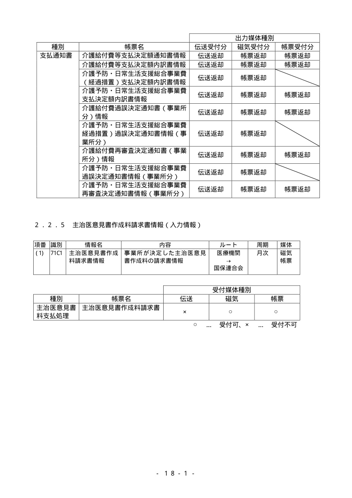
| 項番 | 項目名 | 属性 | 桁数 | 内容 | 必須 | 備考 | その他の列 |
|---|---|---|---|---|---|---|---|
| 支払通知書 > 介護給付費等支払決定額通知書情報 | 種別: 支払通知書 出力媒体種別 > 伝送受付分: 伝送返却 出力媒体種別 > 磁気受付分: 帳票返却 出力媒体種別 > 帳票受付分: 帳票返却 | ||||||
| 支払通知書 > 介護給付費等支払決定額内訳書情報 | 種別: 支払通知書 出力媒体種別 > 伝送受付分: 伝送返却 出力媒体種別 > 磁気受付分: 帳票返却 出力媒体種別 > 帳票受付分: 帳票返却 | ||||||
| 支払通知書 > 介護予防・日常生活支援総合事業費（経過措置）支払決定額内訳書情報 | 種別: 支払通知書 出力媒体種別 > 伝送受付分: 伝送返却 出力媒体種別 > 磁気受付分: 帳票返却 出力媒体種別 > 帳票受付分: － | ||||||
| 支払通知書 > 介護予防・日常生活支援総合事業費支払決定額内訳書情報 | 種別: 支払通知書 出力媒体種別 > 伝送受付分: 伝送返却 出力媒体種別 > 磁気受付分: 帳票返却 出力媒体種別 > 帳票受付分: 帳票返却 | ||||||
| 支払通知書 > 介護給付費過誤決定通知書（事業所分）情報 | 種別: 支払通知書 出力媒体種別 > 伝送受付分: 伝送返却 出力媒体種別 > 磁気受付分: 帳票返却 出力媒体種別 > 帳票受付分: 帳票返却 | ||||||
| 支払通知書 > 介護予防・日常生活支援総合事業費経過措置）過誤決定通知書情報（事業所分） | 種別: 支払通知書 出力媒体種別 > 伝送受付分: 伝送返却 出力媒体種別 > 磁気受付分: 帳票返却 出力媒体種別 > 帳票受付分: － | ||||||
| 支払通知書 > 介護給付費再審査決定通知書（事業所分）情報 | 種別: 支払通知書 出力媒体種別 > 伝送受付分: 伝送返却 出力媒体種別 > 磁気受付分: 帳票返却 出力媒体種別 > 帳票受付分: 帳票返却 | ||||||
| 支払通知書 > 介護予防・日常生活支援総合事業費過誤決定通知書情報（事業所分） | 種別: 支払通知書 出力媒体種別 > 伝送受付分: 伝送返却 出力媒体種別 > 磁気受付分: 帳票返却 出力媒体種別 > 帳票受付分: － | ||||||
| 支払通知書 > 介護予防・日常生活支援総合事業費再審査決定通知書情報（事業所分） | 種別: 支払通知書 出力媒体種別 > 伝送受付分: 伝送返却 出力媒体種別 > 磁気受付分: 帳票返却 出力媒体種別 > 帳票受付分: 帳票返却 |
| 項番 | 項目名 | 属性 | 桁数 | 内容 | 必須 | 備考 | その他の列 |
|---|---|---|---|---|---|---|---|
| (1) | 主治医意見書作成料請求書情報 | 事業所が決定した主治医意見書作成料の請求書情報 | 識別: 71C1 ルート: 医療機関→国保連合会 周期: 月次 媒体: 磁気 帳票 |
| 項番 | 項目名 | 属性 | 桁数 | 内容 | 必須 | 備考 | その他の列 |
|---|---|---|---|---|---|---|---|
| 主治医意見書料支払処理 > 主治医意見書作成料請求書 | 種別: 主治医意見書料支払処理 受付媒体種別 > 伝送: × 受付媒体種別 > 磁気: ○ 受付媒体種別 > 帳票: ○ |
| 項番 | 項目名 | 属性 | 桁数 | 内容 | 必須 | 備考 | その他の列 |
|---|---|---|---|---|---|---|---|
| 支払通知書 > 介護給付費等支払決定額通知書情報 | 種別: 支払通知書 出力媒体種別 > 伝送受付分: 伝送返却 出力媒体種別 > 磁気受付分: 帳票返却 出力媒体種別 > 帳票受付分: 帳票返却 | ||||||
| 支払通知書 > 介護給付費等支払決定額内訳書情報 | 種別: 支払通知書 出力媒体種別 > 伝送受付分: 伝送返却 出力媒体種別 > 磁気受付分: 帳票返却 出力媒体種別 > 帳票受付分: 帳票返却 | ||||||
| 支払通知書 > 介護予防・日常生活支援総合事業費(経過措置)支払決定額内訳書情報 | 種別: 支払通知書 出力媒体種別 > 伝送受付分: 伝送返却 出力媒体種別 > 磁気受付分: 帳票返却 出力媒体種別 > 帳票受付分: － | ||||||
| 支払通知書 > 介護予防・日常生活支援総合事業費支払決定額内訳書情報 | 種別: 支払通知書 出力媒体種別 > 伝送受付分: 伝送返却 出力媒体種別 > 磁気受付分: 帳票返却 出力媒体種別 > 帳票受付分: 帳票返却 | ||||||
| 支払通知書 > 介護給付費過誤決定通知書(事業所分)情報 | 種別: 支払通知書 出力媒体種別 > 伝送受付分: 伝送返却 出力媒体種別 > 磁気受付分: 帳票返却 出力媒体種別 > 帳票受付分: 帳票返却 | ||||||
| 支払通知書 > 介護予防・日常生活支援総合事業費経過措置)過誤決定通知書情報(事業所分) | 種別: 支払通知書 出力媒体種別 > 伝送受付分: 伝送返却 出力媒体種別 > 磁気受付分: 帳票返却 出力媒体種別 > 帳票受付分: － | ||||||
| 支払通知書 > 介護給付費再審査決定通知書(事業所分)情報 | 種別: 支払通知書 出力媒体種別 > 伝送受付分: 伝送返却 出力媒体種別 > 磁気受付分: 帳票返却 出力媒体種別 > 帳票受付分: 帳票返却 | ||||||
| 支払通知書 > 介護予防・日常生活支援総合事業費過誤決定通知書情報(事業所分) | 種別: 支払通知書 出力媒体種別 > 伝送受付分: 伝送返却 出力媒体種別 > 磁気受付分: 帳票返却 出力媒体種別 > 帳票受付分: － | ||||||
| 支払通知書 > 介護予防・日常生活支援総合事業費再審査決定通知書情報(事業所分) | 種別: 支払通知書 出力媒体種別 > 伝送受付分: 伝送返却 出力媒体種別 > 磁気受付分: 帳票返却 出力媒体種別 > 帳票受付分: 帳票返却 |
| 項番 | 項目名 | 属性 | 桁数 | 内容 | 必須 | 備考 | その他の列 |
|---|---|---|---|---|---|---|---|
| (1) | 主治医意見書作成料請求書情報 | 事業所が決定した主治医意見書作成料の請求書情報 | 識別: 71C1 ルート: 医療機関 → 国保連合会 周期: 月次 媒体: 磁気 帳票 |
| 項番 | 項目名 | 属性 | 桁数 | 内容 | 必須 | 備考 | その他の列 |
|---|---|---|---|---|---|---|---|
| 主治医意見書作成料請求書 | 種別: 主治医意見書料支払処理 受付媒体種別 > 伝送: × 受付媒体種別 > 磁気: ○ 受付媒体種別 > 帳票: ○ |
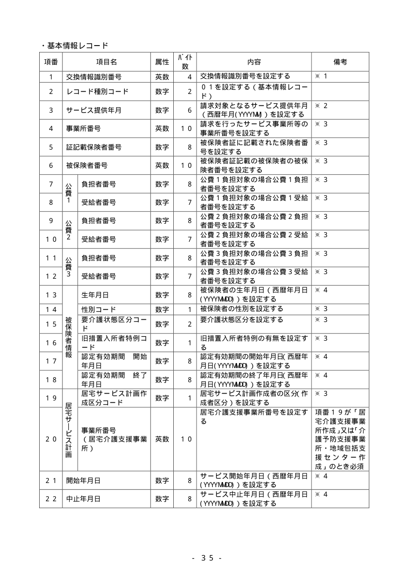
| 項番 | 項目名 | 属性 | 桁数 | 内容 | 必須 | 備考 | その他の列 |
|---|---|---|---|---|---|---|---|
| 1 | 交換情報識別番号 | 英数 | 4 | 交換情報識別番号を設定する | ※ 1 | 項目名 > 大項目: － | |
| 2 | レコード種別コード | 数字 | 2 | ０１を設定する（基本情報レコード） | 項目名 > 大項目: － | ||
| 3 | サービス提供年月 | 数字 | 6 | 請求対象となるサービス提供年月（西暦年月(YYYYMM)）を設定する | ※ 2 | 項目名 > 大項目: － | |
| 4 | 事業所番号 | 英数 | 10 | 請求を行ったサービス事業所等の事業所番号を設定する | ※ 3 | 項目名 > 大項目: － | |
| 5 | 証記載保険者番号 | 数字 | 8 | 被保険者証に記載された保険者番号を設定する | ※ 3 | 項目名 > 大項目: － | |
| 6 | 被保険者番号 | 英数 | 10 | 被保険者証記載の被保険者の被保険者番号を設定する | ※ 3 | 項目名 > 大項目: － | |
| 7 | 公費１ > 負担者番号 | 数字 | 8 | 公費１負担対象の場合公費１負担者番号を設定する | ※ 3 | 項目名 > 大項目: 公費１ | |
| 8 | 公費１ > 受給者番号 | 数字 | 7 | 公費１負担対象の場合公費１受給者番号を設定する | ※ 3 | 項目名 > 大項目: 公費１ | |
| 9 | 公費２ > 負担者番号 | 数字 | 8 | 公費２負担対象の場合公費２負担者番号を設定する | ※ 3 | 項目名 > 大項目: 公費２ | |
| 10 | 公費２ > 受給者番号 | 数字 | 7 | 公費２負担対象の場合公費２受給者番号を設定する | ※ 3 | 項目名 > 大項目: 公費２ | |
| 11 | 公費３ > 負担者番号 | 数字 | 8 | 公費３負担対象の場合公費３負担者番号を設定する | ※ 3 | 項目名 > 大項目: 公費３ | |
| 12 | 公費３ > 受給者番号 | 数字 | 7 | 公費３負担対象の場合公費３受給者番号を設定する | ※ 3 | 項目名 > 大項目: 公費３ | |
| 13 | 被保険者情報 > 生年月日 | 数字 | 8 | 被保険者の生年月日（西暦年月日(YYYYMMDD)）を設定する | ※ 4 | 項目名 > 大項目: 被保険者情報 | |
| 14 | 被保険者情報 > 性別コード | 数字 | 1 | 被保険者の性別を設定する | ※ 3 | 項目名 > 大項目: 被保険者情報 | |
| 15 | 被保険者情報 > 要介護状態区分コード | 数字 | 2 | 要介護状態区分を設定する | ※ 3 | 項目名 > 大項目: 被保険者情報 | |
| 16 | 被保険者情報 > 旧措置入所者特例コード | 数字 | 1 | 旧措置入所者特例の有無を設定する | ※ 3 | 項目名 > 大項目: 被保険者情報 | |
| 17 | 被保険者情報 > 認定有効期間 開始年月日 | 数字 | 8 | 認定有効期間の開始年月日(西暦年月日(YYYYMMDD))を設定する | ※ 4 | 項目名 > 大項目: 被保険者情報 | |
| 18 | 被保険者情報 > 認定有効期間 終了年月日 | 数字 | 8 | 認定有効期間の終了年月日(西暦年月日(YYYYMMDD))を設定する | ※ 4 | 項目名 > 大項目: 被保険者情報 | |
| 19 | 居宅サービス計画 > 居宅サービス計画作成区分コード | 数字 | 1 | 居宅サービス計画作成者の区分(作成者区分)を設定する | ※ 3 | 項目名 > 大項目: 居宅サービス計画 | |
| 20 | 居宅サービス計画 > 事業所番号（居宅介護支援事業所） | 英数 | 10 | 居宅介護支援事業所番号を設定する | 項番１９が「居宅介護支援事業所作成」又は「介護予防支援事業所・地域包括支援センター作成」のとき必須 | 項目名 > 大項目: 居宅サービス計画 | |
| 21 | 開始年月日 | 数字 | 8 | サービス開始年月日（西暦年月日(YYYYMMDD)）を設定する | ※ 4 | 項目名 > 大項目: － | |
| 22 | 中止年月日 | 数字 | 8 | サービス中止年月日（西暦年月日(YYYYMMDD)）を設定する | ※ 4 | 項目名 > 大項目: － |
| 項番 | 項目名 | 属性 | 桁数 | 内容 | 必須 | 備考 | その他の列 |
|---|---|---|---|---|---|---|---|
| 1 | 交換情報識別番号 | 英数 | 4 | 交換情報識別番号を設定する | ※1 | ||
| 2 | レコード種別コード | 数字 | 2 | 01を設定する(基本情報レコード) | |||
| 3 | サービス提供年月 | 数字 | 6 | 請求対象となるサービス提供年月(西暦年月(YYYYMM))を設定する | ※2 | ||
| 4 | 事業所番号 | 英数 | 10 | 請求を行ったサービス事業所等の事業所番号を設定する | ※3 | ||
| 5 | 証記載保険者番号 | 数字 | 8 | 被保険者証に記載された保険者番号を設定する | ※3 | ||
| 6 | 被保険者番号 | 英数 | 10 | 被保険者証記載の被保険者の被保険者番号を設定する | ※3 | ||
| 7 | 公費1 > 負担者番号 | 数字 | 8 | 公費1負担対象の場合公費1負担者番号を設定する | ※3 | ||
| 8 | 公費1 > 受給者番号 | 数字 | 7 | 公費1負担対象の場合公費1受給者番号を設定する | ※3 | ||
| 9 | 公費2 > 負担者番号 | 数字 | 8 | 公費2負担対象の場合公費2負担者番号を設定する | ※3 | ||
| 10 | 公費2 > 受給者番号 | 数字 | 7 | 公費2負担対象の場合公費2受給者番号を設定する | ※3 | ||
| 11 | 公費3 > 負担者番号 | 数字 | 8 | 公費3負担対象の場合公費3負担者番号を設定する | ※3 | ||
| 12 | 公費3 > 受給者番号 | 数字 | 7 | 公費3負担対象の場合公費3受給者番号を設定する | ※3 | ||
| 13 | 被保険者情報 > 生年月日 | 数字 | 8 | 被保険者の生年月日(西暦年月日(YYYYMMDD))を設定する | ※4 | ||
| 14 | 被保険者情報 > 性別コード | 数字 | 1 | 被保険者の性別を設定する | ※3 | ||
| 15 | 被保険者情報 > 要介護状態区分コード | 数字 | 2 | 要介護状態区分を設定する | ※3 | ||
| 16 | 被保険者情報 > 旧措置入所者特例コード | 数字 | 1 | 旧措置入所者特例の有無を設定する | ※3 | ||
| 17 | 被保険者情報 > 認定有効期間 開始年月日 | 数字 | 8 | 認定有効期間の開始年月日(西暦年月日(YYYYMMDD))を設定する | ※4 | ||
| 18 | 被保険者情報 > 認定有効期間 終了年月日 | 数字 | 8 | 認定有効期間の終了年月日(西暦年月日(YYYYMMDD))を設定する | ※4 | ||
| 19 | 居宅サービス計画 > 居宅サービス計画作成区分コード | 数字 | 1 | 居宅サービス計画作成者の区分(作成者区分)を設定する | ※3 | ||
| 20 | 居宅サービス計画 > 事業所番号(居宅介護支援事業所) | 英数 | 10 | 居宅介護支援事業所番号を設定する | 項番19が「居宅介護支援事業所作成」又は「介護予防支援事業所・地域包括支援センター作成」のとき必須 | ||
| 21 | 開始年月日 | 数字 | 8 | サービス開始年月日(西暦年月日(YYYYMMDD))を設定する | ※4 | ||
| 22 | 中止年月日 | 数字 | 8 | サービス中止年月日(西暦年月日(YYYYMMDD))を設定する | ※4 |
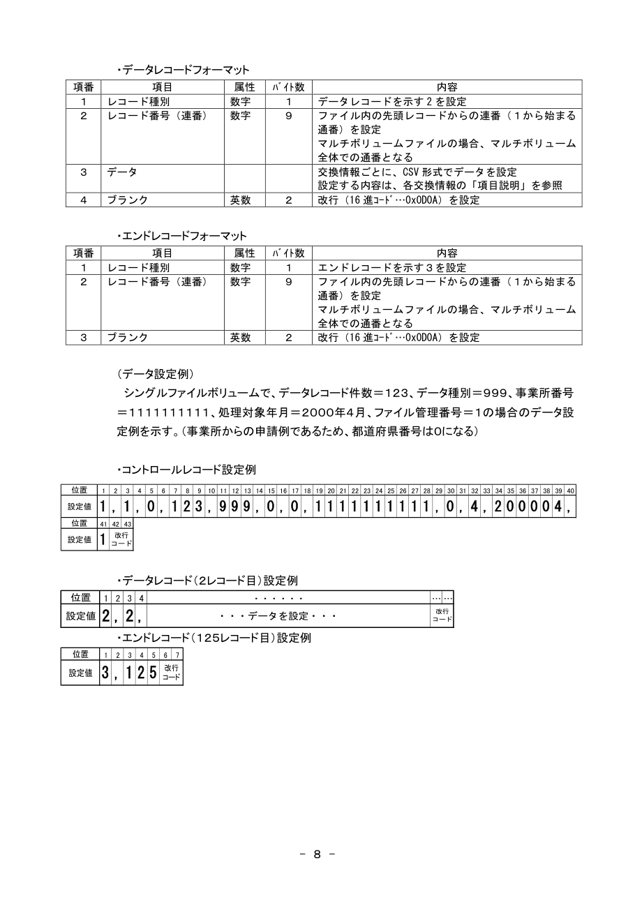
| 項番 | 項目名 | 属性 | 桁数 | 内容 | 必須 | 備考 | その他の列 |
|---|---|---|---|---|---|---|---|
| 1 | レコード種別 | 数字 | 1 | データレコードを示す 2 を設定 | |||
| 2 | レコード番号（連番） | 数字 | 9 | ファイル内の先頭レコードからの連番（1から始まる通番）を設定 マルチボリュームファイルの場合、マルチボリューム全体での通番となる | |||
| 3 | データ | 交換情報ごとに、CSV形式でデータを設定 設定する内容は、各交換情報の「項目説明」を参照 | |||||
| 4 | ブランク | 英数 | 2 | 改行（16進コード…0x0D0A）を設定 |
| 項番 | 項目名 | 属性 | 桁数 | 内容 | 必須 | 備考 | その他の列 |
|---|---|---|---|---|---|---|---|
| 1 | レコード種別 | 数字 | 1 | エンドレコードを示す 3 を設定 | |||
| 2 | レコード番号（連番） | 数字 | 9 | ファイル内の先頭レコードからの連番（1から始まる通番）を設定 マルチボリュームファイルの場合、マルチボリューム全体での通番となる | |||
| 3 | ブランク | 英数 | 2 | 改行（16進コード…0x0D0A）を設定 |
| 項番 | 項目名 | 属性 | 桁数 | 内容 | 必須 | 備考 | その他の列 |
|---|---|---|---|---|---|---|---|
| 設定値 | 位置: 設定値 1: 1 2: , 3: 1 4: , 5: 0 6: , 7: 1 8: 2 9: 3 10: , 11: 9 12: 9 13: 9 14: , 15: 0 16: , 17: 0 18: , 19: 1 20: 1 21: 1 22: 1 23: 1 24: 1 25: 1 26: 1 27: 1 28: 1 29: , 30: 0 31: , 32: 4 33: , 34: 2 35: 0 36: 0 37: 0 38: 0 39: 4 40: , |
| 項番 | 項目名 | 属性 | 桁数 | 内容 | 必須 | 備考 | その他の列 |
|---|---|---|---|---|---|---|---|
| 設定値 | 位置: 設定値 41: 1 42: 改行コード 43: － |
| 項番 | 項目名 | 属性 | 桁数 | 内容 | 必須 | 備考 | その他の列 |
|---|---|---|---|---|---|---|---|
| 設定値 | 位置: 設定値 1: 2 2: , 3: 2 4: , ・・・・・・: ・・・データを設定・・・ …: － …: 改行コード |
| 項番 | 項目名 | 属性 | 桁数 | 内容 | 必須 | 備考 | その他の列 |
|---|---|---|---|---|---|---|---|
| 設定値 | 位置: 設定値 1: 3 2: , 3: 1 4: 2 5: 5 6: 改行コード 7: － |
| 項番 | 項目名 | 属性 | 桁数 | 内容 | 必須 | 備考 | その他の列 |
|---|---|---|---|---|---|---|---|
| 1 | レコード種別 | 数字 | 1 | データレコードを示す2を設定 | |||
| 2 | レコード番号（連番） | 数字 | 9 | ファイル内の先頭レコードからの連番（１から始まる通番）を設定 マルチボリュームファイルの場合、マルチボリューム全体での通番となる | |||
| 3 | データ | 交換情報ごとに、CSV形式でデータを設定 設定する内容は、各交換情報の「項目説明」を参照 | |||||
| 4 | ブランク | 英数 | 2 | 改行（16進ｺｰﾄﾞ…0x0D0A）を設定 |
| 項番 | 項目名 | 属性 | 桁数 | 内容 | 必須 | 備考 | その他の列 |
|---|---|---|---|---|---|---|---|
| 1 | レコード種別 | 数字 | 1 | エンドレコードを示す3を設定 | |||
| 2 | レコード番号（連番） | 数字 | 9 | ファイル内の先頭レコードからの連番（１から始まる通番）を設定 マルチボリュームファイルの場合、マルチボリューム全体での通番となる | |||
| 3 | ブランク | 英数 | 2 | 改行（16進ｺｰﾄﾞ…0x0D0A）を設定 |
| 項番 | 項目名 | 属性 | 桁数 | 内容 | 必須 | 備考 | その他の列 |
|---|---|---|---|---|---|---|---|
| 位置 1-40 | 位置: 1〜40 設定値: 1,1,0,123,999,0,0,1111111111,0,4,200004, | ||||||
| 位置 41-43 | 位置: 41,42,43 設定値: 1 改行コード |
| 項番 | 項目名 | 属性 | 桁数 | 内容 | 必須 | 備考 | その他の列 |
|---|---|---|---|---|---|---|---|
| 設定例 | 位置: 1 2 3 4 ・・・・・・ … 設定値: 2,2, ・・・データを設定・・・ 改行コード |
| 項番 | 項目名 | 属性 | 桁数 | 内容 | 必須 | 備考 | その他の列 |
|---|---|---|---|---|---|---|---|
| 設定例 | 位置: 1 2 3 4 5 6 7 設定値: 3,125 改行コード |
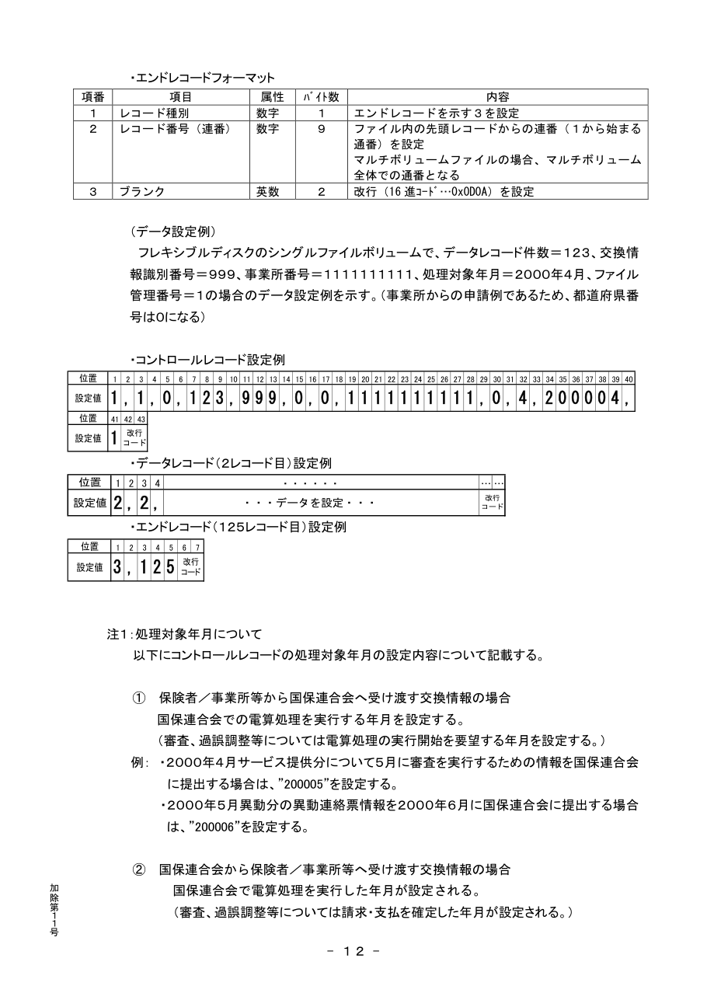
| 項番 | 項目名 | 属性 | 桁数 | 内容 | 必須 | 備考 | その他の列 |
|---|---|---|---|---|---|---|---|
| １ | レコード種別 | 数字 | 1 | エンドレコードを示す3を設定 | |||
| ２ | レコード番号（連番） | 数字 | 9 | ファイル内の先頭レコードからの連番（1から始まる通番）を設定 マルチボリュームファイルの場合、マルチボリューム全体での通番となる | |||
| ３ | ブランク | 英数 | 2 | 改行（16進コード…0x0D0A）を設定 |
| 項番 | 項目名 | 属性 | 桁数 | 内容 | 必須 | 備考 | その他の列 |
|---|---|---|---|---|---|---|---|
| 位置: 1 2 3 4 5 6 7 8 9 10 11 12 13 14 15 16 17 18 19 20 21 22 23 24 25 26 27 28 29 30 31 32 33 34 35 36 37 38 39 40 設定値: 1,1,0,123,999,0,0,1111111111,0,4,200004, | |||||||
| 位置: 41 42 43 設定値: 1 改行コード |
| 項番 | 項目名 | 属性 | 桁数 | 内容 | 必須 | 備考 | その他の列 |
|---|---|---|---|---|---|---|---|
| 位置: 1 2 3 4 …… …… 設定値: 2,2,・・・データを設定・・・ 改行コード |
| 項番 | 項目名 | 属性 | 桁数 | 内容 | 必須 | 備考 | その他の列 |
|---|---|---|---|---|---|---|---|
| 位置: 1 2 3 4 5 6 7 設定値: 3,125 改行コード |
| 項番 | 項目名 | 属性 | 桁数 | 内容 | 必須 | 備考 | その他の列 |
|---|---|---|---|---|---|---|---|
| 1 | レコード種別 | 数字 | 1 | エンドレコードを示す3を設定 | |||
| 2 | レコード番号（連番） | 数字 | 9 | ファイル内の先頭レコードからの連番（1から始まる通番）を設定 マルチボリュームファイルの場合、マルチボリューム全体での通番となる | |||
| 3 | ブランク | 英数 | 2 | 改行（16進ｺｰﾄﾞ…0x0D0A）を設定 |
| 項番 | 項目名 | 属性 | 桁数 | 内容 | 必須 | 備考 | その他の列 |
|---|---|---|---|---|---|---|---|
| 位置: 1 2 3 4 5 6 7 8 9 10 11 12 13 14 15 16 17 18 19 20 21 22 23 24 25 26 27 28 29 30 31 32 33 34 35 36 37 38 39 40 設定値: 1,1,0,123,999,0,0,1111111111,0,4,200004, | |||||||
| 位置: 41 42 43 設定値: 1 改行コード |
| 項番 | 項目名 | 属性 | 桁数 | 内容 | 必須 | 備考 | その他の列 |
|---|---|---|---|---|---|---|---|
| 位置: 1 2 3 4 ・・・・・・ … … 設定値: 2,2, ・・・データを設定・・・ 改行コード |
| 項番 | 項目名 | 属性 | 桁数 | 内容 | 必須 | 備考 | その他の列 |
|---|---|---|---|---|---|---|---|
| 位置: 1 2 3 4 5 6 7 設定値: 3,125 改行コード |
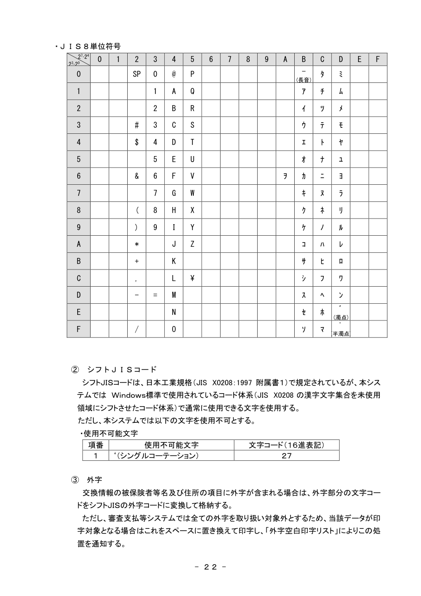
| 項番 | 項目名 | 属性 | 桁数 | 内容 | 必須 | 備考 | その他の列 |
|---|---|---|---|---|---|---|---|
| 0 | 0: － 1: － 2: SP 3: 0 4: @ 5: P 6: － 7: － 8: － 9: － A: － B: ー（長音） C: タ D: ミ E: － F: － | ||||||
| 1 | 0: － 1: － 2: － 3: 1 4: A 5: Q 6: － 7: － 8: － 9: － A: － B: ア C: チ D: ム E: － F: － | ||||||
| 2 | 0: － 1: － 2: － 3: 2 4: B 5: R 6: － 7: － 8: － 9: － A: － B: イ C: ツ D: メ E: － F: － | ||||||
| 3 | 0: － 1: － 2: # 3: 3 4: C 5: S 6: － 7: － 8: － 9: － A: － B: ウ C: テ D: モ E: － F: － | ||||||
| 4 | 0: － 1: － 2: $ 3: 4 4: D 5: T 6: － 7: － 8: － 9: － A: － B: エ C: ト D: ヤ E: － F: － | ||||||
| 5 | 0: － 1: － 2: － 3: 5 4: E 5: U 6: － 7: － 8: － 9: － A: － B: オ C: ナ D: ユ E: － F: － | ||||||
| 6 | 0: － 1: － 2: & 3: 6 4: F 5: V 6: － 7: － 8: － 9: － A: ヲ B: カ C: ニ D: ヨ E: － F: － | ||||||
| 7 | 0: － 1: － 2: － 3: 7 4: G 5: W 6: － 7: － 8: － 9: － A: － B: キ C: ヌ D: ラ E: － F: － | ||||||
| 8 | 0: － 1: － 2: ( 3: 8 4: H 5: X 6: － 7: － 8: － 9: － A: － B: ク C: ネ D: リ E: － F: － | ||||||
| 9 | 0: － 1: － 2: ) 3: 9 4: I 5: Y 6: － 7: － 8: － 9: － A: － B: ケ C: ノ D: ル E: － F: － | ||||||
| A | 0: － 1: － 2: * 3: － 4: J 5: Z 6: － 7: － 8: － 9: － A: － B: コ C: ハ D: レ E: － F: － | ||||||
| B | 0: － 1: － 2: + 3: － 4: K 5: － 6: － 7: － 8: － 9: － A: － B: サ C: ヒ D: ロ E: － F: － | ||||||
| C | 0: － 1: － 2: , 3: － 4: L 5: ¥ 6: － 7: － 8: － 9: － A: － B: シ C: フ D: ワ E: － F: － | ||||||
| D | 0: － 1: － 2: - 3: = 4: M 5: － 6: － 7: － 8: － 9: － A: － B: ス C: ヘ D: ン E: － F: － | ||||||
| E | 0: － 1: － 2: － 3: － 4: N 5: － 6: － 7: － 8: － 9: － A: － B: セ C: ホ D: ゛（濁点） E: － F: － | ||||||
| F | 0: － 1: － 2: / 3: － 4: O 5: － 6: － 7: － 8: － 9: － A: － B: ソ C: マ D: ゜（半濁点） E: － F: － |
| 項番 | 項目名 | 属性 | 桁数 | 内容 | 必須 | 備考 | その他の列 |
|---|---|---|---|---|---|---|---|
| 1 | ‘(シングルコーテーション) | 文字コード（16進表記）: 27 |
| 項番 | 項目名 | 属性 | 桁数 | 内容 | 必須 | 備考 | その他の列 |
|---|---|---|---|---|---|---|---|
| 0 | 0 | 0: － 1: － 2: SP 3: 0 4: @ 5: P 6: － 7: － 8: － 9: － A: － B: －(長音) C: タ D: ミ E: － F: － | |||||
| 1 | 1 | 0: － 1: － 2: － 3: 1 4: A 5: Q 6: － 7: － 8: － 9: － A: － B: ア C: チ D: ム E: － F: － | |||||
| 2 | 2 | 0: － 1: － 2: － 3: 2 4: B 5: R 6: － 7: － 8: － 9: － A: － B: イ C: ツ D: メ E: － F: － | |||||
| 3 | 3 | 0: － 1: － 2: # 3: 3 4: C 5: S 6: － 7: － 8: － 9: － A: － B: ウ C: テ D: モ E: － F: － | |||||
| 4 | 4 | 0: － 1: － 2: $ 3: 4 4: D 5: T 6: － 7: － 8: － 9: － A: － B: エ C: ト D: ヤ E: － F: － | |||||
| 5 | 5 | 0: － 1: － 2: － 3: 5 4: E 5: U 6: － 7: － 8: － 9: － A: － B: オ C: ナ D: ユ E: － F: － | |||||
| 6 | 6 | 0: － 1: － 2: & 3: 6 4: F 5: V 6: － 7: － 8: － 9: － A: ヲ B: カ C: ニ D: ヨ E: － F: － | |||||
| 7 | 7 | 0: － 1: － 2: － 3: 7 4: G 5: W 6: － 7: － 8: － 9: － A: － B: キ C: ヌ D: ラ E: － F: － | |||||
| 8 | 8 | 0: － 1: － 2: ( 3: 8 4: H 5: X 6: － 7: － 8: － 9: － A: － B: ク C: ネ D: リ E: － F: － | |||||
| 9 | 9 | 0: － 1: － 2: ) 3: 9 4: I 5: Y 6: － 7: － 8: － 9: － A: － B: ケ C: ノ D: ル E: － F: － | |||||
| A | A | 0: － 1: － 2: * 3: － 4: J 5: Z 6: － 7: － 8: － 9: － A: － B: コ C: ハ D: レ E: － F: － | |||||
| B | B | 0: － 1: － 2: + 3: － 4: K 5: － 6: － 7: － 8: － 9: － A: － B: サ C: ヒ D: ロ E: － F: － | |||||
| C | C | 0: － 1: － 2: , 3: － 4: L 5: ¥ 6: － 7: － 8: － 9: － A: － B: シ C: フ D: ワ E: － F: － | |||||
| D | D | 0: － 1: － 2: － 3: = 4: M 5: － 6: － 7: － 8: － 9: － A: － B: ス C: ヘ D: ン E: － F: － | |||||
| E | E | 0: － 1: － 2: － 3: － 4: N 5: － 6: － 7: － 8: － 9: － A: － B: セ C: ホ D: ゛(濁点) E: － F: － | |||||
| F | F | 0: － 1: － 2: / 3: － 4: 0 5: － 6: － 7: － 8: － 9: － A: － B: ソ C: マ D: ゜(半濁点) E: － F: － |
| 項番 | 項目名 | 属性 | 桁数 | 内容 | 必須 | 備考 | その他の列 |
|---|---|---|---|---|---|---|---|
| 1 | ‘(シングルコーテーション) | 27 |
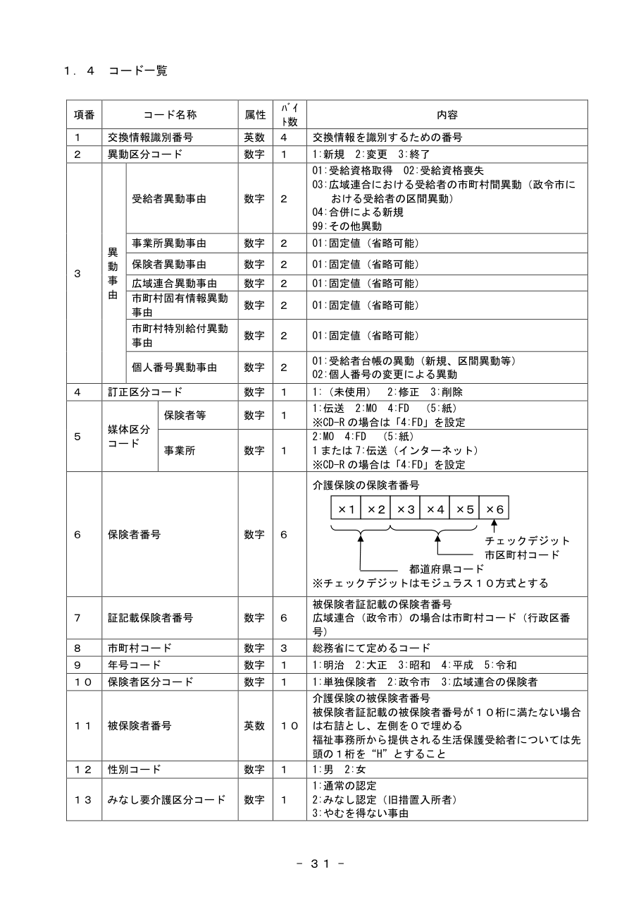
| 項番 | 項目名 | 属性 | 桁数 | 内容 | 必須 | 備考 | その他の列 |
|---|---|---|---|---|---|---|---|
| １ | 交換情報識別番号 | 英数 | 4 | 交換情報を識別するための番号 | |||
| ２ | 異動区分コード | 数字 | 1 | 1:新規 2:変更 3:終了 | |||
| ３ | 異動事由 > 受給者異動事由 | 数字 | 2 | 01:受給資格取得 02:受給資格喪失 03:広域連合における受給者の市町村間異動（政令市における受給者の区間異動） 04:合併による新規 99:その他異動 | |||
| ３ | 異動事由 > 事業所異動事由 | 数字 | 2 | 01:固定値（省略可能） | |||
| ３ | 異動事由 > 保険者異動事由 | 数字 | 2 | 01:固定値（省略可能） | |||
| ３ | 異動事由 > 広域連合異動事由 | 数字 | 2 | 01:固定値（省略可能） | |||
| ３ | 異動事由 > 市町村固有情報異動事由 | 数字 | 2 | 01:固定値（省略可能） | |||
| ３ | 異動事由 > 市町村特別給付異動事由 | 数字 | 2 | 01:固定値（省略可能） | |||
| ３ | 異動事由 > 個人番号異動事由 | 数字 | 2 | 01:受給者台帳の異動（新規、区間異動等） 02:個人番号の変更による異動 | |||
| ４ | 訂正区分コード | 数字 | 1 | 1:（未使用） 2:修正 3:削除 | |||
| ５ | 媒体区分コード > 保険者等 | 数字 | 1 | 1:伝送 2:MO 4:FD （5:紙） ※CD-R の場合は「4:FD」を設定 | |||
| ５ | 媒体区分コード > 事業所 | 数字 | 1 | 2:MO 4:FD （5:紙） 1 または 7:伝送（インターネット） ※CD-R の場合は「4:FD」を設定 | |||
| ６ | 保険者番号 | 数字 | 6 | 介護保険の保険者番号 [図] ×1 ×2 ×3 ×4 ×5 ×6 チェックデジット 市区町村コード 都道府県コード ※チェックデジットはモジュラス１０方式とする | |||
| ７ | 証記載保険者番号 | 数字 | 6 | 被保険者証記載の保険者番号 広域連合（政令市）の場合は市町村コード（行政区番号） | |||
| ８ | 市町村コード | 数字 | 3 | 総務省にて定めるコード | |||
| ９ | 年号コード | 数字 | 1 | 1:明治 2:大正 3:昭和 4:平成 5:令和 | |||
| １０ | 保険者区分コード | 数字 | 1 | 1:単独保険者 2:政令市 3:広域連合の保険者 | |||
| １１ | 被保険者番号 | 英数 | 10 | 介護保険の被保険者番号 被保険者証記載の被保険者番号が１０桁に満たない場合は右詰とし、左側を０で埋める 福祉事務所から提供される生活保護受給者については先頭の１桁を“H”とすること | |||
| １２ | 性別コード | 数字 | 1 | 1:男 2:女 | |||
| １３ | みなし要介護区分コード | 数字 | 1 | 1:通常の認定 2:みなし認定（旧措置入所者） 3:やむを得ない事由 |
| 項番 | 項目名 | 属性 | 桁数 | 内容 | 必須 | 備考 | その他の列 |
|---|---|---|---|---|---|---|---|
| 1 | 交換情報識別番号 | 英数 | 4 | 交換情報を識別するための番号 | |||
| 2 | 異動区分コード | 数字 | 1 | 1:新規 2:変更 3:終了 | |||
| 3 | 異動事由 > 受給者異動事由 | 数字 | 2 | 01:受給資格取得 02:受給資格喪失 03:広域連合における受給者の市町村間異動（政令市における受給者の区間異動） 04:合併による新規 99:その他異動 | |||
| 3 | 異動事由 > 事業所異動事由 | 数字 | 2 | 01:固定値（省略可能） | |||
| 3 | 異動事由 > 保険者異動事由 | 数字 | 2 | 01:固定値（省略可能） | |||
| 3 | 異動事由 > 広域連合異動事由 | 数字 | 2 | 01:固定値（省略可能） | |||
| 3 | 異動事由 > 市町村固有情報異動事由 | 数字 | 2 | 01:固定値（省略可能） | |||
| 3 | 異動事由 > 市町村特別給付異動事由 | 数字 | 2 | 01:固定値（省略可能） | |||
| 3 | 異動事由 > 個人番号異動事由 | 数字 | 2 | 01:受給者台帳の異動（新規、区間異動等） 02:個人番号の変更による異動 | |||
| 4 | 訂正区分コード | 数字 | 1 | 1:（未使用） 2:修正 3:削除 | |||
| 5 | 媒体区分コード > 保険者等 | 数字 | 1 | 1:伝送 2:MO 4:FD （5:紙） ※CD-R の場合は「4:FD」を設定 | |||
| 5 | 媒体区分コード > 事業所 | 数字 | 1 | 2:MO 4:FD （5:紙） 1 または 7:伝送（インターネット） ※CD-R の場合は「4:FD」を設定 | |||
| 6 | 保険者番号 | 数字 | 6 | 介護保険の保険者番号 [図] ×1 ×2 ×3 ×4 ×5 ×6 チェックデジット 市区町村コード 都道府県コード ※チェックデジットはモジュラス10方式とする | |||
| 7 | 証記載保険者番号 | 数字 | 6 | 被保険者証記載の保険者番号 広域連合（政令市）の場合は市町村コード（行政区番号） | |||
| 8 | 市町村コード | 数字 | 3 | 総務省にて定めるコード | |||
| 9 | 年号コード | 数字 | 1 | 1:明治 2:大正 3:昭和 4:平成 5:令和 | |||
| 10 | 保険者区分コード | 数字 | 1 | 1:単独保険者 2:政令市 3:広域連合の保険者 | |||
| 11 | 被保険者番号 | 英数 | 10 | 介護保険の被保険者番号 被保険者証記載の被保険者番号が10桁に満たない場合は右詰とし、左側を0で埋める 福祉事務所から提供される生活保護受給者については先頭の1桁を“H”とすること | |||
| 12 | 性別コード | 数字 | 1 | 1:男 2:女 | |||
| 13 | みなし要介護区分コード | 数字 | 1 | 1:通常の認定 2:みなし認定（旧措置入所者） 3:やむを得ない事由 |
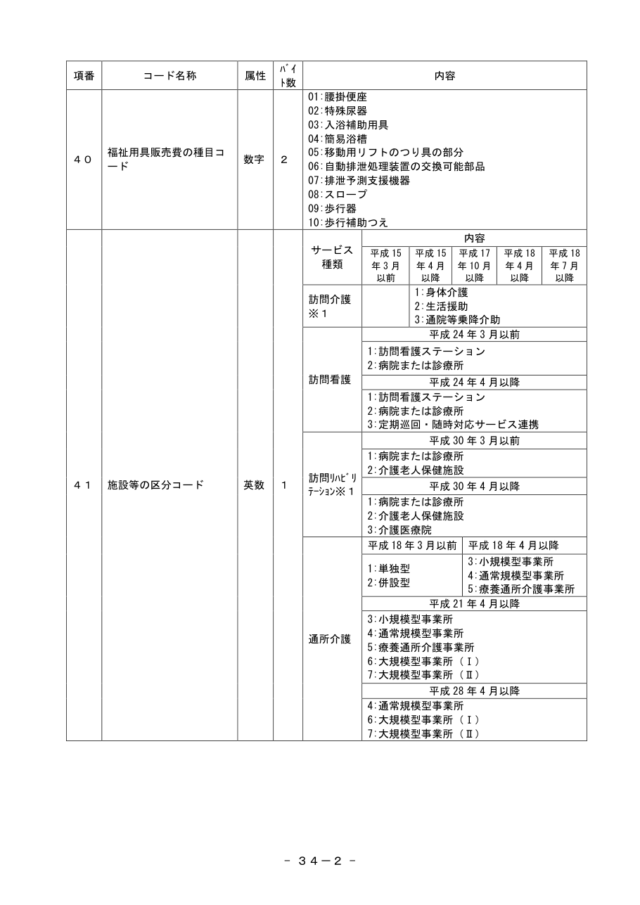
| 項番 | 項目名 | 属性 | 桁数 | 内容 | 必須 | 備考 | その他の列 |
|---|---|---|---|---|---|---|---|
| ４０ | 福祉用具販売費の種目コード | 数字 | 2 | 01:腰掛便座 02:特殊尿器 03:入浴補助用具 04:簡易浴槽 05:移動用リフトのつり具の部分 06:自動排泄処理装置の交換可能部品 07:排泄予測支援機器 08:スロープ 09:歩行器 10:歩行補助つえ |
| 項番 | 項目名 | 属性 | 桁数 | 内容 | 必須 | 備考 | その他の列 |
|---|---|---|---|---|---|---|---|
| ４１ | 施設等の区分コード > 訪問介護※1 | 英数 | 1 | 1:身体介護 2:生活援助 3:通院等乗降介助 | |||
| ４１ | 施設等の区分コード > 訪問看護 | 英数 | 1 | 平成24年3月以前 1:訪問看護ステーション 2:病院または診療所 平成24年4月以降 1:訪問看護ステーション 2:病院または診療所 3:定期巡回・随時対応サービス連携 | |||
| ４１ | 施設等の区分コード > 訪問リハビリテーション※1 | 英数 | 1 | 平成30年3月以前 1:病院または診療所 2:介護老人保健施設 平成30年4月以降 1:病院または診療所 2:介護老人保健施設 3:介護医療院 | |||
| ４１ | 施設等の区分コード > 通所介護 | 英数 | 1 | 平成18年3月以前 1:単独型 2:併設型 平成18年4月以降 3:小規模型事業所 4:通常規模型事業所 5:療養通所介護事業所 平成21年4月以降 3:小規模型事業所 4:通常規模型事業所 5:療養通所介護事業所 6:大規模型事業所（Ⅰ） 7:大規模型事業所（Ⅱ） 平成28年4月以降 4:通常規模型事業所 6:大規模型事業所（Ⅰ） 7:大規模型事業所（Ⅱ） |
| 項番 | 項目名 | 属性 | 桁数 | 内容 | 必須 | 備考 | その他の列 |
|---|---|---|---|---|---|---|---|
| ４０ | 福祉用具販売費の種目コード | 数字 | 2 | 01:腰掛便座 02:特殊尿器 03:入浴補助用具 04:簡易浴槽 05:移動用リフトのつり具の部分 06:自動排泄処理装置の交換可能部品 07:排泄予測支援機器 08:スロープ 09:歩行器 10:歩行補助つえ | |||
| ４１ | 施設等の区分コード > サービス種類 | 英数 | 1 | [図] 平成15年3月以前 / 平成15年4月以降 / 平成17年10月以降 / 平成18年4月以降 / 平成18年7月以降 | |||
| ４１ | 施設等の区分コード > 訪問介護※1 | 英数 | 1 | 1:身体介護 2:生活援助 3:通院等乗降介助 | |||
| ４１ | 施設等の区分コード > 訪問看護 | 英数 | 1 | 平成24年3月以前 1:訪問看護ステーション 2:病院または診療所 平成24年4月以降 1:訪問看護ステーション 2:病院または診療所 3:定期巡回・随時対応サービス連携 | |||
| ４１ | 施設等の区分コード > 訪問ﾘﾊﾋﾞﾘﾃｰｼｮﾝ※1 | 英数 | 1 | 平成30年3月以前 1:病院または診療所 2:介護老人保健施設 平成30年4月以降 1:病院または診療所 2:介護老人保健施設 3:介護医療院 | |||
| ４１ | 施設等の区分コード > 通所介護 | 英数 | 1 | 平成18年3月以前 1:単独型 2:併設型 平成18年4月以降 3:小規模型事業所 4:通常規模型事業所 5:療養通所介護事業所 平成21年4月以降 3:小規模型事業所 4:通常規模型事業所 5:療養通所介護事業所 6:大規模型事業所（Ⅰ） 7:大規模型事業所（Ⅱ） 平成28年4月以降 4:通常規模型事業所 6:大規模型事業所（Ⅰ） 7:大規模型事業所（Ⅱ） |
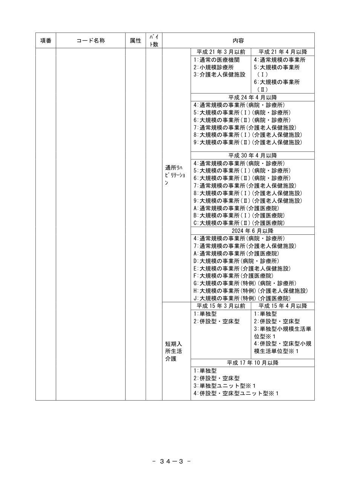
| 項番 | 項目名 | 属性 | 桁数 | 内容 | 必須 | 備考 | その他の列 |
|---|---|---|---|---|---|---|---|
| 通所リハビリテーション > 平成21年3月以前 | 1:通常の医療機関 2:小規模診療所 3:介護老人保健施設 | ||||||
| 通所リハビリテーション > 平成21年4月以降 | 4:通常規模の事業所 5:大規模の事業所（Ⅰ） 6:大規模の事業所（Ⅱ） | ||||||
| 通所リハビリテーション > 平成24年4月以降 | 4:通常規模の事業所(病院・診療所) 5:大規模の事業所（Ⅰ）(病院・診療所) 6:大規模の事業所（Ⅱ）(病院・診療所) 7:通常規模の事業所(介護老人保健施設) 8:大規模の事業所（Ⅰ）(介護老人保健施設) 9:大規模の事業所（Ⅱ）(介護老人保健施設) | ||||||
| 通所リハビリテーション > 平成30年4月以降 | 4:通常規模の事業所(病院・診療所) 5:大規模の事業所（Ⅰ）(病院・診療所) 6:大規模の事業所（Ⅱ）(病院・診療所) 7:通常規模の事業所(介護老人保健施設) 8:大規模の事業所（Ⅰ）(介護老人保健施設) 9:大規模の事業所（Ⅱ）(介護老人保健施設) A:通常規模の事業所(介護医療院) B:大規模の事業所（Ⅰ）(介護医療院) C:大規模の事業所（Ⅱ）(介護医療院) | ||||||
| 通所リハビリテーション > 2024年6月以降 | 4:通常規模の事業所(病院・診療所) 7:通常規模の事業所(介護老人保健施設) A:通常規模の事業所(介護医療院) D:大規模の事業所(病院・診療所) E:大規模の事業所(介護老人保健施設) F:大規模の事業所(介護医療院) G:大規模の事業所(特例)(病院・診療所) H:大規模の事業所(特例)(介護老人保健施設) J:大規模の事業所(特例)(介護医療院) | ||||||
| 短期入所生活介護 > 平成15年3月以前 | 1:単独型 2:併設型・空床型 | ||||||
| 短期入所生活介護 > 平成15年4月以降 | 1:単独型 2:併設型・空床型 3:単独型小規模生活単位型※1 4:併設型・空床型小規模生活単位型※1 | ||||||
| 短期入所生活介護 > 平成17年10月以降 | 1:単独型 2:併設型・空床型 3:単独型ユニット型※1 4:併設型・空床型ユニット型※1 |
| 項番 | 項目名 | 属性 | 桁数 | 内容 | 必須 | 備考 | その他の列 |
|---|---|---|---|---|---|---|---|
| 通所ﾘﾊﾋﾞﾘﾃｰｼｮﾝ 平成21年3月以前 1:通常の医療機関 2:小規模診療所 3:介護老人保健施設 平成21年4月以降 4:通常規模の事業所 5:大規模の事業所(Ⅰ) 6:大規模の事業所(Ⅱ) 平成24年4月以降 4:通常規模の事業所(病院・診療所) 5:大規模の事業所(Ⅰ)(病院・診療所) 6:大規模の事業所(Ⅱ)(病院・診療所) 7:通常規模の事業所(介護老人保健施設) 8:大規模の事業所(Ⅰ)(介護老人保健施設) 9:大規模の事業所(Ⅱ)(介護老人保健施設) 平成30年4月以降 4:通常規模の事業所(病院・診療所) 5:大規模の事業所(Ⅰ)(病院・診療所) 6:大規模の事業所(Ⅱ)(病院・診療所) 7:通常規模の事業所(介護老人保健施設) 8:大規模の事業所(Ⅰ)(介護老人保健施設) 9:大規模の事業所(Ⅱ)(介護老人保健施設) A:通常規模の事業所(介護医療院) B:大規模の事業所(Ⅰ)(介護医療院) C:大規模の事業所(Ⅱ)(介護医療院) 2024年6月以降 4:通常規模の事業所(病院・診療所) 7:通常規模の事業所(介護老人保健施設) A:通常規模の事業所(介護医療院) D:大規模の事業所(病院・診療所) E:大規模の事業所(介護老人保健施設) F:大規模の事業所(介護医療院) G:大規模の事業所(特例)(病院・診療所) H:大規模の事業所(特例)(介護老人保健施設) J:大規模の事業所(特例)(介護医療院) | |||||||
| 短期入所生活介護 平成15年3月以前 1:単独型 2:併設型・空床型 平成15年4月以降 1:単独型 2:併設型・空床型 3:単独型小規模生活単位型※1 4:併設型・空床型小規模生活単位型※1 平成17年10月以降 1:単独型 2:併設型・空床型 3:単独型ユニット型※1 4:併設型・空床型ユニット型※1 |
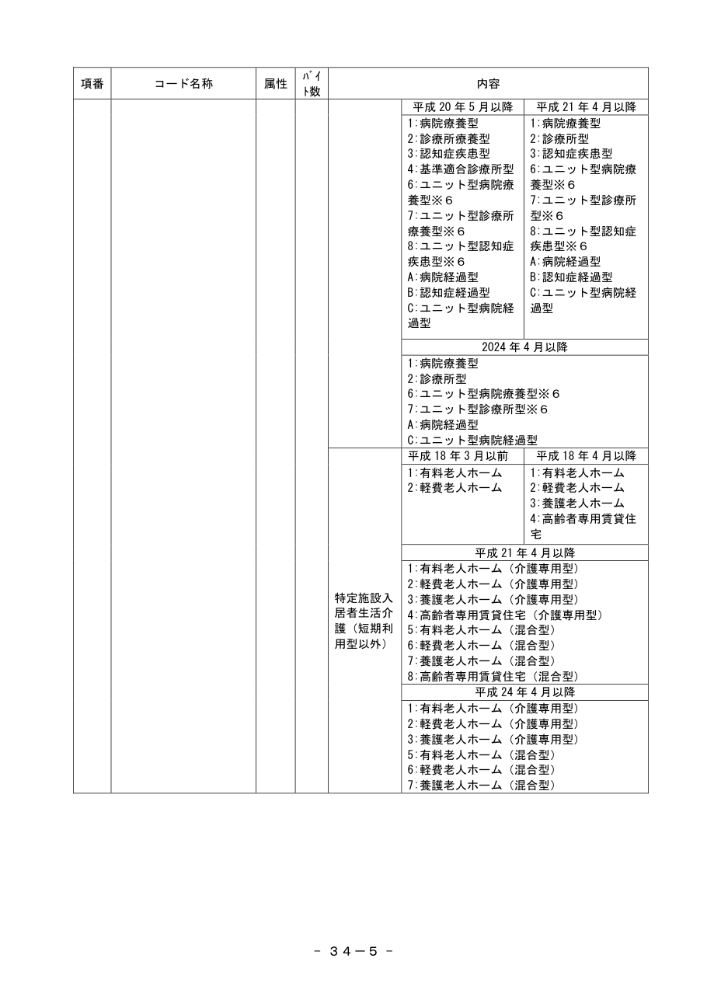
| 項番 | 項目名 | 属性 | 桁数 | 内容 | 必須 | 備考 | その他の列 |
|---|---|---|---|---|---|---|---|
| 平成20年5月以降 | 1:病院療養型 2:診療所療養型 3:認知症疾患型 4:基準適合診療所型 6:ユニット型病院療養型※６ 7:ユニット型診療所療養型※６ 8:ユニット型認知症疾患型※６ A:病院経過型 B:認知症経過型 C:ユニット型病院経過型 | ||||||
| 平成21年4月以降 | 1:病院療養型 2:診療所型 3:認知症疾患型 6:ユニット型病院療養型※６ 7:ユニット型診療所型※６ 8:ユニット型認知症疾患型※６ A:病院経過型 B:認知症経過型 C:ユニット型病院経過型 | ||||||
| 2024年4月以降 | 1:病院療養型 2:診療所型 6:ユニット型病院療養型※６ 7:ユニット型診療所型※６ A:病院経過型 C:ユニット型病院経過型 | ||||||
| 特定施設入居者生活介護（短期利用型以外） > 平成18年3月以前 | 1:有料老人ホーム 2:軽費老人ホーム | ||||||
| 特定施設入居者生活介護（短期利用型以外） > 平成18年4月以降 | 1:有料老人ホーム 2:軽費老人ホーム 3:養護老人ホーム 4:高齢者専用賃貸住宅 | ||||||
| 特定施設入居者生活介護（短期利用型以外） > 平成21年4月以降 | 1:有料老人ホーム（介護専用型） 2:軽費老人ホーム（介護専用型） 3:養護老人ホーム（介護専用型） 4:高齢者専用賃貸住宅（介護専用型） 5:有料老人ホーム（混合型） 6:軽費老人ホーム（混合型） 7:養護老人ホーム（混合型） 8:高齢者専用賃貸住宅（混合型） | ||||||
| 特定施設入居者生活介護（短期利用型以外） > 平成24年4月以降 | 1:有料老人ホーム（介護専用型） 2:軽費老人ホーム（介護専用型） 3:養護老人ホーム（介護専用型） 5:有料老人ホーム（混合型） 6:軽費老人ホーム（混合型） 7:養護老人ホーム（混合型） |
| 項番 | 項目名 | 属性 | 桁数 | 内容 | 必須 | 備考 | その他の列 |
|---|---|---|---|---|---|---|---|
| [図] 平成20年5月以降 1:病院療養型 2:診療所療養型 3:認知症疾患型 4:基準適合診療所型 6:ユニット型病院療養型※６ 7:ユニット型診療所療養型※６ 8:ユニット型認知症疾患型※６ A:病院経過型 B:認知症経過型 C:ユニット型病院経過型 平成21年4月以降 1:病院療養型 2:診療所型 3:認知症疾患型 6:ユニット型病院療養型※６ 7:ユニット型診療所型※６ 8:ユニット型認知症疾患型※６ A:病院経過型 B:認知症経過型 C:ユニット型病院経過型 2024年4月以降 1:病院療養型 2:診療所型 6:ユニット型病院療養型※６ 7:ユニット型診療所型※６ A:病院経過型 C:ユニット型病院経過型 | |||||||
| 特定施設入居者生活介護（短期利用型以外） | 平成18年3月以前 1:有料老人ホーム 2:軽費老人ホーム 平成18年4月以降 1:有料老人ホーム 2:軽費老人ホーム 3:養護老人ホーム 4:高齢者専用賃貸住宅 平成21年4月以降 1:有料老人ホーム（介護専用型） 2:軽費老人ホーム（介護専用型） 3:養護老人ホーム（介護専用型） 4:高齢者専用賃貸住宅（介護専用型） 5:有料老人ホーム（混合型） 6:軽費老人ホーム（混合型） 7:養護老人ホーム（混合型） 8:高齢者専用賃貸住宅（混合型） 平成24年4月以降 1:有料老人ホーム（介護専用型） 2:軽費老人ホーム（介護専用型） 3:養護老人ホーム（介護専用型） 5:有料老人ホーム（混合型） 6:軽費老人ホーム（混合型） 7:養護老人ホーム（混合型） |
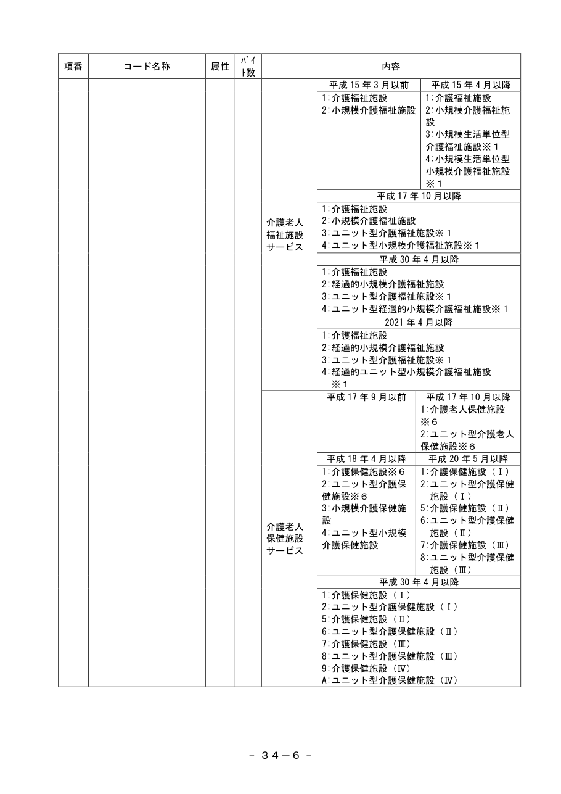
| 項番 | 項目名 | 属性 | 桁数 | 内容 | 必須 | 備考 | その他の列 |
|---|---|---|---|---|---|---|---|
| 介護老人福祉施設サービス > 平成15年3月以前 | 1:介護福祉施設 2:小規模介護福祉施設 | 内容 > サービス: 介護老人福祉施設サービス 内容 > 適用期間: 平成15年3月以前 | |||||
| 介護老人福祉施設サービス > 平成15年4月以降 | 1:介護福祉施設 2:小規模介護福祉施設 3:小規模生活単位型介護福祉施設※1 4:小規模生活単位型小規模介護福祉施設※1 | 内容 > サービス: 介護老人福祉施設サービス 内容 > 適用期間: 平成15年4月以降 | |||||
| 介護老人福祉施設サービス > 平成17年10月以降 | 1:介護福祉施設 2:小規模介護福祉施設 3:ユニット型介護福祉施設※1 4:ユニット型小規模介護福祉施設※1 | 内容 > サービス: 介護老人福祉施設サービス 内容 > 適用期間: 平成17年10月以降 | |||||
| 介護老人福祉施設サービス > 平成30年4月以降 | 1:介護福祉施設 2:経過的小規模介護福祉施設 3:ユニット型介護福祉施設※1 4:ユニット型経過的小規模介護福祉施設※1 | 内容 > サービス: 介護老人福祉施設サービス 内容 > 適用期間: 平成30年4月以降 | |||||
| 介護老人福祉施設サービス > 2021年4月以降 | 1:介護福祉施設 2:経過的小規模介護福祉施設 3:ユニット型介護福祉施設※1 4:経過的ユニット型小規模介護福祉施設※1 | 内容 > サービス: 介護老人福祉施設サービス 内容 > 適用期間: 2021年4月以降 | |||||
| 介護老人保健施設サービス > 平成17年9月以前 | 内容 > サービス: 介護老人保健施設サービス 内容 > 適用期間: 平成17年9月以前 | ||||||
| 介護老人保健施設サービス > 平成17年10月以降 | 1:介護老人保健施設※6 2:ユニット型介護老人保健施設※6 | 内容 > サービス: 介護老人保健施設サービス 内容 > 適用期間: 平成17年10月以降 | |||||
| 介護老人保健施設サービス > 平成18年4月以降 | 1:介護保健施設※6 2:ユニット型介護保健施設※6 3:小規模介護保健施設 4:ユニット型小規模介護保健施設 | 内容 > サービス: 介護老人保健施設サービス 内容 > 適用期間: 平成18年4月以降 | |||||
| 介護老人保健施設サービス > 平成20年5月以降 | 1:介護保健施設（Ⅰ） 2:ユニット型介護保健施設（Ⅰ） 5:介護保健施設（Ⅱ） 6:ユニット型介護保健施設（Ⅱ） 7:介護保健施設（Ⅲ） 8:ユニット型介護保健施設（Ⅲ） | 内容 > サービス: 介護老人保健施設サービス 内容 > 適用期間: 平成20年5月以降 | |||||
| 介護老人保健施設サービス > 平成30年4月以降 | 1:介護保健施設（Ⅰ） 2:ユニット型介護保健施設（Ⅰ） 5:介護保健施設（Ⅱ） 6:ユニット型介護保健施設（Ⅱ） 7:介護保健施設（Ⅲ） 8:ユニット型介護保健施設（Ⅲ） 9:介護保健施設（Ⅳ） A:ユニット型介護保健施設（Ⅳ） | 内容 > サービス: 介護老人保健施設サービス 内容 > 適用期間: 平成30年4月以降 |
| 項番 | 項目名 | 属性 | 桁数 | 内容 | 必須 | 備考 | その他の列 |
|---|---|---|---|---|---|---|---|
| 介護老人福祉施設サービス 平成15年3月以前 1:介護福祉施設 2:小規模介護福祉施設 平成15年4月以降 1:介護福祉施設 2:小規模介護福祉施設 3:小規模生活単位型介護福祉施設※1 4:小規模生活単位型小規模介護福祉施設※1 平成17年10月以降 1:介護福祉施設 2:小規模介護福祉施設 3:ユニット型介護福祉施設※1 4:ユニット型小規模介護福祉施設※1 平成30年4月以降 1:介護福祉施設 2:経過的小規模介護福祉施設 3:ユニット型介護福祉施設※1 4:ユニット型経過的小規模介護福祉施設※1 2021年4月以降 1:介護福祉施設 2:経過的小規模介護福祉施設 3:ユニット型介護福祉施設※1 4:経過的ユニット型小規模介護福祉施設※1 | |||||||
| 介護老人保健施設サービス 平成17年9月以前 （記載なし） 平成17年10月以降 1:介護老人保健施設※6 2:ユニット型介護老人保健施設※6 平成18年4月以降 1:介護保健施設※6 2:ユニット型介護保健施設※6 3:小規模介護保健施設 4:ユニット型小規模介護保健施設 平成20年5月以降 1:介護保健施設（Ⅰ） 2:ユニット型介護保健施設（Ⅰ） 5:介護保健施設（Ⅱ） 6:ユニット型介護保健施設（Ⅱ） 7:介護保健施設（Ⅲ） 8:ユニット型介護保健施設（Ⅲ） 平成30年4月以降 1:介護保健施設（Ⅰ） 2:ユニット型介護保健施設（Ⅰ） 5:介護保健施設（Ⅱ） 6:ユニット型介護保健施設（Ⅱ） 7:介護保健施設（Ⅲ） 8:ユニット型介護保健施設（Ⅲ） 9:介護保健施設（Ⅳ） A:ユニット型介護保健施設（Ⅳ） |
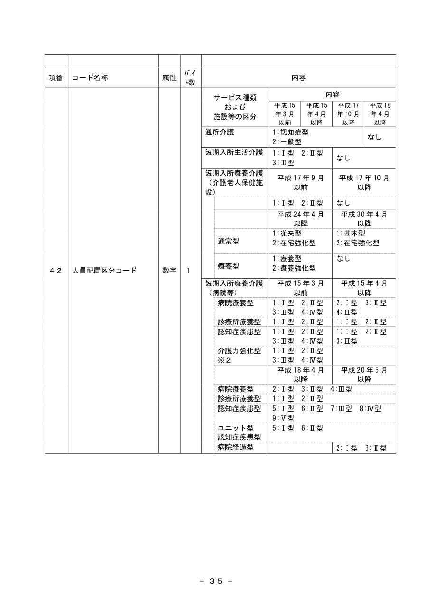
| 項番 | 項目名 | 属性 | 桁数 | 内容 | 必須 | 備考 | その他の列 |
|---|---|---|---|---|---|---|---|
| ４２ | 人員配置区分コード > 通所介護 | 数字 | 1 | サービス種類および施設等の区分: 通所介護 内容 > 平成15年3月以前: 1:認知症型 2:一般型 内容 > 平成15年4月以降: 1:認知症型 2:一般型 内容 > 平成17年10月以降: 1:認知症型 2:一般型 内容 > 平成18年4月以降: なし | |||
| ４２ | 人員配置区分コード > 短期入所生活介護 | 数字 | 1 | サービス種類および施設等の区分: 短期入所生活介護 内容 > 平成15年3月以前: 1:Ⅰ型 2:Ⅱ型 3:Ⅲ型 内容 > 平成15年4月以降: 1:Ⅰ型 2:Ⅱ型 3:Ⅲ型 内容 > 平成17年10月以降: なし 内容 > 平成18年4月以降: なし | |||
| ４２ | 人員配置区分コード > 短期入所療養介護（介護老人保健施設） > 期間見出し | 数字 | 1 | サービス種類および施設等の区分: 内容 > 平成15年3月以前: 平成17年9月以前 内容 > 平成15年4月以降: 平成17年9月以前 内容 > 平成17年10月以降: 平成17年10月以降 内容 > 平成18年4月以降: 平成17年10月以降 | |||
| ４２ | 人員配置区分コード > 短期入所療養介護（介護老人保健施設） > | 数字 | 1 | サービス種類および施設等の区分: 内容 > 平成15年3月以前: 1:Ⅰ型 2:Ⅱ型 内容 > 平成15年4月以降: 1:Ⅰ型 2:Ⅱ型 内容 > 平成17年10月以降: なし 内容 > 平成18年4月以降: なし | |||
| ４２ | 人員配置区分コード > 短期入所療養介護（介護老人保健施設） > 期間見出し | 数字 | 1 | サービス種類および施設等の区分: 内容 > 平成15年3月以前: 平成24年4月以降 内容 > 平成15年4月以降: 平成24年4月以降 内容 > 平成17年10月以降: 平成30年4月以降 内容 > 平成18年4月以降: 平成30年4月以降 | |||
| ４２ | 人員配置区分コード > 短期入所療養介護（介護老人保健施設） > 通常型 | 数字 | 1 | サービス種類および施設等の区分: 通常型 内容 > 平成15年3月以前: 1:従来型 2:在宅強化型 内容 > 平成15年4月以降: 1:従来型 2:在宅強化型 内容 > 平成17年10月以降: 1:基本型 2:在宅強化型 内容 > 平成18年4月以降: 1:基本型 2:在宅強化型 | |||
| ４２ | 人員配置区分コード > 短期入所療養介護（介護老人保健施設） > 療養型 | 数字 | 1 | サービス種類および施設等の区分: 療養型 内容 > 平成15年3月以前: 1:療養型 2:療養強化型 内容 > 平成15年4月以降: 1:療養型 2:療養強化型 内容 > 平成17年10月以降: なし 内容 > 平成18年4月以降: なし | |||
| ４２ | 人員配置区分コード > 短期入所療養介護（病院等） > 期間見出し | 数字 | 1 | サービス種類および施設等の区分: 内容 > 平成15年3月以前: 平成15年3月以前 内容 > 平成15年4月以降: 平成15年3月以前 内容 > 平成17年10月以降: 平成15年4月以降 内容 > 平成18年4月以降: 平成15年4月以降 | |||
| ４２ | 人員配置区分コード > 短期入所療養介護（病院等） > 病院療養型 | 数字 | 1 | サービス種類および施設等の区分: 病院療養型 内容 > 平成15年3月以前: 1:Ⅰ型 2:Ⅱ型 3:Ⅲ型 4:Ⅳ型 内容 > 平成15年4月以降: 1:Ⅰ型 2:Ⅱ型 3:Ⅲ型 4:Ⅳ型 内容 > 平成17年10月以降: 2:Ⅰ型 3:Ⅱ型 4:Ⅲ型 内容 > 平成18年4月以降: 2:Ⅰ型 3:Ⅱ型 4:Ⅲ型 | |||
| ４２ | 人員配置区分コード > 短期入所療養介護（病院等） > 診療所療養型 | 数字 | 1 | サービス種類および施設等の区分: 診療所療養型 内容 > 平成15年3月以前: 1:Ⅰ型 2:Ⅱ型 内容 > 平成15年4月以降: 1:Ⅰ型 2:Ⅱ型 内容 > 平成17年10月以降: 1:Ⅰ型 2:Ⅱ型 内容 > 平成18年4月以降: 1:Ⅰ型 2:Ⅱ型 | |||
| ４２ | 人員配置区分コード > 短期入所療養介護（病院等） > 認知症疾患型 | 数字 | 1 | サービス種類および施設等の区分: 認知症疾患型 内容 > 平成15年3月以前: 1:Ⅰ型 2:Ⅱ型 3:Ⅲ型 4:Ⅳ型 内容 > 平成15年4月以降: 1:Ⅰ型 2:Ⅱ型 3:Ⅲ型 4:Ⅳ型 内容 > 平成17年10月以降: 1:Ⅰ型 2:Ⅱ型 3:Ⅲ型 内容 > 平成18年4月以降: 1:Ⅰ型 2:Ⅱ型 3:Ⅲ型 | |||
| ４２ | 人員配置区分コード > 短期入所療養介護（病院等） > 介護力強化型 ※２ | 数字 | 1 | サービス種類および施設等の区分: 介護力強化型 ※２ 内容 > 平成15年3月以前: 1:Ⅰ型 2:Ⅱ型 3:Ⅲ型 4:Ⅳ型 内容 > 平成15年4月以降: 1:Ⅰ型 2:Ⅱ型 3:Ⅲ型 4:Ⅳ型 内容 > 平成17年10月以降: － 内容 > 平成18年4月以降: － | |||
| ４２ | 人員配置区分コード > 短期入所療養介護（病院等） > 期間見出し | 数字 | 1 | サービス種類および施設等の区分: 内容 > 平成15年3月以前: 平成18年4月以降 内容 > 平成15年4月以降: 平成18年4月以降 内容 > 平成17年10月以降: 平成20年5月以降 内容 > 平成18年4月以降: 平成20年5月以降 | |||
| ４２ | 人員配置区分コード > 短期入所療養介護（病院等） > 病院療養型 | 数字 | 1 | サービス種類および施設等の区分: 病院療養型 内容 > 平成15年3月以前: 2:Ⅰ型 3:Ⅱ型 4:Ⅲ型 内容 > 平成15年4月以降: 2:Ⅰ型 3:Ⅱ型 4:Ⅲ型 内容 > 平成17年10月以降: 2:Ⅰ型 3:Ⅱ型 4:Ⅲ型 内容 > 平成18年4月以降: 2:Ⅰ型 3:Ⅱ型 4:Ⅲ型 | |||
| ４２ | 人員配置区分コード > 短期入所療養介護（病院等） > 診療所療養型 | 数字 | 1 | サービス種類および施設等の区分: 診療所療養型 内容 > 平成15年3月以前: 1:Ⅰ型 2:Ⅱ型 内容 > 平成15年4月以降: 1:Ⅰ型 2:Ⅱ型 内容 > 平成17年10月以降: 1:Ⅰ型 2:Ⅱ型 内容 > 平成18年4月以降: 1:Ⅰ型 2:Ⅱ型 | |||
| ４２ | 人員配置区分コード > 短期入所療養介護（病院等） > 認知症疾患型 | 数字 | 1 | サービス種類および施設等の区分: 認知症疾患型 内容 > 平成15年3月以前: 5:Ⅰ型 6:Ⅱ型 7:Ⅲ型 8:Ⅳ型 9:Ⅴ型 内容 > 平成15年4月以降: 5:Ⅰ型 6:Ⅱ型 7:Ⅲ型 8:Ⅳ型 9:Ⅴ型 内容 > 平成17年10月以降: 5:Ⅰ型 6:Ⅱ型 7:Ⅲ型 8:Ⅳ型 9:Ⅴ型 内容 > 平成18年4月以降: 5:Ⅰ型 6:Ⅱ型 7:Ⅲ型 8:Ⅳ型 9:Ⅴ型 | |||
| ４２ | 人員配置区分コード > 短期入所療養介護（病院等） > ユニット型 認知症疾患型 | 数字 | 1 | サービス種類および施設等の区分: ユニット型 認知症疾患型 内容 > 平成15年3月以前: 5:Ⅰ型 6:Ⅱ型 内容 > 平成15年4月以降: 5:Ⅰ型 6:Ⅱ型 内容 > 平成17年10月以降: 5:Ⅰ型 6:Ⅱ型 内容 > 平成18年4月以降: 5:Ⅰ型 6:Ⅱ型 | |||
| ４２ | 人員配置区分コード > 短期入所療養介護（病院等） > 病院経過型 | 数字 | 1 | サービス種類および施設等の区分: 病院経過型 内容 > 平成15年3月以前: － 内容 > 平成15年4月以降: － 内容 > 平成17年10月以降: 2:Ⅰ型 3:Ⅱ型 内容 > 平成18年4月以降: 2:Ⅰ型 3:Ⅱ型 |
| 項番 | 項目名 | 属性 | 桁数 | 内容 | 必須 | 備考 | その他の列 |
|---|---|---|---|---|---|---|---|
| ４２ | 人員配置区分コード | 数字 | 1 | [図] サービス種類および施設等の区分 / 内容（平成15年3月以前、平成15年4月以降、平成17年10月以降、平成18年4月以降） 通所介護: 1:認知症型 2:一般型 / 平成18年4月以降: なし 短期入所生活介護: 1:Ⅰ型 2:Ⅱ型 3:Ⅲ型 / 平成17年10月以降: なし 短期入所療養介護（介護老人保健施設）: 平成17年9月以前 / 平成17年10月以降 1:Ⅰ型 2:Ⅱ型 / なし 平成24年4月以降 / 平成30年4月以降 通常型: 1:従来型 2:在宅強化型 / 1:基本型 2:在宅強化型 療養型: 1:療養型 2:療養強化型 / なし 短期入所療養介護（病院等）: 平成15年3月以前 / 平成15年4月以降 病院療養型: 1:Ⅰ型 2:Ⅱ型 3:Ⅲ型 4:Ⅳ型 / 2:Ⅰ型 3:Ⅱ型 4:Ⅲ型 診療所療養型: 1:Ⅰ型 2:Ⅱ型 / 1:Ⅰ型 2:Ⅱ型 認知症疾患型: 1:Ⅰ型 2:Ⅱ型 3:Ⅲ型 4:Ⅳ型 / 1:Ⅰ型 2:Ⅱ型 3:Ⅲ型 介護力強化型※２: 1:Ⅰ型 2:Ⅱ型 3:Ⅲ型 4:Ⅳ型 / (空欄) 平成18年4月以降 / 平成20年5月以降 病院療養型: 2:Ⅰ型 3:Ⅱ型 4:Ⅲ型 診療所療養型: 1:Ⅰ型 2:Ⅱ型 認知症疾患型: 5:Ⅰ型 6:Ⅱ型 7:Ⅲ型 8:Ⅳ型 9:Ⅴ型 ユニット型認知症疾患型: 5:Ⅰ型 6:Ⅱ型 病院経過型: (空欄) / 2:Ⅰ型 3:Ⅱ型 |
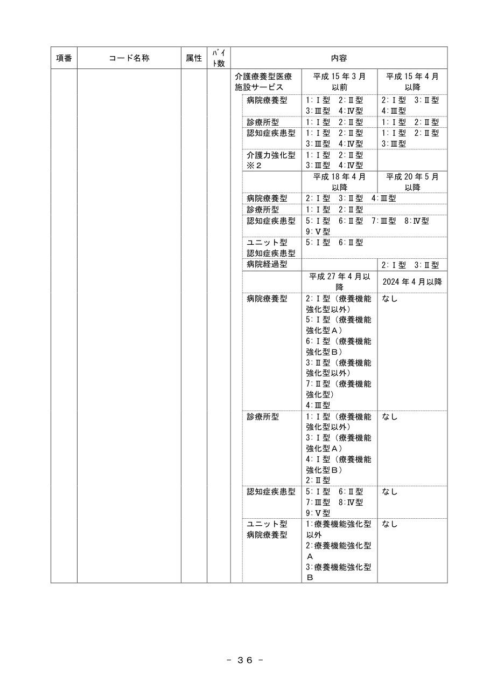
| 項番 | 項目名 | 属性 | 桁数 | 内容 | 必須 | 備考 | その他の列 |
|---|---|---|---|---|---|---|---|
| 介護療養型医療施設サービス | コード名称: － 内容 > 左列: 平成15年3月以前 内容 > 右列: 平成15年4月以降 | ||||||
| 介護療養型医療施設サービス > 病院療養型 | コード名称: － 内容 > 左列: 1:Ⅰ型 2:Ⅱ型 3:Ⅲ型 4:Ⅳ型 内容 > 右列: 2:Ⅰ型 3:Ⅱ型 4:Ⅲ型 | ||||||
| 介護療養型医療施設サービス > 診療所型 | コード名称: － 内容 > 左列: 1:Ⅰ型 2:Ⅱ型 内容 > 右列: 1:Ⅰ型 2:Ⅱ型 | ||||||
| 介護療養型医療施設サービス > 認知症疾患型 | コード名称: － 内容 > 左列: 1:Ⅰ型 2:Ⅱ型 3:Ⅲ型 4:Ⅳ型 内容 > 右列: 1:Ⅰ型 2:Ⅱ型 3:Ⅲ型 | ||||||
| 介護療養型医療施設サービス > 介護力強化型※２ | コード名称: － 内容 > 左列: 1:Ⅰ型 2:Ⅱ型 3:Ⅲ型 4:Ⅳ型 内容 > 右列: － | ||||||
| 介護療養型医療施設サービス | コード名称: － 内容 > 左列: 平成18年4月以降 内容 > 右列: 平成20年5月以降 | ||||||
| 介護療養型医療施設サービス > 病院療養型 | コード名称: － 内容 > 左列: 2:Ⅰ型 3:Ⅱ型 4:Ⅲ型 内容 > 右列: － | ||||||
| 介護療養型医療施設サービス > 診療所型 | コード名称: － 内容 > 左列: 1:Ⅰ型 2:Ⅱ型 内容 > 右列: － | ||||||
| 介護療養型医療施設サービス > 認知症疾患型 | コード名称: － 内容 > 左列: 5:Ⅰ型 6:Ⅱ型 7:Ⅲ型 8:Ⅳ型 9:Ⅴ型 内容 > 右列: － | ||||||
| 介護療養型医療施設サービス > ユニット型認知症疾患型 | コード名称: － 内容 > 左列: 5:Ⅰ型 6:Ⅱ型 内容 > 右列: － | ||||||
| 介護療養型医療施設サービス > 病院経過型 | コード名称: － 内容 > 左列: － 内容 > 右列: 2:Ⅰ型 3:Ⅱ型 | ||||||
| 介護療養型医療施設サービス | コード名称: － 内容 > 左列: 平成27年4月以降 内容 > 右列: 2024年4月以降 | ||||||
| 介護療養型医療施設サービス > 病院療養型 | コード名称: － 内容 > 左列: 2:Ⅰ型（療養機能強化型以外） 5:Ⅰ型（療養機能強化型Ａ） 6:Ⅰ型（療養機能強化型Ｂ） 3:Ⅱ型（療養機能強化型以外） 7:Ⅱ型（療養機能強化型） 4:Ⅲ型 内容 > 右列: なし | ||||||
| 介護療養型医療施設サービス > 診療所型 | コード名称: － 内容 > 左列: 1:Ⅰ型（療養機能強化型以外） 3:Ⅰ型（療養機能強化型Ａ） 4:Ⅰ型（療養機能強化型Ｂ） 2:Ⅱ型 内容 > 右列: なし | ||||||
| 介護療養型医療施設サービス > 認知症疾患型 | コード名称: － 内容 > 左列: 5:Ⅰ型 6:Ⅱ型 7:Ⅲ型 8:Ⅳ型 9:Ⅴ型 内容 > 右列: なし | ||||||
| 介護療養型医療施設サービス > ユニット型病院療養型 | コード名称: － 内容 > 左列: 1:療養機能強化型以外 2:療養機能強化型Ａ 3:療養機能強化型Ｂ 内容 > 右列: なし |
| 項番 | 項目名 | 属性 | 桁数 | 内容 | 必須 | 備考 | その他の列 |
|---|---|---|---|---|---|---|---|
| 介護療養型医療施設サービス [図] 平成15年3月以前 / 平成15年4月以降 病院療養型: 1:Ⅰ型 2:Ⅱ型 3:Ⅲ型 4:Ⅳ型 / 2:Ⅰ型 3:Ⅱ型 4:Ⅲ型 診療所型: 1:Ⅰ型 2:Ⅱ型 / 1:Ⅰ型 2:Ⅱ型 認知症疾患型: 1:Ⅰ型 2:Ⅱ型 3:Ⅲ型 4:Ⅳ型 / 1:Ⅰ型 2:Ⅱ型 3:Ⅲ型 介護力強化型※2: 1:Ⅰ型 2:Ⅱ型 3:Ⅲ型 4:Ⅳ型 / (空欄) 平成18年4月以降 / 平成20年5月以降 病院療養型: 2:Ⅰ型 3:Ⅱ型 4:Ⅲ型 診療所型: 1:Ⅰ型 2:Ⅱ型 認知症疾患型: 5:Ⅰ型 6:Ⅱ型 7:Ⅲ型 8:Ⅳ型 9:Ⅴ型 ユニット型認知症疾患型: 5:Ⅰ型 6:Ⅱ型 病院経過型: (平成18年4月以降は空欄) / 2:Ⅰ型 3:Ⅱ型 平成27年4月以降 / 2024年4月以降 病院療養型: 2:Ⅰ型(療養機能強化型以外) 5:Ⅰ型(療養機能強化型A) 6:Ⅰ型(療養機能強化型B) 3:Ⅱ型(療養機能強化型以外) 7:Ⅱ型(療養機能強化型) 4:Ⅲ型 / なし 診療所型: 1:Ⅰ型(療養機能強化型以外) 3:Ⅰ型(療養機能強化型A) 4:Ⅰ型(療養機能強化型B) 2:Ⅱ型 / なし 認知症疾患型: 5:Ⅰ型 6:Ⅱ型 7:Ⅲ型 8:Ⅳ型 9:Ⅴ型 / なし ユニット型病院療養型: 1:療養機能強化型以外 2:療養機能強化型A 3:療養機能強化型B / なし |
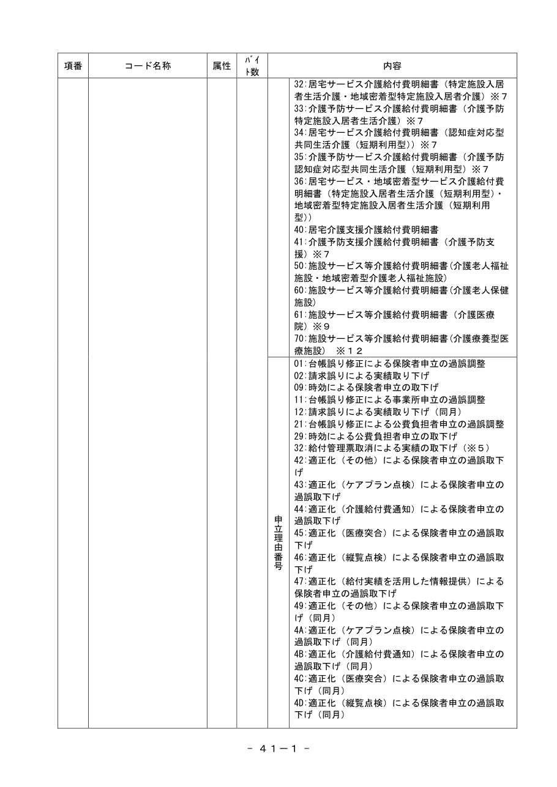
| 項番 | 項目名 | 属性 | 桁数 | 内容 | 必須 | 備考 | その他の列 |
|---|---|---|---|---|---|---|---|
| 32:居宅サービス介護給付費明細書（特定施設入居者生活介護・地域密着型特定施設入居者介護）※7 33:介護予防サービス介護給付費明細書（介護予防特定施設入居者生活介護）※7 34:居宅サービス介護給付費明細書（認知症対応型共同生活介護（短期利用型））※7 35:介護予防サービス介護給付費明細書（介護予防認知症対応型共同生活介護（短期利用型））※7 36:居宅サービス・地域密着型サービス介護給付費明細書（特定施設入居者生活介護（短期利用型）・地域密着型特定施設入居者生活介護（短期利用型）） 40:居宅介護支援介護給付費明細書 41:介護予防支援介護給付費明細書（介護予防支援）※7 50:施設サービス等介護給付費明細書(介護老人福祉施設・地域密着型介護老人福祉施設) 60:施設サービス等介護給付費明細書(介護老人保健施設) 61:施設サービス等介護給付費明細書（介護医療院）※9 70:施設サービス等介護給付費明細書(介護療養型医療施設) ※１２ | |||||||
| 申立理由番号 | 01:台帳誤り修正による保険者申立の過誤調整 02:請求誤りによる実績取り下げ 09:時効による保険者申立の取下げ 11:台帳誤り修正による事業所申立の過誤調整 12:請求誤りによる実績取り下げ（同月） 21:台帳誤り修正による公費負担者申立の過誤調整 29:時効による公費負担者申立の取下げ 32:給付管理票取消による実績の取下げ（※５） 42:適正化（その他）による保険者申立の過誤取下げ 43:適正化（ケアプラン点検）による保険者申立の過誤取下げ 44:適正化（介護給付費通知）による保険者申立の過誤取下げ 45:適正化（医療突合）による保険者申立の過誤取下げ 46:適正化（縦覧点検）による保険者申立の過誤取下げ 47:適正化（給付実績を活用した情報提供）による保険者申立の過誤取下げ 49:適正化（その他）による保険者申立の過誤取下げ（同月） 4A:適正化（ケアプラン点検）による保険者申立の過誤取下げ（同月） 4B:適正化（介護給付費通知）による保険者申立の過誤取下げ（同月） 4C:適正化（医療突合）による保険者申立の過誤取下げ（同月） 4D:適正化（縦覧点検）による保険者申立の過誤取下げ（同月） |
| 項番 | 項目名 | 属性 | 桁数 | 内容 | 必須 | 備考 | その他の列 |
|---|---|---|---|---|---|---|---|
| 32:居宅サービス介護給付費明細書（特定施設入居者生活介護・地域密着型特定施設入居者介護）※７ 33:介護予防サービス介護給付費明細書（介護予防特定施設入居者生活介護）※７ 34:居宅サービス介護給付費明細書（認知症対応型共同生活介護（短期利用型））※７ 35:介護予防サービス介護給付費明細書（介護予防認知症対応型共同生活介護（短期利用型）※７ 36:居宅サービス・地域密着型サービス介護給付費明細書（特定施設入居者生活介護（短期利用型）・地域密着型特定施設入居者生活介護（短期利用型）） 40:居宅介護支援介護給付費明細書 41:介護予防支援介護給付費明細書（介護予防支援）※７ 50:施設サービス等介護給付費明細書(介護老人福祉施設・地域密着型介護老人福祉施設) 60:施設サービス等介護給付費明細書(介護老人保健施設) 61:施設サービス等介護給付費明細書（介護医療院）※９ 70:施設サービス等介護給付費明細書(介護療養型医療施設) ※１２ | |||||||
| 申立理由番号 | 01:台帳誤り修正による保険者申立の過誤調整 02:請求誤りによる実績取り下げ 09:時効による保険者申立の取下げ 11:台帳誤り修正による事業所申立の過誤調整 12:請求誤りによる実績取り下げ（同月） 21:台帳誤り修正による公費負担者申立の過誤調整 29:時効による公費負担者申立の取下げ 32:給付管理票取消による実績の取下げ（※５） 42:適正化（その他）による保険者申立の過誤取下げ 43:適正化（ケアプラン点検）による保険者申立の過誤取下げ 44:適正化（介護給付費通知）による保険者申立の過誤取下げ 45:適正化（医療突合）による保険者申立の過誤取下げ 46:適正化（縦覧点検）による保険者申立の過誤取下げ 47:適正化（給付実績を活用した情報提供）による保険者申立の過誤取下げ 49:適正化（その他）による保険者申立の過誤取下げ（同月） 4A:適正化（ケアプラン点検）による保険者申立の過誤取下げ（同月） 4B:適正化（介護給付費通知）による保険者申立の過誤取下げ（同月） 4C:適正化（医療突合）による保険者申立の過誤取下げ（同月） 4D:適正化（縦覧点検）による保険者申立の過誤取下げ（同月） |
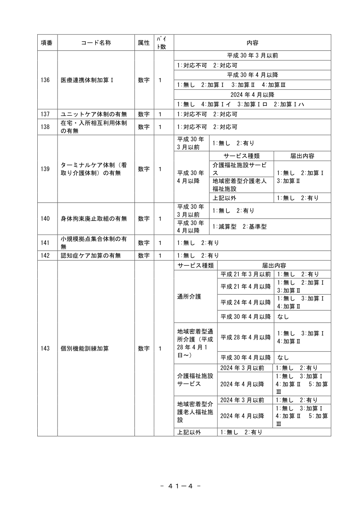
| 項番 | 項目名 | 属性 | 桁数 | 内容 | 必須 | 備考 | その他の列 |
|---|---|---|---|---|---|---|---|
| 136 | 医療連携体制加算Ⅰ | 数字 | 1 | 平成30年3月以前 1:対応不可 2:対応可 平成30年4月以降 1:無し 2:加算Ⅰ 3:加算Ⅱ 4:加算Ⅲ 2024年4月以降 1:無し 4:加算Ⅰイ 3:加算Ⅰロ 2:加算Ⅰハ | |||
| 137 | ユニットケア体制の有無 | 数字 | 1 | 1:対応不可 2:対応可 | |||
| 138 | 在宅・入所相互利用体制の有無 | 数字 | 1 | 1:対応不可 2:対応可 | |||
| 139 | ターミナルケア体制（看取り介護体制）の有無 | 数字 | 1 | 平成30年3月以前 1:無し 2:有り 平成30年4月以降 サービス種類／届出内容 介護福祉施設サービス／1:無し 2:加算Ⅰ 3:加算Ⅱ 地域密着型介護老人福祉施設／1:無し 2:加算Ⅰ 3:加算Ⅱ 上記以外／1:無し 2:有り | |||
| 140 | 身体拘束廃止取組の有無 | 数字 | 1 | 平成30年3月以前 1:無し 2:有り 平成30年4月以降 1:減算型 2:基準型 | |||
| 141 | 小規模拠点集合体制の有無 | 数字 | 1 | 1:無し 2:有り | |||
| 142 | 認知症ケア加算の有無 | 数字 | 1 | 1:無し 2:有り | |||
| 143 | 個別機能訓練加算 | 数字 | 1 | サービス種類／届出内容 通所介護／平成21年3月以前 1:無し 2:有り 通所介護／平成21年4月以降 1:無し 2:加算Ⅰ 3:加算Ⅱ 通所介護／平成24年4月以降 1:無し 3:加算Ⅰ 4:加算Ⅱ 通所介護／平成30年4月以降 なし 地域密着型通所介護（平成28年4月1日～）／平成28年4月以降 1:無し 3:加算Ⅰ 4:加算Ⅱ 地域密着型通所介護（平成28年4月1日～）／平成30年4月以降 なし 介護福祉施設サービス／2024年3月以前 1:無し 2:有り 介護福祉施設サービス／2024年4月以降 1:無し 3:加算Ⅰ 4:加算Ⅱ 5:加算Ⅲ 地域密着型介護老人福祉施設／2024年3月以前 1:無し 2:有り 地域密着型介護老人福祉施設／2024年4月以降 1:無し 3:加算Ⅰ 4:加算Ⅱ 5:加算Ⅲ 上記以外 1:無し 2:有り |
| 項番 | 項目名 | 属性 | 桁数 | 内容 | 必須 | 備考 | その他の列 |
|---|---|---|---|---|---|---|---|
| 136 | 医療連携体制加算Ⅰ | 数字 | 1 | 平成30年3月以前 1:対応不可 2:対応可 平成30年4月以降 1:無し 2:加算Ⅰ 3:加算Ⅱ 4:加算Ⅲ 2024年4月以降 1:無し 4:加算Ⅰイ 3:加算Ⅰロ 2:加算Ⅰハ | |||
| 137 | ユニットケア体制の有無 | 数字 | 1 | 1:対応不可 2:対応可 | |||
| 138 | 在宅・入所相互利用体制の有無 | 数字 | 1 | 1:対応不可 2:対応可 | |||
| 139 | ターミナルケア体制（看取り介護体制）の有無 | 数字 | 1 | 平成30年3月以前: 1:無し 2:有り 平成30年4月以降: 介護福祉施設サービス、地域密着型介護老人福祉施設: 1:無し 2:加算Ⅰ 3:加算Ⅱ 上記以外: 1:無し 2:有り | |||
| 140 | 身体拘束廃止取組の有無 | 数字 | 1 | 平成30年3月以前: 1:無し 2:有り 平成30年4月以降: 1:減算型 2:基準型 | |||
| 141 | 小規模拠点集合体制の有無 | 数字 | 1 | 1:無し 2:有り | |||
| 142 | 認知症ケア加算の有無 | 数字 | 1 | 1:無し 2:有り | |||
| 143 | 個別機能訓練加算 | 数字 | 1 | サービス種類 / 届出内容 通所介護: 平成21年3月以前 1:無し 2:有り 通所介護: 平成21年4月以降 1:無し 2:加算Ⅰ 3:加算Ⅱ 通所介護: 平成24年4月以降 1:無し 3:加算Ⅰ 4:加算Ⅱ 通所介護: 平成30年4月以降 なし 地域密着型通所介護（平成28年4月1日～）: 平成28年4月以降 1:無し 3:加算Ⅰ 4:加算Ⅱ 地域密着型通所介護（平成28年4月1日～）: 平成30年4月以降 なし 介護福祉施設サービス: 2024年3月以前 1:無し 2:有り 介護福祉施設サービス: 2024年4月以降 1:無し 3:加算Ⅰ 4:加算Ⅱ 5:加算Ⅲ 地域密着型介護老人福祉施設: 2024年3月以前 1:無し 2:有り 地域密着型介護老人福祉施設: 2024年4月以降 1:無し 3:加算Ⅰ 4:加算Ⅱ 5:加算Ⅲ 上記以外: 1:無し 2:有り |
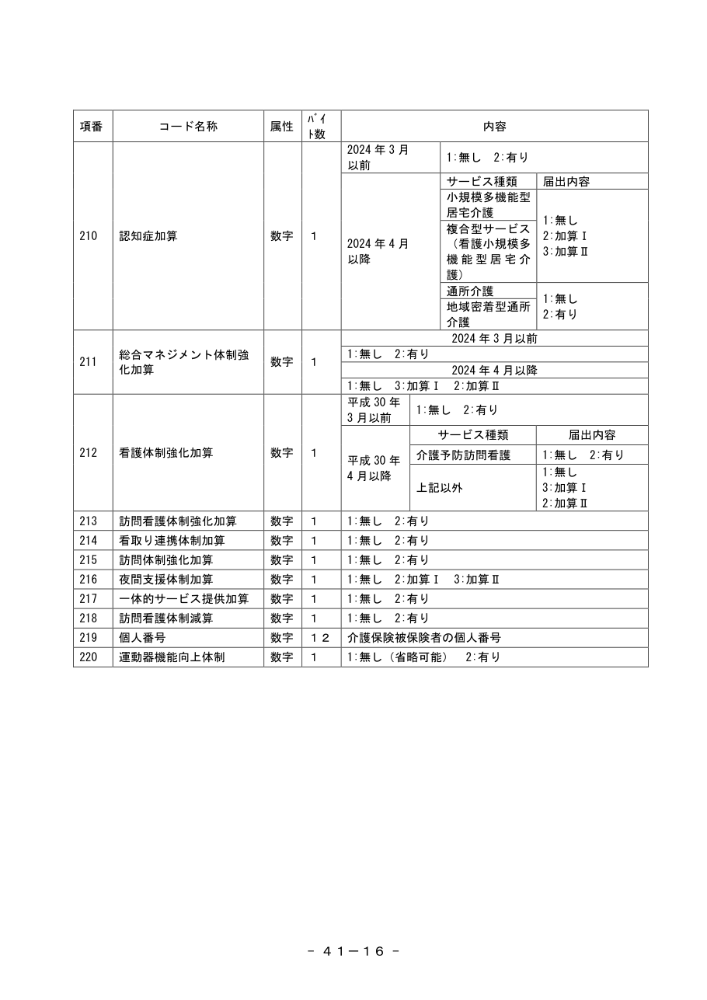
| 項番 | 項目名 | 属性 | 桁数 | 内容 | 必須 | 備考 | その他の列 |
|---|---|---|---|---|---|---|---|
| 210 | 認知症加算 | 数字 | 1 | 2024年3月以前 1:無し 2:有り 2024年4月以降 サービス種類：小規模多機能型居宅介護 届出内容：1:無し 2:加算Ⅰ 3:加算Ⅱ サービス種類：複合型サービス（看護小規模多機能型居宅介護） 届出内容：1:無し 2:加算Ⅰ 3:加算Ⅱ サービス種類：通所介護 届出内容：1:無し 2:有り サービス種類：地域密着型通所介護 届出内容：1:無し 2:有り | |||
| 211 | 総合マネジメント体制強化加算 | 数字 | 1 | 2024年3月以前 1:無し 2:有り 2024年4月以降 1:無し 3:加算Ⅰ 2:加算Ⅱ | |||
| 212 | 看護体制強化加算 | 数字 | 1 | 平成30年3月以前 1:無し 2:有り 平成30年4月以降 サービス種類：介護予防訪問看護 届出内容：1:無し 2:有り サービス種類：上記以外 届出内容：1:無し 3:加算Ⅰ 2:加算Ⅱ | |||
| 213 | 訪問看護体制強化加算 | 数字 | 1 | 1:無し 2:有り | |||
| 214 | 看取り連携体制加算 | 数字 | 1 | 1:無し 2:有り | |||
| 215 | 訪問体制強化加算 | 数字 | 1 | 1:無し 2:有り | |||
| 216 | 夜間支援体制加算 | 数字 | 1 | 1:無し 2:加算Ⅰ 3:加算Ⅱ | |||
| 217 | 一体的サービス提供加算 | 数字 | 1 | 1:無し 2:有り | |||
| 218 | 訪問看護体制減算 | 数字 | 1 | 1:無し 2:有り | |||
| 219 | 個人番号 | 数字 | 12 | 介護保険被保険者の個人番号 | |||
| 220 | 運動器機能向上体制 | 数字 | 1 | 1:無し（省略可能） 2:有り |
| 項番 | 項目名 | 属性 | 桁数 | 内容 | 必須 | 備考 | その他の列 |
|---|---|---|---|---|---|---|---|
| 210 | 認知症加算 | 数字 | 1 | 2024年3月以前: 1:無し 2:有り 2024年4月以降: サービス種類 / 届出内容 小規模多機能型居宅介護、複合型サービス（看護小規模多機能型居宅介護）: 1:無し 2:加算Ⅰ 3:加算Ⅱ 通所介護、地域密着型通所介護: 1:無し 2:有り | |||
| 211 | 総合マネジメント体制強化加算 | 数字 | 1 | 2024年3月以前 1:無し 2:有り 2024年4月以降 1:無し 3:加算Ⅰ 2:加算Ⅱ | |||
| 212 | 看護体制強化加算 | 数字 | 1 | 平成30年3月以前: 1:無し 2:有り 平成30年4月以降: サービス種類 / 届出内容 介護予防訪問看護: 1:無し 2:有り 上記以外: 1:無し 3:加算Ⅰ 2:加算Ⅱ | |||
| 213 | 訪問看護体制強化加算 | 数字 | 1 | 1:無し 2:有り | |||
| 214 | 看取り連携体制加算 | 数字 | 1 | 1:無し 2:有り | |||
| 215 | 訪問体制強化加算 | 数字 | 1 | 1:無し 2:有り | |||
| 216 | 夜間支援体制加算 | 数字 | 1 | 1:無し 2:加算Ⅰ 3:加算Ⅱ | |||
| 217 | 一体的サービス提供加算 | 数字 | 1 | 1:無し 2:有り | |||
| 218 | 訪問看護体制減算 | 数字 | 1 | 1:無し 2:有り | |||
| 219 | 個人番号 | 数字 | 12 | 介護保険被保険者の個人番号 | |||
| 220 | 運動器機能向上体制 | 数字 | 1 | 1:無し（省略可能） 2:有り |
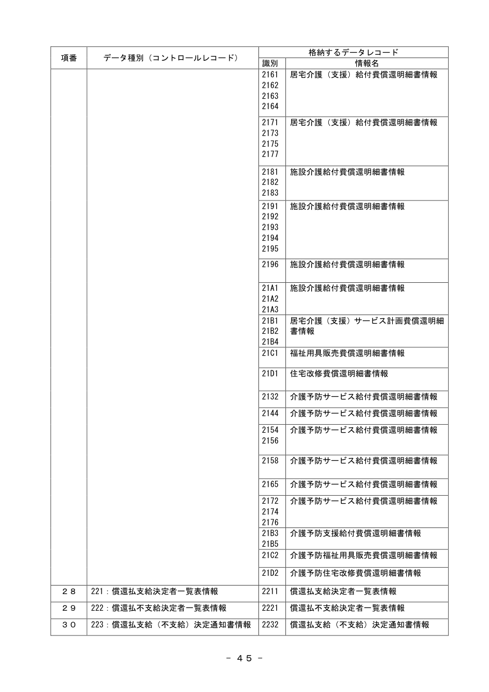
| 項番 | 項目名 | 属性 | 桁数 | 内容 | 必須 | 備考 | その他の列 |
|---|---|---|---|---|---|---|---|
| 格納するデータレコード > 識別: 2161 2162 2163 2164 格納するデータレコード > 情報名: 居宅介護（支援）給付費償還明細書情報 | |||||||
| 格納するデータレコード > 識別: 2171 2173 2175 2177 格納するデータレコード > 情報名: 居宅介護（支援）給付費償還明細書情報 | |||||||
| 格納するデータレコード > 識別: 2181 2182 2183 格納するデータレコード > 情報名: 施設介護給付費償還明細書情報 | |||||||
| 格納するデータレコード > 識別: 2191 2192 2193 2194 2195 格納するデータレコード > 情報名: 施設介護給付費償還明細書情報 | |||||||
| 格納するデータレコード > 識別: 2196 格納するデータレコード > 情報名: 施設介護給付費償還明細書情報 | |||||||
| 格納するデータレコード > 識別: 21A1 21A2 21A3 格納するデータレコード > 情報名: 施設介護給付費償還明細書情報 | |||||||
| 格納するデータレコード > 識別: 21B1 21B2 21B4 格納するデータレコード > 情報名: 居宅介護（支援）サービス計画費償還明細書情報 | |||||||
| 格納するデータレコード > 識別: 21C1 格納するデータレコード > 情報名: 福祉用具販売費償還明細書情報 | |||||||
| 格納するデータレコード > 識別: 21D1 格納するデータレコード > 情報名: 住宅改修費償還明細書情報 | |||||||
| 格納するデータレコード > 識別: 2132 格納するデータレコード > 情報名: 介護予防サービス給付費償還明細書情報 | |||||||
| 格納するデータレコード > 識別: 2144 格納するデータレコード > 情報名: 介護予防サービス給付費償還明細書情報 | |||||||
| 格納するデータレコード > 識別: 2154 2156 格納するデータレコード > 情報名: 介護予防サービス給付費償還明細書情報 | |||||||
| 格納するデータレコード > 識別: 2158 格納するデータレコード > 情報名: 介護予防サービス給付費償還明細書情報 | |||||||
| 格納するデータレコード > 識別: 2165 格納するデータレコード > 情報名: 介護予防サービス給付費償還明細書情報 | |||||||
| 格納するデータレコード > 識別: 2172 2174 2176 格納するデータレコード > 情報名: 介護予防サービス給付費償還明細書情報 | |||||||
| 格納するデータレコード > 識別: 21B3 21B5 格納するデータレコード > 情報名: 介護予防支援給付費償還明細書情報 | |||||||
| 格納するデータレコード > 識別: 21C2 格納するデータレコード > 情報名: 介護予防福祉用具販売費償還明細書情報 | |||||||
| 格納するデータレコード > 識別: 21D2 格納するデータレコード > 情報名: 介護予防住宅改修費償還明細書情報 | |||||||
| ２８ | 221 : 償還払支給決定者一覧表情報 | 格納するデータレコード > 識別: 2211 格納するデータレコード > 情報名: 償還払支給決定者一覧表情報 | |||||
| ２９ | 222 : 償還払不支給決定者一覧表情報 | 格納するデータレコード > 識別: 2221 格納するデータレコード > 情報名: 償還払不支給決定者一覧表情報 | |||||
| ３０ | 223 : 償還払支給（不支給）決定通知書情報 | 格納するデータレコード > 識別: 2232 格納するデータレコード > 情報名: 償還払支給（不支給）決定通知書情報 |
| 項番 | 項目名 | 属性 | 桁数 | 内容 | 必須 | 備考 | その他の列 |
|---|---|---|---|---|---|---|---|
| 居宅介護（支援）給付費償還明細書情報 | 格納するデータレコード > 識別: 2161 2162 2163 2164 | ||||||
| 居宅介護（支援）給付費償還明細書情報 | 格納するデータレコード > 識別: 2171 2173 2175 2177 | ||||||
| 施設介護給付費償還明細書情報 | 格納するデータレコード > 識別: 2181 2182 2183 | ||||||
| 施設介護給付費償還明細書情報 | 格納するデータレコード > 識別: 2191 2192 2193 2194 2195 | ||||||
| 施設介護給付費償還明細書情報 | 格納するデータレコード > 識別: 2196 | ||||||
| 施設介護給付費償還明細書情報 | 格納するデータレコード > 識別: 21A1 21A2 21A3 | ||||||
| 居宅介護（支援）サービス計画費償還明細書情報 | 格納するデータレコード > 識別: 21B1 21B2 21B4 | ||||||
| 福祉用具販売費償還明細書情報 | 格納するデータレコード > 識別: 21C1 | ||||||
| 住宅改修費償還明細書情報 | 格納するデータレコード > 識別: 21D1 | ||||||
| 介護予防サービス給付費償還明細書情報 | 格納するデータレコード > 識別: 2132 | ||||||
| 介護予防サービス給付費償還明細書情報 | 格納するデータレコード > 識別: 2144 | ||||||
| 介護予防サービス給付費償還明細書情報 | 格納するデータレコード > 識別: 2154 2156 | ||||||
| 介護予防サービス給付費償還明細書情報 | 格納するデータレコード > 識別: 2158 | ||||||
| 介護予防サービス給付費償還明細書情報 | 格納するデータレコード > 識別: 2165 | ||||||
| 介護予防サービス給付費償還明細書情報 | 格納するデータレコード > 識別: 2172 2174 2176 | ||||||
| 介護予防支援給付費償還明細書情報 | 格納するデータレコード > 識別: 21B3 21B5 | ||||||
| 介護予防福祉用具販売費償還明細書情報 | 格納するデータレコード > 識別: 21C2 | ||||||
| 介護予防住宅改修費償還明細書情報 | 格納するデータレコード > 識別: 21D2 | ||||||
| ２８ | 221：償還払支給決定者一覧表情報 | 償還払支給決定者一覧表情報 | 格納するデータレコード > 識別: 2211 | ||||
| ２９ | 222：償還払不支給決定者一覧表情報 | 償還払不支給決定者一覧表情報 | 格納するデータレコード > 識別: 2221 | ||||
| ３０ | 223：償還払支給（不支給）決定通知書情報 | 償還払支給（不支給）決定通知書情報 | 格納するデータレコード > 識別: 2232 |
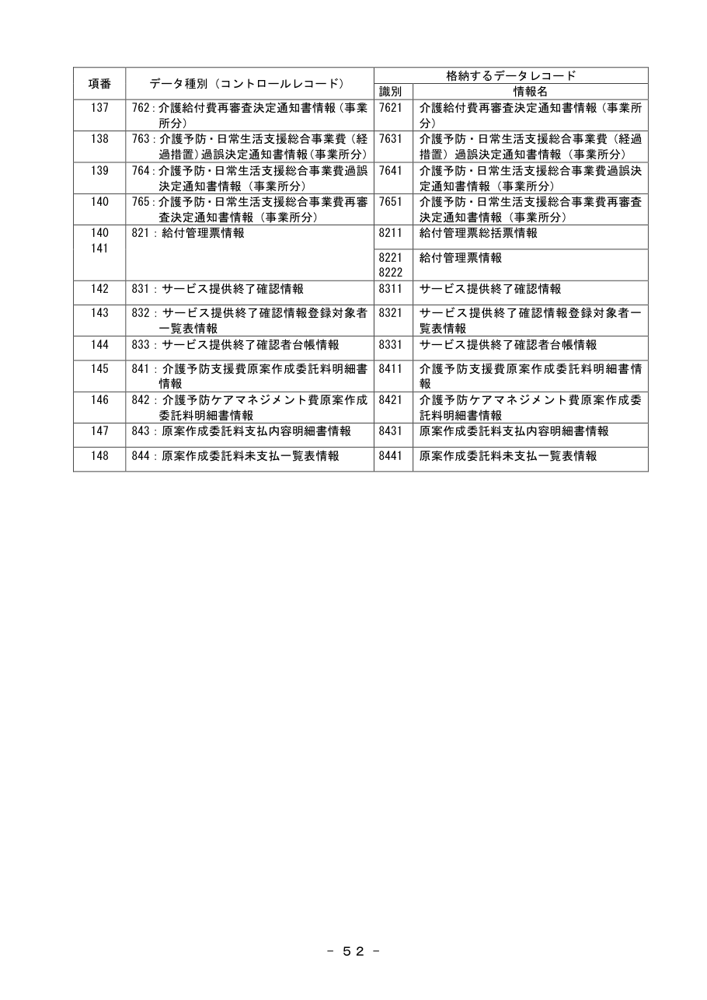
| 項番 | 項目名 | 属性 | 桁数 | 内容 | 必須 | 備考 | その他の列 |
|---|---|---|---|---|---|---|---|
| 137 | 762：介護給付費再審査決定通知書情報（事業所分） | 格納するデータレコード > 識別: 7621 格納するデータレコード > 情報名: 介護給付費再審査決定通知書情報（事業所分） | |||||
| 138 | 763：介護予防・日常生活支援総合事業費（経過措置）過誤決定通知書情報(事業所分) | 格納するデータレコード > 識別: 7631 格納するデータレコード > 情報名: 介護予防・日常生活支援総合事業費（経過措置）過誤決定通知書情報（事業所分） | |||||
| 139 | 764：介護予防･日常生活支援総合事業費過誤決定通知書情報（事業所分） | 格納するデータレコード > 識別: 7641 格納するデータレコード > 情報名: 介護予防・日常生活支援総合事業費過誤決定通知書情報（事業所分） | |||||
| 140 | 765：介護予防･日常生活支援総合事業費再審査決定通知書情報（事業所分） | 格納するデータレコード > 識別: 7651 格納するデータレコード > 情報名: 介護予防・日常生活支援総合事業費再審査決定通知書情報（事業所分） | |||||
| 140 | 821：給付管理票情報 | 格納するデータレコード > 識別: 8211 格納するデータレコード > 情報名: 給付管理票総括票情報 | |||||
| 141 | 821：給付管理票情報 | 格納するデータレコード > 識別: 8221 8222 格納するデータレコード > 情報名: 給付管理票情報 | |||||
| 142 | 831：サービス提供終了確認情報 | 格納するデータレコード > 識別: 8311 格納するデータレコード > 情報名: サービス提供終了確認情報 | |||||
| 143 | 832：サービス提供終了確認情報登録対象者一覧表情報 | 格納するデータレコード > 識別: 8321 格納するデータレコード > 情報名: サービス提供終了確認情報登録対象者一覧表情報 | |||||
| 144 | 833：サービス提供終了確認者台帳情報 | 格納するデータレコード > 識別: 8331 格納するデータレコード > 情報名: サービス提供終了確認者台帳情報 | |||||
| 145 | 841：介護予防支援費原案作成委託料明細書情報 | 格納するデータレコード > 識別: 8411 格納するデータレコード > 情報名: 介護予防支援費原案作成委託料明細書情報 | |||||
| 146 | 842：介護予防ケアマネジメント費原案作成委託料明細書情報 | 格納するデータレコード > 識別: 8421 格納するデータレコード > 情報名: 介護予防ケアマネジメント費原案作成委託料明細書情報 | |||||
| 147 | 843：原案作成委託料支払内容明細書情報 | 格納するデータレコード > 識別: 8431 格納するデータレコード > 情報名: 原案作成委託料支払内容明細書情報 | |||||
| 148 | 844：原案作成委託料未支払一覧表情報 | 格納するデータレコード > 識別: 8441 格納するデータレコード > 情報名: 原案作成委託料未支払一覧表情報 |
| 項番 | 項目名 | 属性 | 桁数 | 内容 | 必須 | 備考 | その他の列 |
|---|---|---|---|---|---|---|---|
| 137 | 762:介護給付費再審査決定通知書情報(事業所分) | 格納するデータレコード > 識別: 7621 格納するデータレコード > 情報名: 介護給付費再審査決定通知書情報（事業所分） | |||||
| 138 | 763:介護予防・日常生活支援総合事業費(経過措置)過誤決定通知書情報(事業所分) | 格納するデータレコード > 識別: 7631 格納するデータレコード > 情報名: 介護予防・日常生活支援総合事業費（経過措置）過誤決定通知書情報（事業所分） | |||||
| 139 | 764:介護予防・日常生活支援総合事業費過誤決定通知書情報（事業所分） | 格納するデータレコード > 識別: 7641 格納するデータレコード > 情報名: 介護予防・日常生活支援総合事業費過誤決定通知書情報（事業所分） | |||||
| 140 | 765:介護予防・日常生活支援総合事業費再審査決定通知書情報（事業所分） | 格納するデータレコード > 識別: 7651 格納するデータレコード > 情報名: 介護予防・日常生活支援総合事業費再審査決定通知書情報（事業所分） | |||||
| 140 141 | 821：給付管理票情報 | 格納するデータレコード > 識別: 8211 格納するデータレコード > 情報名: 給付管理票総括票情報 | |||||
| 140 141 | 821：給付管理票情報 | 格納するデータレコード > 識別: 8221 8222 格納するデータレコード > 情報名: 給付管理票情報 | |||||
| 142 | 831：サービス提供終了確認情報 | 格納するデータレコード > 識別: 8311 格納するデータレコード > 情報名: サービス提供終了確認情報 | |||||
| 143 | 832：サービス提供終了確認情報登録対象者一覧表情報 | 格納するデータレコード > 識別: 8321 格納するデータレコード > 情報名: サービス提供終了確認情報登録対象者一覧表情報 | |||||
| 144 | 833：サービス提供終了確認者台帳情報 | 格納するデータレコード > 識別: 8331 格納するデータレコード > 情報名: サービス提供終了確認者台帳情報 | |||||
| 145 | 841：介護予防支援費原案作成委託料明細書情報 | 格納するデータレコード > 識別: 8411 格納するデータレコード > 情報名: 介護予防支援費原案作成委託料明細書情報 | |||||
| 146 | 842：介護予防ケアマネジメント費原案作成委託料明細書情報 | 格納するデータレコード > 識別: 8421 格納するデータレコード > 情報名: 介護予防ケアマネジメント費原案作成委託料明細書情報 | |||||
| 147 | 843：原案作成委託料支払内容明細書情報 | 格納するデータレコード > 識別: 8431 格納するデータレコード > 情報名: 原案作成委託料支払内容明細書情報 | |||||
| 148 | 844：原案作成委託料未支払一覧表情報 | 格納するデータレコード > 識別: 8441 格納するデータレコード > 情報名: 原案作成委託料未支払一覧表情報 |
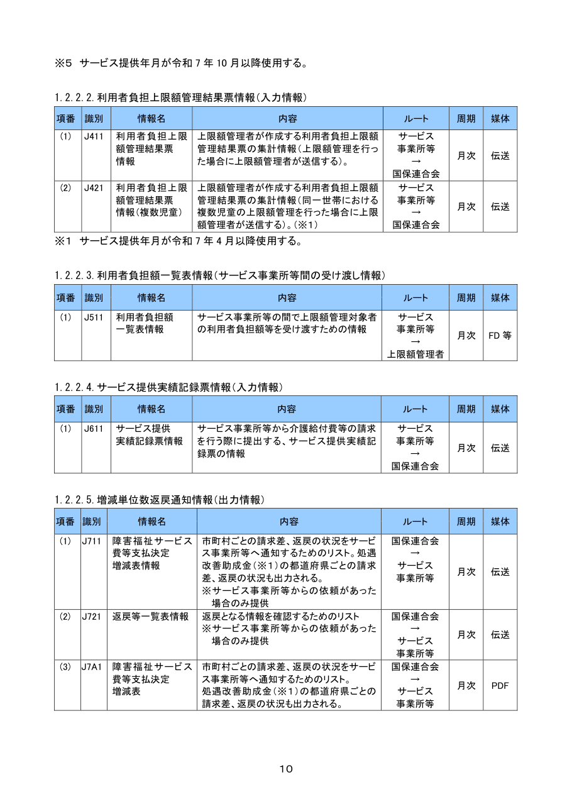
| 項番 | 項目名 | 属性 | 桁数 | 内容 | 必須 | 備考 | その他の列 |
|---|---|---|---|---|---|---|---|
| (1) | 利用者負担上限額管理結果票情報 | 上限額管理者が作成する利用者負担上限額管理結果票の集計情報(上限額管理を行った場合に上限額管理者が送信する)。 | 識別: J411 ルート: サービス事業所等→国保連合会 周期: 月次 媒体: 伝送 | ||||
| (2) | 利用者負担上限額管理結果票情報(複数児童) | 上限額管理者が作成する利用者負担上限額管理結果票の集計情報(同一世帯における複数児童の上限額管理を行った場合に上限額管理者が送信する)。(※1) | 識別: J421 ルート: サービス事業所等→国保連合会 周期: 月次 媒体: 伝送 |
| 項番 | 項目名 | 属性 | 桁数 | 内容 | 必須 | 備考 | その他の列 |
|---|---|---|---|---|---|---|---|
| (1) | 利用者負担額一覧表情報 | サービス事業所等の間で上限額管理対象者の利用者負担額等を受け渡すための情報 | 識別: J511 ルート: サービス事業所等→上限額管理者 周期: 月次 媒体: FD等 |
| 項番 | 項目名 | 属性 | 桁数 | 内容 | 必須 | 備考 | その他の列 |
|---|---|---|---|---|---|---|---|
| (1) | サービス提供実績記録票情報 | サービス事業所等から介護給付費等の請求を行う際に提出する、サービス提供実績記録票の情報 | 識別: J611 ルート: サービス事業所等→国保連合会 周期: 月次 媒体: 伝送 |
| 項番 | 項目名 | 属性 | 桁数 | 内容 | 必須 | 備考 | その他の列 |
|---|---|---|---|---|---|---|---|
| (1) | 障害福祉サービス費等支払決定増減表情報 | 市町村ごとの請求差、返戻の状況をサービス事業所等へ通知するためのリスト。処遇改善助成金(※1)の都道府県ごとの請求差、返戻の状況も出力される。 ※サービス事業所等からの依頼があった場合のみ提供 | 識別: J711 ルート: 国保連合会→サービス事業所等 周期: 月次 媒体: 伝送 | ||||
| (2) | 返戻等一覧表情報 | 返戻となる情報を確認するためのリスト ※サービス事業所等からの依頼があった場合のみ提供 | 識別: J721 ルート: 国保連合会→サービス事業所等 周期: 月次 媒体: 伝送 | ||||
| (3) | 障害福祉サービス費等支払決定増減表 | 市町村ごとの請求差、返戻の状況をサービス事業所等へ通知するためのリスト。 処遇改善助成金(※1)の都道府県ごとの請求差、返戻の状況も出力される。 | 識別: J7A1 ルート: 国保連合会→サービス事業所等 周期: 月次 媒体: PDF |
| 項番 | 項目名 | 属性 | 桁数 | 内容 | 必須 | 備考 | その他の列 |
|---|---|---|---|---|---|---|---|
| (1) | 利用者負担上限額管理結果票情報 | 上限額管理者が作成する利用者負担上限額管理結果票の集計情報(上限額管理を行った場合に上限額管理者が送信する)。 | 識別: J411 ルート: サービス事業所等→国保連合会 周期: 月次 媒体: 伝送 | ||||
| (2) | 利用者負担上限額管理結果票情報(複数児童) | 上限額管理者が作成する利用者負担上限額管理結果票の集計情報(同一世帯における複数児童の上限額管理を行った場合に上限額管理者が送信する)。(※1) | 識別: J421 ルート: サービス事業所等→国保連合会 周期: 月次 媒体: 伝送 |
| 項番 | 項目名 | 属性 | 桁数 | 内容 | 必須 | 備考 | その他の列 |
|---|---|---|---|---|---|---|---|
| (1) | 利用者負担額一覧表情報 | サービス事業所等の間で上限額管理対象者の利用者負担額等を受け渡すための情報 | 識別: J511 ルート: サービス事業所等→上限額管理者 周期: 月次 媒体: FD 等 |
| 項番 | 項目名 | 属性 | 桁数 | 内容 | 必須 | 備考 | その他の列 |
|---|---|---|---|---|---|---|---|
| (1) | サービス提供実績記録票情報 | サービス事業所等から介護給付費等の請求を行う際に提出する、サービス提供実績記録票の情報 | 識別: J611 ルート: サービス事業所等→国保連合会 周期: 月次 媒体: 伝送 |
| 項番 | 項目名 | 属性 | 桁数 | 内容 | 必須 | 備考 | その他の列 |
|---|---|---|---|---|---|---|---|
| (1) | 障害福祉サービス費等支払決定増減表情報 | 市町村ごとの請求差、返戻の状況をサービス事業所等へ通知するためのリスト。処遇改善助成金(※1)の都道府県ごとの請求差、返戻の状況も出力される。 ※サービス事業所等からの依頼があった場合のみ提供 | 識別: J711 ルート: 国保連合会→サービス事業所等 周期: 月次 媒体: 伝送 | ||||
| (2) | 返戻等一覧表情報 | 返戻となる情報を確認するためのリスト ※サービス事業所等からの依頼があった場合のみ提供 | 識別: J721 ルート: 国保連合会→サービス事業所等 周期: 月次 媒体: 伝送 | ||||
| (3) | 障害福祉サービス費等支払決定増減表 | 市町村ごとの請求差、返戻の状況をサービス事業所等へ通知するためのリスト。処遇改善助成金(※1)の都道府県ごとの請求差、返戻の状況も出力される。 | 識別: J7A1 ルート: 国保連合会→サービス事業所等 周期: 月次 媒体: PDF |
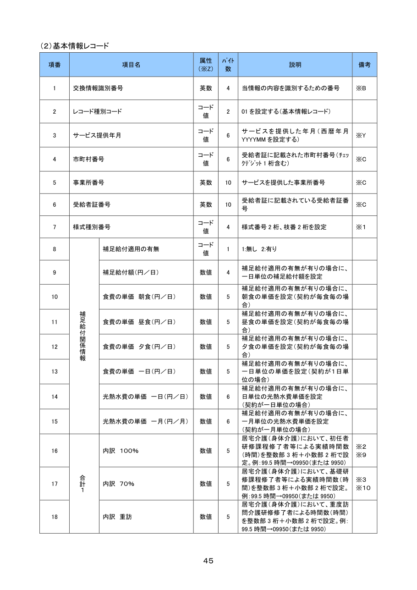
| 項番 | 項目名 | 属性 | 桁数 | 内容 | 必須 | 備考 | その他の列 |
|---|---|---|---|---|---|---|---|
| 1 | 交換情報識別番号 | 英数 | 4 | 当情報の内容を識別するための番号 | ※B | 項目名 > 区分: － | |
| 2 | レコード種別コード | コード値 | 2 | 01を設定する（基本情報レコード） | 項目名 > 区分: － | ||
| 3 | サービス提供年月 | コード値 | 6 | サービスを提供した年月（西暦年月YYYYMMを設定する） | ※Y | 項目名 > 区分: － | |
| 4 | 市町村番号 | コード値 | 6 | 受給者証に記載された市町村番号（チェックデジット1桁含む） | ※C | 項目名 > 区分: － | |
| 5 | 事業所番号 | 英数 | 10 | サービスを提供した事業所番号 | ※C | 項目名 > 区分: － | |
| 6 | 受給者証番号 | 英数 | 10 | 受給者証に記載されている受給者証番号 | ※C | 項目名 > 区分: － | |
| 7 | 様式種別番号 | コード値 | 4 | 様式番号2桁、枝番2桁を設定 | ※1 | 項目名 > 区分: － | |
| 8 | 補足給付関係情報 > 補足給付適用の有無 | コード値 | 1 | 1:無し 2:有り | 項目名 > 区分: 補足給付関係情報 | ||
| 9 | 補足給付関係情報 > 補足給付額（円／日） | 数値 | 4 | 補足給付適用の有無が有りの場合に、一日単位の補足給付額を設定 | 項目名 > 区分: 補足給付関係情報 | ||
| 10 | 補足給付関係情報 > 食費の単価 朝食（円／日） | 数値 | 5 | 補足給付適用の有無が有りの場合に、朝食の単価を設定（契約が毎食毎の場合） | 項目名 > 区分: 補足給付関係情報 | ||
| 11 | 補足給付関係情報 > 食費の単価 昼食（円／日） | 数値 | 5 | 補足給付適用の有無が有りの場合に、昼食の単価を設定（契約が毎食毎の場合） | 項目名 > 区分: 補足給付関係情報 | ||
| 12 | 補足給付関係情報 > 食費の単価 夕食（円／日） | 数値 | 5 | 補足給付適用の有無が有りの場合に、夕食の単価を設定（契約が毎食毎の場合） | 項目名 > 区分: 補足給付関係情報 | ||
| 13 | 補足給付関係情報 > 食費の単価 一日（円／日） | 数値 | 5 | 補足給付適用の有無が有りの場合に、一日単位の単価を設定（契約が1日単位の場合） | 項目名 > 区分: 補足給付関係情報 | ||
| 14 | 補足給付関係情報 > 光熱水費の単価 一日（円／日） | 数値 | 6 | 補足給付適用の有無が有りの場合に、日単位の光熱水費単価を設定（契約が一日単位の場合） | 項目名 > 区分: 補足給付関係情報 | ||
| 15 | 補足給付関係情報 > 光熱水費の単価 一月（円／月） | 数値 | 6 | 補足給付適用の有無が有りの場合に、一月単位の光熱水費単価を設定（契約が一月単位の場合） | 項目名 > 区分: 補足給付関係情報 | ||
| 16 | 合計1 > 内訳 100% | 数値 | 5 | 居宅介護（身体介護）において、初任者研修課程修了者等による実績時間数(時間)を整数部3桁＋小数部2桁で設定。例:99.5時間→09950(または9950) | ※2 ※9 | 項目名 > 区分: 合計1 | |
| 17 | 合計1 > 内訳 70% | 数値 | 5 | 居宅介護（身体介護）において、基礎研修課程修了者等による実績時間数(時間)を整数部3桁＋小数部2桁で設定。例:99.5時間→09950(または9950) | ※3 ※10 | 項目名 > 区分: 合計1 | |
| 18 | 合計1 > 内訳 重訪 | 数値 | 5 | 居宅介護（身体介護）において、重度訪問介護研修修了者による時間数(時間)を整数部3桁＋小数部2桁で設定。例:99.5時間→09950(または9950) | 項目名 > 区分: 合計1 |
| 項番 | 項目名 | 属性 | 桁数 | 内容 | 必須 | 備考 | その他の列 |
|---|---|---|---|---|---|---|---|
| 1 | 交換情報識別番号 | 英数 | 4 | 当情報の内容を識別するための番号 | ※B | ||
| 2 | レコード種別コード | コード値 | 2 | 01を設定する(基本情報レコード) | |||
| 3 | サービス提供年月 | コード値 | 6 | サービスを提供した年月(西暦年月YYYYMMを設定する) | ※Y | ||
| 4 | 市町村番号 | コード値 | 6 | 受給者証に記載された市町村番号(ﾁｪｯｸﾃﾞｼﾞｯﾄ1桁含む) | ※C | ||
| 5 | 事業所番号 | 英数 | 10 | サービスを提供した事業所番号 | ※C | ||
| 6 | 受給者証番号 | 英数 | 10 | 受給者証に記載されている受給者証番号 | ※C | ||
| 7 | 様式種別番号 | コード値 | 4 | 様式番号2桁、枝番2桁を設定 | ※1 | ||
| 8 | 補足給付関係情報 > 補足給付適用の有無 | コード値 | 1 | 1:無し 2:有り | |||
| 9 | 補足給付関係情報 > 補足給付額(円/日) | 数値 | 4 | 補足給付適用の有無が有りの場合に、一日単位の補足給付額を設定 | |||
| 10 | 補足給付関係情報 > 食費の単価 朝食(円/日) | 数値 | 5 | 補足給付適用の有無が有りの場合に、朝食の単価を設定(契約が毎食毎の場合) | |||
| 11 | 補足給付関係情報 > 食費の単価 昼食(円/日) | 数値 | 5 | 補足給付適用の有無が有りの場合に、昼食の単価を設定(契約が毎食毎の場合) | |||
| 12 | 補足給付関係情報 > 食費の単価 夕食(円/日) | 数値 | 5 | 補足給付適用の有無が有りの場合に、夕食の単価を設定(契約が毎食毎の場合) | |||
| 13 | 補足給付関係情報 > 食費の単価 一日(円/日) | 数値 | 5 | 補足給付適用の有無が有りの場合に、一日単位の単価を設定(契約が1日単位の場合) | |||
| 14 | 補足給付関係情報 > 光熱水費の単価 一日(円/日) | 数値 | 6 | 補足給付適用の有無が有りの場合に、日単位の光熱水費単価を設定 (契約が一日単位の場合) | |||
| 15 | 補足給付関係情報 > 光熱水費の単価 一月(円/月) | 数値 | 6 | 補足給付適用の有無が有りの場合に、一月単位の光熱水費単価を設定 (契約が一月単位の場合) | |||
| 16 | 合計1 > 内訳 100% | 数値 | 5 | 居宅介護(身体介護)において、初任者研修課程修了者等による実績時間数(時間)を整数部3桁+小数部2桁で設定。例:99.5時間→09950(または9950) | ※2 ※9 | ||
| 17 | 合計1 > 内訳 70% | 数値 | 5 | 居宅介護(身体介護)において、基礎研修課程修了者等による実績時間数(時間)を整数部3桁+小数部2桁で設定。例:99.5時間→09950(または9950) | ※3 ※10 | ||
| 18 | 合計1 > 内訳 重訪 | 数値 | 5 | 居宅介護(身体介護)において、重度訪問介護研修修了者による時間数(時間)を整数部3桁+小数部2桁で設定。例:99.5時間→09950(または9950) |
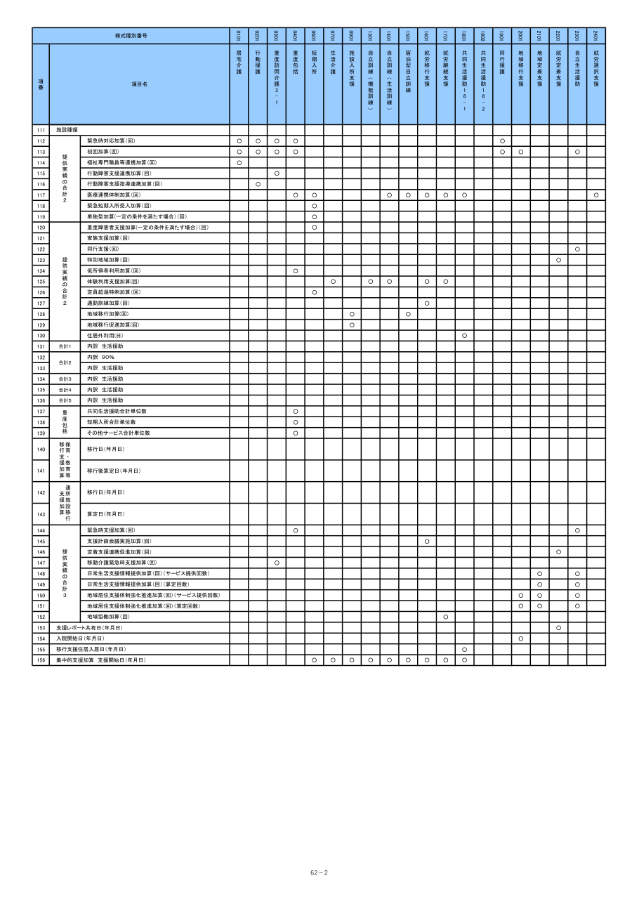
| 項番 | 項目名 | 属性 | 桁数 | 内容 | 必須 | 備考 | その他の列 |
|---|---|---|---|---|---|---|---|
| 111 | 施設種類 | 様式種別番号 > 0101 居宅介護:－ 様式種別番号 > 0201 行動援護:－ 様式種別番号 > 0301 重度訪問介護3-1:－ 様式種別番号 > 0401 重度包括:－ 様式種別番号 > 0601 短期入所:－ 様式種別番号 > 0701 生活介護:－ 様式種別番号 > 0901 施設入所支援:－ 様式種別番号 > 1301 自立訓練(機能訓練):－ 様式種別番号 > 1401 自立訓練(生活訓練):－ 様式種別番号 > 1501 宿泊型自立訓練:－ 様式種別番号 > 1601 就労移行支援:－ 様式種別番号 > 1701 就労継続支援:－ 様式種別番号 > 1801 共同生活援助18-1:－ 様式種別番号 > 1802 共同生活援助18-2:－ 様式種別番号 > 1901 同行援護:－ 様式種別番号 > 2001 地域移行支援:－ 様式種別番号 > 2101 地域定着支援:－ 様式種別番号 > 2201 就労定着支援:－ 様式種別番号 > 2301 自立生活援助:－ 様式種別番号 > 2401 就労選択支援:－ | |||||
| 112 | 提供実績の合計2 > 緊急時対応加算(回) | 様式種別番号 > 0101 居宅介護:○ 様式種別番号 > 0201 行動援護:○ 様式種別番号 > 0301 重度訪問介護3-1:○ 様式種別番号 > 0401 重度包括:○ 様式種別番号 > 0601 短期入所:－ 様式種別番号 > 0701 生活介護:－ 様式種別番号 > 0901 施設入所支援:－ 様式種別番号 > 1301 自立訓練(機能訓練):－ 様式種別番号 > 1401 自立訓練(生活訓練):－ 様式種別番号 > 1501 宿泊型自立訓練:－ 様式種別番号 > 1601 就労移行支援:－ 様式種別番号 > 1701 就労継続支援:－ 様式種別番号 > 1801 共同生活援助18-1:－ 様式種別番号 > 1802 共同生活援助18-2:－ 様式種別番号 > 1901 同行援護:○ 様式種別番号 > 2001 地域移行支援:－ 様式種別番号 > 2101 地域定着支援:－ 様式種別番号 > 2201 就労定着支援:－ 様式種別番号 > 2301 自立生活援助:－ 様式種別番号 > 2401 就労選択支援:－ | |||||
| 113 | 提供実績の合計2 > 初回加算(回) | 様式種別番号 > 0101 居宅介護:○ 様式種別番号 > 0201 行動援護:○ 様式種別番号 > 0301 重度訪問介護3-1:○ 様式種別番号 > 0401 重度包括:○ 様式種別番号 > 0601 短期入所:－ 様式種別番号 > 0701 生活介護:－ 様式種別番号 > 0901 施設入所支援:－ 様式種別番号 > 1301 自立訓練(機能訓練):－ 様式種別番号 > 1401 自立訓練(生活訓練):－ 様式種別番号 > 1501 宿泊型自立訓練:－ 様式種別番号 > 1601 就労移行支援:－ 様式種別番号 > 1701 就労継続支援:－ 様式種別番号 > 1801 共同生活援助18-1:－ 様式種別番号 > 1802 共同生活援助18-2:－ 様式種別番号 > 1901 同行援護:○ 様式種別番号 > 2001 地域移行支援:○ 様式種別番号 > 2101 地域定着支援:－ 様式種別番号 > 2201 就労定着支援:－ 様式種別番号 > 2301 自立生活援助:○ 様式種別番号 > 2401 就労選択支援:－ | |||||
| 114 | 提供実績の合計2 > 福祉専門職員等連携加算(回) | 様式種別番号 > 0101 居宅介護:○ 様式種別番号 > 0201 行動援護:－ 様式種別番号 > 0301 重度訪問介護3-1:－ 様式種別番号 > 0401 重度包括:－ 様式種別番号 > 0601 短期入所:－ 様式種別番号 > 0701 生活介護:－ 様式種別番号 > 0901 施設入所支援:－ 様式種別番号 > 1301 自立訓練(機能訓練):－ 様式種別番号 > 1401 自立訓練(生活訓練):－ 様式種別番号 > 1501 宿泊型自立訓練:－ 様式種別番号 > 1601 就労移行支援:－ 様式種別番号 > 1701 就労継続支援:－ 様式種別番号 > 1801 共同生活援助18-1:－ 様式種別番号 > 1802 共同生活援助18-2:－ 様式種別番号 > 1901 同行援護:－ 様式種別番号 > 2001 地域移行支援:－ 様式種別番号 > 2101 地域定着支援:－ 様式種別番号 > 2201 就労定着支援:－ 様式種別番号 > 2301 自立生活援助:－ 様式種別番号 > 2401 就労選択支援:－ | |||||
| 115 | 提供実績の合計2 > 行動障害支援連携加算(回) | 様式種別番号 > 0101 居宅介護:－ 様式種別番号 > 0201 行動援護:－ 様式種別番号 > 0301 重度訪問介護3-1:○ 様式種別番号 > 0401 重度包括:－ 様式種別番号 > 0601 短期入所:－ 様式種別番号 > 0701 生活介護:－ 様式種別番号 > 0901 施設入所支援:－ 様式種別番号 > 1301 自立訓練(機能訓練):－ 様式種別番号 > 1401 自立訓練(生活訓練):－ 様式種別番号 > 1501 宿泊型自立訓練:－ 様式種別番号 > 1601 就労移行支援:－ 様式種別番号 > 1701 就労継続支援:－ 様式種別番号 > 1801 共同生活援助18-1:－ 様式種別番号 > 1802 共同生活援助18-2:－ 様式種別番号 > 1901 同行援護:－ 様式種別番号 > 2001 地域移行支援:－ 様式種別番号 > 2101 地域定着支援:－ 様式種別番号 > 2201 就労定着支援:－ 様式種別番号 > 2301 自立生活援助:－ 様式種別番号 > 2401 就労選択支援:－ | |||||
| 116 | 提供実績の合計2 > 行動障害支援指導連携加算(回) | 様式種別番号 > 0101 居宅介護:－ 様式種別番号 > 0201 行動援護:○ 様式種別番号 > 0301 重度訪問介護3-1:－ 様式種別番号 > 0401 重度包括:－ 様式種別番号 > 0601 短期入所:－ 様式種別番号 > 0701 生活介護:－ 様式種別番号 > 0901 施設入所支援:－ 様式種別番号 > 1301 自立訓練(機能訓練):－ 様式種別番号 > 1401 自立訓練(生活訓練):－ 様式種別番号 > 1501 宿泊型自立訓練:－ 様式種別番号 > 1601 就労移行支援:－ 様式種別番号 > 1701 就労継続支援:－ 様式種別番号 > 1801 共同生活援助18-1:－ 様式種別番号 > 1802 共同生活援助18-2:－ 様式種別番号 > 1901 同行援護:－ 様式種別番号 > 2001 地域移行支援:－ 様式種別番号 > 2101 地域定着支援:－ 様式種別番号 > 2201 就労定着支援:－ 様式種別番号 > 2301 自立生活援助:－ 様式種別番号 > 2401 就労選択支援:－ | |||||
| 117 | 提供実績の合計2 > 医療連携体制加算(回) | 様式種別番号 > 0101 居宅介護:－ 様式種別番号 > 0201 行動援護:－ 様式種別番号 > 0301 重度訪問介護3-1:－ 様式種別番号 > 0401 重度包括:○ 様式種別番号 > 0601 短期入所:○ 様式種別番号 > 0701 生活介護:－ 様式種別番号 > 0901 施設入所支援:－ 様式種別番号 > 1301 自立訓練(機能訓練):－ 様式種別番号 > 1401 自立訓練(生活訓練):○ 様式種別番号 > 1501 宿泊型自立訓練:○ 様式種別番号 > 1601 就労移行支援:○ 様式種別番号 > 1701 就労継続支援:○ 様式種別番号 > 1801 共同生活援助18-1:○ 様式種別番号 > 1802 共同生活援助18-2:－ 様式種別番号 > 1901 同行援護:－ 様式種別番号 > 2001 地域移行支援:－ 様式種別番号 > 2101 地域定着支援:－ 様式種別番号 > 2201 就労定着支援:－ 様式種別番号 > 2301 自立生活援助:－ 様式種別番号 > 2401 就労選択支援:○ | |||||
| 118 | 提供実績の合計2 > 緊急短期入所受入加算(回) | 様式種別番号 > 0101 居宅介護:－ 様式種別番号 > 0201 行動援護:－ 様式種別番号 > 0301 重度訪問介護3-1:－ 様式種別番号 > 0401 重度包括:－ 様式種別番号 > 0601 短期入所:○ 様式種別番号 > 0701 生活介護:－ 様式種別番号 > 0901 施設入所支援:－ 様式種別番号 > 1301 自立訓練(機能訓練):－ 様式種別番号 > 1401 自立訓練(生活訓練):－ 様式種別番号 > 1501 宿泊型自立訓練:－ 様式種別番号 > 1601 就労移行支援:－ 様式種別番号 > 1701 就労継続支援:－ 様式種別番号 > 1801 共同生活援助18-1:－ 様式種別番号 > 1802 共同生活援助18-2:－ 様式種別番号 > 1901 同行援護:－ 様式種別番号 > 2001 地域移行支援:－ 様式種別番号 > 2101 地域定着支援:－ 様式種別番号 > 2201 就労定着支援:－ 様式種別番号 > 2301 自立生活援助:－ 様式種別番号 > 2401 就労選択支援:－ | |||||
| 119 | 提供実績の合計2 > 単独型加算(一定の条件を満たす場合)(回) | 様式種別番号 > 0101 居宅介護:－ 様式種別番号 > 0201 行動援護:－ 様式種別番号 > 0301 重度訪問介護3-1:－ 様式種別番号 > 0401 重度包括:－ 様式種別番号 > 0601 短期入所:○ 様式種別番号 > 0701 生活介護:－ 様式種別番号 > 0901 施設入所支援:－ 様式種別番号 > 1301 自立訓練(機能訓練):－ 様式種別番号 > 1401 自立訓練(生活訓練):－ 様式種別番号 > 1501 宿泊型自立訓練:－ 様式種別番号 > 1601 就労移行支援:－ 様式種別番号 > 1701 就労継続支援:－ 様式種別番号 > 1801 共同生活援助18-1:－ 様式種別番号 > 1802 共同生活援助18-2:－ 様式種別番号 > 1901 同行援護:－ 様式種別番号 > 2001 地域移行支援:－ 様式種別番号 > 2101 地域定着支援:－ 様式種別番号 > 2201 就労定着支援:－ 様式種別番号 > 2301 自立生活援助:－ 様式種別番号 > 2401 就労選択支援:－ | |||||
| 120 | 提供実績の合計2 > 重度障害者支援加算(一定の条件を満たす場合)(回) | 様式種別番号 > 0101 居宅介護:－ 様式種別番号 > 0201 行動援護:－ 様式種別番号 > 0301 重度訪問介護3-1:－ 様式種別番号 > 0401 重度包括:－ 様式種別番号 > 0601 短期入所:○ 様式種別番号 > 0701 生活介護:－ 様式種別番号 > 0901 施設入所支援:－ 様式種別番号 > 1301 自立訓練(機能訓練):－ 様式種別番号 > 1401 自立訓練(生活訓練):－ 様式種別番号 > 1501 宿泊型自立訓練:－ 様式種別番号 > 1601 就労移行支援:－ 様式種別番号 > 1701 就労継続支援:－ 様式種別番号 > 1801 共同生活援助18-1:－ 様式種別番号 > 1802 共同生活援助18-2:－ 様式種別番号 > 1901 同行援護:－ 様式種別番号 > 2001 地域移行支援:－ 様式種別番号 > 2101 地域定着支援:－ 様式種別番号 > 2201 就労定着支援:－ 様式種別番号 > 2301 自立生活援助:－ 様式種別番号 > 2401 就労選択支援:－ | |||||
| 121 | 家族支援加算(回) | 様式種別番号 > 0101 居宅介護:－ 様式種別番号 > 0201 行動援護:－ 様式種別番号 > 0301 重度訪問介護3-1:－ 様式種別番号 > 0401 重度包括:－ 様式種別番号 > 0601 短期入所:－ 様式種別番号 > 0701 生活介護:－ 様式種別番号 > 0901 施設入所支援:－ 様式種別番号 > 1301 自立訓練(機能訓練):－ 様式種別番号 > 1401 自立訓練(生活訓練):－ 様式種別番号 > 1501 宿泊型自立訓練:－ 様式種別番号 > 1601 就労移行支援:－ 様式種別番号 > 1701 就労継続支援:－ 様式種別番号 > 1801 共同生活援助18-1:－ 様式種別番号 > 1802 共同生活援助18-2:－ 様式種別番号 > 1901 同行援護:－ 様式種別番号 > 2001 地域移行支援:－ 様式種別番号 > 2101 地域定着支援:－ 様式種別番号 > 2201 就労定着支援:－ 様式種別番号 > 2301 自立生活援助:－ 様式種別番号 > 2401 就労選択支援:－ | |||||
| 122 | 同行支援(回) | 様式種別番号 > 0101 居宅介護:－ 様式種別番号 > 0201 行動援護:－ 様式種別番号 > 0301 重度訪問介護3-1:－ 様式種別番号 > 0401 重度包括:－ 様式種別番号 > 0601 短期入所:－ 様式種別番号 > 0701 生活介護:－ 様式種別番号 > 0901 施設入所支援:－ 様式種別番号 > 1301 自立訓練(機能訓練):－ 様式種別番号 > 1401 自立訓練(生活訓練):－ 様式種別番号 > 1501 宿泊型自立訓練:－ 様式種別番号 > 1601 就労移行支援:－ 様式種別番号 > 1701 就労継続支援:－ 様式種別番号 > 1801 共同生活援助18-1:－ 様式種別番号 > 1802 共同生活援助18-2:－ 様式種別番号 > 1901 同行援護:－ 様式種別番号 > 2001 地域移行支援:－ 様式種別番号 > 2101 地域定着支援:－ 様式種別番号 > 2201 就労定着支援:－ 様式種別番号 > 2301 自立生活援助:○ 様式種別番号 > 2401 就労選択支援:－ | |||||
| 123 | 特別地域加算(回) | 様式種別番号 > 0101 居宅介護:－ 様式種別番号 > 0201 行動援護:－ 様式種別番号 > 0301 重度訪問介護3-1:－ 様式種別番号 > 0401 重度包括:－ 様式種別番号 > 0601 短期入所:－ 様式種別番号 > 0701 生活介護:－ 様式種別番号 > 0901 施設入所支援:－ 様式種別番号 > 1301 自立訓練(機能訓練):－ 様式種別番号 > 1401 自立訓練(生活訓練):－ 様式種別番号 > 1501 宿泊型自立訓練:－ 様式種別番号 > 1601 就労移行支援:－ 様式種別番号 > 1701 就労継続支援:－ 様式種別番号 > 1801 共同生活援助18-1:－ 様式種別番号 > 1802 共同生活援助18-2:－ 様式種別番号 > 1901 同行援護:－ 様式種別番号 > 2001 地域移行支援:－ 様式種別番号 > 2101 地域定着支援:－ 様式種別番号 > 2201 就労定着支援:○ 様式種別番号 > 2301 自立生活援助:－ 様式種別番号 > 2401 就労選択支援:－ | |||||
| 124 | 低所得者利用加算(回) | 様式種別番号 > 0101 居宅介護:－ 様式種別番号 > 0201 行動援護:－ 様式種別番号 > 0301 重度訪問介護3-1:－ 様式種別番号 > 0401 重度包括:○ 様式種別番号 > 0601 短期入所:－ 様式種別番号 > 0701 生活介護:－ 様式種別番号 > 0901 施設入所支援:－ 様式種別番号 > 1301 自立訓練(機能訓練):－ 様式種別番号 > 1401 自立訓練(生活訓練):－ 様式種別番号 > 1501 宿泊型自立訓練:－ 様式種別番号 > 1601 就労移行支援:－ 様式種別番号 > 1701 就労継続支援:－ 様式種別番号 > 1801 共同生活援助18-1:－ 様式種別番号 > 1802 共同生活援助18-2:－ 様式種別番号 > 1901 同行援護:－ 様式種別番号 > 2001 地域移行支援:－ 様式種別番号 > 2101 地域定着支援:－ 様式種別番号 > 2201 就労定着支援:－ 様式種別番号 > 2301 自立生活援助:－ 様式種別番号 > 2401 就労選択支援:－ | |||||
| 125 | 体験利用支援加算(回) | 様式種別番号 > 0101 居宅介護:－ 様式種別番号 > 0201 行動援護:－ 様式種別番号 > 0301 重度訪問介護3-1:－ 様式種別番号 > 0401 重度包括:－ 様式種別番号 > 0601 短期入所:－ 様式種別番号 > 0701 生活介護:○ 様式種別番号 > 0901 施設入所支援:－ 様式種別番号 > 1301 自立訓練(機能訓練):○ 様式種別番号 > 1401 自立訓練(生活訓練):○ 様式種別番号 > 1501 宿泊型自立訓練:－ 様式種別番号 > 1601 就労移行支援:○ 様式種別番号 > 1701 就労継続支援:○ 様式種別番号 > 1801 共同生活援助18-1:－ 様式種別番号 > 1802 共同生活援助18-2:－ 様式種別番号 > 1901 同行援護:－ 様式種別番号 > 2001 地域移行支援:－ 様式種別番号 > 2101 地域定着支援:－ 様式種別番号 > 2201 就労定着支援:－ 様式種別番号 > 2301 自立生活援助:－ 様式種別番号 > 2401 就労選択支援:－ | |||||
| 126 | 定着超過特例加算(回) | 様式種別番号 > 0101 居宅介護:－ 様式種別番号 > 0201 行動援護:－ 様式種別番号 > 0301 重度訪問介護3-1:－ 様式種別番号 > 0401 重度包括:－ 様式種別番号 > 0601 短期入所:○ 様式種別番号 > 0701 生活介護:－ 様式種別番号 > 0901 施設入所支援:－ 様式種別番号 > 1301 自立訓練(機能訓練):－ 様式種別番号 > 1401 自立訓練(生活訓練):－ 様式種別番号 > 1501 宿泊型自立訓練:－ 様式種別番号 > 1601 就労移行支援:－ 様式種別番号 > 1701 就労継続支援:－ 様式種別番号 > 1801 共同生活援助18-1:－ 様式種別番号 > 1802 共同生活援助18-2:－ 様式種別番号 > 1901 同行援護:－ 様式種別番号 > 2001 地域移行支援:－ 様式種別番号 > 2101 地域定着支援:－ 様式種別番号 > 2201 就労定着支援:－ 様式種別番号 > 2301 自立生活援助:－ 様式種別番号 > 2401 就労選択支援:－ | |||||
| 127 | 通勤訓練加算(回) | 様式種別番号 > 0101 居宅介護:－ 様式種別番号 > 0201 行動援護:－ 様式種別番号 > 0301 重度訪問介護3-1:－ 様式種別番号 > 0401 重度包括:－ 様式種別番号 > 0601 短期入所:－ 様式種別番号 > 0701 生活介護:－ 様式種別番号 > 0901 施設入所支援:－ 様式種別番号 > 1301 自立訓練(機能訓練):－ 様式種別番号 > 1401 自立訓練(生活訓練):－ 様式種別番号 > 1501 宿泊型自立訓練:－ 様式種別番号 > 1601 就労移行支援:○ 様式種別番号 > 1701 就労継続支援:－ 様式種別番号 > 1801 共同生活援助18-1:－ 様式種別番号 > 1802 共同生活援助18-2:－ 様式種別番号 > 1901 同行援護:－ 様式種別番号 > 2001 地域移行支援:－ 様式種別番号 > 2101 地域定着支援:－ 様式種別番号 > 2201 就労定着支援:－ 様式種別番号 > 2301 自立生活援助:－ 様式種別番号 > 2401 就労選択支援:－ | |||||
| 128 | 地域移行加算(回) | 様式種別番号 > 0101 居宅介護:－ 様式種別番号 > 0201 行動援護:－ 様式種別番号 > 0301 重度訪問介護3-1:－ 様式種別番号 > 0401 重度包括:－ 様式種別番号 > 0601 短期入所:－ 様式種別番号 > 0701 生活介護:－ 様式種別番号 > 0901 施設入所支援:○ 様式種別番号 > 1301 自立訓練(機能訓練):－ 様式種別番号 > 1401 自立訓練(生活訓練):－ 様式種別番号 > 1501 宿泊型自立訓練:○ 様式種別番号 > 1601 就労移行支援:－ 様式種別番号 > 1701 就労継続支援:－ 様式種別番号 > 1801 共同生活援助18-1:－ 様式種別番号 > 1802 共同生活援助18-2:－ 様式種別番号 > 1901 同行援護:－ 様式種別番号 > 2001 地域移行支援:－ 様式種別番号 > 2101 地域定着支援:－ 様式種別番号 > 2201 就労定着支援:－ 様式種別番号 > 2301 自立生活援助:－ 様式種別番号 > 2401 就労選択支援:－ | |||||
| 129 | 地域移行促進加算(回) | 様式種別番号 > 0101 居宅介護:－ 様式種別番号 > 0201 行動援護:－ 様式種別番号 > 0301 重度訪問介護3-1:－ 様式種別番号 > 0401 重度包括:－ 様式種別番号 > 0601 短期入所:－ 様式種別番号 > 0701 生活介護:－ 様式種別番号 > 0901 施設入所支援:○ 様式種別番号 > 1301 自立訓練(機能訓練):－ 様式種別番号 > 1401 自立訓練(生活訓練):－ 様式種別番号 > 1501 宿泊型自立訓練:－ 様式種別番号 > 1601 就労移行支援:－ 様式種別番号 > 1701 就労継続支援:－ 様式種別番号 > 1801 共同生活援助18-1:－ 様式種別番号 > 1802 共同生活援助18-2:－ 様式種別番号 > 1901 同行援護:－ 様式種別番号 > 2001 地域移行支援:－ 様式種別番号 > 2101 地域定着支援:－ 様式種別番号 > 2201 就労定着支援:－ 様式種別番号 > 2301 自立生活援助:－ 様式種別番号 > 2401 就労選択支援:－ | |||||
| 130 | 住居外利用(日) | 様式種別番号 > 0101 居宅介護:－ 様式種別番号 > 0201 行動援護:－ 様式種別番号 > 0301 重度訪問介護3-1:－ 様式種別番号 > 0401 重度包括:－ 様式種別番号 > 0601 短期入所:－ 様式種別番号 > 0701 生活介護:－ 様式種別番号 > 0901 施設入所支援:－ 様式種別番号 > 1301 自立訓練(機能訓練):－ 様式種別番号 > 1401 自立訓練(生活訓練):－ 様式種別番号 > 1501 宿泊型自立訓練:－ 様式種別番号 > 1601 就労移行支援:－ 様式種別番号 > 1701 就労継続支援:－ 様式種別番号 > 1801 共同生活援助18-1:○ 様式種別番号 > 1802 共同生活援助18-2:－ 様式種別番号 > 1901 同行援護:－ 様式種別番号 > 2001 地域移行支援:－ 様式種別番号 > 2101 地域定着支援:－ 様式種別番号 > 2201 就労定着支援:－ 様式種別番号 > 2301 自立生活援助:－ 様式種別番号 > 2401 就労選択支援:－ | |||||
| 131 | 合計1 > 内訳 生活援助 | 様式種別番号 > 0101 居宅介護:－ 様式種別番号 > 0201 行動援護:－ 様式種別番号 > 0301 重度訪問介護3-1:－ 様式種別番号 > 0401 重度包括:－ 様式種別番号 > 0601 短期入所:－ 様式種別番号 > 0701 生活介護:－ 様式種別番号 > 0901 施設入所支援:－ 様式種別番号 > 1301 自立訓練(機能訓練):－ 様式種別番号 > 1401 自立訓練(生活訓練):－ 様式種別番号 > 1501 宿泊型自立訓練:－ 様式種別番号 > 1601 就労移行支援:－ 様式種別番号 > 1701 就労継続支援:－ 様式種別番号 > 1801 共同生活援助18-1:－ 様式種別番号 > 1802 共同生活援助18-2:－ 様式種別番号 > 1901 同行援護:－ 様式種別番号 > 2001 地域移行支援:－ 様式種別番号 > 2101 地域定着支援:－ 様式種別番号 > 2201 就労定着支援:－ 様式種別番号 > 2301 自立生活援助:－ 様式種別番号 > 2401 就労選択支援:－ | |||||
| 132 | 合計2 > 内訳 90% | 様式種別番号 > 0101 居宅介護:－ 様式種別番号 > 0201 行動援護:－ 様式種別番号 > 0301 重度訪問介護3-1:－ 様式種別番号 > 0401 重度包括:－ 様式種別番号 > 0601 短期入所:－ 様式種別番号 > 0701 生活介護:－ 様式種別番号 > 0901 施設入所支援:－ 様式種別番号 > 1301 自立訓練(機能訓練):－ 様式種別番号 > 1401 自立訓練(生活訓練):－ 様式種別番号 > 1501 宿泊型自立訓練:－ 様式種別番号 > 1601 就労移行支援:－ 様式種別番号 > 1701 就労継続支援:－ 様式種別番号 > 1801 共同生活援助18-1:－ 様式種別番号 > 1802 共同生活援助18-2:－ 様式種別番号 > 1901 同行援護:－ 様式種別番号 > 2001 地域移行支援:－ 様式種別番号 > 2101 地域定着支援:－ 様式種別番号 > 2201 就労定着支援:－ 様式種別番号 > 2301 自立生活援助:－ 様式種別番号 > 2401 就労選択支援:－ | |||||
| 133 | 合計2 > 内訳 生活援助 | 様式種別番号 > 0101 居宅介護:－ 様式種別番号 > 0201 行動援護:－ 様式種別番号 > 0301 重度訪問介護3-1:－ 様式種別番号 > 0401 重度包括:－ 様式種別番号 > 0601 短期入所:－ 様式種別番号 > 0701 生活介護:－ 様式種別番号 > 0901 施設入所支援:－ 様式種別番号 > 1301 自立訓練(機能訓練):－ 様式種別番号 > 1401 自立訓練(生活訓練):－ 様式種別番号 > 1501 宿泊型自立訓練:－ 様式種別番号 > 1601 就労移行支援:－ 様式種別番号 > 1701 就労継続支援:－ 様式種別番号 > 1801 共同生活援助18-1:－ 様式種別番号 > 1802 共同生活援助18-2:－ 様式種別番号 > 1901 同行援護:－ 様式種別番号 > 2001 地域移行支援:－ 様式種別番号 > 2101 地域定着支援:－ 様式種別番号 > 2201 就労定着支援:－ 様式種別番号 > 2301 自立生活援助:－ 様式種別番号 > 2401 就労選択支援:－ | |||||
| 134 | 合計3 > 内訳 生活援助 | 様式種別番号 > 0101 居宅介護:－ 様式種別番号 > 0201 行動援護:－ 様式種別番号 > 0301 重度訪問介護3-1:－ 様式種別番号 > 0401 重度包括:－ 様式種別番号 > 0601 短期入所:－ 様式種別番号 > 0701 生活介護:－ 様式種別番号 > 0901 施設入所支援:－ 様式種別番号 > 1301 自立訓練(機能訓練):－ 様式種別番号 > 1401 自立訓練(生活訓練):－ 様式種別番号 > 1501 宿泊型自立訓練:－ 様式種別番号 > 1601 就労移行支援:－ 様式種別番号 > 1701 就労継続支援:－ 様式種別番号 > 1801 共同生活援助18-1:－ 様式種別番号 > 1802 共同生活援助18-2:－ 様式種別番号 > 1901 同行援護:－ 様式種別番号 > 2001 地域移行支援:－ 様式種別番号 > 2101 地域定着支援:－ 様式種別番号 > 2201 就労定着支援:－ 様式種別番号 > 2301 自立生活援助:－ 様式種別番号 > 2401 就労選択支援:－ | |||||
| 135 | 合計4 > 内訳 生活援助 | 様式種別番号 > 0101 居宅介護:－ 様式種別番号 > 0201 行動援護:－ 様式種別番号 > 0301 重度訪問介護3-1:－ 様式種別番号 > 0401 重度包括:－ 様式種別番号 > 0601 短期入所:－ 様式種別番号 > 0701 生活介護:－ 様式種別番号 > 0901 施設入所支援:－ 様式種別番号 > 1301 自立訓練(機能訓練):－ 様式種別番号 > 1401 自立訓練(生活訓練):－ 様式種別番号 > 1501 宿泊型自立訓練:－ 様式種別番号 > 1601 就労移行支援:－ 様式種別番号 > 1701 就労継続支援:－ 様式種別番号 > 1801 共同生活援助18-1:－ 様式種別番号 > 1802 共同生活援助18-2:－ 様式種別番号 > 1901 同行援護:－ 様式種別番号 > 2001 地域移行支援:－ 様式種別番号 > 2101 地域定着支援:－ 様式種別番号 > 2201 就労定着支援:－ 様式種別番号 > 2301 自立生活援助:－ 様式種別番号 > 2401 就労選択支援:－ | |||||
| 136 | 合計5 > 内訳 生活援助 | 様式種別番号 > 0101 居宅介護:－ 様式種別番号 > 0201 行動援護:－ 様式種別番号 > 0301 重度訪問介護3-1:－ 様式種別番号 > 0401 重度包括:－ 様式種別番号 > 0601 短期入所:－ 様式種別番号 > 0701 生活介護:－ 様式種別番号 > 0901 施設入所支援:－ 様式種別番号 > 1301 自立訓練(機能訓練):－ 様式種別番号 > 1401 自立訓練(生活訓練):－ 様式種別番号 > 1501 宿泊型自立訓練:－ 様式種別番号 > 1601 就労移行支援:－ 様式種別番号 > 1701 就労継続支援:－ 様式種別番号 > 1801 共同生活援助18-1:－ 様式種別番号 > 1802 共同生活援助18-2:－ 様式種別番号 > 1901 同行援護:－ 様式種別番号 > 2001 地域移行支援:－ 様式種別番号 > 2101 地域定着支援:－ 様式種別番号 > 2201 就労定着支援:－ 様式種別番号 > 2301 自立生活援助:－ 様式種別番号 > 2401 就労選択支援:－ | |||||
| 137 | 重度包括 > 共同生活援助合計単位数 | 様式種別番号 > 0101 居宅介護:－ 様式種別番号 > 0201 行動援護:－ 様式種別番号 > 0301 重度訪問介護3-1:－ 様式種別番号 > 0401 重度包括:○ 様式種別番号 > 0601 短期入所:－ 様式種別番号 > 0701 生活介護:－ 様式種別番号 > 0901 施設入所支援:－ 様式種別番号 > 1301 自立訓練(機能訓練):－ 様式種別番号 > 1401 自立訓練(生活訓練):－ 様式種別番号 > 1501 宿泊型自立訓練:－ 様式種別番号 > 1601 就労移行支援:－ 様式種別番号 > 1701 就労継続支援:－ 様式種別番号 > 1801 共同生活援助18-1:－ 様式種別番号 > 1802 共同生活援助18-2:－ 様式種別番号 > 1901 同行援護:－ 様式種別番号 > 2001 地域移行支援:－ 様式種別番号 > 2101 地域定着支援:－ 様式種別番号 > 2201 就労定着支援:－ 様式種別番号 > 2301 自立生活援助:－ 様式種別番号 > 2401 就労選択支援:－ | |||||
| 138 | 重度包括 > 短期入所合計単位数 | 様式種別番号 > 0101 居宅介護:－ 様式種別番号 > 0201 行動援護:－ 様式種別番号 > 0301 重度訪問介護3-1:－ 様式種別番号 > 0401 重度包括:○ 様式種別番号 > 0601 短期入所:－ 様式種別番号 > 0701 生活介護:－ 様式種別番号 > 0901 施設入所支援:－ 様式種別番号 > 1301 自立訓練(機能訓練):－ 様式種別番号 > 1401 自立訓練(生活訓練):－ 様式種別番号 > 1501 宿泊型自立訓練:－ 様式種別番号 > 1601 就労移行支援:－ 様式種別番号 > 1701 就労継続支援:－ 様式種別番号 > 1801 共同生活援助18-1:－ 様式種別番号 > 1802 共同生活援助18-2:－ 様式種別番号 > 1901 同行援護:－ 様式種別番号 > 2001 地域移行支援:－ 様式種別番号 > 2101 地域定着支援:－ 様式種別番号 > 2201 就労定着支援:－ 様式種別番号 > 2301 自立生活援助:－ 様式種別番号 > 2401 就労選択支援:－ | |||||
| 139 | 重度包括 > その他サービス合計単位数 | 様式種別番号 > 0101 居宅介護:－ 様式種別番号 > 0201 行動援護:－ 様式種別番号 > 0301 重度訪問介護3-1:－ 様式種別番号 > 0401 重度包括:○ 様式種別番号 > 0601 短期入所:－ 様式種別番号 > 0701 生活介護:－ 様式種別番号 > 0901 施設入所支援:－ 様式種別番号 > 1301 自立訓練(機能訓練):－ 様式種別番号 > 1401 自立訓練(生活訓練):－ 様式種別番号 > 1501 宿泊型自立訓練:－ 様式種別番号 > 1601 就労移行支援:－ 様式種別番号 > 1701 就労継続支援:－ 様式種別番号 > 1801 共同生活援助18-1:－ 様式種別番号 > 1802 共同生活援助18-2:－ 様式種別番号 > 1901 同行援護:－ 様式種別番号 > 2001 地域移行支援:－ 様式種別番号 > 2101 地域定着支援:－ 様式種別番号 > 2201 就労定着支援:－ 様式種別番号 > 2301 自立生活援助:－ 様式種別番号 > 2401 就労選択支援:－ | |||||
| 140 | 移行育支・援教育算等 > 移行日(年月日) | 様式種別番号 > 0101 居宅介護:－ 様式種別番号 > 0201 行動援護:－ 様式種別番号 > 0301 重度訪問介護3-1:－ 様式種別番号 > 0401 重度包括:－ 様式種別番号 > 0601 短期入所:－ 様式種別番号 > 0701 生活介護:－ 様式種別番号 > 0901 施設入所支援:－ 様式種別番号 > 1301 自立訓練(機能訓練):－ 様式種別番号 > 1401 自立訓練(生活訓練):－ 様式種別番号 > 1501 宿泊型自立訓練:－ 様式種別番号 > 1601 就労移行支援:－ 様式種別番号 > 1701 就労継続支援:－ 様式種別番号 > 1801 共同生活援助18-1:－ 様式種別番号 > 1802 共同生活援助18-2:－ 様式種別番号 > 1901 同行援護:－ 様式種別番号 > 2001 地域移行支援:－ 様式種別番号 > 2101 地域定着支援:－ 様式種別番号 > 2201 就労定着支援:－ 様式種別番号 > 2301 自立生活援助:－ 様式種別番号 > 2401 就労選択支援:－ | |||||
| 141 | 移行育支・援教育算等 > 移行後算定日(年月日) | 様式種別番号 > 0101 居宅介護:－ 様式種別番号 > 0201 行動援護:－ 様式種別番号 > 0301 重度訪問介護3-1:－ 様式種別番号 > 0401 重度包括:－ 様式種別番号 > 0601 短期入所:－ 様式種別番号 > 0701 生活介護:－ 様式種別番号 > 0901 施設入所支援:－ 様式種別番号 > 1301 自立訓練(機能訓練):－ 様式種別番号 > 1401 自立訓練(生活訓練):－ 様式種別番号 > 1501 宿泊型自立訓練:－ 様式種別番号 > 1601 就労移行支援:－ 様式種別番号 > 1701 就労継続支援:－ 様式種別番号 > 1801 共同生活援助18-1:－ 様式種別番号 > 1802 共同生活援助18-2:－ 様式種別番号 > 1901 同行援護:－ 様式種別番号 > 2001 地域移行支援:－ 様式種別番号 > 2101 地域定着支援:－ 様式種別番号 > 2201 就労定着支援:－ 様式種別番号 > 2301 自立生活援助:－ 様式種別番号 > 2401 就労選択支援:－ | |||||
| 142 | 通支所援施加設移行算 > 移行日(年月日) | 様式種別番号 > 0101 居宅介護:－ 様式種別番号 > 0201 行動援護:－ 様式種別番号 > 0301 重度訪問介護3-1:－ 様式種別番号 > 0401 重度包括:－ 様式種別番号 > 0601 短期入所:－ 様式種別番号 > 0701 生活介護:－ 様式種別番号 > 0901 施設入所支援:－ 様式種別番号 > 1301 自立訓練(機能訓練):－ 様式種別番号 > 1401 自立訓練(生活訓練):－ 様式種別番号 > 1501 宿泊型自立訓練:－ 様式種別番号 > 1601 就労移行支援:－ 様式種別番号 > 1701 就労継続支援:－ 様式種別番号 > 1801 共同生活援助18-1:－ 様式種別番号 > 1802 共同生活援助18-2:－ 様式種別番号 > 1901 同行援護:－ 様式種別番号 > 2001 地域移行支援:－ 様式種別番号 > 2101 地域定着支援:－ 様式種別番号 > 2201 就労定着支援:－ 様式種別番号 > 2301 自立生活援助:－ 様式種別番号 > 2401 就労選択支援:－ | |||||
| 143 | 通支所援施加設移行算 > 算定日(年月日) | 様式種別番号 > 0101 居宅介護:－ 様式種別番号 > 0201 行動援護:－ 様式種別番号 > 0301 重度訪問介護3-1:－ 様式種別番号 > 0401 重度包括:－ 様式種別番号 > 0601 短期入所:－ 様式種別番号 > 0701 生活介護:－ 様式種別番号 > 0901 施設入所支援:－ 様式種別番号 > 1301 自立訓練(機能訓練):－ 様式種別番号 > 1401 自立訓練(生活訓練):－ 様式種別番号 > 1501 宿泊型自立訓練:－ 様式種別番号 > 1601 就労移行支援:－ 様式種別番号 > 1701 就労継続支援:－ 様式種別番号 > 1801 共同生活援助18-1:－ 様式種別番号 > 1802 共同生活援助18-2:－ 様式種別番号 > 1901 同行援護:－ 様式種別番号 > 2001 地域移行支援:－ 様式種別番号 > 2101 地域定着支援:－ 様式種別番号 > 2201 就労定着支援:－ 様式種別番号 > 2301 自立生活援助:－ 様式種別番号 > 2401 就労選択支援:－ | |||||
| 144 | 提供実績の合計3 > 緊急時支援加算(回) | 様式種別番号 > 0101 居宅介護:－ 様式種別番号 > 0201 行動援護:－ 様式種別番号 > 0301 重度訪問介護3-1:－ 様式種別番号 > 0401 重度包括:○ 様式種別番号 > 0601 短期入所:－ 様式種別番号 > 0701 生活介護:－ 様式種別番号 > 0901 施設入所支援:－ 様式種別番号 > 1301 自立訓練(機能訓練):－ 様式種別番号 > 1401 自立訓練(生活訓練):－ 様式種別番号 > 1501 宿泊型自立訓練:－ 様式種別番号 > 1601 就労移行支援:－ 様式種別番号 > 1701 就労継続支援:－ 様式種別番号 > 1801 共同生活援助18-1:－ 様式種別番号 > 1802 共同生活援助18-2:－ 様式種別番号 > 1901 同行援護:－ 様式種別番号 > 2001 地域移行支援:－ 様式種別番号 > 2101 地域定着支援:－ 様式種別番号 > 2201 就労定着支援:－ 様式種別番号 > 2301 自立生活援助:○ 様式種別番号 > 2401 就労選択支援:－ | |||||
| 145 | 提供実績の合計3 > 支援計画会議実施加算(回) | 様式種別番号 > 0101 居宅介護:－ 様式種別番号 > 0201 行動援護:－ 様式種別番号 > 0301 重度訪問介護3-1:－ 様式種別番号 > 0401 重度包括:－ 様式種別番号 > 0601 短期入所:－ 様式種別番号 > 0701 生活介護:－ 様式種別番号 > 0901 施設入所支援:－ 様式種別番号 > 1301 自立訓練(機能訓練):－ 様式種別番号 > 1401 自立訓練(生活訓練):－ 様式種別番号 > 1501 宿泊型自立訓練:－ 様式種別番号 > 1601 就労移行支援:○ 様式種別番号 > 1701 就労継続支援:－ 様式種別番号 > 1801 共同生活援助18-1:－ 様式種別番号 > 1802 共同生活援助18-2:－ 様式種別番号 > 1901 同行援護:－ 様式種別番号 > 2001 地域移行支援:－ 様式種別番号 > 2101 地域定着支援:－ 様式種別番号 > 2201 就労定着支援:－ 様式種別番号 > 2301 自立生活援助:－ 様式種別番号 > 2401 就労選択支援:－ | |||||
| 146 | 提供実績の合計3 > 定着支援連携促進加算(回) | 様式種別番号 > 0101 居宅介護:－ 様式種別番号 > 0201 行動援護:－ 様式種別番号 > 0301 重度訪問介護3-1:－ 様式種別番号 > 0401 重度包括:－ 様式種別番号 > 0601 短期入所:－ 様式種別番号 > 0701 生活介護:－ 様式種別番号 > 0901 施設入所支援:－ 様式種別番号 > 1301 自立訓練(機能訓練):－ 様式種別番号 > 1401 自立訓練(生活訓練):－ 様式種別番号 > 1501 宿泊型自立訓練:－ 様式種別番号 > 1601 就労移行支援:－ 様式種別番号 > 1701 就労継続支援:－ 様式種別番号 > 1801 共同生活援助18-1:－ 様式種別番号 > 1802 共同生活援助18-2:－ 様式種別番号 > 1901 同行援護:－ 様式種別番号 > 2001 地域移行支援:－ 様式種別番号 > 2101 地域定着支援:－ 様式種別番号 > 2201 就労定着支援:○ 様式種別番号 > 2301 自立生活援助:－ 様式種別番号 > 2401 就労選択支援:－ | |||||
| 147 | 提供実績の合計3 > 移動介護緊急時支援加算(回) | 様式種別番号 > 0101 居宅介護:－ 様式種別番号 > 0201 行動援護:－ 様式種別番号 > 0301 重度訪問介護3-1:○ 様式種別番号 > 0401 重度包括:－ 様式種別番号 > 0601 短期入所:－ 様式種別番号 > 0701 生活介護:－ 様式種別番号 > 0901 施設入所支援:－ 様式種別番号 > 1301 自立訓練(機能訓練):－ 様式種別番号 > 1401 自立訓練(生活訓練):－ 様式種別番号 > 1501 宿泊型自立訓練:－ 様式種別番号 > 1601 就労移行支援:－ 様式種別番号 > 1701 就労継続支援:－ 様式種別番号 > 1801 共同生活援助18-1:－ 様式種別番号 > 1802 共同生活援助18-2:－ 様式種別番号 > 1901 同行援護:－ 様式種別番号 > 2001 地域移行支援:－ 様式種別番号 > 2101 地域定着支援:－ 様式種別番号 > 2201 就労定着支援:－ 様式種別番号 > 2301 自立生活援助:－ 様式種別番号 > 2401 就労選択支援:－ | |||||
| 148 | 提供実績の合計3 > 日常生活支援情報提供加算(回)(サービス提供回数) | 様式種別番号 > 0101 居宅介護:－ 様式種別番号 > 0201 行動援護:－ 様式種別番号 > 0301 重度訪問介護3-1:－ 様式種別番号 > 0401 重度包括:－ 様式種別番号 > 0601 短期入所:－ 様式種別番号 > 0701 生活介護:－ 様式種別番号 > 0901 施設入所支援:－ 様式種別番号 > 1301 自立訓練(機能訓練):－ 様式種別番号 > 1401 自立訓練(生活訓練):－ 様式種別番号 > 1501 宿泊型自立訓練:－ 様式種別番号 > 1601 就労移行支援:－ 様式種別番号 > 1701 就労継続支援:－ 様式種別番号 > 1801 共同生活援助18-1:－ 様式種別番号 > 1802 共同生活援助18-2:－ 様式種別番号 > 1901 同行援護:－ 様式種別番号 > 2001 地域移行支援:－ 様式種別番号 > 2101 地域定着支援:○ 様式種別番号 > 2201 就労定着支援:－ 様式種別番号 > 2301 自立生活援助:○ 様式種別番号 > 2401 就労選択支援:－ | |||||
| 149 | 提供実績の合計3 > 日常生活支援情報提供加算(回)(算定回数) | 様式種別番号 > 0101 居宅介護:－ 様式種別番号 > 0201 行動援護:－ 様式種別番号 > 0301 重度訪問介護3-1:－ 様式種別番号 > 0401 重度包括:－ 様式種別番号 > 0601 短期入所:－ 様式種別番号 > 0701 生活介護:－ 様式種別番号 > 0901 施設入所支援:－ 様式種別番号 > 1301 自立訓練(機能訓練):－ 様式種別番号 > 1401 自立訓練(生活訓練):－ 様式種別番号 > 1501 宿泊型自立訓練:－ 様式種別番号 > 1601 就労移行支援:－ 様式種別番号 > 1701 就労継続支援:－ 様式種別番号 > 1801 共同生活援助18-1:－ 様式種別番号 > 1802 共同生活援助18-2:－ 様式種別番号 > 1901 同行援護:－ 様式種別番号 > 2001 地域移行支援:－ 様式種別番号 > 2101 地域定着支援:○ 様式種別番号 > 2201 就労定着支援:－ 様式種別番号 > 2301 自立生活援助:○ 様式種別番号 > 2401 就労選択支援:－ | |||||
| 150 | 提供実績の合計3 > 地域居住支援体制強化推進加算(回)(サービス提供回数) | 様式種別番号 > 0101 居宅介護:－ 様式種別番号 > 0201 行動援護:－ 様式種別番号 > 0301 重度訪問介護3-1:－ 様式種別番号 > 0401 重度包括:－ 様式種別番号 > 0601 短期入所:－ 様式種別番号 > 0701 生活介護:－ 様式種別番号 > 0901 施設入所支援:－ 様式種別番号 > 1301 自立訓練(機能訓練):－ 様式種別番号 > 1401 自立訓練(生活訓練):－ 様式種別番号 > 1501 宿泊型自立訓練:－ 様式種別番号 > 1601 就労移行支援:－ 様式種別番号 > 1701 就労継続支援:－ 様式種別番号 > 1801 共同生活援助18-1:－ 様式種別番号 > 1802 共同生活援助18-2:－ 様式種別番号 > 1901 同行援護:－ 様式種別番号 > 2001 地域移行支援:○ 様式種別番号 > 2101 地域定着支援:○ 様式種別番号 > 2201 就労定着支援:－ 様式種別番号 > 2301 自立生活援助:○ 様式種別番号 > 2401 就労選択支援:－ | |||||
| 151 | 提供実績の合計3 > 地域居住支援体制強化推進加算(回)(算定回数) | 様式種別番号 > 0101 居宅介護:－ 様式種別番号 > 0201 行動援護:－ 様式種別番号 > 0301 重度訪問介護3-1:－ 様式種別番号 > 0401 重度包括:－ 様式種別番号 > 0601 短期入所:－ 様式種別番号 > 0701 生活介護:－ 様式種別番号 > 0901 施設入所支援:－ 様式種別番号 > 1301 自立訓練(機能訓練):－ 様式種別番号 > 1401 自立訓練(生活訓練):－ 様式種別番号 > 1501 宿泊型自立訓練:－ 様式種別番号 > 1601 就労移行支援:－ 様式種別番号 > 1701 就労継続支援:－ 様式種別番号 > 1801 共同生活援助18-1:－ 様式種別番号 > 1802 共同生活援助18-2:－ 様式種別番号 > 1901 同行援護:－ 様式種別番号 > 2001 地域移行支援:○ 様式種別番号 > 2101 地域定着支援:○ 様式種別番号 > 2201 就労定着支援:－ 様式種別番号 > 2301 自立生活援助:○ 様式種別番号 > 2401 就労選択支援:－ | |||||
| 152 | 提供実績の合計3 > 地域協働加算(回) | 様式種別番号 > 0101 居宅介護:－ 様式種別番号 > 0201 行動援護:－ 様式種別番号 > 0301 重度訪問介護3-1:－ 様式種別番号 > 0401 重度包括:－ 様式種別番号 > 0601 短期入所:－ 様式種別番号 > 0701 生活介護:－ 様式種別番号 > 0901 施設入所支援:－ 様式種別番号 > 1301 自立訓練(機能訓練):－ 様式種別番号 > 1401 自立訓練(生活訓練):－ 様式種別番号 > 1501 宿泊型自立訓練:－ 様式種別番号 > 1601 就労移行支援:－ 様式種別番号 > 1701 就労継続支援:○ 様式種別番号 > 1801 共同生活援助18-1:－ 様式種別番号 > 1802 共同生活援助18-2:－ 様式種別番号 > 1901 同行援護:－ 様式種別番号 > 2001 地域移行支援:－ 様式種別番号 > 2101 地域定着支援:－ 様式種別番号 > 2201 就労定着支援:－ 様式種別番号 > 2301 自立生活援助:－ 様式種別番号 > 2401 就労選択支援:－ | |||||
| 153 | 支援レポート共有日(年月日) | 様式種別番号 > 0101 居宅介護:－ 様式種別番号 > 0201 行動援護:－ 様式種別番号 > 0301 重度訪問介護3-1:－ 様式種別番号 > 0401 重度包括:－ 様式種別番号 > 0601 短期入所:－ 様式種別番号 > 0701 生活介護:－ 様式種別番号 > 0901 施設入所支援:－ 様式種別番号 > 1301 自立訓練(機能訓練):－ 様式種別番号 > 1401 自立訓練(生活訓練):－ 様式種別番号 > 1501 宿泊型自立訓練:－ 様式種別番号 > 1601 就労移行支援:－ 様式種別番号 > 1701 就労継続支援:－ 様式種別番号 > 1801 共同生活援助18-1:－ 様式種別番号 > 1802 共同生活援助18-2:－ 様式種別番号 > 1901 同行援護:－ 様式種別番号 > 2001 地域移行支援:－ 様式種別番号 > 2101 地域定着支援:－ 様式種別番号 > 2201 就労定着支援:○ 様式種別番号 > 2301 自立生活援助:－ 様式種別番号 > 2401 就労選択支援:－ | |||||
| 154 | 入院開始日(年月日) | 様式種別番号 > 0101 居宅介護:－ 様式種別番号 > 0201 行動援護:－ 様式種別番号 > 0301 重度訪問介護3-1:－ 様式種別番号 > 0401 重度包括:－ 様式種別番号 > 0601 短期入所:－ 様式種別番号 > 0701 生活介護:－ 様式種別番号 > 0901 施設入所支援:－ 様式種別番号 > 1301 自立訓練(機能訓練):－ 様式種別番号 > 1401 自立訓練(生活訓練):－ 様式種別番号 > 1501 宿泊型自立訓練:－ 様式種別番号 > 1601 就労移行支援:－ 様式種別番号 > 1701 就労継続支援:－ 様式種別番号 > 1801 共同生活援助18-1:－ 様式種別番号 > 1802 共同生活援助18-2:－ 様式種別番号 > 1901 同行援護:－ 様式種別番号 > 2001 地域移行支援:○ 様式種別番号 > 2101 地域定着支援:－ 様式種別番号 > 2201 就労定着支援:－ 様式種別番号 > 2301 自立生活援助:－ 様式種別番号 > 2401 就労選択支援:－ | |||||
| 155 | 移行支援住居入居日(年月日) | 様式種別番号 > 0101 居宅介護:－ 様式種別番号 > 0201 行動援護:－ 様式種別番号 > 0301 重度訪問介護3-1:－ 様式種別番号 > 0401 重度包括:－ 様式種別番号 > 0601 短期入所:－ 様式種別番号 > 0701 生活介護:－ 様式種別番号 > 0901 施設入所支援:－ 様式種別番号 > 1301 自立訓練(機能訓練):－ 様式種別番号 > 1401 自立訓練(生活訓練):－ 様式種別番号 > 1501 宿泊型自立訓練:－ 様式種別番号 > 1601 就労移行支援:－ 様式種別番号 > 1701 就労継続支援:－ 様式種別番号 > 1801 共同生活援助18-1:○ 様式種別番号 > 1802 共同生活援助18-2:－ 様式種別番号 > 1901 同行援護:－ 様式種別番号 > 2001 地域移行支援:－ 様式種別番号 > 2101 地域定着支援:－ 様式種別番号 > 2201 就労定着支援:－ 様式種別番号 > 2301 自立生活援助:－ 様式種別番号 > 2401 就労選択支援:－ | |||||
| 156 | 集中的支援加算 支援開始日(年月日) | 様式種別番号 > 0101 居宅介護:－ 様式種別番号 > 0201 行動援護:－ 様式種別番号 > 0301 重度訪問介護3-1:－ 様式種別番号 > 0401 重度包括:－ 様式種別番号 > 0601 短期入所:○ 様式種別番号 > 0701 生活介護:○ 様式種別番号 > 0901 施設入所支援:○ 様式種別番号 > 1301 自立訓練(機能訓練):○ 様式種別番号 > 1401 自立訓練(生活訓練):○ 様式種別番号 > 1501 宿泊型自立訓練:○ 様式種別番号 > 1601 就労移行支援:○ 様式種別番号 > 1701 就労継続支援:○ 様式種別番号 > 1801 共同生活援助18-1:○ 様式種別番号 > 1802 共同生活援助18-2:－ 様式種別番号 > 1901 同行援護:－ 様式種別番号 > 2001 地域移行支援:－ 様式種別番号 > 2101 地域定着支援:－ 様式種別番号 > 2201 就労定着支援:－ 様式種別番号 > 2301 自立生活援助:－ 様式種別番号 > 2401 就労選択支援:－ |
| 項番 | 項目名 | 属性 | 桁数 | 内容 | 必須 | 備考 | その他の列 |
|---|
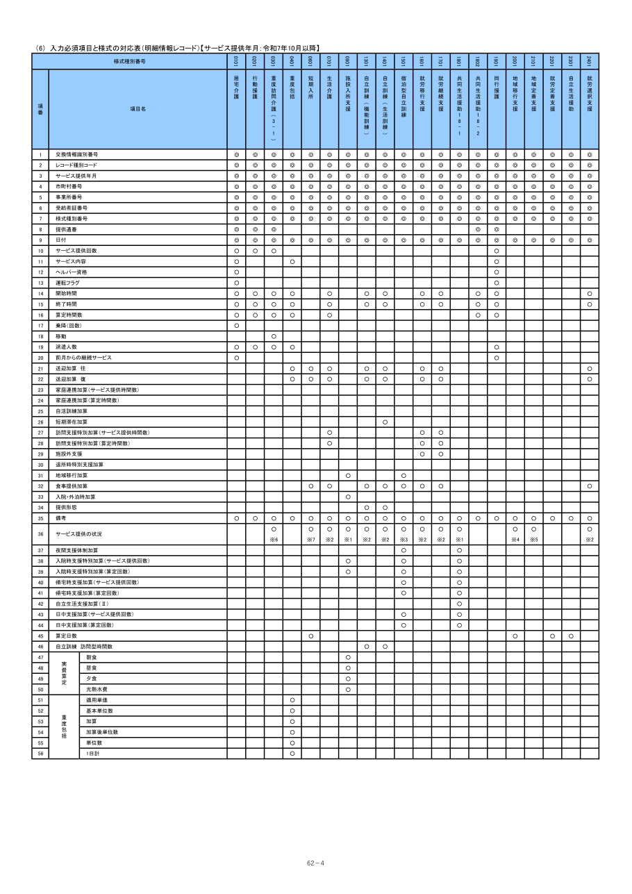
| 項番 | 項目名 | 属性 | 桁数 | 内容 | 必須 | 備考 | その他の列 |
|---|---|---|---|---|---|---|---|
| 1 | 交換情報識別番号 | 様式種別番号 > 0101:◎ 様式種別番号 > 0201:◎ 様式種別番号 > 0301:◎ 様式種別番号 > 0401:◎ 様式種別番号 > 0601:◎ 様式種別番号 > 0701:◎ 様式種別番号 > 0801:◎ 様式種別番号 > 1301:◎ 様式種別番号 > 1401:◎ 様式種別番号 > 1501:◎ 様式種別番号 > 1601:◎ 様式種別番号 > 1701:◎ 様式種別番号 > 1801:◎ 様式種別番号 > 1802:◎ 様式種別番号 > 1901:◎ 様式種別番号 > 2001:◎ 様式種別番号 > 2101:◎ 様式種別番号 > 2201:◎ 様式種別番号 > 2301:◎ 様式種別番号 > 2401:◎ | |||||
| 2 | レコード種別コード | 様式種別番号 > 0101:◎ 様式種別番号 > 0201:◎ 様式種別番号 > 0301:◎ 様式種別番号 > 0401:◎ 様式種別番号 > 0601:◎ 様式種別番号 > 0701:◎ 様式種別番号 > 0801:◎ 様式種別番号 > 1301:◎ 様式種別番号 > 1401:◎ 様式種別番号 > 1501:◎ 様式種別番号 > 1601:◎ 様式種別番号 > 1701:◎ 様式種別番号 > 1801:◎ 様式種別番号 > 1802:◎ 様式種別番号 > 1901:◎ 様式種別番号 > 2001:◎ 様式種別番号 > 2101:◎ 様式種別番号 > 2201:◎ 様式種別番号 > 2301:◎ 様式種別番号 > 2401:◎ | |||||
| 3 | サービス提供年月 | 様式種別番号 > 0101:◎ 様式種別番号 > 0201:◎ 様式種別番号 > 0301:◎ 様式種別番号 > 0401:◎ 様式種別番号 > 0601:◎ 様式種別番号 > 0701:◎ 様式種別番号 > 0801:◎ 様式種別番号 > 1301:◎ 様式種別番号 > 1401:◎ 様式種別番号 > 1501:◎ 様式種別番号 > 1601:◎ 様式種別番号 > 1701:◎ 様式種別番号 > 1801:◎ 様式種別番号 > 1802:◎ 様式種別番号 > 1901:◎ 様式種別番号 > 2001:◎ 様式種別番号 > 2101:◎ 様式種別番号 > 2201:◎ 様式種別番号 > 2301:◎ 様式種別番号 > 2401:◎ | |||||
| 4 | 市町村番号 | 様式種別番号 > 0101:◎ 様式種別番号 > 0201:◎ 様式種別番号 > 0301:◎ 様式種別番号 > 0401:◎ 様式種別番号 > 0601:◎ 様式種別番号 > 0701:◎ 様式種別番号 > 0801:◎ 様式種別番号 > 1301:◎ 様式種別番号 > 1401:◎ 様式種別番号 > 1501:◎ 様式種別番号 > 1601:◎ 様式種別番号 > 1701:◎ 様式種別番号 > 1801:◎ 様式種別番号 > 1802:◎ 様式種別番号 > 1901:◎ 様式種別番号 > 2001:◎ 様式種別番号 > 2101:◎ 様式種別番号 > 2201:◎ 様式種別番号 > 2301:◎ 様式種別番号 > 2401:◎ | |||||
| 5 | 事業所番号 | 様式種別番号 > 0101:◎ 様式種別番号 > 0201:◎ 様式種別番号 > 0301:◎ 様式種別番号 > 0401:◎ 様式種別番号 > 0601:◎ 様式種別番号 > 0701:◎ 様式種別番号 > 0801:◎ 様式種別番号 > 1301:◎ 様式種別番号 > 1401:◎ 様式種別番号 > 1501:◎ 様式種別番号 > 1601:◎ 様式種別番号 > 1701:◎ 様式種別番号 > 1801:◎ 様式種別番号 > 1802:◎ 様式種別番号 > 1901:◎ 様式種別番号 > 2001:◎ 様式種別番号 > 2101:◎ 様式種別番号 > 2201:◎ 様式種別番号 > 2301:◎ 様式種別番号 > 2401:◎ | |||||
| 6 | 受給者証番号 | 様式種別番号 > 0101:◎ 様式種別番号 > 0201:◎ 様式種別番号 > 0301:◎ 様式種別番号 > 0401:◎ 様式種別番号 > 0601:◎ 様式種別番号 > 0701:◎ 様式種別番号 > 0801:◎ 様式種別番号 > 1301:◎ 様式種別番号 > 1401:◎ 様式種別番号 > 1501:◎ 様式種別番号 > 1601:◎ 様式種別番号 > 1701:◎ 様式種別番号 > 1801:◎ 様式種別番号 > 1802:◎ 様式種別番号 > 1901:◎ 様式種別番号 > 2001:◎ 様式種別番号 > 2101:◎ 様式種別番号 > 2201:◎ 様式種別番号 > 2301:◎ 様式種別番号 > 2401:◎ | |||||
| 7 | 様式種別番号 | 様式種別番号 > 0101:◎ 様式種別番号 > 0201:◎ 様式種別番号 > 0301:◎ 様式種別番号 > 0401:◎ 様式種別番号 > 0601:◎ 様式種別番号 > 0701:◎ 様式種別番号 > 0801:◎ 様式種別番号 > 1301:◎ 様式種別番号 > 1401:◎ 様式種別番号 > 1501:◎ 様式種別番号 > 1601:◎ 様式種別番号 > 1701:◎ 様式種別番号 > 1801:◎ 様式種別番号 > 1802:◎ 様式種別番号 > 1901:◎ 様式種別番号 > 2001:◎ 様式種別番号 > 2101:◎ 様式種別番号 > 2201:◎ 様式種別番号 > 2301:◎ 様式種別番号 > 2401:◎ | |||||
| 8 | 提供通番 | 様式種別番号 > 0101:◎ 様式種別番号 > 0201:◎ 様式種別番号 > 0301:◎ 様式種別番号 > 0401:－ 様式種別番号 > 0601:－ 様式種別番号 > 0701:－ 様式種別番号 > 0801:－ 様式種別番号 > 1301:－ 様式種別番号 > 1401:－ 様式種別番号 > 1501:－ 様式種別番号 > 1601:－ 様式種別番号 > 1701:－ 様式種別番号 > 1801:－ 様式種別番号 > 1802:◎ 様式種別番号 > 1901:◎ 様式種別番号 > 2001:－ 様式種別番号 > 2101:－ 様式種別番号 > 2201:－ 様式種別番号 > 2301:－ 様式種別番号 > 2401:－ | |||||
| 9 | 日付 | 様式種別番号 > 0101:◎ 様式種別番号 > 0201:◎ 様式種別番号 > 0301:◎ 様式種別番号 > 0401:◎ 様式種別番号 > 0601:◎ 様式種別番号 > 0701:◎ 様式種別番号 > 0801:◎ 様式種別番号 > 1301:◎ 様式種別番号 > 1401:◎ 様式種別番号 > 1501:◎ 様式種別番号 > 1601:◎ 様式種別番号 > 1701:◎ 様式種別番号 > 1801:◎ 様式種別番号 > 1802:◎ 様式種別番号 > 1901:◎ 様式種別番号 > 2001:◎ 様式種別番号 > 2101:◎ 様式種別番号 > 2201:◎ 様式種別番号 > 2301:◎ 様式種別番号 > 2401:◎ | |||||
| 10 | サービス提供回数 | 様式種別番号 > 0101:○ 様式種別番号 > 0201:○ 様式種別番号 > 0301:○ 様式種別番号 > 0401:－ 様式種別番号 > 0601:－ 様式種別番号 > 0701:－ 様式種別番号 > 0801:－ 様式種別番号 > 1301:－ 様式種別番号 > 1401:－ 様式種別番号 > 1501:－ 様式種別番号 > 1601:－ 様式種別番号 > 1701:－ 様式種別番号 > 1801:－ 様式種別番号 > 1802:－ 様式種別番号 > 1901:○ 様式種別番号 > 2001:－ 様式種別番号 > 2101:－ 様式種別番号 > 2201:－ 様式種別番号 > 2301:－ 様式種別番号 > 2401:－ | |||||
| 11 | サービス内容 | 様式種別番号 > 0101:○ 様式種別番号 > 0201:－ 様式種別番号 > 0301:－ 様式種別番号 > 0401:○ 様式種別番号 > 0601:－ 様式種別番号 > 0701:－ 様式種別番号 > 0801:－ 様式種別番号 > 1301:－ 様式種別番号 > 1401:－ 様式種別番号 > 1501:－ 様式種別番号 > 1601:－ 様式種別番号 > 1701:－ 様式種別番号 > 1801:－ 様式種別番号 > 1802:－ 様式種別番号 > 1901:○ 様式種別番号 > 2001:－ 様式種別番号 > 2101:－ 様式種別番号 > 2201:－ 様式種別番号 > 2301:－ 様式種別番号 > 2401:－ | |||||
| 12 | ヘルパー資格 | 様式種別番号 > 0101:○ 様式種別番号 > 0201:－ 様式種別番号 > 0301:－ 様式種別番号 > 0401:－ 様式種別番号 > 0601:－ 様式種別番号 > 0701:－ 様式種別番号 > 0801:－ 様式種別番号 > 1301:－ 様式種別番号 > 1401:－ 様式種別番号 > 1501:－ 様式種別番号 > 1601:－ 様式種別番号 > 1701:－ 様式種別番号 > 1801:－ 様式種別番号 > 1802:－ 様式種別番号 > 1901:○ 様式種別番号 > 2001:－ 様式種別番号 > 2101:－ 様式種別番号 > 2201:－ 様式種別番号 > 2301:－ 様式種別番号 > 2401:－ | |||||
| 13 | 運転フラグ | 様式種別番号 > 0101:○ 様式種別番号 > 0201:－ 様式種別番号 > 0301:－ 様式種別番号 > 0401:－ 様式種別番号 > 0601:－ 様式種別番号 > 0701:－ 様式種別番号 > 0801:－ 様式種別番号 > 1301:－ 様式種別番号 > 1401:－ 様式種別番号 > 1501:－ 様式種別番号 > 1601:－ 様式種別番号 > 1701:－ 様式種別番号 > 1801:－ 様式種別番号 > 1802:－ 様式種別番号 > 1901:○ 様式種別番号 > 2001:－ 様式種別番号 > 2101:－ 様式種別番号 > 2201:－ 様式種別番号 > 2301:－ 様式種別番号 > 2401:－ | |||||
| 14 | 開始時間 | 様式種別番号 > 0101:○ 様式種別番号 > 0201:○ 様式種別番号 > 0301:○ 様式種別番号 > 0401:○ 様式種別番号 > 0601:－ 様式種別番号 > 0701:○ 様式種別番号 > 0801:－ 様式種別番号 > 1301:○ 様式種別番号 > 1401:○ 様式種別番号 > 1501:－ 様式種別番号 > 1601:○ 様式種別番号 > 1701:○ 様式種別番号 > 1801:－ 様式種別番号 > 1802:○ 様式種別番号 > 1901:○ 様式種別番号 > 2001:－ 様式種別番号 > 2101:－ 様式種別番号 > 2201:－ 様式種別番号 > 2301:－ 様式種別番号 > 2401:○ | |||||
| 15 | 終了時間 | 様式種別番号 > 0101:○ 様式種別番号 > 0201:○ 様式種別番号 > 0301:○ 様式種別番号 > 0401:○ 様式種別番号 > 0601:－ 様式種別番号 > 0701:○ 様式種別番号 > 0801:－ 様式種別番号 > 1301:○ 様式種別番号 > 1401:○ 様式種別番号 > 1501:－ 様式種別番号 > 1601:○ 様式種別番号 > 1701:○ 様式種別番号 > 1801:－ 様式種別番号 > 1802:○ 様式種別番号 > 1901:○ 様式種別番号 > 2001:－ 様式種別番号 > 2101:－ 様式種別番号 > 2201:－ 様式種別番号 > 2301:－ 様式種別番号 > 2401:○ | |||||
| 16 | 算定時間数 | 様式種別番号 > 0101:○ 様式種別番号 > 0201:○ 様式種別番号 > 0301:○ 様式種別番号 > 0401:○ 様式種別番号 > 0601:－ 様式種別番号 > 0701:○ 様式種別番号 > 0801:－ 様式種別番号 > 1301:－ 様式種別番号 > 1401:－ 様式種別番号 > 1501:－ 様式種別番号 > 1601:－ 様式種別番号 > 1701:－ 様式種別番号 > 1801:－ 様式種別番号 > 1802:○ 様式種別番号 > 1901:○ 様式種別番号 > 2001:－ 様式種別番号 > 2101:－ 様式種別番号 > 2201:－ 様式種別番号 > 2301:－ 様式種別番号 > 2401:－ | |||||
| 17 | 乗降(回数) | 様式種別番号 > 0101:○ 様式種別番号 > 0201:－ 様式種別番号 > 0301:－ 様式種別番号 > 0401:－ 様式種別番号 > 0601:－ 様式種別番号 > 0701:－ 様式種別番号 > 0801:－ 様式種別番号 > 1301:－ 様式種別番号 > 1401:－ 様式種別番号 > 1501:－ 様式種別番号 > 1601:－ 様式種別番号 > 1701:－ 様式種別番号 > 1801:－ 様式種別番号 > 1802:－ 様式種別番号 > 1901:－ 様式種別番号 > 2001:－ 様式種別番号 > 2101:－ 様式種別番号 > 2201:－ 様式種別番号 > 2301:－ 様式種別番号 > 2401:－ | |||||
| 18 | 移動 | 様式種別番号 > 0101:－ 様式種別番号 > 0201:－ 様式種別番号 > 0301:○ 様式種別番号 > 0401:－ 様式種別番号 > 0601:－ 様式種別番号 > 0701:－ 様式種別番号 > 0801:－ 様式種別番号 > 1301:－ 様式種別番号 > 1401:－ 様式種別番号 > 1501:－ 様式種別番号 > 1601:－ 様式種別番号 > 1701:－ 様式種別番号 > 1801:－ 様式種別番号 > 1802:－ 様式種別番号 > 1901:－ 様式種別番号 > 2001:－ 様式種別番号 > 2101:－ 様式種別番号 > 2201:－ 様式種別番号 > 2301:－ 様式種別番号 > 2401:－ | |||||
| 19 | 派遣人数 | 様式種別番号 > 0101:○ 様式種別番号 > 0201:○ 様式種別番号 > 0301:○ 様式種別番号 > 0401:○ 様式種別番号 > 0601:－ 様式種別番号 > 0701:－ 様式種別番号 > 0801:－ 様式種別番号 > 1301:－ 様式種別番号 > 1401:－ 様式種別番号 > 1501:－ 様式種別番号 > 1601:－ 様式種別番号 > 1701:－ 様式種別番号 > 1801:－ 様式種別番号 > 1802:－ 様式種別番号 > 1901:○ 様式種別番号 > 2001:－ 様式種別番号 > 2101:－ 様式種別番号 > 2201:－ 様式種別番号 > 2301:－ 様式種別番号 > 2401:－ | |||||
| 20 | 前月からの継続サービス | 様式種別番号 > 0101:○ 様式種別番号 > 0201:－ 様式種別番号 > 0301:－ 様式種別番号 > 0401:－ 様式種別番号 > 0601:－ 様式種別番号 > 0701:－ 様式種別番号 > 0801:－ 様式種別番号 > 1301:－ 様式種別番号 > 1401:－ 様式種別番号 > 1501:－ 様式種別番号 > 1601:－ 様式種別番号 > 1701:－ 様式種別番号 > 1801:－ 様式種別番号 > 1802:－ 様式種別番号 > 1901:○ 様式種別番号 > 2001:－ 様式種別番号 > 2101:－ 様式種別番号 > 2201:－ 様式種別番号 > 2301:－ 様式種別番号 > 2401:－ | |||||
| 21 | 送迎加算 往 | 様式種別番号 > 0101:－ 様式種別番号 > 0201:－ 様式種別番号 > 0301:－ 様式種別番号 > 0401:○ 様式種別番号 > 0601:○ 様式種別番号 > 0701:○ 様式種別番号 > 0801:－ 様式種別番号 > 1301:○ 様式種別番号 > 1401:○ 様式種別番号 > 1501:－ 様式種別番号 > 1601:○ 様式種別番号 > 1701:○ 様式種別番号 > 1801:－ 様式種別番号 > 1802:－ 様式種別番号 > 1901:－ 様式種別番号 > 2001:－ 様式種別番号 > 2101:－ 様式種別番号 > 2201:－ 様式種別番号 > 2301:－ 様式種別番号 > 2401:○ | |||||
| 22 | 送迎加算 復 | 様式種別番号 > 0101:－ 様式種別番号 > 0201:－ 様式種別番号 > 0301:－ 様式種別番号 > 0401:○ 様式種別番号 > 0601:○ 様式種別番号 > 0701:○ 様式種別番号 > 0801:－ 様式種別番号 > 1301:○ 様式種別番号 > 1401:○ 様式種別番号 > 1501:－ 様式種別番号 > 1601:○ 様式種別番号 > 1701:○ 様式種別番号 > 1801:－ 様式種別番号 > 1802:－ 様式種別番号 > 1901:－ 様式種別番号 > 2001:－ 様式種別番号 > 2101:－ 様式種別番号 > 2201:－ 様式種別番号 > 2301:－ 様式種別番号 > 2401:○ | |||||
| 23 | 家庭連携加算(サービス提供時間数) | 様式種別番号 > 0101:－ 様式種別番号 > 0201:－ 様式種別番号 > 0301:－ 様式種別番号 > 0401:－ 様式種別番号 > 0601:－ 様式種別番号 > 0701:－ 様式種別番号 > 0801:－ 様式種別番号 > 1301:－ 様式種別番号 > 1401:－ 様式種別番号 > 1501:－ 様式種別番号 > 1601:－ 様式種別番号 > 1701:－ 様式種別番号 > 1801:－ 様式種別番号 > 1802:－ 様式種別番号 > 1901:－ 様式種別番号 > 2001:－ 様式種別番号 > 2101:－ 様式種別番号 > 2201:－ 様式種別番号 > 2301:－ 様式種別番号 > 2401:－ | |||||
| 24 | 家庭連携加算(算定時間数) | 様式種別番号 > 0101:－ 様式種別番号 > 0201:－ 様式種別番号 > 0301:－ 様式種別番号 > 0401:－ 様式種別番号 > 0601:－ 様式種別番号 > 0701:－ 様式種別番号 > 0801:－ 様式種別番号 > 1301:－ 様式種別番号 > 1401:－ 様式種別番号 > 1501:－ 様式種別番号 > 1601:－ 様式種別番号 > 1701:－ 様式種別番号 > 1801:－ 様式種別番号 > 1802:－ 様式種別番号 > 1901:－ 様式種別番号 > 2001:－ 様式種別番号 > 2101:－ 様式種別番号 > 2201:－ 様式種別番号 > 2301:－ 様式種別番号 > 2401:－ | |||||
| 25 | 自活訓練加算 | 様式種別番号 > 0101:－ 様式種別番号 > 0201:－ 様式種別番号 > 0301:－ 様式種別番号 > 0401:－ 様式種別番号 > 0601:－ 様式種別番号 > 0701:－ 様式種別番号 > 0801:－ 様式種別番号 > 1301:－ 様式種別番号 > 1401:－ 様式種別番号 > 1501:－ 様式種別番号 > 1601:－ 様式種別番号 > 1701:－ 様式種別番号 > 1801:－ 様式種別番号 > 1802:－ 様式種別番号 > 1901:－ 様式種別番号 > 2001:－ 様式種別番号 > 2101:－ 様式種別番号 > 2201:－ 様式種別番号 > 2301:－ 様式種別番号 > 2401:－ | |||||
| 26 | 短期滞在加算 | 様式種別番号 > 0101:－ 様式種別番号 > 0201:－ 様式種別番号 > 0301:－ 様式種別番号 > 0401:－ 様式種別番号 > 0601:－ 様式種別番号 > 0701:－ 様式種別番号 > 0801:－ 様式種別番号 > 1301:－ 様式種別番号 > 1401:○ 様式種別番号 > 1501:－ 様式種別番号 > 1601:－ 様式種別番号 > 1701:－ 様式種別番号 > 1801:－ 様式種別番号 > 1802:－ 様式種別番号 > 1901:－ 様式種別番号 > 2001:－ 様式種別番号 > 2101:－ 様式種別番号 > 2201:－ 様式種別番号 > 2301:－ 様式種別番号 > 2401:－ | |||||
| 27 | 訪問支援特別加算(サービス提供時間数) | 様式種別番号 > 0101:－ 様式種別番号 > 0201:－ 様式種別番号 > 0301:－ 様式種別番号 > 0401:－ 様式種別番号 > 0601:－ 様式種別番号 > 0701:○ 様式種別番号 > 0801:－ 様式種別番号 > 1301:－ 様式種別番号 > 1401:－ 様式種別番号 > 1501:－ 様式種別番号 > 1601:○ 様式種別番号 > 1701:○ 様式種別番号 > 1801:－ 様式種別番号 > 1802:－ 様式種別番号 > 1901:－ 様式種別番号 > 2001:－ 様式種別番号 > 2101:－ 様式種別番号 > 2201:－ 様式種別番号 > 2301:－ 様式種別番号 > 2401:－ | |||||
| 28 | 訪問支援特別加算(算定時間数) | 様式種別番号 > 0101:－ 様式種別番号 > 0201:－ 様式種別番号 > 0301:－ 様式種別番号 > 0401:－ 様式種別番号 > 0601:－ 様式種別番号 > 0701:○ 様式種別番号 > 0801:－ 様式種別番号 > 1301:－ 様式種別番号 > 1401:－ 様式種別番号 > 1501:－ 様式種別番号 > 1601:○ 様式種別番号 > 1701:○ 様式種別番号 > 1801:－ 様式種別番号 > 1802:－ 様式種別番号 > 1901:－ 様式種別番号 > 2001:－ 様式種別番号 > 2101:－ 様式種別番号 > 2201:－ 様式種別番号 > 2301:－ 様式種別番号 > 2401:－ | |||||
| 29 | 施設外支援 | 様式種別番号 > 0101:－ 様式種別番号 > 0201:－ 様式種別番号 > 0301:－ 様式種別番号 > 0401:－ 様式種別番号 > 0601:－ 様式種別番号 > 0701:－ 様式種別番号 > 0801:－ 様式種別番号 > 1301:－ 様式種別番号 > 1401:－ 様式種別番号 > 1501:－ 様式種別番号 > 1601:○ 様式種別番号 > 1701:○ 様式種別番号 > 1801:－ 様式種別番号 > 1802:－ 様式種別番号 > 1901:－ 様式種別番号 > 2001:－ 様式種別番号 > 2101:－ 様式種別番号 > 2201:－ 様式種別番号 > 2301:－ 様式種別番号 > 2401:－ | |||||
| 30 | 退所時特別支援加算 | 様式種別番号 > 0101:－ 様式種別番号 > 0201:－ 様式種別番号 > 0301:－ 様式種別番号 > 0401:－ 様式種別番号 > 0601:－ 様式種別番号 > 0701:－ 様式種別番号 > 0801:－ 様式種別番号 > 1301:－ 様式種別番号 > 1401:－ 様式種別番号 > 1501:－ 様式種別番号 > 1601:－ 様式種別番号 > 1701:－ 様式種別番号 > 1801:－ 様式種別番号 > 1802:－ 様式種別番号 > 1901:－ 様式種別番号 > 2001:－ 様式種別番号 > 2101:－ 様式種別番号 > 2201:－ 様式種別番号 > 2301:－ 様式種別番号 > 2401:－ | |||||
| 31 | 地域移行加算 | 様式種別番号 > 0101:－ 様式種別番号 > 0201:－ 様式種別番号 > 0301:－ 様式種別番号 > 0401:－ 様式種別番号 > 0601:－ 様式種別番号 > 0701:－ 様式種別番号 > 0801:○ 様式種別番号 > 1301:－ 様式種別番号 > 1401:－ 様式種別番号 > 1501:○ 様式種別番号 > 1601:－ 様式種別番号 > 1701:－ 様式種別番号 > 1801:－ 様式種別番号 > 1802:－ 様式種別番号 > 1901:－ 様式種別番号 > 2001:－ 様式種別番号 > 2101:－ 様式種別番号 > 2201:－ 様式種別番号 > 2301:－ 様式種別番号 > 2401:－ | |||||
| 32 | 食事提供加算 | 様式種別番号 > 0101:－ 様式種別番号 > 0201:－ 様式種別番号 > 0301:－ 様式種別番号 > 0401:－ 様式種別番号 > 0601:○ 様式種別番号 > 0701:○ 様式種別番号 > 0801:－ 様式種別番号 > 1301:○ 様式種別番号 > 1401:○ 様式種別番号 > 1501:○ 様式種別番号 > 1601:○ 様式種別番号 > 1701:○ 様式種別番号 > 1801:－ 様式種別番号 > 1802:－ 様式種別番号 > 1901:－ 様式種別番号 > 2001:－ 様式種別番号 > 2101:－ 様式種別番号 > 2201:－ 様式種別番号 > 2301:－ 様式種別番号 > 2401:○ | |||||
| 33 | 入院・外泊時加算 | 様式種別番号 > 0101:－ 様式種別番号 > 0201:－ 様式種別番号 > 0301:－ 様式種別番号 > 0401:－ 様式種別番号 > 0601:－ 様式種別番号 > 0701:－ 様式種別番号 > 0801:○ 様式種別番号 > 1301:－ 様式種別番号 > 1401:－ 様式種別番号 > 1501:－ 様式種別番号 > 1601:－ 様式種別番号 > 1701:－ 様式種別番号 > 1801:－ 様式種別番号 > 1802:－ 様式種別番号 > 1901:－ 様式種別番号 > 2001:－ 様式種別番号 > 2101:－ 様式種別番号 > 2201:－ 様式種別番号 > 2301:－ 様式種別番号 > 2401:－ | |||||
| 34 | 提供形態 | 様式種別番号 > 0101:－ 様式種別番号 > 0201:－ 様式種別番号 > 0301:－ 様式種別番号 > 0401:－ 様式種別番号 > 0601:－ 様式種別番号 > 0701:－ 様式種別番号 > 0801:－ 様式種別番号 > 1301:○ 様式種別番号 > 1401:○ 様式種別番号 > 1501:－ 様式種別番号 > 1601:－ 様式種別番号 > 1701:－ 様式種別番号 > 1801:－ 様式種別番号 > 1802:－ 様式種別番号 > 1901:－ 様式種別番号 > 2001:－ 様式種別番号 > 2101:－ 様式種別番号 > 2201:－ 様式種別番号 > 2301:－ 様式種別番号 > 2401:－ | |||||
| 35 | 備考 | 様式種別番号 > 0101:○ 様式種別番号 > 0201:○ 様式種別番号 > 0301:○ 様式種別番号 > 0401:○ 様式種別番号 > 0601:○ 様式種別番号 > 0701:○ 様式種別番号 > 0801:○ 様式種別番号 > 1301:○ 様式種別番号 > 1401:○ 様式種別番号 > 1501:○ 様式種別番号 > 1601:○ 様式種別番号 > 1701:○ 様式種別番号 > 1801:○ 様式種別番号 > 1802:○ 様式種別番号 > 1901:○ 様式種別番号 > 2001:○ 様式種別番号 > 2101:○ 様式種別番号 > 2201:○ 様式種別番号 > 2301:○ 様式種別番号 > 2401:○ | |||||
| 36 | サービス提供の状況 | 様式種別番号 > 0101:－ 様式種別番号 > 0201:－ 様式種別番号 > 0301:○ ※6 様式種別番号 > 0401:－ 様式種別番号 > 0601:○ ※7 様式種別番号 > 0701:○ ※2 様式種別番号 > 0801:○ ※1 様式種別番号 > 1301:○ ※2 様式種別番号 > 1401:○ ※2 様式種別番号 > 1501:○ ※3 様式種別番号 > 1601:○ ※2 様式種別番号 > 1701:○ ※2 様式種別番号 > 1801:○ ※1 様式種別番号 > 1802:－ 様式種別番号 > 1901:－ 様式種別番号 > 2001:○ ※4 様式種別番号 > 2101:○ ※5 様式種別番号 > 2201:－ 様式種別番号 > 2301:－ 様式種別番号 > 2401:○ ※2 | |||||
| 37 | 夜間支援体制加算 | 様式種別番号 > 0101:－ 様式種別番号 > 0201:－ 様式種別番号 > 0301:－ 様式種別番号 > 0401:－ 様式種別番号 > 0601:－ 様式種別番号 > 0701:－ 様式種別番号 > 0801:－ 様式種別番号 > 1301:－ 様式種別番号 > 1401:－ 様式種別番号 > 1501:○ 様式種別番号 > 1601:－ 様式種別番号 > 1701:－ 様式種別番号 > 1801:○ 様式種別番号 > 1802:－ 様式種別番号 > 1901:－ 様式種別番号 > 2001:－ 様式種別番号 > 2101:－ 様式種別番号 > 2201:－ 様式種別番号 > 2301:－ 様式種別番号 > 2401:－ | |||||
| 38 | 入院時支援特別加算(サービス提供回数) | 様式種別番号 > 0101:－ 様式種別番号 > 0201:－ 様式種別番号 > 0301:－ 様式種別番号 > 0401:－ 様式種別番号 > 0601:－ 様式種別番号 > 0701:－ 様式種別番号 > 0801:○ 様式種別番号 > 1301:－ 様式種別番号 > 1401:－ 様式種別番号 > 1501:○ 様式種別番号 > 1601:－ 様式種別番号 > 1701:－ 様式種別番号 > 1801:○ 様式種別番号 > 1802:－ 様式種別番号 > 1901:－ 様式種別番号 > 2001:－ 様式種別番号 > 2101:－ 様式種別番号 > 2201:－ 様式種別番号 > 2301:－ 様式種別番号 > 2401:－ | |||||
| 39 | 入院時支援特別加算(算定回数) | 様式種別番号 > 0101:－ 様式種別番号 > 0201:－ 様式種別番号 > 0301:－ 様式種別番号 > 0401:－ 様式種別番号 > 0601:－ 様式種別番号 > 0701:－ 様式種別番号 > 0801:○ 様式種別番号 > 1301:－ 様式種別番号 > 1401:－ 様式種別番号 > 1501:○ 様式種別番号 > 1601:－ 様式種別番号 > 1701:－ 様式種別番号 > 1801:○ 様式種別番号 > 1802:－ 様式種別番号 > 1901:－ 様式種別番号 > 2001:－ 様式種別番号 > 2101:－ 様式種別番号 > 2201:－ 様式種別番号 > 2301:－ 様式種別番号 > 2401:－ | |||||
| 40 | 帰宅時支援加算(サービス提供回数) | 様式種別番号 > 0101:－ 様式種別番号 > 0201:－ 様式種別番号 > 0301:－ 様式種別番号 > 0401:－ 様式種別番号 > 0601:－ 様式種別番号 > 0701:－ 様式種別番号 > 0801:－ 様式種別番号 > 1301:－ 様式種別番号 > 1401:－ 様式種別番号 > 1501:○ 様式種別番号 > 1601:－ 様式種別番号 > 1701:－ 様式種別番号 > 1801:○ 様式種別番号 > 1802:－ 様式種別番号 > 1901:－ 様式種別番号 > 2001:－ 様式種別番号 > 2101:－ 様式種別番号 > 2201:－ 様式種別番号 > 2301:－ 様式種別番号 > 2401:－ | |||||
| 41 | 帰宅時支援加算(算定回数) | 様式種別番号 > 0101:－ 様式種別番号 > 0201:－ 様式種別番号 > 0301:－ 様式種別番号 > 0401:－ 様式種別番号 > 0601:－ 様式種別番号 > 0701:－ 様式種別番号 > 0801:－ 様式種別番号 > 1301:－ 様式種別番号 > 1401:－ 様式種別番号 > 1501:○ 様式種別番号 > 1601:－ 様式種別番号 > 1701:－ 様式種別番号 > 1801:○ 様式種別番号 > 1802:－ 様式種別番号 > 1901:－ 様式種別番号 > 2001:－ 様式種別番号 > 2101:－ 様式種別番号 > 2201:－ 様式種別番号 > 2301:－ 様式種別番号 > 2401:－ | |||||
| 42 | 自立生活支援加算(II) | 様式種別番号 > 0101:－ 様式種別番号 > 0201:－ 様式種別番号 > 0301:－ 様式種別番号 > 0401:－ 様式種別番号 > 0601:－ 様式種別番号 > 0701:－ 様式種別番号 > 0801:－ 様式種別番号 > 1301:－ 様式種別番号 > 1401:－ 様式種別番号 > 1501:－ 様式種別番号 > 1601:－ 様式種別番号 > 1701:－ 様式種別番号 > 1801:○ 様式種別番号 > 1802:－ 様式種別番号 > 1901:－ 様式種別番号 > 2001:－ 様式種別番号 > 2101:－ 様式種別番号 > 2201:－ 様式種別番号 > 2301:－ 様式種別番号 > 2401:－ | |||||
| 43 | 日中支援加算(サービス提供回数) | 様式種別番号 > 0101:－ 様式種別番号 > 0201:－ 様式種別番号 > 0301:－ 様式種別番号 > 0401:－ 様式種別番号 > 0601:－ 様式種別番号 > 0701:－ 様式種別番号 > 0801:－ 様式種別番号 > 1301:－ 様式種別番号 > 1401:－ 様式種別番号 > 1501:○ 様式種別番号 > 1601:－ 様式種別番号 > 1701:－ 様式種別番号 > 1801:○ 様式種別番号 > 1802:－ 様式種別番号 > 1901:－ 様式種別番号 > 2001:－ 様式種別番号 > 2101:－ 様式種別番号 > 2201:－ 様式種別番号 > 2301:－ 様式種別番号 > 2401:－ | |||||
| 44 | 日中支援加算(算定回数) | 様式種別番号 > 0101:－ 様式種別番号 > 0201:－ 様式種別番号 > 0301:－ 様式種別番号 > 0401:－ 様式種別番号 > 0601:－ 様式種別番号 > 0701:－ 様式種別番号 > 0801:－ 様式種別番号 > 1301:－ 様式種別番号 > 1401:－ 様式種別番号 > 1501:○ 様式種別番号 > 1601:－ 様式種別番号 > 1701:－ 様式種別番号 > 1801:○ 様式種別番号 > 1802:－ 様式種別番号 > 1901:－ 様式種別番号 > 2001:－ 様式種別番号 > 2101:－ 様式種別番号 > 2201:－ 様式種別番号 > 2301:－ 様式種別番号 > 2401:－ | |||||
| 45 | 算定日数 | 様式種別番号 > 0101:－ 様式種別番号 > 0201:－ 様式種別番号 > 0301:－ 様式種別番号 > 0401:－ 様式種別番号 > 0601:○ 様式種別番号 > 0701:－ 様式種別番号 > 0801:－ 様式種別番号 > 1301:－ 様式種別番号 > 1401:－ 様式種別番号 > 1501:－ 様式種別番号 > 1601:－ 様式種別番号 > 1701:－ 様式種別番号 > 1801:－ 様式種別番号 > 1802:－ 様式種別番号 > 1901:－ 様式種別番号 > 2001:○ 様式種別番号 > 2101:－ 様式種別番号 > 2201:○ 様式種別番号 > 2301:○ 様式種別番号 > 2401:－ | |||||
| 46 | 自立訓練 訪問型時間数 | 様式種別番号 > 0101:－ 様式種別番号 > 0201:－ 様式種別番号 > 0301:－ 様式種別番号 > 0401:－ 様式種別番号 > 0601:－ 様式種別番号 > 0701:－ 様式種別番号 > 0801:－ 様式種別番号 > 1301:○ 様式種別番号 > 1401:○ 様式種別番号 > 1501:－ 様式種別番号 > 1601:－ 様式種別番号 > 1701:－ 様式種別番号 > 1801:－ 様式種別番号 > 1802:－ 様式種別番号 > 1901:－ 様式種別番号 > 2001:－ 様式種別番号 > 2101:－ 様式種別番号 > 2201:－ 様式種別番号 > 2301:－ 様式種別番号 > 2401:－ | |||||
| 47 | 実費算定 > 朝食 | 様式種別番号 > 0101:－ 様式種別番号 > 0201:－ 様式種別番号 > 0301:－ 様式種別番号 > 0401:－ 様式種別番号 > 0601:－ 様式種別番号 > 0701:－ 様式種別番号 > 0801:○ 様式種別番号 > 1301:－ 様式種別番号 > 1401:－ 様式種別番号 > 1501:－ 様式種別番号 > 1601:－ 様式種別番号 > 1701:－ 様式種別番号 > 1801:－ 様式種別番号 > 1802:－ 様式種別番号 > 1901:－ 様式種別番号 > 2001:－ 様式種別番号 > 2101:－ 様式種別番号 > 2201:－ 様式種別番号 > 2301:－ 様式種別番号 > 2401:－ | |||||
| 48 | 実費算定 > 昼食 | 様式種別番号 > 0101:－ 様式種別番号 > 0201:－ 様式種別番号 > 0301:－ 様式種別番号 > 0401:－ 様式種別番号 > 0601:－ 様式種別番号 > 0701:－ 様式種別番号 > 0801:○ 様式種別番号 > 1301:－ 様式種別番号 > 1401:－ 様式種別番号 > 1501:－ 様式種別番号 > 1601:－ 様式種別番号 > 1701:－ 様式種別番号 > 1801:－ 様式種別番号 > 1802:－ 様式種別番号 > 1901:－ 様式種別番号 > 2001:－ 様式種別番号 > 2101:－ 様式種別番号 > 2201:－ 様式種別番号 > 2301:－ 様式種別番号 > 2401:－ | |||||
| 49 | 実費算定 > 夕食 | 様式種別番号 > 0101:－ 様式種別番号 > 0201:－ 様式種別番号 > 0301:－ 様式種別番号 > 0401:－ 様式種別番号 > 0601:－ 様式種別番号 > 0701:－ 様式種別番号 > 0801:○ 様式種別番号 > 1301:－ 様式種別番号 > 1401:－ 様式種別番号 > 1501:－ 様式種別番号 > 1601:－ 様式種別番号 > 1701:－ 様式種別番号 > 1801:－ 様式種別番号 > 1802:－ 様式種別番号 > 1901:－ 様式種別番号 > 2001:－ 様式種別番号 > 2101:－ 様式種別番号 > 2201:－ 様式種別番号 > 2301:－ 様式種別番号 > 2401:－ | |||||
| 50 | 実費算定 > 光熱水費 | 様式種別番号 > 0101:－ 様式種別番号 > 0201:－ 様式種別番号 > 0301:－ 様式種別番号 > 0401:－ 様式種別番号 > 0601:－ 様式種別番号 > 0701:－ 様式種別番号 > 0801:○ 様式種別番号 > 1301:－ 様式種別番号 > 1401:－ 様式種別番号 > 1501:－ 様式種別番号 > 1601:－ 様式種別番号 > 1701:－ 様式種別番号 > 1801:－ 様式種別番号 > 1802:－ 様式種別番号 > 1901:－ 様式種別番号 > 2001:－ 様式種別番号 > 2101:－ 様式種別番号 > 2201:－ 様式種別番号 > 2301:－ 様式種別番号 > 2401:－ | |||||
| 51 | 重度包括 > 適用単価 | 様式種別番号 > 0101:－ 様式種別番号 > 0201:－ 様式種別番号 > 0301:－ 様式種別番号 > 0401:○ 様式種別番号 > 0601:－ 様式種別番号 > 0701:－ 様式種別番号 > 0801:－ 様式種別番号 > 1301:－ 様式種別番号 > 1401:－ 様式種別番号 > 1501:－ 様式種別番号 > 1601:－ 様式種別番号 > 1701:－ 様式種別番号 > 1801:－ 様式種別番号 > 1802:－ 様式種別番号 > 1901:－ 様式種別番号 > 2001:－ 様式種別番号 > 2101:－ 様式種別番号 > 2201:－ 様式種別番号 > 2301:－ 様式種別番号 > 2401:－ | |||||
| 52 | 重度包括 > 基本単位数 | 様式種別番号 > 0101:－ 様式種別番号 > 0201:－ 様式種別番号 > 0301:－ 様式種別番号 > 0401:○ 様式種別番号 > 0601:－ 様式種別番号 > 0701:－ 様式種別番号 > 0801:－ 様式種別番号 > 1301:－ 様式種別番号 > 1401:－ 様式種別番号 > 1501:－ 様式種別番号 > 1601:－ 様式種別番号 > 1701:－ 様式種別番号 > 1801:－ 様式種別番号 > 1802:－ 様式種別番号 > 1901:－ 様式種別番号 > 2001:－ 様式種別番号 > 2101:－ 様式種別番号 > 2201:－ 様式種別番号 > 2301:－ 様式種別番号 > 2401:－ | |||||
| 53 | 重度包括 > 加算 | 様式種別番号 > 0101:－ 様式種別番号 > 0201:－ 様式種別番号 > 0301:－ 様式種別番号 > 0401:○ 様式種別番号 > 0601:－ 様式種別番号 > 0701:－ 様式種別番号 > 0801:－ 様式種別番号 > 1301:－ 様式種別番号 > 1401:－ 様式種別番号 > 1501:－ 様式種別番号 > 1601:－ 様式種別番号 > 1701:－ 様式種別番号 > 1801:－ 様式種別番号 > 1802:－ 様式種別番号 > 1901:－ 様式種別番号 > 2001:－ 様式種別番号 > 2101:－ 様式種別番号 > 2201:－ 様式種別番号 > 2301:－ 様式種別番号 > 2401:－ | |||||
| 54 | 重度包括 > 加算後単位数 | 様式種別番号 > 0101:－ 様式種別番号 > 0201:－ 様式種別番号 > 0301:－ 様式種別番号 > 0401:○ 様式種別番号 > 0601:－ 様式種別番号 > 0701:－ 様式種別番号 > 0801:－ 様式種別番号 > 1301:－ 様式種別番号 > 1401:－ 様式種別番号 > 1501:－ 様式種別番号 > 1601:－ 様式種別番号 > 1701:－ 様式種別番号 > 1801:－ 様式種別番号 > 1802:－ 様式種別番号 > 1901:－ 様式種別番号 > 2001:－ 様式種別番号 > 2101:－ 様式種別番号 > 2201:－ 様式種別番号 > 2301:－ 様式種別番号 > 2401:－ | |||||
| 55 | 重度包括 > 単位数 | 様式種別番号 > 0101:－ 様式種別番号 > 0201:－ 様式種別番号 > 0301:－ 様式種別番号 > 0401:○ 様式種別番号 > 0601:－ 様式種別番号 > 0701:－ 様式種別番号 > 0801:－ 様式種別番号 > 1301:－ 様式種別番号 > 1401:－ 様式種別番号 > 1501:－ 様式種別番号 > 1601:－ 様式種別番号 > 1701:－ 様式種別番号 > 1801:－ 様式種別番号 > 1802:－ 様式種別番号 > 1901:－ 様式種別番号 > 2001:－ 様式種別番号 > 2101:－ 様式種別番号 > 2201:－ 様式種別番号 > 2301:－ 様式種別番号 > 2401:－ | |||||
| 56 | 重度包括 > 1日計 | 様式種別番号 > 0101:－ 様式種別番号 > 0201:－ 様式種別番号 > 0301:－ 様式種別番号 > 0401:○ 様式種別番号 > 0601:－ 様式種別番号 > 0701:－ 様式種別番号 > 0801:－ 様式種別番号 > 1301:－ 様式種別番号 > 1401:－ 様式種別番号 > 1501:－ 様式種別番号 > 1601:－ 様式種別番号 > 1701:－ 様式種別番号 > 1801:－ 様式種別番号 > 1802:－ 様式種別番号 > 1901:－ 様式種別番号 > 2001:－ 様式種別番号 > 2101:－ 様式種別番号 > 2201:－ 様式種別番号 > 2301:－ 様式種別番号 > 2401:－ |
| 項番 | 項目名 | 属性 | 桁数 | 内容 | 必須 | 備考 | その他の列 |
|---|---|---|---|---|---|---|---|
| 1 | 交換情報識別番号 | 0101 居宅介護:◎ 0201 行動援護:◎ 0301 重度訪問介護（3-1）:◎ 0401 重度包括:◎ 0601 短期入所:◎ 0701 生活介護:◎ 0901 施設入所支援:◎ 1301 自立訓練（機能訓練）:◎ 1401 自立訓練（生活訓練）:◎ 1501 宿泊型自立訓練:◎ 1601 就労移行支援:◎ 1701 就労継続支援:◎ 1801 共同生活援助18-1:◎ 1802 共同生活援助18-2:◎ 1901 同行援護:◎ 2001 地域移行支援:◎ 2101 地域定着支援:◎ 2201 就労定着支援:◎ 2301 自立生活援助:◎ 2401 就労選択支援:◎ | |||||
| 2 | レコード種別コード | 0101 居宅介護:◎ 0201 行動援護:◎ 0301 重度訪問介護（3-1）:◎ 0401 重度包括:◎ 0601 短期入所:◎ 0701 生活介護:◎ 0901 施設入所支援:◎ 1301 自立訓練（機能訓練）:◎ 1401 自立訓練（生活訓練）:◎ 1501 宿泊型自立訓練:◎ 1601 就労移行支援:◎ 1701 就労継続支援:◎ 1801 共同生活援助18-1:◎ 1802 共同生活援助18-2:◎ 1901 同行援護:◎ 2001 地域移行支援:◎ 2101 地域定着支援:◎ 2201 就労定着支援:◎ 2301 自立生活援助:◎ 2401 就労選択支援:◎ | |||||
| 3 | サービス提供年月 | 0101 居宅介護:◎ 0201 行動援護:◎ 0301 重度訪問介護（3-1）:◎ 0401 重度包括:◎ 0601 短期入所:◎ 0701 生活介護:◎ 0901 施設入所支援:◎ 1301 自立訓練（機能訓練）:◎ 1401 自立訓練（生活訓練）:◎ 1501 宿泊型自立訓練:◎ 1601 就労移行支援:◎ 1701 就労継続支援:◎ 1801 共同生活援助18-1:◎ 1802 共同生活援助18-2:◎ 1901 同行援護:◎ 2001 地域移行支援:◎ 2101 地域定着支援:◎ 2201 就労定着支援:◎ 2301 自立生活援助:◎ 2401 就労選択支援:◎ | |||||
| 4 | 市町村番号 | 0101 居宅介護:◎ 0201 行動援護:◎ 0301 重度訪問介護（3-1）:◎ 0401 重度包括:◎ 0601 短期入所:◎ 0701 生活介護:◎ 0901 施設入所支援:◎ 1301 自立訓練（機能訓練）:◎ 1401 自立訓練（生活訓練）:◎ 1501 宿泊型自立訓練:◎ 1601 就労移行支援:◎ 1701 就労継続支援:◎ 1801 共同生活援助18-1:◎ 1802 共同生活援助18-2:◎ 1901 同行援護:◎ 2001 地域移行支援:◎ 2101 地域定着支援:◎ 2201 就労定着支援:◎ 2301 自立生活援助:◎ 2401 就労選択支援:◎ | |||||
| 5 | 事業所番号 | 0101 居宅介護:◎ 0201 行動援護:◎ 0301 重度訪問介護（3-1）:◎ 0401 重度包括:◎ 0601 短期入所:◎ 0701 生活介護:◎ 0901 施設入所支援:◎ 1301 自立訓練（機能訓練）:◎ 1401 自立訓練（生活訓練）:◎ 1501 宿泊型自立訓練:◎ 1601 就労移行支援:◎ 1701 就労継続支援:◎ 1801 共同生活援助18-1:◎ 1802 共同生活援助18-2:◎ 1901 同行援護:◎ 2001 地域移行支援:◎ 2101 地域定着支援:◎ 2201 就労定着支援:◎ 2301 自立生活援助:◎ 2401 就労選択支援:◎ | |||||
| 6 | 受給者証番号 | 0101 居宅介護:◎ 0201 行動援護:◎ 0301 重度訪問介護（3-1）:◎ 0401 重度包括:◎ 0601 短期入所:◎ 0701 生活介護:◎ 0901 施設入所支援:◎ 1301 自立訓練（機能訓練）:◎ 1401 自立訓練（生活訓練）:◎ 1501 宿泊型自立訓練:◎ 1601 就労移行支援:◎ 1701 就労継続支援:◎ 1801 共同生活援助18-1:◎ 1802 共同生活援助18-2:◎ 1901 同行援護:◎ 2001 地域移行支援:◎ 2101 地域定着支援:◎ 2201 就労定着支援:◎ 2301 自立生活援助:◎ 2401 就労選択支援:◎ | |||||
| 7 | 様式種別番号 | 0101 居宅介護:◎ 0201 行動援護:◎ 0301 重度訪問介護（3-1）:◎ 0401 重度包括:◎ 0601 短期入所:◎ 0701 生活介護:◎ 0901 施設入所支援:◎ 1301 自立訓練（機能訓練）:◎ 1401 自立訓練（生活訓練）:◎ 1501 宿泊型自立訓練:◎ 1601 就労移行支援:◎ 1701 就労継続支援:◎ 1801 共同生活援助18-1:◎ 1802 共同生活援助18-2:◎ 1901 同行援護:◎ 2001 地域移行支援:◎ 2101 地域定着支援:◎ 2201 就労定着支援:◎ 2301 自立生活援助:◎ 2401 就労選択支援:◎ | |||||
| 8 | 提供通番 | 0101 居宅介護:◎ 0201 行動援護:◎ 0301 重度訪問介護（3-1）:◎ 0401 重度包括:－ 0601 短期入所:－ 0701 生活介護:－ 0901 施設入所支援:－ 1301 自立訓練（機能訓練）:－ 1401 自立訓練（生活訓練）:－ 1501 宿泊型自立訓練:－ 1601 就労移行支援:－ 1701 就労継続支援:－ 1801 共同生活援助18-1:－ 1802 共同生活援助18-2:◎ 1901 同行援護:◎ 2001 地域移行支援:－ 2101 地域定着支援:－ 2201 就労定着支援:－ 2301 自立生活援助:－ 2401 就労選択支援:－ | |||||
| 9 | 日付 | 0101 居宅介護:◎ 0201 行動援護:◎ 0301 重度訪問介護（3-1）:◎ 0401 重度包括:◎ 0601 短期入所:◎ 0701 生活介護:◎ 0901 施設入所支援:◎ 1301 自立訓練（機能訓練）:◎ 1401 自立訓練（生活訓練）:◎ 1501 宿泊型自立訓練:◎ 1601 就労移行支援:◎ 1701 就労継続支援:◎ 1801 共同生活援助18-1:◎ 1802 共同生活援助18-2:◎ 1901 同行援護:◎ 2001 地域移行支援:◎ 2101 地域定着支援:◎ 2201 就労定着支援:◎ 2301 自立生活援助:◎ 2401 就労選択支援:◎ | |||||
| 10 | サービス提供回数 | 0101 居宅介護:○ 0201 行動援護:○ 0301 重度訪問介護（3-1）:○ 0401 重度包括:－ 0601 短期入所:－ 0701 生活介護:－ 0901 施設入所支援:－ 1301 自立訓練（機能訓練）:－ 1401 自立訓練（生活訓練）:－ 1501 宿泊型自立訓練:－ 1601 就労移行支援:－ 1701 就労継続支援:－ 1801 共同生活援助18-1:－ 1802 共同生活援助18-2:－ 1901 同行援護:○ 2001 地域移行支援:－ 2101 地域定着支援:－ 2201 就労定着支援:－ 2301 自立生活援助:－ 2401 就労選択支援:－ | |||||
| 11 | サービス内容 | 0101 居宅介護:○ 0201 行動援護:－ 0301 重度訪問介護（3-1）:－ 0401 重度包括:○ 0601 短期入所:－ 0701 生活介護:－ 0901 施設入所支援:－ 1301 自立訓練（機能訓練）:－ 1401 自立訓練（生活訓練）:－ 1501 宿泊型自立訓練:－ 1601 就労移行支援:－ 1701 就労継続支援:－ 1801 共同生活援助18-1:－ 1802 共同生活援助18-2:－ 1901 同行援護:○ 2001 地域移行支援:－ 2101 地域定着支援:－ 2201 就労定着支援:－ 2301 自立生活援助:－ 2401 就労選択支援:－ | |||||
| 12 | ヘルパー資格 | 0101 居宅介護:○ 0201 行動援護:－ 0301 重度訪問介護（3-1）:－ 0401 重度包括:－ 0601 短期入所:－ 0701 生活介護:－ 0901 施設入所支援:－ 1301 自立訓練（機能訓練）:－ 1401 自立訓練（生活訓練）:－ 1501 宿泊型自立訓練:－ 1601 就労移行支援:－ 1701 就労継続支援:－ 1801 共同生活援助18-1:－ 1802 共同生活援助18-2:－ 1901 同行援護:○ 2001 地域移行支援:－ 2101 地域定着支援:－ 2201 就労定着支援:－ 2301 自立生活援助:－ 2401 就労選択支援:－ | |||||
| 13 | 運転フラグ | 0101 居宅介護:○ 0201 行動援護:－ 0301 重度訪問介護（3-1）:－ 0401 重度包括:－ 0601 短期入所:－ 0701 生活介護:－ 0901 施設入所支援:－ 1301 自立訓練（機能訓練）:－ 1401 自立訓練（生活訓練）:－ 1501 宿泊型自立訓練:－ 1601 就労移行支援:－ 1701 就労継続支援:－ 1801 共同生活援助18-1:－ 1802 共同生活援助18-2:－ 1901 同行援護:○ 2001 地域移行支援:－ 2101 地域定着支援:－ 2201 就労定着支援:－ 2301 自立生活援助:－ 2401 就労選択支援:－ | |||||
| 14 | 開始時間 | 0101 居宅介護:○ 0201 行動援護:○ 0301 重度訪問介護（3-1）:○ 0401 重度包括:○ 0601 短期入所:－ 0701 生活介護:○ 0901 施設入所支援:－ 1301 自立訓練（機能訓練）:○ 1401 自立訓練（生活訓練）:○ 1501 宿泊型自立訓練:－ 1601 就労移行支援:○ 1701 就労継続支援:○ 1801 共同生活援助18-1:－ 1802 共同生活援助18-2:○ 1901 同行援護:○ 2001 地域移行支援:－ 2101 地域定着支援:－ 2201 就労定着支援:－ 2301 自立生活援助:－ 2401 就労選択支援:○ | |||||
| 15 | 終了時間 | 0101 居宅介護:○ 0201 行動援護:○ 0301 重度訪問介護（3-1）:○ 0401 重度包括:○ 0601 短期入所:－ 0701 生活介護:○ 0901 施設入所支援:－ 1301 自立訓練（機能訓練）:○ 1401 自立訓練（生活訓練）:○ 1501 宿泊型自立訓練:－ 1601 就労移行支援:○ 1701 就労継続支援:○ 1801 共同生活援助18-1:－ 1802 共同生活援助18-2:○ 1901 同行援護:○ 2001 地域移行支援:－ 2101 地域定着支援:－ 2201 就労定着支援:－ 2301 自立生活援助:－ 2401 就労選択支援:○ | |||||
| 16 | 算定時間数 | 0101 居宅介護:○ 0201 行動援護:○ 0301 重度訪問介護（3-1）:○ 0401 重度包括:○ 0601 短期入所:－ 0701 生活介護:○ 0901 施設入所支援:－ 1301 自立訓練（機能訓練）:－ 1401 自立訓練（生活訓練）:－ 1501 宿泊型自立訓練:－ 1601 就労移行支援:－ 1701 就労継続支援:－ 1801 共同生活援助18-1:－ 1802 共同生活援助18-2:○ 1901 同行援護:○ 2001 地域移行支援:－ 2101 地域定着支援:－ 2201 就労定着支援:－ 2301 自立生活援助:－ 2401 就労選択支援:－ | |||||
| 17 | 乗降(回数) | 0101 居宅介護:○ 0201 行動援護:－ 0301 重度訪問介護（3-1）:－ 0401 重度包括:－ 0601 短期入所:－ 0701 生活介護:－ 0901 施設入所支援:－ 1301 自立訓練（機能訓練）:－ 1401 自立訓練（生活訓練）:－ 1501 宿泊型自立訓練:－ 1601 就労移行支援:－ 1701 就労継続支援:－ 1801 共同生活援助18-1:－ 1802 共同生活援助18-2:－ 1901 同行援護:－ 2001 地域移行支援:－ 2101 地域定着支援:－ 2201 就労定着支援:－ 2301 自立生活援助:－ 2401 就労選択支援:－ | |||||
| 18 | 移動 | 0101 居宅介護:－ 0201 行動援護:－ 0301 重度訪問介護（3-1）:○ 0401 重度包括:－ 0601 短期入所:－ 0701 生活介護:－ 0901 施設入所支援:－ 1301 自立訓練（機能訓練）:－ 1401 自立訓練（生活訓練）:－ 1501 宿泊型自立訓練:－ 1601 就労移行支援:－ 1701 就労継続支援:－ 1801 共同生活援助18-1:－ 1802 共同生活援助18-2:－ 1901 同行援護:－ 2001 地域移行支援:－ 2101 地域定着支援:－ 2201 就労定着支援:－ 2301 自立生活援助:－ 2401 就労選択支援:－ | |||||
| 19 | 派遣人数 | 0101 居宅介護:○ 0201 行動援護:○ 0301 重度訪問介護（3-1）:○ 0401 重度包括:○ 0601 短期入所:－ 0701 生活介護:－ 0901 施設入所支援:－ 1301 自立訓練（機能訓練）:－ 1401 自立訓練（生活訓練）:－ 1501 宿泊型自立訓練:－ 1601 就労移行支援:－ 1701 就労継続支援:－ 1801 共同生活援助18-1:－ 1802 共同生活援助18-2:－ 1901 同行援護:○ 2001 地域移行支援:－ 2101 地域定着支援:－ 2201 就労定着支援:－ 2301 自立生活援助:－ 2401 就労選択支援:－ | |||||
| 20 | 前月からの継続サービス | 0101 居宅介護:○ 0201 行動援護:－ 0301 重度訪問介護（3-1）:－ 0401 重度包括:－ 0601 短期入所:－ 0701 生活介護:－ 0901 施設入所支援:－ 1301 自立訓練（機能訓練）:－ 1401 自立訓練（生活訓練）:－ 1501 宿泊型自立訓練:－ 1601 就労移行支援:－ 1701 就労継続支援:－ 1801 共同生活援助18-1:－ 1802 共同生活援助18-2:－ 1901 同行援護:○ 2001 地域移行支援:－ 2101 地域定着支援:－ 2201 就労定着支援:－ 2301 自立生活援助:－ 2401 就労選択支援:－ | |||||
| 21 | 送迎加算 往 | 0101 居宅介護:－ 0201 行動援護:－ 0301 重度訪問介護（3-1）:－ 0401 重度包括:○ 0601 短期入所:○ 0701 生活介護:○ 0901 施設入所支援:－ 1301 自立訓練（機能訓練）:○ 1401 自立訓練（生活訓練）:○ 1501 宿泊型自立訓練:－ 1601 就労移行支援:○ 1701 就労継続支援:○ 1801 共同生活援助18-1:－ 1802 共同生活援助18-2:－ 1901 同行援護:－ 2001 地域移行支援:－ 2101 地域定着支援:－ 2201 就労定着支援:－ 2301 自立生活援助:－ 2401 就労選択支援:○ | |||||
| 22 | 送迎加算 復 | 0101 居宅介護:－ 0201 行動援護:－ 0301 重度訪問介護（3-1）:－ 0401 重度包括:○ 0601 短期入所:○ 0701 生活介護:○ 0901 施設入所支援:－ 1301 自立訓練（機能訓練）:○ 1401 自立訓練（生活訓練）:○ 1501 宿泊型自立訓練:－ 1601 就労移行支援:○ 1701 就労継続支援:○ 1801 共同生活援助18-1:－ 1802 共同生活援助18-2:－ 1901 同行援護:－ 2001 地域移行支援:－ 2101 地域定着支援:－ 2201 就労定着支援:－ 2301 自立生活援助:－ 2401 就労選択支援:○ | |||||
| 23 | 家庭連携加算(サービス提供時間数) | 0101 居宅介護:－ 0201 行動援護:－ 0301 重度訪問介護（3-1）:－ 0401 重度包括:－ 0601 短期入所:－ 0701 生活介護:－ 0901 施設入所支援:－ 1301 自立訓練（機能訓練）:－ 1401 自立訓練（生活訓練）:－ 1501 宿泊型自立訓練:－ 1601 就労移行支援:－ 1701 就労継続支援:－ 1801 共同生活援助18-1:－ 1802 共同生活援助18-2:－ 1901 同行援護:－ 2001 地域移行支援:－ 2101 地域定着支援:－ 2201 就労定着支援:－ 2301 自立生活援助:－ 2401 就労選択支援:－ | |||||
| 24 | 家庭連携加算(算定時間数) | 0101 居宅介護:－ 0201 行動援護:－ 0301 重度訪問介護（3-1）:－ 0401 重度包括:－ 0601 短期入所:－ 0701 生活介護:－ 0901 施設入所支援:－ 1301 自立訓練（機能訓練）:－ 1401 自立訓練（生活訓練）:－ 1501 宿泊型自立訓練:－ 1601 就労移行支援:－ 1701 就労継続支援:－ 1801 共同生活援助18-1:－ 1802 共同生活援助18-2:－ 1901 同行援護:－ 2001 地域移行支援:－ 2101 地域定着支援:－ 2201 就労定着支援:－ 2301 自立生活援助:－ 2401 就労選択支援:－ | |||||
| 25 | 自活訓練加算 | 0101 居宅介護:－ 0201 行動援護:－ 0301 重度訪問介護（3-1）:－ 0401 重度包括:－ 0601 短期入所:－ 0701 生活介護:－ 0901 施設入所支援:－ 1301 自立訓練（機能訓練）:－ 1401 自立訓練（生活訓練）:－ 1501 宿泊型自立訓練:－ 1601 就労移行支援:－ 1701 就労継続支援:－ 1801 共同生活援助18-1:－ 1802 共同生活援助18-2:－ 1901 同行援護:－ 2001 地域移行支援:－ 2101 地域定着支援:－ 2201 就労定着支援:－ 2301 自立生活援助:－ 2401 就労選択支援:－ | |||||
| 26 | 短期滞在加算 | 0101 居宅介護:－ 0201 行動援護:－ 0301 重度訪問介護（3-1）:－ 0401 重度包括:－ 0601 短期入所:－ 0701 生活介護:－ 0901 施設入所支援:－ 1301 自立訓練（機能訓練）:－ 1401 自立訓練（生活訓練）:○ 1501 宿泊型自立訓練:－ 1601 就労移行支援:－ 1701 就労継続支援:－ 1801 共同生活援助18-1:－ 1802 共同生活援助18-2:－ 1901 同行援護:－ 2001 地域移行支援:－ 2101 地域定着支援:－ 2201 就労定着支援:－ 2301 自立生活援助:－ 2401 就労選択支援:－ | |||||
| 27 | 訪問支援特別加算(サービス提供時間数) | 0101 居宅介護:－ 0201 行動援護:－ 0301 重度訪問介護（3-1）:－ 0401 重度包括:－ 0601 短期入所:－ 0701 生活介護:○ 0901 施設入所支援:－ 1301 自立訓練（機能訓練）:－ 1401 自立訓練（生活訓練）:－ 1501 宿泊型自立訓練:－ 1601 就労移行支援:○ 1701 就労継続支援:○ 1801 共同生活援助18-1:－ 1802 共同生活援助18-2:－ 1901 同行援護:－ 2001 地域移行支援:－ 2101 地域定着支援:－ 2201 就労定着支援:－ 2301 自立生活援助:－ 2401 就労選択支援:－ | |||||
| 28 | 訪問支援特別加算(算定時間数) | 0101 居宅介護:－ 0201 行動援護:－ 0301 重度訪問介護（3-1）:－ 0401 重度包括:－ 0601 短期入所:－ 0701 生活介護:○ 0901 施設入所支援:－ 1301 自立訓練（機能訓練）:－ 1401 自立訓練（生活訓練）:－ 1501 宿泊型自立訓練:－ 1601 就労移行支援:○ 1701 就労継続支援:○ 1801 共同生活援助18-1:－ 1802 共同生活援助18-2:－ 1901 同行援護:－ 2001 地域移行支援:－ 2101 地域定着支援:－ 2201 就労定着支援:－ 2301 自立生活援助:－ 2401 就労選択支援:－ | |||||
| 29 | 施設外支援 | 0101 居宅介護:－ 0201 行動援護:－ 0301 重度訪問介護（3-1）:－ 0401 重度包括:－ 0601 短期入所:－ 0701 生活介護:－ 0901 施設入所支援:－ 1301 自立訓練（機能訓練）:－ 1401 自立訓練（生活訓練）:－ 1501 宿泊型自立訓練:－ 1601 就労移行支援:○ 1701 就労継続支援:○ 1801 共同生活援助18-1:－ 1802 共同生活援助18-2:－ 1901 同行援護:－ 2001 地域移行支援:－ 2101 地域定着支援:－ 2201 就労定着支援:－ 2301 自立生活援助:－ 2401 就労選択支援:－ | |||||
| 30 | 退所時特別支援加算 | 0101 居宅介護:－ 0201 行動援護:－ 0301 重度訪問介護（3-1）:－ 0401 重度包括:－ 0601 短期入所:－ 0701 生活介護:－ 0901 施設入所支援:－ 1301 自立訓練（機能訓練）:－ 1401 自立訓練（生活訓練）:－ 1501 宿泊型自立訓練:－ 1601 就労移行支援:－ 1701 就労継続支援:－ 1801 共同生活援助18-1:－ 1802 共同生活援助18-2:－ 1901 同行援護:－ 2001 地域移行支援:－ 2101 地域定着支援:－ 2201 就労定着支援:－ 2301 自立生活援助:－ 2401 就労選択支援:－ | |||||
| 31 | 地域移行加算 | 0101 居宅介護:－ 0201 行動援護:－ 0301 重度訪問介護（3-1）:－ 0401 重度包括:－ 0601 短期入所:－ 0701 生活介護:－ 0901 施設入所支援:○ 1301 自立訓練（機能訓練）:－ 1401 自立訓練（生活訓練）:－ 1501 宿泊型自立訓練:○ 1601 就労移行支援:－ 1701 就労継続支援:－ 1801 共同生活援助18-1:－ 1802 共同生活援助18-2:－ 1901 同行援護:－ 2001 地域移行支援:－ 2101 地域定着支援:－ 2201 就労定着支援:－ 2301 自立生活援助:－ 2401 就労選択支援:－ | |||||
| 32 | 食事提供加算 | 0101 居宅介護:－ 0201 行動援護:－ 0301 重度訪問介護（3-1）:－ 0401 重度包括:－ 0601 短期入所:○ 0701 生活介護:○ 0901 施設入所支援:－ 1301 自立訓練（機能訓練）:○ 1401 自立訓練（生活訓練）:○ 1501 宿泊型自立訓練:○ 1601 就労移行支援:○ 1701 就労継続支援:○ 1801 共同生活援助18-1:－ 1802 共同生活援助18-2:－ 1901 同行援護:－ 2001 地域移行支援:－ 2101 地域定着支援:－ 2201 就労定着支援:－ 2301 自立生活援助:－ 2401 就労選択支援:○ | |||||
| 33 | 入院･外泊時加算 | 0101 居宅介護:－ 0201 行動援護:－ 0301 重度訪問介護（3-1）:－ 0401 重度包括:－ 0601 短期入所:－ 0701 生活介護:－ 0901 施設入所支援:○ 1301 自立訓練（機能訓練）:－ 1401 自立訓練（生活訓練）:－ 1501 宿泊型自立訓練:－ 1601 就労移行支援:－ 1701 就労継続支援:－ 1801 共同生活援助18-1:－ 1802 共同生活援助18-2:－ 1901 同行援護:－ 2001 地域移行支援:－ 2101 地域定着支援:－ 2201 就労定着支援:－ 2301 自立生活援助:－ 2401 就労選択支援:－ | |||||
| 34 | 提供形態 | 0101 居宅介護:－ 0201 行動援護:－ 0301 重度訪問介護（3-1）:－ 0401 重度包括:－ 0601 短期入所:－ 0701 生活介護:－ 0901 施設入所支援:－ 1301 自立訓練（機能訓練）:○ 1401 自立訓練（生活訓練）:○ 1501 宿泊型自立訓練:－ 1601 就労移行支援:－ 1701 就労継続支援:－ 1801 共同生活援助18-1:－ 1802 共同生活援助18-2:－ 1901 同行援護:－ 2001 地域移行支援:－ 2101 地域定着支援:－ 2201 就労定着支援:－ 2301 自立生活援助:－ 2401 就労選択支援:－ | |||||
| 35 | 備考 | 0101 居宅介護:○ 0201 行動援護:○ 0301 重度訪問介護（3-1）:○ 0401 重度包括:○ 0601 短期入所:○ 0701 生活介護:○ 0901 施設入所支援:○ 1301 自立訓練（機能訓練）:○ 1401 自立訓練（生活訓練）:○ 1501 宿泊型自立訓練:○ 1601 就労移行支援:○ 1701 就労継続支援:○ 1801 共同生活援助18-1:○ 1802 共同生活援助18-2:○ 1901 同行援護:○ 2001 地域移行支援:○ 2101 地域定着支援:○ 2201 就労定着支援:○ 2301 自立生活援助:○ 2401 就労選択支援:○ | |||||
| 36 | サービス提供の状況 | 0101 居宅介護:－ 0201 行動援護:－ 0301 重度訪問介護（3-1）:○ ※6 0401 重度包括:－ 0601 短期入所:○ ※7 0701 生活介護:○ ※2 0901 施設入所支援:○ ※1 1301 自立訓練（機能訓練）:○ ※2 1401 自立訓練（生活訓練）:○ ※2 1501 宿泊型自立訓練:○ ※3 1601 就労移行支援:○ ※2 1701 就労継続支援:○ ※2 1801 共同生活援助18-1:○ ※1 1802 共同生活援助18-2:－ 1901 同行援護:－ 2001 地域移行支援:○ ※4 2101 地域定着支援:○ ※5 2201 就労定着支援:－ 2301 自立生活援助:－ 2401 就労選択支援:○ ※2 | |||||
| 37 | 夜間支援体制加算 | 0101 居宅介護:－ 0201 行動援護:－ 0301 重度訪問介護（3-1）:－ 0401 重度包括:－ 0601 短期入所:－ 0701 生活介護:－ 0901 施設入所支援:－ 1301 自立訓練（機能訓練）:－ 1401 自立訓練（生活訓練）:－ 1501 宿泊型自立訓練:○ 1601 就労移行支援:－ 1701 就労継続支援:－ 1801 共同生活援助18-1:○ 1802 共同生活援助18-2:－ 1901 同行援護:－ 2001 地域移行支援:－ 2101 地域定着支援:－ 2201 就労定着支援:－ 2301 自立生活援助:－ 2401 就労選択支援:－ | |||||
| 38 | 入院時支援特別加算(サービス提供回数) | 0101 居宅介護:－ 0201 行動援護:－ 0301 重度訪問介護（3-1）:－ 0401 重度包括:－ 0601 短期入所:－ 0701 生活介護:－ 0901 施設入所支援:○ 1301 自立訓練（機能訓練）:－ 1401 自立訓練（生活訓練）:－ 1501 宿泊型自立訓練:○ 1601 就労移行支援:－ 1701 就労継続支援:－ 1801 共同生活援助18-1:○ 1802 共同生活援助18-2:－ 1901 同行援護:－ 2001 地域移行支援:－ 2101 地域定着支援:－ 2201 就労定着支援:－ 2301 自立生活援助:－ 2401 就労選択支援:－ | |||||
| 39 | 入院時支援特別加算(算定回数) | 0101 居宅介護:－ 0201 行動援護:－ 0301 重度訪問介護（3-1）:－ 0401 重度包括:－ 0601 短期入所:－ 0701 生活介護:－ 0901 施設入所支援:○ 1301 自立訓練（機能訓練）:－ 1401 自立訓練（生活訓練）:－ 1501 宿泊型自立訓練:○ 1601 就労移行支援:－ 1701 就労継続支援:－ 1801 共同生活援助18-1:○ 1802 共同生活援助18-2:－ 1901 同行援護:－ 2001 地域移行支援:－ 2101 地域定着支援:－ 2201 就労定着支援:－ 2301 自立生活援助:－ 2401 就労選択支援:－ | |||||
| 40 | 帰宅時支援加算(サービス提供回数) | 0101 居宅介護:－ 0201 行動援護:－ 0301 重度訪問介護（3-1）:－ 0401 重度包括:－ 0601 短期入所:－ 0701 生活介護:－ 0901 施設入所支援:－ 1301 自立訓練（機能訓練）:－ 1401 自立訓練（生活訓練）:－ 1501 宿泊型自立訓練:○ 1601 就労移行支援:－ 1701 就労継続支援:－ 1801 共同生活援助18-1:○ 1802 共同生活援助18-2:－ 1901 同行援護:－ 2001 地域移行支援:－ 2101 地域定着支援:－ 2201 就労定着支援:－ 2301 自立生活援助:－ 2401 就労選択支援:－ | |||||
| 41 | 帰宅時支援加算(算定回数) | 0101 居宅介護:－ 0201 行動援護:－ 0301 重度訪問介護（3-1）:－ 0401 重度包括:－ 0601 短期入所:－ 0701 生活介護:－ 0901 施設入所支援:－ 1301 自立訓練（機能訓練）:－ 1401 自立訓練（生活訓練）:－ 1501 宿泊型自立訓練:○ 1601 就労移行支援:－ 1701 就労継続支援:－ 1801 共同生活援助18-1:○ 1802 共同生活援助18-2:－ 1901 同行援護:－ 2001 地域移行支援:－ 2101 地域定着支援:－ 2201 就労定着支援:－ 2301 自立生活援助:－ 2401 就労選択支援:－ | |||||
| 42 | 自立生活支援加算(Ⅱ) | 0101 居宅介護:－ 0201 行動援護:－ 0301 重度訪問介護（3-1）:－ 0401 重度包括:－ 0601 短期入所:－ 0701 生活介護:－ 0901 施設入所支援:－ 1301 自立訓練（機能訓練）:－ 1401 自立訓練（生活訓練）:－ 1501 宿泊型自立訓練:－ 1601 就労移行支援:－ 1701 就労継続支援:－ 1801 共同生活援助18-1:○ 1802 共同生活援助18-2:－ 1901 同行援護:－ 2001 地域移行支援:－ 2101 地域定着支援:－ 2201 就労定着支援:－ 2301 自立生活援助:－ 2401 就労選択支援:－ | |||||
| 43 | 日中支援加算(サービス提供回数) | 0101 居宅介護:－ 0201 行動援護:－ 0301 重度訪問介護（3-1）:－ 0401 重度包括:－ 0601 短期入所:－ 0701 生活介護:－ 0901 施設入所支援:－ 1301 自立訓練（機能訓練）:－ 1401 自立訓練（生活訓練）:－ 1501 宿泊型自立訓練:○ 1601 就労移行支援:－ 1701 就労継続支援:－ 1801 共同生活援助18-1:○ 1802 共同生活援助18-2:－ 1901 同行援護:－ 2001 地域移行支援:－ 2101 地域定着支援:－ 2201 就労定着支援:－ 2301 自立生活援助:－ 2401 就労選択支援:－ | |||||
| 44 | 日中支援加算(算定回数) | 0101 居宅介護:－ 0201 行動援護:－ 0301 重度訪問介護（3-1）:－ 0401 重度包括:－ 0601 短期入所:－ 0701 生活介護:－ 0901 施設入所支援:－ 1301 自立訓練（機能訓練）:－ 1401 自立訓練（生活訓練）:－ 1501 宿泊型自立訓練:○ 1601 就労移行支援:－ 1701 就労継続支援:－ 1801 共同生活援助18-1:○ 1802 共同生活援助18-2:－ 1901 同行援護:－ 2001 地域移行支援:－ 2101 地域定着支援:－ 2201 就労定着支援:－ 2301 自立生活援助:－ 2401 就労選択支援:－ | |||||
| 45 | 算定日数 | 0101 居宅介護:－ 0201 行動援護:－ 0301 重度訪問介護（3-1）:－ 0401 重度包括:－ 0601 短期入所:○ 0701 生活介護:－ 0901 施設入所支援:－ 1301 自立訓練（機能訓練）:－ 1401 自立訓練（生活訓練）:－ 1501 宿泊型自立訓練:－ 1601 就労移行支援:－ 1701 就労継続支援:－ 1801 共同生活援助18-1:－ 1802 共同生活援助18-2:－ 1901 同行援護:－ 2001 地域移行支援:○ 2101 地域定着支援:－ 2201 就労定着支援:○ 2301 自立生活援助:○ 2401 就労選択支援:－ | |||||
| 46 | 自立訓練 訪問型時間数 | 0101 居宅介護:－ 0201 行動援護:－ 0301 重度訪問介護（3-1）:－ 0401 重度包括:－ 0601 短期入所:－ 0701 生活介護:－ 0901 施設入所支援:－ 1301 自立訓練（機能訓練）:○ 1401 自立訓練（生活訓練）:○ 1501 宿泊型自立訓練:－ 1601 就労移行支援:－ 1701 就労継続支援:－ 1801 共同生活援助18-1:－ 1802 共同生活援助18-2:－ 1901 同行援護:－ 2001 地域移行支援:－ 2101 地域定着支援:－ 2201 就労定着支援:－ 2301 自立生活援助:－ 2401 就労選択支援:－ | |||||
| 47 | 実費算定 > 朝食 | 0101 居宅介護:－ 0201 行動援護:－ 0301 重度訪問介護（3-1）:－ 0401 重度包括:－ 0601 短期入所:－ 0701 生活介護:－ 0901 施設入所支援:○ 1301 自立訓練（機能訓練）:－ 1401 自立訓練（生活訓練）:－ 1501 宿泊型自立訓練:－ 1601 就労移行支援:－ 1701 就労継続支援:－ 1801 共同生活援助18-1:－ 1802 共同生活援助18-2:－ 1901 同行援護:－ 2001 地域移行支援:－ 2101 地域定着支援:－ 2201 就労定着支援:－ 2301 自立生活援助:－ 2401 就労選択支援:－ | |||||
| 48 | 実費算定 > 昼食 | 0101 居宅介護:－ 0201 行動援護:－ 0301 重度訪問介護（3-1）:－ 0401 重度包括:－ 0601 短期入所:－ 0701 生活介護:－ 0901 施設入所支援:○ 1301 自立訓練（機能訓練）:－ 1401 自立訓練（生活訓練）:－ 1501 宿泊型自立訓練:－ 1601 就労移行支援:－ 1701 就労継続支援:－ 1801 共同生活援助18-1:－ 1802 共同生活援助18-2:－ 1901 同行援護:－ 2001 地域移行支援:－ 2101 地域定着支援:－ 2201 就労定着支援:－ 2301 自立生活援助:－ 2401 就労選択支援:－ | |||||
| 49 | 実費算定 > 夕食 | 0101 居宅介護:－ 0201 行動援護:－ 0301 重度訪問介護（3-1）:－ 0401 重度包括:－ 0601 短期入所:－ 0701 生活介護:－ 0901 施設入所支援:○ 1301 自立訓練（機能訓練）:－ 1401 自立訓練（生活訓練）:－ 1501 宿泊型自立訓練:－ 1601 就労移行支援:－ 1701 就労継続支援:－ 1801 共同生活援助18-1:－ 1802 共同生活援助18-2:－ 1901 同行援護:－ 2001 地域移行支援:－ 2101 地域定着支援:－ 2201 就労定着支援:－ 2301 自立生活援助:－ 2401 就労選択支援:－ | |||||
| 50 | 実費算定 > 光熱水費 | 0101 居宅介護:－ 0201 行動援護:－ 0301 重度訪問介護（3-1）:－ 0401 重度包括:－ 0601 短期入所:－ 0701 生活介護:－ 0901 施設入所支援:○ 1301 自立訓練（機能訓練）:－ 1401 自立訓練（生活訓練）:－ 1501 宿泊型自立訓練:－ 1601 就労移行支援:－ 1701 就労継続支援:－ 1801 共同生活援助18-1:－ 1802 共同生活援助18-2:－ 1901 同行援護:－ 2001 地域移行支援:－ 2101 地域定着支援:－ 2201 就労定着支援:－ 2301 自立生活援助:－ 2401 就労選択支援:－ | |||||
| 51 | 重度包括 > 適用単価 | 0101 居宅介護:－ 0201 行動援護:－ 0301 重度訪問介護（3-1）:－ 0401 重度包括:○ 0601 短期入所:－ 0701 生活介護:－ 0901 施設入所支援:－ 1301 自立訓練（機能訓練）:－ 1401 自立訓練（生活訓練）:－ 1501 宿泊型自立訓練:－ 1601 就労移行支援:－ 1701 就労継続支援:－ 1801 共同生活援助18-1:－ 1802 共同生活援助18-2:－ 1901 同行援護:－ 2001 地域移行支援:－ 2101 地域定着支援:－ 2201 就労定着支援:－ 2301 自立生活援助:－ 2401 就労選択支援:－ | |||||
| 52 | 重度包括 > 基本単位数 | 0101 居宅介護:－ 0201 行動援護:－ 0301 重度訪問介護（3-1）:－ 0401 重度包括:○ 0601 短期入所:－ 0701 生活介護:－ 0901 施設入所支援:－ 1301 自立訓練（機能訓練）:－ 1401 自立訓練（生活訓練）:－ 1501 宿泊型自立訓練:－ 1601 就労移行支援:－ 1701 就労継続支援:－ 1801 共同生活援助18-1:－ 1802 共同生活援助18-2:－ 1901 同行援護:－ 2001 地域移行支援:－ 2101 地域定着支援:－ 2201 就労定着支援:－ 2301 自立生活援助:－ 2401 就労選択支援:－ | |||||
| 53 | 重度包括 > 加算 | 0101 居宅介護:－ 0201 行動援護:－ 0301 重度訪問介護（3-1）:－ 0401 重度包括:○ 0601 短期入所:－ 0701 生活介護:－ 0901 施設入所支援:－ 1301 自立訓練（機能訓練）:－ 1401 自立訓練（生活訓練）:－ 1501 宿泊型自立訓練:－ 1601 就労移行支援:－ 1701 就労継続支援:－ 1801 共同生活援助18-1:－ 1802 共同生活援助18-2:－ 1901 同行援護:－ 2001 地域移行支援:－ 2101 地域定着支援:－ 2201 就労定着支援:－ 2301 自立生活援助:－ 2401 就労選択支援:－ | |||||
| 54 | 重度包括 > 加算後単位数 | 0101 居宅介護:－ 0201 行動援護:－ 0301 重度訪問介護（3-1）:－ 0401 重度包括:○ 0601 短期入所:－ 0701 生活介護:－ 0901 施設入所支援:－ 1301 自立訓練（機能訓練）:－ 1401 自立訓練（生活訓練）:－ 1501 宿泊型自立訓練:－ 1601 就労移行支援:－ 1701 就労継続支援:－ 1801 共同生活援助18-1:－ 1802 共同生活援助18-2:－ 1901 同行援護:－ 2001 地域移行支援:－ 2101 地域定着支援:－ 2201 就労定着支援:－ 2301 自立生活援助:－ 2401 就労選択支援:－ | |||||
| 55 | 重度包括 > 単位数 | 0101 居宅介護:－ 0201 行動援護:－ 0301 重度訪問介護（3-1）:－ 0401 重度包括:○ 0601 短期入所:－ 0701 生活介護:－ 0901 施設入所支援:－ 1301 自立訓練（機能訓練）:－ 1401 自立訓練（生活訓練）:－ 1501 宿泊型自立訓練:－ 1601 就労移行支援:－ 1701 就労継続支援:－ 1801 共同生活援助18-1:－ 1802 共同生活援助18-2:－ 1901 同行援護:－ 2001 地域移行支援:－ 2101 地域定着支援:－ 2201 就労定着支援:－ 2301 自立生活援助:－ 2401 就労選択支援:－ | |||||
| 56 | 重度包括 > 1日計 | 0101 居宅介護:－ 0201 行動援護:－ 0301 重度訪問介護（3-1）:－ 0401 重度包括:○ 0601 短期入所:－ 0701 生活介護:－ 0901 施設入所支援:－ 1301 自立訓練（機能訓練）:－ 1401 自立訓練（生活訓練）:－ 1501 宿泊型自立訓練:－ 1601 就労移行支援:－ 1701 就労継続支援:－ 1801 共同生活援助18-1:－ 1802 共同生活援助18-2:－ 1901 同行援護:－ 2001 地域移行支援:－ 2101 地域定着支援:－ 2201 就労定着支援:－ 2301 自立生活援助:－ 2401 就労選択支援:－ |
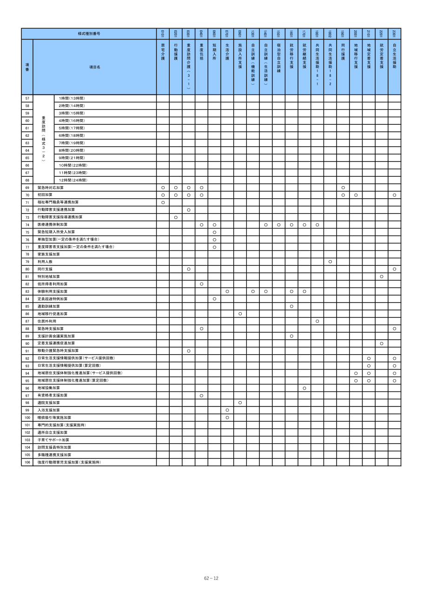
| 項番 | 項目名 | 属性 | 桁数 | 内容 | 必須 | 備考 | その他の列 |
|---|---|---|---|---|---|---|---|
| 57 | 重度訪問（様式３－２） > 1時間（13時間） | 0101 居宅介護:－ 0201 行動援護:－ 0301 重度訪問介護（様式３－１）:－ 0401 重度包括:－ 0601 短期入所:－ 0701 生活介護:－ 0901 施設入所支援:－ 1301 自立訓練（機能訓練）:－ 1401 自立訓練（生活訓練）:－ 1501 宿泊型自立訓練:－ 1601 就労移行支援:－ 1701 就労継続支援:－ 1801 共同生活援助（18－1）:－ 1802 共同生活援助（18－2）:－ 1901 同行援護:－ 2001 地域移行支援:－ 2101 地域定着支援:－ 2201 就労定着支援:－ 2301 自立生活援助:－ | 項目名 > 区分: 重度訪問（様式３－２） | ||||
| 58 | 重度訪問（様式３－２） > 2時間（14時間） | 0101 居宅介護:－ 0201 行動援護:－ 0301 重度訪問介護（様式３－１）:－ 0401 重度包括:－ 0601 短期入所:－ 0701 生活介護:－ 0901 施設入所支援:－ 1301 自立訓練（機能訓練）:－ 1401 自立訓練（生活訓練）:－ 1501 宿泊型自立訓練:－ 1601 就労移行支援:－ 1701 就労継続支援:－ 1801 共同生活援助（18－1）:－ 1802 共同生活援助（18－2）:－ 1901 同行援護:－ 2001 地域移行支援:－ 2101 地域定着支援:－ 2201 就労定着支援:－ 2301 自立生活援助:－ | 項目名 > 区分: 重度訪問（様式３－２） | ||||
| 59 | 重度訪問（様式３－２） > 3時間（15時間） | 0101 居宅介護:－ 0201 行動援護:－ 0301 重度訪問介護（様式３－１）:－ 0401 重度包括:－ 0601 短期入所:－ 0701 生活介護:－ 0901 施設入所支援:－ 1301 自立訓練（機能訓練）:－ 1401 自立訓練（生活訓練）:－ 1501 宿泊型自立訓練:－ 1601 就労移行支援:－ 1701 就労継続支援:－ 1801 共同生活援助（18－1）:－ 1802 共同生活援助（18－2）:－ 1901 同行援護:－ 2001 地域移行支援:－ 2101 地域定着支援:－ 2201 就労定着支援:－ 2301 自立生活援助:－ | 項目名 > 区分: 重度訪問（様式３－２） | ||||
| 60 | 重度訪問（様式３－２） > 4時間（16時間） | 0101 居宅介護:－ 0201 行動援護:－ 0301 重度訪問介護（様式３－１）:－ 0401 重度包括:－ 0601 短期入所:－ 0701 生活介護:－ 0901 施設入所支援:－ 1301 自立訓練（機能訓練）:－ 1401 自立訓練（生活訓練）:－ 1501 宿泊型自立訓練:－ 1601 就労移行支援:－ 1701 就労継続支援:－ 1801 共同生活援助（18－1）:－ 1802 共同生活援助（18－2）:－ 1901 同行援護:－ 2001 地域移行支援:－ 2101 地域定着支援:－ 2201 就労定着支援:－ 2301 自立生活援助:－ | 項目名 > 区分: 重度訪問（様式３－２） | ||||
| 61 | 重度訪問（様式３－２） > 5時間（17時間） | 0101 居宅介護:－ 0201 行動援護:－ 0301 重度訪問介護（様式３－１）:－ 0401 重度包括:－ 0601 短期入所:－ 0701 生活介護:－ 0901 施設入所支援:－ 1301 自立訓練（機能訓練）:－ 1401 自立訓練（生活訓練）:－ 1501 宿泊型自立訓練:－ 1601 就労移行支援:－ 1701 就労継続支援:－ 1801 共同生活援助（18－1）:－ 1802 共同生活援助（18－2）:－ 1901 同行援護:－ 2001 地域移行支援:－ 2101 地域定着支援:－ 2201 就労定着支援:－ 2301 自立生活援助:－ | 項目名 > 区分: 重度訪問（様式３－２） | ||||
| 62 | 重度訪問（様式３－２） > 6時間（18時間） | 0101 居宅介護:－ 0201 行動援護:－ 0301 重度訪問介護（様式３－１）:－ 0401 重度包括:－ 0601 短期入所:－ 0701 生活介護:－ 0901 施設入所支援:－ 1301 自立訓練（機能訓練）:－ 1401 自立訓練（生活訓練）:－ 1501 宿泊型自立訓練:－ 1601 就労移行支援:－ 1701 就労継続支援:－ 1801 共同生活援助（18－1）:－ 1802 共同生活援助（18－2）:－ 1901 同行援護:－ 2001 地域移行支援:－ 2101 地域定着支援:－ 2201 就労定着支援:－ 2301 自立生活援助:－ | 項目名 > 区分: 重度訪問（様式３－２） | ||||
| 63 | 重度訪問（様式３－２） > 7時間（19時間） | 0101 居宅介護:－ 0201 行動援護:－ 0301 重度訪問介護（様式３－１）:－ 0401 重度包括:－ 0601 短期入所:－ 0701 生活介護:－ 0901 施設入所支援:－ 1301 自立訓練（機能訓練）:－ 1401 自立訓練（生活訓練）:－ 1501 宿泊型自立訓練:－ 1601 就労移行支援:－ 1701 就労継続支援:－ 1801 共同生活援助（18－1）:－ 1802 共同生活援助（18－2）:－ 1901 同行援護:－ 2001 地域移行支援:－ 2101 地域定着支援:－ 2201 就労定着支援:－ 2301 自立生活援助:－ | 項目名 > 区分: 重度訪問（様式３－２） | ||||
| 64 | 重度訪問（様式３－２） > 8時間（20時間） | 0101 居宅介護:－ 0201 行動援護:－ 0301 重度訪問介護（様式３－１）:－ 0401 重度包括:－ 0601 短期入所:－ 0701 生活介護:－ 0901 施設入所支援:－ 1301 自立訓練（機能訓練）:－ 1401 自立訓練（生活訓練）:－ 1501 宿泊型自立訓練:－ 1601 就労移行支援:－ 1701 就労継続支援:－ 1801 共同生活援助（18－1）:－ 1802 共同生活援助（18－2）:－ 1901 同行援護:－ 2001 地域移行支援:－ 2101 地域定着支援:－ 2201 就労定着支援:－ 2301 自立生活援助:－ | 項目名 > 区分: 重度訪問（様式３－２） | ||||
| 65 | 重度訪問（様式３－２） > 9時間（21時間） | 0101 居宅介護:－ 0201 行動援護:－ 0301 重度訪問介護（様式３－１）:－ 0401 重度包括:－ 0601 短期入所:－ 0701 生活介護:－ 0901 施設入所支援:－ 1301 自立訓練（機能訓練）:－ 1401 自立訓練（生活訓練）:－ 1501 宿泊型自立訓練:－ 1601 就労移行支援:－ 1701 就労継続支援:－ 1801 共同生活援助（18－1）:－ 1802 共同生活援助（18－2）:－ 1901 同行援護:－ 2001 地域移行支援:－ 2101 地域定着支援:－ 2201 就労定着支援:－ 2301 自立生活援助:－ | 項目名 > 区分: 重度訪問（様式３－２） | ||||
| 66 | 重度訪問（様式３－２） > 10時間（22時間） | 0101 居宅介護:－ 0201 行動援護:－ 0301 重度訪問介護（様式３－１）:－ 0401 重度包括:－ 0601 短期入所:－ 0701 生活介護:－ 0901 施設入所支援:－ 1301 自立訓練（機能訓練）:－ 1401 自立訓練（生活訓練）:－ 1501 宿泊型自立訓練:－ 1601 就労移行支援:－ 1701 就労継続支援:－ 1801 共同生活援助（18－1）:－ 1802 共同生活援助（18－2）:－ 1901 同行援護:－ 2001 地域移行支援:－ 2101 地域定着支援:－ 2201 就労定着支援:－ 2301 自立生活援助:－ | 項目名 > 区分: 重度訪問（様式３－２） | ||||
| 67 | 重度訪問（様式３－２） > 11時間（23時間） | 0101 居宅介護:－ 0201 行動援護:－ 0301 重度訪問介護（様式３－１）:－ 0401 重度包括:－ 0601 短期入所:－ 0701 生活介護:－ 0901 施設入所支援:－ 1301 自立訓練（機能訓練）:－ 1401 自立訓練（生活訓練）:－ 1501 宿泊型自立訓練:－ 1601 就労移行支援:－ 1701 就労継続支援:－ 1801 共同生活援助（18－1）:－ 1802 共同生活援助（18－2）:－ 1901 同行援護:－ 2001 地域移行支援:－ 2101 地域定着支援:－ 2201 就労定着支援:－ 2301 自立生活援助:－ | 項目名 > 区分: 重度訪問（様式３－２） | ||||
| 68 | 重度訪問（様式３－２） > 12時間（24時間） | 0101 居宅介護:－ 0201 行動援護:－ 0301 重度訪問介護（様式３－１）:－ 0401 重度包括:－ 0601 短期入所:－ 0701 生活介護:－ 0901 施設入所支援:－ 1301 自立訓練（機能訓練）:－ 1401 自立訓練（生活訓練）:－ 1501 宿泊型自立訓練:－ 1601 就労移行支援:－ 1701 就労継続支援:－ 1801 共同生活援助（18－1）:－ 1802 共同生活援助（18－2）:－ 1901 同行援護:－ 2001 地域移行支援:－ 2101 地域定着支援:－ 2201 就労定着支援:－ 2301 自立生活援助:－ | 項目名 > 区分: 重度訪問（様式３－２） | ||||
| 69 | 緊急時対応加算 | 0101 居宅介護:○ 0201 行動援護:○ 0301 重度訪問介護（様式３－１）:○ 0401 重度包括:○ 0601 短期入所:－ 0701 生活介護:－ 0901 施設入所支援:－ 1301 自立訓練（機能訓練）:－ 1401 自立訓練（生活訓練）:－ 1501 宿泊型自立訓練:－ 1601 就労移行支援:－ 1701 就労継続支援:－ 1801 共同生活援助（18－1）:－ 1802 共同生活援助（18－2）:－ 1901 同行援護:○ 2001 地域移行支援:－ 2101 地域定着支援:－ 2201 就労定着支援:－ 2301 自立生活援助:－ | 項目名 > 区分: － | ||||
| 70 | 初回加算 | 0101 居宅介護:○ 0201 行動援護:○ 0301 重度訪問介護（様式３－１）:○ 0401 重度包括:○ 0601 短期入所:－ 0701 生活介護:－ 0901 施設入所支援:－ 1301 自立訓練（機能訓練）:－ 1401 自立訓練（生活訓練）:－ 1501 宿泊型自立訓練:－ 1601 就労移行支援:－ 1701 就労継続支援:－ 1801 共同生活援助（18－1）:－ 1802 共同生活援助（18－2）:－ 1901 同行援護:○ 2001 地域移行支援:○ 2101 地域定着支援:－ 2201 就労定着支援:－ 2301 自立生活援助:○ | 項目名 > 区分: － | ||||
| 71 | 福祉専門職員等連携加算 | 0101 居宅介護:○ 0201 行動援護:－ 0301 重度訪問介護（様式３－１）:－ 0401 重度包括:－ 0601 短期入所:－ 0701 生活介護:－ 0901 施設入所支援:－ 1301 自立訓練（機能訓練）:－ 1401 自立訓練（生活訓練）:－ 1501 宿泊型自立訓練:－ 1601 就労移行支援:－ 1701 就労継続支援:－ 1801 共同生活援助（18－1）:－ 1802 共同生活援助（18－2）:－ 1901 同行援護:－ 2001 地域移行支援:－ 2101 地域定着支援:－ 2201 就労定着支援:－ 2301 自立生活援助:－ | 項目名 > 区分: － | ||||
| 72 | 行動障害支援連携加算 | 0101 居宅介護:－ 0201 行動援護:－ 0301 重度訪問介護（様式３－１）:○ 0401 重度包括:－ 0601 短期入所:－ 0701 生活介護:－ 0901 施設入所支援:－ 1301 自立訓練（機能訓練）:－ 1401 自立訓練（生活訓練）:－ 1501 宿泊型自立訓練:－ 1601 就労移行支援:－ 1701 就労継続支援:－ 1801 共同生活援助（18－1）:－ 1802 共同生活援助（18－2）:－ 1901 同行援護:－ 2001 地域移行支援:－ 2101 地域定着支援:－ 2201 就労定着支援:－ 2301 自立生活援助:－ | 項目名 > 区分: － | ||||
| 73 | 行動障害支援指導連携加算 | 0101 居宅介護:－ 0201 行動援護:○ 0301 重度訪問介護（様式３－１）:－ 0401 重度包括:－ 0601 短期入所:－ 0701 生活介護:－ 0901 施設入所支援:－ 1301 自立訓練（機能訓練）:－ 1401 自立訓練（生活訓練）:－ 1501 宿泊型自立訓練:－ 1601 就労移行支援:－ 1701 就労継続支援:－ 1801 共同生活援助（18－1）:－ 1802 共同生活援助（18－2）:－ 1901 同行援護:－ 2001 地域移行支援:－ 2101 地域定着支援:－ 2201 就労定着支援:－ 2301 自立生活援助:－ | 項目名 > 区分: － | ||||
| 74 | 医療連携体制加算 | 0101 居宅介護:－ 0201 行動援護:－ 0301 重度訪問介護（様式３－１）:－ 0401 重度包括:○ 0601 短期入所:○ 0701 生活介護:－ 0901 施設入所支援:－ 1301 自立訓練（機能訓練）:－ 1401 自立訓練（生活訓練）:○ 1501 宿泊型自立訓練:○ 1601 就労移行支援:○ 1701 就労継続支援:○ 1801 共同生活援助（18－1）:○ 1802 共同生活援助（18－2）:－ 1901 同行援護:－ 2001 地域移行支援:－ 2101 地域定着支援:－ 2201 就労定着支援:－ 2301 自立生活援助:－ | 項目名 > 区分: － | ||||
| 75 | 緊急短期入所受入加算 | 0101 居宅介護:－ 0201 行動援護:－ 0301 重度訪問介護（様式３－１）:－ 0401 重度包括:－ 0601 短期入所:○ 0701 生活介護:－ 0901 施設入所支援:－ 1301 自立訓練（機能訓練）:－ 1401 自立訓練（生活訓練）:－ 1501 宿泊型自立訓練:－ 1601 就労移行支援:－ 1701 就労継続支援:－ 1801 共同生活援助（18－1）:－ 1802 共同生活援助（18－2）:－ 1901 同行援護:－ 2001 地域移行支援:－ 2101 地域定着支援:－ 2201 就労定着支援:－ 2301 自立生活援助:－ | 項目名 > 区分: － | ||||
| 76 | 単独型加算(一定の条件を満たす場合) | 0101 居宅介護:－ 0201 行動援護:－ 0301 重度訪問介護（様式３－１）:－ 0401 重度包括:－ 0601 短期入所:○ 0701 生活介護:－ 0901 施設入所支援:－ 1301 自立訓練（機能訓練）:－ 1401 自立訓練（生活訓練）:－ 1501 宿泊型自立訓練:－ 1601 就労移行支援:－ 1701 就労継続支援:－ 1801 共同生活援助（18－1）:－ 1802 共同生活援助（18－2）:－ 1901 同行援護:－ 2001 地域移行支援:－ 2101 地域定着支援:－ 2201 就労定着支援:－ 2301 自立生活援助:－ | 項目名 > 区分: － | ||||
| 77 | 重度障害者支援加算(一定の条件を満たす場合) | 0101 居宅介護:－ 0201 行動援護:－ 0301 重度訪問介護（様式３－１）:－ 0401 重度包括:－ 0601 短期入所:○ 0701 生活介護:－ 0901 施設入所支援:－ 1301 自立訓練（機能訓練）:－ 1401 自立訓練（生活訓練）:－ 1501 宿泊型自立訓練:－ 1601 就労移行支援:－ 1701 就労継続支援:－ 1801 共同生活援助（18－1）:－ 1802 共同生活援助（18－2）:－ 1901 同行援護:－ 2001 地域移行支援:－ 2101 地域定着支援:－ 2201 就労定着支援:－ 2301 自立生活援助:－ | 項目名 > 区分: － | ||||
| 78 | 家族支援加算 | 0101 居宅介護:－ 0201 行動援護:－ 0301 重度訪問介護（様式３－１）:－ 0401 重度包括:－ 0601 短期入所:－ 0701 生活介護:－ 0901 施設入所支援:－ 1301 自立訓練（機能訓練）:－ 1401 自立訓練（生活訓練）:－ 1501 宿泊型自立訓練:－ 1601 就労移行支援:－ 1701 就労継続支援:－ 1801 共同生活援助（18－1）:－ 1802 共同生活援助（18－2）:－ 1901 同行援護:－ 2001 地域移行支援:－ 2101 地域定着支援:－ 2201 就労定着支援:－ 2301 自立生活援助:－ | 項目名 > 区分: － | ||||
| 79 | 利用人数 | 0101 居宅介護:－ 0201 行動援護:－ 0301 重度訪問介護（様式３－１）:－ 0401 重度包括:－ 0601 短期入所:－ 0701 生活介護:－ 0901 施設入所支援:－ 1301 自立訓練（機能訓練）:－ 1401 自立訓練（生活訓練）:－ 1501 宿泊型自立訓練:－ 1601 就労移行支援:－ 1701 就労継続支援:－ 1801 共同生活援助（18－1）:－ 1802 共同生活援助（18－2）:○ 1901 同行援護:－ 2001 地域移行支援:－ 2101 地域定着支援:－ 2201 就労定着支援:－ 2301 自立生活援助:－ | 項目名 > 区分: － | ||||
| 80 | 同行支援 | 0101 居宅介護:－ 0201 行動援護:－ 0301 重度訪問介護（様式３－１）:○ 0401 重度包括:－ 0601 短期入所:－ 0701 生活介護:－ 0901 施設入所支援:－ 1301 自立訓練（機能訓練）:－ 1401 自立訓練（生活訓練）:－ 1501 宿泊型自立訓練:－ 1601 就労移行支援:－ 1701 就労継続支援:－ 1801 共同生活援助（18－1）:－ 1802 共同生活援助（18－2）:－ 1901 同行援護:－ 2001 地域移行支援:－ 2101 地域定着支援:－ 2201 就労定着支援:－ 2301 自立生活援助:○ | 項目名 > 区分: － | ||||
| 81 | 特別地域加算 | 0101 居宅介護:－ 0201 行動援護:－ 0301 重度訪問介護（様式３－１）:－ 0401 重度包括:－ 0601 短期入所:－ 0701 生活介護:－ 0901 施設入所支援:－ 1301 自立訓練（機能訓練）:－ 1401 自立訓練（生活訓練）:－ 1501 宿泊型自立訓練:－ 1601 就労移行支援:－ 1701 就労継続支援:－ 1801 共同生活援助（18－1）:－ 1802 共同生活援助（18－2）:－ 1901 同行援護:－ 2001 地域移行支援:－ 2101 地域定着支援:－ 2201 就労定着支援:○ 2301 自立生活援助:－ | 項目名 > 区分: － | ||||
| 82 | 低所得者利用加算 | 0101 居宅介護:－ 0201 行動援護:－ 0301 重度訪問介護（様式３－１）:－ 0401 重度包括:○ 0601 短期入所:－ 0701 生活介護:－ 0901 施設入所支援:－ 1301 自立訓練（機能訓練）:－ 1401 自立訓練（生活訓練）:－ 1501 宿泊型自立訓練:－ 1601 就労移行支援:－ 1701 就労継続支援:－ 1801 共同生活援助（18－1）:－ 1802 共同生活援助（18－2）:－ 1901 同行援護:－ 2001 地域移行支援:－ 2101 地域定着支援:－ 2201 就労定着支援:－ 2301 自立生活援助:－ | 項目名 > 区分: － | ||||
| 83 | 体験利用支援加算 | 0101 居宅介護:－ 0201 行動援護:－ 0301 重度訪問介護（様式３－１）:－ 0401 重度包括:－ 0601 短期入所:－ 0701 生活介護:○ 0901 施設入所支援:－ 1301 自立訓練（機能訓練）:○ 1401 自立訓練（生活訓練）:○ 1501 宿泊型自立訓練:－ 1601 就労移行支援:○ 1701 就労継続支援:○ 1801 共同生活援助（18－1）:－ 1802 共同生活援助（18－2）:－ 1901 同行援護:－ 2001 地域移行支援:－ 2101 地域定着支援:－ 2201 就労定着支援:－ 2301 自立生活援助:－ | 項目名 > 区分: － | ||||
| 84 | 定員超過特例加算 | 0101 居宅介護:－ 0201 行動援護:－ 0301 重度訪問介護（様式３－１）:－ 0401 重度包括:－ 0601 短期入所:○ 0701 生活介護:－ 0901 施設入所支援:－ 1301 自立訓練（機能訓練）:－ 1401 自立訓練（生活訓練）:－ 1501 宿泊型自立訓練:－ 1601 就労移行支援:－ 1701 就労継続支援:－ 1801 共同生活援助（18－1）:－ 1802 共同生活援助（18－2）:－ 1901 同行援護:－ 2001 地域移行支援:－ 2101 地域定着支援:－ 2201 就労定着支援:－ 2301 自立生活援助:－ | 項目名 > 区分: － | ||||
| 85 | 通勤訓練加算 | 0101 居宅介護:－ 0201 行動援護:－ 0301 重度訪問介護（様式３－１）:－ 0401 重度包括:－ 0601 短期入所:－ 0701 生活介護:－ 0901 施設入所支援:－ 1301 自立訓練（機能訓練）:－ 1401 自立訓練（生活訓練）:－ 1501 宿泊型自立訓練:－ 1601 就労移行支援:○ 1701 就労継続支援:－ 1801 共同生活援助（18－1）:－ 1802 共同生活援助（18－2）:－ 1901 同行援護:－ 2001 地域移行支援:－ 2101 地域定着支援:－ 2201 就労定着支援:－ 2301 自立生活援助:－ | 項目名 > 区分: － | ||||
| 86 | 地域移行促進加算 | 0101 居宅介護:－ 0201 行動援護:－ 0301 重度訪問介護（様式３－１）:－ 0401 重度包括:－ 0601 短期入所:－ 0701 生活介護:－ 0901 施設入所支援:○ 1301 自立訓練（機能訓練）:－ 1401 自立訓練（生活訓練）:－ 1501 宿泊型自立訓練:－ 1601 就労移行支援:－ 1701 就労継続支援:－ 1801 共同生活援助（18－1）:－ 1802 共同生活援助（18－2）:－ 1901 同行援護:－ 2001 地域移行支援:－ 2101 地域定着支援:－ 2201 就労定着支援:－ 2301 自立生活援助:－ | 項目名 > 区分: － | ||||
| 87 | 住居外利用 | 0101 居宅介護:－ 0201 行動援護:－ 0301 重度訪問介護（様式３－１）:－ 0401 重度包括:－ 0601 短期入所:－ 0701 生活介護:－ 0901 施設入所支援:－ 1301 自立訓練（機能訓練）:－ 1401 自立訓練（生活訓練）:－ 1501 宿泊型自立訓練:－ 1601 就労移行支援:－ 1701 就労継続支援:－ 1801 共同生活援助（18－1）:○ 1802 共同生活援助（18－2）:－ 1901 同行援護:－ 2001 地域移行支援:－ 2101 地域定着支援:－ 2201 就労定着支援:－ 2301 自立生活援助:－ | 項目名 > 区分: － | ||||
| 88 | 緊急時支援加算 | 0101 居宅介護:－ 0201 行動援護:－ 0301 重度訪問介護（様式３－１）:－ 0401 重度包括:○ 0601 短期入所:－ 0701 生活介護:－ 0901 施設入所支援:－ 1301 自立訓練（機能訓練）:－ 1401 自立訓練（生活訓練）:－ 1501 宿泊型自立訓練:－ 1601 就労移行支援:－ 1701 就労継続支援:－ 1801 共同生活援助（18－1）:－ 1802 共同生活援助（18－2）:－ 1901 同行援護:－ 2001 地域移行支援:－ 2101 地域定着支援:－ 2201 就労定着支援:－ 2301 自立生活援助:○ | 項目名 > 区分: － | ||||
| 89 | 支援計画会議実施加算 | 0101 居宅介護:－ 0201 行動援護:－ 0301 重度訪問介護（様式３－１）:－ 0401 重度包括:－ 0601 短期入所:－ 0701 生活介護:－ 0901 施設入所支援:－ 1301 自立訓練（機能訓練）:－ 1401 自立訓練（生活訓練）:－ 1501 宿泊型自立訓練:－ 1601 就労移行支援:○ 1701 就労継続支援:－ 1801 共同生活援助（18－1）:－ 1802 共同生活援助（18－2）:－ 1901 同行援護:－ 2001 地域移行支援:－ 2101 地域定着支援:－ 2201 就労定着支援:－ 2301 自立生活援助:－ | 項目名 > 区分: － | ||||
| 90 | 定着支援連携促進加算 | 0101 居宅介護:－ 0201 行動援護:－ 0301 重度訪問介護（様式３－１）:－ 0401 重度包括:－ 0601 短期入所:－ 0701 生活介護:－ 0901 施設入所支援:－ 1301 自立訓練（機能訓練）:－ 1401 自立訓練（生活訓練）:－ 1501 宿泊型自立訓練:－ 1601 就労移行支援:－ 1701 就労継続支援:－ 1801 共同生活援助（18－1）:－ 1802 共同生活援助（18－2）:－ 1901 同行援護:－ 2001 地域移行支援:－ 2101 地域定着支援:－ 2201 就労定着支援:○ 2301 自立生活援助:－ | 項目名 > 区分: － | ||||
| 91 | 移動介護緊急時支援加算 | 0101 居宅介護:－ 0201 行動援護:－ 0301 重度訪問介護（様式３－１）:○ 0401 重度包括:－ 0601 短期入所:－ 0701 生活介護:－ 0901 施設入所支援:－ 1301 自立訓練（機能訓練）:－ 1401 自立訓練（生活訓練）:－ 1501 宿泊型自立訓練:－ 1601 就労移行支援:－ 1701 就労継続支援:－ 1801 共同生活援助（18－1）:－ 1802 共同生活援助（18－2）:－ 1901 同行援護:－ 2001 地域移行支援:－ 2101 地域定着支援:－ 2201 就労定着支援:－ 2301 自立生活援助:－ | 項目名 > 区分: － | ||||
| 92 | 日常生活支援情報提供加算(サービス提供回数) | 0101 居宅介護:－ 0201 行動援護:－ 0301 重度訪問介護（様式３－１）:－ 0401 重度包括:－ 0601 短期入所:－ 0701 生活介護:－ 0901 施設入所支援:－ 1301 自立訓練（機能訓練）:－ 1401 自立訓練（生活訓練）:－ 1501 宿泊型自立訓練:－ 1601 就労移行支援:－ 1701 就労継続支援:－ 1801 共同生活援助（18－1）:－ 1802 共同生活援助（18－2）:－ 1901 同行援護:－ 2001 地域移行支援:－ 2101 地域定着支援:○ 2201 就労定着支援:－ 2301 自立生活援助:○ | 項目名 > 区分: － | ||||
| 93 | 日常生活支援情報提供加算(算定回数) | 0101 居宅介護:－ 0201 行動援護:－ 0301 重度訪問介護（様式３－１）:－ 0401 重度包括:－ 0601 短期入所:－ 0701 生活介護:－ 0901 施設入所支援:－ 1301 自立訓練（機能訓練）:－ 1401 自立訓練（生活訓練）:－ 1501 宿泊型自立訓練:－ 1601 就労移行支援:－ 1701 就労継続支援:－ 1801 共同生活援助（18－1）:－ 1802 共同生活援助（18－2）:－ 1901 同行援護:－ 2001 地域移行支援:－ 2101 地域定着支援:○ 2201 就労定着支援:－ 2301 自立生活援助:○ | 項目名 > 区分: － | ||||
| 94 | 地域居住支援体制強化推進加算(サービス提供回数) | 0101 居宅介護:－ 0201 行動援護:－ 0301 重度訪問介護（様式３－１）:－ 0401 重度包括:－ 0601 短期入所:－ 0701 生活介護:－ 0901 施設入所支援:－ 1301 自立訓練（機能訓練）:－ 1401 自立訓練（生活訓練）:－ 1501 宿泊型自立訓練:－ 1601 就労移行支援:－ 1701 就労継続支援:－ 1801 共同生活援助（18－1）:－ 1802 共同生活援助（18－2）:－ 1901 同行援護:－ 2001 地域移行支援:○ 2101 地域定着支援:○ 2201 就労定着支援:－ 2301 自立生活援助:○ | 項目名 > 区分: － | ||||
| 95 | 地域居住支援体制強化推進加算(算定回数) | 0101 居宅介護:－ 0201 行動援護:－ 0301 重度訪問介護（様式３－１）:－ 0401 重度包括:－ 0601 短期入所:－ 0701 生活介護:－ 0901 施設入所支援:－ 1301 自立訓練（機能訓練）:－ 1401 自立訓練（生活訓練）:－ 1501 宿泊型自立訓練:－ 1601 就労移行支援:－ 1701 就労継続支援:－ 1801 共同生活援助（18－1）:－ 1802 共同生活援助（18－2）:－ 1901 同行援護:－ 2001 地域移行支援:○ 2101 地域定着支援:○ 2201 就労定着支援:－ 2301 自立生活援助:○ | 項目名 > 区分: － | ||||
| 96 | 地域協働加算 | 0101 居宅介護:－ 0201 行動援護:－ 0301 重度訪問介護（様式３－１）:－ 0401 重度包括:－ 0601 短期入所:－ 0701 生活介護:－ 0901 施設入所支援:－ 1301 自立訓練（機能訓練）:－ 1401 自立訓練（生活訓練）:－ 1501 宿泊型自立訓練:－ 1601 就労移行支援:－ 1701 就労継続支援:○ 1801 共同生活援助（18－1）:－ 1802 共同生活援助（18－2）:－ 1901 同行援護:－ 2001 地域移行支援:－ 2101 地域定着支援:－ 2201 就労定着支援:－ 2301 自立生活援助:－ | 項目名 > 区分: － | ||||
| 97 | 有資格者支援加算 | 0101 居宅介護:－ 0201 行動援護:－ 0301 重度訪問介護（様式３－１）:－ 0401 重度包括:○ 0601 短期入所:－ 0701 生活介護:－ 0901 施設入所支援:－ 1301 自立訓練（機能訓練）:－ 1401 自立訓練（生活訓練）:－ 1501 宿泊型自立訓練:－ 1601 就労移行支援:－ 1701 就労継続支援:－ 1801 共同生活援助（18－1）:－ 1802 共同生活援助（18－2）:－ 1901 同行援護:－ 2001 地域移行支援:－ 2101 地域定着支援:－ 2201 就労定着支援:－ 2301 自立生活援助:－ | 項目名 > 区分: － | ||||
| 98 | 通院支援加算 | 0101 居宅介護:－ 0201 行動援護:－ 0301 重度訪問介護（様式３－１）:－ 0401 重度包括:－ 0601 短期入所:－ 0701 生活介護:○ 0901 施設入所支援:－ 1301 自立訓練（機能訓練）:－ 1401 自立訓練（生活訓練）:－ 1501 宿泊型自立訓練:－ 1601 就労移行支援:－ 1701 就労継続支援:－ 1801 共同生活援助（18－1）:－ 1802 共同生活援助（18－2）:－ 1901 同行援護:－ 2001 地域移行支援:－ 2101 地域定着支援:－ 2201 就労定着支援:－ 2301 自立生活援助:－ | 項目名 > 区分: － | ||||
| 99 | 入浴支援加算 | 0101 居宅介護:－ 0201 行動援護:－ 0301 重度訪問介護（様式３－１）:－ 0401 重度包括:－ 0601 短期入所:－ 0701 生活介護:○ 0901 施設入所支援:－ 1301 自立訓練（機能訓練）:－ 1401 自立訓練（生活訓練）:－ 1501 宿泊型自立訓練:－ 1601 就労移行支援:－ 1701 就労継続支援:－ 1801 共同生活援助（18－1）:－ 1802 共同生活援助（18－2）:－ 1901 同行援護:－ 2001 地域移行支援:－ 2101 地域定着支援:－ 2201 就労定着支援:－ 2301 自立生活援助:－ | 項目名 > 区分: － | ||||
| 100 | 喀痰吸引等実施加算 | 0101 居宅介護:－ 0201 行動援護:－ 0301 重度訪問介護（様式３－１）:－ 0401 重度包括:－ 0601 短期入所:－ 0701 生活介護:○ 0901 施設入所支援:－ 1301 自立訓練（機能訓練）:－ 1401 自立訓練（生活訓練）:－ 1501 宿泊型自立訓練:－ 1601 就労移行支援:－ 1701 就労継続支援:－ 1801 共同生活援助（18－1）:－ 1802 共同生活援助（18－2）:－ 1901 同行援護:－ 2001 地域移行支援:－ 2101 地域定着支援:－ 2201 就労定着支援:－ 2301 自立生活援助:－ | 項目名 > 区分: － | ||||
| 101 | 専門的支援加算(支援実施時) | 0101 居宅介護:－ 0201 行動援護:－ 0301 重度訪問介護（様式３－１）:－ 0401 重度包括:－ 0601 短期入所:－ 0701 生活介護:－ 0901 施設入所支援:－ 1301 自立訓練（機能訓練）:－ 1401 自立訓練（生活訓練）:－ 1501 宿泊型自立訓練:－ 1601 就労移行支援:－ 1701 就労継続支援:－ 1801 共同生活援助（18－1）:－ 1802 共同生活援助（18－2）:－ 1901 同行援護:－ 2001 地域移行支援:－ 2101 地域定着支援:－ 2201 就労定着支援:－ 2301 自立生活援助:－ | 項目名 > 区分: － | ||||
| 102 | 通所自立支援加算 | 0101 居宅介護:－ 0201 行動援護:－ 0301 重度訪問介護（様式３－１）:－ 0401 重度包括:－ 0601 短期入所:－ 0701 生活介護:－ 0901 施設入所支援:－ 1301 自立訓練（機能訓練）:－ 1401 自立訓練（生活訓練）:－ 1501 宿泊型自立訓練:－ 1601 就労移行支援:－ 1701 就労継続支援:－ 1801 共同生活援助（18－1）:－ 1802 共同生活援助（18－2）:－ 1901 同行援護:－ 2001 地域移行支援:－ 2101 地域定着支援:－ 2201 就労定着支援:－ 2301 自立生活援助:－ | 項目名 > 区分: － | ||||
| 103 | 子育てサポート加算 | 0101 居宅介護:－ 0201 行動援護:－ 0301 重度訪問介護（様式３－１）:－ 0401 重度包括:－ 0601 短期入所:－ 0701 生活介護:－ 0901 施設入所支援:－ 1301 自立訓練（機能訓練）:－ 1401 自立訓練（生活訓練）:－ 1501 宿泊型自立訓練:－ 1601 就労移行支援:－ 1701 就労継続支援:－ 1801 共同生活援助（18－1）:－ 1802 共同生活援助（18－2）:－ 1901 同行援護:－ 2001 地域移行支援:－ 2101 地域定着支援:－ 2201 就労定着支援:－ 2301 自立生活援助:－ | 項目名 > 区分: － | ||||
| 104 | 訪問支援員特別加算 | 0101 居宅介護:－ 0201 行動援護:－ 0301 重度訪問介護（様式３－１）:－ 0401 重度包括:－ 0601 短期入所:－ 0701 生活介護:－ 0901 施設入所支援:－ 1301 自立訓練（機能訓練）:－ 1401 自立訓練（生活訓練）:－ 1501 宿泊型自立訓練:－ 1601 就労移行支援:－ 1701 就労継続支援:－ 1801 共同生活援助（18－1）:－ 1802 共同生活援助（18－2）:－ 1901 同行援護:－ 2001 地域移行支援:－ 2101 地域定着支援:－ 2201 就労定着支援:－ 2301 自立生活援助:－ | 項目名 > 区分: － | ||||
| 105 | 多職種連携支援加算 | 0101 居宅介護:－ 0201 行動援護:－ 0301 重度訪問介護（様式３－１）:－ 0401 重度包括:－ 0601 短期入所:－ 0701 生活介護:－ 0901 施設入所支援:－ 1301 自立訓練（機能訓練）:－ 1401 自立訓練（生活訓練）:－ 1501 宿泊型自立訓練:－ 1601 就労移行支援:－ 1701 就労継続支援:－ 1801 共同生活援助（18－1）:－ 1802 共同生活援助（18－2）:－ 1901 同行援護:－ 2001 地域移行支援:－ 2101 地域定着支援:－ 2201 就労定着支援:－ 2301 自立生活援助:－ | 項目名 > 区分: － | ||||
| 106 | 強度行動障害児支援加算(支援実施時) | 0101 居宅介護:－ 0201 行動援護:－ 0301 重度訪問介護（様式３－１）:－ 0401 重度包括:－ 0601 短期入所:－ 0701 生活介護:－ 0901 施設入所支援:－ 1301 自立訓練（機能訓練）:－ 1401 自立訓練（生活訓練）:－ 1501 宿泊型自立訓練:－ 1601 就労移行支援:－ 1701 就労継続支援:－ 1801 共同生活援助（18－1）:－ 1802 共同生活援助（18－2）:－ 1901 同行援護:－ 2001 地域移行支援:－ 2101 地域定着支援:－ 2201 就労定着支援:－ 2301 自立生活援助:－ | 項目名 > 区分: － |
| 項番 | 項目名 | 属性 | 桁数 | 内容 | 必須 | 備考 | その他の列 |
|---|---|---|---|---|---|---|---|
| 57 | 重度訪問(様式3-2) > 1時間(13時間) | 0101 居宅介護:－ 0201 行動援護:－ 0301 重度訪問介護(3-1):－ 0401 重度包括:－ 0601 短期入所:－ 0701 生活介護:－ 0901 施設入所支援:－ 1301 自立訓練(機能訓練):－ 1401 自立訓練(生活訓練):－ 1501 宿泊型自立訓練:－ 1601 就労移行支援:－ 1701 就労継続支援:－ 1801 共同生活援助18-1:－ 1802 共同生活援助18-2:－ 1901 同行援護:－ 2001 地域移行支援:－ 2101 地域定着支援:－ 2201 就労定着支援:－ 2301 自立生活援助:－ | |||||
| 58 | 重度訪問(様式3-2) > 2時間(14時間) | 0101 居宅介護:－ 0201 行動援護:－ 0301 重度訪問介護(3-1):－ 0401 重度包括:－ 0601 短期入所:－ 0701 生活介護:－ 0901 施設入所支援:－ 1301 自立訓練(機能訓練):－ 1401 自立訓練(生活訓練):－ 1501 宿泊型自立訓練:－ 1601 就労移行支援:－ 1701 就労継続支援:－ 1801 共同生活援助18-1:－ 1802 共同生活援助18-2:－ 1901 同行援護:－ 2001 地域移行支援:－ 2101 地域定着支援:－ 2201 就労定着支援:－ 2301 自立生活援助:－ | |||||
| 69 | 緊急時対応加算 | 0101 居宅介護:○ 0201 行動援護:○ 0301 重度訪問介護(3-1):○ 0401 重度包括:○ 0601 短期入所:－ 0701 生活介護:－ 0901 施設入所支援:－ 1301 自立訓練(機能訓練):－ 1401 自立訓練(生活訓練):－ 1501 宿泊型自立訓練:－ 1601 就労移行支援:－ 1701 就労継続支援:－ 1801 共同生活援助18-1:－ 1802 共同生活援助18-2:－ 1901 同行援護:○ 2001 地域移行支援:－ 2101 地域定着支援:－ 2201 就労定着支援:－ 2301 自立生活援助:－ |
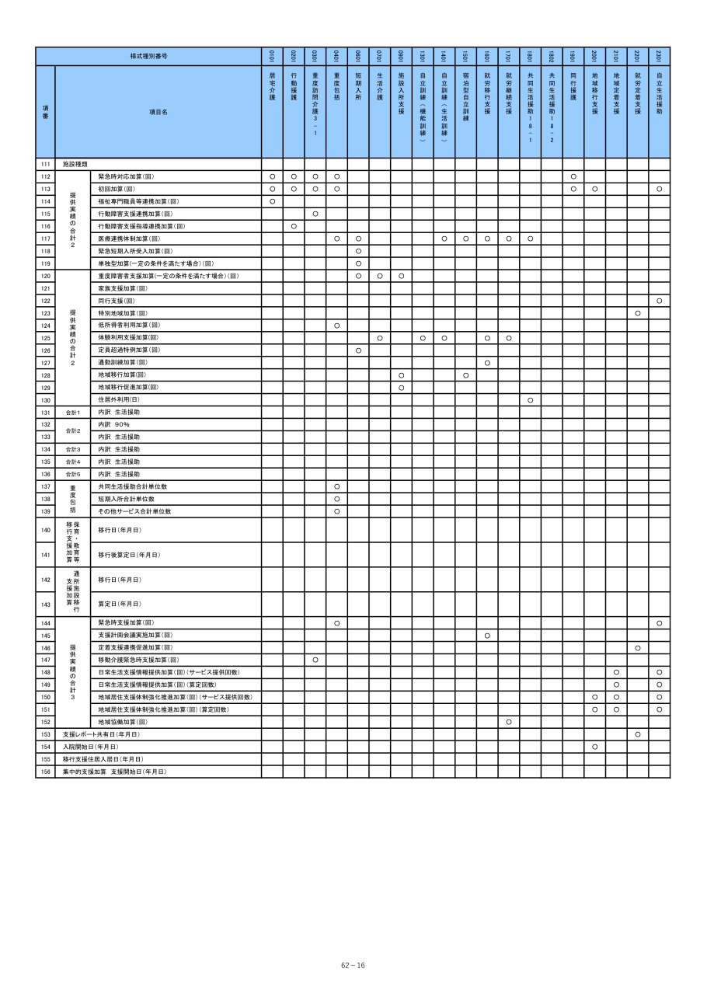
| 項番 | 項目名 | 属性 | 桁数 | 内容 | 必須 | 備考 | その他の列 |
|---|---|---|---|---|---|---|---|
| 111 | 施設種類 | 様式種別番号 > 0101 居宅介護:－ 様式種別番号 > 0201 行動援護:－ 様式種別番号 > 0301 重度訪問介護3-1:－ 様式種別番号 > 0401 重度包括:－ 様式種別番号 > 0601 短期入所:－ 様式種別番号 > 0701 生活介護:－ 様式種別番号 > 0901 施設入所支援:－ 様式種別番号 > 1301 自立訓練（機能訓練）:－ 様式種別番号 > 1401 自立訓練（生活訓練）:－ 様式種別番号 > 1501 宿泊型自立訓練:－ 様式種別番号 > 1601 就労移行支援:－ 様式種別番号 > 1701 就労継続支援:－ 様式種別番号 > 1801 共同生活援助1 8-1:－ 様式種別番号 > 1802 共同生活援助1 8-2:－ 様式種別番号 > 1901 同行援護:－ 様式種別番号 > 2001 地域移行支援:－ 様式種別番号 > 2101 地域定着支援:－ 様式種別番号 > 2201 就労定着支援:－ 様式種別番号 > 2301 自立生活援助:－ | |||||
| 112 | 提供実績の合計2 > 緊急時対応加算(回) | 様式種別番号 > 0101 居宅介護:○ 様式種別番号 > 0201 行動援護:○ 様式種別番号 > 0301 重度訪問介護3-1:○ 様式種別番号 > 0401 重度包括:○ 様式種別番号 > 0601 短期入所:－ 様式種別番号 > 0701 生活介護:－ 様式種別番号 > 0901 施設入所支援:－ 様式種別番号 > 1301 自立訓練（機能訓練）:－ 様式種別番号 > 1401 自立訓練（生活訓練）:－ 様式種別番号 > 1501 宿泊型自立訓練:－ 様式種別番号 > 1601 就労移行支援:－ 様式種別番号 > 1701 就労継続支援:－ 様式種別番号 > 1801 共同生活援助1 8-1:－ 様式種別番号 > 1802 共同生活援助1 8-2:－ 様式種別番号 > 1901 同行援護:○ 様式種別番号 > 2001 地域移行支援:－ 様式種別番号 > 2101 地域定着支援:－ 様式種別番号 > 2201 就労定着支援:－ 様式種別番号 > 2301 自立生活援助:－ | |||||
| 113 | 提供実績の合計2 > 初回加算(回) | 様式種別番号 > 0101 居宅介護:○ 様式種別番号 > 0201 行動援護:○ 様式種別番号 > 0301 重度訪問介護3-1:○ 様式種別番号 > 0401 重度包括:○ 様式種別番号 > 0601 短期入所:－ 様式種別番号 > 0701 生活介護:－ 様式種別番号 > 0901 施設入所支援:－ 様式種別番号 > 1301 自立訓練（機能訓練）:－ 様式種別番号 > 1401 自立訓練（生活訓練）:－ 様式種別番号 > 1501 宿泊型自立訓練:－ 様式種別番号 > 1601 就労移行支援:－ 様式種別番号 > 1701 就労継続支援:－ 様式種別番号 > 1801 共同生活援助1 8-1:－ 様式種別番号 > 1802 共同生活援助1 8-2:－ 様式種別番号 > 1901 同行援護:○ 様式種別番号 > 2001 地域移行支援:○ 様式種別番号 > 2101 地域定着支援:－ 様式種別番号 > 2201 就労定着支援:－ 様式種別番号 > 2301 自立生活援助:○ | |||||
| 114 | 提供実績の合計2 > 福祉専門職員等連携加算(回) | 様式種別番号 > 0101 居宅介護:○ 様式種別番号 > 0201 行動援護:－ 様式種別番号 > 0301 重度訪問介護3-1:－ 様式種別番号 > 0401 重度包括:－ 様式種別番号 > 0601 短期入所:－ 様式種別番号 > 0701 生活介護:－ 様式種別番号 > 0901 施設入所支援:－ 様式種別番号 > 1301 自立訓練（機能訓練）:－ 様式種別番号 > 1401 自立訓練（生活訓練）:－ 様式種別番号 > 1501 宿泊型自立訓練:－ 様式種別番号 > 1601 就労移行支援:－ 様式種別番号 > 1701 就労継続支援:－ 様式種別番号 > 1801 共同生活援助1 8-1:－ 様式種別番号 > 1802 共同生活援助1 8-2:－ 様式種別番号 > 1901 同行援護:－ 様式種別番号 > 2001 地域移行支援:－ 様式種別番号 > 2101 地域定着支援:－ 様式種別番号 > 2201 就労定着支援:－ 様式種別番号 > 2301 自立生活援助:－ | |||||
| 115 | 提供実績の合計2 > 行動障害支援連携加算(回) | 様式種別番号 > 0101 居宅介護:－ 様式種別番号 > 0201 行動援護:－ 様式種別番号 > 0301 重度訪問介護3-1:○ 様式種別番号 > 0401 重度包括:－ 様式種別番号 > 0601 短期入所:－ 様式種別番号 > 0701 生活介護:－ 様式種別番号 > 0901 施設入所支援:－ 様式種別番号 > 1301 自立訓練（機能訓練）:－ 様式種別番号 > 1401 自立訓練（生活訓練）:－ 様式種別番号 > 1501 宿泊型自立訓練:－ 様式種別番号 > 1601 就労移行支援:－ 様式種別番号 > 1701 就労継続支援:－ 様式種別番号 > 1801 共同生活援助1 8-1:－ 様式種別番号 > 1802 共同生活援助1 8-2:－ 様式種別番号 > 1901 同行援護:－ 様式種別番号 > 2001 地域移行支援:－ 様式種別番号 > 2101 地域定着支援:－ 様式種別番号 > 2201 就労定着支援:－ 様式種別番号 > 2301 自立生活援助:－ | |||||
| 116 | 提供実績の合計2 > 行動障害支援指導連携加算(回) | 様式種別番号 > 0101 居宅介護:－ 様式種別番号 > 0201 行動援護:○ 様式種別番号 > 0301 重度訪問介護3-1:－ 様式種別番号 > 0401 重度包括:－ 様式種別番号 > 0601 短期入所:－ 様式種別番号 > 0701 生活介護:－ 様式種別番号 > 0901 施設入所支援:－ 様式種別番号 > 1301 自立訓練（機能訓練）:－ 様式種別番号 > 1401 自立訓練（生活訓練）:－ 様式種別番号 > 1501 宿泊型自立訓練:－ 様式種別番号 > 1601 就労移行支援:－ 様式種別番号 > 1701 就労継続支援:－ 様式種別番号 > 1801 共同生活援助1 8-1:－ 様式種別番号 > 1802 共同生活援助1 8-2:－ 様式種別番号 > 1901 同行援護:－ 様式種別番号 > 2001 地域移行支援:－ 様式種別番号 > 2101 地域定着支援:－ 様式種別番号 > 2201 就労定着支援:－ 様式種別番号 > 2301 自立生活援助:－ | |||||
| 117 | 提供実績の合計2 > 医療連携体制加算(回) | 様式種別番号 > 0101 居宅介護:－ 様式種別番号 > 0201 行動援護:－ 様式種別番号 > 0301 重度訪問介護3-1:－ 様式種別番号 > 0401 重度包括:○ 様式種別番号 > 0601 短期入所:○ 様式種別番号 > 0701 生活介護:－ 様式種別番号 > 0901 施設入所支援:－ 様式種別番号 > 1301 自立訓練（機能訓練）:－ 様式種別番号 > 1401 自立訓練（生活訓練）:○ 様式種別番号 > 1501 宿泊型自立訓練:○ 様式種別番号 > 1601 就労移行支援:○ 様式種別番号 > 1701 就労継続支援:○ 様式種別番号 > 1801 共同生活援助1 8-1:○ 様式種別番号 > 1802 共同生活援助1 8-2:－ 様式種別番号 > 1901 同行援護:－ 様式種別番号 > 2001 地域移行支援:－ 様式種別番号 > 2101 地域定着支援:－ 様式種別番号 > 2201 就労定着支援:－ 様式種別番号 > 2301 自立生活援助:－ | |||||
| 118 | 提供実績の合計2 > 緊急短期入所受入加算(回) | 様式種別番号 > 0101 居宅介護:－ 様式種別番号 > 0201 行動援護:－ 様式種別番号 > 0301 重度訪問介護3-1:－ 様式種別番号 > 0401 重度包括:－ 様式種別番号 > 0601 短期入所:○ 様式種別番号 > 0701 生活介護:－ 様式種別番号 > 0901 施設入所支援:－ 様式種別番号 > 1301 自立訓練（機能訓練）:－ 様式種別番号 > 1401 自立訓練（生活訓練）:－ 様式種別番号 > 1501 宿泊型自立訓練:－ 様式種別番号 > 1601 就労移行支援:－ 様式種別番号 > 1701 就労継続支援:－ 様式種別番号 > 1801 共同生活援助1 8-1:－ 様式種別番号 > 1802 共同生活援助1 8-2:－ 様式種別番号 > 1901 同行援護:－ 様式種別番号 > 2001 地域移行支援:－ 様式種別番号 > 2101 地域定着支援:－ 様式種別番号 > 2201 就労定着支援:－ 様式種別番号 > 2301 自立生活援助:－ | |||||
| 119 | 提供実績の合計2 > 単独型加算(一定の条件を満たす場合)(回) | 様式種別番号 > 0101 居宅介護:－ 様式種別番号 > 0201 行動援護:－ 様式種別番号 > 0301 重度訪問介護3-1:－ 様式種別番号 > 0401 重度包括:－ 様式種別番号 > 0601 短期入所:○ 様式種別番号 > 0701 生活介護:－ 様式種別番号 > 0901 施設入所支援:－ 様式種別番号 > 1301 自立訓練（機能訓練）:－ 様式種別番号 > 1401 自立訓練（生活訓練）:－ 様式種別番号 > 1501 宿泊型自立訓練:－ 様式種別番号 > 1601 就労移行支援:－ 様式種別番号 > 1701 就労継続支援:－ 様式種別番号 > 1801 共同生活援助1 8-1:－ 様式種別番号 > 1802 共同生活援助1 8-2:－ 様式種別番号 > 1901 同行援護:－ 様式種別番号 > 2001 地域移行支援:－ 様式種別番号 > 2101 地域定着支援:－ 様式種別番号 > 2201 就労定着支援:－ 様式種別番号 > 2301 自立生活援助:－ | |||||
| 120 | 提供実績の合計2 > 重度障害者支援加算(一定の条件を満たす場合)(回) | 様式種別番号 > 0101 居宅介護:－ 様式種別番号 > 0201 行動援護:－ 様式種別番号 > 0301 重度訪問介護3-1:－ 様式種別番号 > 0401 重度包括:－ 様式種別番号 > 0601 短期入所:○ 様式種別番号 > 0701 生活介護:○ 様式種別番号 > 0901 施設入所支援:○ 様式種別番号 > 1301 自立訓練（機能訓練）:－ 様式種別番号 > 1401 自立訓練（生活訓練）:－ 様式種別番号 > 1501 宿泊型自立訓練:－ 様式種別番号 > 1601 就労移行支援:－ 様式種別番号 > 1701 就労継続支援:－ 様式種別番号 > 1801 共同生活援助1 8-1:－ 様式種別番号 > 1802 共同生活援助1 8-2:－ 様式種別番号 > 1901 同行援護:－ 様式種別番号 > 2001 地域移行支援:－ 様式種別番号 > 2101 地域定着支援:－ 様式種別番号 > 2201 就労定着支援:－ 様式種別番号 > 2301 自立生活援助:－ | |||||
| 121 | 提供実績の合計2 > 家族支援加算(回) | 様式種別番号 > 0101 居宅介護:－ 様式種別番号 > 0201 行動援護:－ 様式種別番号 > 0301 重度訪問介護3-1:－ 様式種別番号 > 0401 重度包括:－ 様式種別番号 > 0601 短期入所:－ 様式種別番号 > 0701 生活介護:－ 様式種別番号 > 0901 施設入所支援:－ 様式種別番号 > 1301 自立訓練（機能訓練）:－ 様式種別番号 > 1401 自立訓練（生活訓練）:－ 様式種別番号 > 1501 宿泊型自立訓練:－ 様式種別番号 > 1601 就労移行支援:－ 様式種別番号 > 1701 就労継続支援:－ 様式種別番号 > 1801 共同生活援助1 8-1:－ 様式種別番号 > 1802 共同生活援助1 8-2:－ 様式種別番号 > 1901 同行援護:－ 様式種別番号 > 2001 地域移行支援:－ 様式種別番号 > 2101 地域定着支援:－ 様式種別番号 > 2201 就労定着支援:－ 様式種別番号 > 2301 自立生活援助:－ | |||||
| 122 | 提供実績の合計2 > 同行支援(回) | 様式種別番号 > 0101 居宅介護:－ 様式種別番号 > 0201 行動援護:－ 様式種別番号 > 0301 重度訪問介護3-1:－ 様式種別番号 > 0401 重度包括:－ 様式種別番号 > 0601 短期入所:－ 様式種別番号 > 0701 生活介護:－ 様式種別番号 > 0901 施設入所支援:－ 様式種別番号 > 1301 自立訓練（機能訓練）:－ 様式種別番号 > 1401 自立訓練（生活訓練）:－ 様式種別番号 > 1501 宿泊型自立訓練:－ 様式種別番号 > 1601 就労移行支援:－ 様式種別番号 > 1701 就労継続支援:－ 様式種別番号 > 1801 共同生活援助1 8-1:－ 様式種別番号 > 1802 共同生活援助1 8-2:－ 様式種別番号 > 1901 同行援護:－ 様式種別番号 > 2001 地域移行支援:－ 様式種別番号 > 2101 地域定着支援:－ 様式種別番号 > 2201 就労定着支援:－ 様式種別番号 > 2301 自立生活援助:○ | |||||
| 123 | 提供実績の合計2 > 特別地域加算(回) | 様式種別番号 > 0101 居宅介護:－ 様式種別番号 > 0201 行動援護:－ 様式種別番号 > 0301 重度訪問介護3-1:－ 様式種別番号 > 0401 重度包括:－ 様式種別番号 > 0601 短期入所:－ 様式種別番号 > 0701 生活介護:－ 様式種別番号 > 0901 施設入所支援:－ 様式種別番号 > 1301 自立訓練（機能訓練）:－ 様式種別番号 > 1401 自立訓練（生活訓練）:－ 様式種別番号 > 1501 宿泊型自立訓練:－ 様式種別番号 > 1601 就労移行支援:－ 様式種別番号 > 1701 就労継続支援:－ 様式種別番号 > 1801 共同生活援助1 8-1:－ 様式種別番号 > 1802 共同生活援助1 8-2:－ 様式種別番号 > 1901 同行援護:－ 様式種別番号 > 2001 地域移行支援:－ 様式種別番号 > 2101 地域定着支援:－ 様式種別番号 > 2201 就労定着支援:○ 様式種別番号 > 2301 自立生活援助:－ | |||||
| 124 | 提供実績の合計2 > 低所得者利用加算(回) | 様式種別番号 > 0101 居宅介護:－ 様式種別番号 > 0201 行動援護:－ 様式種別番号 > 0301 重度訪問介護3-1:－ 様式種別番号 > 0401 重度包括:○ 様式種別番号 > 0601 短期入所:－ 様式種別番号 > 0701 生活介護:－ 様式種別番号 > 0901 施設入所支援:－ 様式種別番号 > 1301 自立訓練（機能訓練）:－ 様式種別番号 > 1401 自立訓練（生活訓練）:－ 様式種別番号 > 1501 宿泊型自立訓練:－ 様式種別番号 > 1601 就労移行支援:－ 様式種別番号 > 1701 就労継続支援:－ 様式種別番号 > 1801 共同生活援助1 8-1:－ 様式種別番号 > 1802 共同生活援助1 8-2:－ 様式種別番号 > 1901 同行援護:－ 様式種別番号 > 2001 地域移行支援:－ 様式種別番号 > 2101 地域定着支援:－ 様式種別番号 > 2201 就労定着支援:－ 様式種別番号 > 2301 自立生活援助:－ | |||||
| 125 | 提供実績の合計2 > 体験利用支援加算(回) | 様式種別番号 > 0101 居宅介護:－ 様式種別番号 > 0201 行動援護:－ 様式種別番号 > 0301 重度訪問介護3-1:－ 様式種別番号 > 0401 重度包括:－ 様式種別番号 > 0601 短期入所:－ 様式種別番号 > 0701 生活介護:○ 様式種別番号 > 0901 施設入所支援:－ 様式種別番号 > 1301 自立訓練（機能訓練）:○ 様式種別番号 > 1401 自立訓練（生活訓練）:○ 様式種別番号 > 1501 宿泊型自立訓練:－ 様式種別番号 > 1601 就労移行支援:○ 様式種別番号 > 1701 就労継続支援:○ 様式種別番号 > 1801 共同生活援助1 8-1:－ 様式種別番号 > 1802 共同生活援助1 8-2:－ 様式種別番号 > 1901 同行援護:－ 様式種別番号 > 2001 地域移行支援:－ 様式種別番号 > 2101 地域定着支援:－ 様式種別番号 > 2201 就労定着支援:－ 様式種別番号 > 2301 自立生活援助:－ | |||||
| 126 | 提供実績の合計2 > 定員超過特例加算(回) | 様式種別番号 > 0101 居宅介護:－ 様式種別番号 > 0201 行動援護:－ 様式種別番号 > 0301 重度訪問介護3-1:－ 様式種別番号 > 0401 重度包括:－ 様式種別番号 > 0601 短期入所:○ 様式種別番号 > 0701 生活介護:－ 様式種別番号 > 0901 施設入所支援:－ 様式種別番号 > 1301 自立訓練（機能訓練）:－ 様式種別番号 > 1401 自立訓練（生活訓練）:－ 様式種別番号 > 1501 宿泊型自立訓練:－ 様式種別番号 > 1601 就労移行支援:－ 様式種別番号 > 1701 就労継続支援:－ 様式種別番号 > 1801 共同生活援助1 8-1:－ 様式種別番号 > 1802 共同生活援助1 8-2:－ 様式種別番号 > 1901 同行援護:－ 様式種別番号 > 2001 地域移行支援:－ 様式種別番号 > 2101 地域定着支援:－ 様式種別番号 > 2201 就労定着支援:－ 様式種別番号 > 2301 自立生活援助:－ | |||||
| 127 | 提供実績の合計2 > 通勤訓練加算(回) | 様式種別番号 > 0101 居宅介護:－ 様式種別番号 > 0201 行動援護:－ 様式種別番号 > 0301 重度訪問介護3-1:－ 様式種別番号 > 0401 重度包括:－ 様式種別番号 > 0601 短期入所:－ 様式種別番号 > 0701 生活介護:－ 様式種別番号 > 0901 施設入所支援:－ 様式種別番号 > 1301 自立訓練（機能訓練）:－ 様式種別番号 > 1401 自立訓練（生活訓練）:－ 様式種別番号 > 1501 宿泊型自立訓練:－ 様式種別番号 > 1601 就労移行支援:○ 様式種別番号 > 1701 就労継続支援:－ 様式種別番号 > 1801 共同生活援助1 8-1:－ 様式種別番号 > 1802 共同生活援助1 8-2:－ 様式種別番号 > 1901 同行援護:－ 様式種別番号 > 2001 地域移行支援:－ 様式種別番号 > 2101 地域定着支援:－ 様式種別番号 > 2201 就労定着支援:－ 様式種別番号 > 2301 自立生活援助:－ | |||||
| 128 | 提供実績の合計2 > 地域移行加算(回) | 様式種別番号 > 0101 居宅介護:－ 様式種別番号 > 0201 行動援護:－ 様式種別番号 > 0301 重度訪問介護3-1:－ 様式種別番号 > 0401 重度包括:－ 様式種別番号 > 0601 短期入所:－ 様式種別番号 > 0701 生活介護:－ 様式種別番号 > 0901 施設入所支援:○ 様式種別番号 > 1301 自立訓練（機能訓練）:－ 様式種別番号 > 1401 自立訓練（生活訓練）:－ 様式種別番号 > 1501 宿泊型自立訓練:○ 様式種別番号 > 1601 就労移行支援:－ 様式種別番号 > 1701 就労継続支援:－ 様式種別番号 > 1801 共同生活援助1 8-1:－ 様式種別番号 > 1802 共同生活援助1 8-2:－ 様式種別番号 > 1901 同行援護:－ 様式種別番号 > 2001 地域移行支援:－ 様式種別番号 > 2101 地域定着支援:－ 様式種別番号 > 2201 就労定着支援:－ 様式種別番号 > 2301 自立生活援助:－ | |||||
| 129 | 提供実績の合計2 > 地域移行促進加算(回) | 様式種別番号 > 0101 居宅介護:－ 様式種別番号 > 0201 行動援護:－ 様式種別番号 > 0301 重度訪問介護3-1:－ 様式種別番号 > 0401 重度包括:－ 様式種別番号 > 0601 短期入所:－ 様式種別番号 > 0701 生活介護:－ 様式種別番号 > 0901 施設入所支援:○ 様式種別番号 > 1301 自立訓練（機能訓練）:－ 様式種別番号 > 1401 自立訓練（生活訓練）:－ 様式種別番号 > 1501 宿泊型自立訓練:－ 様式種別番号 > 1601 就労移行支援:－ 様式種別番号 > 1701 就労継続支援:－ 様式種別番号 > 1801 共同生活援助1 8-1:－ 様式種別番号 > 1802 共同生活援助1 8-2:－ 様式種別番号 > 1901 同行援護:－ 様式種別番号 > 2001 地域移行支援:－ 様式種別番号 > 2101 地域定着支援:－ 様式種別番号 > 2201 就労定着支援:－ 様式種別番号 > 2301 自立生活援助:－ | |||||
| 130 | 提供実績の合計2 > 住居外利用(日) | 様式種別番号 > 0101 居宅介護:－ 様式種別番号 > 0201 行動援護:－ 様式種別番号 > 0301 重度訪問介護3-1:－ 様式種別番号 > 0401 重度包括:－ 様式種別番号 > 0601 短期入所:－ 様式種別番号 > 0701 生活介護:－ 様式種別番号 > 0901 施設入所支援:－ 様式種別番号 > 1301 自立訓練（機能訓練）:－ 様式種別番号 > 1401 自立訓練（生活訓練）:－ 様式種別番号 > 1501 宿泊型自立訓練:－ 様式種別番号 > 1601 就労移行支援:－ 様式種別番号 > 1701 就労継続支援:－ 様式種別番号 > 1801 共同生活援助1 8-1:○ 様式種別番号 > 1802 共同生活援助1 8-2:－ 様式種別番号 > 1901 同行援護:－ 様式種別番号 > 2001 地域移行支援:－ 様式種別番号 > 2101 地域定着支援:－ 様式種別番号 > 2201 就労定着支援:－ 様式種別番号 > 2301 自立生活援助:－ | |||||
| 131 | 合計1 > 内訳 生活援助 | 様式種別番号 > 0101 居宅介護:－ 様式種別番号 > 0201 行動援護:－ 様式種別番号 > 0301 重度訪問介護3-1:－ 様式種別番号 > 0401 重度包括:－ 様式種別番号 > 0601 短期入所:－ 様式種別番号 > 0701 生活介護:－ 様式種別番号 > 0901 施設入所支援:－ 様式種別番号 > 1301 自立訓練（機能訓練）:－ 様式種別番号 > 1401 自立訓練（生活訓練）:－ 様式種別番号 > 1501 宿泊型自立訓練:－ 様式種別番号 > 1601 就労移行支援:－ 様式種別番号 > 1701 就労継続支援:－ 様式種別番号 > 1801 共同生活援助1 8-1:－ 様式種別番号 > 1802 共同生活援助1 8-2:－ 様式種別番号 > 1901 同行援護:－ 様式種別番号 > 2001 地域移行支援:－ 様式種別番号 > 2101 地域定着支援:－ 様式種別番号 > 2201 就労定着支援:－ 様式種別番号 > 2301 自立生活援助:－ | |||||
| 132 | 合計2 > 内訳 90% | 様式種別番号 > 0101 居宅介護:－ 様式種別番号 > 0201 行動援護:－ 様式種別番号 > 0301 重度訪問介護3-1:－ 様式種別番号 > 0401 重度包括:－ 様式種別番号 > 0601 短期入所:－ 様式種別番号 > 0701 生活介護:－ 様式種別番号 > 0901 施設入所支援:－ 様式種別番号 > 1301 自立訓練（機能訓練）:－ 様式種別番号 > 1401 自立訓練（生活訓練）:－ 様式種別番号 > 1501 宿泊型自立訓練:－ 様式種別番号 > 1601 就労移行支援:－ 様式種別番号 > 1701 就労継続支援:－ 様式種別番号 > 1801 共同生活援助1 8-1:－ 様式種別番号 > 1802 共同生活援助1 8-2:－ 様式種別番号 > 1901 同行援護:－ 様式種別番号 > 2001 地域移行支援:－ 様式種別番号 > 2101 地域定着支援:－ 様式種別番号 > 2201 就労定着支援:－ 様式種別番号 > 2301 自立生活援助:－ | |||||
| 133 | 合計2 > 内訳 生活援助 | 様式種別番号 > 0101 居宅介護:－ 様式種別番号 > 0201 行動援護:－ 様式種別番号 > 0301 重度訪問介護3-1:－ 様式種別番号 > 0401 重度包括:－ 様式種別番号 > 0601 短期入所:－ 様式種別番号 > 0701 生活介護:－ 様式種別番号 > 0901 施設入所支援:－ 様式種別番号 > 1301 自立訓練（機能訓練）:－ 様式種別番号 > 1401 自立訓練（生活訓練）:－ 様式種別番号 > 1501 宿泊型自立訓練:－ 様式種別番号 > 1601 就労移行支援:－ 様式種別番号 > 1701 就労継続支援:－ 様式種別番号 > 1801 共同生活援助1 8-1:－ 様式種別番号 > 1802 共同生活援助1 8-2:－ 様式種別番号 > 1901 同行援護:－ 様式種別番号 > 2001 地域移行支援:－ 様式種別番号 > 2101 地域定着支援:－ 様式種別番号 > 2201 就労定着支援:－ 様式種別番号 > 2301 自立生活援助:－ | |||||
| 134 | 合計3 > 内訳 生活援助 | 様式種別番号 > 0101 居宅介護:－ 様式種別番号 > 0201 行動援護:－ 様式種別番号 > 0301 重度訪問介護3-1:－ 様式種別番号 > 0401 重度包括:－ 様式種別番号 > 0601 短期入所:－ 様式種別番号 > 0701 生活介護:－ 様式種別番号 > 0901 施設入所支援:－ 様式種別番号 > 1301 自立訓練（機能訓練）:－ 様式種別番号 > 1401 自立訓練（生活訓練）:－ 様式種別番号 > 1501 宿泊型自立訓練:－ 様式種別番号 > 1601 就労移行支援:－ 様式種別番号 > 1701 就労継続支援:－ 様式種別番号 > 1801 共同生活援助1 8-1:－ 様式種別番号 > 1802 共同生活援助1 8-2:－ 様式種別番号 > 1901 同行援護:－ 様式種別番号 > 2001 地域移行支援:－ 様式種別番号 > 2101 地域定着支援:－ 様式種別番号 > 2201 就労定着支援:－ 様式種別番号 > 2301 自立生活援助:－ | |||||
| 135 | 合計4 > 内訳 生活援助 | 様式種別番号 > 0101 居宅介護:－ 様式種別番号 > 0201 行動援護:－ 様式種別番号 > 0301 重度訪問介護3-1:－ 様式種別番号 > 0401 重度包括:－ 様式種別番号 > 0601 短期入所:－ 様式種別番号 > 0701 生活介護:－ 様式種別番号 > 0901 施設入所支援:－ 様式種別番号 > 1301 自立訓練（機能訓練）:－ 様式種別番号 > 1401 自立訓練（生活訓練）:－ 様式種別番号 > 1501 宿泊型自立訓練:－ 様式種別番号 > 1601 就労移行支援:－ 様式種別番号 > 1701 就労継続支援:－ 様式種別番号 > 1801 共同生活援助1 8-1:－ 様式種別番号 > 1802 共同生活援助1 8-2:－ 様式種別番号 > 1901 同行援護:－ 様式種別番号 > 2001 地域移行支援:－ 様式種別番号 > 2101 地域定着支援:－ 様式種別番号 > 2201 就労定着支援:－ 様式種別番号 > 2301 自立生活援助:－ | |||||
| 136 | 合計5 > 内訳 生活援助 | 様式種別番号 > 0101 居宅介護:－ 様式種別番号 > 0201 行動援護:－ 様式種別番号 > 0301 重度訪問介護3-1:－ 様式種別番号 > 0401 重度包括:－ 様式種別番号 > 0601 短期入所:－ 様式種別番号 > 0701 生活介護:－ 様式種別番号 > 0901 施設入所支援:－ 様式種別番号 > 1301 自立訓練（機能訓練）:－ 様式種別番号 > 1401 自立訓練（生活訓練）:－ 様式種別番号 > 1501 宿泊型自立訓練:－ 様式種別番号 > 1601 就労移行支援:－ 様式種別番号 > 1701 就労継続支援:－ 様式種別番号 > 1801 共同生活援助1 8-1:－ 様式種別番号 > 1802 共同生活援助1 8-2:－ 様式種別番号 > 1901 同行援護:－ 様式種別番号 > 2001 地域移行支援:－ 様式種別番号 > 2101 地域定着支援:－ 様式種別番号 > 2201 就労定着支援:－ 様式種別番号 > 2301 自立生活援助:－ | |||||
| 137 | 重度包括 > 共同生活援助合計単位数 | 様式種別番号 > 0101 居宅介護:－ 様式種別番号 > 0201 行動援護:－ 様式種別番号 > 0301 重度訪問介護3-1:－ 様式種別番号 > 0401 重度包括:○ 様式種別番号 > 0601 短期入所:－ 様式種別番号 > 0701 生活介護:－ 様式種別番号 > 0901 施設入所支援:－ 様式種別番号 > 1301 自立訓練（機能訓練）:－ 様式種別番号 > 1401 自立訓練（生活訓練）:－ 様式種別番号 > 1501 宿泊型自立訓練:－ 様式種別番号 > 1601 就労移行支援:－ 様式種別番号 > 1701 就労継続支援:－ 様式種別番号 > 1801 共同生活援助1 8-1:－ 様式種別番号 > 1802 共同生活援助1 8-2:－ 様式種別番号 > 1901 同行援護:－ 様式種別番号 > 2001 地域移行支援:－ 様式種別番号 > 2101 地域定着支援:－ 様式種別番号 > 2201 就労定着支援:－ 様式種別番号 > 2301 自立生活援助:－ | |||||
| 138 | 重度包括 > 短期入所合計単位数 | 様式種別番号 > 0101 居宅介護:－ 様式種別番号 > 0201 行動援護:－ 様式種別番号 > 0301 重度訪問介護3-1:－ 様式種別番号 > 0401 重度包括:○ 様式種別番号 > 0601 短期入所:－ 様式種別番号 > 0701 生活介護:－ 様式種別番号 > 0901 施設入所支援:－ 様式種別番号 > 1301 自立訓練（機能訓練）:－ 様式種別番号 > 1401 自立訓練（生活訓練）:－ 様式種別番号 > 1501 宿泊型自立訓練:－ 様式種別番号 > 1601 就労移行支援:－ 様式種別番号 > 1701 就労継続支援:－ 様式種別番号 > 1801 共同生活援助1 8-1:－ 様式種別番号 > 1802 共同生活援助1 8-2:－ 様式種別番号 > 1901 同行援護:－ 様式種別番号 > 2001 地域移行支援:－ 様式種別番号 > 2101 地域定着支援:－ 様式種別番号 > 2201 就労定着支援:－ 様式種別番号 > 2301 自立生活援助:－ | |||||
| 139 | 重度包括 > その他サービス合計単位数 | 様式種別番号 > 0101 居宅介護:－ 様式種別番号 > 0201 行動援護:－ 様式種別番号 > 0301 重度訪問介護3-1:－ 様式種別番号 > 0401 重度包括:○ 様式種別番号 > 0601 短期入所:－ 様式種別番号 > 0701 生活介護:－ 様式種別番号 > 0901 施設入所支援:－ 様式種別番号 > 1301 自立訓練（機能訓練）:－ 様式種別番号 > 1401 自立訓練（生活訓練）:－ 様式種別番号 > 1501 宿泊型自立訓練:－ 様式種別番号 > 1601 就労移行支援:－ 様式種別番号 > 1701 就労継続支援:－ 様式種別番号 > 1801 共同生活援助1 8-1:－ 様式種別番号 > 1802 共同生活援助1 8-2:－ 様式種別番号 > 1901 同行援護:－ 様式種別番号 > 2001 地域移行支援:－ 様式種別番号 > 2101 地域定着支援:－ 様式種別番号 > 2201 就労定着支援:－ 様式種別番号 > 2301 自立生活援助:－ | |||||
| 140 | 移保行育支・援教加算等 > 移行日(年月日) | 様式種別番号 > 0101 居宅介護:－ 様式種別番号 > 0201 行動援護:－ 様式種別番号 > 0301 重度訪問介護3-1:－ 様式種別番号 > 0401 重度包括:－ 様式種別番号 > 0601 短期入所:－ 様式種別番号 > 0701 生活介護:－ 様式種別番号 > 0901 施設入所支援:－ 様式種別番号 > 1301 自立訓練（機能訓練）:－ 様式種別番号 > 1401 自立訓練（生活訓練）:－ 様式種別番号 > 1501 宿泊型自立訓練:－ 様式種別番号 > 1601 就労移行支援:－ 様式種別番号 > 1701 就労継続支援:－ 様式種別番号 > 1801 共同生活援助1 8-1:－ 様式種別番号 > 1802 共同生活援助1 8-2:－ 様式種別番号 > 1901 同行援護:－ 様式種別番号 > 2001 地域移行支援:－ 様式種別番号 > 2101 地域定着支援:－ 様式種別番号 > 2201 就労定着支援:－ 様式種別番号 > 2301 自立生活援助:－ | |||||
| 141 | 移保行育支・援教加算等 > 移行後算定日(年月日) | 様式種別番号 > 0101 居宅介護:－ 様式種別番号 > 0201 行動援護:－ 様式種別番号 > 0301 重度訪問介護3-1:－ 様式種別番号 > 0401 重度包括:－ 様式種別番号 > 0601 短期入所:－ 様式種別番号 > 0701 生活介護:－ 様式種別番号 > 0901 施設入所支援:－ 様式種別番号 > 1301 自立訓練（機能訓練）:－ 様式種別番号 > 1401 自立訓練（生活訓練）:－ 様式種別番号 > 1501 宿泊型自立訓練:－ 様式種別番号 > 1601 就労移行支援:－ 様式種別番号 > 1701 就労継続支援:－ 様式種別番号 > 1801 共同生活援助1 8-1:－ 様式種別番号 > 1802 共同生活援助1 8-2:－ 様式種別番号 > 1901 同行援護:－ 様式種別番号 > 2001 地域移行支援:－ 様式種別番号 > 2101 地域定着支援:－ 様式種別番号 > 2201 就労定着支援:－ 様式種別番号 > 2301 自立生活援助:－ | |||||
| 142 | 通支所援施加設算移行 > 移行日(年月日) | 様式種別番号 > 0101 居宅介護:－ 様式種別番号 > 0201 行動援護:－ 様式種別番号 > 0301 重度訪問介護3-1:－ 様式種別番号 > 0401 重度包括:－ 様式種別番号 > 0601 短期入所:－ 様式種別番号 > 0701 生活介護:－ 様式種別番号 > 0901 施設入所支援:－ 様式種別番号 > 1301 自立訓練（機能訓練）:－ 様式種別番号 > 1401 自立訓練（生活訓練）:－ 様式種別番号 > 1501 宿泊型自立訓練:－ 様式種別番号 > 1601 就労移行支援:－ 様式種別番号 > 1701 就労継続支援:－ 様式種別番号 > 1801 共同生活援助1 8-1:－ 様式種別番号 > 1802 共同生活援助1 8-2:－ 様式種別番号 > 1901 同行援護:－ 様式種別番号 > 2001 地域移行支援:－ 様式種別番号 > 2101 地域定着支援:－ 様式種別番号 > 2201 就労定着支援:－ 様式種別番号 > 2301 自立生活援助:－ | |||||
| 143 | 通支所援施加設算移行 > 算定日(年月日) | 様式種別番号 > 0101 居宅介護:－ 様式種別番号 > 0201 行動援護:－ 様式種別番号 > 0301 重度訪問介護3-1:－ 様式種別番号 > 0401 重度包括:－ 様式種別番号 > 0601 短期入所:－ 様式種別番号 > 0701 生活介護:－ 様式種別番号 > 0901 施設入所支援:－ 様式種別番号 > 1301 自立訓練（機能訓練）:－ 様式種別番号 > 1401 自立訓練（生活訓練）:－ 様式種別番号 > 1501 宿泊型自立訓練:－ 様式種別番号 > 1601 就労移行支援:－ 様式種別番号 > 1701 就労継続支援:－ 様式種別番号 > 1801 共同生活援助1 8-1:－ 様式種別番号 > 1802 共同生活援助1 8-2:－ 様式種別番号 > 1901 同行援護:－ 様式種別番号 > 2001 地域移行支援:－ 様式種別番号 > 2101 地域定着支援:－ 様式種別番号 > 2201 就労定着支援:－ 様式種別番号 > 2301 自立生活援助:－ | |||||
| 144 | 提供実績の合計3 > 緊急時支援加算(回) | 様式種別番号 > 0101 居宅介護:－ 様式種別番号 > 0201 行動援護:－ 様式種別番号 > 0301 重度訪問介護3-1:－ 様式種別番号 > 0401 重度包括:○ 様式種別番号 > 0601 短期入所:－ 様式種別番号 > 0701 生活介護:－ 様式種別番号 > 0901 施設入所支援:－ 様式種別番号 > 1301 自立訓練（機能訓練）:－ 様式種別番号 > 1401 自立訓練（生活訓練）:－ 様式種別番号 > 1501 宿泊型自立訓練:－ 様式種別番号 > 1601 就労移行支援:－ 様式種別番号 > 1701 就労継続支援:－ 様式種別番号 > 1801 共同生活援助1 8-1:－ 様式種別番号 > 1802 共同生活援助1 8-2:－ 様式種別番号 > 1901 同行援護:－ 様式種別番号 > 2001 地域移行支援:－ 様式種別番号 > 2101 地域定着支援:－ 様式種別番号 > 2201 就労定着支援:－ 様式種別番号 > 2301 自立生活援助:○ | |||||
| 145 | 提供実績の合計3 > 支援計画会議実施加算(回) | 様式種別番号 > 0101 居宅介護:－ 様式種別番号 > 0201 行動援護:－ 様式種別番号 > 0301 重度訪問介護3-1:－ 様式種別番号 > 0401 重度包括:－ 様式種別番号 > 0601 短期入所:－ 様式種別番号 > 0701 生活介護:－ 様式種別番号 > 0901 施設入所支援:－ 様式種別番号 > 1301 自立訓練（機能訓練）:－ 様式種別番号 > 1401 自立訓練（生活訓練）:－ 様式種別番号 > 1501 宿泊型自立訓練:－ 様式種別番号 > 1601 就労移行支援:○ 様式種別番号 > 1701 就労継続支援:－ 様式種別番号 > 1801 共同生活援助1 8-1:－ 様式種別番号 > 1802 共同生活援助1 8-2:－ 様式種別番号 > 1901 同行援護:－ 様式種別番号 > 2001 地域移行支援:－ 様式種別番号 > 2101 地域定着支援:－ 様式種別番号 > 2201 就労定着支援:－ 様式種別番号 > 2301 自立生活援助:－ | |||||
| 146 | 提供実績の合計3 > 定着支援連携促進加算(回) | 様式種別番号 > 0101 居宅介護:－ 様式種別番号 > 0201 行動援護:－ 様式種別番号 > 0301 重度訪問介護3-1:－ 様式種別番号 > 0401 重度包括:－ 様式種別番号 > 0601 短期入所:－ 様式種別番号 > 0701 生活介護:－ 様式種別番号 > 0901 施設入所支援:－ 様式種別番号 > 1301 自立訓練（機能訓練）:－ 様式種別番号 > 1401 自立訓練（生活訓練）:－ 様式種別番号 > 1501 宿泊型自立訓練:－ 様式種別番号 > 1601 就労移行支援:－ 様式種別番号 > 1701 就労継続支援:－ 様式種別番号 > 1801 共同生活援助1 8-1:－ 様式種別番号 > 1802 共同生活援助1 8-2:－ 様式種別番号 > 1901 同行援護:－ 様式種別番号 > 2001 地域移行支援:－ 様式種別番号 > 2101 地域定着支援:－ 様式種別番号 > 2201 就労定着支援:○ 様式種別番号 > 2301 自立生活援助:－ | |||||
| 147 | 提供実績の合計3 > 移動介護緊急時支援加算(回) | 様式種別番号 > 0101 居宅介護:－ 様式種別番号 > 0201 行動援護:－ 様式種別番号 > 0301 重度訪問介護3-1:○ 様式種別番号 > 0401 重度包括:－ 様式種別番号 > 0601 短期入所:－ 様式種別番号 > 0701 生活介護:－ 様式種別番号 > 0901 施設入所支援:－ 様式種別番号 > 1301 自立訓練（機能訓練）:－ 様式種別番号 > 1401 自立訓練（生活訓練）:－ 様式種別番号 > 1501 宿泊型自立訓練:－ 様式種別番号 > 1601 就労移行支援:－ 様式種別番号 > 1701 就労継続支援:－ 様式種別番号 > 1801 共同生活援助1 8-1:－ 様式種別番号 > 1802 共同生活援助1 8-2:－ 様式種別番号 > 1901 同行援護:－ 様式種別番号 > 2001 地域移行支援:－ 様式種別番号 > 2101 地域定着支援:－ 様式種別番号 > 2201 就労定着支援:－ 様式種別番号 > 2301 自立生活援助:－ | |||||
| 148 | 提供実績の合計3 > 日常生活支援情報提供加算(回)(サービス提供回数) | 様式種別番号 > 0101 居宅介護:－ 様式種別番号 > 0201 行動援護:－ 様式種別番号 > 0301 重度訪問介護3-1:－ 様式種別番号 > 0401 重度包括:－ 様式種別番号 > 0601 短期入所:－ 様式種別番号 > 0701 生活介護:－ 様式種別番号 > 0901 施設入所支援:－ 様式種別番号 > 1301 自立訓練（機能訓練）:－ 様式種別番号 > 1401 自立訓練（生活訓練）:－ 様式種別番号 > 1501 宿泊型自立訓練:－ 様式種別番号 > 1601 就労移行支援:－ 様式種別番号 > 1701 就労継続支援:－ 様式種別番号 > 1801 共同生活援助1 8-1:－ 様式種別番号 > 1802 共同生活援助1 8-2:○ 様式種別番号 > 1901 同行援護:－ 様式種別番号 > 2001 地域移行支援:－ 様式種別番号 > 2101 地域定着支援:○ 様式種別番号 > 2201 就労定着支援:－ 様式種別番号 > 2301 自立生活援助:○ | |||||
| 149 | 提供実績の合計3 > 日常生活支援情報提供加算(回)(算定回数) | 様式種別番号 > 0101 居宅介護:－ 様式種別番号 > 0201 行動援護:－ 様式種別番号 > 0301 重度訪問介護3-1:－ 様式種別番号 > 0401 重度包括:－ 様式種別番号 > 0601 短期入所:－ 様式種別番号 > 0701 生活介護:－ 様式種別番号 > 0901 施設入所支援:－ 様式種別番号 > 1301 自立訓練（機能訓練）:－ 様式種別番号 > 1401 自立訓練（生活訓練）:－ 様式種別番号 > 1501 宿泊型自立訓練:－ 様式種別番号 > 1601 就労移行支援:－ 様式種別番号 > 1701 就労継続支援:－ 様式種別番号 > 1801 共同生活援助1 8-1:－ 様式種別番号 > 1802 共同生活援助1 8-2:－ 様式種別番号 > 1901 同行援護:－ 様式種別番号 > 2001 地域移行支援:－ 様式種別番号 > 2101 地域定着支援:○ 様式種別番号 > 2201 就労定着支援:－ 様式種別番号 > 2301 自立生活援助:○ | |||||
| 150 | 提供実績の合計3 > 地域居住支援体制強化推進加算(回)(サービス提供回数) | 様式種別番号 > 0101 居宅介護:－ 様式種別番号 > 0201 行動援護:－ 様式種別番号 > 0301 重度訪問介護3-1:－ 様式種別番号 > 0401 重度包括:－ 様式種別番号 > 0601 短期入所:－ 様式種別番号 > 0701 生活介護:－ 様式種別番号 > 0901 施設入所支援:－ 様式種別番号 > 1301 自立訓練（機能訓練）:－ 様式種別番号 > 1401 自立訓練（生活訓練）:－ 様式種別番号 > 1501 宿泊型自立訓練:－ 様式種別番号 > 1601 就労移行支援:－ 様式種別番号 > 1701 就労継続支援:－ 様式種別番号 > 1801 共同生活援助1 8-1:－ 様式種別番号 > 1802 共同生活援助1 8-2:－ 様式種別番号 > 1901 同行援護:－ 様式種別番号 > 2001 地域移行支援:○ 様式種別番号 > 2101 地域定着支援:○ 様式種別番号 > 2201 就労定着支援:－ 様式種別番号 > 2301 自立生活援助:○ | |||||
| 151 | 提供実績の合計3 > 地域居住支援体制強化推進加算(回)(算定回数) | 様式種別番号 > 0101 居宅介護:－ 様式種別番号 > 0201 行動援護:－ 様式種別番号 > 0301 重度訪問介護3-1:－ 様式種別番号 > 0401 重度包括:－ 様式種別番号 > 0601 短期入所:－ 様式種別番号 > 0701 生活介護:－ 様式種別番号 > 0901 施設入所支援:－ 様式種別番号 > 1301 自立訓練（機能訓練）:－ 様式種別番号 > 1401 自立訓練（生活訓練）:－ 様式種別番号 > 1501 宿泊型自立訓練:－ 様式種別番号 > 1601 就労移行支援:－ 様式種別番号 > 1701 就労継続支援:－ 様式種別番号 > 1801 共同生活援助1 8-1:－ 様式種別番号 > 1802 共同生活援助1 8-2:－ 様式種別番号 > 1901 同行援護:－ 様式種別番号 > 2001 地域移行支援:○ 様式種別番号 > 2101 地域定着支援:○ 様式種別番号 > 2201 就労定着支援:－ 様式種別番号 > 2301 自立生活援助:○ | |||||
| 152 | 提供実績の合計3 > 地域協働加算(回) | 様式種別番号 > 0101 居宅介護:－ 様式種別番号 > 0201 行動援護:－ 様式種別番号 > 0301 重度訪問介護3-1:－ 様式種別番号 > 0401 重度包括:－ 様式種別番号 > 0601 短期入所:－ 様式種別番号 > 0701 生活介護:－ 様式種別番号 > 0901 施設入所支援:－ 様式種別番号 > 1301 自立訓練（機能訓練）:－ 様式種別番号 > 1401 自立訓練（生活訓練）:－ 様式種別番号 > 1501 宿泊型自立訓練:－ 様式種別番号 > 1601 就労移行支援:－ 様式種別番号 > 1701 就労継続支援:○ 様式種別番号 > 1801 共同生活援助1 8-1:－ 様式種別番号 > 1802 共同生活援助1 8-2:－ 様式種別番号 > 1901 同行援護:－ 様式種別番号 > 2001 地域移行支援:－ 様式種別番号 > 2101 地域定着支援:－ 様式種別番号 > 2201 就労定着支援:－ 様式種別番号 > 2301 自立生活援助:－ | |||||
| 153 | 支援レポート共有日(年月日) | 様式種別番号 > 0101 居宅介護:－ 様式種別番号 > 0201 行動援護:－ 様式種別番号 > 0301 重度訪問介護3-1:－ 様式種別番号 > 0401 重度包括:－ 様式種別番号 > 0601 短期入所:－ 様式種別番号 > 0701 生活介護:－ 様式種別番号 > 0901 施設入所支援:－ 様式種別番号 > 1301 自立訓練（機能訓練）:－ 様式種別番号 > 1401 自立訓練（生活訓練）:－ 様式種別番号 > 1501 宿泊型自立訓練:－ 様式種別番号 > 1601 就労移行支援:－ 様式種別番号 > 1701 就労継続支援:－ 様式種別番号 > 1801 共同生活援助1 8-1:－ 様式種別番号 > 1802 共同生活援助1 8-2:－ 様式種別番号 > 1901 同行援護:－ 様式種別番号 > 2001 地域移行支援:－ 様式種別番号 > 2101 地域定着支援:－ 様式種別番号 > 2201 就労定着支援:○ 様式種別番号 > 2301 自立生活援助:－ | |||||
| 154 | 入院開始日(年月日) | 様式種別番号 > 0101 居宅介護:－ 様式種別番号 > 0201 行動援護:－ 様式種別番号 > 0301 重度訪問介護3-1:－ 様式種別番号 > 0401 重度包括:－ 様式種別番号 > 0601 短期入所:－ 様式種別番号 > 0701 生活介護:－ 様式種別番号 > 0901 施設入所支援:－ 様式種別番号 > 1301 自立訓練（機能訓練）:－ 様式種別番号 > 1401 自立訓練（生活訓練）:－ 様式種別番号 > 1501 宿泊型自立訓練:－ 様式種別番号 > 1601 就労移行支援:－ 様式種別番号 > 1701 就労継続支援:－ 様式種別番号 > 1801 共同生活援助1 8-1:－ 様式種別番号 > 1802 共同生活援助1 8-2:－ 様式種別番号 > 1901 同行援護:－ 様式種別番号 > 2001 地域移行支援:○ 様式種別番号 > 2101 地域定着支援:－ 様式種別番号 > 2201 就労定着支援:－ 様式種別番号 > 2301 自立生活援助:－ | |||||
| 155 | 移行支援住居入居日(年月日) | 様式種別番号 > 0101 居宅介護:－ 様式種別番号 > 0201 行動援護:－ 様式種別番号 > 0301 重度訪問介護3-1:－ 様式種別番号 > 0401 重度包括:－ 様式種別番号 > 0601 短期入所:－ 様式種別番号 > 0701 生活介護:－ 様式種別番号 > 0901 施設入所支援:－ 様式種別番号 > 1301 自立訓練（機能訓練）:－ 様式種別番号 > 1401 自立訓練（生活訓練）:－ 様式種別番号 > 1501 宿泊型自立訓練:－ 様式種別番号 > 1601 就労移行支援:－ 様式種別番号 > 1701 就労継続支援:－ 様式種別番号 > 1801 共同生活援助1 8-1:－ 様式種別番号 > 1802 共同生活援助1 8-2:－ 様式種別番号 > 1901 同行援護:－ 様式種別番号 > 2001 地域移行支援:－ 様式種別番号 > 2101 地域定着支援:－ 様式種別番号 > 2201 就労定着支援:－ 様式種別番号 > 2301 自立生活援助:－ | |||||
| 156 | 集中的支援加算 支援開始日(年月日) | 様式種別番号 > 0101 居宅介護:－ 様式種別番号 > 0201 行動援護:－ 様式種別番号 > 0301 重度訪問介護3-1:－ 様式種別番号 > 0401 重度包括:－ 様式種別番号 > 0601 短期入所:－ 様式種別番号 > 0701 生活介護:－ 様式種別番号 > 0901 施設入所支援:－ 様式種別番号 > 1301 自立訓練（機能訓練）:－ 様式種別番号 > 1401 自立訓練（生活訓練）:－ 様式種別番号 > 1501 宿泊型自立訓練:－ 様式種別番号 > 1601 就労移行支援:－ 様式種別番号 > 1701 就労継続支援:－ 様式種別番号 > 1801 共同生活援助1 8-1:－ 様式種別番号 > 1802 共同生活援助1 8-2:－ 様式種別番号 > 1901 同行援護:－ 様式種別番号 > 2001 地域移行支援:－ 様式種別番号 > 2101 地域定着支援:－ 様式種別番号 > 2201 就労定着支援:－ 様式種別番号 > 2301 自立生活援助:－ |
| 項番 | 項目名 | 属性 | 桁数 | 内容 | 必須 | 備考 | その他の列 |
|---|---|---|---|---|---|---|---|
| 111 | 施設種類 | 0101 居宅介護:－ 0201 行動援護:－ 0301 重度訪問介護3-1:－ 0401 重度包括:－ 0601 短期入所:－ 0701 生活介護:－ 0901 施設入所支援:－ 1301 自立訓練(機能訓練):－ 1401 自立訓練(生活訓練):－ 1501 宿泊型自立訓練:－ 1601 就労移行支援:－ 1701 就労継続支援:－ 1801 共同生活援助18-1:－ 1802 共同生活援助18-2:－ 1901 同行援護:－ 2001 地域移行支援:－ 2101 地域定着支援:－ 2201 就労定着支援:－ 2301 自立生活援助:－ | |||||
| 112 | 提供実績の合計2 > 緊急時対応加算(回) | 0101 居宅介護:○ 0201 行動援護:○ 0301 重度訪問介護3-1:○ 0401 重度包括:○ 0601 短期入所:－ 0701 生活介護:－ 0901 施設入所支援:－ 1301 自立訓練(機能訓練):－ 1401 自立訓練(生活訓練):－ 1501 宿泊型自立訓練:－ 1601 就労移行支援:－ 1701 就労継続支援:－ 1801 共同生活援助18-1:－ 1802 共同生活援助18-2:－ 1901 同行援護:○ 2001 地域移行支援:－ 2101 地域定着支援:－ 2201 就労定着支援:－ 2301 自立生活援助:－ | |||||
| 113 | 提供実績の合計2 > 初回加算(回) | 0101 居宅介護:○ 0201 行動援護:○ 0301 重度訪問介護3-1:○ 0401 重度包括:○ 0601 短期入所:－ 0701 生活介護:－ 0901 施設入所支援:－ 1301 自立訓練(機能訓練):－ 1401 自立訓練(生活訓練):－ 1501 宿泊型自立訓練:－ 1601 就労移行支援:－ 1701 就労継続支援:－ 1801 共同生活援助18-1:－ 1802 共同生活援助18-2:－ 1901 同行援護:○ 2001 地域移行支援:○ 2101 地域定着支援:－ 2201 就労定着支援:－ 2301 自立生活援助:○ | |||||
| 114 | 提供実績の合計2 > 福祉専門職員等連携加算(回) | 0101 居宅介護:○ 0201 行動援護:－ 0301 重度訪問介護3-1:－ 0401 重度包括:－ 0601 短期入所:－ 0701 生活介護:－ 0901 施設入所支援:－ 1301 自立訓練(機能訓練):－ 1401 自立訓練(生活訓練):－ 1501 宿泊型自立訓練:－ 1601 就労移行支援:－ 1701 就労継続支援:－ 1801 共同生活援助18-1:－ 1802 共同生活援助18-2:－ 1901 同行援護:－ 2001 地域移行支援:－ 2101 地域定着支援:－ 2201 就労定着支援:－ 2301 自立生活援助:－ | |||||
| 115 | 提供実績の合計2 > 行動障害支援連携加算(回) | 0101 居宅介護:－ 0201 行動援護:－ 0301 重度訪問介護3-1:○ 0401 重度包括:－ 0601 短期入所:－ 0701 生活介護:－ 0901 施設入所支援:－ 1301 自立訓練(機能訓練):－ 1401 自立訓練(生活訓練):－ 1501 宿泊型自立訓練:－ 1601 就労移行支援:－ 1701 就労継続支援:－ 1801 共同生活援助18-1:－ 1802 共同生活援助18-2:－ 1901 同行援護:－ 2001 地域移行支援:－ 2101 地域定着支援:－ 2201 就労定着支援:－ 2301 自立生活援助:－ | |||||
| 116 | 提供実績の合計2 > 行動障害支援指導連携加算(回) | 0101 居宅介護:－ 0201 行動援護:○ 0301 重度訪問介護3-1:－ 0401 重度包括:－ 0601 短期入所:－ 0701 生活介護:－ 0901 施設入所支援:－ 1301 自立訓練(機能訓練):－ 1401 自立訓練(生活訓練):－ 1501 宿泊型自立訓練:－ 1601 就労移行支援:－ 1701 就労継続支援:－ 1801 共同生活援助18-1:－ 1802 共同生活援助18-2:－ 1901 同行援護:－ 2001 地域移行支援:－ 2101 地域定着支援:－ 2201 就労定着支援:－ 2301 自立生活援助:－ | |||||
| 117 | 提供実績の合計2 > 医療連携体制加算(回) | 0101 居宅介護:－ 0201 行動援護:－ 0301 重度訪問介護3-1:－ 0401 重度包括:○ 0601 短期入所:○ 0701 生活介護:－ 0901 施設入所支援:－ 1301 自立訓練(機能訓練):－ 1401 自立訓練(生活訓練):○ 1501 宿泊型自立訓練:○ 1601 就労移行支援:○ 1701 就労継続支援:○ 1801 共同生活援助18-1:○ 1802 共同生活援助18-2:－ 1901 同行援護:－ 2001 地域移行支援:－ 2101 地域定着支援:－ 2201 就労定着支援:－ 2301 自立生活援助:－ | |||||
| 118 | 提供実績の合計2 > 緊急短期入所受入加算(回) | 0101 居宅介護:－ 0201 行動援護:－ 0301 重度訪問介護3-1:－ 0401 重度包括:－ 0601 短期入所:○ 0701 生活介護:－ 0901 施設入所支援:－ 1301 自立訓練(機能訓練):－ 1401 自立訓練(生活訓練):－ 1501 宿泊型自立訓練:－ 1601 就労移行支援:－ 1701 就労継続支援:－ 1801 共同生活援助18-1:－ 1802 共同生活援助18-2:－ 1901 同行援護:－ 2001 地域移行支援:－ 2101 地域定着支援:－ 2201 就労定着支援:－ 2301 自立生活援助:－ | |||||
| 119 | 提供実績の合計2 > 単独型加算(一定の条件を満たす場合)(回) | 0101 居宅介護:－ 0201 行動援護:－ 0301 重度訪問介護3-1:－ 0401 重度包括:－ 0601 短期入所:○ 0701 生活介護:－ 0901 施設入所支援:－ 1301 自立訓練(機能訓練):－ 1401 自立訓練(生活訓練):－ 1501 宿泊型自立訓練:－ 1601 就労移行支援:－ 1701 就労継続支援:－ 1801 共同生活援助18-1:－ 1802 共同生活援助18-2:－ 1901 同行援護:－ 2001 地域移行支援:－ 2101 地域定着支援:－ 2201 就労定着支援:－ 2301 自立生活援助:－ | |||||
| 120 | 提供実績の合計2 > 重度障害者支援加算(一定の条件を満たす場合)(回) | 0101 居宅介護:－ 0201 行動援護:－ 0301 重度訪問介護3-1:－ 0401 重度包括:－ 0601 短期入所:○ 0701 生活介護:○ 0901 施設入所支援:○ 1301 自立訓練(機能訓練):－ 1401 自立訓練(生活訓練):－ 1501 宿泊型自立訓練:－ 1601 就労移行支援:－ 1701 就労継続支援:－ 1801 共同生活援助18-1:－ 1802 共同生活援助18-2:－ 1901 同行援護:－ 2001 地域移行支援:－ 2101 地域定着支援:－ 2201 就労定着支援:－ 2301 自立生活援助:－ | |||||
| 121 | 提供実績の合計2 > 家族支援加算(回) | 0101 居宅介護:－ 0201 行動援護:－ 0301 重度訪問介護3-1:－ 0401 重度包括:－ 0601 短期入所:－ 0701 生活介護:－ 0901 施設入所支援:－ 1301 自立訓練(機能訓練):－ 1401 自立訓練(生活訓練):－ 1501 宿泊型自立訓練:－ 1601 就労移行支援:－ 1701 就労継続支援:－ 1801 共同生活援助18-1:－ 1802 共同生活援助18-2:－ 1901 同行援護:－ 2001 地域移行支援:－ 2101 地域定着支援:－ 2201 就労定着支援:－ 2301 自立生活援助:－ | |||||
| 122 | 提供実績の合計2 > 同行支援(回) | 0101 居宅介護:－ 0201 行動援護:－ 0301 重度訪問介護3-1:－ 0401 重度包括:－ 0601 短期入所:－ 0701 生活介護:－ 0901 施設入所支援:－ 1301 自立訓練(機能訓練):－ 1401 自立訓練(生活訓練):－ 1501 宿泊型自立訓練:－ 1601 就労移行支援:－ 1701 就労継続支援:－ 1801 共同生活援助18-1:－ 1802 共同生活援助18-2:－ 1901 同行援護:－ 2001 地域移行支援:－ 2101 地域定着支援:－ 2201 就労定着支援:－ 2301 自立生活援助:○ | |||||
| 123 | 提供実績の合計2 > 特別地域加算(回) | 0101 居宅介護:－ 0201 行動援護:－ 0301 重度訪問介護3-1:－ 0401 重度包括:－ 0601 短期入所:－ 0701 生活介護:－ 0901 施設入所支援:－ 1301 自立訓練(機能訓練):－ 1401 自立訓練(生活訓練):－ 1501 宿泊型自立訓練:－ 1601 就労移行支援:－ 1701 就労継続支援:－ 1801 共同生活援助18-1:－ 1802 共同生活援助18-2:－ 1901 同行援護:－ 2001 地域移行支援:－ 2101 地域定着支援:－ 2201 就労定着支援:○ 2301 自立生活援助:－ | |||||
| 124 | 提供実績の合計2 > 低所得者利用加算(回) | 0101 居宅介護:－ 0201 行動援護:－ 0301 重度訪問介護3-1:－ 0401 重度包括:○ 0601 短期入所:－ 0701 生活介護:－ 0901 施設入所支援:－ 1301 自立訓練(機能訓練):－ 1401 自立訓練(生活訓練):－ 1501 宿泊型自立訓練:－ 1601 就労移行支援:－ 1701 就労継続支援:－ 1801 共同生活援助18-1:－ 1802 共同生活援助18-2:－ 1901 同行援護:－ 2001 地域移行支援:－ 2101 地域定着支援:－ 2201 就労定着支援:－ 2301 自立生活援助:－ | |||||
| 125 | 提供実績の合計2 > 体験利用支援加算(回) | 0101 居宅介護:－ 0201 行動援護:－ 0301 重度訪問介護3-1:－ 0401 重度包括:－ 0601 短期入所:－ 0701 生活介護:○ 0901 施設入所支援:－ 1301 自立訓練(機能訓練):○ 1401 自立訓練(生活訓練):○ 1501 宿泊型自立訓練:－ 1601 就労移行支援:○ 1701 就労継続支援:○ 1801 共同生活援助18-1:－ 1802 共同生活援助18-2:－ 1901 同行援護:－ 2001 地域移行支援:－ 2101 地域定着支援:－ 2201 就労定着支援:－ 2301 自立生活援助:－ | |||||
| 126 | 提供実績の合計2 > 定員超過特例加算(回) | 0101 居宅介護:－ 0201 行動援護:－ 0301 重度訪問介護3-1:－ 0401 重度包括:－ 0601 短期入所:○ 0701 生活介護:－ 0901 施設入所支援:－ 1301 自立訓練(機能訓練):－ 1401 自立訓練(生活訓練):－ 1501 宿泊型自立訓練:－ 1601 就労移行支援:－ 1701 就労継続支援:－ 1801 共同生活援助18-1:－ 1802 共同生活援助18-2:－ 1901 同行援護:－ 2001 地域移行支援:－ 2101 地域定着支援:－ 2201 就労定着支援:－ 2301 自立生活援助:－ | |||||
| 127 | 提供実績の合計2 > 通勤訓練加算(回) | 0101 居宅介護:－ 0201 行動援護:－ 0301 重度訪問介護3-1:－ 0401 重度包括:－ 0601 短期入所:－ 0701 生活介護:－ 0901 施設入所支援:－ 1301 自立訓練(機能訓練):－ 1401 自立訓練(生活訓練):－ 1501 宿泊型自立訓練:－ 1601 就労移行支援:○ 1701 就労継続支援:－ 1801 共同生活援助18-1:－ 1802 共同生活援助18-2:－ 1901 同行援護:－ 2001 地域移行支援:－ 2101 地域定着支援:－ 2201 就労定着支援:－ 2301 自立生活援助:－ | |||||
| 128 | 提供実績の合計2 > 地域移行加算(回) | 0101 居宅介護:－ 0201 行動援護:－ 0301 重度訪問介護3-1:－ 0401 重度包括:－ 0601 短期入所:－ 0701 生活介護:－ 0901 施設入所支援:○ 1301 自立訓練(機能訓練):－ 1401 自立訓練(生活訓練):－ 1501 宿泊型自立訓練:○ 1601 就労移行支援:－ 1701 就労継続支援:－ 1801 共同生活援助18-1:－ 1802 共同生活援助18-2:－ 1901 同行援護:－ 2001 地域移行支援:－ 2101 地域定着支援:－ 2201 就労定着支援:－ 2301 自立生活援助:－ | |||||
| 129 | 提供実績の合計2 > 地域移行促進加算(回) | 0101 居宅介護:－ 0201 行動援護:－ 0301 重度訪問介護3-1:－ 0401 重度包括:－ 0601 短期入所:－ 0701 生活介護:－ 0901 施設入所支援:○ 1301 自立訓練(機能訓練):－ 1401 自立訓練(生活訓練):－ 1501 宿泊型自立訓練:－ 1601 就労移行支援:－ 1701 就労継続支援:－ 1801 共同生活援助18-1:－ 1802 共同生活援助18-2:－ 1901 同行援護:－ 2001 地域移行支援:－ 2101 地域定着支援:－ 2201 就労定着支援:－ 2301 自立生活援助:－ | |||||
| 130 | 提供実績の合計2 > 住居外利用(日) | 0101 居宅介護:－ 0201 行動援護:－ 0301 重度訪問介護3-1:－ 0401 重度包括:－ 0601 短期入所:－ 0701 生活介護:－ 0901 施設入所支援:－ 1301 自立訓練(機能訓練):－ 1401 自立訓練(生活訓練):－ 1501 宿泊型自立訓練:－ 1601 就労移行支援:－ 1701 就労継続支援:－ 1801 共同生活援助18-1:○ 1802 共同生活援助18-2:－ 1901 同行援護:－ 2001 地域移行支援:－ 2101 地域定着支援:－ 2201 就労定着支援:－ 2301 自立生活援助:－ | |||||
| 131 | 合計1 > 内訳 生活援助 | 0101 居宅介護:－ 0201 行動援護:－ 0301 重度訪問介護3-1:－ 0401 重度包括:－ 0601 短期入所:－ 0701 生活介護:－ 0901 施設入所支援:－ 1301 自立訓練(機能訓練):－ 1401 自立訓練(生活訓練):－ 1501 宿泊型自立訓練:－ 1601 就労移行支援:－ 1701 就労継続支援:－ 1801 共同生活援助18-1:－ 1802 共同生活援助18-2:－ 1901 同行援護:－ 2001 地域移行支援:－ 2101 地域定着支援:－ 2201 就労定着支援:－ 2301 自立生活援助:－ | |||||
| 132 | 合計2 > 内訳 90% | 0101 居宅介護:－ 0201 行動援護:－ 0301 重度訪問介護3-1:－ 0401 重度包括:－ 0601 短期入所:－ 0701 生活介護:－ 0901 施設入所支援:－ 1301 自立訓練(機能訓練):－ 1401 自立訓練(生活訓練):－ 1501 宿泊型自立訓練:－ 1601 就労移行支援:－ 1701 就労継続支援:－ 1801 共同生活援助18-1:－ 1802 共同生活援助18-2:－ 1901 同行援護:－ 2001 地域移行支援:－ 2101 地域定着支援:－ 2201 就労定着支援:－ 2301 自立生活援助:－ | |||||
| 133 | 合計2 > 内訳 生活援助 | 0101 居宅介護:－ 0201 行動援護:－ 0301 重度訪問介護3-1:－ 0401 重度包括:－ 0601 短期入所:－ 0701 生活介護:－ 0901 施設入所支援:－ 1301 自立訓練(機能訓練):－ 1401 自立訓練(生活訓練):－ 1501 宿泊型自立訓練:－ 1601 就労移行支援:－ 1701 就労継続支援:－ 1801 共同生活援助18-1:－ 1802 共同生活援助18-2:－ 1901 同行援護:－ 2001 地域移行支援:－ 2101 地域定着支援:－ 2201 就労定着支援:－ 2301 自立生活援助:－ | |||||
| 134 | 合計3 > 内訳 生活援助 | 0101 居宅介護:－ 0201 行動援護:－ 0301 重度訪問介護3-1:－ 0401 重度包括:－ 0601 短期入所:－ 0701 生活介護:－ 0901 施設入所支援:－ 1301 自立訓練(機能訓練):－ 1401 自立訓練(生活訓練):－ 1501 宿泊型自立訓練:－ 1601 就労移行支援:－ 1701 就労継続支援:－ 1801 共同生活援助18-1:－ 1802 共同生活援助18-2:－ 1901 同行援護:－ 2001 地域移行支援:－ 2101 地域定着支援:－ 2201 就労定着支援:－ 2301 自立生活援助:－ | |||||
| 135 | 合計4 > 内訳 生活援助 | 0101 居宅介護:－ 0201 行動援護:－ 0301 重度訪問介護3-1:－ 0401 重度包括:－ 0601 短期入所:－ 0701 生活介護:－ 0901 施設入所支援:－ 1301 自立訓練(機能訓練):－ 1401 自立訓練(生活訓練):－ 1501 宿泊型自立訓練:－ 1601 就労移行支援:－ 1701 就労継続支援:－ 1801 共同生活援助18-1:－ 1802 共同生活援助18-2:－ 1901 同行援護:－ 2001 地域移行支援:－ 2101 地域定着支援:－ 2201 就労定着支援:－ 2301 自立生活援助:－ | |||||
| 136 | 合計5 > 内訳 生活援助 | 0101 居宅介護:－ 0201 行動援護:－ 0301 重度訪問介護3-1:－ 0401 重度包括:－ 0601 短期入所:－ 0701 生活介護:－ 0901 施設入所支援:－ 1301 自立訓練(機能訓練):－ 1401 自立訓練(生活訓練):－ 1501 宿泊型自立訓練:－ 1601 就労移行支援:－ 1701 就労継続支援:－ 1801 共同生活援助18-1:－ 1802 共同生活援助18-2:－ 1901 同行援護:－ 2001 地域移行支援:－ 2101 地域定着支援:－ 2201 就労定着支援:－ 2301 自立生活援助:－ | |||||
| 137 | 重度包括 > 共同生活援助合計単位数 | 0101 居宅介護:－ 0201 行動援護:－ 0301 重度訪問介護3-1:－ 0401 重度包括:○ 0601 短期入所:－ 0701 生活介護:－ 0901 施設入所支援:－ 1301 自立訓練(機能訓練):－ 1401 自立訓練(生活訓練):－ 1501 宿泊型自立訓練:－ 1601 就労移行支援:－ 1701 就労継続支援:－ 1801 共同生活援助18-1:－ 1802 共同生活援助18-2:－ 1901 同行援護:－ 2001 地域移行支援:－ 2101 地域定着支援:－ 2201 就労定着支援:－ 2301 自立生活援助:－ | |||||
| 138 | 重度包括 > 短期入所合計単位数 | 0101 居宅介護:－ 0201 行動援護:－ 0301 重度訪問介護3-1:－ 0401 重度包括:○ 0601 短期入所:－ 0701 生活介護:－ 0901 施設入所支援:－ 1301 自立訓練(機能訓練):－ 1401 自立訓練(生活訓練):－ 1501 宿泊型自立訓練:－ 1601 就労移行支援:－ 1701 就労継続支援:－ 1801 共同生活援助18-1:－ 1802 共同生活援助18-2:－ 1901 同行援護:－ 2001 地域移行支援:－ 2101 地域定着支援:－ 2201 就労定着支援:－ 2301 自立生活援助:－ | |||||
| 139 | 重度包括 > その他サービス合計単位数 | 0101 居宅介護:－ 0201 行動援護:－ 0301 重度訪問介護3-1:－ 0401 重度包括:○ 0601 短期入所:－ 0701 生活介護:－ 0901 施設入所支援:－ 1301 自立訓練(機能訓練):－ 1401 自立訓練(生活訓練):－ 1501 宿泊型自立訓練:－ 1601 就労移行支援:－ 1701 就労継続支援:－ 1801 共同生活援助18-1:－ 1802 共同生活援助18-2:－ 1901 同行援護:－ 2001 地域移行支援:－ 2101 地域定着支援:－ 2201 就労定着支援:－ 2301 自立生活援助:－ | |||||
| 140 | 保育・教育等移行支援加算 > 移行日(年月日) | 0101 居宅介護:－ 0201 行動援護:－ 0301 重度訪問介護3-1:－ 0401 重度包括:－ 0601 短期入所:－ 0701 生活介護:－ 0901 施設入所支援:－ 1301 自立訓練(機能訓練):－ 1401 自立訓練(生活訓練):－ 1501 宿泊型自立訓練:－ 1601 就労移行支援:－ 1701 就労継続支援:－ 1801 共同生活援助18-1:－ 1802 共同生活援助18-2:－ 1901 同行援護:－ 2001 地域移行支援:－ 2101 地域定着支援:－ 2201 就労定着支援:－ 2301 自立生活援助:－ | |||||
| 141 | 保育・教育等移行支援加算 > 移行後算定日(年月日) | 0101 居宅介護:－ 0201 行動援護:－ 0301 重度訪問介護3-1:－ 0401 重度包括:－ 0601 短期入所:－ 0701 生活介護:－ 0901 施設入所支援:－ 1301 自立訓練(機能訓練):－ 1401 自立訓練(生活訓練):－ 1501 宿泊型自立訓練:－ 1601 就労移行支援:－ 1701 就労継続支援:－ 1801 共同生活援助18-1:－ 1802 共同生活援助18-2:－ 1901 同行援護:－ 2001 地域移行支援:－ 2101 地域定着支援:－ 2201 就労定着支援:－ 2301 自立生活援助:－ | |||||
| 142 | 通所施設移行支援加算 > 移行日(年月日) | 0101 居宅介護:－ 0201 行動援護:－ 0301 重度訪問介護3-1:－ 0401 重度包括:－ 0601 短期入所:－ 0701 生活介護:－ 0901 施設入所支援:－ 1301 自立訓練(機能訓練):－ 1401 自立訓練(生活訓練):－ 1501 宿泊型自立訓練:－ 1601 就労移行支援:－ 1701 就労継続支援:－ 1801 共同生活援助18-1:－ 1802 共同生活援助18-2:－ 1901 同行援護:－ 2001 地域移行支援:－ 2101 地域定着支援:－ 2201 就労定着支援:－ 2301 自立生活援助:－ | |||||
| 143 | 通所施設移行支援加算 > 算定日(年月日) | 0101 居宅介護:－ 0201 行動援護:－ 0301 重度訪問介護3-1:－ 0401 重度包括:－ 0601 短期入所:－ 0701 生活介護:－ 0901 施設入所支援:－ 1301 自立訓練(機能訓練):－ 1401 自立訓練(生活訓練):－ 1501 宿泊型自立訓練:－ 1601 就労移行支援:－ 1701 就労継続支援:－ 1801 共同生活援助18-1:－ 1802 共同生活援助18-2:－ 1901 同行援護:－ 2001 地域移行支援:－ 2101 地域定着支援:－ 2201 就労定着支援:－ 2301 自立生活援助:－ | |||||
| 144 | 提供実績の合計3 > 緊急時支援加算(回) | 0101 居宅介護:－ 0201 行動援護:－ 0301 重度訪問介護3-1:－ 0401 重度包括:○ 0601 短期入所:－ 0701 生活介護:－ 0901 施設入所支援:－ 1301 自立訓練(機能訓練):－ 1401 自立訓練(生活訓練):－ 1501 宿泊型自立訓練:－ 1601 就労移行支援:－ 1701 就労継続支援:－ 1801 共同生活援助18-1:－ 1802 共同生活援助18-2:－ 1901 同行援護:－ 2001 地域移行支援:－ 2101 地域定着支援:－ 2201 就労定着支援:－ 2301 自立生活援助:○ | |||||
| 145 | 提供実績の合計3 > 支援計画会議実施加算(回) | 0101 居宅介護:－ 0201 行動援護:－ 0301 重度訪問介護3-1:－ 0401 重度包括:－ 0601 短期入所:－ 0701 生活介護:－ 0901 施設入所支援:－ 1301 自立訓練(機能訓練):－ 1401 自立訓練(生活訓練):－ 1501 宿泊型自立訓練:－ 1601 就労移行支援:○ 1701 就労継続支援:－ 1801 共同生活援助18-1:－ 1802 共同生活援助18-2:－ 1901 同行援護:－ 2001 地域移行支援:－ 2101 地域定着支援:－ 2201 就労定着支援:－ 2301 自立生活援助:－ | |||||
| 146 | 提供実績の合計3 > 定着支援連携促進加算(回) | 0101 居宅介護:－ 0201 行動援護:－ 0301 重度訪問介護3-1:－ 0401 重度包括:－ 0601 短期入所:－ 0701 生活介護:－ 0901 施設入所支援:－ 1301 自立訓練(機能訓練):－ 1401 自立訓練(生活訓練):－ 1501 宿泊型自立訓練:－ 1601 就労移行支援:－ 1701 就労継続支援:－ 1801 共同生活援助18-1:－ 1802 共同生活援助18-2:－ 1901 同行援護:－ 2001 地域移行支援:－ 2101 地域定着支援:－ 2201 就労定着支援:○ 2301 自立生活援助:－ | |||||
| 147 | 提供実績の合計3 > 移動介護緊急時支援加算(回) | 0101 居宅介護:－ 0201 行動援護:－ 0301 重度訪問介護3-1:○ 0401 重度包括:－ 0601 短期入所:－ 0701 生活介護:－ 0901 施設入所支援:－ 1301 自立訓練(機能訓練):－ 1401 自立訓練(生活訓練):－ 1501 宿泊型自立訓練:－ 1601 就労移行支援:－ 1701 就労継続支援:－ 1801 共同生活援助18-1:－ 1802 共同生活援助18-2:－ 1901 同行援護:－ 2001 地域移行支援:－ 2101 地域定着支援:－ 2201 就労定着支援:－ 2301 自立生活援助:－ | |||||
| 148 | 提供実績の合計3 > 日常生活支援情報提供加算(回)(サービス提供回数) | 0101 居宅介護:－ 0201 行動援護:－ 0301 重度訪問介護3-1:－ 0401 重度包括:－ 0601 短期入所:－ 0701 生活介護:－ 0901 施設入所支援:－ 1301 自立訓練(機能訓練):－ 1401 自立訓練(生活訓練):－ 1501 宿泊型自立訓練:－ 1601 就労移行支援:－ 1701 就労継続支援:－ 1801 共同生活援助18-1:－ 1802 共同生活援助18-2:－ 1901 同行援護:－ 2001 地域移行支援:－ 2101 地域定着支援:○ 2201 就労定着支援:－ 2301 自立生活援助:○ | |||||
| 149 | 提供実績の合計3 > 日常生活支援情報提供加算(回)(算定回数) | 0101 居宅介護:－ 0201 行動援護:－ 0301 重度訪問介護3-1:－ 0401 重度包括:－ 0601 短期入所:－ 0701 生活介護:－ 0901 施設入所支援:－ 1301 自立訓練(機能訓練):－ 1401 自立訓練(生活訓練):－ 1501 宿泊型自立訓練:－ 1601 就労移行支援:－ 1701 就労継続支援:－ 1801 共同生活援助18-1:－ 1802 共同生活援助18-2:－ 1901 同行援護:－ 2001 地域移行支援:－ 2101 地域定着支援:○ 2201 就労定着支援:－ 2301 自立生活援助:○ | |||||
| 150 | 提供実績の合計3 > 地域居住支援体制強化推進加算(回)(サービス提供回数) | 0101 居宅介護:－ 0201 行動援護:－ 0301 重度訪問介護3-1:－ 0401 重度包括:－ 0601 短期入所:－ 0701 生活介護:－ 0901 施設入所支援:－ 1301 自立訓練(機能訓練):－ 1401 自立訓練(生活訓練):－ 1501 宿泊型自立訓練:－ 1601 就労移行支援:－ 1701 就労継続支援:－ 1801 共同生活援助18-1:－ 1802 共同生活援助18-2:－ 1901 同行援護:－ 2001 地域移行支援:○ 2101 地域定着支援:○ 2201 就労定着支援:－ 2301 自立生活援助:○ | |||||
| 151 | 提供実績の合計3 > 地域居住支援体制強化推進加算(回)(算定回数) | 0101 居宅介護:－ 0201 行動援護:－ 0301 重度訪問介護3-1:－ 0401 重度包括:－ 0601 短期入所:－ 0701 生活介護:－ 0901 施設入所支援:－ 1301 自立訓練(機能訓練):－ 1401 自立訓練(生活訓練):－ 1501 宿泊型自立訓練:－ 1601 就労移行支援:－ 1701 就労継続支援:－ 1801 共同生活援助18-1:－ 1802 共同生活援助18-2:－ 1901 同行援護:－ 2001 地域移行支援:○ 2101 地域定着支援:○ 2201 就労定着支援:－ 2301 自立生活援助:○ | |||||
| 152 | 提供実績の合計3 > 地域協働加算(回) | 0101 居宅介護:－ 0201 行動援護:－ 0301 重度訪問介護3-1:－ 0401 重度包括:－ 0601 短期入所:－ 0701 生活介護:－ 0901 施設入所支援:－ 1301 自立訓練(機能訓練):－ 1401 自立訓練(生活訓練):－ 1501 宿泊型自立訓練:－ 1601 就労移行支援:－ 1701 就労継続支援:○ 1801 共同生活援助18-1:－ 1802 共同生活援助18-2:－ 1901 同行援護:－ 2001 地域移行支援:－ 2101 地域定着支援:－ 2201 就労定着支援:－ 2301 自立生活援助:－ | |||||
| 153 | 支援レポート共有日(年月日) | 0101 居宅介護:－ 0201 行動援護:－ 0301 重度訪問介護3-1:－ 0401 重度包括:－ 0601 短期入所:－ 0701 生活介護:－ 0901 施設入所支援:－ 1301 自立訓練(機能訓練):－ 1401 自立訓練(生活訓練):－ 1501 宿泊型自立訓練:－ 1601 就労移行支援:－ 1701 就労継続支援:－ 1801 共同生活援助18-1:－ 1802 共同生活援助18-2:－ 1901 同行援護:－ 2001 地域移行支援:－ 2101 地域定着支援:－ 2201 就労定着支援:○ 2301 自立生活援助:－ | |||||
| 154 | 入院開始日(年月日) | 0101 居宅介護:－ 0201 行動援護:－ 0301 重度訪問介護3-1:－ 0401 重度包括:－ 0601 短期入所:－ 0701 生活介護:－ 0901 施設入所支援:－ 1301 自立訓練(機能訓練):－ 1401 自立訓練(生活訓練):－ 1501 宿泊型自立訓練:－ 1601 就労移行支援:－ 1701 就労継続支援:－ 1801 共同生活援助18-1:－ 1802 共同生活援助18-2:－ 1901 同行援護:－ 2001 地域移行支援:○ 2101 地域定着支援:－ 2201 就労定着支援:－ 2301 自立生活援助:－ | |||||
| 155 | 移行支援住居入居日(年月日) | 0101 居宅介護:－ 0201 行動援護:－ 0301 重度訪問介護3-1:－ 0401 重度包括:－ 0601 短期入所:－ 0701 生活介護:－ 0901 施設入所支援:－ 1301 自立訓練(機能訓練):－ 1401 自立訓練(生活訓練):－ 1501 宿泊型自立訓練:－ 1601 就労移行支援:－ 1701 就労継続支援:－ 1801 共同生活援助18-1:－ 1802 共同生活援助18-2:－ 1901 同行援護:－ 2001 地域移行支援:－ 2101 地域定着支援:－ 2201 就労定着支援:－ 2301 自立生活援助:－ | |||||
| 156 | 集中的支援加算 支援開始日(年月日) | 0101 居宅介護:－ 0201 行動援護:－ 0301 重度訪問介護3-1:－ 0401 重度包括:－ 0601 短期入所:－ 0701 生活介護:－ 0901 施設入所支援:－ 1301 自立訓練(機能訓練):－ 1401 自立訓練(生活訓練):－ 1501 宿泊型自立訓練:－ 1601 就労移行支援:－ 1701 就労継続支援:－ 1801 共同生活援助18-1:－ 1802 共同生活援助18-2:－ 1901 同行援護:－ 2001 地域移行支援:－ 2101 地域定着支援:－ 2201 就労定着支援:－ 2301 自立生活援助:－ |
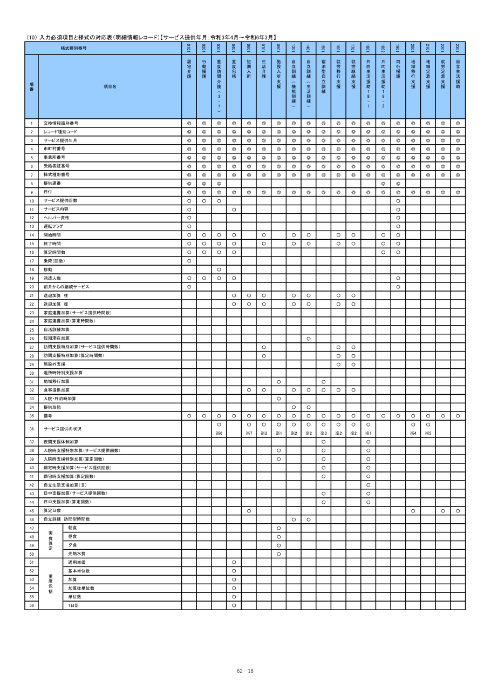
| 項番 | 項目名 | 属性 | 桁数 | 内容 | 必須 | 備考 | その他の列 |
|---|---|---|---|---|---|---|---|
| 1 | 交換情報識別番号 | 様式種別番号 > 0101 居宅介護:◎ 様式種別番号 > 0201 行動援護:◎ 様式種別番号 > 0301 重度訪問介護（3-1）:◎ 様式種別番号 > 0401 重度包括:◎ 様式種別番号 > 0601 短期入所:◎ 様式種別番号 > 0701 生活介護:◎ 様式種別番号 > 0901 施設入所支援:◎ 様式種別番号 > 1301 自立訓練（機能訓練）:◎ 様式種別番号 > 1401 自立訓練（生活訓練）:◎ 様式種別番号 > 1501 宿泊型自立訓練:◎ 様式種別番号 > 1601 就労移行支援:◎ 様式種別番号 > 1701 就労継続支援:◎ 様式種別番号 > 1801 共同生活援助（18-1）:◎ 様式種別番号 > 1802 共同生活援助（18-2）:◎ 様式種別番号 > 1901 同行援護:◎ 様式種別番号 > 2001 地域移行支援:◎ 様式種別番号 > 2101 地域定着支援:◎ 様式種別番号 > 2201 就労定着支援:◎ 様式種別番号 > 2301 自立生活援助:◎ | 項目名（グループ）: － | ||||
| 2 | レコード種別コード | 様式種別番号 > 0101 居宅介護:◎ 様式種別番号 > 0201 行動援護:◎ 様式種別番号 > 0301 重度訪問介護（3-1）:◎ 様式種別番号 > 0401 重度包括:◎ 様式種別番号 > 0601 短期入所:◎ 様式種別番号 > 0701 生活介護:◎ 様式種別番号 > 0901 施設入所支援:◎ 様式種別番号 > 1301 自立訓練（機能訓練）:◎ 様式種別番号 > 1401 自立訓練（生活訓練）:◎ 様式種別番号 > 1501 宿泊型自立訓練:◎ 様式種別番号 > 1601 就労移行支援:◎ 様式種別番号 > 1701 就労継続支援:◎ 様式種別番号 > 1801 共同生活援助（18-1）:◎ 様式種別番号 > 1802 共同生活援助（18-2）:◎ 様式種別番号 > 1901 同行援護:◎ 様式種別番号 > 2001 地域移行支援:◎ 様式種別番号 > 2101 地域定着支援:◎ 様式種別番号 > 2201 就労定着支援:◎ 様式種別番号 > 2301 自立生活援助:◎ | 項目名（グループ）: － | ||||
| 3 | サービス提供年月 | 様式種別番号 > 0101 居宅介護:◎ 様式種別番号 > 0201 行動援護:◎ 様式種別番号 > 0301 重度訪問介護（3-1）:◎ 様式種別番号 > 0401 重度包括:◎ 様式種別番号 > 0601 短期入所:◎ 様式種別番号 > 0701 生活介護:◎ 様式種別番号 > 0901 施設入所支援:◎ 様式種別番号 > 1301 自立訓練（機能訓練）:◎ 様式種別番号 > 1401 自立訓練（生活訓練）:◎ 様式種別番号 > 1501 宿泊型自立訓練:◎ 様式種別番号 > 1601 就労移行支援:◎ 様式種別番号 > 1701 就労継続支援:◎ 様式種別番号 > 1801 共同生活援助（18-1）:◎ 様式種別番号 > 1802 共同生活援助（18-2）:◎ 様式種別番号 > 1901 同行援護:◎ 様式種別番号 > 2001 地域移行支援:◎ 様式種別番号 > 2101 地域定着支援:◎ 様式種別番号 > 2201 就労定着支援:◎ 様式種別番号 > 2301 自立生活援助:◎ | 項目名（グループ）: － | ||||
| 4 | 市町村番号 | 様式種別番号 > 0101 居宅介護:◎ 様式種別番号 > 0201 行動援護:◎ 様式種別番号 > 0301 重度訪問介護（3-1）:◎ 様式種別番号 > 0401 重度包括:◎ 様式種別番号 > 0601 短期入所:◎ 様式種別番号 > 0701 生活介護:◎ 様式種別番号 > 0901 施設入所支援:◎ 様式種別番号 > 1301 自立訓練（機能訓練）:◎ 様式種別番号 > 1401 自立訓練（生活訓練）:◎ 様式種別番号 > 1501 宿泊型自立訓練:◎ 様式種別番号 > 1601 就労移行支援:◎ 様式種別番号 > 1701 就労継続支援:◎ 様式種別番号 > 1801 共同生活援助（18-1）:◎ 様式種別番号 > 1802 共同生活援助（18-2）:◎ 様式種別番号 > 1901 同行援護:◎ 様式種別番号 > 2001 地域移行支援:◎ 様式種別番号 > 2101 地域定着支援:◎ 様式種別番号 > 2201 就労定着支援:◎ 様式種別番号 > 2301 自立生活援助:◎ | 項目名（グループ）: － | ||||
| 5 | 事業所番号 | 様式種別番号 > 0101 居宅介護:◎ 様式種別番号 > 0201 行動援護:◎ 様式種別番号 > 0301 重度訪問介護（3-1）:◎ 様式種別番号 > 0401 重度包括:◎ 様式種別番号 > 0601 短期入所:◎ 様式種別番号 > 0701 生活介護:◎ 様式種別番号 > 0901 施設入所支援:◎ 様式種別番号 > 1301 自立訓練（機能訓練）:◎ 様式種別番号 > 1401 自立訓練（生活訓練）:◎ 様式種別番号 > 1501 宿泊型自立訓練:◎ 様式種別番号 > 1601 就労移行支援:◎ 様式種別番号 > 1701 就労継続支援:◎ 様式種別番号 > 1801 共同生活援助（18-1）:◎ 様式種別番号 > 1802 共同生活援助（18-2）:◎ 様式種別番号 > 1901 同行援護:◎ 様式種別番号 > 2001 地域移行支援:◎ 様式種別番号 > 2101 地域定着支援:◎ 様式種別番号 > 2201 就労定着支援:◎ 様式種別番号 > 2301 自立生活援助:◎ | 項目名（グループ）: － | ||||
| 6 | 受給者証番号 | 様式種別番号 > 0101 居宅介護:◎ 様式種別番号 > 0201 行動援護:◎ 様式種別番号 > 0301 重度訪問介護（3-1）:◎ 様式種別番号 > 0401 重度包括:◎ 様式種別番号 > 0601 短期入所:◎ 様式種別番号 > 0701 生活介護:◎ 様式種別番号 > 0901 施設入所支援:◎ 様式種別番号 > 1301 自立訓練（機能訓練）:◎ 様式種別番号 > 1401 自立訓練（生活訓練）:◎ 様式種別番号 > 1501 宿泊型自立訓練:◎ 様式種別番号 > 1601 就労移行支援:◎ 様式種別番号 > 1701 就労継続支援:◎ 様式種別番号 > 1801 共同生活援助（18-1）:◎ 様式種別番号 > 1802 共同生活援助（18-2）:◎ 様式種別番号 > 1901 同行援護:◎ 様式種別番号 > 2001 地域移行支援:◎ 様式種別番号 > 2101 地域定着支援:◎ 様式種別番号 > 2201 就労定着支援:◎ 様式種別番号 > 2301 自立生活援助:◎ | 項目名（グループ）: － | ||||
| 7 | 様式種別番号 | 様式種別番号 > 0101 居宅介護:◎ 様式種別番号 > 0201 行動援護:◎ 様式種別番号 > 0301 重度訪問介護（3-1）:◎ 様式種別番号 > 0401 重度包括:◎ 様式種別番号 > 0601 短期入所:◎ 様式種別番号 > 0701 生活介護:◎ 様式種別番号 > 0901 施設入所支援:◎ 様式種別番号 > 1301 自立訓練（機能訓練）:◎ 様式種別番号 > 1401 自立訓練（生活訓練）:◎ 様式種別番号 > 1501 宿泊型自立訓練:◎ 様式種別番号 > 1601 就労移行支援:◎ 様式種別番号 > 1701 就労継続支援:◎ 様式種別番号 > 1801 共同生活援助（18-1）:◎ 様式種別番号 > 1802 共同生活援助（18-2）:◎ 様式種別番号 > 1901 同行援護:◎ 様式種別番号 > 2001 地域移行支援:◎ 様式種別番号 > 2101 地域定着支援:◎ 様式種別番号 > 2201 就労定着支援:◎ 様式種別番号 > 2301 自立生活援助:◎ | 項目名（グループ）: － | ||||
| 8 | 提供通番 | 様式種別番号 > 0101 居宅介護:◎ 様式種別番号 > 0201 行動援護:◎ 様式種別番号 > 0301 重度訪問介護（3-1）:◎ 様式種別番号 > 0401 重度包括:－ 様式種別番号 > 0601 短期入所:－ 様式種別番号 > 0701 生活介護:－ 様式種別番号 > 0901 施設入所支援:－ 様式種別番号 > 1301 自立訓練（機能訓練）:－ 様式種別番号 > 1401 自立訓練（生活訓練）:－ 様式種別番号 > 1501 宿泊型自立訓練:－ 様式種別番号 > 1601 就労移行支援:－ 様式種別番号 > 1701 就労継続支援:－ 様式種別番号 > 1801 共同生活援助（18-1）:－ 様式種別番号 > 1802 共同生活援助（18-2）:◎ 様式種別番号 > 1901 同行援護:◎ 様式種別番号 > 2001 地域移行支援:－ 様式種別番号 > 2101 地域定着支援:－ 様式種別番号 > 2201 就労定着支援:－ 様式種別番号 > 2301 自立生活援助:－ | 項目名（グループ）: － | ||||
| 9 | 日付 | 様式種別番号 > 0101 居宅介護:◎ 様式種別番号 > 0201 行動援護:◎ 様式種別番号 > 0301 重度訪問介護（3-1）:◎ 様式種別番号 > 0401 重度包括:◎ 様式種別番号 > 0601 短期入所:◎ 様式種別番号 > 0701 生活介護:◎ 様式種別番号 > 0901 施設入所支援:◎ 様式種別番号 > 1301 自立訓練（機能訓練）:◎ 様式種別番号 > 1401 自立訓練（生活訓練）:◎ 様式種別番号 > 1501 宿泊型自立訓練:◎ 様式種別番号 > 1601 就労移行支援:◎ 様式種別番号 > 1701 就労継続支援:◎ 様式種別番号 > 1801 共同生活援助（18-1）:◎ 様式種別番号 > 1802 共同生活援助（18-2）:◎ 様式種別番号 > 1901 同行援護:◎ 様式種別番号 > 2001 地域移行支援:◎ 様式種別番号 > 2101 地域定着支援:◎ 様式種別番号 > 2201 就労定着支援:◎ 様式種別番号 > 2301 自立生活援助:◎ | 項目名（グループ）: － | ||||
| 10 | サービス提供回数 | 様式種別番号 > 0101 居宅介護:○ 様式種別番号 > 0201 行動援護:○ 様式種別番号 > 0301 重度訪問介護（3-1）:○ 様式種別番号 > 0401 重度包括:－ 様式種別番号 > 0601 短期入所:－ 様式種別番号 > 0701 生活介護:－ 様式種別番号 > 0901 施設入所支援:－ 様式種別番号 > 1301 自立訓練（機能訓練）:－ 様式種別番号 > 1401 自立訓練（生活訓練）:－ 様式種別番号 > 1501 宿泊型自立訓練:－ 様式種別番号 > 1601 就労移行支援:－ 様式種別番号 > 1701 就労継続支援:－ 様式種別番号 > 1801 共同生活援助（18-1）:－ 様式種別番号 > 1802 共同生活援助（18-2）:－ 様式種別番号 > 1901 同行援護:○ 様式種別番号 > 2001 地域移行支援:－ 様式種別番号 > 2101 地域定着支援:－ 様式種別番号 > 2201 就労定着支援:－ 様式種別番号 > 2301 自立生活援助:－ | 項目名（グループ）: － | ||||
| 11 | サービス内容 | 様式種別番号 > 0101 居宅介護:○ 様式種別番号 > 0201 行動援護:－ 様式種別番号 > 0301 重度訪問介護（3-1）:－ 様式種別番号 > 0401 重度包括:○ 様式種別番号 > 0601 短期入所:－ 様式種別番号 > 0701 生活介護:－ 様式種別番号 > 0901 施設入所支援:－ 様式種別番号 > 1301 自立訓練（機能訓練）:－ 様式種別番号 > 1401 自立訓練（生活訓練）:－ 様式種別番号 > 1501 宿泊型自立訓練:－ 様式種別番号 > 1601 就労移行支援:－ 様式種別番号 > 1701 就労継続支援:－ 様式種別番号 > 1801 共同生活援助（18-1）:－ 様式種別番号 > 1802 共同生活援助（18-2）:－ 様式種別番号 > 1901 同行援護:○ 様式種別番号 > 2001 地域移行支援:－ 様式種別番号 > 2101 地域定着支援:－ 様式種別番号 > 2201 就労定着支援:－ 様式種別番号 > 2301 自立生活援助:－ | 項目名（グループ）: － | ||||
| 12 | ヘルパー資格 | 様式種別番号 > 0101 居宅介護:○ 様式種別番号 > 0201 行動援護:－ 様式種別番号 > 0301 重度訪問介護（3-1）:－ 様式種別番号 > 0401 重度包括:－ 様式種別番号 > 0601 短期入所:－ 様式種別番号 > 0701 生活介護:－ 様式種別番号 > 0901 施設入所支援:－ 様式種別番号 > 1301 自立訓練（機能訓練）:－ 様式種別番号 > 1401 自立訓練（生活訓練）:－ 様式種別番号 > 1501 宿泊型自立訓練:－ 様式種別番号 > 1601 就労移行支援:－ 様式種別番号 > 1701 就労継続支援:－ 様式種別番号 > 1801 共同生活援助（18-1）:－ 様式種別番号 > 1802 共同生活援助（18-2）:－ 様式種別番号 > 1901 同行援護:○ 様式種別番号 > 2001 地域移行支援:－ 様式種別番号 > 2101 地域定着支援:－ 様式種別番号 > 2201 就労定着支援:－ 様式種別番号 > 2301 自立生活援助:－ | 項目名（グループ）: － | ||||
| 13 | 運転フラグ | 様式種別番号 > 0101 居宅介護:○ 様式種別番号 > 0201 行動援護:－ 様式種別番号 > 0301 重度訪問介護（3-1）:－ 様式種別番号 > 0401 重度包括:－ 様式種別番号 > 0601 短期入所:－ 様式種別番号 > 0701 生活介護:－ 様式種別番号 > 0901 施設入所支援:－ 様式種別番号 > 1301 自立訓練（機能訓練）:－ 様式種別番号 > 1401 自立訓練（生活訓練）:－ 様式種別番号 > 1501 宿泊型自立訓練:－ 様式種別番号 > 1601 就労移行支援:－ 様式種別番号 > 1701 就労継続支援:－ 様式種別番号 > 1801 共同生活援助（18-1）:－ 様式種別番号 > 1802 共同生活援助（18-2）:－ 様式種別番号 > 1901 同行援護:○ 様式種別番号 > 2001 地域移行支援:－ 様式種別番号 > 2101 地域定着支援:－ 様式種別番号 > 2201 就労定着支援:－ 様式種別番号 > 2301 自立生活援助:－ | 項目名（グループ）: － | ||||
| 14 | 開始時間 | 様式種別番号 > 0101 居宅介護:○ 様式種別番号 > 0201 行動援護:○ 様式種別番号 > 0301 重度訪問介護（3-1）:○ 様式種別番号 > 0401 重度包括:○ 様式種別番号 > 0601 短期入所:－ 様式種別番号 > 0701 生活介護:○ 様式種別番号 > 0901 施設入所支援:－ 様式種別番号 > 1301 自立訓練（機能訓練）:○ 様式種別番号 > 1401 自立訓練（生活訓練）:○ 様式種別番号 > 1501 宿泊型自立訓練:－ 様式種別番号 > 1601 就労移行支援:○ 様式種別番号 > 1701 就労継続支援:○ 様式種別番号 > 1801 共同生活援助（18-1）:－ 様式種別番号 > 1802 共同生活援助（18-2）:○ 様式種別番号 > 1901 同行援護:－ 様式種別番号 > 2001 地域移行支援:－ 様式種別番号 > 2101 地域定着支援:－ 様式種別番号 > 2201 就労定着支援:－ 様式種別番号 > 2301 自立生活援助:－ | 項目名（グループ）: － | ||||
| 15 | 終了時間 | 様式種別番号 > 0101 居宅介護:○ 様式種別番号 > 0201 行動援護:○ 様式種別番号 > 0301 重度訪問介護（3-1）:○ 様式種別番号 > 0401 重度包括:○ 様式種別番号 > 0601 短期入所:－ 様式種別番号 > 0701 生活介護:○ 様式種別番号 > 0901 施設入所支援:－ 様式種別番号 > 1301 自立訓練（機能訓練）:○ 様式種別番号 > 1401 自立訓練（生活訓練）:○ 様式種別番号 > 1501 宿泊型自立訓練:－ 様式種別番号 > 1601 就労移行支援:○ 様式種別番号 > 1701 就労継続支援:○ 様式種別番号 > 1801 共同生活援助（18-1）:－ 様式種別番号 > 1802 共同生活援助（18-2）:○ 様式種別番号 > 1901 同行援護:○ 様式種別番号 > 2001 地域移行支援:－ 様式種別番号 > 2101 地域定着支援:－ 様式種別番号 > 2201 就労定着支援:－ 様式種別番号 > 2301 自立生活援助:－ | 項目名（グループ）: － | ||||
| 16 | 算定時間数 | 様式種別番号 > 0101 居宅介護:○ 様式種別番号 > 0201 行動援護:○ 様式種別番号 > 0301 重度訪問介護（3-1）:○ 様式種別番号 > 0401 重度包括:○ 様式種別番号 > 0601 短期入所:－ 様式種別番号 > 0701 生活介護:－ 様式種別番号 > 0901 施設入所支援:－ 様式種別番号 > 1301 自立訓練（機能訓練）:－ 様式種別番号 > 1401 自立訓練（生活訓練）:－ 様式種別番号 > 1501 宿泊型自立訓練:－ 様式種別番号 > 1601 就労移行支援:－ 様式種別番号 > 1701 就労継続支援:－ 様式種別番号 > 1801 共同生活援助（18-1）:－ 様式種別番号 > 1802 共同生活援助（18-2）:○ 様式種別番号 > 1901 同行援護:○ 様式種別番号 > 2001 地域移行支援:－ 様式種別番号 > 2101 地域定着支援:－ 様式種別番号 > 2201 就労定着支援:－ 様式種別番号 > 2301 自立生活援助:－ | 項目名（グループ）: － | ||||
| 17 | 乗降(回数) | 様式種別番号 > 0101 居宅介護:○ 様式種別番号 > 0201 行動援護:－ 様式種別番号 > 0301 重度訪問介護（3-1）:－ 様式種別番号 > 0401 重度包括:－ 様式種別番号 > 0601 短期入所:－ 様式種別番号 > 0701 生活介護:－ 様式種別番号 > 0901 施設入所支援:－ 様式種別番号 > 1301 自立訓練（機能訓練）:－ 様式種別番号 > 1401 自立訓練（生活訓練）:－ 様式種別番号 > 1501 宿泊型自立訓練:－ 様式種別番号 > 1601 就労移行支援:－ 様式種別番号 > 1701 就労継続支援:－ 様式種別番号 > 1801 共同生活援助（18-1）:－ 様式種別番号 > 1802 共同生活援助（18-2）:－ 様式種別番号 > 1901 同行援護:－ 様式種別番号 > 2001 地域移行支援:－ 様式種別番号 > 2101 地域定着支援:－ 様式種別番号 > 2201 就労定着支援:－ 様式種別番号 > 2301 自立生活援助:－ | 項目名（グループ）: － | ||||
| 18 | 移動 | 様式種別番号 > 0101 居宅介護:－ 様式種別番号 > 0201 行動援護:－ 様式種別番号 > 0301 重度訪問介護（3-1）:○ 様式種別番号 > 0401 重度包括:－ 様式種別番号 > 0601 短期入所:－ 様式種別番号 > 0701 生活介護:－ 様式種別番号 > 0901 施設入所支援:－ 様式種別番号 > 1301 自立訓練（機能訓練）:－ 様式種別番号 > 1401 自立訓練（生活訓練）:－ 様式種別番号 > 1501 宿泊型自立訓練:－ 様式種別番号 > 1601 就労移行支援:－ 様式種別番号 > 1701 就労継続支援:－ 様式種別番号 > 1801 共同生活援助（18-1）:－ 様式種別番号 > 1802 共同生活援助（18-2）:－ 様式種別番号 > 1901 同行援護:－ 様式種別番号 > 2001 地域移行支援:－ 様式種別番号 > 2101 地域定着支援:－ 様式種別番号 > 2201 就労定着支援:－ 様式種別番号 > 2301 自立生活援助:－ | 項目名（グループ）: － | ||||
| 19 | 派遣人数 | 様式種別番号 > 0101 居宅介護:○ 様式種別番号 > 0201 行動援護:○ 様式種別番号 > 0301 重度訪問介護（3-1）:○ 様式種別番号 > 0401 重度包括:○ 様式種別番号 > 0601 短期入所:－ 様式種別番号 > 0701 生活介護:－ 様式種別番号 > 0901 施設入所支援:－ 様式種別番号 > 1301 自立訓練（機能訓練）:－ 様式種別番号 > 1401 自立訓練（生活訓練）:－ 様式種別番号 > 1501 宿泊型自立訓練:－ 様式種別番号 > 1601 就労移行支援:－ 様式種別番号 > 1701 就労継続支援:－ 様式種別番号 > 1801 共同生活援助（18-1）:－ 様式種別番号 > 1802 共同生活援助（18-2）:－ 様式種別番号 > 1901 同行援護:○ 様式種別番号 > 2001 地域移行支援:－ 様式種別番号 > 2101 地域定着支援:－ 様式種別番号 > 2201 就労定着支援:－ 様式種別番号 > 2301 自立生活援助:－ | 項目名（グループ）: － | ||||
| 20 | 前月からの継続サービス | 様式種別番号 > 0101 居宅介護:○ 様式種別番号 > 0201 行動援護:－ 様式種別番号 > 0301 重度訪問介護（3-1）:－ 様式種別番号 > 0401 重度包括:－ 様式種別番号 > 0601 短期入所:－ 様式種別番号 > 0701 生活介護:－ 様式種別番号 > 0901 施設入所支援:－ 様式種別番号 > 1301 自立訓練（機能訓練）:－ 様式種別番号 > 1401 自立訓練（生活訓練）:－ 様式種別番号 > 1501 宿泊型自立訓練:－ 様式種別番号 > 1601 就労移行支援:－ 様式種別番号 > 1701 就労継続支援:－ 様式種別番号 > 1801 共同生活援助（18-1）:－ 様式種別番号 > 1802 共同生活援助（18-2）:－ 様式種別番号 > 1901 同行援護:○ 様式種別番号 > 2001 地域移行支援:－ 様式種別番号 > 2101 地域定着支援:－ 様式種別番号 > 2201 就労定着支援:－ 様式種別番号 > 2301 自立生活援助:－ | 項目名（グループ）: － | ||||
| 21 | 送迎加算 往 | 様式種別番号 > 0101 居宅介護:－ 様式種別番号 > 0201 行動援護:－ 様式種別番号 > 0301 重度訪問介護（3-1）:－ 様式種別番号 > 0401 重度包括:○ 様式種別番号 > 0601 短期入所:○ 様式種別番号 > 0701 生活介護:○ 様式種別番号 > 0901 施設入所支援:－ 様式種別番号 > 1301 自立訓練（機能訓練）:○ 様式種別番号 > 1401 自立訓練（生活訓練）:○ 様式種別番号 > 1501 宿泊型自立訓練:－ 様式種別番号 > 1601 就労移行支援:○ 様式種別番号 > 1701 就労継続支援:○ 様式種別番号 > 1801 共同生活援助（18-1）:－ 様式種別番号 > 1802 共同生活援助（18-2）:－ 様式種別番号 > 1901 同行援護:－ 様式種別番号 > 2001 地域移行支援:－ 様式種別番号 > 2101 地域定着支援:－ 様式種別番号 > 2201 就労定着支援:－ 様式種別番号 > 2301 自立生活援助:－ | 項目名（グループ）: － | ||||
| 22 | 送迎加算 復 | 様式種別番号 > 0101 居宅介護:－ 様式種別番号 > 0201 行動援護:－ 様式種別番号 > 0301 重度訪問介護（3-1）:－ 様式種別番号 > 0401 重度包括:○ 様式種別番号 > 0601 短期入所:○ 様式種別番号 > 0701 生活介護:○ 様式種別番号 > 0901 施設入所支援:－ 様式種別番号 > 1301 自立訓練（機能訓練）:○ 様式種別番号 > 1401 自立訓練（生活訓練）:○ 様式種別番号 > 1501 宿泊型自立訓練:－ 様式種別番号 > 1601 就労移行支援:○ 様式種別番号 > 1701 就労継続支援:○ 様式種別番号 > 1801 共同生活援助（18-1）:－ 様式種別番号 > 1802 共同生活援助（18-2）:－ 様式種別番号 > 1901 同行援護:－ 様式種別番号 > 2001 地域移行支援:－ 様式種別番号 > 2101 地域定着支援:－ 様式種別番号 > 2201 就労定着支援:－ 様式種別番号 > 2301 自立生活援助:－ | 項目名（グループ）: － | ||||
| 23 | 家庭連携加算（サービス提供時間数） | 様式種別番号 > 0101 居宅介護:－ 様式種別番号 > 0201 行動援護:－ 様式種別番号 > 0301 重度訪問介護（3-1）:－ 様式種別番号 > 0401 重度包括:－ 様式種別番号 > 0601 短期入所:－ 様式種別番号 > 0701 生活介護:－ 様式種別番号 > 0901 施設入所支援:－ 様式種別番号 > 1301 自立訓練（機能訓練）:－ 様式種別番号 > 1401 自立訓練（生活訓練）:－ 様式種別番号 > 1501 宿泊型自立訓練:－ 様式種別番号 > 1601 就労移行支援:－ 様式種別番号 > 1701 就労継続支援:－ 様式種別番号 > 1801 共同生活援助（18-1）:－ 様式種別番号 > 1802 共同生活援助（18-2）:－ 様式種別番号 > 1901 同行援護:－ 様式種別番号 > 2001 地域移行支援:－ 様式種別番号 > 2101 地域定着支援:－ 様式種別番号 > 2201 就労定着支援:－ 様式種別番号 > 2301 自立生活援助:－ | 項目名（グループ）: － | ||||
| 24 | 家庭連携加算（算定時間数） | 様式種別番号 > 0101 居宅介護:－ 様式種別番号 > 0201 行動援護:－ 様式種別番号 > 0301 重度訪問介護（3-1）:－ 様式種別番号 > 0401 重度包括:－ 様式種別番号 > 0601 短期入所:－ 様式種別番号 > 0701 生活介護:－ 様式種別番号 > 0901 施設入所支援:－ 様式種別番号 > 1301 自立訓練（機能訓練）:－ 様式種別番号 > 1401 自立訓練（生活訓練）:－ 様式種別番号 > 1501 宿泊型自立訓練:－ 様式種別番号 > 1601 就労移行支援:－ 様式種別番号 > 1701 就労継続支援:－ 様式種別番号 > 1801 共同生活援助（18-1）:－ 様式種別番号 > 1802 共同生活援助（18-2）:－ 様式種別番号 > 1901 同行援護:－ 様式種別番号 > 2001 地域移行支援:－ 様式種別番号 > 2101 地域定着支援:－ 様式種別番号 > 2201 就労定着支援:－ 様式種別番号 > 2301 自立生活援助:－ | 項目名（グループ）: － | ||||
| 25 | 自活訓練加算 | 様式種別番号 > 0101 居宅介護:－ 様式種別番号 > 0201 行動援護:－ 様式種別番号 > 0301 重度訪問介護（3-1）:－ 様式種別番号 > 0401 重度包括:－ 様式種別番号 > 0601 短期入所:－ 様式種別番号 > 0701 生活介護:－ 様式種別番号 > 0901 施設入所支援:－ 様式種別番号 > 1301 自立訓練（機能訓練）:－ 様式種別番号 > 1401 自立訓練（生活訓練）:－ 様式種別番号 > 1501 宿泊型自立訓練:－ 様式種別番号 > 1601 就労移行支援:－ 様式種別番号 > 1701 就労継続支援:－ 様式種別番号 > 1801 共同生活援助（18-1）:－ 様式種別番号 > 1802 共同生活援助（18-2）:－ 様式種別番号 > 1901 同行援護:－ 様式種別番号 > 2001 地域移行支援:－ 様式種別番号 > 2101 地域定着支援:－ 様式種別番号 > 2201 就労定着支援:－ 様式種別番号 > 2301 自立生活援助:－ | 項目名（グループ）: － | ||||
| 26 | 短期滞在加算 | 様式種別番号 > 0101 居宅介護:－ 様式種別番号 > 0201 行動援護:－ 様式種別番号 > 0301 重度訪問介護（3-1）:－ 様式種別番号 > 0401 重度包括:－ 様式種別番号 > 0601 短期入所:－ 様式種別番号 > 0701 生活介護:－ 様式種別番号 > 0901 施設入所支援:－ 様式種別番号 > 1301 自立訓練（機能訓練）:－ 様式種別番号 > 1401 自立訓練（生活訓練）:○ 様式種別番号 > 1501 宿泊型自立訓練:－ 様式種別番号 > 1601 就労移行支援:－ 様式種別番号 > 1701 就労継続支援:－ 様式種別番号 > 1801 共同生活援助（18-1）:－ 様式種別番号 > 1802 共同生活援助（18-2）:－ 様式種別番号 > 1901 同行援護:－ 様式種別番号 > 2001 地域移行支援:－ 様式種別番号 > 2101 地域定着支援:－ 様式種別番号 > 2201 就労定着支援:－ 様式種別番号 > 2301 自立生活援助:－ | 項目名（グループ）: － | ||||
| 27 | 訪問支援特別加算（サービス提供時間数） | 様式種別番号 > 0101 居宅介護:－ 様式種別番号 > 0201 行動援護:－ 様式種別番号 > 0301 重度訪問介護（3-1）:－ 様式種別番号 > 0401 重度包括:－ 様式種別番号 > 0601 短期入所:－ 様式種別番号 > 0701 生活介護:○ 様式種別番号 > 0901 施設入所支援:－ 様式種別番号 > 1301 自立訓練（機能訓練）:－ 様式種別番号 > 1401 自立訓練（生活訓練）:－ 様式種別番号 > 1501 宿泊型自立訓練:－ 様式種別番号 > 1601 就労移行支援:○ 様式種別番号 > 1701 就労継続支援:○ 様式種別番号 > 1801 共同生活援助（18-1）:－ 様式種別番号 > 1802 共同生活援助（18-2）:－ 様式種別番号 > 1901 同行援護:－ 様式種別番号 > 2001 地域移行支援:－ 様式種別番号 > 2101 地域定着支援:－ 様式種別番号 > 2201 就労定着支援:－ 様式種別番号 > 2301 自立生活援助:－ | 項目名（グループ）: － | ||||
| 28 | 訪問支援特別加算（算定時間数） | 様式種別番号 > 0101 居宅介護:－ 様式種別番号 > 0201 行動援護:－ 様式種別番号 > 0301 重度訪問介護（3-1）:－ 様式種別番号 > 0401 重度包括:－ 様式種別番号 > 0601 短期入所:－ 様式種別番号 > 0701 生活介護:○ 様式種別番号 > 0901 施設入所支援:－ 様式種別番号 > 1301 自立訓練（機能訓練）:－ 様式種別番号 > 1401 自立訓練（生活訓練）:－ 様式種別番号 > 1501 宿泊型自立訓練:－ 様式種別番号 > 1601 就労移行支援:○ 様式種別番号 > 1701 就労継続支援:○ 様式種別番号 > 1801 共同生活援助（18-1）:－ 様式種別番号 > 1802 共同生活援助（18-2）:－ 様式種別番号 > 1901 同行援護:－ 様式種別番号 > 2001 地域移行支援:－ 様式種別番号 > 2101 地域定着支援:－ 様式種別番号 > 2201 就労定着支援:－ 様式種別番号 > 2301 自立生活援助:－ | 項目名（グループ）: － | ||||
| 29 | 施設外支援 | 様式種別番号 > 0101 居宅介護:－ 様式種別番号 > 0201 行動援護:－ 様式種別番号 > 0301 重度訪問介護（3-1）:－ 様式種別番号 > 0401 重度包括:－ 様式種別番号 > 0601 短期入所:－ 様式種別番号 > 0701 生活介護:－ 様式種別番号 > 0901 施設入所支援:－ 様式種別番号 > 1301 自立訓練（機能訓練）:－ 様式種別番号 > 1401 自立訓練（生活訓練）:－ 様式種別番号 > 1501 宿泊型自立訓練:－ 様式種別番号 > 1601 就労移行支援:○ 様式種別番号 > 1701 就労継続支援:○ 様式種別番号 > 1801 共同生活援助（18-1）:－ 様式種別番号 > 1802 共同生活援助（18-2）:－ 様式種別番号 > 1901 同行援護:－ 様式種別番号 > 2001 地域移行支援:－ 様式種別番号 > 2101 地域定着支援:－ 様式種別番号 > 2201 就労定着支援:－ 様式種別番号 > 2301 自立生活援助:－ | 項目名（グループ）: － | ||||
| 30 | 退所時特別支援加算 | 様式種別番号 > 0101 居宅介護:－ 様式種別番号 > 0201 行動援護:－ 様式種別番号 > 0301 重度訪問介護（3-1）:－ 様式種別番号 > 0401 重度包括:－ 様式種別番号 > 0601 短期入所:－ 様式種別番号 > 0701 生活介護:－ 様式種別番号 > 0901 施設入所支援:－ 様式種別番号 > 1301 自立訓練（機能訓練）:－ 様式種別番号 > 1401 自立訓練（生活訓練）:－ 様式種別番号 > 1501 宿泊型自立訓練:－ 様式種別番号 > 1601 就労移行支援:－ 様式種別番号 > 1701 就労継続支援:－ 様式種別番号 > 1801 共同生活援助（18-1）:－ 様式種別番号 > 1802 共同生活援助（18-2）:－ 様式種別番号 > 1901 同行援護:－ 様式種別番号 > 2001 地域移行支援:－ 様式種別番号 > 2101 地域定着支援:－ 様式種別番号 > 2201 就労定着支援:－ 様式種別番号 > 2301 自立生活援助:－ | 項目名（グループ）: － | ||||
| 31 | 地域移行加算 | 様式種別番号 > 0101 居宅介護:－ 様式種別番号 > 0201 行動援護:－ 様式種別番号 > 0301 重度訪問介護（3-1）:－ 様式種別番号 > 0401 重度包括:－ 様式種別番号 > 0601 短期入所:－ 様式種別番号 > 0701 生活介護:－ 様式種別番号 > 0901 施設入所支援:○ 様式種別番号 > 1301 自立訓練（機能訓練）:－ 様式種別番号 > 1401 自立訓練（生活訓練）:－ 様式種別番号 > 1501 宿泊型自立訓練:○ 様式種別番号 > 1601 就労移行支援:－ 様式種別番号 > 1701 就労継続支援:－ 様式種別番号 > 1801 共同生活援助（18-1）:－ 様式種別番号 > 1802 共同生活援助（18-2）:－ 様式種別番号 > 1901 同行援護:－ 様式種別番号 > 2001 地域移行支援:－ 様式種別番号 > 2101 地域定着支援:－ 様式種別番号 > 2201 就労定着支援:－ 様式種別番号 > 2301 自立生活援助:－ | 項目名（グループ）: － | ||||
| 32 | 食事提供加算 | 様式種別番号 > 0101 居宅介護:－ 様式種別番号 > 0201 行動援護:－ 様式種別番号 > 0301 重度訪問介護（3-1）:－ 様式種別番号 > 0401 重度包括:－ 様式種別番号 > 0601 短期入所:○ 様式種別番号 > 0701 生活介護:○ 様式種別番号 > 0901 施設入所支援:－ 様式種別番号 > 1301 自立訓練（機能訓練）:○ 様式種別番号 > 1401 自立訓練（生活訓練）:○ 様式種別番号 > 1501 宿泊型自立訓練:○ 様式種別番号 > 1601 就労移行支援:○ 様式種別番号 > 1701 就労継続支援:○ 様式種別番号 > 1801 共同生活援助（18-1）:－ 様式種別番号 > 1802 共同生活援助（18-2）:－ 様式種別番号 > 1901 同行援護:－ 様式種別番号 > 2001 地域移行支援:－ 様式種別番号 > 2101 地域定着支援:－ 様式種別番号 > 2201 就労定着支援:－ 様式種別番号 > 2301 自立生活援助:－ | 項目名（グループ）: － | ||||
| 33 | 入院･外泊時加算 | 様式種別番号 > 0101 居宅介護:－ 様式種別番号 > 0201 行動援護:－ 様式種別番号 > 0301 重度訪問介護（3-1）:－ 様式種別番号 > 0401 重度包括:－ 様式種別番号 > 0601 短期入所:－ 様式種別番号 > 0701 生活介護:－ 様式種別番号 > 0901 施設入所支援:○ 様式種別番号 > 1301 自立訓練（機能訓練）:－ 様式種別番号 > 1401 自立訓練（生活訓練）:－ 様式種別番号 > 1501 宿泊型自立訓練:－ 様式種別番号 > 1601 就労移行支援:－ 様式種別番号 > 1701 就労継続支援:－ 様式種別番号 > 1801 共同生活援助（18-1）:－ 様式種別番号 > 1802 共同生活援助（18-2）:－ 様式種別番号 > 1901 同行援護:－ 様式種別番号 > 2001 地域移行支援:－ 様式種別番号 > 2101 地域定着支援:－ 様式種別番号 > 2201 就労定着支援:－ 様式種別番号 > 2301 自立生活援助:－ | 項目名（グループ）: － | ||||
| 34 | 提供形態 | 様式種別番号 > 0101 居宅介護:－ 様式種別番号 > 0201 行動援護:－ 様式種別番号 > 0301 重度訪問介護（3-1）:－ 様式種別番号 > 0401 重度包括:－ 様式種別番号 > 0601 短期入所:－ 様式種別番号 > 0701 生活介護:－ 様式種別番号 > 0901 施設入所支援:－ 様式種別番号 > 1301 自立訓練（機能訓練）:○ 様式種別番号 > 1401 自立訓練（生活訓練）:○ 様式種別番号 > 1501 宿泊型自立訓練:－ 様式種別番号 > 1601 就労移行支援:－ 様式種別番号 > 1701 就労継続支援:－ 様式種別番号 > 1801 共同生活援助（18-1）:－ 様式種別番号 > 1802 共同生活援助（18-2）:－ 様式種別番号 > 1901 同行援護:－ 様式種別番号 > 2001 地域移行支援:－ 様式種別番号 > 2101 地域定着支援:－ 様式種別番号 > 2201 就労定着支援:－ 様式種別番号 > 2301 自立生活援助:－ | 項目名（グループ）: － | ||||
| 35 | 備考 | 様式種別番号 > 0101 居宅介護:○ 様式種別番号 > 0201 行動援護:○ 様式種別番号 > 0301 重度訪問介護（3-1）:○ 様式種別番号 > 0401 重度包括:○ 様式種別番号 > 0601 短期入所:○ 様式種別番号 > 0701 生活介護:○ 様式種別番号 > 0901 施設入所支援:○ 様式種別番号 > 1301 自立訓練（機能訓練）:○ 様式種別番号 > 1401 自立訓練（生活訓練）:○ 様式種別番号 > 1501 宿泊型自立訓練:○ 様式種別番号 > 1601 就労移行支援:○ 様式種別番号 > 1701 就労継続支援:○ 様式種別番号 > 1801 共同生活援助（18-1）:○ 様式種別番号 > 1802 共同生活援助（18-2）:○ 様式種別番号 > 1901 同行援護:○ 様式種別番号 > 2001 地域移行支援:○ 様式種別番号 > 2101 地域定着支援:○ 様式種別番号 > 2201 就労定着支援:○ 様式種別番号 > 2301 自立生活援助:○ | 項目名（グループ）: － | ||||
| 36 | サービス提供の状況 | 様式種別番号 > 0101 居宅介護:－ 様式種別番号 > 0201 行動援護:－ 様式種別番号 > 0301 重度訪問介護（3-1）:○ ※6 様式種別番号 > 0401 重度包括:－ 様式種別番号 > 0601 短期入所:○ ※7 様式種別番号 > 0701 生活介護:○ ※2 様式種別番号 > 0901 施設入所支援:○ ※1 様式種別番号 > 1301 自立訓練（機能訓練）:○ ※2 様式種別番号 > 1401 自立訓練（生活訓練）:○ ※2 様式種別番号 > 1501 宿泊型自立訓練:○ ※3 様式種別番号 > 1601 就労移行支援:○ ※2 様式種別番号 > 1701 就労継続支援:○ ※2 様式種別番号 > 1801 共同生活援助（18-1）:○ ※1 様式種別番号 > 1802 共同生活援助（18-2）:－ 様式種別番号 > 1901 同行援護:－ 様式種別番号 > 2001 地域移行支援:○ ※4 様式種別番号 > 2101 地域定着支援:○ ※5 様式種別番号 > 2201 就労定着支援:－ 様式種別番号 > 2301 自立生活援助:－ | 項目名（グループ）: － | ||||
| 37 | 夜間支援体制加算 | 様式種別番号 > 0101 居宅介護:－ 様式種別番号 > 0201 行動援護:－ 様式種別番号 > 0301 重度訪問介護（3-1）:－ 様式種別番号 > 0401 重度包括:－ 様式種別番号 > 0601 短期入所:－ 様式種別番号 > 0701 生活介護:－ 様式種別番号 > 0901 施設入所支援:－ 様式種別番号 > 1301 自立訓練（機能訓練）:－ 様式種別番号 > 1401 自立訓練（生活訓練）:－ 様式種別番号 > 1501 宿泊型自立訓練:○ 様式種別番号 > 1601 就労移行支援:－ 様式種別番号 > 1701 就労継続支援:－ 様式種別番号 > 1801 共同生活援助（18-1）:○ 様式種別番号 > 1802 共同生活援助（18-2）:－ 様式種別番号 > 1901 同行援護:－ 様式種別番号 > 2001 地域移行支援:－ 様式種別番号 > 2101 地域定着支援:－ 様式種別番号 > 2201 就労定着支援:－ 様式種別番号 > 2301 自立生活援助:－ | 項目名（グループ）: － | ||||
| 38 | 入院時支援特別加算（サービス提供回数） | 様式種別番号 > 0101 居宅介護:－ 様式種別番号 > 0201 行動援護:－ 様式種別番号 > 0301 重度訪問介護（3-1）:－ 様式種別番号 > 0401 重度包括:－ 様式種別番号 > 0601 短期入所:－ 様式種別番号 > 0701 生活介護:－ 様式種別番号 > 0901 施設入所支援:○ 様式種別番号 > 1301 自立訓練（機能訓練）:－ 様式種別番号 > 1401 自立訓練（生活訓練）:－ 様式種別番号 > 1501 宿泊型自立訓練:○ 様式種別番号 > 1601 就労移行支援:－ 様式種別番号 > 1701 就労継続支援:－ 様式種別番号 > 1801 共同生活援助（18-1）:○ 様式種別番号 > 1802 共同生活援助（18-2）:－ 様式種別番号 > 1901 同行援護:－ 様式種別番号 > 2001 地域移行支援:－ 様式種別番号 > 2101 地域定着支援:－ 様式種別番号 > 2201 就労定着支援:－ 様式種別番号 > 2301 自立生活援助:－ | 項目名（グループ）: － | ||||
| 39 | 入院時支援特別加算（算定回数） | 様式種別番号 > 0101 居宅介護:－ 様式種別番号 > 0201 行動援護:－ 様式種別番号 > 0301 重度訪問介護（3-1）:－ 様式種別番号 > 0401 重度包括:－ 様式種別番号 > 0601 短期入所:－ 様式種別番号 > 0701 生活介護:－ 様式種別番号 > 0901 施設入所支援:○ 様式種別番号 > 1301 自立訓練（機能訓練）:－ 様式種別番号 > 1401 自立訓練（生活訓練）:－ 様式種別番号 > 1501 宿泊型自立訓練:○ 様式種別番号 > 1601 就労移行支援:－ 様式種別番号 > 1701 就労継続支援:－ 様式種別番号 > 1801 共同生活援助（18-1）:○ 様式種別番号 > 1802 共同生活援助（18-2）:－ 様式種別番号 > 1901 同行援護:－ 様式種別番号 > 2001 地域移行支援:－ 様式種別番号 > 2101 地域定着支援:－ 様式種別番号 > 2201 就労定着支援:－ 様式種別番号 > 2301 自立生活援助:－ | 項目名（グループ）: － | ||||
| 40 | 掃宅時支援加算（サービス提供回数） | 様式種別番号 > 0101 居宅介護:－ 様式種別番号 > 0201 行動援護:－ 様式種別番号 > 0301 重度訪問介護（3-1）:－ 様式種別番号 > 0401 重度包括:－ 様式種別番号 > 0601 短期入所:－ 様式種別番号 > 0701 生活介護:－ 様式種別番号 > 0901 施設入所支援:－ 様式種別番号 > 1301 自立訓練（機能訓練）:－ 様式種別番号 > 1401 自立訓練（生活訓練）:－ 様式種別番号 > 1501 宿泊型自立訓練:○ 様式種別番号 > 1601 就労移行支援:－ 様式種別番号 > 1701 就労継続支援:－ 様式種別番号 > 1801 共同生活援助（18-1）:○ 様式種別番号 > 1802 共同生活援助（18-2）:－ 様式種別番号 > 1901 同行援護:－ 様式種別番号 > 2001 地域移行支援:－ 様式種別番号 > 2101 地域定着支援:－ 様式種別番号 > 2201 就労定着支援:－ 様式種別番号 > 2301 自立生活援助:－ | 項目名（グループ）: － | ||||
| 41 | 掃宅時支援加算（算定回数） | 様式種別番号 > 0101 居宅介護:－ 様式種別番号 > 0201 行動援護:－ 様式種別番号 > 0301 重度訪問介護（3-1）:－ 様式種別番号 > 0401 重度包括:－ 様式種別番号 > 0601 短期入所:－ 様式種別番号 > 0701 生活介護:－ 様式種別番号 > 0901 施設入所支援:－ 様式種別番号 > 1301 自立訓練（機能訓練）:－ 様式種別番号 > 1401 自立訓練（生活訓練）:－ 様式種別番号 > 1501 宿泊型自立訓練:○ 様式種別番号 > 1601 就労移行支援:－ 様式種別番号 > 1701 就労継続支援:－ 様式種別番号 > 1801 共同生活援助（18-1）:○ 様式種別番号 > 1802 共同生活援助（18-2）:－ 様式種別番号 > 1901 同行援護:－ 様式種別番号 > 2001 地域移行支援:－ 様式種別番号 > 2101 地域定着支援:－ 様式種別番号 > 2201 就労定着支援:－ 様式種別番号 > 2301 自立生活援助:－ | 項目名（グループ）: － | ||||
| 42 | 自立生活支援加算（Ⅱ） | 様式種別番号 > 0101 居宅介護:－ 様式種別番号 > 0201 行動援護:－ 様式種別番号 > 0301 重度訪問介護（3-1）:－ 様式種別番号 > 0401 重度包括:－ 様式種別番号 > 0601 短期入所:－ 様式種別番号 > 0701 生活介護:－ 様式種別番号 > 0901 施設入所支援:－ 様式種別番号 > 1301 自立訓練（機能訓練）:－ 様式種別番号 > 1401 自立訓練（生活訓練）:－ 様式種別番号 > 1501 宿泊型自立訓練:－ 様式種別番号 > 1601 就労移行支援:－ 様式種別番号 > 1701 就労継続支援:－ 様式種別番号 > 1801 共同生活援助（18-1）:○ 様式種別番号 > 1802 共同生活援助（18-2）:－ 様式種別番号 > 1901 同行援護:－ 様式種別番号 > 2001 地域移行支援:－ 様式種別番号 > 2101 地域定着支援:－ 様式種別番号 > 2201 就労定着支援:－ 様式種別番号 > 2301 自立生活援助:－ | 項目名（グループ）: － | ||||
| 43 | 日中支援加算（サービス提供回数） | 様式種別番号 > 0101 居宅介護:－ 様式種別番号 > 0201 行動援護:－ 様式種別番号 > 0301 重度訪問介護（3-1）:－ 様式種別番号 > 0401 重度包括:－ 様式種別番号 > 0601 短期入所:－ 様式種別番号 > 0701 生活介護:－ 様式種別番号 > 0901 施設入所支援:－ 様式種別番号 > 1301 自立訓練（機能訓練）:－ 様式種別番号 > 1401 自立訓練（生活訓練）:－ 様式種別番号 > 1501 宿泊型自立訓練:○ 様式種別番号 > 1601 就労移行支援:－ 様式種別番号 > 1701 就労継続支援:－ 様式種別番号 > 1801 共同生活援助（18-1）:○ 様式種別番号 > 1802 共同生活援助（18-2）:－ 様式種別番号 > 1901 同行援護:－ 様式種別番号 > 2001 地域移行支援:－ 様式種別番号 > 2101 地域定着支援:－ 様式種別番号 > 2201 就労定着支援:－ 様式種別番号 > 2301 自立生活援助:－ | 項目名（グループ）: － | ||||
| 44 | 日中支援加算（算定回数） | 様式種別番号 > 0101 居宅介護:－ 様式種別番号 > 0201 行動援護:－ 様式種別番号 > 0301 重度訪問介護（3-1）:－ 様式種別番号 > 0401 重度包括:－ 様式種別番号 > 0601 短期入所:－ 様式種別番号 > 0701 生活介護:－ 様式種別番号 > 0901 施設入所支援:－ 様式種別番号 > 1301 自立訓練（機能訓練）:－ 様式種別番号 > 1401 自立訓練（生活訓練）:－ 様式種別番号 > 1501 宿泊型自立訓練:○ 様式種別番号 > 1601 就労移行支援:－ 様式種別番号 > 1701 就労継続支援:－ 様式種別番号 > 1801 共同生活援助（18-1）:○ 様式種別番号 > 1802 共同生活援助（18-2）:－ 様式種別番号 > 1901 同行援護:－ 様式種別番号 > 2001 地域移行支援:－ 様式種別番号 > 2101 地域定着支援:－ 様式種別番号 > 2201 就労定着支援:－ 様式種別番号 > 2301 自立生活援助:－ | 項目名（グループ）: － | ||||
| 45 | 算定日数 | 様式種別番号 > 0101 居宅介護:－ 様式種別番号 > 0201 行動援護:－ 様式種別番号 > 0301 重度訪問介護（3-1）:－ 様式種別番号 > 0401 重度包括:－ 様式種別番号 > 0601 短期入所:○ 様式種別番号 > 0701 生活介護:－ 様式種別番号 > 0901 施設入所支援:－ 様式種別番号 > 1301 自立訓練（機能訓練）:－ 様式種別番号 > 1401 自立訓練（生活訓練）:－ 様式種別番号 > 1501 宿泊型自立訓練:－ 様式種別番号 > 1601 就労移行支援:－ 様式種別番号 > 1701 就労継続支援:－ 様式種別番号 > 1801 共同生活援助（18-1）:－ 様式種別番号 > 1802 共同生活援助（18-2）:－ 様式種別番号 > 1901 同行援護:－ 様式種別番号 > 2001 地域移行支援:○ 様式種別番号 > 2101 地域定着支援:－ 様式種別番号 > 2201 就労定着支援:○ 様式種別番号 > 2301 自立生活援助:○ | 項目名（グループ）: － | ||||
| 46 | 自立訓練 訪問型時間数 | 様式種別番号 > 0101 居宅介護:－ 様式種別番号 > 0201 行動援護:－ 様式種別番号 > 0301 重度訪問介護（3-1）:－ 様式種別番号 > 0401 重度包括:－ 様式種別番号 > 0601 短期入所:－ 様式種別番号 > 0701 生活介護:－ 様式種別番号 > 0901 施設入所支援:－ 様式種別番号 > 1301 自立訓練（機能訓練）:○ 様式種別番号 > 1401 自立訓練（生活訓練）:○ 様式種別番号 > 1501 宿泊型自立訓練:－ 様式種別番号 > 1601 就労移行支援:－ 様式種別番号 > 1701 就労継続支援:－ 様式種別番号 > 1801 共同生活援助（18-1）:－ 様式種別番号 > 1802 共同生活援助（18-2）:－ 様式種別番号 > 1901 同行援護:－ 様式種別番号 > 2001 地域移行支援:－ 様式種別番号 > 2101 地域定着支援:－ 様式種別番号 > 2201 就労定着支援:－ 様式種別番号 > 2301 自立生活援助:－ | 項目名（グループ）: － | ||||
| 47 | 実費算定 > 朝食 | 様式種別番号 > 0101 居宅介護:－ 様式種別番号 > 0201 行動援護:－ 様式種別番号 > 0301 重度訪問介護（3-1）:－ 様式種別番号 > 0401 重度包括:－ 様式種別番号 > 0601 短期入所:－ 様式種別番号 > 0701 生活介護:－ 様式種別番号 > 0901 施設入所支援:○ 様式種別番号 > 1301 自立訓練（機能訓練）:－ 様式種別番号 > 1401 自立訓練（生活訓練）:－ 様式種別番号 > 1501 宿泊型自立訓練:－ 様式種別番号 > 1601 就労移行支援:－ 様式種別番号 > 1701 就労継続支援:－ 様式種別番号 > 1801 共同生活援助（18-1）:－ 様式種別番号 > 1802 共同生活援助（18-2）:－ 様式種別番号 > 1901 同行援護:－ 様式種別番号 > 2001 地域移行支援:－ 様式種別番号 > 2101 地域定着支援:－ 様式種別番号 > 2201 就労定着支援:－ 様式種別番号 > 2301 自立生活援助:－ | 項目名（グループ）: 実費算定 | ||||
| 48 | 実費算定 > 昼食 | 様式種別番号 > 0101 居宅介護:－ 様式種別番号 > 0201 行動援護:－ 様式種別番号 > 0301 重度訪問介護（3-1）:－ 様式種別番号 > 0401 重度包括:－ 様式種別番号 > 0601 短期入所:－ 様式種別番号 > 0701 生活介護:－ 様式種別番号 > 0901 施設入所支援:○ 様式種別番号 > 1301 自立訓練（機能訓練）:－ 様式種別番号 > 1401 自立訓練（生活訓練）:－ 様式種別番号 > 1501 宿泊型自立訓練:－ 様式種別番号 > 1601 就労移行支援:－ 様式種別番号 > 1701 就労継続支援:－ 様式種別番号 > 1801 共同生活援助（18-1）:－ 様式種別番号 > 1802 共同生活援助（18-2）:－ 様式種別番号 > 1901 同行援護:－ 様式種別番号 > 2001 地域移行支援:－ 様式種別番号 > 2101 地域定着支援:－ 様式種別番号 > 2201 就労定着支援:－ 様式種別番号 > 2301 自立生活援助:－ | 項目名（グループ）: 実費算定 | ||||
| 49 | 実費算定 > 夕食 | 様式種別番号 > 0101 居宅介護:－ 様式種別番号 > 0201 行動援護:－ 様式種別番号 > 0301 重度訪問介護（3-1）:－ 様式種別番号 > 0401 重度包括:－ 様式種別番号 > 0601 短期入所:－ 様式種別番号 > 0701 生活介護:－ 様式種別番号 > 0901 施設入所支援:○ 様式種別番号 > 1301 自立訓練（機能訓練）:－ 様式種別番号 > 1401 自立訓練（生活訓練）:－ 様式種別番号 > 1501 宿泊型自立訓練:－ 様式種別番号 > 1601 就労移行支援:－ 様式種別番号 > 1701 就労継続支援:－ 様式種別番号 > 1801 共同生活援助（18-1）:－ 様式種別番号 > 1802 共同生活援助（18-2）:－ 様式種別番号 > 1901 同行援護:－ 様式種別番号 > 2001 地域移行支援:－ 様式種別番号 > 2101 地域定着支援:－ 様式種別番号 > 2201 就労定着支援:－ 様式種別番号 > 2301 自立生活援助:－ | 項目名（グループ）: 実費算定 | ||||
| 50 | 実費算定 > 光熱水費 | 様式種別番号 > 0101 居宅介護:－ 様式種別番号 > 0201 行動援護:－ 様式種別番号 > 0301 重度訪問介護（3-1）:－ 様式種別番号 > 0401 重度包括:－ 様式種別番号 > 0601 短期入所:－ 様式種別番号 > 0701 生活介護:－ 様式種別番号 > 0901 施設入所支援:○ 様式種別番号 > 1301 自立訓練（機能訓練）:－ 様式種別番号 > 1401 自立訓練（生活訓練）:－ 様式種別番号 > 1501 宿泊型自立訓練:－ 様式種別番号 > 1601 就労移行支援:－ 様式種別番号 > 1701 就労継続支援:－ 様式種別番号 > 1801 共同生活援助（18-1）:－ 様式種別番号 > 1802 共同生活援助（18-2）:－ 様式種別番号 > 1901 同行援護:－ 様式種別番号 > 2001 地域移行支援:－ 様式種別番号 > 2101 地域定着支援:－ 様式種別番号 > 2201 就労定着支援:－ 様式種別番号 > 2301 自立生活援助:－ | 項目名（グループ）: 実費算定 | ||||
| 51 | 重度包括 > 適用単価 | 様式種別番号 > 0101 居宅介護:－ 様式種別番号 > 0201 行動援護:－ 様式種別番号 > 0301 重度訪問介護（3-1）:－ 様式種別番号 > 0401 重度包括:○ 様式種別番号 > 0601 短期入所:－ 様式種別番号 > 0701 生活介護:－ 様式種別番号 > 0901 施設入所支援:－ 様式種別番号 > 1301 自立訓練（機能訓練）:－ 様式種別番号 > 1401 自立訓練（生活訓練）:－ 様式種別番号 > 1501 宿泊型自立訓練:－ 様式種別番号 > 1601 就労移行支援:－ 様式種別番号 > 1701 就労継続支援:－ 様式種別番号 > 1801 共同生活援助（18-1）:－ 様式種別番号 > 1802 共同生活援助（18-2）:－ 様式種別番号 > 1901 同行援護:－ 様式種別番号 > 2001 地域移行支援:－ 様式種別番号 > 2101 地域定着支援:－ 様式種別番号 > 2201 就労定着支援:－ 様式種別番号 > 2301 自立生活援助:－ | 項目名（グループ）: 重度包括 | ||||
| 52 | 重度包括 > 基本単位数 | 様式種別番号 > 0101 居宅介護:－ 様式種別番号 > 0201 行動援護:－ 様式種別番号 > 0301 重度訪問介護（3-1）:－ 様式種別番号 > 0401 重度包括:○ 様式種別番号 > 0601 短期入所:－ 様式種別番号 > 0701 生活介護:－ 様式種別番号 > 0901 施設入所支援:－ 様式種別番号 > 1301 自立訓練（機能訓練）:－ 様式種別番号 > 1401 自立訓練（生活訓練）:－ 様式種別番号 > 1501 宿泊型自立訓練:－ 様式種別番号 > 1601 就労移行支援:－ 様式種別番号 > 1701 就労継続支援:－ 様式種別番号 > 1801 共同生活援助（18-1）:－ 様式種別番号 > 1802 共同生活援助（18-2）:－ 様式種別番号 > 1901 同行援護:－ 様式種別番号 > 2001 地域移行支援:－ 様式種別番号 > 2101 地域定着支援:－ 様式種別番号 > 2201 就労定着支援:－ 様式種別番号 > 2301 自立生活援助:－ | 項目名（グループ）: 重度包括 | ||||
| 53 | 重度包括 > 加算 | 様式種別番号 > 0101 居宅介護:－ 様式種別番号 > 0201 行動援護:－ 様式種別番号 > 0301 重度訪問介護（3-1）:－ 様式種別番号 > 0401 重度包括:○ 様式種別番号 > 0601 短期入所:－ 様式種別番号 > 0701 生活介護:－ 様式種別番号 > 0901 施設入所支援:－ 様式種別番号 > 1301 自立訓練（機能訓練）:－ 様式種別番号 > 1401 自立訓練（生活訓練）:－ 様式種別番号 > 1501 宿泊型自立訓練:－ 様式種別番号 > 1601 就労移行支援:－ 様式種別番号 > 1701 就労継続支援:－ 様式種別番号 > 1801 共同生活援助（18-1）:－ 様式種別番号 > 1802 共同生活援助（18-2）:－ 様式種別番号 > 1901 同行援護:－ 様式種別番号 > 2001 地域移行支援:－ 様式種別番号 > 2101 地域定着支援:－ 様式種別番号 > 2201 就労定着支援:－ 様式種別番号 > 2301 自立生活援助:－ | 項目名（グループ）: 重度包括 | ||||
| 54 | 重度包括 > 加算後単位数 | 様式種別番号 > 0101 居宅介護:－ 様式種別番号 > 0201 行動援護:－ 様式種別番号 > 0301 重度訪問介護（3-1）:－ 様式種別番号 > 0401 重度包括:○ 様式種別番号 > 0601 短期入所:－ 様式種別番号 > 0701 生活介護:－ 様式種別番号 > 0901 施設入所支援:－ 様式種別番号 > 1301 自立訓練（機能訓練）:－ 様式種別番号 > 1401 自立訓練（生活訓練）:－ 様式種別番号 > 1501 宿泊型自立訓練:－ 様式種別番号 > 1601 就労移行支援:－ 様式種別番号 > 1701 就労継続支援:－ 様式種別番号 > 1801 共同生活援助（18-1）:－ 様式種別番号 > 1802 共同生活援助（18-2）:－ 様式種別番号 > 1901 同行援護:－ 様式種別番号 > 2001 地域移行支援:－ 様式種別番号 > 2101 地域定着支援:－ 様式種別番号 > 2201 就労定着支援:－ 様式種別番号 > 2301 自立生活援助:－ | 項目名（グループ）: 重度包括 | ||||
| 55 | 重度包括 > 単位数 | 様式種別番号 > 0101 居宅介護:－ 様式種別番号 > 0201 行動援護:－ 様式種別番号 > 0301 重度訪問介護（3-1）:－ 様式種別番号 > 0401 重度包括:○ 様式種別番号 > 0601 短期入所:－ 様式種別番号 > 0701 生活介護:－ 様式種別番号 > 0901 施設入所支援:－ 様式種別番号 > 1301 自立訓練（機能訓練）:－ 様式種別番号 > 1401 自立訓練（生活訓練）:－ 様式種別番号 > 1501 宿泊型自立訓練:－ 様式種別番号 > 1601 就労移行支援:－ 様式種別番号 > 1701 就労継続支援:－ 様式種別番号 > 1801 共同生活援助（18-1）:－ 様式種別番号 > 1802 共同生活援助（18-2）:－ 様式種別番号 > 1901 同行援護:－ 様式種別番号 > 2001 地域移行支援:－ 様式種別番号 > 2101 地域定着支援:－ 様式種別番号 > 2201 就労定着支援:－ 様式種別番号 > 2301 自立生活援助:－ | 項目名（グループ）: 重度包括 | ||||
| 56 | 重度包括 > 1日計 | 様式種別番号 > 0101 居宅介護:－ 様式種別番号 > 0201 行動援護:－ 様式種別番号 > 0301 重度訪問介護（3-1）:－ 様式種別番号 > 0401 重度包括:○ 様式種別番号 > 0601 短期入所:－ 様式種別番号 > 0701 生活介護:－ 様式種別番号 > 0901 施設入所支援:－ 様式種別番号 > 1301 自立訓練（機能訓練）:－ 様式種別番号 > 1401 自立訓練（生活訓練）:－ 様式種別番号 > 1501 宿泊型自立訓練:－ 様式種別番号 > 1601 就労移行支援:－ 様式種別番号 > 1701 就労継続支援:－ 様式種別番号 > 1801 共同生活援助（18-1）:－ 様式種別番号 > 1802 共同生活援助（18-2）:－ 様式種別番号 > 1901 同行援護:－ 様式種別番号 > 2001 地域移行支援:－ 様式種別番号 > 2101 地域定着支援:－ 様式種別番号 > 2201 就労定着支援:－ 様式種別番号 > 2301 自立生活援助:－ | 項目名（グループ）: 重度包括 |
| 項番 | 項目名 | 属性 | 桁数 | 内容 | 必須 | 備考 | その他の列 |
|---|
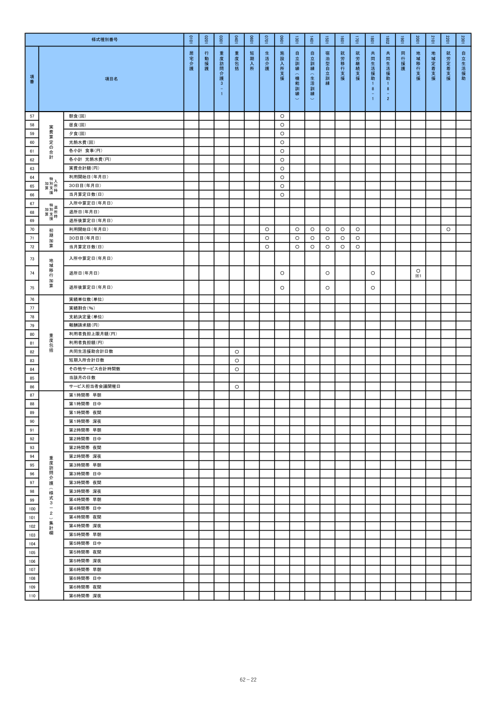
| 項番 | 項目名 | 属性 | 桁数 | 内容 | 必須 | 備考 | その他の列 |
|---|---|---|---|---|---|---|---|
| 57 | 実費算定の合計 > 朝食(回) | 様式種別番号 > 0101 居宅介護:－ 様式種別番号 > 0201 行動援護:－ 様式種別番号 > 0301 重度訪問介護3-1:－ 様式種別番号 > 0401 重度包括:－ 様式種別番号 > 0601 短期入所:－ 様式種別番号 > 0701 生活介護:－ 様式種別番号 > 0901 施設入所支援:○ 様式種別番号 > 1301 自立訓練（機能訓練）:－ 様式種別番号 > 1401 自立訓練（生活訓練）:－ 様式種別番号 > 1501 宿泊型自立訓練:－ 様式種別番号 > 1601 就労移行支援:－ 様式種別番号 > 1701 就労継続支援:－ 様式種別番号 > 1801 共同生活援助18-1:－ 様式種別番号 > 1802 共同生活援助18-2:－ 様式種別番号 > 1901 同行援護:－ 様式種別番号 > 2001 地域移行支援:－ 様式種別番号 > 2101 地域定着支援:－ 様式種別番号 > 2201 就労定着支援:－ 様式種別番号 > 2301 自立生活援助:－ | |||||
| 58 | 実費算定の合計 > 昼食(回) | 様式種別番号 > 0101 居宅介護:－ 様式種別番号 > 0201 行動援護:－ 様式種別番号 > 0301 重度訪問介護3-1:－ 様式種別番号 > 0401 重度包括:－ 様式種別番号 > 0601 短期入所:－ 様式種別番号 > 0701 生活介護:－ 様式種別番号 > 0901 施設入所支援:○ 様式種別番号 > 1301 自立訓練（機能訓練）:－ 様式種別番号 > 1401 自立訓練（生活訓練）:－ 様式種別番号 > 1501 宿泊型自立訓練:－ 様式種別番号 > 1601 就労移行支援:－ 様式種別番号 > 1701 就労継続支援:－ 様式種別番号 > 1801 共同生活援助18-1:－ 様式種別番号 > 1802 共同生活援助18-2:－ 様式種別番号 > 1901 同行援護:－ 様式種別番号 > 2001 地域移行支援:－ 様式種別番号 > 2101 地域定着支援:－ 様式種別番号 > 2201 就労定着支援:－ 様式種別番号 > 2301 自立生活援助:－ | |||||
| 59 | 実費算定の合計 > 夕食(回) | 様式種別番号 > 0101 居宅介護:－ 様式種別番号 > 0201 行動援護:－ 様式種別番号 > 0301 重度訪問介護3-1:－ 様式種別番号 > 0401 重度包括:－ 様式種別番号 > 0601 短期入所:－ 様式種別番号 > 0701 生活介護:－ 様式種別番号 > 0901 施設入所支援:○ 様式種別番号 > 1301 自立訓練（機能訓練）:－ 様式種別番号 > 1401 自立訓練（生活訓練）:－ 様式種別番号 > 1501 宿泊型自立訓練:－ 様式種別番号 > 1601 就労移行支援:－ 様式種別番号 > 1701 就労継続支援:－ 様式種別番号 > 1801 共同生活援助18-1:－ 様式種別番号 > 1802 共同生活援助18-2:－ 様式種別番号 > 1901 同行援護:－ 様式種別番号 > 2001 地域移行支援:－ 様式種別番号 > 2101 地域定着支援:－ 様式種別番号 > 2201 就労定着支援:－ 様式種別番号 > 2301 自立生活援助:－ | |||||
| 60 | 実費算定の合計 > 光熱水費(回) | 様式種別番号 > 0101 居宅介護:－ 様式種別番号 > 0201 行動援護:－ 様式種別番号 > 0301 重度訪問介護3-1:－ 様式種別番号 > 0401 重度包括:－ 様式種別番号 > 0601 短期入所:－ 様式種別番号 > 0701 生活介護:－ 様式種別番号 > 0901 施設入所支援:○ 様式種別番号 > 1301 自立訓練（機能訓練）:－ 様式種別番号 > 1401 自立訓練（生活訓練）:－ 様式種別番号 > 1501 宿泊型自立訓練:－ 様式種別番号 > 1601 就労移行支援:－ 様式種別番号 > 1701 就労継続支援:－ 様式種別番号 > 1801 共同生活援助18-1:－ 様式種別番号 > 1802 共同生活援助18-2:－ 様式種別番号 > 1901 同行援護:－ 様式種別番号 > 2001 地域移行支援:－ 様式種別番号 > 2101 地域定着支援:－ 様式種別番号 > 2201 就労定着支援:－ 様式種別番号 > 2301 自立生活援助:－ | |||||
| 61 | 実費算定の合計 > 各小計 食事(円) | 様式種別番号 > 0101 居宅介護:－ 様式種別番号 > 0201 行動援護:－ 様式種別番号 > 0301 重度訪問介護3-1:－ 様式種別番号 > 0401 重度包括:－ 様式種別番号 > 0601 短期入所:－ 様式種別番号 > 0701 生活介護:－ 様式種別番号 > 0901 施設入所支援:○ 様式種別番号 > 1301 自立訓練（機能訓練）:－ 様式種別番号 > 1401 自立訓練（生活訓練）:－ 様式種別番号 > 1501 宿泊型自立訓練:－ 様式種別番号 > 1601 就労移行支援:－ 様式種別番号 > 1701 就労継続支援:－ 様式種別番号 > 1801 共同生活援助18-1:－ 様式種別番号 > 1802 共同生活援助18-2:－ 様式種別番号 > 1901 同行援護:－ 様式種別番号 > 2001 地域移行支援:－ 様式種別番号 > 2101 地域定着支援:－ 様式種別番号 > 2201 就労定着支援:－ 様式種別番号 > 2301 自立生活援助:－ | |||||
| 62 | 実費算定の合計 > 各小計 光熱水費(円) | 様式種別番号 > 0101 居宅介護:－ 様式種別番号 > 0201 行動援護:－ 様式種別番号 > 0301 重度訪問介護3-1:－ 様式種別番号 > 0401 重度包括:－ 様式種別番号 > 0601 短期入所:－ 様式種別番号 > 0701 生活介護:－ 様式種別番号 > 0901 施設入所支援:○ 様式種別番号 > 1301 自立訓練（機能訓練）:－ 様式種別番号 > 1401 自立訓練（生活訓練）:－ 様式種別番号 > 1501 宿泊型自立訓練:－ 様式種別番号 > 1601 就労移行支援:－ 様式種別番号 > 1701 就労継続支援:－ 様式種別番号 > 1801 共同生活援助18-1:－ 様式種別番号 > 1802 共同生活援助18-2:－ 様式種別番号 > 1901 同行援護:－ 様式種別番号 > 2001 地域移行支援:－ 様式種別番号 > 2101 地域定着支援:－ 様式種別番号 > 2201 就労定着支援:－ 様式種別番号 > 2301 自立生活援助:－ | |||||
| 63 | 実費算定の合計 > 実費合計額(円) | 様式種別番号 > 0101 居宅介護:－ 様式種別番号 > 0201 行動援護:－ 様式種別番号 > 0301 重度訪問介護3-1:－ 様式種別番号 > 0401 重度包括:－ 様式種別番号 > 0601 短期入所:－ 様式種別番号 > 0701 生活介護:－ 様式種別番号 > 0901 施設入所支援:○ 様式種別番号 > 1301 自立訓練（機能訓練）:－ 様式種別番号 > 1401 自立訓練（生活訓練）:－ 様式種別番号 > 1501 宿泊型自立訓練:－ 様式種別番号 > 1601 就労移行支援:－ 様式種別番号 > 1701 就労継続支援:－ 様式種別番号 > 1801 共同生活援助18-1:－ 様式種別番号 > 1802 共同生活援助18-2:－ 様式種別番号 > 1901 同行援護:－ 様式種別番号 > 2001 地域移行支援:－ 様式種別番号 > 2101 地域定着支援:－ 様式種別番号 > 2201 就労定着支援:－ 様式種別番号 > 2301 自立生活援助:－ | |||||
| 64 | 特別加算 入所時 > 利用開始日(年月日) | 様式種別番号 > 0101 居宅介護:－ 様式種別番号 > 0201 行動援護:－ 様式種別番号 > 0301 重度訪問介護3-1:－ 様式種別番号 > 0401 重度包括:－ 様式種別番号 > 0601 短期入所:－ 様式種別番号 > 0701 生活介護:－ 様式種別番号 > 0901 施設入所支援:○ 様式種別番号 > 1301 自立訓練（機能訓練）:－ 様式種別番号 > 1401 自立訓練（生活訓練）:－ 様式種別番号 > 1501 宿泊型自立訓練:－ 様式種別番号 > 1601 就労移行支援:－ 様式種別番号 > 1701 就労継続支援:－ 様式種別番号 > 1801 共同生活援助18-1:－ 様式種別番号 > 1802 共同生活援助18-2:－ 様式種別番号 > 1901 同行援護:－ 様式種別番号 > 2001 地域移行支援:－ 様式種別番号 > 2101 地域定着支援:－ 様式種別番号 > 2201 就労定着支援:－ 様式種別番号 > 2301 自立生活援助:－ | |||||
| 65 | 特別加算 入所時 > 30日目(年月日) | 様式種別番号 > 0101 居宅介護:－ 様式種別番号 > 0201 行動援護:－ 様式種別番号 > 0301 重度訪問介護3-1:－ 様式種別番号 > 0401 重度包括:－ 様式種別番号 > 0601 短期入所:－ 様式種別番号 > 0701 生活介護:－ 様式種別番号 > 0901 施設入所支援:○ 様式種別番号 > 1301 自立訓練（機能訓練）:－ 様式種別番号 > 1401 自立訓練（生活訓練）:－ 様式種別番号 > 1501 宿泊型自立訓練:－ 様式種別番号 > 1601 就労移行支援:－ 様式種別番号 > 1701 就労継続支援:－ 様式種別番号 > 1801 共同生活援助18-1:－ 様式種別番号 > 1802 共同生活援助18-2:－ 様式種別番号 > 1901 同行援護:－ 様式種別番号 > 2001 地域移行支援:－ 様式種別番号 > 2101 地域定着支援:－ 様式種別番号 > 2201 就労定着支援:－ 様式種別番号 > 2301 自立生活援助:－ | |||||
| 66 | 特別加算 入所時 > 当月算定日数(日) | 様式種別番号 > 0101 居宅介護:－ 様式種別番号 > 0201 行動援護:－ 様式種別番号 > 0301 重度訪問介護3-1:－ 様式種別番号 > 0401 重度包括:－ 様式種別番号 > 0601 短期入所:－ 様式種別番号 > 0701 生活介護:－ 様式種別番号 > 0901 施設入所支援:○ 様式種別番号 > 1301 自立訓練（機能訓練）:－ 様式種別番号 > 1401 自立訓練（生活訓練）:－ 様式種別番号 > 1501 宿泊型自立訓練:－ 様式種別番号 > 1601 就労移行支援:－ 様式種別番号 > 1701 就労継続支援:－ 様式種別番号 > 1801 共同生活援助18-1:－ 様式種別番号 > 1802 共同生活援助18-2:－ 様式種別番号 > 1901 同行援護:－ 様式種別番号 > 2001 地域移行支援:－ 様式種別番号 > 2101 地域定着支援:－ 様式種別番号 > 2201 就労定着支援:－ 様式種別番号 > 2301 自立生活援助:－ | |||||
| 67 | 特別加算 退所時 > 入所中算定日(年月日) | 様式種別番号 > 0101 居宅介護:－ 様式種別番号 > 0201 行動援護:－ 様式種別番号 > 0301 重度訪問介護3-1:－ 様式種別番号 > 0401 重度包括:－ 様式種別番号 > 0601 短期入所:－ 様式種別番号 > 0701 生活介護:－ 様式種別番号 > 0901 施設入所支援:－ 様式種別番号 > 1301 自立訓練（機能訓練）:－ 様式種別番号 > 1401 自立訓練（生活訓練）:－ 様式種別番号 > 1501 宿泊型自立訓練:－ 様式種別番号 > 1601 就労移行支援:－ 様式種別番号 > 1701 就労継続支援:－ 様式種別番号 > 1801 共同生活援助18-1:－ 様式種別番号 > 1802 共同生活援助18-2:－ 様式種別番号 > 1901 同行援護:－ 様式種別番号 > 2001 地域移行支援:－ 様式種別番号 > 2101 地域定着支援:－ 様式種別番号 > 2201 就労定着支援:－ 様式種別番号 > 2301 自立生活援助:－ | |||||
| 68 | 特別加算 退所時 > 退所日(年月日) | 様式種別番号 > 0101 居宅介護:－ 様式種別番号 > 0201 行動援護:－ 様式種別番号 > 0301 重度訪問介護3-1:－ 様式種別番号 > 0401 重度包括:－ 様式種別番号 > 0601 短期入所:－ 様式種別番号 > 0701 生活介護:－ 様式種別番号 > 0901 施設入所支援:－ 様式種別番号 > 1301 自立訓練（機能訓練）:－ 様式種別番号 > 1401 自立訓練（生活訓練）:－ 様式種別番号 > 1501 宿泊型自立訓練:－ 様式種別番号 > 1601 就労移行支援:－ 様式種別番号 > 1701 就労継続支援:－ 様式種別番号 > 1801 共同生活援助18-1:－ 様式種別番号 > 1802 共同生活援助18-2:－ 様式種別番号 > 1901 同行援護:－ 様式種別番号 > 2001 地域移行支援:－ 様式種別番号 > 2101 地域定着支援:－ 様式種別番号 > 2201 就労定着支援:－ 様式種別番号 > 2301 自立生活援助:－ | |||||
| 69 | 特別加算 退所時 > 退所後算定日(年月日) | 様式種別番号 > 0101 居宅介護:－ 様式種別番号 > 0201 行動援護:－ 様式種別番号 > 0301 重度訪問介護3-1:－ 様式種別番号 > 0401 重度包括:－ 様式種別番号 > 0601 短期入所:－ 様式種別番号 > 0701 生活介護:－ 様式種別番号 > 0901 施設入所支援:－ 様式種別番号 > 1301 自立訓練（機能訓練）:－ 様式種別番号 > 1401 自立訓練（生活訓練）:－ 様式種別番号 > 1501 宿泊型自立訓練:－ 様式種別番号 > 1601 就労移行支援:－ 様式種別番号 > 1701 就労継続支援:－ 様式種別番号 > 1801 共同生活援助18-1:－ 様式種別番号 > 1802 共同生活援助18-2:－ 様式種別番号 > 1901 同行援護:－ 様式種別番号 > 2001 地域移行支援:－ 様式種別番号 > 2101 地域定着支援:－ 様式種別番号 > 2201 就労定着支援:－ 様式種別番号 > 2301 自立生活援助:－ | |||||
| 70 | 初期加算 > 利用開始日(年月日) | 様式種別番号 > 0101 居宅介護:－ 様式種別番号 > 0201 行動援護:－ 様式種別番号 > 0301 重度訪問介護3-1:－ 様式種別番号 > 0401 重度包括:－ 様式種別番号 > 0601 短期入所:－ 様式種別番号 > 0701 生活介護:○ 様式種別番号 > 0901 施設入所支援:－ 様式種別番号 > 1301 自立訓練（機能訓練）:○ 様式種別番号 > 1401 自立訓練（生活訓練）:○ 様式種別番号 > 1501 宿泊型自立訓練:○ 様式種別番号 > 1601 就労移行支援:○ 様式種別番号 > 1701 就労継続支援:○ 様式種別番号 > 1801 共同生活援助18-1:－ 様式種別番号 > 1802 共同生活援助18-2:－ 様式種別番号 > 1901 同行援護:－ 様式種別番号 > 2001 地域移行支援:－ 様式種別番号 > 2101 地域定着支援:－ 様式種別番号 > 2201 就労定着支援:○ 様式種別番号 > 2301 自立生活援助:－ | |||||
| 71 | 初期加算 > 30日目(年月日) | 様式種別番号 > 0101 居宅介護:－ 様式種別番号 > 0201 行動援護:－ 様式種別番号 > 0301 重度訪問介護3-1:－ 様式種別番号 > 0401 重度包括:－ 様式種別番号 > 0601 短期入所:－ 様式種別番号 > 0701 生活介護:○ 様式種別番号 > 0901 施設入所支援:－ 様式種別番号 > 1301 自立訓練（機能訓練）:○ 様式種別番号 > 1401 自立訓練（生活訓練）:○ 様式種別番号 > 1501 宿泊型自立訓練:○ 様式種別番号 > 1601 就労移行支援:○ 様式種別番号 > 1701 就労継続支援:○ 様式種別番号 > 1801 共同生活援助18-1:－ 様式種別番号 > 1802 共同生活援助18-2:－ 様式種別番号 > 1901 同行援護:－ 様式種別番号 > 2001 地域移行支援:－ 様式種別番号 > 2101 地域定着支援:－ 様式種別番号 > 2201 就労定着支援:－ 様式種別番号 > 2301 自立生活援助:－ | |||||
| 72 | 初期加算 > 当月算定日数(日) | 様式種別番号 > 0101 居宅介護:－ 様式種別番号 > 0201 行動援護:－ 様式種別番号 > 0301 重度訪問介護3-1:－ 様式種別番号 > 0401 重度包括:－ 様式種別番号 > 0601 短期入所:－ 様式種別番号 > 0701 生活介護:○ 様式種別番号 > 0901 施設入所支援:－ 様式種別番号 > 1301 自立訓練（機能訓練）:○ 様式種別番号 > 1401 自立訓練（生活訓練）:○ 様式種別番号 > 1501 宿泊型自立訓練:○ 様式種別番号 > 1601 就労移行支援:○ 様式種別番号 > 1701 就労継続支援:○ 様式種別番号 > 1801 共同生活援助18-1:－ 様式種別番号 > 1802 共同生活援助18-2:－ 様式種別番号 > 1901 同行援護:－ 様式種別番号 > 2001 地域移行支援:－ 様式種別番号 > 2101 地域定着支援:－ 様式種別番号 > 2201 就労定着支援:－ 様式種別番号 > 2301 自立生活援助:－ | |||||
| 73 | 地域移行加算 > 入所中算定日(年月日) | 様式種別番号 > 0101 居宅介護:－ 様式種別番号 > 0201 行動援護:－ 様式種別番号 > 0301 重度訪問介護3-1:－ 様式種別番号 > 0401 重度包括:－ 様式種別番号 > 0601 短期入所:－ 様式種別番号 > 0701 生活介護:－ 様式種別番号 > 0901 施設入所支援:－ 様式種別番号 > 1301 自立訓練（機能訓練）:－ 様式種別番号 > 1401 自立訓練（生活訓練）:－ 様式種別番号 > 1501 宿泊型自立訓練:－ 様式種別番号 > 1601 就労移行支援:－ 様式種別番号 > 1701 就労継続支援:－ 様式種別番号 > 1801 共同生活援助18-1:－ 様式種別番号 > 1802 共同生活援助18-2:－ 様式種別番号 > 1901 同行援護:－ 様式種別番号 > 2001 地域移行支援:－ 様式種別番号 > 2101 地域定着支援:－ 様式種別番号 > 2201 就労定着支援:－ 様式種別番号 > 2301 自立生活援助:－ | |||||
| 74 | 地域移行加算 > 退所日(年月日) | 様式種別番号 > 0101 居宅介護:－ 様式種別番号 > 0201 行動援護:－ 様式種別番号 > 0301 重度訪問介護3-1:－ 様式種別番号 > 0401 重度包括:－ 様式種別番号 > 0601 短期入所:－ 様式種別番号 > 0701 生活介護:－ 様式種別番号 > 0901 施設入所支援:○ 様式種別番号 > 1301 自立訓練（機能訓練）:－ 様式種別番号 > 1401 自立訓練（生活訓練）:－ 様式種別番号 > 1501 宿泊型自立訓練:○ 様式種別番号 > 1601 就労移行支援:－ 様式種別番号 > 1701 就労継続支援:－ 様式種別番号 > 1801 共同生活援助18-1:○ 様式種別番号 > 1802 共同生活援助18-2:－ 様式種別番号 > 1901 同行援護:－ 様式種別番号 > 2001 地域移行支援:○ 様式種別番号 > 2101 地域定着支援:－ 様式種別番号 > 2201 就労定着支援:－ 様式種別番号 > 2301 自立生活援助:－ | |||||
| 75 | 地域移行加算 > 退所後算定日(年月日) | 様式種別番号 > 0101 居宅介護:－ 様式種別番号 > 0201 行動援護:－ 様式種別番号 > 0301 重度訪問介護3-1:－ 様式種別番号 > 0401 重度包括:－ 様式種別番号 > 0601 短期入所:－ 様式種別番号 > 0701 生活介護:－ 様式種別番号 > 0901 施設入所支援:○ 様式種別番号 > 1301 自立訓練（機能訓練）:－ 様式種別番号 > 1401 自立訓練（生活訓練）:－ 様式種別番号 > 1501 宿泊型自立訓練:○ 様式種別番号 > 1601 就労移行支援:－ 様式種別番号 > 1701 就労継続支援:－ 様式種別番号 > 1801 共同生活援助18-1:○ 様式種別番号 > 1802 共同生活援助18-2:－ 様式種別番号 > 1901 同行援護:－ 様式種別番号 > 2001 地域移行支援:－ 様式種別番号 > 2101 地域定着支援:－ 様式種別番号 > 2201 就労定着支援:－ 様式種別番号 > 2301 自立生活援助:－ | |||||
| 76 | 重度包括 > 実績単位数(単位) | 様式種別番号 > 0101 居宅介護:－ 様式種別番号 > 0201 行動援護:－ 様式種別番号 > 0301 重度訪問介護3-1:－ 様式種別番号 > 0401 重度包括:－ 様式種別番号 > 0601 短期入所:－ 様式種別番号 > 0701 生活介護:－ 様式種別番号 > 0901 施設入所支援:－ 様式種別番号 > 1301 自立訓練（機能訓練）:－ 様式種別番号 > 1401 自立訓練（生活訓練）:－ 様式種別番号 > 1501 宿泊型自立訓練:－ 様式種別番号 > 1601 就労移行支援:－ 様式種別番号 > 1701 就労継続支援:－ 様式種別番号 > 1801 共同生活援助18-1:－ 様式種別番号 > 1802 共同生活援助18-2:－ 様式種別番号 > 1901 同行援護:－ 様式種別番号 > 2001 地域移行支援:－ 様式種別番号 > 2101 地域定着支援:－ 様式種別番号 > 2201 就労定着支援:－ 様式種別番号 > 2301 自立生活援助:－ | |||||
| 77 | 重度包括 > 実績割合(%) | 様式種別番号 > 0101 居宅介護:－ 様式種別番号 > 0201 行動援護:－ 様式種別番号 > 0301 重度訪問介護3-1:－ 様式種別番号 > 0401 重度包括:－ 様式種別番号 > 0601 短期入所:－ 様式種別番号 > 0701 生活介護:－ 様式種別番号 > 0901 施設入所支援:－ 様式種別番号 > 1301 自立訓練（機能訓練）:－ 様式種別番号 > 1401 自立訓練（生活訓練）:－ 様式種別番号 > 1501 宿泊型自立訓練:－ 様式種別番号 > 1601 就労移行支援:－ 様式種別番号 > 1701 就労継続支援:－ 様式種別番号 > 1801 共同生活援助18-1:－ 様式種別番号 > 1802 共同生活援助18-2:－ 様式種別番号 > 1901 同行援護:－ 様式種別番号 > 2001 地域移行支援:－ 様式種別番号 > 2101 地域定着支援:－ 様式種別番号 > 2201 就労定着支援:－ 様式種別番号 > 2301 自立生活援助:－ | |||||
| 78 | 重度包括 > 支給決定量(単位) | 様式種別番号 > 0101 居宅介護:－ 様式種別番号 > 0201 行動援護:－ 様式種別番号 > 0301 重度訪問介護3-1:－ 様式種別番号 > 0401 重度包括:－ 様式種別番号 > 0601 短期入所:－ 様式種別番号 > 0701 生活介護:－ 様式種別番号 > 0901 施設入所支援:－ 様式種別番号 > 1301 自立訓練（機能訓練）:－ 様式種別番号 > 1401 自立訓練（生活訓練）:－ 様式種別番号 > 1501 宿泊型自立訓練:－ 様式種別番号 > 1601 就労移行支援:－ 様式種別番号 > 1701 就労継続支援:－ 様式種別番号 > 1801 共同生活援助18-1:－ 様式種別番号 > 1802 共同生活援助18-2:－ 様式種別番号 > 1901 同行援護:－ 様式種別番号 > 2001 地域移行支援:－ 様式種別番号 > 2101 地域定着支援:－ 様式種別番号 > 2201 就労定着支援:－ 様式種別番号 > 2301 自立生活援助:－ | |||||
| 79 | 重度包括 > 報酬請求額(円) | 様式種別番号 > 0101 居宅介護:－ 様式種別番号 > 0201 行動援護:－ 様式種別番号 > 0301 重度訪問介護3-1:－ 様式種別番号 > 0401 重度包括:－ 様式種別番号 > 0601 短期入所:－ 様式種別番号 > 0701 生活介護:－ 様式種別番号 > 0901 施設入所支援:－ 様式種別番号 > 1301 自立訓練（機能訓練）:－ 様式種別番号 > 1401 自立訓練（生活訓練）:－ 様式種別番号 > 1501 宿泊型自立訓練:－ 様式種別番号 > 1601 就労移行支援:－ 様式種別番号 > 1701 就労継続支援:－ 様式種別番号 > 1801 共同生活援助18-1:－ 様式種別番号 > 1802 共同生活援助18-2:－ 様式種別番号 > 1901 同行援護:－ 様式種別番号 > 2001 地域移行支援:－ 様式種別番号 > 2101 地域定着支援:－ 様式種別番号 > 2201 就労定着支援:－ 様式種別番号 > 2301 自立生活援助:－ | |||||
| 80 | 重度包括 > 利用者負担上限月額(円) | 様式種別番号 > 0101 居宅介護:－ 様式種別番号 > 0201 行動援護:－ 様式種別番号 > 0301 重度訪問介護3-1:－ 様式種別番号 > 0401 重度包括:－ 様式種別番号 > 0601 短期入所:－ 様式種別番号 > 0701 生活介護:－ 様式種別番号 > 0901 施設入所支援:－ 様式種別番号 > 1301 自立訓練（機能訓練）:－ 様式種別番号 > 1401 自立訓練（生活訓練）:－ 様式種別番号 > 1501 宿泊型自立訓練:－ 様式種別番号 > 1601 就労移行支援:－ 様式種別番号 > 1701 就労継続支援:－ 様式種別番号 > 1801 共同生活援助18-1:－ 様式種別番号 > 1802 共同生活援助18-2:－ 様式種別番号 > 1901 同行援護:－ 様式種別番号 > 2001 地域移行支援:－ 様式種別番号 > 2101 地域定着支援:－ 様式種別番号 > 2201 就労定着支援:－ 様式種別番号 > 2301 自立生活援助:－ | |||||
| 81 | 重度包括 > 利用者負担額(円) | 様式種別番号 > 0101 居宅介護:－ 様式種別番号 > 0201 行動援護:－ 様式種別番号 > 0301 重度訪問介護3-1:－ 様式種別番号 > 0401 重度包括:－ 様式種別番号 > 0601 短期入所:－ 様式種別番号 > 0701 生活介護:－ 様式種別番号 > 0901 施設入所支援:－ 様式種別番号 > 1301 自立訓練（機能訓練）:－ 様式種別番号 > 1401 自立訓練（生活訓練）:－ 様式種別番号 > 1501 宿泊型自立訓練:－ 様式種別番号 > 1601 就労移行支援:－ 様式種別番号 > 1701 就労継続支援:－ 様式種別番号 > 1801 共同生活援助18-1:－ 様式種別番号 > 1802 共同生活援助18-2:－ 様式種別番号 > 1901 同行援護:－ 様式種別番号 > 2001 地域移行支援:－ 様式種別番号 > 2101 地域定着支援:－ 様式種別番号 > 2201 就労定着支援:－ 様式種別番号 > 2301 自立生活援助:－ | |||||
| 82 | 重度包括 > 共同生活援助合計日数 | 様式種別番号 > 0101 居宅介護:－ 様式種別番号 > 0201 行動援護:－ 様式種別番号 > 0301 重度訪問介護3-1:－ 様式種別番号 > 0401 重度包括:○ 様式種別番号 > 0601 短期入所:－ 様式種別番号 > 0701 生活介護:－ 様式種別番号 > 0901 施設入所支援:－ 様式種別番号 > 1301 自立訓練（機能訓練）:－ 様式種別番号 > 1401 自立訓練（生活訓練）:－ 様式種別番号 > 1501 宿泊型自立訓練:－ 様式種別番号 > 1601 就労移行支援:－ 様式種別番号 > 1701 就労継続支援:－ 様式種別番号 > 1801 共同生活援助18-1:－ 様式種別番号 > 1802 共同生活援助18-2:－ 様式種別番号 > 1901 同行援護:－ 様式種別番号 > 2001 地域移行支援:－ 様式種別番号 > 2101 地域定着支援:－ 様式種別番号 > 2201 就労定着支援:－ 様式種別番号 > 2301 自立生活援助:－ | |||||
| 83 | 重度包括 > 短期入所合計日数 | 様式種別番号 > 0101 居宅介護:－ 様式種別番号 > 0201 行動援護:－ 様式種別番号 > 0301 重度訪問介護3-1:－ 様式種別番号 > 0401 重度包括:○ 様式種別番号 > 0601 短期入所:－ 様式種別番号 > 0701 生活介護:－ 様式種別番号 > 0901 施設入所支援:－ 様式種別番号 > 1301 自立訓練（機能訓練）:－ 様式種別番号 > 1401 自立訓練（生活訓練）:－ 様式種別番号 > 1501 宿泊型自立訓練:－ 様式種別番号 > 1601 就労移行支援:－ 様式種別番号 > 1701 就労継続支援:－ 様式種別番号 > 1801 共同生活援助18-1:－ 様式種別番号 > 1802 共同生活援助18-2:－ 様式種別番号 > 1901 同行援護:－ 様式種別番号 > 2001 地域移行支援:－ 様式種別番号 > 2101 地域定着支援:－ 様式種別番号 > 2201 就労定着支援:－ 様式種別番号 > 2301 自立生活援助:－ | |||||
| 84 | 重度包括 > その他サービス合計時間数 | 様式種別番号 > 0101 居宅介護:－ 様式種別番号 > 0201 行動援護:－ 様式種別番号 > 0301 重度訪問介護3-1:－ 様式種別番号 > 0401 重度包括:○ 様式種別番号 > 0601 短期入所:－ 様式種別番号 > 0701 生活介護:－ 様式種別番号 > 0901 施設入所支援:－ 様式種別番号 > 1301 自立訓練（機能訓練）:－ 様式種別番号 > 1401 自立訓練（生活訓練）:－ 様式種別番号 > 1501 宿泊型自立訓練:－ 様式種別番号 > 1601 就労移行支援:－ 様式種別番号 > 1701 就労継続支援:－ 様式種別番号 > 1801 共同生活援助18-1:－ 様式種別番号 > 1802 共同生活援助18-2:－ 様式種別番号 > 1901 同行援護:－ 様式種別番号 > 2001 地域移行支援:－ 様式種別番号 > 2101 地域定着支援:－ 様式種別番号 > 2201 就労定着支援:－ 様式種別番号 > 2301 自立生活援助:－ | |||||
| 85 | 重度包括 > 当該月の日数 | 様式種別番号 > 0101 居宅介護:－ 様式種別番号 > 0201 行動援護:－ 様式種別番号 > 0301 重度訪問介護3-1:－ 様式種別番号 > 0401 重度包括:－ 様式種別番号 > 0601 短期入所:－ 様式種別番号 > 0701 生活介護:－ 様式種別番号 > 0901 施設入所支援:－ 様式種別番号 > 1301 自立訓練（機能訓練）:－ 様式種別番号 > 1401 自立訓練（生活訓練）:－ 様式種別番号 > 1501 宿泊型自立訓練:－ 様式種別番号 > 1601 就労移行支援:－ 様式種別番号 > 1701 就労継続支援:－ 様式種別番号 > 1801 共同生活援助18-1:－ 様式種別番号 > 1802 共同生活援助18-2:－ 様式種別番号 > 1901 同行援護:－ 様式種別番号 > 2001 地域移行支援:－ 様式種別番号 > 2101 地域定着支援:－ 様式種別番号 > 2201 就労定着支援:－ 様式種別番号 > 2301 自立生活援助:－ | |||||
| 86 | 重度包括 > サービス担当者会議開催日 | 様式種別番号 > 0101 居宅介護:－ 様式種別番号 > 0201 行動援護:－ 様式種別番号 > 0301 重度訪問介護3-1:－ 様式種別番号 > 0401 重度包括:○ 様式種別番号 > 0601 短期入所:－ 様式種別番号 > 0701 生活介護:－ 様式種別番号 > 0901 施設入所支援:－ 様式種別番号 > 1301 自立訓練（機能訓練）:－ 様式種別番号 > 1401 自立訓練（生活訓練）:－ 様式種別番号 > 1501 宿泊型自立訓練:－ 様式種別番号 > 1601 就労移行支援:－ 様式種別番号 > 1701 就労継続支援:－ 様式種別番号 > 1801 共同生活援助18-1:－ 様式種別番号 > 1802 共同生活援助18-2:－ 様式種別番号 > 1901 同行援護:－ 様式種別番号 > 2001 地域移行支援:－ 様式種別番号 > 2101 地域定着支援:－ 様式種別番号 > 2201 就労定着支援:－ 様式種別番号 > 2301 自立生活援助:－ | |||||
| 87 | 重度訪問介護（様式3-2）集計欄 > 第1時間帯 早朝 | 様式種別番号 > 0101 居宅介護:－ 様式種別番号 > 0201 行動援護:－ 様式種別番号 > 0301 重度訪問介護3-1:－ 様式種別番号 > 0401 重度包括:－ 様式種別番号 > 0601 短期入所:－ 様式種別番号 > 0701 生活介護:－ 様式種別番号 > 0901 施設入所支援:－ 様式種別番号 > 1301 自立訓練（機能訓練）:－ 様式種別番号 > 1401 自立訓練（生活訓練）:－ 様式種別番号 > 1501 宿泊型自立訓練:－ 様式種別番号 > 1601 就労移行支援:－ 様式種別番号 > 1701 就労継続支援:－ 様式種別番号 > 1801 共同生活援助18-1:－ 様式種別番号 > 1802 共同生活援助18-2:－ 様式種別番号 > 1901 同行援護:－ 様式種別番号 > 2001 地域移行支援:－ 様式種別番号 > 2101 地域定着支援:－ 様式種別番号 > 2201 就労定着支援:－ 様式種別番号 > 2301 自立生活援助:－ | |||||
| 88 | 重度訪問介護（様式3-2）集計欄 > 第1時間帯 日中 | 様式種別番号 > 0101 居宅介護:－ 様式種別番号 > 0201 行動援護:－ 様式種別番号 > 0301 重度訪問介護3-1:－ 様式種別番号 > 0401 重度包括:－ 様式種別番号 > 0601 短期入所:－ 様式種別番号 > 0701 生活介護:－ 様式種別番号 > 0901 施設入所支援:－ 様式種別番号 > 1301 自立訓練（機能訓練）:－ 様式種別番号 > 1401 自立訓練（生活訓練）:－ 様式種別番号 > 1501 宿泊型自立訓練:－ 様式種別番号 > 1601 就労移行支援:－ 様式種別番号 > 1701 就労継続支援:－ 様式種別番号 > 1801 共同生活援助18-1:－ 様式種別番号 > 1802 共同生活援助18-2:－ 様式種別番号 > 1901 同行援護:－ 様式種別番号 > 2001 地域移行支援:－ 様式種別番号 > 2101 地域定着支援:－ 様式種別番号 > 2201 就労定着支援:－ 様式種別番号 > 2301 自立生活援助:－ | |||||
| 89 | 重度訪問介護（様式3-2）集計欄 > 第1時間帯 夜間 | 様式種別番号 > 0101 居宅介護:－ 様式種別番号 > 0201 行動援護:－ 様式種別番号 > 0301 重度訪問介護3-1:－ 様式種別番号 > 0401 重度包括:－ 様式種別番号 > 0601 短期入所:－ 様式種別番号 > 0701 生活介護:－ 様式種別番号 > 0901 施設入所支援:－ 様式種別番号 > 1301 自立訓練（機能訓練）:－ 様式種別番号 > 1401 自立訓練（生活訓練）:－ 様式種別番号 > 1501 宿泊型自立訓練:－ 様式種別番号 > 1601 就労移行支援:－ 様式種別番号 > 1701 就労継続支援:－ 様式種別番号 > 1801 共同生活援助18-1:－ 様式種別番号 > 1802 共同生活援助18-2:－ 様式種別番号 > 1901 同行援護:－ 様式種別番号 > 2001 地域移行支援:－ 様式種別番号 > 2101 地域定着支援:－ 様式種別番号 > 2201 就労定着支援:－ 様式種別番号 > 2301 自立生活援助:－ | |||||
| 90 | 重度訪問介護（様式3-2）集計欄 > 第1時間帯 深夜 | 様式種別番号 > 0101 居宅介護:－ 様式種別番号 > 0201 行動援護:－ 様式種別番号 > 0301 重度訪問介護3-1:－ 様式種別番号 > 0401 重度包括:－ 様式種別番号 > 0601 短期入所:－ 様式種別番号 > 0701 生活介護:－ 様式種別番号 > 0901 施設入所支援:－ 様式種別番号 > 1301 自立訓練（機能訓練）:－ 様式種別番号 > 1401 自立訓練（生活訓練）:－ 様式種別番号 > 1501 宿泊型自立訓練:－ 様式種別番号 > 1601 就労移行支援:－ 様式種別番号 > 1701 就労継続支援:－ 様式種別番号 > 1801 共同生活援助18-1:－ 様式種別番号 > 1802 共同生活援助18-2:－ 様式種別番号 > 1901 同行援護:－ 様式種別番号 > 2001 地域移行支援:－ 様式種別番号 > 2101 地域定着支援:－ 様式種別番号 > 2201 就労定着支援:－ 様式種別番号 > 2301 自立生活援助:－ | |||||
| 91 | 重度訪問介護（様式3-2）集計欄 > 第2時間帯 早朝 | 様式種別番号 > 0101 居宅介護:－ 様式種別番号 > 0201 行動援護:－ 様式種別番号 > 0301 重度訪問介護3-1:－ 様式種別番号 > 0401 重度包括:－ 様式種別番号 > 0601 短期入所:－ 様式種別番号 > 0701 生活介護:－ 様式種別番号 > 0901 施設入所支援:－ 様式種別番号 > 1301 自立訓練（機能訓練）:－ 様式種別番号 > 1401 自立訓練（生活訓練）:－ 様式種別番号 > 1501 宿泊型自立訓練:－ 様式種別番号 > 1601 就労移行支援:－ 様式種別番号 > 1701 就労継続支援:－ 様式種別番号 > 1801 共同生活援助18-1:－ 様式種別番号 > 1802 共同生活援助18-2:－ 様式種別番号 > 1901 同行援護:－ 様式種別番号 > 2001 地域移行支援:－ 様式種別番号 > 2101 地域定着支援:－ 様式種別番号 > 2201 就労定着支援:－ 様式種別番号 > 2301 自立生活援助:－ | |||||
| 92 | 重度訪問介護（様式3-2）集計欄 > 第2時間帯 日中 | 様式種別番号 > 0101 居宅介護:－ 様式種別番号 > 0201 行動援護:－ 様式種別番号 > 0301 重度訪問介護3-1:－ 様式種別番号 > 0401 重度包括:－ 様式種別番号 > 0601 短期入所:－ 様式種別番号 > 0701 生活介護:－ 様式種別番号 > 0901 施設入所支援:－ 様式種別番号 > 1301 自立訓練（機能訓練）:－ 様式種別番号 > 1401 自立訓練（生活訓練）:－ 様式種別番号 > 1501 宿泊型自立訓練:－ 様式種別番号 > 1601 就労移行支援:－ 様式種別番号 > 1701 就労継続支援:－ 様式種別番号 > 1801 共同生活援助18-1:－ 様式種別番号 > 1802 共同生活援助18-2:－ 様式種別番号 > 1901 同行援護:－ 様式種別番号 > 2001 地域移行支援:－ 様式種別番号 > 2101 地域定着支援:－ 様式種別番号 > 2201 就労定着支援:－ 様式種別番号 > 2301 自立生活援助:－ | |||||
| 93 | 重度訪問介護（様式3-2）集計欄 > 第2時間帯 夜間 | 様式種別番号 > 0101 居宅介護:－ 様式種別番号 > 0201 行動援護:－ 様式種別番号 > 0301 重度訪問介護3-1:－ 様式種別番号 > 0401 重度包括:－ 様式種別番号 > 0601 短期入所:－ 様式種別番号 > 0701 生活介護:－ 様式種別番号 > 0901 施設入所支援:－ 様式種別番号 > 1301 自立訓練（機能訓練）:－ 様式種別番号 > 1401 自立訓練（生活訓練）:－ 様式種別番号 > 1501 宿泊型自立訓練:－ 様式種別番号 > 1601 就労移行支援:－ 様式種別番号 > 1701 就労継続支援:－ 様式種別番号 > 1801 共同生活援助18-1:－ 様式種別番号 > 1802 共同生活援助18-2:－ 様式種別番号 > 1901 同行援護:－ 様式種別番号 > 2001 地域移行支援:－ 様式種別番号 > 2101 地域定着支援:－ 様式種別番号 > 2201 就労定着支援:－ 様式種別番号 > 2301 自立生活援助:－ | |||||
| 94 | 重度訪問介護（様式3-2）集計欄 > 第2時間帯 深夜 | 様式種別番号 > 0101 居宅介護:－ 様式種別番号 > 0201 行動援護:－ 様式種別番号 > 0301 重度訪問介護3-1:－ 様式種別番号 > 0401 重度包括:－ 様式種別番号 > 0601 短期入所:－ 様式種別番号 > 0701 生活介護:－ 様式種別番号 > 0901 施設入所支援:－ 様式種別番号 > 1301 自立訓練（機能訓練）:－ 様式種別番号 > 1401 自立訓練（生活訓練）:－ 様式種別番号 > 1501 宿泊型自立訓練:－ 様式種別番号 > 1601 就労移行支援:－ 様式種別番号 > 1701 就労継続支援:－ 様式種別番号 > 1801 共同生活援助18-1:－ 様式種別番号 > 1802 共同生活援助18-2:－ 様式種別番号 > 1901 同行援護:－ 様式種別番号 > 2001 地域移行支援:－ 様式種別番号 > 2101 地域定着支援:－ 様式種別番号 > 2201 就労定着支援:－ 様式種別番号 > 2301 自立生活援助:－ | |||||
| 95 | 重度訪問介護（様式3-2）集計欄 > 第3時間帯 早朝 | 様式種別番号 > 0101 居宅介護:－ 様式種別番号 > 0201 行動援護:－ 様式種別番号 > 0301 重度訪問介護3-1:－ 様式種別番号 > 0401 重度包括:－ 様式種別番号 > 0601 短期入所:－ 様式種別番号 > 0701 生活介護:－ 様式種別番号 > 0901 施設入所支援:－ 様式種別番号 > 1301 自立訓練（機能訓練）:－ 様式種別番号 > 1401 自立訓練（生活訓練）:－ 様式種別番号 > 1501 宿泊型自立訓練:－ 様式種別番号 > 1601 就労移行支援:－ 様式種別番号 > 1701 就労継続支援:－ 様式種別番号 > 1801 共同生活援助18-1:－ 様式種別番号 > 1802 共同生活援助18-2:－ 様式種別番号 > 1901 同行援護:－ 様式種別番号 > 2001 地域移行支援:－ 様式種別番号 > 2101 地域定着支援:－ 様式種別番号 > 2201 就労定着支援:－ 様式種別番号 > 2301 自立生活援助:－ | |||||
| 96 | 重度訪問介護（様式3-2）集計欄 > 第3時間帯 日中 | 様式種別番号 > 0101 居宅介護:－ 様式種別番号 > 0201 行動援護:－ 様式種別番号 > 0301 重度訪問介護3-1:－ 様式種別番号 > 0401 重度包括:－ 様式種別番号 > 0601 短期入所:－ 様式種別番号 > 0701 生活介護:－ 様式種別番号 > 0901 施設入所支援:－ 様式種別番号 > 1301 自立訓練（機能訓練）:－ 様式種別番号 > 1401 自立訓練（生活訓練）:－ 様式種別番号 > 1501 宿泊型自立訓練:－ 様式種別番号 > 1601 就労移行支援:－ 様式種別番号 > 1701 就労継続支援:－ 様式種別番号 > 1801 共同生活援助18-1:－ 様式種別番号 > 1802 共同生活援助18-2:－ 様式種別番号 > 1901 同行援護:－ 様式種別番号 > 2001 地域移行支援:－ 様式種別番号 > 2101 地域定着支援:－ 様式種別番号 > 2201 就労定着支援:－ 様式種別番号 > 2301 自立生活援助:－ | |||||
| 97 | 重度訪問介護（様式3-2）集計欄 > 第3時間帯 夜間 | 様式種別番号 > 0101 居宅介護:－ 様式種別番号 > 0201 行動援護:－ 様式種別番号 > 0301 重度訪問介護3-1:－ 様式種別番号 > 0401 重度包括:－ 様式種別番号 > 0601 短期入所:－ 様式種別番号 > 0701 生活介護:－ 様式種別番号 > 0901 施設入所支援:－ 様式種別番号 > 1301 自立訓練（機能訓練）:－ 様式種別番号 > 1401 自立訓練（生活訓練）:－ 様式種別番号 > 1501 宿泊型自立訓練:－ 様式種別番号 > 1601 就労移行支援:－ 様式種別番号 > 1701 就労継続支援:－ 様式種別番号 > 1801 共同生活援助18-1:－ 様式種別番号 > 1802 共同生活援助18-2:－ 様式種別番号 > 1901 同行援護:－ 様式種別番号 > 2001 地域移行支援:－ 様式種別番号 > 2101 地域定着支援:－ 様式種別番号 > 2201 就労定着支援:－ 様式種別番号 > 2301 自立生活援助:－ | |||||
| 98 | 重度訪問介護（様式3-2）集計欄 > 第3時間帯 深夜 | 様式種別番号 > 0101 居宅介護:－ 様式種別番号 > 0201 行動援護:－ 様式種別番号 > 0301 重度訪問介護3-1:－ 様式種別番号 > 0401 重度包括:－ 様式種別番号 > 0601 短期入所:－ 様式種別番号 > 0701 生活介護:－ 様式種別番号 > 0901 施設入所支援:－ 様式種別番号 > 1301 自立訓練（機能訓練）:－ 様式種別番号 > 1401 自立訓練（生活訓練）:－ 様式種別番号 > 1501 宿泊型自立訓練:－ 様式種別番号 > 1601 就労移行支援:－ 様式種別番号 > 1701 就労継続支援:－ 様式種別番号 > 1801 共同生活援助18-1:－ 様式種別番号 > 1802 共同生活援助18-2:－ 様式種別番号 > 1901 同行援護:－ 様式種別番号 > 2001 地域移行支援:－ 様式種別番号 > 2101 地域定着支援:－ 様式種別番号 > 2201 就労定着支援:－ 様式種別番号 > 2301 自立生活援助:－ | |||||
| 99 | 重度訪問介護（様式3-2）集計欄 > 第4時間帯 早朝 | 様式種別番号 > 0101 居宅介護:－ 様式種別番号 > 0201 行動援護:－ 様式種別番号 > 0301 重度訪問介護3-1:－ 様式種別番号 > 0401 重度包括:－ 様式種別番号 > 0601 短期入所:－ 様式種別番号 > 0701 生活介護:－ 様式種別番号 > 0901 施設入所支援:－ 様式種別番号 > 1301 自立訓練（機能訓練）:－ 様式種別番号 > 1401 自立訓練（生活訓練）:－ 様式種別番号 > 1501 宿泊型自立訓練:－ 様式種別番号 > 1601 就労移行支援:－ 様式種別番号 > 1701 就労継続支援:－ 様式種別番号 > 1801 共同生活援助18-1:－ 様式種別番号 > 1802 共同生活援助18-2:－ 様式種別番号 > 1901 同行援護:－ 様式種別番号 > 2001 地域移行支援:－ 様式種別番号 > 2101 地域定着支援:－ 様式種別番号 > 2201 就労定着支援:－ 様式種別番号 > 2301 自立生活援助:－ | |||||
| 100 | 重度訪問介護（様式3-2）集計欄 > 第4時間帯 日中 | 様式種別番号 > 0101 居宅介護:－ 様式種別番号 > 0201 行動援護:－ 様式種別番号 > 0301 重度訪問介護3-1:－ 様式種別番号 > 0401 重度包括:－ 様式種別番号 > 0601 短期入所:－ 様式種別番号 > 0701 生活介護:－ 様式種別番号 > 0901 施設入所支援:－ 様式種別番号 > 1301 自立訓練（機能訓練）:－ 様式種別番号 > 1401 自立訓練（生活訓練）:－ 様式種別番号 > 1501 宿泊型自立訓練:－ 様式種別番号 > 1601 就労移行支援:－ 様式種別番号 > 1701 就労継続支援:－ 様式種別番号 > 1801 共同生活援助18-1:－ 様式種別番号 > 1802 共同生活援助18-2:－ 様式種別番号 > 1901 同行援護:－ 様式種別番号 > 2001 地域移行支援:－ 様式種別番号 > 2101 地域定着支援:－ 様式種別番号 > 2201 就労定着支援:－ 様式種別番号 > 2301 自立生活援助:－ | |||||
| 101 | 重度訪問介護（様式3-2）集計欄 > 第4時間帯 夜間 | 様式種別番号 > 0101 居宅介護:－ 様式種別番号 > 0201 行動援護:－ 様式種別番号 > 0301 重度訪問介護3-1:－ 様式種別番号 > 0401 重度包括:－ 様式種別番号 > 0601 短期入所:－ 様式種別番号 > 0701 生活介護:－ 様式種別番号 > 0901 施設入所支援:－ 様式種別番号 > 1301 自立訓練（機能訓練）:－ 様式種別番号 > 1401 自立訓練（生活訓練）:－ 様式種別番号 > 1501 宿泊型自立訓練:－ 様式種別番号 > 1601 就労移行支援:－ 様式種別番号 > 1701 就労継続支援:－ 様式種別番号 > 1801 共同生活援助18-1:－ 様式種別番号 > 1802 共同生活援助18-2:－ 様式種別番号 > 1901 同行援護:－ 様式種別番号 > 2001 地域移行支援:－ 様式種別番号 > 2101 地域定着支援:－ 様式種別番号 > 2201 就労定着支援:－ 様式種別番号 > 2301 自立生活援助:－ | |||||
| 102 | 重度訪問介護（様式3-2）集計欄 > 第4時間帯 深夜 | 様式種別番号 > 0101 居宅介護:－ 様式種別番号 > 0201 行動援護:－ 様式種別番号 > 0301 重度訪問介護3-1:－ 様式種別番号 > 0401 重度包括:－ 様式種別番号 > 0601 短期入所:－ 様式種別番号 > 0701 生活介護:－ 様式種別番号 > 0901 施設入所支援:－ 様式種別番号 > 1301 自立訓練（機能訓練）:－ 様式種別番号 > 1401 自立訓練（生活訓練）:－ 様式種別番号 > 1501 宿泊型自立訓練:－ 様式種別番号 > 1601 就労移行支援:－ 様式種別番号 > 1701 就労継続支援:－ 様式種別番号 > 1801 共同生活援助18-1:－ 様式種別番号 > 1802 共同生活援助18-2:－ 様式種別番号 > 1901 同行援護:－ 様式種別番号 > 2001 地域移行支援:－ 様式種別番号 > 2101 地域定着支援:－ 様式種別番号 > 2201 就労定着支援:－ 様式種別番号 > 2301 自立生活援助:－ | |||||
| 103 | 重度訪問介護（様式3-2）集計欄 > 第5時間帯 早朝 | 様式種別番号 > 0101 居宅介護:－ 様式種別番号 > 0201 行動援護:－ 様式種別番号 > 0301 重度訪問介護3-1:－ 様式種別番号 > 0401 重度包括:－ 様式種別番号 > 0601 短期入所:－ 様式種別番号 > 0701 生活介護:－ 様式種別番号 > 0901 施設入所支援:－ 様式種別番号 > 1301 自立訓練（機能訓練）:－ 様式種別番号 > 1401 自立訓練（生活訓練）:－ 様式種別番号 > 1501 宿泊型自立訓練:－ 様式種別番号 > 1601 就労移行支援:－ 様式種別番号 > 1701 就労継続支援:－ 様式種別番号 > 1801 共同生活援助18-1:－ 様式種別番号 > 1802 共同生活援助18-2:－ 様式種別番号 > 1901 同行援護:－ 様式種別番号 > 2001 地域移行支援:－ 様式種別番号 > 2101 地域定着支援:－ 様式種別番号 > 2201 就労定着支援:－ 様式種別番号 > 2301 自立生活援助:－ | |||||
| 104 | 重度訪問介護（様式3-2）集計欄 > 第5時間帯 日中 | 様式種別番号 > 0101 居宅介護:－ 様式種別番号 > 0201 行動援護:－ 様式種別番号 > 0301 重度訪問介護3-1:－ 様式種別番号 > 0401 重度包括:－ 様式種別番号 > 0601 短期入所:－ 様式種別番号 > 0701 生活介護:－ 様式種別番号 > 0901 施設入所支援:－ 様式種別番号 > 1301 自立訓練（機能訓練）:－ 様式種別番号 > 1401 自立訓練（生活訓練）:－ 様式種別番号 > 1501 宿泊型自立訓練:－ 様式種別番号 > 1601 就労移行支援:－ 様式種別番号 > 1701 就労継続支援:－ 様式種別番号 > 1801 共同生活援助18-1:－ 様式種別番号 > 1802 共同生活援助18-2:－ 様式種別番号 > 1901 同行援護:－ 様式種別番号 > 2001 地域移行支援:－ 様式種別番号 > 2101 地域定着支援:－ 様式種別番号 > 2201 就労定着支援:－ 様式種別番号 > 2301 自立生活援助:－ | |||||
| 105 | 重度訪問介護（様式3-2）集計欄 > 第5時間帯 夜間 | 様式種別番号 > 0101 居宅介護:－ 様式種別番号 > 0201 行動援護:－ 様式種別番号 > 0301 重度訪問介護3-1:－ 様式種別番号 > 0401 重度包括:－ 様式種別番号 > 0601 短期入所:－ 様式種別番号 > 0701 生活介護:－ 様式種別番号 > 0901 施設入所支援:－ 様式種別番号 > 1301 自立訓練（機能訓練）:－ 様式種別番号 > 1401 自立訓練（生活訓練）:－ 様式種別番号 > 1501 宿泊型自立訓練:－ 様式種別番号 > 1601 就労移行支援:－ 様式種別番号 > 1701 就労継続支援:－ 様式種別番号 > 1801 共同生活援助18-1:－ 様式種別番号 > 1802 共同生活援助18-2:－ 様式種別番号 > 1901 同行援護:－ 様式種別番号 > 2001 地域移行支援:－ 様式種別番号 > 2101 地域定着支援:－ 様式種別番号 > 2201 就労定着支援:－ 様式種別番号 > 2301 自立生活援助:－ | |||||
| 106 | 重度訪問介護（様式3-2）集計欄 > 第5時間帯 深夜 | 様式種別番号 > 0101 居宅介護:－ 様式種別番号 > 0201 行動援護:－ 様式種別番号 > 0301 重度訪問介護3-1:－ 様式種別番号 > 0401 重度包括:－ 様式種別番号 > 0601 短期入所:－ 様式種別番号 > 0701 生活介護:－ 様式種別番号 > 0901 施設入所支援:－ 様式種別番号 > 1301 自立訓練（機能訓練）:－ 様式種別番号 > 1401 自立訓練（生活訓練）:－ 様式種別番号 > 1501 宿泊型自立訓練:－ 様式種別番号 > 1601 就労移行支援:－ 様式種別番号 > 1701 就労継続支援:－ 様式種別番号 > 1801 共同生活援助18-1:－ 様式種別番号 > 1802 共同生活援助18-2:－ 様式種別番号 > 1901 同行援護:－ 様式種別番号 > 2001 地域移行支援:－ 様式種別番号 > 2101 地域定着支援:－ 様式種別番号 > 2201 就労定着支援:－ 様式種別番号 > 2301 自立生活援助:－ | |||||
| 107 | 重度訪問介護（様式3-2）集計欄 > 第6時間帯 早朝 | 様式種別番号 > 0101 居宅介護:－ 様式種別番号 > 0201 行動援護:－ 様式種別番号 > 0301 重度訪問介護3-1:－ 様式種別番号 > 0401 重度包括:－ 様式種別番号 > 0601 短期入所:－ 様式種別番号 > 0701 生活介護:－ 様式種別番号 > 0901 施設入所支援:－ 様式種別番号 > 1301 自立訓練（機能訓練）:－ 様式種別番号 > 1401 自立訓練（生活訓練）:－ 様式種別番号 > 1501 宿泊型自立訓練:－ 様式種別番号 > 1601 就労移行支援:－ 様式種別番号 > 1701 就労継続支援:－ 様式種別番号 > 1801 共同生活援助18-1:－ 様式種別番号 > 1802 共同生活援助18-2:－ 様式種別番号 > 1901 同行援護:－ 様式種別番号 > 2001 地域移行支援:－ 様式種別番号 > 2101 地域定着支援:－ 様式種別番号 > 2201 就労定着支援:－ 様式種別番号 > 2301 自立生活援助:－ | |||||
| 108 | 重度訪問介護（様式3-2）集計欄 > 第6時間帯 日中 | 様式種別番号 > 0101 居宅介護:－ 様式種別番号 > 0201 行動援護:－ 様式種別番号 > 0301 重度訪問介護3-1:－ 様式種別番号 > 0401 重度包括:－ 様式種別番号 > 0601 短期入所:－ 様式種別番号 > 0701 生活介護:－ 様式種別番号 > 0901 施設入所支援:－ 様式種別番号 > 1301 自立訓練（機能訓練）:－ 様式種別番号 > 1401 自立訓練（生活訓練）:－ 様式種別番号 > 1501 宿泊型自立訓練:－ 様式種別番号 > 1601 就労移行支援:－ 様式種別番号 > 1701 就労継続支援:－ 様式種別番号 > 1801 共同生活援助18-1:－ 様式種別番号 > 1802 共同生活援助18-2:－ 様式種別番号 > 1901 同行援護:－ 様式種別番号 > 2001 地域移行支援:－ 様式種別番号 > 2101 地域定着支援:－ 様式種別番号 > 2201 就労定着支援:－ 様式種別番号 > 2301 自立生活援助:－ | |||||
| 109 | 重度訪問介護（様式3-2）集計欄 > 第6時間帯 夜間 | 様式種別番号 > 0101 居宅介護:－ 様式種別番号 > 0201 行動援護:－ 様式種別番号 > 0301 重度訪問介護3-1:－ 様式種別番号 > 0401 重度包括:－ 様式種別番号 > 0601 短期入所:－ 様式種別番号 > 0701 生活介護:－ 様式種別番号 > 0901 施設入所支援:－ 様式種別番号 > 1301 自立訓練（機能訓練）:－ 様式種別番号 > 1401 自立訓練（生活訓練）:－ 様式種別番号 > 1501 宿泊型自立訓練:－ 様式種別番号 > 1601 就労移行支援:－ 様式種別番号 > 1701 就労継続支援:－ 様式種別番号 > 1801 共同生活援助18-1:－ 様式種別番号 > 1802 共同生活援助18-2:－ 様式種別番号 > 1901 同行援護:－ 様式種別番号 > 2001 地域移行支援:－ 様式種別番号 > 2101 地域定着支援:－ 様式種別番号 > 2201 就労定着支援:－ 様式種別番号 > 2301 自立生活援助:－ | |||||
| 110 | 重度訪問介護（様式3-2）集計欄 > 第6時間帯 深夜 | 様式種別番号 > 0101 居宅介護:－ 様式種別番号 > 0201 行動援護:－ 様式種別番号 > 0301 重度訪問介護3-1:－ 様式種別番号 > 0401 重度包括:－ 様式種別番号 > 0601 短期入所:－ 様式種別番号 > 0701 生活介護:－ 様式種別番号 > 0901 施設入所支援:－ 様式種別番号 > 1301 自立訓練（機能訓練）:－ 様式種別番号 > 1401 自立訓練（生活訓練）:－ 様式種別番号 > 1501 宿泊型自立訓練:－ 様式種別番号 > 1601 就労移行支援:－ 様式種別番号 > 1701 就労継続支援:－ 様式種別番号 > 1801 共同生活援助18-1:－ 様式種別番号 > 1802 共同生活援助18-2:－ 様式種別番号 > 1901 同行援護:－ 様式種別番号 > 2001 地域移行支援:－ 様式種別番号 > 2101 地域定着支援:－ 様式種別番号 > 2201 就労定着支援:－ 様式種別番号 > 2301 自立生活援助:－ |
| 項番 | 項目名 | 属性 | 桁数 | 内容 | 必須 | 備考 | その他の列 |
|---|---|---|---|---|---|---|---|
| 57 | 実費算定の合計 > 朝食(回) | 0101 居宅介護:－ 0201 行動援護:－ 0301 重度訪問介護3-1:－ 0401 重度包括:－ 0601 短期入所:－ 0701 生活介護:－ 0901 施設入所支援:○ 1301 自立訓練（機能訓練）:－ 1401 自立訓練（生活訓練）:－ 1501 宿泊型自立訓練:－ 1601 就労移行支援:－ 1701 就労継続支援:－ 1801 共同生活援助18-1:－ 1802 共同生活援助18-2:－ 1901 同行援護:－ 2001 地域移行支援:－ 2101 地域定着支援:－ 2201 就労定着支援:－ 2301 自立生活援助:－ | |||||
| 58 | 実費算定の合計 > 昼食(回) | 0101 居宅介護:－ 0201 行動援護:－ 0301 重度訪問介護3-1:－ 0401 重度包括:－ 0601 短期入所:－ 0701 生活介護:－ 0901 施設入所支援:○ 1301 自立訓練（機能訓練）:－ 1401 自立訓練（生活訓練）:－ 1501 宿泊型自立訓練:－ 1601 就労移行支援:－ 1701 就労継続支援:－ 1801 共同生活援助18-1:－ 1802 共同生活援助18-2:－ 1901 同行援護:－ 2001 地域移行支援:－ 2101 地域定着支援:－ 2201 就労定着支援:－ 2301 自立生活援助:－ |
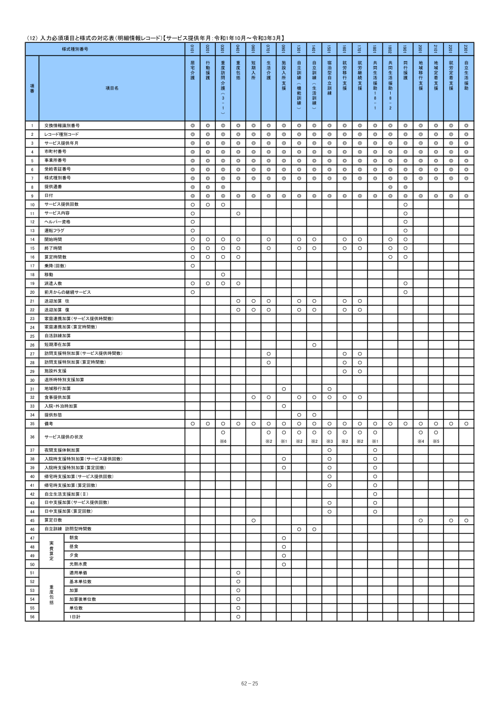
| 項番 | 項目名 | 属性 | 桁数 | 内容 | 必須 | 備考 | その他の列 |
|---|---|---|---|---|---|---|---|
| 1 | 交換情報識別番号 | 様式種別番号 > 0101:◎ 様式種別番号 > 0201:◎ 様式種別番号 > 0301:◎ 様式種別番号 > 0401:◎ 様式種別番号 > 0601:◎ 様式種別番号 > 0701:◎ 様式種別番号 > 0901:◎ 様式種別番号 > 1301:◎ 様式種別番号 > 1401:◎ 様式種別番号 > 1501:◎ 様式種別番号 > 1601:◎ 様式種別番号 > 1701:◎ 様式種別番号 > 1801:◎ 様式種別番号 > 1802:◎ 様式種別番号 > 1901:◎ 様式種別番号 > 2001:◎ 様式種別番号 > 2101:◎ 様式種別番号 > 2201:◎ 様式種別番号 > 2301:◎ | |||||
| 2 | レコード種別コード | 様式種別番号 > 0101:◎ 様式種別番号 > 0201:◎ 様式種別番号 > 0301:◎ 様式種別番号 > 0401:◎ 様式種別番号 > 0601:◎ 様式種別番号 > 0701:◎ 様式種別番号 > 0901:◎ 様式種別番号 > 1301:◎ 様式種別番号 > 1401:◎ 様式種別番号 > 1501:◎ 様式種別番号 > 1601:◎ 様式種別番号 > 1701:◎ 様式種別番号 > 1801:◎ 様式種別番号 > 1802:◎ 様式種別番号 > 1901:◎ 様式種別番号 > 2001:◎ 様式種別番号 > 2101:◎ 様式種別番号 > 2201:◎ 様式種別番号 > 2301:◎ | |||||
| 3 | サービス提供年月 | 様式種別番号 > 0101:◎ 様式種別番号 > 0201:◎ 様式種別番号 > 0301:◎ 様式種別番号 > 0401:◎ 様式種別番号 > 0601:◎ 様式種別番号 > 0701:◎ 様式種別番号 > 0901:◎ 様式種別番号 > 1301:◎ 様式種別番号 > 1401:◎ 様式種別番号 > 1501:◎ 様式種別番号 > 1601:◎ 様式種別番号 > 1701:◎ 様式種別番号 > 1801:◎ 様式種別番号 > 1802:◎ 様式種別番号 > 1901:◎ 様式種別番号 > 2001:◎ 様式種別番号 > 2101:◎ 様式種別番号 > 2201:◎ 様式種別番号 > 2301:◎ | |||||
| 4 | 市町村番号 | 様式種別番号 > 0101:◎ 様式種別番号 > 0201:◎ 様式種別番号 > 0301:◎ 様式種別番号 > 0401:◎ 様式種別番号 > 0601:◎ 様式種別番号 > 0701:◎ 様式種別番号 > 0901:◎ 様式種別番号 > 1301:◎ 様式種別番号 > 1401:◎ 様式種別番号 > 1501:◎ 様式種別番号 > 1601:◎ 様式種別番号 > 1701:◎ 様式種別番号 > 1801:◎ 様式種別番号 > 1802:◎ 様式種別番号 > 1901:◎ 様式種別番号 > 2001:◎ 様式種別番号 > 2101:◎ 様式種別番号 > 2201:◎ 様式種別番号 > 2301:◎ | |||||
| 5 | 事業所番号 | 様式種別番号 > 0101:◎ 様式種別番号 > 0201:◎ 様式種別番号 > 0301:◎ 様式種別番号 > 0401:◎ 様式種別番号 > 0601:◎ 様式種別番号 > 0701:◎ 様式種別番号 > 0901:◎ 様式種別番号 > 1301:◎ 様式種別番号 > 1401:◎ 様式種別番号 > 1501:◎ 様式種別番号 > 1601:◎ 様式種別番号 > 1701:◎ 様式種別番号 > 1801:◎ 様式種別番号 > 1802:◎ 様式種別番号 > 1901:◎ 様式種別番号 > 2001:◎ 様式種別番号 > 2101:◎ 様式種別番号 > 2201:◎ 様式種別番号 > 2301:◎ | |||||
| 6 | 受給者証番号 | 様式種別番号 > 0101:◎ 様式種別番号 > 0201:◎ 様式種別番号 > 0301:◎ 様式種別番号 > 0401:◎ 様式種別番号 > 0601:◎ 様式種別番号 > 0701:◎ 様式種別番号 > 0901:◎ 様式種別番号 > 1301:◎ 様式種別番号 > 1401:◎ 様式種別番号 > 1501:◎ 様式種別番号 > 1601:◎ 様式種別番号 > 1701:◎ 様式種別番号 > 1801:◎ 様式種別番号 > 1802:◎ 様式種別番号 > 1901:◎ 様式種別番号 > 2001:◎ 様式種別番号 > 2101:◎ 様式種別番号 > 2201:◎ 様式種別番号 > 2301:◎ | |||||
| 7 | 様式種別番号 | 様式種別番号 > 0101:◎ 様式種別番号 > 0201:◎ 様式種別番号 > 0301:◎ 様式種別番号 > 0401:◎ 様式種別番号 > 0601:◎ 様式種別番号 > 0701:◎ 様式種別番号 > 0901:◎ 様式種別番号 > 1301:◎ 様式種別番号 > 1401:◎ 様式種別番号 > 1501:◎ 様式種別番号 > 1601:◎ 様式種別番号 > 1701:◎ 様式種別番号 > 1801:◎ 様式種別番号 > 1802:◎ 様式種別番号 > 1901:◎ 様式種別番号 > 2001:◎ 様式種別番号 > 2101:◎ 様式種別番号 > 2201:◎ 様式種別番号 > 2301:◎ | |||||
| 8 | 提供通番 | 様式種別番号 > 0101:◎ 様式種別番号 > 0201:◎ 様式種別番号 > 0301:◎ 様式種別番号 > 0401:－ 様式種別番号 > 0601:－ 様式種別番号 > 0701:－ 様式種別番号 > 0901:－ 様式種別番号 > 1301:－ 様式種別番号 > 1401:－ 様式種別番号 > 1501:－ 様式種別番号 > 1601:－ 様式種別番号 > 1701:－ 様式種別番号 > 1801:－ 様式種別番号 > 1802:◎ 様式種別番号 > 1901:◎ 様式種別番号 > 2001:－ 様式種別番号 > 2101:－ 様式種別番号 > 2201:－ 様式種別番号 > 2301:－ | |||||
| 9 | 日付 | 様式種別番号 > 0101:◎ 様式種別番号 > 0201:◎ 様式種別番号 > 0301:◎ 様式種別番号 > 0401:◎ 様式種別番号 > 0601:◎ 様式種別番号 > 0701:◎ 様式種別番号 > 0901:◎ 様式種別番号 > 1301:◎ 様式種別番号 > 1401:◎ 様式種別番号 > 1501:◎ 様式種別番号 > 1601:◎ 様式種別番号 > 1701:◎ 様式種別番号 > 1801:◎ 様式種別番号 > 1802:◎ 様式種別番号 > 1901:◎ 様式種別番号 > 2001:◎ 様式種別番号 > 2101:◎ 様式種別番号 > 2201:◎ 様式種別番号 > 2301:◎ | |||||
| 10 | サービス提供回数 | 様式種別番号 > 0101:○ 様式種別番号 > 0201:○ 様式種別番号 > 0301:○ 様式種別番号 > 0401:－ 様式種別番号 > 0601:－ 様式種別番号 > 0701:－ 様式種別番号 > 0901:－ 様式種別番号 > 1301:－ 様式種別番号 > 1401:－ 様式種別番号 > 1501:－ 様式種別番号 > 1601:－ 様式種別番号 > 1701:－ 様式種別番号 > 1801:－ 様式種別番号 > 1802:－ 様式種別番号 > 1901:○ 様式種別番号 > 2001:－ 様式種別番号 > 2101:－ 様式種別番号 > 2201:－ 様式種別番号 > 2301:－ | |||||
| 11 | サービス内容 | 様式種別番号 > 0101:○ 様式種別番号 > 0201:－ 様式種別番号 > 0301:－ 様式種別番号 > 0401:○ 様式種別番号 > 0601:－ 様式種別番号 > 0701:－ 様式種別番号 > 0901:－ 様式種別番号 > 1301:－ 様式種別番号 > 1401:－ 様式種別番号 > 1501:－ 様式種別番号 > 1601:－ 様式種別番号 > 1701:－ 様式種別番号 > 1801:－ 様式種別番号 > 1802:－ 様式種別番号 > 1901:○ 様式種別番号 > 2001:－ 様式種別番号 > 2101:－ 様式種別番号 > 2201:－ 様式種別番号 > 2301:－ | |||||
| 12 | ヘルパー資格 | 様式種別番号 > 0101:○ 様式種別番号 > 0201:－ 様式種別番号 > 0301:－ 様式種別番号 > 0401:－ 様式種別番号 > 0601:－ 様式種別番号 > 0701:－ 様式種別番号 > 0901:－ 様式種別番号 > 1301:－ 様式種別番号 > 1401:－ 様式種別番号 > 1501:－ 様式種別番号 > 1601:－ 様式種別番号 > 1701:－ 様式種別番号 > 1801:－ 様式種別番号 > 1802:－ 様式種別番号 > 1901:○ 様式種別番号 > 2001:－ 様式種別番号 > 2101:－ 様式種別番号 > 2201:－ 様式種別番号 > 2301:－ | |||||
| 13 | 運転フラグ | 様式種別番号 > 0101:○ 様式種別番号 > 0201:－ 様式種別番号 > 0301:－ 様式種別番号 > 0401:－ 様式種別番号 > 0601:－ 様式種別番号 > 0701:－ 様式種別番号 > 0901:－ 様式種別番号 > 1301:－ 様式種別番号 > 1401:－ 様式種別番号 > 1501:－ 様式種別番号 > 1601:－ 様式種別番号 > 1701:－ 様式種別番号 > 1801:－ 様式種別番号 > 1802:－ 様式種別番号 > 1901:○ 様式種別番号 > 2001:－ 様式種別番号 > 2101:－ 様式種別番号 > 2201:－ 様式種別番号 > 2301:－ | |||||
| 14 | 開始時間 | 様式種別番号 > 0101:○ 様式種別番号 > 0201:○ 様式種別番号 > 0301:○ 様式種別番号 > 0401:○ 様式種別番号 > 0601:－ 様式種別番号 > 0701:○ 様式種別番号 > 0901:－ 様式種別番号 > 1301:○ 様式種別番号 > 1401:○ 様式種別番号 > 1501:－ 様式種別番号 > 1601:○ 様式種別番号 > 1701:○ 様式種別番号 > 1801:－ 様式種別番号 > 1802:○ 様式種別番号 > 1901:○ 様式種別番号 > 2001:－ 様式種別番号 > 2101:－ 様式種別番号 > 2201:－ 様式種別番号 > 2301:－ | |||||
| 15 | 終了時間 | 様式種別番号 > 0101:○ 様式種別番号 > 0201:○ 様式種別番号 > 0301:○ 様式種別番号 > 0401:○ 様式種別番号 > 0601:－ 様式種別番号 > 0701:○ 様式種別番号 > 0901:－ 様式種別番号 > 1301:○ 様式種別番号 > 1401:○ 様式種別番号 > 1501:－ 様式種別番号 > 1601:○ 様式種別番号 > 1701:○ 様式種別番号 > 1801:－ 様式種別番号 > 1802:○ 様式種別番号 > 1901:○ 様式種別番号 > 2001:－ 様式種別番号 > 2101:－ 様式種別番号 > 2201:－ 様式種別番号 > 2301:－ | |||||
| 16 | 算定時間数 | 様式種別番号 > 0101:○ 様式種別番号 > 0201:○ 様式種別番号 > 0301:○ 様式種別番号 > 0401:○ 様式種別番号 > 0601:－ 様式種別番号 > 0701:－ 様式種別番号 > 0901:－ 様式種別番号 > 1301:－ 様式種別番号 > 1401:－ 様式種別番号 > 1501:－ 様式種別番号 > 1601:－ 様式種別番号 > 1701:－ 様式種別番号 > 1801:－ 様式種別番号 > 1802:○ 様式種別番号 > 1901:○ 様式種別番号 > 2001:－ 様式種別番号 > 2101:－ 様式種別番号 > 2201:－ 様式種別番号 > 2301:－ | |||||
| 17 | 乗降(回数) | 様式種別番号 > 0101:○ 様式種別番号 > 0201:－ 様式種別番号 > 0301:－ 様式種別番号 > 0401:－ 様式種別番号 > 0601:－ 様式種別番号 > 0701:－ 様式種別番号 > 0901:－ 様式種別番号 > 1301:－ 様式種別番号 > 1401:－ 様式種別番号 > 1501:－ 様式種別番号 > 1601:－ 様式種別番号 > 1701:－ 様式種別番号 > 1801:－ 様式種別番号 > 1802:－ 様式種別番号 > 1901:－ 様式種別番号 > 2001:－ 様式種別番号 > 2101:－ 様式種別番号 > 2201:－ 様式種別番号 > 2301:－ | |||||
| 18 | 移動 | 様式種別番号 > 0101:－ 様式種別番号 > 0201:－ 様式種別番号 > 0301:○ 様式種別番号 > 0401:－ 様式種別番号 > 0601:－ 様式種別番号 > 0701:－ 様式種別番号 > 0901:－ 様式種別番号 > 1301:－ 様式種別番号 > 1401:－ 様式種別番号 > 1501:－ 様式種別番号 > 1601:－ 様式種別番号 > 1701:－ 様式種別番号 > 1801:－ 様式種別番号 > 1802:－ 様式種別番号 > 1901:－ 様式種別番号 > 2001:－ 様式種別番号 > 2101:－ 様式種別番号 > 2201:－ 様式種別番号 > 2301:－ | |||||
| 19 | 派遣人数 | 様式種別番号 > 0101:○ 様式種別番号 > 0201:○ 様式種別番号 > 0301:○ 様式種別番号 > 0401:○ 様式種別番号 > 0601:－ 様式種別番号 > 0701:－ 様式種別番号 > 0901:－ 様式種別番号 > 1301:－ 様式種別番号 > 1401:－ 様式種別番号 > 1501:－ 様式種別番号 > 1601:－ 様式種別番号 > 1701:－ 様式種別番号 > 1801:－ 様式種別番号 > 1802:－ 様式種別番号 > 1901:○ 様式種別番号 > 2001:－ 様式種別番号 > 2101:－ 様式種別番号 > 2201:－ 様式種別番号 > 2301:－ | |||||
| 20 | 前月からの継続サービス | 様式種別番号 > 0101:○ 様式種別番号 > 0201:－ 様式種別番号 > 0301:－ 様式種別番号 > 0401:－ 様式種別番号 > 0601:－ 様式種別番号 > 0701:－ 様式種別番号 > 0901:－ 様式種別番号 > 1301:－ 様式種別番号 > 1401:－ 様式種別番号 > 1501:－ 様式種別番号 > 1601:－ 様式種別番号 > 1701:－ 様式種別番号 > 1801:－ 様式種別番号 > 1802:－ 様式種別番号 > 1901:○ 様式種別番号 > 2001:－ 様式種別番号 > 2101:－ 様式種別番号 > 2201:－ 様式種別番号 > 2301:－ | |||||
| 21 | 送迎加算 往 | 様式種別番号 > 0101:－ 様式種別番号 > 0201:－ 様式種別番号 > 0301:－ 様式種別番号 > 0401:○ 様式種別番号 > 0601:○ 様式種別番号 > 0701:○ 様式種別番号 > 0901:－ 様式種別番号 > 1301:○ 様式種別番号 > 1401:○ 様式種別番号 > 1501:－ 様式種別番号 > 1601:○ 様式種別番号 > 1701:○ 様式種別番号 > 1801:－ 様式種別番号 > 1802:－ 様式種別番号 > 1901:－ 様式種別番号 > 2001:－ 様式種別番号 > 2101:－ 様式種別番号 > 2201:－ 様式種別番号 > 2301:－ | |||||
| 22 | 送迎加算 復 | 様式種別番号 > 0101:－ 様式種別番号 > 0201:－ 様式種別番号 > 0301:－ 様式種別番号 > 0401:○ 様式種別番号 > 0601:○ 様式種別番号 > 0701:○ 様式種別番号 > 0901:－ 様式種別番号 > 1301:○ 様式種別番号 > 1401:○ 様式種別番号 > 1501:－ 様式種別番号 > 1601:○ 様式種別番号 > 1701:○ 様式種別番号 > 1801:－ 様式種別番号 > 1802:－ 様式種別番号 > 1901:－ 様式種別番号 > 2001:－ 様式種別番号 > 2101:－ 様式種別番号 > 2201:－ 様式種別番号 > 2301:－ | |||||
| 23 | 家庭連携加算(サービス提供時間数) | 様式種別番号 > 0101:－ 様式種別番号 > 0201:－ 様式種別番号 > 0301:－ 様式種別番号 > 0401:－ 様式種別番号 > 0601:－ 様式種別番号 > 0701:－ 様式種別番号 > 0901:－ 様式種別番号 > 1301:－ 様式種別番号 > 1401:－ 様式種別番号 > 1501:－ 様式種別番号 > 1601:－ 様式種別番号 > 1701:－ 様式種別番号 > 1801:－ 様式種別番号 > 1802:－ 様式種別番号 > 1901:－ 様式種別番号 > 2001:－ 様式種別番号 > 2101:－ 様式種別番号 > 2201:－ 様式種別番号 > 2301:－ | |||||
| 24 | 家庭連携加算(算定時間数) | 様式種別番号 > 0101:－ 様式種別番号 > 0201:－ 様式種別番号 > 0301:－ 様式種別番号 > 0401:－ 様式種別番号 > 0601:－ 様式種別番号 > 0701:－ 様式種別番号 > 0901:－ 様式種別番号 > 1301:－ 様式種別番号 > 1401:－ 様式種別番号 > 1501:－ 様式種別番号 > 1601:－ 様式種別番号 > 1701:－ 様式種別番号 > 1801:－ 様式種別番号 > 1802:－ 様式種別番号 > 1901:－ 様式種別番号 > 2001:－ 様式種別番号 > 2101:－ 様式種別番号 > 2201:－ 様式種別番号 > 2301:－ | |||||
| 25 | 自活訓練加算 | 様式種別番号 > 0101:－ 様式種別番号 > 0201:－ 様式種別番号 > 0301:－ 様式種別番号 > 0401:－ 様式種別番号 > 0601:－ 様式種別番号 > 0701:－ 様式種別番号 > 0901:－ 様式種別番号 > 1301:－ 様式種別番号 > 1401:－ 様式種別番号 > 1501:－ 様式種別番号 > 1601:－ 様式種別番号 > 1701:－ 様式種別番号 > 1801:－ 様式種別番号 > 1802:－ 様式種別番号 > 1901:－ 様式種別番号 > 2001:－ 様式種別番号 > 2101:－ 様式種別番号 > 2201:－ 様式種別番号 > 2301:－ | |||||
| 26 | 短期滞在加算 | 様式種別番号 > 0101:－ 様式種別番号 > 0201:－ 様式種別番号 > 0301:－ 様式種別番号 > 0401:－ 様式種別番号 > 0601:－ 様式種別番号 > 0701:－ 様式種別番号 > 0901:－ 様式種別番号 > 1301:－ 様式種別番号 > 1401:○ 様式種別番号 > 1501:－ 様式種別番号 > 1601:－ 様式種別番号 > 1701:－ 様式種別番号 > 1801:－ 様式種別番号 > 1802:－ 様式種別番号 > 1901:－ 様式種別番号 > 2001:－ 様式種別番号 > 2101:－ 様式種別番号 > 2201:－ 様式種別番号 > 2301:－ | |||||
| 27 | 訪問支援特別加算(サービス提供時間数) | 様式種別番号 > 0101:－ 様式種別番号 > 0201:－ 様式種別番号 > 0301:－ 様式種別番号 > 0401:－ 様式種別番号 > 0601:－ 様式種別番号 > 0701:○ 様式種別番号 > 0901:－ 様式種別番号 > 1301:－ 様式種別番号 > 1401:－ 様式種別番号 > 1501:－ 様式種別番号 > 1601:○ 様式種別番号 > 1701:○ 様式種別番号 > 1801:－ 様式種別番号 > 1802:－ 様式種別番号 > 1901:－ 様式種別番号 > 2001:－ 様式種別番号 > 2101:－ 様式種別番号 > 2201:－ 様式種別番号 > 2301:－ | |||||
| 28 | 訪問支援特別加算(算定時間数) | 様式種別番号 > 0101:－ 様式種別番号 > 0201:－ 様式種別番号 > 0301:－ 様式種別番号 > 0401:－ 様式種別番号 > 0601:－ 様式種別番号 > 0701:○ 様式種別番号 > 0901:－ 様式種別番号 > 1301:－ 様式種別番号 > 1401:－ 様式種別番号 > 1501:－ 様式種別番号 > 1601:○ 様式種別番号 > 1701:○ 様式種別番号 > 1801:－ 様式種別番号 > 1802:－ 様式種別番号 > 1901:－ 様式種別番号 > 2001:－ 様式種別番号 > 2101:－ 様式種別番号 > 2201:－ 様式種別番号 > 2301:－ | |||||
| 29 | 施設外支援 | 様式種別番号 > 0101:－ 様式種別番号 > 0201:－ 様式種別番号 > 0301:－ 様式種別番号 > 0401:－ 様式種別番号 > 0601:－ 様式種別番号 > 0701:－ 様式種別番号 > 0901:－ 様式種別番号 > 1301:－ 様式種別番号 > 1401:－ 様式種別番号 > 1501:－ 様式種別番号 > 1601:○ 様式種別番号 > 1701:○ 様式種別番号 > 1801:－ 様式種別番号 > 1802:－ 様式種別番号 > 1901:－ 様式種別番号 > 2001:－ 様式種別番号 > 2101:－ 様式種別番号 > 2201:－ 様式種別番号 > 2301:－ | |||||
| 30 | 退所時特別支援加算 | 様式種別番号 > 0101:－ 様式種別番号 > 0201:－ 様式種別番号 > 0301:－ 様式種別番号 > 0401:－ 様式種別番号 > 0601:－ 様式種別番号 > 0701:－ 様式種別番号 > 0901:－ 様式種別番号 > 1301:－ 様式種別番号 > 1401:－ 様式種別番号 > 1501:－ 様式種別番号 > 1601:－ 様式種別番号 > 1701:－ 様式種別番号 > 1801:－ 様式種別番号 > 1802:－ 様式種別番号 > 1901:－ 様式種別番号 > 2001:－ 様式種別番号 > 2101:－ 様式種別番号 > 2201:－ 様式種別番号 > 2301:－ | |||||
| 31 | 地域移行加算 | 様式種別番号 > 0101:－ 様式種別番号 > 0201:－ 様式種別番号 > 0301:－ 様式種別番号 > 0401:－ 様式種別番号 > 0601:－ 様式種別番号 > 0701:－ 様式種別番号 > 0901:○ 様式種別番号 > 1301:－ 様式種別番号 > 1401:－ 様式種別番号 > 1501:○ 様式種別番号 > 1601:－ 様式種別番号 > 1701:－ 様式種別番号 > 1801:－ 様式種別番号 > 1802:－ 様式種別番号 > 1901:－ 様式種別番号 > 2001:－ 様式種別番号 > 2101:－ 様式種別番号 > 2201:－ 様式種別番号 > 2301:－ | |||||
| 32 | 食事提供加算 | 様式種別番号 > 0101:－ 様式種別番号 > 0201:－ 様式種別番号 > 0301:－ 様式種別番号 > 0401:－ 様式種別番号 > 0601:○ 様式種別番号 > 0701:○ 様式種別番号 > 0901:－ 様式種別番号 > 1301:○ 様式種別番号 > 1401:○ 様式種別番号 > 1501:○ 様式種別番号 > 1601:○ 様式種別番号 > 1701:○ 様式種別番号 > 1801:－ 様式種別番号 > 1802:－ 様式種別番号 > 1901:－ 様式種別番号 > 2001:－ 様式種別番号 > 2101:－ 様式種別番号 > 2201:－ 様式種別番号 > 2301:－ | |||||
| 33 | 入院・外泊時加算 | 様式種別番号 > 0101:－ 様式種別番号 > 0201:－ 様式種別番号 > 0301:－ 様式種別番号 > 0401:－ 様式種別番号 > 0601:－ 様式種別番号 > 0701:－ 様式種別番号 > 0901:○ 様式種別番号 > 1301:－ 様式種別番号 > 1401:－ 様式種別番号 > 1501:－ 様式種別番号 > 1601:－ 様式種別番号 > 1701:－ 様式種別番号 > 1801:－ 様式種別番号 > 1802:－ 様式種別番号 > 1901:－ 様式種別番号 > 2001:－ 様式種別番号 > 2101:－ 様式種別番号 > 2201:－ 様式種別番号 > 2301:－ | |||||
| 34 | 提供形態 | 様式種別番号 > 0101:－ 様式種別番号 > 0201:－ 様式種別番号 > 0301:－ 様式種別番号 > 0401:－ 様式種別番号 > 0601:－ 様式種別番号 > 0701:－ 様式種別番号 > 0901:－ 様式種別番号 > 1301:○ 様式種別番号 > 1401:○ 様式種別番号 > 1501:－ 様式種別番号 > 1601:－ 様式種別番号 > 1701:－ 様式種別番号 > 1801:－ 様式種別番号 > 1802:－ 様式種別番号 > 1901:－ 様式種別番号 > 2001:－ 様式種別番号 > 2101:－ 様式種別番号 > 2201:－ 様式種別番号 > 2301:－ | |||||
| 35 | 備考 | 様式種別番号 > 0101:○ 様式種別番号 > 0201:○ 様式種別番号 > 0301:○ 様式種別番号 > 0401:○ 様式種別番号 > 0601:○ 様式種別番号 > 0701:○ 様式種別番号 > 0901:○ 様式種別番号 > 1301:○ 様式種別番号 > 1401:○ 様式種別番号 > 1501:○ 様式種別番号 > 1601:○ 様式種別番号 > 1701:○ 様式種別番号 > 1801:○ 様式種別番号 > 1802:○ 様式種別番号 > 1901:○ 様式種別番号 > 2001:○ 様式種別番号 > 2101:○ 様式種別番号 > 2201:○ 様式種別番号 > 2301:○ | |||||
| 36 | サービス提供の状況 | 様式種別番号 > 0101:－ 様式種別番号 > 0201:－ 様式種別番号 > 0301:○※6 様式種別番号 > 0401:－ 様式種別番号 > 0601:－ 様式種別番号 > 0701:○※2 様式種別番号 > 0901:○※1 様式種別番号 > 1301:○※2 様式種別番号 > 1401:○※2 様式種別番号 > 1501:○※3 様式種別番号 > 1601:○※2 様式種別番号 > 1701:○※2 様式種別番号 > 1801:○※1 様式種別番号 > 1802:－ 様式種別番号 > 1901:－ 様式種別番号 > 2001:○※4 様式種別番号 > 2101:○※5 様式種別番号 > 2201:－ 様式種別番号 > 2301:－ | |||||
| 37 | 夜間支援体制加算 | 様式種別番号 > 0101:－ 様式種別番号 > 0201:－ 様式種別番号 > 0301:－ 様式種別番号 > 0401:－ 様式種別番号 > 0601:－ 様式種別番号 > 0701:－ 様式種別番号 > 0901:－ 様式種別番号 > 1301:－ 様式種別番号 > 1401:－ 様式種別番号 > 1501:○ 様式種別番号 > 1601:－ 様式種別番号 > 1701:－ 様式種別番号 > 1801:○ 様式種別番号 > 1802:－ 様式種別番号 > 1901:－ 様式種別番号 > 2001:－ 様式種別番号 > 2101:－ 様式種別番号 > 2201:－ 様式種別番号 > 2301:－ | |||||
| 38 | 入院時支援特別加算(サービス提供回数) | 様式種別番号 > 0101:－ 様式種別番号 > 0201:－ 様式種別番号 > 0301:－ 様式種別番号 > 0401:－ 様式種別番号 > 0601:－ 様式種別番号 > 0701:－ 様式種別番号 > 0901:○ 様式種別番号 > 1301:－ 様式種別番号 > 1401:－ 様式種別番号 > 1501:○ 様式種別番号 > 1601:－ 様式種別番号 > 1701:－ 様式種別番号 > 1801:○ 様式種別番号 > 1802:－ 様式種別番号 > 1901:－ 様式種別番号 > 2001:－ 様式種別番号 > 2101:－ 様式種別番号 > 2201:－ 様式種別番号 > 2301:－ | |||||
| 39 | 入院時支援特別加算(算定回数) | 様式種別番号 > 0101:－ 様式種別番号 > 0201:－ 様式種別番号 > 0301:－ 様式種別番号 > 0401:－ 様式種別番号 > 0601:－ 様式種別番号 > 0701:－ 様式種別番号 > 0901:○ 様式種別番号 > 1301:－ 様式種別番号 > 1401:－ 様式種別番号 > 1501:○ 様式種別番号 > 1601:－ 様式種別番号 > 1701:－ 様式種別番号 > 1801:○ 様式種別番号 > 1802:－ 様式種別番号 > 1901:－ 様式種別番号 > 2001:－ 様式種別番号 > 2101:－ 様式種別番号 > 2201:－ 様式種別番号 > 2301:－ | |||||
| 40 | 掃宅時支援加算(サービス提供回数) | 様式種別番号 > 0101:－ 様式種別番号 > 0201:－ 様式種別番号 > 0301:－ 様式種別番号 > 0401:－ 様式種別番号 > 0601:－ 様式種別番号 > 0701:－ 様式種別番号 > 0901:－ 様式種別番号 > 1301:－ 様式種別番号 > 1401:－ 様式種別番号 > 1501:○ 様式種別番号 > 1601:－ 様式種別番号 > 1701:－ 様式種別番号 > 1801:○ 様式種別番号 > 1802:－ 様式種別番号 > 1901:－ 様式種別番号 > 2001:－ 様式種別番号 > 2101:－ 様式種別番号 > 2201:－ 様式種別番号 > 2301:－ | |||||
| 41 | 掃宅時支援加算(算定回数) | 様式種別番号 > 0101:－ 様式種別番号 > 0201:－ 様式種別番号 > 0301:－ 様式種別番号 > 0401:－ 様式種別番号 > 0601:－ 様式種別番号 > 0701:－ 様式種別番号 > 0901:－ 様式種別番号 > 1301:－ 様式種別番号 > 1401:－ 様式種別番号 > 1501:○ 様式種別番号 > 1601:－ 様式種別番号 > 1701:－ 様式種別番号 > 1801:○ 様式種別番号 > 1802:－ 様式種別番号 > 1901:－ 様式種別番号 > 2001:－ 様式種別番号 > 2101:－ 様式種別番号 > 2201:－ 様式種別番号 > 2301:－ | |||||
| 42 | 自立生活支援加算(Ⅱ) | 様式種別番号 > 0101:－ 様式種別番号 > 0201:－ 様式種別番号 > 0301:－ 様式種別番号 > 0401:－ 様式種別番号 > 0601:－ 様式種別番号 > 0701:－ 様式種別番号 > 0901:－ 様式種別番号 > 1301:－ 様式種別番号 > 1401:－ 様式種別番号 > 1501:－ 様式種別番号 > 1601:－ 様式種別番号 > 1701:－ 様式種別番号 > 1801:○ 様式種別番号 > 1802:－ 様式種別番号 > 1901:－ 様式種別番号 > 2001:－ 様式種別番号 > 2101:－ 様式種別番号 > 2201:－ 様式種別番号 > 2301:－ | |||||
| 43 | 日中支援加算(サービス提供回数) | 様式種別番号 > 0101:－ 様式種別番号 > 0201:－ 様式種別番号 > 0301:－ 様式種別番号 > 0401:－ 様式種別番号 > 0601:－ 様式種別番号 > 0701:－ 様式種別番号 > 0901:－ 様式種別番号 > 1301:－ 様式種別番号 > 1401:－ 様式種別番号 > 1501:○ 様式種別番号 > 1601:－ 様式種別番号 > 1701:－ 様式種別番号 > 1801:○ 様式種別番号 > 1802:－ 様式種別番号 > 1901:－ 様式種別番号 > 2001:－ 様式種別番号 > 2101:－ 様式種別番号 > 2201:－ 様式種別番号 > 2301:－ | |||||
| 44 | 日中支援加算(算定回数) | 様式種別番号 > 0101:－ 様式種別番号 > 0201:－ 様式種別番号 > 0301:－ 様式種別番号 > 0401:－ 様式種別番号 > 0601:－ 様式種別番号 > 0701:－ 様式種別番号 > 0901:－ 様式種別番号 > 1301:－ 様式種別番号 > 1401:－ 様式種別番号 > 1501:○ 様式種別番号 > 1601:－ 様式種別番号 > 1701:－ 様式種別番号 > 1801:○ 様式種別番号 > 1802:－ 様式種別番号 > 1901:－ 様式種別番号 > 2001:－ 様式種別番号 > 2101:－ 様式種別番号 > 2201:－ 様式種別番号 > 2301:－ | |||||
| 45 | 算定日数 | 様式種別番号 > 0101:－ 様式種別番号 > 0201:－ 様式種別番号 > 0301:－ 様式種別番号 > 0401:－ 様式種別番号 > 0601:○ 様式種別番号 > 0701:－ 様式種別番号 > 0901:－ 様式種別番号 > 1301:－ 様式種別番号 > 1401:－ 様式種別番号 > 1501:－ 様式種別番号 > 1601:－ 様式種別番号 > 1701:－ 様式種別番号 > 1801:－ 様式種別番号 > 1802:－ 様式種別番号 > 1901:－ 様式種別番号 > 2001:○ 様式種別番号 > 2101:－ 様式種別番号 > 2201:○ 様式種別番号 > 2301:○ | |||||
| 46 | 自立訓練 訪問型時間数 | 様式種別番号 > 0101:－ 様式種別番号 > 0201:－ 様式種別番号 > 0301:－ 様式種別番号 > 0401:－ 様式種別番号 > 0601:－ 様式種別番号 > 0701:－ 様式種別番号 > 0901:－ 様式種別番号 > 1301:○ 様式種別番号 > 1401:○ 様式種別番号 > 1501:－ 様式種別番号 > 1601:－ 様式種別番号 > 1701:－ 様式種別番号 > 1801:－ 様式種別番号 > 1802:－ 様式種別番号 > 1901:－ 様式種別番号 > 2001:－ 様式種別番号 > 2101:－ 様式種別番号 > 2201:－ 様式種別番号 > 2301:－ | |||||
| 47 | 実費算定 > 朝食 | 様式種別番号 > 0101:－ 様式種別番号 > 0201:－ 様式種別番号 > 0301:－ 様式種別番号 > 0401:－ 様式種別番号 > 0601:－ 様式種別番号 > 0701:－ 様式種別番号 > 0901:○ 様式種別番号 > 1301:－ 様式種別番号 > 1401:－ 様式種別番号 > 1501:－ 様式種別番号 > 1601:－ 様式種別番号 > 1701:－ 様式種別番号 > 1801:－ 様式種別番号 > 1802:－ 様式種別番号 > 1901:－ 様式種別番号 > 2001:－ 様式種別番号 > 2101:－ 様式種別番号 > 2201:－ 様式種別番号 > 2301:－ | |||||
| 48 | 実費算定 > 昼食 | 様式種別番号 > 0101:－ 様式種別番号 > 0201:－ 様式種別番号 > 0301:－ 様式種別番号 > 0401:－ 様式種別番号 > 0601:－ 様式種別番号 > 0701:－ 様式種別番号 > 0901:○ 様式種別番号 > 1301:－ 様式種別番号 > 1401:－ 様式種別番号 > 1501:－ 様式種別番号 > 1601:－ 様式種別番号 > 1701:－ 様式種別番号 > 1801:－ 様式種別番号 > 1802:－ 様式種別番号 > 1901:－ 様式種別番号 > 2001:－ 様式種別番号 > 2101:－ 様式種別番号 > 2201:－ 様式種別番号 > 2301:－ | |||||
| 49 | 実費算定 > 夕食 | 様式種別番号 > 0101:－ 様式種別番号 > 0201:－ 様式種別番号 > 0301:－ 様式種別番号 > 0401:－ 様式種別番号 > 0601:－ 様式種別番号 > 0701:－ 様式種別番号 > 0901:○ 様式種別番号 > 1301:－ 様式種別番号 > 1401:－ 様式種別番号 > 1501:－ 様式種別番号 > 1601:－ 様式種別番号 > 1701:－ 様式種別番号 > 1801:－ 様式種別番号 > 1802:－ 様式種別番号 > 1901:－ 様式種別番号 > 2001:－ 様式種別番号 > 2101:－ 様式種別番号 > 2201:－ 様式種別番号 > 2301:－ | |||||
| 50 | 実費算定 > 光熱水費 | 様式種別番号 > 0101:－ 様式種別番号 > 0201:－ 様式種別番号 > 0301:－ 様式種別番号 > 0401:－ 様式種別番号 > 0601:－ 様式種別番号 > 0701:－ 様式種別番号 > 0901:○ 様式種別番号 > 1301:－ 様式種別番号 > 1401:－ 様式種別番号 > 1501:－ 様式種別番号 > 1601:－ 様式種別番号 > 1701:－ 様式種別番号 > 1801:－ 様式種別番号 > 1802:－ 様式種別番号 > 1901:－ 様式種別番号 > 2001:－ 様式種別番号 > 2101:－ 様式種別番号 > 2201:－ 様式種別番号 > 2301:－ | |||||
| 51 | 重度包括 > 適用単価 | 様式種別番号 > 0101:－ 様式種別番号 > 0201:－ 様式種別番号 > 0301:－ 様式種別番号 > 0401:○ 様式種別番号 > 0601:－ 様式種別番号 > 0701:－ 様式種別番号 > 0901:－ 様式種別番号 > 1301:－ 様式種別番号 > 1401:－ 様式種別番号 > 1501:－ 様式種別番号 > 1601:－ 様式種別番号 > 1701:－ 様式種別番号 > 1801:－ 様式種別番号 > 1802:－ 様式種別番号 > 1901:－ 様式種別番号 > 2001:－ 様式種別番号 > 2101:－ 様式種別番号 > 2201:－ 様式種別番号 > 2301:－ | |||||
| 52 | 重度包括 > 基本単位数 | 様式種別番号 > 0101:－ 様式種別番号 > 0201:－ 様式種別番号 > 0301:－ 様式種別番号 > 0401:○ 様式種別番号 > 0601:－ 様式種別番号 > 0701:－ 様式種別番号 > 0901:－ 様式種別番号 > 1301:－ 様式種別番号 > 1401:－ 様式種別番号 > 1501:－ 様式種別番号 > 1601:－ 様式種別番号 > 1701:－ 様式種別番号 > 1801:－ 様式種別番号 > 1802:－ 様式種別番号 > 1901:－ 様式種別番号 > 2001:－ 様式種別番号 > 2101:－ 様式種別番号 > 2201:－ 様式種別番号 > 2301:－ | |||||
| 53 | 重度包括 > 加算 | 様式種別番号 > 0101:－ 様式種別番号 > 0201:－ 様式種別番号 > 0301:－ 様式種別番号 > 0401:○ 様式種別番号 > 0601:－ 様式種別番号 > 0701:－ 様式種別番号 > 0901:－ 様式種別番号 > 1301:－ 様式種別番号 > 1401:－ 様式種別番号 > 1501:－ 様式種別番号 > 1601:－ 様式種別番号 > 1701:－ 様式種別番号 > 1801:－ 様式種別番号 > 1802:－ 様式種別番号 > 1901:－ 様式種別番号 > 2001:－ 様式種別番号 > 2101:－ 様式種別番号 > 2201:－ 様式種別番号 > 2301:－ | |||||
| 54 | 重度包括 > 加算後単位数 | 様式種別番号 > 0101:－ 様式種別番号 > 0201:－ 様式種別番号 > 0301:－ 様式種別番号 > 0401:○ 様式種別番号 > 0601:－ 様式種別番号 > 0701:－ 様式種別番号 > 0901:－ 様式種別番号 > 1301:－ 様式種別番号 > 1401:－ 様式種別番号 > 1501:－ 様式種別番号 > 1601:－ 様式種別番号 > 1701:－ 様式種別番号 > 1801:－ 様式種別番号 > 1802:－ 様式種別番号 > 1901:－ 様式種別番号 > 2001:－ 様式種別番号 > 2101:－ 様式種別番号 > 2201:－ 様式種別番号 > 2301:－ | |||||
| 55 | 重度包括 > 単位数 | 様式種別番号 > 0101:－ 様式種別番号 > 0201:－ 様式種別番号 > 0301:－ 様式種別番号 > 0401:○ 様式種別番号 > 0601:－ 様式種別番号 > 0701:－ 様式種別番号 > 0901:－ 様式種別番号 > 1301:－ 様式種別番号 > 1401:－ 様式種別番号 > 1501:－ 様式種別番号 > 1601:－ 様式種別番号 > 1701:－ 様式種別番号 > 1801:－ 様式種別番号 > 1802:－ 様式種別番号 > 1901:－ 様式種別番号 > 2001:－ 様式種別番号 > 2101:－ 様式種別番号 > 2201:－ 様式種別番号 > 2301:－ | |||||
| 56 | 重度包括 > 1日計 | 様式種別番号 > 0101:－ 様式種別番号 > 0201:－ 様式種別番号 > 0301:－ 様式種別番号 > 0401:○ 様式種別番号 > 0601:－ 様式種別番号 > 0701:－ 様式種別番号 > 0901:－ 様式種別番号 > 1301:－ 様式種別番号 > 1401:－ 様式種別番号 > 1501:－ 様式種別番号 > 1601:－ 様式種別番号 > 1701:－ 様式種別番号 > 1801:－ 様式種別番号 > 1802:－ 様式種別番号 > 1901:－ 様式種別番号 > 2001:－ 様式種別番号 > 2101:－ 様式種別番号 > 2201:－ 様式種別番号 > 2301:－ |
| 項番 | 項目名 | 属性 | 桁数 | 内容 | 必須 | 備考 | その他の列 |
|---|---|---|---|---|---|---|---|
| 1 | 交換情報識別番号 | 0101 居宅介護:◎ 0201 行動援護:◎ 0301 重度訪問介護(3-1):◎ 0401 重度包括:◎ 0601 短期入所:◎ 0701 生活介護:◎ 0901 施設入所支援:◎ 1301 自立訓練(機能訓練):◎ 1401 自立訓練(生活訓練):◎ 1501 宿泊型自立訓練:◎ 1601 就労移行支援:◎ 1701 就労継続支援:◎ 1801 共同生活援助18-1:◎ 1802 共同生活援助18-2:◎ 1901 同行援護:◎ 2001 地域移行支援:◎ 2101 地域定着支援:◎ 2201 就労定着支援:◎ 2301 自立生活援助:◎ |
| 項番 | 項目名 | 属性 | 桁数 | 内容 | 必須 | 備考 | その他の列 |
|---|---|---|---|---|---|---|---|
| 57 | 実費算定の合計 > 朝食(回) | 様式種別番号 > 0101:－ 様式種別番号 > 0201:－ 様式種別番号 > 0301:－ 様式種別番号 > 0401:－ 様式種別番号 > 0601:－ 様式種別番号 > 0701:－ 様式種別番号 > 0901:○ 様式種別番号 > 1301:－ 様式種別番号 > 1401:－ 様式種別番号 > 1501:－ 様式種別番号 > 1601:－ 様式種別番号 > 1701:－ 様式種別番号 > 1801:－ 様式種別番号 > 1802:－ 様式種別番号 > 1901:－ 様式種別番号 > 2001:－ 様式種別番号 > 2101:－ 様式種別番号 > 2201:－ 様式種別番号 > 2301:－ | |||||
| 58 | 実費算定の合計 > 昼食(回) | 様式種別番号 > 0101:－ 様式種別番号 > 0201:－ 様式種別番号 > 0301:－ 様式種別番号 > 0401:－ 様式種別番号 > 0601:－ 様式種別番号 > 0701:－ 様式種別番号 > 0901:○ 様式種別番号 > 1301:－ 様式種別番号 > 1401:－ 様式種別番号 > 1501:－ 様式種別番号 > 1601:－ 様式種別番号 > 1701:－ 様式種別番号 > 1801:－ 様式種別番号 > 1802:－ 様式種別番号 > 1901:－ 様式種別番号 > 2001:－ 様式種別番号 > 2101:－ 様式種別番号 > 2201:－ 様式種別番号 > 2301:－ | |||||
| 59 | 実費算定の合計 > 夕食(回) | 様式種別番号 > 0101:－ 様式種別番号 > 0201:－ 様式種別番号 > 0301:－ 様式種別番号 > 0401:－ 様式種別番号 > 0601:－ 様式種別番号 > 0701:－ 様式種別番号 > 0901:○ 様式種別番号 > 1301:－ 様式種別番号 > 1401:－ 様式種別番号 > 1501:－ 様式種別番号 > 1601:－ 様式種別番号 > 1701:－ 様式種別番号 > 1801:－ 様式種別番号 > 1802:－ 様式種別番号 > 1901:－ 様式種別番号 > 2001:－ 様式種別番号 > 2101:－ 様式種別番号 > 2201:－ 様式種別番号 > 2301:－ | |||||
| 60 | 実費算定の合計 > 光熱水費(回) | 様式種別番号 > 0101:－ 様式種別番号 > 0201:－ 様式種別番号 > 0301:－ 様式種別番号 > 0401:－ 様式種別番号 > 0601:－ 様式種別番号 > 0701:－ 様式種別番号 > 0901:○ 様式種別番号 > 1301:－ 様式種別番号 > 1401:－ 様式種別番号 > 1501:－ 様式種別番号 > 1601:－ 様式種別番号 > 1701:－ 様式種別番号 > 1801:－ 様式種別番号 > 1802:－ 様式種別番号 > 1901:－ 様式種別番号 > 2001:－ 様式種別番号 > 2101:－ 様式種別番号 > 2201:－ 様式種別番号 > 2301:－ | |||||
| 61 | 実費算定の合計 > 各小計 食事(円) | 様式種別番号 > 0101:－ 様式種別番号 > 0201:－ 様式種別番号 > 0301:－ 様式種別番号 > 0401:－ 様式種別番号 > 0601:－ 様式種別番号 > 0701:－ 様式種別番号 > 0901:○ 様式種別番号 > 1301:－ 様式種別番号 > 1401:－ 様式種別番号 > 1501:－ 様式種別番号 > 1601:－ 様式種別番号 > 1701:－ 様式種別番号 > 1801:－ 様式種別番号 > 1802:－ 様式種別番号 > 1901:－ 様式種別番号 > 2001:－ 様式種別番号 > 2101:－ 様式種別番号 > 2201:－ 様式種別番号 > 2301:－ | |||||
| 62 | 実費算定の合計 > 各小計 光熱水費(円) | 様式種別番号 > 0101:－ 様式種別番号 > 0201:－ 様式種別番号 > 0301:－ 様式種別番号 > 0401:－ 様式種別番号 > 0601:－ 様式種別番号 > 0701:－ 様式種別番号 > 0901:○ 様式種別番号 > 1301:－ 様式種別番号 > 1401:－ 様式種別番号 > 1501:－ 様式種別番号 > 1601:－ 様式種別番号 > 1701:－ 様式種別番号 > 1801:－ 様式種別番号 > 1802:－ 様式種別番号 > 1901:－ 様式種別番号 > 2001:－ 様式種別番号 > 2101:－ 様式種別番号 > 2201:－ 様式種別番号 > 2301:－ | |||||
| 63 | 実費算定の合計 > 実費合計額(円) | 様式種別番号 > 0101:－ 様式種別番号 > 0201:－ 様式種別番号 > 0301:－ 様式種別番号 > 0401:－ 様式種別番号 > 0601:－ 様式種別番号 > 0701:－ 様式種別番号 > 0901:○ 様式種別番号 > 1301:－ 様式種別番号 > 1401:－ 様式種別番号 > 1501:－ 様式種別番号 > 1601:－ 様式種別番号 > 1701:－ 様式種別番号 > 1801:－ 様式種別番号 > 1802:－ 様式種別番号 > 1901:－ 様式種別番号 > 2001:－ 様式種別番号 > 2101:－ 様式種別番号 > 2201:－ 様式種別番号 > 2301:－ | |||||
| 64 | 特別加算（入所時） > 利用開始日(年月日) | 様式種別番号 > 0101:－ 様式種別番号 > 0201:－ 様式種別番号 > 0301:－ 様式種別番号 > 0401:－ 様式種別番号 > 0601:－ 様式種別番号 > 0701:－ 様式種別番号 > 0901:○ 様式種別番号 > 1301:－ 様式種別番号 > 1401:－ 様式種別番号 > 1501:－ 様式種別番号 > 1601:－ 様式種別番号 > 1701:－ 様式種別番号 > 1801:－ 様式種別番号 > 1802:－ 様式種別番号 > 1901:－ 様式種別番号 > 2001:－ 様式種別番号 > 2101:－ 様式種別番号 > 2201:－ 様式種別番号 > 2301:－ | |||||
| 65 | 特別加算（入所時） > 30日目(年月日) | 様式種別番号 > 0101:－ 様式種別番号 > 0201:－ 様式種別番号 > 0301:－ 様式種別番号 > 0401:－ 様式種別番号 > 0601:－ 様式種別番号 > 0701:－ 様式種別番号 > 0901:○ 様式種別番号 > 1301:－ 様式種別番号 > 1401:－ 様式種別番号 > 1501:－ 様式種別番号 > 1601:－ 様式種別番号 > 1701:－ 様式種別番号 > 1801:－ 様式種別番号 > 1802:－ 様式種別番号 > 1901:－ 様式種別番号 > 2001:－ 様式種別番号 > 2101:－ 様式種別番号 > 2201:－ 様式種別番号 > 2301:－ | |||||
| 66 | 特別加算（入所時） > 当月算定日数(日) | 様式種別番号 > 0101:－ 様式種別番号 > 0201:－ 様式種別番号 > 0301:－ 様式種別番号 > 0401:－ 様式種別番号 > 0601:－ 様式種別番号 > 0701:－ 様式種別番号 > 0901:○ 様式種別番号 > 1301:－ 様式種別番号 > 1401:－ 様式種別番号 > 1501:－ 様式種別番号 > 1601:－ 様式種別番号 > 1701:－ 様式種別番号 > 1801:－ 様式種別番号 > 1802:－ 様式種別番号 > 1901:－ 様式種別番号 > 2001:－ 様式種別番号 > 2101:－ 様式種別番号 > 2201:－ 様式種別番号 > 2301:－ | |||||
| 67 | 特別加算（退所時） > 入所中算定日(年月日) | 様式種別番号 > 0101:－ 様式種別番号 > 0201:－ 様式種別番号 > 0301:－ 様式種別番号 > 0401:－ 様式種別番号 > 0601:－ 様式種別番号 > 0701:－ 様式種別番号 > 0901:－ 様式種別番号 > 1301:－ 様式種別番号 > 1401:－ 様式種別番号 > 1501:－ 様式種別番号 > 1601:－ 様式種別番号 > 1701:－ 様式種別番号 > 1801:－ 様式種別番号 > 1802:－ 様式種別番号 > 1901:－ 様式種別番号 > 2001:－ 様式種別番号 > 2101:－ 様式種別番号 > 2201:－ 様式種別番号 > 2301:－ | |||||
| 68 | 特別加算（退所時） > 退所日(年月日) | 様式種別番号 > 0101:－ 様式種別番号 > 0201:－ 様式種別番号 > 0301:－ 様式種別番号 > 0401:－ 様式種別番号 > 0601:－ 様式種別番号 > 0701:－ 様式種別番号 > 0901:－ 様式種別番号 > 1301:－ 様式種別番号 > 1401:－ 様式種別番号 > 1501:－ 様式種別番号 > 1601:－ 様式種別番号 > 1701:－ 様式種別番号 > 1801:－ 様式種別番号 > 1802:－ 様式種別番号 > 1901:－ 様式種別番号 > 2001:－ 様式種別番号 > 2101:－ 様式種別番号 > 2201:－ 様式種別番号 > 2301:－ | |||||
| 69 | 特別加算（退所時） > 退所後算定日(年月日) | 様式種別番号 > 0101:－ 様式種別番号 > 0201:－ 様式種別番号 > 0301:－ 様式種別番号 > 0401:－ 様式種別番号 > 0601:－ 様式種別番号 > 0701:－ 様式種別番号 > 0901:－ 様式種別番号 > 1301:－ 様式種別番号 > 1401:－ 様式種別番号 > 1501:－ 様式種別番号 > 1601:－ 様式種別番号 > 1701:－ 様式種別番号 > 1801:－ 様式種別番号 > 1802:－ 様式種別番号 > 1901:－ 様式種別番号 > 2001:－ 様式種別番号 > 2101:－ 様式種別番号 > 2201:－ 様式種別番号 > 2301:－ | |||||
| 70 | 初期加算 > 利用開始日(年月日) | 様式種別番号 > 0101:－ 様式種別番号 > 0201:－ 様式種別番号 > 0301:－ 様式種別番号 > 0401:－ 様式種別番号 > 0601:－ 様式種別番号 > 0701:○ 様式種別番号 > 0901:－ 様式種別番号 > 1301:○ 様式種別番号 > 1401:○ 様式種別番号 > 1501:○ 様式種別番号 > 1601:○ 様式種別番号 > 1701:○ 様式種別番号 > 1801:－ 様式種別番号 > 1802:－ 様式種別番号 > 1901:－ 様式種別番号 > 2001:－ 様式種別番号 > 2101:－ 様式種別番号 > 2201:○ 様式種別番号 > 2301:－ | |||||
| 71 | 初期加算 > 30日目(年月日) | 様式種別番号 > 0101:－ 様式種別番号 > 0201:－ 様式種別番号 > 0301:－ 様式種別番号 > 0401:－ 様式種別番号 > 0601:－ 様式種別番号 > 0701:○ 様式種別番号 > 0901:－ 様式種別番号 > 1301:○ 様式種別番号 > 1401:○ 様式種別番号 > 1501:○ 様式種別番号 > 1601:○ 様式種別番号 > 1701:○ 様式種別番号 > 1801:－ 様式種別番号 > 1802:－ 様式種別番号 > 1901:－ 様式種別番号 > 2001:－ 様式種別番号 > 2101:－ 様式種別番号 > 2201:－ 様式種別番号 > 2301:－ | |||||
| 72 | 初期加算 > 当月算定日数(日) | 様式種別番号 > 0101:－ 様式種別番号 > 0201:－ 様式種別番号 > 0301:－ 様式種別番号 > 0401:－ 様式種別番号 > 0601:－ 様式種別番号 > 0701:○ 様式種別番号 > 0901:－ 様式種別番号 > 1301:○ 様式種別番号 > 1401:○ 様式種別番号 > 1501:○ 様式種別番号 > 1601:○ 様式種別番号 > 1701:○ 様式種別番号 > 1801:－ 様式種別番号 > 1802:－ 様式種別番号 > 1901:－ 様式種別番号 > 2001:－ 様式種別番号 > 2101:－ 様式種別番号 > 2201:－ 様式種別番号 > 2301:－ | |||||
| 73 | 地域移行加算 > 入所中算定日(年月日) | 様式種別番号 > 0101:－ 様式種別番号 > 0201:－ 様式種別番号 > 0301:－ 様式種別番号 > 0401:－ 様式種別番号 > 0601:－ 様式種別番号 > 0701:－ 様式種別番号 > 0901:－ 様式種別番号 > 1301:－ 様式種別番号 > 1401:－ 様式種別番号 > 1501:－ 様式種別番号 > 1601:－ 様式種別番号 > 1701:－ 様式種別番号 > 1801:－ 様式種別番号 > 1802:－ 様式種別番号 > 1901:－ 様式種別番号 > 2001:－ 様式種別番号 > 2101:－ 様式種別番号 > 2201:－ 様式種別番号 > 2301:－ | |||||
| 74 | 地域移行加算 > 退所日(年月日) | 様式種別番号 > 0101:－ 様式種別番号 > 0201:－ 様式種別番号 > 0301:－ 様式種別番号 > 0401:－ 様式種別番号 > 0601:－ 様式種別番号 > 0701:－ 様式種別番号 > 0901:○ 様式種別番号 > 1301:－ 様式種別番号 > 1401:－ 様式種別番号 > 1501:○ 様式種別番号 > 1601:－ 様式種別番号 > 1701:－ 様式種別番号 > 1801:○ 様式種別番号 > 1802:－ 様式種別番号 > 1901:－ 様式種別番号 > 2001:○※1 様式種別番号 > 2101:－ 様式種別番号 > 2201:－ 様式種別番号 > 2301:－ | |||||
| 75 | 地域移行加算 > 退所後算定日(年月日) | 様式種別番号 > 0101:－ 様式種別番号 > 0201:－ 様式種別番号 > 0301:－ 様式種別番号 > 0401:－ 様式種別番号 > 0601:－ 様式種別番号 > 0701:－ 様式種別番号 > 0901:○ 様式種別番号 > 1301:－ 様式種別番号 > 1401:－ 様式種別番号 > 1501:○ 様式種別番号 > 1601:－ 様式種別番号 > 1701:－ 様式種別番号 > 1801:○ 様式種別番号 > 1802:－ 様式種別番号 > 1901:－ 様式種別番号 > 2001:－ 様式種別番号 > 2101:－ 様式種別番号 > 2201:－ 様式種別番号 > 2301:－ | |||||
| 76 | 重度包括 > 実績単位数(単位) | 様式種別番号 > 0101:－ 様式種別番号 > 0201:－ 様式種別番号 > 0301:－ 様式種別番号 > 0401:－ 様式種別番号 > 0601:－ 様式種別番号 > 0701:－ 様式種別番号 > 0901:－ 様式種別番号 > 1301:－ 様式種別番号 > 1401:－ 様式種別番号 > 1501:－ 様式種別番号 > 1601:－ 様式種別番号 > 1701:－ 様式種別番号 > 1801:－ 様式種別番号 > 1802:－ 様式種別番号 > 1901:－ 様式種別番号 > 2001:－ 様式種別番号 > 2101:－ 様式種別番号 > 2201:－ 様式種別番号 > 2301:－ | |||||
| 77 | 重度包括 > 実績割合(%) | 様式種別番号 > 0101:－ 様式種別番号 > 0201:－ 様式種別番号 > 0301:－ 様式種別番号 > 0401:－ 様式種別番号 > 0601:－ 様式種別番号 > 0701:－ 様式種別番号 > 0901:－ 様式種別番号 > 1301:－ 様式種別番号 > 1401:－ 様式種別番号 > 1501:－ 様式種別番号 > 1601:－ 様式種別番号 > 1701:－ 様式種別番号 > 1801:－ 様式種別番号 > 1802:－ 様式種別番号 > 1901:－ 様式種別番号 > 2001:－ 様式種別番号 > 2101:－ 様式種別番号 > 2201:－ 様式種別番号 > 2301:－ | |||||
| 78 | 重度包括 > 支給決定量(単位) | 様式種別番号 > 0101:－ 様式種別番号 > 0201:－ 様式種別番号 > 0301:－ 様式種別番号 > 0401:－ 様式種別番号 > 0601:－ 様式種別番号 > 0701:－ 様式種別番号 > 0901:－ 様式種別番号 > 1301:－ 様式種別番号 > 1401:－ 様式種別番号 > 1501:－ 様式種別番号 > 1601:－ 様式種別番号 > 1701:－ 様式種別番号 > 1801:－ 様式種別番号 > 1802:－ 様式種別番号 > 1901:－ 様式種別番号 > 2001:－ 様式種別番号 > 2101:－ 様式種別番号 > 2201:－ 様式種別番号 > 2301:－ | |||||
| 79 | 重度包括 > 報酬請求額(円) | 様式種別番号 > 0101:－ 様式種別番号 > 0201:－ 様式種別番号 > 0301:－ 様式種別番号 > 0401:－ 様式種別番号 > 0601:－ 様式種別番号 > 0701:－ 様式種別番号 > 0901:－ 様式種別番号 > 1301:－ 様式種別番号 > 1401:－ 様式種別番号 > 1501:－ 様式種別番号 > 1601:－ 様式種別番号 > 1701:－ 様式種別番号 > 1801:－ 様式種別番号 > 1802:－ 様式種別番号 > 1901:－ 様式種別番号 > 2001:－ 様式種別番号 > 2101:－ 様式種別番号 > 2201:－ 様式種別番号 > 2301:－ | |||||
| 80 | 重度包括 > 利用者負担上限月額(円) | 様式種別番号 > 0101:－ 様式種別番号 > 0201:－ 様式種別番号 > 0301:－ 様式種別番号 > 0401:－ 様式種別番号 > 0601:－ 様式種別番号 > 0701:－ 様式種別番号 > 0901:－ 様式種別番号 > 1301:－ 様式種別番号 > 1401:－ 様式種別番号 > 1501:－ 様式種別番号 > 1601:－ 様式種別番号 > 1701:－ 様式種別番号 > 1801:－ 様式種別番号 > 1802:－ 様式種別番号 > 1901:－ 様式種別番号 > 2001:－ 様式種別番号 > 2101:－ 様式種別番号 > 2201:－ 様式種別番号 > 2301:－ | |||||
| 81 | 重度包括 > 利用者負担額(円) | 様式種別番号 > 0101:－ 様式種別番号 > 0201:－ 様式種別番号 > 0301:－ 様式種別番号 > 0401:－ 様式種別番号 > 0601:－ 様式種別番号 > 0701:－ 様式種別番号 > 0901:－ 様式種別番号 > 1301:－ 様式種別番号 > 1401:－ 様式種別番号 > 1501:－ 様式種別番号 > 1601:－ 様式種別番号 > 1701:－ 様式種別番号 > 1801:－ 様式種別番号 > 1802:－ 様式種別番号 > 1901:－ 様式種別番号 > 2001:－ 様式種別番号 > 2101:－ 様式種別番号 > 2201:－ 様式種別番号 > 2301:－ | |||||
| 82 | 重度包括 > 共同生活援助合計日数 | 様式種別番号 > 0101:－ 様式種別番号 > 0201:－ 様式種別番号 > 0301:－ 様式種別番号 > 0401:○ 様式種別番号 > 0601:－ 様式種別番号 > 0701:－ 様式種別番号 > 0901:－ 様式種別番号 > 1301:－ 様式種別番号 > 1401:－ 様式種別番号 > 1501:－ 様式種別番号 > 1601:－ 様式種別番号 > 1701:－ 様式種別番号 > 1801:－ 様式種別番号 > 1802:－ 様式種別番号 > 1901:－ 様式種別番号 > 2001:－ 様式種別番号 > 2101:－ 様式種別番号 > 2201:－ 様式種別番号 > 2301:－ | |||||
| 83 | 重度包括 > 短期入所合計日数 | 様式種別番号 > 0101:－ 様式種別番号 > 0201:－ 様式種別番号 > 0301:－ 様式種別番号 > 0401:○ 様式種別番号 > 0601:－ 様式種別番号 > 0701:－ 様式種別番号 > 0901:－ 様式種別番号 > 1301:－ 様式種別番号 > 1401:－ 様式種別番号 > 1501:－ 様式種別番号 > 1601:－ 様式種別番号 > 1701:－ 様式種別番号 > 1801:－ 様式種別番号 > 1802:－ 様式種別番号 > 1901:－ 様式種別番号 > 2001:－ 様式種別番号 > 2101:－ 様式種別番号 > 2201:－ 様式種別番号 > 2301:－ | |||||
| 84 | 重度包括 > その他サービス合計時間数 | 様式種別番号 > 0101:－ 様式種別番号 > 0201:－ 様式種別番号 > 0301:－ 様式種別番号 > 0401:○ 様式種別番号 > 0601:－ 様式種別番号 > 0701:－ 様式種別番号 > 0901:－ 様式種別番号 > 1301:－ 様式種別番号 > 1401:－ 様式種別番号 > 1501:－ 様式種別番号 > 1601:－ 様式種別番号 > 1701:－ 様式種別番号 > 1801:－ 様式種別番号 > 1802:－ 様式種別番号 > 1901:－ 様式種別番号 > 2001:－ 様式種別番号 > 2101:－ 様式種別番号 > 2201:－ 様式種別番号 > 2301:－ | |||||
| 85 | 重度包括 > 当該月の日数 | 様式種別番号 > 0101:－ 様式種別番号 > 0201:－ 様式種別番号 > 0301:－ 様式種別番号 > 0401:－ 様式種別番号 > 0601:－ 様式種別番号 > 0701:－ 様式種別番号 > 0901:－ 様式種別番号 > 1301:－ 様式種別番号 > 1401:－ 様式種別番号 > 1501:－ 様式種別番号 > 1601:－ 様式種別番号 > 1701:－ 様式種別番号 > 1801:－ 様式種別番号 > 1802:－ 様式種別番号 > 1901:－ 様式種別番号 > 2001:－ 様式種別番号 > 2101:－ 様式種別番号 > 2201:－ 様式種別番号 > 2301:－ | |||||
| 86 | 重度包括 > サービス担当者会議開催日 | 様式種別番号 > 0101:－ 様式種別番号 > 0201:－ 様式種別番号 > 0301:－ 様式種別番号 > 0401:○ 様式種別番号 > 0601:－ 様式種別番号 > 0701:－ 様式種別番号 > 0901:－ 様式種別番号 > 1301:－ 様式種別番号 > 1401:－ 様式種別番号 > 1501:－ 様式種別番号 > 1601:－ 様式種別番号 > 1701:－ 様式種別番号 > 1801:－ 様式種別番号 > 1802:－ 様式種別番号 > 1901:－ 様式種別番号 > 2001:－ 様式種別番号 > 2101:－ 様式種別番号 > 2201:－ 様式種別番号 > 2301:－ | |||||
| 87 | 重度訪問介護（様式3－2）集計欄 > 第1時間帯 早朝 | 様式種別番号 > 0101:－ 様式種別番号 > 0201:－ 様式種別番号 > 0301:－ 様式種別番号 > 0401:－ 様式種別番号 > 0601:－ 様式種別番号 > 0701:－ 様式種別番号 > 0901:－ 様式種別番号 > 1301:－ 様式種別番号 > 1401:－ 様式種別番号 > 1501:－ 様式種別番号 > 1601:－ 様式種別番号 > 1701:－ 様式種別番号 > 1801:－ 様式種別番号 > 1802:－ 様式種別番号 > 1901:－ 様式種別番号 > 2001:－ 様式種別番号 > 2101:－ 様式種別番号 > 2201:－ 様式種別番号 > 2301:－ | |||||
| 88 | 重度訪問介護（様式3－2）集計欄 > 第1時間帯 日中 | 様式種別番号 > 0101:－ 様式種別番号 > 0201:－ 様式種別番号 > 0301:－ 様式種別番号 > 0401:－ 様式種別番号 > 0601:－ 様式種別番号 > 0701:－ 様式種別番号 > 0901:－ 様式種別番号 > 1301:－ 様式種別番号 > 1401:－ 様式種別番号 > 1501:－ 様式種別番号 > 1601:－ 様式種別番号 > 1701:－ 様式種別番号 > 1801:－ 様式種別番号 > 1802:－ 様式種別番号 > 1901:－ 様式種別番号 > 2001:－ 様式種別番号 > 2101:－ 様式種別番号 > 2201:－ 様式種別番号 > 2301:－ | |||||
| 89 | 重度訪問介護（様式3－2）集計欄 > 第1時間帯 夜間 | 様式種別番号 > 0101:－ 様式種別番号 > 0201:－ 様式種別番号 > 0301:－ 様式種別番号 > 0401:－ 様式種別番号 > 0601:－ 様式種別番号 > 0701:－ 様式種別番号 > 0901:－ 様式種別番号 > 1301:－ 様式種別番号 > 1401:－ 様式種別番号 > 1501:－ 様式種別番号 > 1601:－ 様式種別番号 > 1701:－ 様式種別番号 > 1801:－ 様式種別番号 > 1802:－ 様式種別番号 > 1901:－ 様式種別番号 > 2001:－ 様式種別番号 > 2101:－ 様式種別番号 > 2201:－ 様式種別番号 > 2301:－ | |||||
| 90 | 重度訪問介護（様式3－2）集計欄 > 第1時間帯 深夜 | 様式種別番号 > 0101:－ 様式種別番号 > 0201:－ 様式種別番号 > 0301:－ 様式種別番号 > 0401:－ 様式種別番号 > 0601:－ 様式種別番号 > 0701:－ 様式種別番号 > 0901:－ 様式種別番号 > 1301:－ 様式種別番号 > 1401:－ 様式種別番号 > 1501:－ 様式種別番号 > 1601:－ 様式種別番号 > 1701:－ 様式種別番号 > 1801:－ 様式種別番号 > 1802:－ 様式種別番号 > 1901:－ 様式種別番号 > 2001:－ 様式種別番号 > 2101:－ 様式種別番号 > 2201:－ 様式種別番号 > 2301:－ | |||||
| 91 | 重度訪問介護（様式3－2）集計欄 > 第2時間帯 早朝 | 様式種別番号 > 0101:－ 様式種別番号 > 0201:－ 様式種別番号 > 0301:－ 様式種別番号 > 0401:－ 様式種別番号 > 0601:－ 様式種別番号 > 0701:－ 様式種別番号 > 0901:－ 様式種別番号 > 1301:－ 様式種別番号 > 1401:－ 様式種別番号 > 1501:－ 様式種別番号 > 1601:－ 様式種別番号 > 1701:－ 様式種別番号 > 1801:－ 様式種別番号 > 1802:－ 様式種別番号 > 1901:－ 様式種別番号 > 2001:－ 様式種別番号 > 2101:－ 様式種別番号 > 2201:－ 様式種別番号 > 2301:－ | |||||
| 92 | 重度訪問介護（様式3－2）集計欄 > 第2時間帯 日中 | 様式種別番号 > 0101:－ 様式種別番号 > 0201:－ 様式種別番号 > 0301:－ 様式種別番号 > 0401:－ 様式種別番号 > 0601:－ 様式種別番号 > 0701:－ 様式種別番号 > 0901:－ 様式種別番号 > 1301:－ 様式種別番号 > 1401:－ 様式種別番号 > 1501:－ 様式種別番号 > 1601:－ 様式種別番号 > 1701:－ 様式種別番号 > 1801:－ 様式種別番号 > 1802:－ 様式種別番号 > 1901:－ 様式種別番号 > 2001:－ 様式種別番号 > 2101:－ 様式種別番号 > 2201:－ 様式種別番号 > 2301:－ | |||||
| 93 | 重度訪問介護（様式3－2）集計欄 > 第2時間帯 夜間 | 様式種別番号 > 0101:－ 様式種別番号 > 0201:－ 様式種別番号 > 0301:－ 様式種別番号 > 0401:－ 様式種別番号 > 0601:－ 様式種別番号 > 0701:－ 様式種別番号 > 0901:－ 様式種別番号 > 1301:－ 様式種別番号 > 1401:－ 様式種別番号 > 1501:－ 様式種別番号 > 1601:－ 様式種別番号 > 1701:－ 様式種別番号 > 1801:－ 様式種別番号 > 1802:－ 様式種別番号 > 1901:－ 様式種別番号 > 2001:－ 様式種別番号 > 2101:－ 様式種別番号 > 2201:－ 様式種別番号 > 2301:－ | |||||
| 94 | 重度訪問介護（様式3－2）集計欄 > 第2時間帯 深夜 | 様式種別番号 > 0101:－ 様式種別番号 > 0201:－ 様式種別番号 > 0301:－ 様式種別番号 > 0401:－ 様式種別番号 > 0601:－ 様式種別番号 > 0701:－ 様式種別番号 > 0901:－ 様式種別番号 > 1301:－ 様式種別番号 > 1401:－ 様式種別番号 > 1501:－ 様式種別番号 > 1601:－ 様式種別番号 > 1701:－ 様式種別番号 > 1801:－ 様式種別番号 > 1802:－ 様式種別番号 > 1901:－ 様式種別番号 > 2001:－ 様式種別番号 > 2101:－ 様式種別番号 > 2201:－ 様式種別番号 > 2301:－ | |||||
| 95 | 重度訪問介護（様式3－2）集計欄 > 第3時間帯 早朝 | 様式種別番号 > 0101:－ 様式種別番号 > 0201:－ 様式種別番号 > 0301:－ 様式種別番号 > 0401:－ 様式種別番号 > 0601:－ 様式種別番号 > 0701:－ 様式種別番号 > 0901:－ 様式種別番号 > 1301:－ 様式種別番号 > 1401:－ 様式種別番号 > 1501:－ 様式種別番号 > 1601:－ 様式種別番号 > 1701:－ 様式種別番号 > 1801:－ 様式種別番号 > 1802:－ 様式種別番号 > 1901:－ 様式種別番号 > 2001:－ 様式種別番号 > 2101:－ 様式種別番号 > 2201:－ 様式種別番号 > 2301:－ | |||||
| 96 | 重度訪問介護（様式3－2）集計欄 > 第3時間帯 日中 | 様式種別番号 > 0101:－ 様式種別番号 > 0201:－ 様式種別番号 > 0301:－ 様式種別番号 > 0401:－ 様式種別番号 > 0601:－ 様式種別番号 > 0701:－ 様式種別番号 > 0901:－ 様式種別番号 > 1301:－ 様式種別番号 > 1401:－ 様式種別番号 > 1501:－ 様式種別番号 > 1601:－ 様式種別番号 > 1701:－ 様式種別番号 > 1801:－ 様式種別番号 > 1802:－ 様式種別番号 > 1901:－ 様式種別番号 > 2001:－ 様式種別番号 > 2101:－ 様式種別番号 > 2201:－ 様式種別番号 > 2301:－ | |||||
| 97 | 重度訪問介護（様式3－2）集計欄 > 第3時間帯 夜間 | 様式種別番号 > 0101:－ 様式種別番号 > 0201:－ 様式種別番号 > 0301:－ 様式種別番号 > 0401:－ 様式種別番号 > 0601:－ 様式種別番号 > 0701:－ 様式種別番号 > 0901:－ 様式種別番号 > 1301:－ 様式種別番号 > 1401:－ 様式種別番号 > 1501:－ 様式種別番号 > 1601:－ 様式種別番号 > 1701:－ 様式種別番号 > 1801:－ 様式種別番号 > 1802:－ 様式種別番号 > 1901:－ 様式種別番号 > 2001:－ 様式種別番号 > 2101:－ 様式種別番号 > 2201:－ 様式種別番号 > 2301:－ | |||||
| 98 | 重度訪問介護（様式3－2）集計欄 > 第3時間帯 深夜 | 様式種別番号 > 0101:－ 様式種別番号 > 0201:－ 様式種別番号 > 0301:－ 様式種別番号 > 0401:－ 様式種別番号 > 0601:－ 様式種別番号 > 0701:－ 様式種別番号 > 0901:－ 様式種別番号 > 1301:－ 様式種別番号 > 1401:－ 様式種別番号 > 1501:－ 様式種別番号 > 1601:－ 様式種別番号 > 1701:－ 様式種別番号 > 1801:－ 様式種別番号 > 1802:－ 様式種別番号 > 1901:－ 様式種別番号 > 2001:－ 様式種別番号 > 2101:－ 様式種別番号 > 2201:－ 様式種別番号 > 2301:－ | |||||
| 99 | 重度訪問介護（様式3－2）集計欄 > 第4時間帯 早朝 | 様式種別番号 > 0101:－ 様式種別番号 > 0201:－ 様式種別番号 > 0301:－ 様式種別番号 > 0401:－ 様式種別番号 > 0601:－ 様式種別番号 > 0701:－ 様式種別番号 > 0901:－ 様式種別番号 > 1301:－ 様式種別番号 > 1401:－ 様式種別番号 > 1501:－ 様式種別番号 > 1601:－ 様式種別番号 > 1701:－ 様式種別番号 > 1801:－ 様式種別番号 > 1802:－ 様式種別番号 > 1901:－ 様式種別番号 > 2001:－ 様式種別番号 > 2101:－ 様式種別番号 > 2201:－ 様式種別番号 > 2301:－ | |||||
| 100 | 重度訪問介護（様式3－2）集計欄 > 第4時間帯 日中 | 様式種別番号 > 0101:－ 様式種別番号 > 0201:－ 様式種別番号 > 0301:－ 様式種別番号 > 0401:－ 様式種別番号 > 0601:－ 様式種別番号 > 0701:－ 様式種別番号 > 0901:－ 様式種別番号 > 1301:－ 様式種別番号 > 1401:－ 様式種別番号 > 1501:－ 様式種別番号 > 1601:－ 様式種別番号 > 1701:－ 様式種別番号 > 1801:－ 様式種別番号 > 1802:－ 様式種別番号 > 1901:－ 様式種別番号 > 2001:－ 様式種別番号 > 2101:－ 様式種別番号 > 2201:－ 様式種別番号 > 2301:－ | |||||
| 101 | 重度訪問介護（様式3－2）集計欄 > 第4時間帯 夜間 | 様式種別番号 > 0101:－ 様式種別番号 > 0201:－ 様式種別番号 > 0301:－ 様式種別番号 > 0401:－ 様式種別番号 > 0601:－ 様式種別番号 > 0701:－ 様式種別番号 > 0901:－ 様式種別番号 > 1301:－ 様式種別番号 > 1401:－ 様式種別番号 > 1501:－ 様式種別番号 > 1601:－ 様式種別番号 > 1701:－ 様式種別番号 > 1801:－ 様式種別番号 > 1802:－ 様式種別番号 > 1901:－ 様式種別番号 > 2001:－ 様式種別番号 > 2101:－ 様式種別番号 > 2201:－ 様式種別番号 > 2301:－ | |||||
| 102 | 重度訪問介護（様式3－2）集計欄 > 第4時間帯 深夜 | 様式種別番号 > 0101:－ 様式種別番号 > 0201:－ 様式種別番号 > 0301:－ 様式種別番号 > 0401:－ 様式種別番号 > 0601:－ 様式種別番号 > 0701:－ 様式種別番号 > 0901:－ 様式種別番号 > 1301:－ 様式種別番号 > 1401:－ 様式種別番号 > 1501:－ 様式種別番号 > 1601:－ 様式種別番号 > 1701:－ 様式種別番号 > 1801:－ 様式種別番号 > 1802:－ 様式種別番号 > 1901:－ 様式種別番号 > 2001:－ 様式種別番号 > 2101:－ 様式種別番号 > 2201:－ 様式種別番号 > 2301:－ | |||||
| 103 | 重度訪問介護（様式3－2）集計欄 > 第5時間帯 早朝 | 様式種別番号 > 0101:－ 様式種別番号 > 0201:－ 様式種別番号 > 0301:－ 様式種別番号 > 0401:－ 様式種別番号 > 0601:－ 様式種別番号 > 0701:－ 様式種別番号 > 0901:－ 様式種別番号 > 1301:－ 様式種別番号 > 1401:－ 様式種別番号 > 1501:－ 様式種別番号 > 1601:－ 様式種別番号 > 1701:－ 様式種別番号 > 1801:－ 様式種別番号 > 1802:－ 様式種別番号 > 1901:－ 様式種別番号 > 2001:－ 様式種別番号 > 2101:－ 様式種別番号 > 2201:－ 様式種別番号 > 2301:－ | |||||
| 104 | 重度訪問介護（様式3－2）集計欄 > 第5時間帯 日中 | 様式種別番号 > 0101:－ 様式種別番号 > 0201:－ 様式種別番号 > 0301:－ 様式種別番号 > 0401:－ 様式種別番号 > 0601:－ 様式種別番号 > 0701:－ 様式種別番号 > 0901:－ 様式種別番号 > 1301:－ 様式種別番号 > 1401:－ 様式種別番号 > 1501:－ 様式種別番号 > 1601:－ 様式種別番号 > 1701:－ 様式種別番号 > 1801:－ 様式種別番号 > 1802:－ 様式種別番号 > 1901:－ 様式種別番号 > 2001:－ 様式種別番号 > 2101:－ 様式種別番号 > 2201:－ 様式種別番号 > 2301:－ | |||||
| 105 | 重度訪問介護（様式3－2）集計欄 > 第5時間帯 夜間 | 様式種別番号 > 0101:－ 様式種別番号 > 0201:－ 様式種別番号 > 0301:－ 様式種別番号 > 0401:－ 様式種別番号 > 0601:－ 様式種別番号 > 0701:－ 様式種別番号 > 0901:－ 様式種別番号 > 1301:－ 様式種別番号 > 1401:－ 様式種別番号 > 1501:－ 様式種別番号 > 1601:－ 様式種別番号 > 1701:－ 様式種別番号 > 1801:－ 様式種別番号 > 1802:－ 様式種別番号 > 1901:－ 様式種別番号 > 2001:－ 様式種別番号 > 2101:－ 様式種別番号 > 2201:－ 様式種別番号 > 2301:－ | |||||
| 106 | 重度訪問介護（様式3－2）集計欄 > 第5時間帯 深夜 | 様式種別番号 > 0101:－ 様式種別番号 > 0201:－ 様式種別番号 > 0301:－ 様式種別番号 > 0401:－ 様式種別番号 > 0601:－ 様式種別番号 > 0701:－ 様式種別番号 > 0901:－ 様式種別番号 > 1301:－ 様式種別番号 > 1401:－ 様式種別番号 > 1501:－ 様式種別番号 > 1601:－ 様式種別番号 > 1701:－ 様式種別番号 > 1801:－ 様式種別番号 > 1802:－ 様式種別番号 > 1901:－ 様式種別番号 > 2001:－ 様式種別番号 > 2101:－ 様式種別番号 > 2201:－ 様式種別番号 > 2301:－ | |||||
| 107 | 重度訪問介護（様式3－2）集計欄 > 第6時間帯 早朝 | 様式種別番号 > 0101:－ 様式種別番号 > 0201:－ 様式種別番号 > 0301:－ 様式種別番号 > 0401:－ 様式種別番号 > 0601:－ 様式種別番号 > 0701:－ 様式種別番号 > 0901:－ 様式種別番号 > 1301:－ 様式種別番号 > 1401:－ 様式種別番号 > 1501:－ 様式種別番号 > 1601:－ 様式種別番号 > 1701:－ 様式種別番号 > 1801:－ 様式種別番号 > 1802:－ 様式種別番号 > 1901:－ 様式種別番号 > 2001:－ 様式種別番号 > 2101:－ 様式種別番号 > 2201:－ 様式種別番号 > 2301:－ | |||||
| 108 | 重度訪問介護（様式3－2）集計欄 > 第6時間帯 日中 | 様式種別番号 > 0101:－ 様式種別番号 > 0201:－ 様式種別番号 > 0301:－ 様式種別番号 > 0401:－ 様式種別番号 > 0601:－ 様式種別番号 > 0701:－ 様式種別番号 > 0901:－ 様式種別番号 > 1301:－ 様式種別番号 > 1401:－ 様式種別番号 > 1501:－ 様式種別番号 > 1601:－ 様式種別番号 > 1701:－ 様式種別番号 > 1801:－ 様式種別番号 > 1802:－ 様式種別番号 > 1901:－ 様式種別番号 > 2001:－ 様式種別番号 > 2101:－ 様式種別番号 > 2201:－ 様式種別番号 > 2301:－ | |||||
| 109 | 重度訪問介護（様式3－2）集計欄 > 第6時間帯 夜間 | 様式種別番号 > 0101:－ 様式種別番号 > 0201:－ 様式種別番号 > 0301:－ 様式種別番号 > 0401:－ 様式種別番号 > 0601:－ 様式種別番号 > 0701:－ 様式種別番号 > 0901:－ 様式種別番号 > 1301:－ 様式種別番号 > 1401:－ 様式種別番号 > 1501:－ 様式種別番号 > 1601:－ 様式種別番号 > 1701:－ 様式種別番号 > 1801:－ 様式種別番号 > 1802:－ 様式種別番号 > 1901:－ 様式種別番号 > 2001:－ 様式種別番号 > 2101:－ 様式種別番号 > 2201:－ 様式種別番号 > 2301:－ | |||||
| 110 | 重度訪問介護（様式3－2）集計欄 > 第6時間帯 深夜 | 様式種別番号 > 0101:－ 様式種別番号 > 0201:－ 様式種別番号 > 0301:－ 様式種別番号 > 0401:－ 様式種別番号 > 0601:－ 様式種別番号 > 0701:－ 様式種別番号 > 0901:－ 様式種別番号 > 1301:－ 様式種別番号 > 1401:－ 様式種別番号 > 1501:－ 様式種別番号 > 1601:－ 様式種別番号 > 1701:－ 様式種別番号 > 1801:－ 様式種別番号 > 1802:－ 様式種別番号 > 1901:－ 様式種別番号 > 2001:－ 様式種別番号 > 2101:－ 様式種別番号 > 2201:－ 様式種別番号 > 2301:－ |
| 項番 | 項目名 | 属性 | 桁数 | 内容 | 必須 | 備考 | その他の列 |
|---|---|---|---|---|---|---|---|
| 57 | 実費算定の合計 > 朝食(回) | 様式種別番号 > 0101 居宅介護:－ 様式種別番号 > 0201 行動援護:－ 様式種別番号 > 0301 重度訪問介護3-1:－ 様式種別番号 > 0401 重度包括:－ 様式種別番号 > 0601 短期入所:－ 様式種別番号 > 0701 生活介護:－ 様式種別番号 > 0901 施設入所支援:○ 様式種別番号 > 1301 自立訓練（機能訓練）:－ 様式種別番号 > 1401 自立訓練（生活訓練）:－ 様式種別番号 > 1501 宿泊型自立訓練:－ 様式種別番号 > 1601 就労移行支援:－ 様式種別番号 > 1701 就労継続支援:－ 様式種別番号 > 1801 共同生活援助18-1:－ 様式種別番号 > 1802 共同生活援助18-2:－ 様式種別番号 > 1901 同行援護:－ 様式種別番号 > 2001 地域移行支援:－ 様式種別番号 > 2101 地域定着支援:－ 様式種別番号 > 2201 就労定着支援:－ 様式種別番号 > 2301 自立生活援助:－ | |||||
| 58 | 実費算定の合計 > 昼食(回) | 様式種別番号 > 0101 居宅介護:－ 様式種別番号 > 0201 行動援護:－ 様式種別番号 > 0301 重度訪問介護3-1:－ 様式種別番号 > 0401 重度包括:－ 様式種別番号 > 0601 短期入所:－ 様式種別番号 > 0701 生活介護:－ 様式種別番号 > 0901 施設入所支援:○ 様式種別番号 > 1301 自立訓練（機能訓練）:－ 様式種別番号 > 1401 自立訓練（生活訓練）:－ 様式種別番号 > 1501 宿泊型自立訓練:－ 様式種別番号 > 1601 就労移行支援:－ 様式種別番号 > 1701 就労継続支援:－ 様式種別番号 > 1801 共同生活援助18-1:－ 様式種別番号 > 1802 共同生活援助18-2:－ 様式種別番号 > 1901 同行援護:－ 様式種別番号 > 2001 地域移行支援:－ 様式種別番号 > 2101 地域定着支援:－ 様式種別番号 > 2201 就労定着支援:－ 様式種別番号 > 2301 自立生活援助:－ |
| 項番 | 項目名 | 属性 | 桁数 | 内容 | 必須 | 備考 | その他の列 |
|---|---|---|---|---|---|---|---|
| 1 | 交換情報識別番号 | 0101 居宅介護:◎ 0201 行動援護:◎ 0301 重度訪問介護（3-1）:◎ 0401 重度包括:◎ 0601 短期入所:◎ 0701 生活介護:◎ 0901 施設入所支援:◎ 1301 自立訓練（機能訓練）:◎ 1401 自立訓練（生活訓練）:◎ 1501 宿泊型自立訓練:◎ 1601 就労移行支援:◎ 1701 就労継続支援:◎ 1801 共同生活援助18-1:◎ 1802 共同生活援助18-2:◎ 1901 同行援護:◎ 2001 地域移行支援:◎ 2101 地域定着支援:◎ 2201 就労定着支援:◎ 2301 自立生活援助:◎ | |||||
| 2 | レコード種別コード | 0101 居宅介護:◎ 0201 行動援護:◎ 0301 重度訪問介護（3-1）:◎ 0401 重度包括:◎ 0601 短期入所:◎ 0701 生活介護:◎ 0901 施設入所支援:◎ 1301 自立訓練（機能訓練）:◎ 1401 自立訓練（生活訓練）:◎ 1501 宿泊型自立訓練:◎ 1601 就労移行支援:◎ 1701 就労継続支援:◎ 1801 共同生活援助18-1:◎ 1802 共同生活援助18-2:◎ 1901 同行援護:◎ 2001 地域移行支援:◎ 2101 地域定着支援:◎ 2201 就労定着支援:◎ 2301 自立生活援助:◎ | |||||
| 3 | サービス提供年月 | 0101 居宅介護:◎ 0201 行動援護:◎ 0301 重度訪問介護（3-1）:◎ 0401 重度包括:◎ 0601 短期入所:◎ 0701 生活介護:◎ 0901 施設入所支援:◎ 1301 自立訓練（機能訓練）:◎ 1401 自立訓練（生活訓練）:◎ 1501 宿泊型自立訓練:◎ 1601 就労移行支援:◎ 1701 就労継続支援:◎ 1801 共同生活援助18-1:◎ 1802 共同生活援助18-2:◎ 1901 同行援護:◎ 2001 地域移行支援:◎ 2101 地域定着支援:◎ 2201 就労定着支援:◎ 2301 自立生活援助:◎ | |||||
| 4 | 市町村番号 | 0101 居宅介護:◎ 0201 行動援護:◎ 0301 重度訪問介護（3-1）:◎ 0401 重度包括:◎ 0601 短期入所:◎ 0701 生活介護:◎ 0901 施設入所支援:◎ 1301 自立訓練（機能訓練）:◎ 1401 自立訓練（生活訓練）:◎ 1501 宿泊型自立訓練:◎ 1601 就労移行支援:◎ 1701 就労継続支援:◎ 1801 共同生活援助18-1:◎ 1802 共同生活援助18-2:◎ 1901 同行援護:◎ 2001 地域移行支援:◎ 2101 地域定着支援:◎ 2201 就労定着支援:◎ 2301 自立生活援助:◎ | |||||
| 5 | 事業所番号 | 0101 居宅介護:◎ 0201 行動援護:◎ 0301 重度訪問介護（3-1）:◎ 0401 重度包括:◎ 0601 短期入所:◎ 0701 生活介護:◎ 0901 施設入所支援:◎ 1301 自立訓練（機能訓練）:◎ 1401 自立訓練（生活訓練）:◎ 1501 宿泊型自立訓練:◎ 1601 就労移行支援:◎ 1701 就労継続支援:◎ 1801 共同生活援助18-1:◎ 1802 共同生活援助18-2:◎ 1901 同行援護:◎ 2001 地域移行支援:◎ 2101 地域定着支援:◎ 2201 就労定着支援:◎ 2301 自立生活援助:◎ | |||||
| 6 | 受給者証番号 | 0101 居宅介護:◎ 0201 行動援護:◎ 0301 重度訪問介護（3-1）:◎ 0401 重度包括:◎ 0601 短期入所:◎ 0701 生活介護:◎ 0901 施設入所支援:◎ 1301 自立訓練（機能訓練）:◎ 1401 自立訓練（生活訓練）:◎ 1501 宿泊型自立訓練:◎ 1601 就労移行支援:◎ 1701 就労継続支援:◎ 1801 共同生活援助18-1:◎ 1802 共同生活援助18-2:◎ 1901 同行援護:◎ 2001 地域移行支援:◎ 2101 地域定着支援:◎ 2201 就労定着支援:◎ 2301 自立生活援助:◎ | |||||
| 7 | 様式種別番号 | 0101 居宅介護:◎ 0201 行動援護:◎ 0301 重度訪問介護（3-1）:◎ 0401 重度包括:◎ 0601 短期入所:◎ 0701 生活介護:◎ 0901 施設入所支援:◎ 1301 自立訓練（機能訓練）:◎ 1401 自立訓練（生活訓練）:◎ 1501 宿泊型自立訓練:◎ 1601 就労移行支援:◎ 1701 就労継続支援:◎ 1801 共同生活援助18-1:◎ 1802 共同生活援助18-2:◎ 1901 同行援護:◎ 2001 地域移行支援:◎ 2101 地域定着支援:◎ 2201 就労定着支援:◎ 2301 自立生活援助:◎ | |||||
| 8 | 提供通番 | 0101 居宅介護:◎ 0201 行動援護:◎ 0301 重度訪問介護（3-1）:◎ 0401 重度包括:－ 0601 短期入所:－ 0701 生活介護:－ 0901 施設入所支援:－ 1301 自立訓練（機能訓練）:－ 1401 自立訓練（生活訓練）:－ 1501 宿泊型自立訓練:－ 1601 就労移行支援:－ 1701 就労継続支援:－ 1801 共同生活援助18-1:－ 1802 共同生活援助18-2:◎ 1901 同行援護:◎ 2001 地域移行支援:－ 2101 地域定着支援:－ 2201 就労定着支援:－ 2301 自立生活援助:－ | |||||
| 9 | 日付 | 0101 居宅介護:◎ 0201 行動援護:◎ 0301 重度訪問介護（3-1）:◎ 0401 重度包括:◎ 0601 短期入所:◎ 0701 生活介護:◎ 0901 施設入所支援:◎ 1301 自立訓練（機能訓練）:◎ 1401 自立訓練（生活訓練）:◎ 1501 宿泊型自立訓練:◎ 1601 就労移行支援:◎ 1701 就労継続支援:◎ 1801 共同生活援助18-1:◎ 1802 共同生活援助18-2:◎ 1901 同行援護:◎ 2001 地域移行支援:◎ 2101 地域定着支援:◎ 2201 就労定着支援:◎ 2301 自立生活援助:◎ | |||||
| 10 | サービス提供回数 | 0101 居宅介護:○ 0201 行動援護:○ 0301 重度訪問介護（3-1）:○ 0401 重度包括:－ 0601 短期入所:－ 0701 生活介護:－ 0901 施設入所支援:－ 1301 自立訓練（機能訓練）:－ 1401 自立訓練（生活訓練）:－ 1501 宿泊型自立訓練:－ 1601 就労移行支援:－ 1701 就労継続支援:－ 1801 共同生活援助18-1:－ 1802 共同生活援助18-2:－ 1901 同行援護:○ 2001 地域移行支援:－ 2101 地域定着支援:－ 2201 就労定着支援:－ 2301 自立生活援助:－ | |||||
| 11 | サービス内容 | 0101 居宅介護:○ 0201 行動援護:－ 0301 重度訪問介護（3-1）:－ 0401 重度包括:○ 0601 短期入所:－ 0701 生活介護:－ 0901 施設入所支援:－ 1301 自立訓練（機能訓練）:－ 1401 自立訓練（生活訓練）:－ 1501 宿泊型自立訓練:－ 1601 就労移行支援:－ 1701 就労継続支援:－ 1801 共同生活援助18-1:－ 1802 共同生活援助18-2:－ 1901 同行援護:○ 2001 地域移行支援:－ 2101 地域定着支援:－ 2201 就労定着支援:－ 2301 自立生活援助:－ | |||||
| 12 | ヘルパー資格 | 0101 居宅介護:○ 0201 行動援護:－ 0301 重度訪問介護（3-1）:－ 0401 重度包括:－ 0601 短期入所:－ 0701 生活介護:－ 0901 施設入所支援:－ 1301 自立訓練（機能訓練）:－ 1401 自立訓練（生活訓練）:－ 1501 宿泊型自立訓練:－ 1601 就労移行支援:－ 1701 就労継続支援:－ 1801 共同生活援助18-1:－ 1802 共同生活援助18-2:－ 1901 同行援護:○ 2001 地域移行支援:－ 2101 地域定着支援:－ 2201 就労定着支援:－ 2301 自立生活援助:－ | |||||
| 13 | 運転フラグ | 0101 居宅介護:○ 0201 行動援護:－ 0301 重度訪問介護（3-1）:－ 0401 重度包括:－ 0601 短期入所:－ 0701 生活介護:－ 0901 施設入所支援:－ 1301 自立訓練（機能訓練）:－ 1401 自立訓練（生活訓練）:－ 1501 宿泊型自立訓練:－ 1601 就労移行支援:－ 1701 就労継続支援:－ 1801 共同生活援助18-1:－ 1802 共同生活援助18-2:－ 1901 同行援護:○ 2001 地域移行支援:－ 2101 地域定着支援:－ 2201 就労定着支援:－ 2301 自立生活援助:－ | |||||
| 14 | 開始時間 | 0101 居宅介護:○ 0201 行動援護:○ 0301 重度訪問介護（3-1）:○ 0401 重度包括:○ 0601 短期入所:－ 0701 生活介護:○ 0901 施設入所支援:－ 1301 自立訓練（機能訓練）:○ 1401 自立訓練（生活訓練）:○ 1501 宿泊型自立訓練:－ 1601 就労移行支援:○ 1701 就労継続支援:○ 1801 共同生活援助18-1:－ 1802 共同生活援助18-2:○ 1901 同行援護:○ 2001 地域移行支援:－ 2101 地域定着支援:－ 2201 就労定着支援:－ 2301 自立生活援助:－ | |||||
| 15 | 終了時間 | 0101 居宅介護:○ 0201 行動援護:○ 0301 重度訪問介護（3-1）:○ 0401 重度包括:○ 0601 短期入所:－ 0701 生活介護:○ 0901 施設入所支援:－ 1301 自立訓練（機能訓練）:○ 1401 自立訓練（生活訓練）:○ 1501 宿泊型自立訓練:－ 1601 就労移行支援:○ 1701 就労継続支援:○ 1801 共同生活援助18-1:－ 1802 共同生活援助18-2:○ 1901 同行援護:○ 2001 地域移行支援:－ 2101 地域定着支援:－ 2201 就労定着支援:－ 2301 自立生活援助:－ | |||||
| 16 | 算定時間数 | 0101 居宅介護:○ 0201 行動援護:○ 0301 重度訪問介護（3-1）:○ 0401 重度包括:○ 0601 短期入所:－ 0701 生活介護:－ 0901 施設入所支援:－ 1301 自立訓練（機能訓練）:－ 1401 自立訓練（生活訓練）:－ 1501 宿泊型自立訓練:－ 1601 就労移行支援:－ 1701 就労継続支援:－ 1801 共同生活援助18-1:－ 1802 共同生活援助18-2:○ 1901 同行援護:○ 2001 地域移行支援:－ 2101 地域定着支援:－ 2201 就労定着支援:－ 2301 自立生活援助:－ | |||||
| 17 | 乗降(回数) | 0101 居宅介護:○ 0201 行動援護:－ 0301 重度訪問介護（3-1）:－ 0401 重度包括:－ 0601 短期入所:－ 0701 生活介護:－ 0901 施設入所支援:－ 1301 自立訓練（機能訓練）:－ 1401 自立訓練（生活訓練）:－ 1501 宿泊型自立訓練:－ 1601 就労移行支援:－ 1701 就労継続支援:－ 1801 共同生活援助18-1:－ 1802 共同生活援助18-2:－ 1901 同行援護:－ 2001 地域移行支援:－ 2101 地域定着支援:－ 2201 就労定着支援:－ 2301 自立生活援助:－ | |||||
| 18 | 移動 | 0101 居宅介護:－ 0201 行動援護:－ 0301 重度訪問介護（3-1）:○ 0401 重度包括:－ 0601 短期入所:－ 0701 生活介護:－ 0901 施設入所支援:－ 1301 自立訓練（機能訓練）:－ 1401 自立訓練（生活訓練）:－ 1501 宿泊型自立訓練:－ 1601 就労移行支援:－ 1701 就労継続支援:－ 1801 共同生活援助18-1:－ 1802 共同生活援助18-2:－ 1901 同行援護:－ 2001 地域移行支援:－ 2101 地域定着支援:－ 2201 就労定着支援:－ 2301 自立生活援助:－ | |||||
| 19 | 派遣人数 | 0101 居宅介護:○ 0201 行動援護:○ 0301 重度訪問介護（3-1）:○ 0401 重度包括:○ 0601 短期入所:－ 0701 生活介護:－ 0901 施設入所支援:－ 1301 自立訓練（機能訓練）:－ 1401 自立訓練（生活訓練）:－ 1501 宿泊型自立訓練:－ 1601 就労移行支援:－ 1701 就労継続支援:－ 1801 共同生活援助18-1:－ 1802 共同生活援助18-2:－ 1901 同行援護:○ 2001 地域移行支援:－ 2101 地域定着支援:－ 2201 就労定着支援:－ 2301 自立生活援助:－ | |||||
| 20 | 前月からの継続サービス | 0101 居宅介護:○ 0201 行動援護:－ 0301 重度訪問介護（3-1）:－ 0401 重度包括:－ 0601 短期入所:－ 0701 生活介護:－ 0901 施設入所支援:－ 1301 自立訓練（機能訓練）:－ 1401 自立訓練（生活訓練）:－ 1501 宿泊型自立訓練:－ 1601 就労移行支援:－ 1701 就労継続支援:－ 1801 共同生活援助18-1:－ 1802 共同生活援助18-2:－ 1901 同行援護:○ 2001 地域移行支援:－ 2101 地域定着支援:－ 2201 就労定着支援:－ 2301 自立生活援助:－ | |||||
| 21 | 送迎加算 往 | 0101 居宅介護:－ 0201 行動援護:－ 0301 重度訪問介護（3-1）:－ 0401 重度包括:○ 0601 短期入所:○ 0701 生活介護:○ 0901 施設入所支援:－ 1301 自立訓練（機能訓練）:○ 1401 自立訓練（生活訓練）:○ 1501 宿泊型自立訓練:－ 1601 就労移行支援:○ 1701 就労継続支援:○ 1801 共同生活援助18-1:－ 1802 共同生活援助18-2:－ 1901 同行援護:－ 2001 地域移行支援:－ 2101 地域定着支援:－ 2201 就労定着支援:－ 2301 自立生活援助:－ | |||||
| 22 | 送迎加算 復 | 0101 居宅介護:－ 0201 行動援護:－ 0301 重度訪問介護（3-1）:－ 0401 重度包括:○ 0601 短期入所:○ 0701 生活介護:○ 0901 施設入所支援:－ 1301 自立訓練（機能訓練）:○ 1401 自立訓練（生活訓練）:○ 1501 宿泊型自立訓練:－ 1601 就労移行支援:○ 1701 就労継続支援:○ 1801 共同生活援助18-1:－ 1802 共同生活援助18-2:－ 1901 同行援護:－ 2001 地域移行支援:－ 2101 地域定着支援:－ 2201 就労定着支援:－ 2301 自立生活援助:－ | |||||
| 23 | 家庭連携加算(サービス提供時間数) | 0101 居宅介護:－ 0201 行動援護:－ 0301 重度訪問介護（3-1）:－ 0401 重度包括:－ 0601 短期入所:－ 0701 生活介護:－ 0901 施設入所支援:－ 1301 自立訓練（機能訓練）:－ 1401 自立訓練（生活訓練）:－ 1501 宿泊型自立訓練:－ 1601 就労移行支援:－ 1701 就労継続支援:－ 1801 共同生活援助18-1:－ 1802 共同生活援助18-2:－ 1901 同行援護:－ 2001 地域移行支援:－ 2101 地域定着支援:－ 2201 就労定着支援:－ 2301 自立生活援助:－ | |||||
| 24 | 家庭連携加算(算定時間数) | 0101 居宅介護:－ 0201 行動援護:－ 0301 重度訪問介護（3-1）:－ 0401 重度包括:－ 0601 短期入所:－ 0701 生活介護:－ 0901 施設入所支援:－ 1301 自立訓練（機能訓練）:－ 1401 自立訓練（生活訓練）:－ 1501 宿泊型自立訓練:－ 1601 就労移行支援:－ 1701 就労継続支援:－ 1801 共同生活援助18-1:－ 1802 共同生活援助18-2:－ 1901 同行援護:－ 2001 地域移行支援:－ 2101 地域定着支援:－ 2201 就労定着支援:－ 2301 自立生活援助:－ | |||||
| 25 | 自活訓練加算 | 0101 居宅介護:－ 0201 行動援護:－ 0301 重度訪問介護（3-1）:－ 0401 重度包括:－ 0601 短期入所:－ 0701 生活介護:－ 0901 施設入所支援:－ 1301 自立訓練（機能訓練）:－ 1401 自立訓練（生活訓練）:－ 1501 宿泊型自立訓練:－ 1601 就労移行支援:－ 1701 就労継続支援:－ 1801 共同生活援助18-1:－ 1802 共同生活援助18-2:－ 1901 同行援護:－ 2001 地域移行支援:－ 2101 地域定着支援:－ 2201 就労定着支援:－ 2301 自立生活援助:－ | |||||
| 26 | 短期滞在加算 | 0101 居宅介護:－ 0201 行動援護:－ 0301 重度訪問介護（3-1）:－ 0401 重度包括:－ 0601 短期入所:－ 0701 生活介護:－ 0901 施設入所支援:－ 1301 自立訓練（機能訓練）:－ 1401 自立訓練（生活訓練）:○ 1501 宿泊型自立訓練:－ 1601 就労移行支援:－ 1701 就労継続支援:－ 1801 共同生活援助18-1:－ 1802 共同生活援助18-2:－ 1901 同行援護:－ 2001 地域移行支援:－ 2101 地域定着支援:－ 2201 就労定着支援:－ 2301 自立生活援助:－ | |||||
| 27 | 訪問支援特別加算(サービス提供時間数) | 0101 居宅介護:－ 0201 行動援護:－ 0301 重度訪問介護（3-1）:－ 0401 重度包括:－ 0601 短期入所:－ 0701 生活介護:○ 0901 施設入所支援:－ 1301 自立訓練（機能訓練）:－ 1401 自立訓練（生活訓練）:－ 1501 宿泊型自立訓練:－ 1601 就労移行支援:○ 1701 就労継続支援:○ 1801 共同生活援助18-1:－ 1802 共同生活援助18-2:－ 1901 同行援護:－ 2001 地域移行支援:－ 2101 地域定着支援:－ 2201 就労定着支援:－ 2301 自立生活援助:－ | |||||
| 28 | 訪問支援特別加算(算定時間数) | 0101 居宅介護:－ 0201 行動援護:－ 0301 重度訪問介護（3-1）:－ 0401 重度包括:－ 0601 短期入所:－ 0701 生活介護:○ 0901 施設入所支援:－ 1301 自立訓練（機能訓練）:－ 1401 自立訓練（生活訓練）:－ 1501 宿泊型自立訓練:－ 1601 就労移行支援:○ 1701 就労継続支援:○ 1801 共同生活援助18-1:－ 1802 共同生活援助18-2:－ 1901 同行援護:－ 2001 地域移行支援:－ 2101 地域定着支援:－ 2201 就労定着支援:－ 2301 自立生活援助:－ | |||||
| 29 | 施設外支援 | 0101 居宅介護:－ 0201 行動援護:－ 0301 重度訪問介護（3-1）:－ 0401 重度包括:－ 0601 短期入所:－ 0701 生活介護:－ 0901 施設入所支援:－ 1301 自立訓練（機能訓練）:－ 1401 自立訓練（生活訓練）:－ 1501 宿泊型自立訓練:－ 1601 就労移行支援:○ 1701 就労継続支援:○ 1801 共同生活援助18-1:－ 1802 共同生活援助18-2:－ 1901 同行援護:－ 2001 地域移行支援:－ 2101 地域定着支援:－ 2201 就労定着支援:－ 2301 自立生活援助:－ | |||||
| 30 | 退所時特別支援加算 | 0101 居宅介護:－ 0201 行動援護:－ 0301 重度訪問介護（3-1）:－ 0401 重度包括:－ 0601 短期入所:－ 0701 生活介護:－ 0901 施設入所支援:－ 1301 自立訓練（機能訓練）:－ 1401 自立訓練（生活訓練）:－ 1501 宿泊型自立訓練:－ 1601 就労移行支援:－ 1701 就労継続支援:－ 1801 共同生活援助18-1:－ 1802 共同生活援助18-2:－ 1901 同行援護:－ 2001 地域移行支援:－ 2101 地域定着支援:－ 2201 就労定着支援:－ 2301 自立生活援助:－ | |||||
| 31 | 地域移行加算 | 0101 居宅介護:－ 0201 行動援護:－ 0301 重度訪問介護（3-1）:－ 0401 重度包括:－ 0601 短期入所:－ 0701 生活介護:－ 0901 施設入所支援:○ 1301 自立訓練（機能訓練）:－ 1401 自立訓練（生活訓練）:－ 1501 宿泊型自立訓練:○ 1601 就労移行支援:－ 1701 就労継続支援:－ 1801 共同生活援助18-1:－ 1802 共同生活援助18-2:－ 1901 同行援護:－ 2001 地域移行支援:－ 2101 地域定着支援:－ 2201 就労定着支援:－ 2301 自立生活援助:－ | |||||
| 32 | 食事提供加算 | 0101 居宅介護:－ 0201 行動援護:－ 0301 重度訪問介護（3-1）:－ 0401 重度包括:－ 0601 短期入所:○ 0701 生活介護:○ 0901 施設入所支援:－ 1301 自立訓練（機能訓練）:○ 1401 自立訓練（生活訓練）:○ 1501 宿泊型自立訓練:○ 1601 就労移行支援:○ 1701 就労継続支援:○ 1801 共同生活援助18-1:－ 1802 共同生活援助18-2:－ 1901 同行援護:－ 2001 地域移行支援:－ 2101 地域定着支援:－ 2201 就労定着支援:－ 2301 自立生活援助:－ | |||||
| 33 | 入院・外泊時加算 | 0101 居宅介護:－ 0201 行動援護:－ 0301 重度訪問介護（3-1）:－ 0401 重度包括:－ 0601 短期入所:－ 0701 生活介護:－ 0901 施設入所支援:○ 1301 自立訓練（機能訓練）:－ 1401 自立訓練（生活訓練）:－ 1501 宿泊型自立訓練:－ 1601 就労移行支援:－ 1701 就労継続支援:－ 1801 共同生活援助18-1:－ 1802 共同生活援助18-2:－ 1901 同行援護:－ 2001 地域移行支援:－ 2101 地域定着支援:－ 2201 就労定着支援:－ 2301 自立生活援助:－ | |||||
| 34 | 提供形態 | 0101 居宅介護:－ 0201 行動援護:－ 0301 重度訪問介護（3-1）:－ 0401 重度包括:－ 0601 短期入所:－ 0701 生活介護:－ 0901 施設入所支援:－ 1301 自立訓練（機能訓練）:○ 1401 自立訓練（生活訓練）:○ 1501 宿泊型自立訓練:－ 1601 就労移行支援:－ 1701 就労継続支援:－ 1801 共同生活援助18-1:－ 1802 共同生活援助18-2:－ 1901 同行援護:－ 2001 地域移行支援:－ 2101 地域定着支援:－ 2201 就労定着支援:－ 2301 自立生活援助:－ | |||||
| 35 | 備考 | 0101 居宅介護:○ 0201 行動援護:○ 0301 重度訪問介護（3-1）:○ 0401 重度包括:○ 0601 短期入所:○ 0701 生活介護:○ 0901 施設入所支援:○ 1301 自立訓練（機能訓練）:○ 1401 自立訓練（生活訓練）:○ 1501 宿泊型自立訓練:○ 1601 就労移行支援:○ 1701 就労継続支援:○ 1801 共同生活援助18-1:○ 1802 共同生活援助18-2:○ 1901 同行援護:○ 2001 地域移行支援:○ 2101 地域定着支援:○ 2201 就労定着支援:○ 2301 自立生活援助:○ | |||||
| 36 | サービス提供の状況 | 0101 居宅介護:－ 0201 行動援護:－ 0301 重度訪問介護（3-1）:○ ※6 0401 重度包括:－ 0601 短期入所:－ 0701 生活介護:○ ※2 0901 施設入所支援:○ ※1 1301 自立訓練（機能訓練）:○ ※2 1401 自立訓練（生活訓練）:○ ※2 1501 宿泊型自立訓練:○ ※3 1601 就労移行支援:○ ※2 1701 就労継続支援:○ ※2 1801 共同生活援助18-1:○ ※1 1802 共同生活援助18-2:－ 1901 同行援護:－ 2001 地域移行支援:○ ※4 2101 地域定着支援:○ ※5 2201 就労定着支援:－ 2301 自立生活援助:－ | |||||
| 37 | 夜間支援体制加算 | 0101 居宅介護:－ 0201 行動援護:－ 0301 重度訪問介護（3-1）:－ 0401 重度包括:－ 0601 短期入所:－ 0701 生活介護:－ 0901 施設入所支援:－ 1301 自立訓練（機能訓練）:－ 1401 自立訓練（生活訓練）:－ 1501 宿泊型自立訓練:○ 1601 就労移行支援:－ 1701 就労継続支援:－ 1801 共同生活援助18-1:○ 1802 共同生活援助18-2:－ 1901 同行援護:－ 2001 地域移行支援:－ 2101 地域定着支援:－ 2201 就労定着支援:－ 2301 自立生活援助:－ | |||||
| 38 | 入院時支援特別加算(サービス提供回数) | 0101 居宅介護:－ 0201 行動援護:－ 0301 重度訪問介護（3-1）:－ 0401 重度包括:－ 0601 短期入所:－ 0701 生活介護:－ 0901 施設入所支援:○ 1301 自立訓練（機能訓練）:－ 1401 自立訓練（生活訓練）:－ 1501 宿泊型自立訓練:○ 1601 就労移行支援:－ 1701 就労継続支援:－ 1801 共同生活援助18-1:○ 1802 共同生活援助18-2:－ 1901 同行援護:－ 2001 地域移行支援:－ 2101 地域定着支援:－ 2201 就労定着支援:－ 2301 自立生活援助:－ | |||||
| 39 | 入院時支援特別加算(算定回数) | 0101 居宅介護:－ 0201 行動援護:－ 0301 重度訪問介護（3-1）:－ 0401 重度包括:－ 0601 短期入所:－ 0701 生活介護:－ 0901 施設入所支援:○ 1301 自立訓練（機能訓練）:－ 1401 自立訓練（生活訓練）:－ 1501 宿泊型自立訓練:○ 1601 就労移行支援:－ 1701 就労継続支援:－ 1801 共同生活援助18-1:○ 1802 共同生活援助18-2:－ 1901 同行援護:－ 2001 地域移行支援:－ 2101 地域定着支援:－ 2201 就労定着支援:－ 2301 自立生活援助:－ | |||||
| 40 | 掃宅時支援加算(サービス提供回数) | 0101 居宅介護:－ 0201 行動援護:－ 0301 重度訪問介護（3-1）:－ 0401 重度包括:－ 0601 短期入所:－ 0701 生活介護:－ 0901 施設入所支援:－ 1301 自立訓練（機能訓練）:－ 1401 自立訓練（生活訓練）:－ 1501 宿泊型自立訓練:○ 1601 就労移行支援:－ 1701 就労継続支援:－ 1801 共同生活援助18-1:○ 1802 共同生活援助18-2:－ 1901 同行援護:－ 2001 地域移行支援:－ 2101 地域定着支援:－ 2201 就労定着支援:－ 2301 自立生活援助:－ | |||||
| 41 | 掃宅時支援加算(算定回数) | 0101 居宅介護:－ 0201 行動援護:－ 0301 重度訪問介護（3-1）:－ 0401 重度包括:－ 0601 短期入所:－ 0701 生活介護:－ 0901 施設入所支援:－ 1301 自立訓練（機能訓練）:－ 1401 自立訓練（生活訓練）:－ 1501 宿泊型自立訓練:○ 1601 就労移行支援:－ 1701 就労継続支援:－ 1801 共同生活援助18-1:○ 1802 共同生活援助18-2:－ 1901 同行援護:－ 2001 地域移行支援:－ 2101 地域定着支援:－ 2201 就労定着支援:－ 2301 自立生活援助:－ | |||||
| 42 | 自立生活支援加算(Ⅱ) | 0101 居宅介護:－ 0201 行動援護:－ 0301 重度訪問介護（3-1）:－ 0401 重度包括:－ 0601 短期入所:－ 0701 生活介護:－ 0901 施設入所支援:－ 1301 自立訓練（機能訓練）:－ 1401 自立訓練（生活訓練）:－ 1501 宿泊型自立訓練:－ 1601 就労移行支援:－ 1701 就労継続支援:－ 1801 共同生活援助18-1:○ 1802 共同生活援助18-2:－ 1901 同行援護:－ 2001 地域移行支援:－ 2101 地域定着支援:－ 2201 就労定着支援:－ 2301 自立生活援助:－ | |||||
| 43 | 日中支援加算(サービス提供回数) | 0101 居宅介護:－ 0201 行動援護:－ 0301 重度訪問介護（3-1）:－ 0401 重度包括:－ 0601 短期入所:－ 0701 生活介護:－ 0901 施設入所支援:－ 1301 自立訓練（機能訓練）:－ 1401 自立訓練（生活訓練）:－ 1501 宿泊型自立訓練:○ 1601 就労移行支援:－ 1701 就労継続支援:－ 1801 共同生活援助18-1:○ 1802 共同生活援助18-2:－ 1901 同行援護:－ 2001 地域移行支援:－ 2101 地域定着支援:－ 2201 就労定着支援:－ 2301 自立生活援助:－ | |||||
| 44 | 日中支援加算(算定回数) | 0101 居宅介護:－ 0201 行動援護:－ 0301 重度訪問介護（3-1）:－ 0401 重度包括:－ 0601 短期入所:－ 0701 生活介護:－ 0901 施設入所支援:－ 1301 自立訓練（機能訓練）:－ 1401 自立訓練（生活訓練）:－ 1501 宿泊型自立訓練:○ 1601 就労移行支援:－ 1701 就労継続支援:－ 1801 共同生活援助18-1:○ 1802 共同生活援助18-2:－ 1901 同行援護:－ 2001 地域移行支援:－ 2101 地域定着支援:－ 2201 就労定着支援:－ 2301 自立生活援助:－ | |||||
| 45 | 算定日数 | 0101 居宅介護:－ 0201 行動援護:－ 0301 重度訪問介護（3-1）:－ 0401 重度包括:－ 0601 短期入所:○ 0701 生活介護:－ 0901 施設入所支援:－ 1301 自立訓練（機能訓練）:－ 1401 自立訓練（生活訓練）:－ 1501 宿泊型自立訓練:－ 1601 就労移行支援:－ 1701 就労継続支援:－ 1801 共同生活援助18-1:－ 1802 共同生活援助18-2:－ 1901 同行援護:－ 2001 地域移行支援:○ 2101 地域定着支援:－ 2201 就労定着支援:○ 2301 自立生活援助:○ | |||||
| 46 | 自立訓練 訪問型時間数 | 0101 居宅介護:－ 0201 行動援護:－ 0301 重度訪問介護（3-1）:－ 0401 重度包括:－ 0601 短期入所:－ 0701 生活介護:－ 0901 施設入所支援:－ 1301 自立訓練（機能訓練）:○ 1401 自立訓練（生活訓練）:○ 1501 宿泊型自立訓練:－ 1601 就労移行支援:－ 1701 就労継続支援:－ 1801 共同生活援助18-1:－ 1802 共同生活援助18-2:－ 1901 同行援護:－ 2001 地域移行支援:－ 2101 地域定着支援:－ 2201 就労定着支援:－ 2301 自立生活援助:－ | |||||
| 47 | 実費算定 > 朝食 | 0101 居宅介護:－ 0201 行動援護:－ 0301 重度訪問介護（3-1）:－ 0401 重度包括:－ 0601 短期入所:－ 0701 生活介護:－ 0901 施設入所支援:○ 1301 自立訓練（機能訓練）:－ 1401 自立訓練（生活訓練）:－ 1501 宿泊型自立訓練:－ 1601 就労移行支援:－ 1701 就労継続支援:－ 1801 共同生活援助18-1:－ 1802 共同生活援助18-2:－ 1901 同行援護:－ 2001 地域移行支援:－ 2101 地域定着支援:－ 2201 就労定着支援:－ 2301 自立生活援助:－ | |||||
| 48 | 実費算定 > 昼食 | 0101 居宅介護:－ 0201 行動援護:－ 0301 重度訪問介護（3-1）:－ 0401 重度包括:－ 0601 短期入所:－ 0701 生活介護:－ 0901 施設入所支援:○ 1301 自立訓練（機能訓練）:－ 1401 自立訓練（生活訓練）:－ 1501 宿泊型自立訓練:－ 1601 就労移行支援:－ 1701 就労継続支援:－ 1801 共同生活援助18-1:－ 1802 共同生活援助18-2:－ 1901 同行援護:－ 2001 地域移行支援:－ 2101 地域定着支援:－ 2201 就労定着支援:－ 2301 自立生活援助:－ | |||||
| 49 | 実費算定 > 夕食 | 0101 居宅介護:－ 0201 行動援護:－ 0301 重度訪問介護（3-1）:－ 0401 重度包括:－ 0601 短期入所:－ 0701 生活介護:－ 0901 施設入所支援:○ 1301 自立訓練（機能訓練）:－ 1401 自立訓練（生活訓練）:－ 1501 宿泊型自立訓練:－ 1601 就労移行支援:－ 1701 就労継続支援:－ 1801 共同生活援助18-1:－ 1802 共同生活援助18-2:－ 1901 同行援護:－ 2001 地域移行支援:－ 2101 地域定着支援:－ 2201 就労定着支援:－ 2301 自立生活援助:－ | |||||
| 50 | 実費算定 > 光熱水費 | 0101 居宅介護:－ 0201 行動援護:－ 0301 重度訪問介護（3-1）:－ 0401 重度包括:－ 0601 短期入所:－ 0701 生活介護:－ 0901 施設入所支援:○ 1301 自立訓練（機能訓練）:－ 1401 自立訓練（生活訓練）:－ 1501 宿泊型自立訓練:－ 1601 就労移行支援:－ 1701 就労継続支援:－ 1801 共同生活援助18-1:－ 1802 共同生活援助18-2:－ 1901 同行援護:－ 2001 地域移行支援:－ 2101 地域定着支援:－ 2201 就労定着支援:－ 2301 自立生活援助:－ | |||||
| 51 | 重度包括 > 適用単価 | 0101 居宅介護:－ 0201 行動援護:－ 0301 重度訪問介護（3-1）:－ 0401 重度包括:○ 0601 短期入所:－ 0701 生活介護:－ 0901 施設入所支援:－ 1301 自立訓練（機能訓練）:－ 1401 自立訓練（生活訓練）:－ 1501 宿泊型自立訓練:－ 1601 就労移行支援:－ 1701 就労継続支援:－ 1801 共同生活援助18-1:－ 1802 共同生活援助18-2:－ 1901 同行援護:－ 2001 地域移行支援:－ 2101 地域定着支援:－ 2201 就労定着支援:－ 2301 自立生活援助:－ | |||||
| 52 | 重度包括 > 基本単位数 | 0101 居宅介護:－ 0201 行動援護:－ 0301 重度訪問介護（3-1）:－ 0401 重度包括:○ 0601 短期入所:－ 0701 生活介護:－ 0901 施設入所支援:－ 1301 自立訓練（機能訓練）:－ 1401 自立訓練（生活訓練）:－ 1501 宿泊型自立訓練:－ 1601 就労移行支援:－ 1701 就労継続支援:－ 1801 共同生活援助18-1:－ 1802 共同生活援助18-2:－ 1901 同行援護:－ 2001 地域移行支援:－ 2101 地域定着支援:－ 2201 就労定着支援:－ 2301 自立生活援助:－ | |||||
| 53 | 重度包括 > 加算 | 0101 居宅介護:－ 0201 行動援護:－ 0301 重度訪問介護（3-1）:－ 0401 重度包括:○ 0601 短期入所:－ 0701 生活介護:－ 0901 施設入所支援:－ 1301 自立訓練（機能訓練）:－ 1401 自立訓練（生活訓練）:－ 1501 宿泊型自立訓練:－ 1601 就労移行支援:－ 1701 就労継続支援:－ 1801 共同生活援助18-1:－ 1802 共同生活援助18-2:－ 1901 同行援護:－ 2001 地域移行支援:－ 2101 地域定着支援:－ 2201 就労定着支援:－ 2301 自立生活援助:－ | |||||
| 54 | 重度包括 > 加算後単位数 | 0101 居宅介護:－ 0201 行動援護:－ 0301 重度訪問介護（3-1）:－ 0401 重度包括:○ 0601 短期入所:－ 0701 生活介護:－ 0901 施設入所支援:－ 1301 自立訓練（機能訓練）:－ 1401 自立訓練（生活訓練）:－ 1501 宿泊型自立訓練:－ 1601 就労移行支援:－ 1701 就労継続支援:－ 1801 共同生活援助18-1:－ 1802 共同生活援助18-2:－ 1901 同行援護:－ 2001 地域移行支援:－ 2101 地域定着支援:－ 2201 就労定着支援:－ 2301 自立生活援助:－ | |||||
| 55 | 重度包括 > 単位数 | 0101 居宅介護:－ 0201 行動援護:－ 0301 重度訪問介護（3-1）:－ 0401 重度包括:○ 0601 短期入所:－ 0701 生活介護:－ 0901 施設入所支援:－ 1301 自立訓練（機能訓練）:－ 1401 自立訓練（生活訓練）:－ 1501 宿泊型自立訓練:－ 1601 就労移行支援:－ 1701 就労継続支援:－ 1801 共同生活援助18-1:－ 1802 共同生活援助18-2:－ 1901 同行援護:－ 2001 地域移行支援:－ 2101 地域定着支援:－ 2201 就労定着支援:－ 2301 自立生活援助:－ | |||||
| 56 | 重度包括 > 1日計 | 0101 居宅介護:－ 0201 行動援護:－ 0301 重度訪問介護（3-1）:－ 0401 重度包括:○ 0601 短期入所:－ 0701 生活介護:－ 0901 施設入所支援:－ 1301 自立訓練（機能訓練）:－ 1401 自立訓練（生活訓練）:－ 1501 宿泊型自立訓練:－ 1601 就労移行支援:－ 1701 就労継続支援:－ 1801 共同生活援助18-1:－ 1802 共同生活援助18-2:－ 1901 同行援護:－ 2001 地域移行支援:－ 2101 地域定着支援:－ 2201 就労定着支援:－ 2301 自立生活援助:－ |
| 項番 | 項目名 | 属性 | 桁数 | 内容 | 必須 | 備考 | その他の列 |
|---|---|---|---|---|---|---|---|
| 1 | 交換情報識別番号 | 様式種別番号 > 0101 居宅介護:◎ 様式種別番号 > 0201 行動援護:◎ 様式種別番号 > 0301 重度訪問介護（3-1）:◎ 様式種別番号 > 0401 重度包括:◎ 様式種別番号 > 0601 短期入所:◎ 様式種別番号 > 0701 生活介護:◎ 様式種別番号 > 0901 施設入所支援:◎ 様式種別番号 > 1301 自立訓練（機能訓練）:◎ 様式種別番号 > 1401 自立訓練（生活訓練）:◎ 様式種別番号 > 1501 宿泊型自立訓練:◎ 様式種別番号 > 1601 就労移行支援:◎ 様式種別番号 > 1701 就労継続支援:◎ 様式種別番号 > 1801 共同生活援助18-1:◎ 様式種別番号 > 1802 共同生活援助18-2:◎ 様式種別番号 > 1901 同行援護:◎ 様式種別番号 > 2001 地域移行支援:◎ 様式種別番号 > 2101 地域定着支援:◎ 様式種別番号 > 2201 就労定着支援:◎ 様式種別番号 > 2301 自立生活援助:◎ |
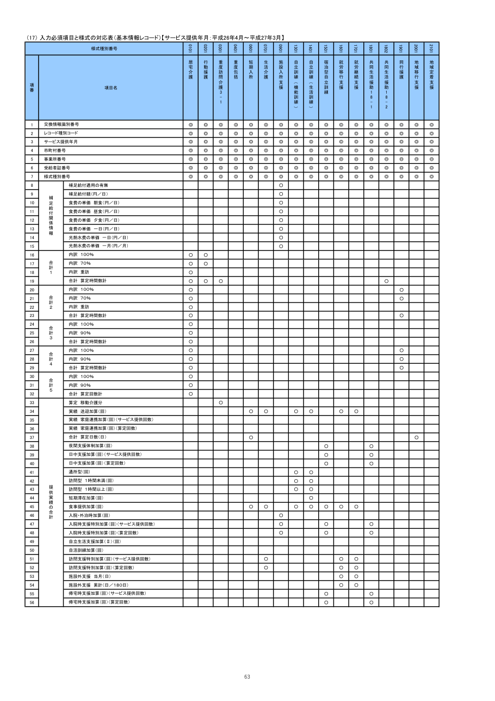
| 項番 | 項目名 | 属性 | 桁数 | 内容 | 必須 | 備考 | その他の列 |
|---|---|---|---|---|---|---|---|
| 1 | 交換情報識別番号 | 0101:◎ 0201:◎ 0301:◎ 0401:◎ 0601:◎ 0701:◎ 0901:◎ 1301:◎ 1401:◎ 1501:◎ 1601:◎ 1701:◎ 1801:◎ 1802:◎ 1901:◎ 2001:◎ 2101:◎ | |||||
| 2 | レコード種別コード | 0101:◎ 0201:◎ 0301:◎ 0401:◎ 0601:◎ 0701:◎ 0901:◎ 1301:◎ 1401:◎ 1501:◎ 1601:◎ 1701:◎ 1801:◎ 1802:◎ 1901:◎ 2001:◎ 2101:◎ | |||||
| 3 | サービス提供年月 | 0101:◎ 0201:◎ 0301:◎ 0401:◎ 0601:◎ 0701:◎ 0901:◎ 1301:◎ 1401:◎ 1501:◎ 1601:◎ 1701:◎ 1801:◎ 1802:◎ 1901:◎ 2001:◎ 2101:◎ | |||||
| 4 | 市町村番号 | 0101:◎ 0201:◎ 0301:◎ 0401:◎ 0601:◎ 0701:◎ 0901:◎ 1301:◎ 1401:◎ 1501:◎ 1601:◎ 1701:◎ 1801:◎ 1802:◎ 1901:◎ 2001:◎ 2101:◎ | |||||
| 5 | 事業所番号 | 0101:◎ 0201:◎ 0301:◎ 0401:◎ 0601:◎ 0701:◎ 0901:◎ 1301:◎ 1401:◎ 1501:◎ 1601:◎ 1701:◎ 1801:◎ 1802:◎ 1901:◎ 2001:◎ 2101:◎ | |||||
| 6 | 受給者証番号 | 0101:◎ 0201:◎ 0301:◎ 0401:◎ 0601:◎ 0701:◎ 0901:◎ 1301:◎ 1401:◎ 1501:◎ 1601:◎ 1701:◎ 1801:◎ 1802:◎ 1901:◎ 2001:◎ 2101:◎ | |||||
| 7 | 様式種別番号 | 0101:◎ 0201:◎ 0301:◎ 0401:◎ 0601:◎ 0701:◎ 0901:◎ 1301:◎ 1401:◎ 1501:◎ 1601:◎ 1701:◎ 1801:◎ 1802:◎ 1901:◎ 2001:◎ 2101:◎ | |||||
| 8 | 補足給付関係情報 > 補足給付適用の有無 | 0101:－ 0201:－ 0301:－ 0401:－ 0601:－ 0701:－ 0901:○ 1301:－ 1401:－ 1501:－ 1601:－ 1701:－ 1801:－ 1802:－ 1901:－ 2001:－ 2101:－ | |||||
| 9 | 補足給付関係情報 > 補足給付額（円／日） | 0101:－ 0201:－ 0301:－ 0401:－ 0601:－ 0701:－ 0901:○ 1301:－ 1401:－ 1501:－ 1601:－ 1701:－ 1801:－ 1802:－ 1901:－ 2001:－ 2101:－ | |||||
| 10 | 補足給付関係情報 > 食費の単価 朝食（円／日） | 0101:－ 0201:－ 0301:－ 0401:－ 0601:－ 0701:－ 0901:○ 1301:－ 1401:－ 1501:－ 1601:－ 1701:－ 1801:－ 1802:－ 1901:－ 2001:－ 2101:－ | |||||
| 11 | 補足給付関係情報 > 食費の単価 昼食（円／日） | 0101:－ 0201:－ 0301:－ 0401:－ 0601:－ 0701:－ 0901:○ 1301:－ 1401:－ 1501:－ 1601:－ 1701:－ 1801:－ 1802:－ 1901:－ 2001:－ 2101:－ | |||||
| 12 | 補足給付関係情報 > 食費の単価 夕食（円／日） | 0101:－ 0201:－ 0301:－ 0401:－ 0601:－ 0701:－ 0901:○ 1301:－ 1401:－ 1501:－ 1601:－ 1701:－ 1801:－ 1802:－ 1901:－ 2001:－ 2101:－ | |||||
| 13 | 補足給付関係情報 > 食費の単価 一日（円／日） | 0101:－ 0201:－ 0301:－ 0401:－ 0601:－ 0701:－ 0901:○ 1301:－ 1401:－ 1501:－ 1601:－ 1701:－ 1801:－ 1802:－ 1901:－ 2001:－ 2101:－ | |||||
| 14 | 補足給付関係情報 > 光熱水費の単価 一日（円／日） | 0101:－ 0201:－ 0301:－ 0401:－ 0601:－ 0701:－ 0901:○ 1301:－ 1401:－ 1501:－ 1601:－ 1701:－ 1801:－ 1802:－ 1901:－ 2001:－ 2101:－ | |||||
| 15 | 補足給付関係情報 > 光熱水費の単価 一月（円／月） | 0101:－ 0201:－ 0301:－ 0401:－ 0601:－ 0701:－ 0901:○ 1301:－ 1401:－ 1501:－ 1601:－ 1701:－ 1801:－ 1802:－ 1901:－ 2001:－ 2101:－ | |||||
| 16 | 合計1 > 内訳 100% | 0101:○ 0201:○ 0301:－ 0401:－ 0601:－ 0701:－ 0901:－ 1301:－ 1401:－ 1501:－ 1601:－ 1701:－ 1801:－ 1802:－ 1901:－ 2001:－ 2101:－ | |||||
| 17 | 合計1 > 内訳 70% | 0101:○ 0201:○ 0301:－ 0401:－ 0601:－ 0701:－ 0901:－ 1301:－ 1401:－ 1501:－ 1601:－ 1701:－ 1801:－ 1802:－ 1901:－ 2001:－ 2101:－ | |||||
| 18 | 合計1 > 内訳 重訪 | 0101:○ 0201:－ 0301:－ 0401:－ 0601:－ 0701:－ 0901:－ 1301:－ 1401:－ 1501:－ 1601:－ 1701:－ 1801:－ 1802:－ 1901:－ 2001:－ 2101:－ | |||||
| 19 | 合計1 > 合計 算定時間数計 | 0101:○ 0201:○ 0301:○ 0401:－ 0601:－ 0701:－ 0901:－ 1301:－ 1401:－ 1501:－ 1601:－ 1701:－ 1801:－ 1802:○ 1901:－ 2001:－ 2101:－ | |||||
| 20 | 合計2 > 内訳 100% | 0101:○ 0201:－ 0301:－ 0401:－ 0601:－ 0701:－ 0901:－ 1301:－ 1401:－ 1501:－ 1601:－ 1701:－ 1801:－ 1802:－ 1901:○ 2001:－ 2101:－ | |||||
| 21 | 合計2 > 内訳 70% | 0101:○ 0201:－ 0301:－ 0401:－ 0601:－ 0701:－ 0901:－ 1301:－ 1401:－ 1501:－ 1601:－ 1701:－ 1801:－ 1802:－ 1901:○ 2001:－ 2101:－ | |||||
| 22 | 合計2 > 内訳 重訪 | 0101:○ 0201:－ 0301:－ 0401:－ 0601:－ 0701:－ 0901:－ 1301:－ 1401:－ 1501:－ 1601:－ 1701:－ 1801:－ 1802:－ 1901:－ 2001:－ 2101:－ | |||||
| 23 | 合計2 > 合計 算定時間数計 | 0101:○ 0201:－ 0301:－ 0401:－ 0601:－ 0701:－ 0901:－ 1301:－ 1401:－ 1501:－ 1601:－ 1701:－ 1801:－ 1802:－ 1901:○ 2001:－ 2101:－ | |||||
| 24 | 合計3 > 内訳 100% | 0101:○ 0201:－ 0301:－ 0401:－ 0601:－ 0701:－ 0901:－ 1301:－ 1401:－ 1501:－ 1601:－ 1701:－ 1801:－ 1802:－ 1901:－ 2001:－ 2101:－ | |||||
| 25 | 合計3 > 内訳 90% | 0101:○ 0201:－ 0301:－ 0401:－ 0601:－ 0701:－ 0901:－ 1301:－ 1401:－ 1501:－ 1601:－ 1701:－ 1801:－ 1802:－ 1901:－ 2001:－ 2101:－ | |||||
| 26 | 合計3 > 合計 算定時間数計 | 0101:○ 0201:－ 0301:－ 0401:－ 0601:－ 0701:－ 0901:－ 1301:－ 1401:－ 1501:－ 1601:－ 1701:－ 1801:－ 1802:－ 1901:－ 2001:－ 2101:－ | |||||
| 27 | 合計4 > 内訳 100% | 0101:－ 0201:－ 0301:－ 0401:－ 0601:－ 0701:－ 0901:－ 1301:－ 1401:－ 1501:－ 1601:－ 1701:－ 1801:－ 1802:－ 1901:○ 2001:－ 2101:－ | |||||
| 28 | 合計4 > 内訳 90% | 0101:－ 0201:－ 0301:－ 0401:－ 0601:－ 0701:－ 0901:－ 1301:－ 1401:－ 1501:－ 1601:－ 1701:－ 1801:－ 1802:－ 1901:○ 2001:－ 2101:－ | |||||
| 29 | 合計4 > 合計 算定時間数計 | 0101:○ 0201:－ 0301:－ 0401:－ 0601:－ 0701:－ 0901:－ 1301:－ 1401:－ 1501:－ 1601:－ 1701:－ 1801:－ 1802:－ 1901:○ 2001:－ 2101:－ | |||||
| 30 | 合計5 > 内訳 100% | 0101:○ 0201:－ 0301:－ 0401:－ 0601:－ 0701:－ 0901:－ 1301:－ 1401:－ 1501:－ 1601:－ 1701:－ 1801:－ 1802:－ 1901:－ 2001:－ 2101:－ | |||||
| 31 | 合計5 > 内訳 90% | 0101:○ 0201:－ 0301:－ 0401:－ 0601:－ 0701:－ 0901:－ 1301:－ 1401:－ 1501:－ 1601:－ 1701:－ 1801:－ 1802:－ 1901:－ 2001:－ 2101:－ | |||||
| 32 | 合計5 > 合計 算定回数計 | 0101:○ 0201:－ 0301:－ 0401:－ 0601:－ 0701:－ 0901:－ 1301:－ 1401:－ 1501:－ 1601:－ 1701:－ 1801:－ 1802:－ 1901:－ 2001:－ 2101:－ | |||||
| 33 | 提供実績の合計 > 算定 移動介護分 | 0101:－ 0201:－ 0301:○ 0401:－ 0601:－ 0701:－ 0901:－ 1301:－ 1401:－ 1501:－ 1601:－ 1701:－ 1801:－ 1802:－ 1901:－ 2001:－ 2101:－ | |||||
| 34 | 提供実績の合計 > 実績 送迎加算（回） | 0101:－ 0201:－ 0301:－ 0401:－ 0601:○ 0701:○ 0901:－ 1301:○ 1401:○ 1501:－ 1601:○ 1701:○ 1801:－ 1802:－ 1901:－ 2001:－ 2101:－ | |||||
| 35 | 提供実績の合計 > 実績 家庭連携加算（回）（サービス提供回数） | 0101:－ 0201:－ 0301:－ 0401:－ 0601:－ 0701:－ 0901:－ 1301:－ 1401:－ 1501:－ 1601:－ 1701:－ 1801:－ 1802:－ 1901:－ 2001:－ 2101:－ | |||||
| 36 | 提供実績の合計 > 実績 家庭連携加算（回）（算定回数） | 0101:－ 0201:－ 0301:－ 0401:－ 0601:－ 0701:－ 0901:－ 1301:－ 1401:－ 1501:－ 1601:－ 1701:－ 1801:－ 1802:－ 1901:－ 2001:－ 2101:－ | |||||
| 37 | 提供実績の合計 > 合計 算定日数（日） | 0101:－ 0201:－ 0301:－ 0401:－ 0601:○ 0701:－ 0901:－ 1301:－ 1401:－ 1501:－ 1601:－ 1701:－ 1801:－ 1802:－ 1901:－ 2001:○ 2101:－ | |||||
| 38 | 提供実績の合計 > 夜間支援体制加算（回） | 0101:－ 0201:－ 0301:－ 0401:－ 0601:－ 0701:－ 0901:－ 1301:－ 1401:－ 1501:○ 1601:－ 1701:－ 1801:○ 1802:－ 1901:－ 2001:－ 2101:－ | |||||
| 39 | 提供実績の合計 > 日中支援加算（回）（サービス提供回数） | 0101:－ 0201:－ 0301:－ 0401:－ 0601:－ 0701:－ 0901:－ 1301:－ 1401:－ 1501:○ 1601:－ 1701:－ 1801:○ 1802:－ 1901:－ 2001:－ 2101:－ | |||||
| 40 | 提供実績の合計 > 日中支援加算（回）（算定回数） | 0101:－ 0201:－ 0301:－ 0401:－ 0601:－ 0701:－ 0901:－ 1301:－ 1401:－ 1501:○ 1601:－ 1701:－ 1801:○ 1802:－ 1901:－ 2001:－ 2101:－ | |||||
| 41 | 提供実績の合計 > 通所型（回） | 0101:－ 0201:－ 0301:－ 0401:－ 0601:－ 0701:－ 0901:－ 1301:○ 1401:○ 1501:－ 1601:－ 1701:－ 1801:－ 1802:－ 1901:－ 2001:－ 2101:－ | |||||
| 42 | 提供実績の合計 > 訪問型 1時間未満（回） | 0101:－ 0201:－ 0301:－ 0401:－ 0601:－ 0701:－ 0901:－ 1301:○ 1401:○ 1501:－ 1601:－ 1701:－ 1801:－ 1802:－ 1901:－ 2001:－ 2101:－ | |||||
| 43 | 提供実績の合計 > 訪問型 1時間以上（回） | 0101:－ 0201:－ 0301:－ 0401:－ 0601:－ 0701:－ 0901:－ 1301:○ 1401:○ 1501:－ 1601:－ 1701:－ 1801:－ 1802:－ 1901:－ 2001:－ 2101:－ | |||||
| 44 | 提供実績の合計 > 短期滞在加算（回） | 0101:－ 0201:－ 0301:－ 0401:－ 0601:－ 0701:－ 0901:－ 1301:－ 1401:○ 1501:－ 1601:－ 1701:－ 1801:－ 1802:－ 1901:－ 2001:－ 2101:－ | |||||
| 45 | 提供実績の合計 > 食事提供加算（回） | 0101:－ 0201:－ 0301:－ 0401:－ 0601:○ 0701:○ 0901:－ 1301:○ 1401:○ 1501:○ 1601:○ 1701:○ 1801:－ 1802:－ 1901:－ 2001:－ 2101:－ | |||||
| 46 | 提供実績の合計 > 入院・外泊時加算（回） | 0101:－ 0201:－ 0301:－ 0401:－ 0601:－ 0701:－ 0901:○ 1301:－ 1401:－ 1501:－ 1601:－ 1701:－ 1801:－ 1802:－ 1901:－ 2001:－ 2101:－ | |||||
| 47 | 提供実績の合計 > 入院時支援特別加算（回）（サービス提供回数） | 0101:－ 0201:－ 0301:－ 0401:－ 0601:－ 0701:－ 0901:○ 1301:－ 1401:－ 1501:○ 1601:－ 1701:－ 1801:○ 1802:－ 1901:－ 2001:－ 2101:－ | |||||
| 48 | 提供実績の合計 > 入院時支援特別加算（回）（算定回数） | 0101:－ 0201:－ 0301:－ 0401:－ 0601:－ 0701:－ 0901:○ 1301:－ 1401:－ 1501:○ 1601:－ 1701:－ 1801:○ 1802:－ 1901:－ 2001:－ 2101:－ | |||||
| 49 | 提供実績の合計 > 自立生活支援加算（Ⅱ）（回） | 0101:－ 0201:－ 0301:－ 0401:－ 0601:－ 0701:－ 0901:－ 1301:－ 1401:－ 1501:－ 1601:－ 1701:－ 1801:－ 1802:－ 1901:－ 2001:－ 2101:－ | |||||
| 50 | 提供実績の合計 > 自活訓練加算（回） | 0101:－ 0201:－ 0301:－ 0401:－ 0601:－ 0701:－ 0901:－ 1301:－ 1401:－ 1501:－ 1601:－ 1701:－ 1801:－ 1802:－ 1901:－ 2001:－ 2101:－ | |||||
| 51 | 提供実績の合計 > 訪問支援特別加算（回）（サービス提供回数） | 0101:－ 0201:－ 0301:－ 0401:－ 0601:－ 0701:○ 0901:－ 1301:－ 1401:－ 1501:－ 1601:○ 1701:○ 1801:－ 1802:－ 1901:－ 2001:－ 2101:－ | |||||
| 52 | 提供実績の合計 > 訪問支援特別加算（回）（算定回数） | 0101:－ 0201:－ 0301:－ 0401:－ 0601:－ 0701:○ 0901:－ 1301:－ 1401:－ 1501:－ 1601:○ 1701:○ 1801:－ 1802:－ 1901:－ 2001:－ 2101:－ | |||||
| 53 | 提供実績の合計 > 施設外支援 当月（日） | 0101:－ 0201:－ 0301:－ 0401:－ 0601:－ 0701:－ 0901:－ 1301:－ 1401:－ 1501:－ 1601:○ 1701:○ 1801:－ 1802:－ 1901:－ 2001:－ 2101:－ | |||||
| 54 | 提供実績の合計 > 施設外支援 累計（日／180日） | 0101:－ 0201:－ 0301:－ 0401:－ 0601:－ 0701:－ 0901:－ 1301:－ 1401:－ 1501:－ 1601:○ 1701:○ 1801:－ 1802:－ 1901:－ 2001:－ 2101:－ | |||||
| 55 | 提供実績の合計 > 帰宅時支援加算（回）（サービス提供回数） | 0101:－ 0201:－ 0301:－ 0401:－ 0601:－ 0701:－ 0901:－ 1301:－ 1401:－ 1501:○ 1601:－ 1701:－ 1801:○ 1802:－ 1901:－ 2001:－ 2101:－ | |||||
| 56 | 提供実績の合計 > 帰宅時支援加算（回）（算定回数） | 0101:－ 0201:－ 0301:－ 0401:－ 0601:－ 0701:－ 0901:－ 1301:－ 1401:－ 1501:○ 1601:－ 1701:－ 1801:○ 1802:－ 1901:－ 2001:－ 2101:－ |
| 項番 | 項目名 | 属性 | 桁数 | 内容 | 必須 | 備考 | その他の列 |
|---|---|---|---|---|---|---|---|
| 1 | 交換情報識別番号 | 0101 居宅介護:◎ 0201 行動援護:◎ 0301 重度訪問介護3-1:◎ 0401 重度包括:◎ 0601 短期入所:◎ 0701 生活介護:◎ 0901 施設入所支援:◎ 1301 自立訓練(機能訓練):◎ 1401 自立訓練(生活訓練):◎ 1501 宿泊型自立訓練:◎ 1601 就労移行支援:◎ 1701 就労継続支援:◎ 1801 共同生活援助18-1:◎ 1802 共同生活援助18-2:◎ 1901 同行援護:◎ 2001 地域移行支援:◎ 2101 地域定着支援:◎ | |||||
| 2 | レコード種別コード | 0101 居宅介護:◎ 0201 行動援護:◎ 0301 重度訪問介護3-1:◎ 0401 重度包括:◎ 0601 短期入所:◎ 0701 生活介護:◎ 0901 施設入所支援:◎ 1301 自立訓練(機能訓練):◎ 1401 自立訓練(生活訓練):◎ 1501 宿泊型自立訓練:◎ 1601 就労移行支援:◎ 1701 就労継続支援:◎ 1801 共同生活援助18-1:◎ 1802 共同生活援助18-2:◎ 1901 同行援護:◎ 2001 地域移行支援:◎ 2101 地域定着支援:◎ | |||||
| 3 | サービス提供年月 | 0101 居宅介護:◎ 0201 行動援護:◎ 0301 重度訪問介護3-1:◎ 0401 重度包括:◎ 0601 短期入所:◎ 0701 生活介護:◎ 0901 施設入所支援:◎ 1301 自立訓練(機能訓練):◎ 1401 自立訓練(生活訓練):◎ 1501 宿泊型自立訓練:◎ 1601 就労移行支援:◎ 1701 就労継続支援:◎ 1801 共同生活援助18-1:◎ 1802 共同生活援助18-2:◎ 1901 同行援護:◎ 2001 地域移行支援:◎ 2101 地域定着支援:◎ | |||||
| 4 | 市町村番号 | 0101 居宅介護:◎ 0201 行動援護:◎ 0301 重度訪問介護3-1:◎ 0401 重度包括:◎ 0601 短期入所:◎ 0701 生活介護:◎ 0901 施設入所支援:◎ 1301 自立訓練(機能訓練):◎ 1401 自立訓練(生活訓練):◎ 1501 宿泊型自立訓練:◎ 1601 就労移行支援:◎ 1701 就労継続支援:◎ 1801 共同生活援助18-1:◎ 1802 共同生活援助18-2:◎ 1901 同行援護:◎ 2001 地域移行支援:◎ 2101 地域定着支援:◎ | |||||
| 5 | 事業所番号 | 0101 居宅介護:◎ 0201 行動援護:◎ 0301 重度訪問介護3-1:◎ 0401 重度包括:◎ 0601 短期入所:◎ 0701 生活介護:◎ 0901 施設入所支援:◎ 1301 自立訓練(機能訓練):◎ 1401 自立訓練(生活訓練):◎ 1501 宿泊型自立訓練:◎ 1601 就労移行支援:◎ 1701 就労継続支援:◎ 1801 共同生活援助18-1:◎ 1802 共同生活援助18-2:◎ 1901 同行援護:◎ 2001 地域移行支援:◎ 2101 地域定着支援:◎ | |||||
| 6 | 受給者証番号 | 0101 居宅介護:◎ 0201 行動援護:◎ 0301 重度訪問介護3-1:◎ 0401 重度包括:◎ 0601 短期入所:◎ 0701 生活介護:◎ 0901 施設入所支援:◎ 1301 自立訓練(機能訓練):◎ 1401 自立訓練(生活訓練):◎ 1501 宿泊型自立訓練:◎ 1601 就労移行支援:◎ 1701 就労継続支援:◎ 1801 共同生活援助18-1:◎ 1802 共同生活援助18-2:◎ 1901 同行援護:◎ 2001 地域移行支援:◎ 2101 地域定着支援:◎ | |||||
| 7 | 様式種別番号 | 0101 居宅介護:◎ 0201 行動援護:◎ 0301 重度訪問介護3-1:◎ 0401 重度包括:◎ 0601 短期入所:◎ 0701 生活介護:◎ 0901 施設入所支援:◎ 1301 自立訓練(機能訓練):◎ 1401 自立訓練(生活訓練):◎ 1501 宿泊型自立訓練:◎ 1601 就労移行支援:◎ 1701 就労継続支援:◎ 1801 共同生活援助18-1:◎ 1802 共同生活援助18-2:◎ 1901 同行援護:◎ 2001 地域移行支援:◎ 2101 地域定着支援:◎ | |||||
| 8 | 補足給付関係情報 > 補足給付適用の有無 | 0101 居宅介護:－ 0201 行動援護:－ 0301 重度訪問介護3-1:－ 0401 重度包括:－ 0601 短期入所:－ 0701 生活介護:－ 0901 施設入所支援:○ 1301 自立訓練(機能訓練):－ 1401 自立訓練(生活訓練):－ 1501 宿泊型自立訓練:－ 1601 就労移行支援:－ 1701 就労継続支援:－ 1801 共同生活援助18-1:－ 1802 共同生活援助18-2:－ 1901 同行援護:－ 2001 地域移行支援:－ 2101 地域定着支援:－ | |||||
| 9 | 補足給付関係情報 > 補足給付額(円／日) | 0101 居宅介護:－ 0201 行動援護:－ 0301 重度訪問介護3-1:－ 0401 重度包括:－ 0601 短期入所:－ 0701 生活介護:－ 0901 施設入所支援:○ 1301 自立訓練(機能訓練):－ 1401 自立訓練(生活訓練):－ 1501 宿泊型自立訓練:－ 1601 就労移行支援:－ 1701 就労継続支援:－ 1801 共同生活援助18-1:－ 1802 共同生活援助18-2:－ 1901 同行援護:－ 2001 地域移行支援:－ 2101 地域定着支援:－ | |||||
| 10 | 補足給付関係情報 > 食費の単価 朝食(円／日) | 0101 居宅介護:－ 0201 行動援護:－ 0301 重度訪問介護3-1:－ 0401 重度包括:－ 0601 短期入所:－ 0701 生活介護:－ 0901 施設入所支援:○ 1301 自立訓練(機能訓練):－ 1401 自立訓練(生活訓練):－ 1501 宿泊型自立訓練:－ 1601 就労移行支援:－ 1701 就労継続支援:－ 1801 共同生活援助18-1:－ 1802 共同生活援助18-2:－ 1901 同行援護:－ 2001 地域移行支援:－ 2101 地域定着支援:－ | |||||
| 11 | 補足給付関係情報 > 食費の単価 昼食(円／日) | 0101 居宅介護:－ 0201 行動援護:－ 0301 重度訪問介護3-1:－ 0401 重度包括:－ 0601 短期入所:－ 0701 生活介護:－ 0901 施設入所支援:○ 1301 自立訓練(機能訓練):－ 1401 自立訓練(生活訓練):－ 1501 宿泊型自立訓練:－ 1601 就労移行支援:－ 1701 就労継続支援:－ 1801 共同生活援助18-1:－ 1802 共同生活援助18-2:－ 1901 同行援護:－ 2001 地域移行支援:－ 2101 地域定着支援:－ | |||||
| 12 | 補足給付関係情報 > 食費の単価 夕食(円／日) | 0101 居宅介護:－ 0201 行動援護:－ 0301 重度訪問介護3-1:－ 0401 重度包括:－ 0601 短期入所:－ 0701 生活介護:－ 0901 施設入所支援:○ 1301 自立訓練(機能訓練):－ 1401 自立訓練(生活訓練):－ 1501 宿泊型自立訓練:－ 1601 就労移行支援:－ 1701 就労継続支援:－ 1801 共同生活援助18-1:－ 1802 共同生活援助18-2:－ 1901 同行援護:－ 2001 地域移行支援:－ 2101 地域定着支援:－ | |||||
| 13 | 補足給付関係情報 > 食費の単価 一日(円／日) | 0101 居宅介護:－ 0201 行動援護:－ 0301 重度訪問介護3-1:－ 0401 重度包括:－ 0601 短期入所:－ 0701 生活介護:－ 0901 施設入所支援:○ 1301 自立訓練(機能訓練):－ 1401 自立訓練(生活訓練):－ 1501 宿泊型自立訓練:－ 1601 就労移行支援:－ 1701 就労継続支援:－ 1801 共同生活援助18-1:－ 1802 共同生活援助18-2:－ 1901 同行援護:－ 2001 地域移行支援:－ 2101 地域定着支援:－ | |||||
| 14 | 補足給付関係情報 > 光熱水費の単価 一日(円／日) | 0101 居宅介護:－ 0201 行動援護:－ 0301 重度訪問介護3-1:－ 0401 重度包括:－ 0601 短期入所:－ 0701 生活介護:－ 0901 施設入所支援:○ 1301 自立訓練(機能訓練):－ 1401 自立訓練(生活訓練):－ 1501 宿泊型自立訓練:－ 1601 就労移行支援:－ 1701 就労継続支援:－ 1801 共同生活援助18-1:－ 1802 共同生活援助18-2:－ 1901 同行援護:－ 2001 地域移行支援:－ 2101 地域定着支援:－ | |||||
| 15 | 補足給付関係情報 > 光熱水費の単価 一月(円／月) | 0101 居宅介護:－ 0201 行動援護:－ 0301 重度訪問介護3-1:－ 0401 重度包括:－ 0601 短期入所:－ 0701 生活介護:－ 0901 施設入所支援:○ 1301 自立訓練(機能訓練):－ 1401 自立訓練(生活訓練):－ 1501 宿泊型自立訓練:－ 1601 就労移行支援:－ 1701 就労継続支援:－ 1801 共同生活援助18-1:－ 1802 共同生活援助18-2:－ 1901 同行援護:－ 2001 地域移行支援:－ 2101 地域定着支援:－ | |||||
| 16 | 合計1 > 内訳 100% | 0101 居宅介護:○ 0201 行動援護:○ 0301 重度訪問介護3-1:－ 0401 重度包括:－ 0601 短期入所:－ 0701 生活介護:－ 0901 施設入所支援:－ 1301 自立訓練(機能訓練):－ 1401 自立訓練(生活訓練):－ 1501 宿泊型自立訓練:－ 1601 就労移行支援:－ 1701 就労継続支援:－ 1801 共同生活援助18-1:－ 1802 共同生活援助18-2:－ 1901 同行援護:－ 2001 地域移行支援:－ 2101 地域定着支援:－ | |||||
| 17 | 合計1 > 内訳 70% | 0101 居宅介護:○ 0201 行動援護:○ 0301 重度訪問介護3-1:－ 0401 重度包括:－ 0601 短期入所:－ 0701 生活介護:－ 0901 施設入所支援:－ 1301 自立訓練(機能訓練):－ 1401 自立訓練(生活訓練):－ 1501 宿泊型自立訓練:－ 1601 就労移行支援:－ 1701 就労継続支援:－ 1801 共同生活援助18-1:－ 1802 共同生活援助18-2:－ 1901 同行援護:－ 2001 地域移行支援:－ 2101 地域定着支援:－ | |||||
| 18 | 合計1 > 内訳 重訪 | 0101 居宅介護:○ 0201 行動援護:－ 0301 重度訪問介護3-1:－ 0401 重度包括:－ 0601 短期入所:－ 0701 生活介護:－ 0901 施設入所支援:－ 1301 自立訓練(機能訓練):－ 1401 自立訓練(生活訓練):－ 1501 宿泊型自立訓練:－ 1601 就労移行支援:－ 1701 就労継続支援:－ 1801 共同生活援助18-1:－ 1802 共同生活援助18-2:－ 1901 同行援護:－ 2001 地域移行支援:－ 2101 地域定着支援:－ | |||||
| 19 | 合計1 > 合計 算定時間数計 | 0101 居宅介護:○ 0201 行動援護:○ 0301 重度訪問介護3-1:○ 0401 重度包括:－ 0601 短期入所:－ 0701 生活介護:－ 0901 施設入所支援:－ 1301 自立訓練(機能訓練):－ 1401 自立訓練(生活訓練):－ 1501 宿泊型自立訓練:－ 1601 就労移行支援:－ 1701 就労継続支援:－ 1801 共同生活援助18-1:－ 1802 共同生活援助18-2:○ 1901 同行援護:－ 2001 地域移行支援:－ 2101 地域定着支援:－ | |||||
| 20 | 合計2 > 内訳 100% | 0101 居宅介護:○ 0201 行動援護:－ 0301 重度訪問介護3-1:－ 0401 重度包括:－ 0601 短期入所:－ 0701 生活介護:－ 0901 施設入所支援:－ 1301 自立訓練(機能訓練):－ 1401 自立訓練(生活訓練):－ 1501 宿泊型自立訓練:－ 1601 就労移行支援:－ 1701 就労継続支援:－ 1801 共同生活援助18-1:－ 1802 共同生活援助18-2:－ 1901 同行援護:○ 2001 地域移行支援:－ 2101 地域定着支援:－ | |||||
| 21 | 合計2 > 内訳 70% | 0101 居宅介護:○ 0201 行動援護:－ 0301 重度訪問介護3-1:－ 0401 重度包括:－ 0601 短期入所:－ 0701 生活介護:－ 0901 施設入所支援:－ 1301 自立訓練(機能訓練):－ 1401 自立訓練(生活訓練):－ 1501 宿泊型自立訓練:－ 1601 就労移行支援:－ 1701 就労継続支援:－ 1801 共同生活援助18-1:－ 1802 共同生活援助18-2:－ 1901 同行援護:○ 2001 地域移行支援:－ 2101 地域定着支援:－ | |||||
| 22 | 合計2 > 内訳 重訪 | 0101 居宅介護:○ 0201 行動援護:－ 0301 重度訪問介護3-1:－ 0401 重度包括:－ 0601 短期入所:－ 0701 生活介護:－ 0901 施設入所支援:－ 1301 自立訓練(機能訓練):－ 1401 自立訓練(生活訓練):－ 1501 宿泊型自立訓練:－ 1601 就労移行支援:－ 1701 就労継続支援:－ 1801 共同生活援助18-1:－ 1802 共同生活援助18-2:－ 1901 同行援護:－ 2001 地域移行支援:－ 2101 地域定着支援:－ | |||||
| 23 | 合計2 > 合計 算定時間数計 | 0101 居宅介護:○ 0201 行動援護:－ 0301 重度訪問介護3-1:－ 0401 重度包括:－ 0601 短期入所:－ 0701 生活介護:－ 0901 施設入所支援:－ 1301 自立訓練(機能訓練):－ 1401 自立訓練(生活訓練):－ 1501 宿泊型自立訓練:－ 1601 就労移行支援:－ 1701 就労継続支援:－ 1801 共同生活援助18-1:－ 1802 共同生活援助18-2:－ 1901 同行援護:○ 2001 地域移行支援:－ 2101 地域定着支援:－ | |||||
| 24 | 合計3 > 内訳 100% | 0101 居宅介護:○ 0201 行動援護:－ 0301 重度訪問介護3-1:－ 0401 重度包括:－ 0601 短期入所:－ 0701 生活介護:－ 0901 施設入所支援:－ 1301 自立訓練(機能訓練):－ 1401 自立訓練(生活訓練):－ 1501 宿泊型自立訓練:－ 1601 就労移行支援:－ 1701 就労継続支援:－ 1801 共同生活援助18-1:－ 1802 共同生活援助18-2:－ 1901 同行援護:－ 2001 地域移行支援:－ 2101 地域定着支援:－ | |||||
| 25 | 合計3 > 内訳 90% | 0101 居宅介護:○ 0201 行動援護:－ 0301 重度訪問介護3-1:－ 0401 重度包括:－ 0601 短期入所:－ 0701 生活介護:－ 0901 施設入所支援:－ 1301 自立訓練(機能訓練):－ 1401 自立訓練(生活訓練):－ 1501 宿泊型自立訓練:－ 1601 就労移行支援:－ 1701 就労継続支援:－ 1801 共同生活援助18-1:－ 1802 共同生活援助18-2:－ 1901 同行援護:－ 2001 地域移行支援:－ 2101 地域定着支援:－ | |||||
| 26 | 合計3 > 合計 算定時間数計 | 0101 居宅介護:○ 0201 行動援護:－ 0301 重度訪問介護3-1:－ 0401 重度包括:－ 0601 短期入所:－ 0701 生活介護:－ 0901 施設入所支援:－ 1301 自立訓練(機能訓練):－ 1401 自立訓練(生活訓練):－ 1501 宿泊型自立訓練:－ 1601 就労移行支援:－ 1701 就労継続支援:－ 1801 共同生活援助18-1:－ 1802 共同生活援助18-2:－ 1901 同行援護:－ 2001 地域移行支援:－ 2101 地域定着支援:－ | |||||
| 27 | 合計4 > 内訳 100% | 0101 居宅介護:○ 0201 行動援護:－ 0301 重度訪問介護3-1:－ 0401 重度包括:－ 0601 短期入所:－ 0701 生活介護:－ 0901 施設入所支援:－ 1301 自立訓練(機能訓練):－ 1401 自立訓練(生活訓練):－ 1501 宿泊型自立訓練:－ 1601 就労移行支援:－ 1701 就労継続支援:－ 1801 共同生活援助18-1:－ 1802 共同生活援助18-2:－ 1901 同行援護:○ 2001 地域移行支援:－ 2101 地域定着支援:－ | |||||
| 28 | 合計4 > 内訳 90% | 0101 居宅介護:○ 0201 行動援護:－ 0301 重度訪問介護3-1:－ 0401 重度包括:－ 0601 短期入所:－ 0701 生活介護:－ 0901 施設入所支援:－ 1301 自立訓練(機能訓練):－ 1401 自立訓練(生活訓練):－ 1501 宿泊型自立訓練:－ 1601 就労移行支援:－ 1701 就労継続支援:－ 1801 共同生活援助18-1:－ 1802 共同生活援助18-2:－ 1901 同行援護:○ 2001 地域移行支援:－ 2101 地域定着支援:－ | |||||
| 29 | 合計4 > 合計 算定時間数計 | 0101 居宅介護:○ 0201 行動援護:－ 0301 重度訪問介護3-1:－ 0401 重度包括:－ 0601 短期入所:－ 0701 生活介護:－ 0901 施設入所支援:－ 1301 自立訓練(機能訓練):－ 1401 自立訓練(生活訓練):－ 1501 宿泊型自立訓練:－ 1601 就労移行支援:－ 1701 就労継続支援:－ 1801 共同生活援助18-1:－ 1802 共同生活援助18-2:－ 1901 同行援護:○ 2001 地域移行支援:－ 2101 地域定着支援:－ | |||||
| 30 | 合計5 > 内訳 100% | 0101 居宅介護:○ 0201 行動援護:－ 0301 重度訪問介護3-1:－ 0401 重度包括:－ 0601 短期入所:－ 0701 生活介護:－ 0901 施設入所支援:－ 1301 自立訓練(機能訓練):－ 1401 自立訓練(生活訓練):－ 1501 宿泊型自立訓練:－ 1601 就労移行支援:－ 1701 就労継続支援:－ 1801 共同生活援助18-1:－ 1802 共同生活援助18-2:－ 1901 同行援護:－ 2001 地域移行支援:－ 2101 地域定着支援:－ | |||||
| 31 | 合計5 > 内訳 90% | 0101 居宅介護:○ 0201 行動援護:－ 0301 重度訪問介護3-1:－ 0401 重度包括:－ 0601 短期入所:－ 0701 生活介護:－ 0901 施設入所支援:－ 1301 自立訓練(機能訓練):－ 1401 自立訓練(生活訓練):－ 1501 宿泊型自立訓練:－ 1601 就労移行支援:－ 1701 就労継続支援:－ 1801 共同生活援助18-1:－ 1802 共同生活援助18-2:－ 1901 同行援護:－ 2001 地域移行支援:－ 2101 地域定着支援:－ | |||||
| 32 | 合計5 > 合計 算定回数計 | 0101 居宅介護:○ 0201 行動援護:－ 0301 重度訪問介護3-1:－ 0401 重度包括:－ 0601 短期入所:－ 0701 生活介護:－ 0901 施設入所支援:－ 1301 自立訓練(機能訓練):－ 1401 自立訓練(生活訓練):－ 1501 宿泊型自立訓練:－ 1601 就労移行支援:－ 1701 就労継続支援:－ 1801 共同生活援助18-1:－ 1802 共同生活援助18-2:－ 1901 同行援護:－ 2001 地域移行支援:－ 2101 地域定着支援:－ | |||||
| 33 | 提供実績の合計 > 算定 移動介護分 | 0101 居宅介護:－ 0201 行動援護:－ 0301 重度訪問介護3-1:○ 0401 重度包括:－ 0601 短期入所:－ 0701 生活介護:－ 0901 施設入所支援:－ 1301 自立訓練(機能訓練):－ 1401 自立訓練(生活訓練):－ 1501 宿泊型自立訓練:－ 1601 就労移行支援:－ 1701 就労継続支援:－ 1801 共同生活援助18-1:－ 1802 共同生活援助18-2:－ 1901 同行援護:－ 2001 地域移行支援:－ 2101 地域定着支援:－ | |||||
| 34 | 提供実績の合計 > 実績 送迎加算(回) | 0101 居宅介護:－ 0201 行動援護:－ 0301 重度訪問介護3-1:－ 0401 重度包括:－ 0601 短期入所:○ 0701 生活介護:○ 0901 施設入所支援:－ 1301 自立訓練(機能訓練):○ 1401 自立訓練(生活訓練):○ 1501 宿泊型自立訓練:－ 1601 就労移行支援:○ 1701 就労継続支援:○ 1801 共同生活援助18-1:－ 1802 共同生活援助18-2:－ 1901 同行援護:－ 2001 地域移行支援:－ 2101 地域定着支援:－ | |||||
| 35 | 提供実績の合計 > 実績 家庭連携加算(回)(サービス提供回数) | 0101 居宅介護:－ 0201 行動援護:－ 0301 重度訪問介護3-1:－ 0401 重度包括:－ 0601 短期入所:－ 0701 生活介護:－ 0901 施設入所支援:－ 1301 自立訓練(機能訓練):－ 1401 自立訓練(生活訓練):－ 1501 宿泊型自立訓練:－ 1601 就労移行支援:－ 1701 就労継続支援:－ 1801 共同生活援助18-1:－ 1802 共同生活援助18-2:－ 1901 同行援護:－ 2001 地域移行支援:－ 2101 地域定着支援:－ | |||||
| 36 | 提供実績の合計 > 実績 家庭連携加算(回)(算定回数) | 0101 居宅介護:－ 0201 行動援護:－ 0301 重度訪問介護3-1:－ 0401 重度包括:－ 0601 短期入所:－ 0701 生活介護:－ 0901 施設入所支援:－ 1301 自立訓練(機能訓練):－ 1401 自立訓練(生活訓練):－ 1501 宿泊型自立訓練:－ 1601 就労移行支援:－ 1701 就労継続支援:－ 1801 共同生活援助18-1:－ 1802 共同生活援助18-2:－ 1901 同行援護:－ 2001 地域移行支援:－ 2101 地域定着支援:－ | |||||
| 37 | 提供実績の合計 > 合計 算定日数(日) | 0101 居宅介護:－ 0201 行動援護:－ 0301 重度訪問介護3-1:－ 0401 重度包括:－ 0601 短期入所:○ 0701 生活介護:－ 0901 施設入所支援:－ 1301 自立訓練(機能訓練):－ 1401 自立訓練(生活訓練):－ 1501 宿泊型自立訓練:－ 1601 就労移行支援:－ 1701 就労継続支援:－ 1801 共同生活援助18-1:－ 1802 共同生活援助18-2:－ 1901 同行援護:－ 2001 地域移行支援:○ 2101 地域定着支援:－ | |||||
| 38 | 提供実績の合計 > 夜間支援体制加算(回) | 0101 居宅介護:－ 0201 行動援護:－ 0301 重度訪問介護3-1:－ 0401 重度包括:－ 0601 短期入所:－ 0701 生活介護:－ 0901 施設入所支援:－ 1301 自立訓練(機能訓練):－ 1401 自立訓練(生活訓練):－ 1501 宿泊型自立訓練:○ 1601 就労移行支援:－ 1701 就労継続支援:－ 1801 共同生活援助18-1:○ 1802 共同生活援助18-2:－ 1901 同行援護:－ 2001 地域移行支援:－ 2101 地域定着支援:－ | |||||
| 39 | 提供実績の合計 > 日中支援加算(回)(サービス提供回数) | 0101 居宅介護:－ 0201 行動援護:－ 0301 重度訪問介護3-1:－ 0401 重度包括:－ 0601 短期入所:－ 0701 生活介護:－ 0901 施設入所支援:－ 1301 自立訓練(機能訓練):－ 1401 自立訓練(生活訓練):－ 1501 宿泊型自立訓練:○ 1601 就労移行支援:－ 1701 就労継続支援:－ 1801 共同生活援助18-1:○ 1802 共同生活援助18-2:－ 1901 同行援護:－ 2001 地域移行支援:－ 2101 地域定着支援:－ | |||||
| 40 | 提供実績の合計 > 日中支援加算(回)(算定回数) | 0101 居宅介護:－ 0201 行動援護:－ 0301 重度訪問介護3-1:－ 0401 重度包括:－ 0601 短期入所:－ 0701 生活介護:－ 0901 施設入所支援:－ 1301 自立訓練(機能訓練):－ 1401 自立訓練(生活訓練):－ 1501 宿泊型自立訓練:○ 1601 就労移行支援:－ 1701 就労継続支援:－ 1801 共同生活援助18-1:○ 1802 共同生活援助18-2:－ 1901 同行援護:－ 2001 地域移行支援:－ 2101 地域定着支援:－ | |||||
| 41 | 提供実績の合計 > 通所型(回) | 0101 居宅介護:－ 0201 行動援護:－ 0301 重度訪問介護3-1:－ 0401 重度包括:－ 0601 短期入所:－ 0701 生活介護:－ 0901 施設入所支援:－ 1301 自立訓練(機能訓練):○ 1401 自立訓練(生活訓練):○ 1501 宿泊型自立訓練:－ 1601 就労移行支援:－ 1701 就労継続支援:－ 1801 共同生活援助18-1:－ 1802 共同生活援助18-2:－ 1901 同行援護:－ 2001 地域移行支援:－ 2101 地域定着支援:－ | |||||
| 42 | 提供実績の合計 > 訪問型 1時間未満(回) | 0101 居宅介護:－ 0201 行動援護:－ 0301 重度訪問介護3-1:－ 0401 重度包括:－ 0601 短期入所:－ 0701 生活介護:－ 0901 施設入所支援:－ 1301 自立訓練(機能訓練):○ 1401 自立訓練(生活訓練):○ 1501 宿泊型自立訓練:－ 1601 就労移行支援:－ 1701 就労継続支援:－ 1801 共同生活援助18-1:－ 1802 共同生活援助18-2:－ 1901 同行援護:－ 2001 地域移行支援:－ 2101 地域定着支援:－ | |||||
| 43 | 提供実績の合計 > 訪問型 1時間以上(回) | 0101 居宅介護:－ 0201 行動援護:－ 0301 重度訪問介護3-1:－ 0401 重度包括:－ 0601 短期入所:－ 0701 生活介護:－ 0901 施設入所支援:－ 1301 自立訓練(機能訓練):○ 1401 自立訓練(生活訓練):○ 1501 宿泊型自立訓練:－ 1601 就労移行支援:－ 1701 就労継続支援:－ 1801 共同生活援助18-1:－ 1802 共同生活援助18-2:－ 1901 同行援護:－ 2001 地域移行支援:－ 2101 地域定着支援:－ | |||||
| 44 | 提供実績の合計 > 短期滞在加算(回) | 0101 居宅介護:－ 0201 行動援護:－ 0301 重度訪問介護3-1:－ 0401 重度包括:－ 0601 短期入所:－ 0701 生活介護:－ 0901 施設入所支援:－ 1301 自立訓練(機能訓練):－ 1401 自立訓練(生活訓練):○ 1501 宿泊型自立訓練:－ 1601 就労移行支援:－ 1701 就労継続支援:－ 1801 共同生活援助18-1:－ 1802 共同生活援助18-2:－ 1901 同行援護:－ 2001 地域移行支援:－ 2101 地域定着支援:－ | |||||
| 45 | 提供実績の合計 > 食事提供加算(回) | 0101 居宅介護:－ 0201 行動援護:－ 0301 重度訪問介護3-1:－ 0401 重度包括:－ 0601 短期入所:○ 0701 生活介護:○ 0901 施設入所支援:－ 1301 自立訓練(機能訓練):○ 1401 自立訓練(生活訓練):○ 1501 宿泊型自立訓練:○ 1601 就労移行支援:○ 1701 就労継続支援:○ 1801 共同生活援助18-1:－ 1802 共同生活援助18-2:－ 1901 同行援護:－ 2001 地域移行支援:－ 2101 地域定着支援:－ | |||||
| 46 | 提供実績の合計 > 入院･外泊時加算(回) | 0101 居宅介護:－ 0201 行動援護:－ 0301 重度訪問介護3-1:－ 0401 重度包括:－ 0601 短期入所:－ 0701 生活介護:－ 0901 施設入所支援:○ 1301 自立訓練(機能訓練):－ 1401 自立訓練(生活訓練):－ 1501 宿泊型自立訓練:－ 1601 就労移行支援:－ 1701 就労継続支援:－ 1801 共同生活援助18-1:－ 1802 共同生活援助18-2:－ 1901 同行援護:－ 2001 地域移行支援:－ 2101 地域定着支援:－ | |||||
| 47 | 提供実績の合計 > 入院時支援特別加算(回)(サービス提供回数) | 0101 居宅介護:－ 0201 行動援護:－ 0301 重度訪問介護3-1:－ 0401 重度包括:－ 0601 短期入所:－ 0701 生活介護:－ 0901 施設入所支援:○ 1301 自立訓練(機能訓練):－ 1401 自立訓練(生活訓練):－ 1501 宿泊型自立訓練:○ 1601 就労移行支援:－ 1701 就労継続支援:－ 1801 共同生活援助18-1:○ 1802 共同生活援助18-2:－ 1901 同行援護:－ 2001 地域移行支援:－ 2101 地域定着支援:－ | |||||
| 48 | 提供実績の合計 > 入院時支援特別加算(回)(算定回数) | 0101 居宅介護:－ 0201 行動援護:－ 0301 重度訪問介護3-1:－ 0401 重度包括:－ 0601 短期入所:－ 0701 生活介護:－ 0901 施設入所支援:○ 1301 自立訓練(機能訓練):－ 1401 自立訓練(生活訓練):－ 1501 宿泊型自立訓練:○ 1601 就労移行支援:－ 1701 就労継続支援:－ 1801 共同生活援助18-1:○ 1802 共同生活援助18-2:－ 1901 同行援護:－ 2001 地域移行支援:－ 2101 地域定着支援:－ | |||||
| 49 | 提供実績の合計 > 自立生活支援加算(Ⅱ)(回) | 0101 居宅介護:－ 0201 行動援護:－ 0301 重度訪問介護3-1:－ 0401 重度包括:－ 0601 短期入所:－ 0701 生活介護:－ 0901 施設入所支援:－ 1301 自立訓練(機能訓練):－ 1401 自立訓練(生活訓練):－ 1501 宿泊型自立訓練:－ 1601 就労移行支援:－ 1701 就労継続支援:－ 1801 共同生活援助18-1:－ 1802 共同生活援助18-2:－ 1901 同行援護:－ 2001 地域移行支援:－ 2101 地域定着支援:－ | |||||
| 50 | 提供実績の合計 > 自活訓練加算(回) | 0101 居宅介護:－ 0201 行動援護:－ 0301 重度訪問介護3-1:－ 0401 重度包括:－ 0601 短期入所:－ 0701 生活介護:－ 0901 施設入所支援:－ 1301 自立訓練(機能訓練):－ 1401 自立訓練(生活訓練):－ 1501 宿泊型自立訓練:－ 1601 就労移行支援:－ 1701 就労継続支援:－ 1801 共同生活援助18-1:－ 1802 共同生活援助18-2:－ 1901 同行援護:－ 2001 地域移行支援:－ 2101 地域定着支援:－ | |||||
| 51 | 提供実績の合計 > 訪問支援特別加算(回)(サービス提供回数) | 0101 居宅介護:－ 0201 行動援護:－ 0301 重度訪問介護3-1:－ 0401 重度包括:－ 0601 短期入所:－ 0701 生活介護:○ 0901 施設入所支援:－ 1301 自立訓練(機能訓練):－ 1401 自立訓練(生活訓練):－ 1501 宿泊型自立訓練:－ 1601 就労移行支援:○ 1701 就労継続支援:○ 1801 共同生活援助18-1:－ 1802 共同生活援助18-2:－ 1901 同行援護:－ 2001 地域移行支援:－ 2101 地域定着支援:－ | |||||
| 52 | 提供実績の合計 > 訪問支援特別加算(回)(算定回数) | 0101 居宅介護:－ 0201 行動援護:－ 0301 重度訪問介護3-1:－ 0401 重度包括:－ 0601 短期入所:－ 0701 生活介護:○ 0901 施設入所支援:－ 1301 自立訓練(機能訓練):－ 1401 自立訓練(生活訓練):－ 1501 宿泊型自立訓練:－ 1601 就労移行支援:○ 1701 就労継続支援:○ 1801 共同生活援助18-1:－ 1802 共同生活援助18-2:－ 1901 同行援護:－ 2001 地域移行支援:－ 2101 地域定着支援:－ | |||||
| 53 | 提供実績の合計 > 施設外支援 当月(日) | 0101 居宅介護:－ 0201 行動援護:－ 0301 重度訪問介護3-1:－ 0401 重度包括:－ 0601 短期入所:－ 0701 生活介護:－ 0901 施設入所支援:－ 1301 自立訓練(機能訓練):－ 1401 自立訓練(生活訓練):－ 1501 宿泊型自立訓練:－ 1601 就労移行支援:○ 1701 就労継続支援:○ 1801 共同生活援助18-1:－ 1802 共同生活援助18-2:－ 1901 同行援護:－ 2001 地域移行支援:－ 2101 地域定着支援:－ | |||||
| 54 | 提供実績の合計 > 施設外支援 累計(日／180日) | 0101 居宅介護:－ 0201 行動援護:－ 0301 重度訪問介護3-1:－ 0401 重度包括:－ 0601 短期入所:－ 0701 生活介護:－ 0901 施設入所支援:－ 1301 自立訓練(機能訓練):－ 1401 自立訓練(生活訓練):－ 1501 宿泊型自立訓練:－ 1601 就労移行支援:○ 1701 就労継続支援:○ 1801 共同生活援助18-1:－ 1802 共同生活援助18-2:－ 1901 同行援護:－ 2001 地域移行支援:－ 2101 地域定着支援:－ | |||||
| 55 | 提供実績の合計 > 帰宅時支援加算(回)(サービス提供回数) | 0101 居宅介護:－ 0201 行動援護:－ 0301 重度訪問介護3-1:－ 0401 重度包括:－ 0601 短期入所:－ 0701 生活介護:－ 0901 施設入所支援:－ 1301 自立訓練(機能訓練):－ 1401 自立訓練(生活訓練):－ 1501 宿泊型自立訓練:○ 1601 就労移行支援:－ 1701 就労継続支援:－ 1801 共同生活援助18-1:○ 1802 共同生活援助18-2:－ 1901 同行援護:－ 2001 地域移行支援:－ 2101 地域定着支援:－ | |||||
| 56 | 提供実績の合計 > 帰宅時支援加算(回)(算定回数) | 0101 居宅介護:－ 0201 行動援護:－ 0301 重度訪問介護3-1:－ 0401 重度包括:－ 0601 短期入所:－ 0701 生活介護:－ 0901 施設入所支援:－ 1301 自立訓練(機能訓練):－ 1401 自立訓練(生活訓練):－ 1501 宿泊型自立訓練:○ 1601 就労移行支援:－ 1701 就労継続支援:－ 1801 共同生活援助18-1:○ 1802 共同生活援助18-2:－ 1901 同行援護:－ 2001 地域移行支援:－ 2101 地域定着支援:－ |
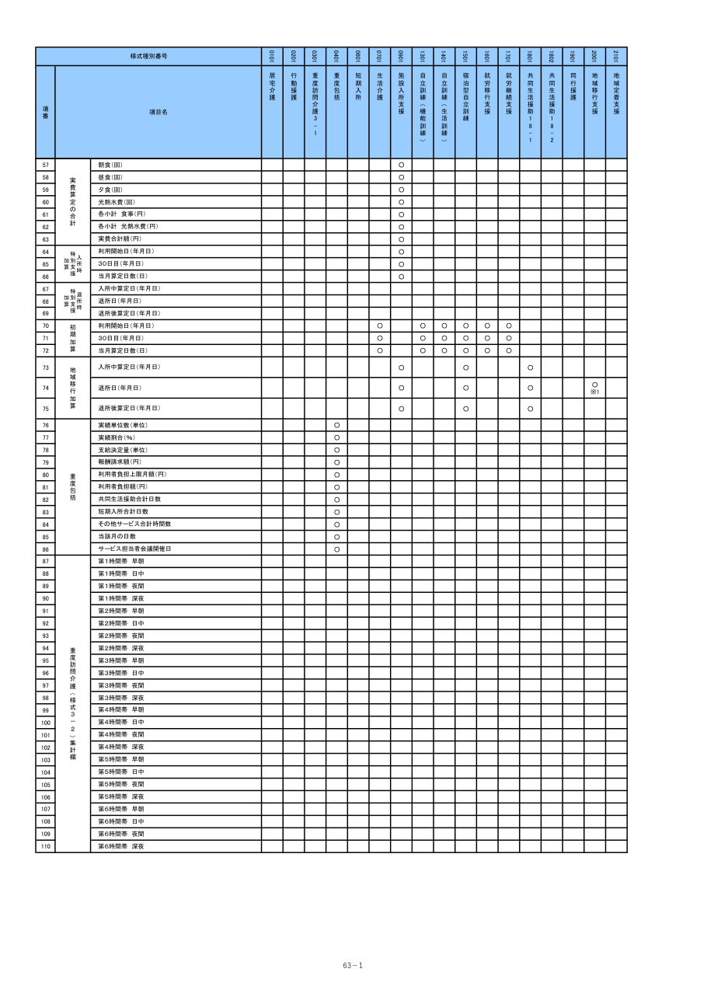
| 項番 | 項目名 | 属性 | 桁数 | 内容 | 必須 | 備考 | その他の列 |
|---|---|---|---|---|---|---|---|
| 57 | 実費算定の合計 > 朝食(回) | 様式種別番号 > 0101 居宅介護:－ 様式種別番号 > 0201 行動援護:－ 様式種別番号 > 0301 重度訪問介護3-1:－ 様式種別番号 > 0401 重度包括:－ 様式種別番号 > 0601 短期入所:－ 様式種別番号 > 0701 生活介護:－ 様式種別番号 > 0901 施設入所支援:○ 様式種別番号 > 1301 自立訓練（機能訓練）:－ 様式種別番号 > 1401 自立訓練（生活訓練）:－ 様式種別番号 > 1501 宿泊型自立訓練:－ 様式種別番号 > 1601 就労移行支援:－ 様式種別番号 > 1701 就労継続支援:－ 様式種別番号 > 1801 共同生活援助18-1:－ 様式種別番号 > 1802 共同生活援助18-2:－ 様式種別番号 > 1901 同行援護:－ 様式種別番号 > 2001 地域移行支援:－ 様式種別番号 > 2101 地域定着支援:－ | |||||
| 58 | 実費算定の合計 > 昼食(回) | 様式種別番号 > 0101 居宅介護:－ 様式種別番号 > 0201 行動援護:－ 様式種別番号 > 0301 重度訪問介護3-1:－ 様式種別番号 > 0401 重度包括:－ 様式種別番号 > 0601 短期入所:－ 様式種別番号 > 0701 生活介護:－ 様式種別番号 > 0901 施設入所支援:○ 様式種別番号 > 1301 自立訓練（機能訓練）:－ 様式種別番号 > 1401 自立訓練（生活訓練）:－ 様式種別番号 > 1501 宿泊型自立訓練:－ 様式種別番号 > 1601 就労移行支援:－ 様式種別番号 > 1701 就労継続支援:－ 様式種別番号 > 1801 共同生活援助18-1:－ 様式種別番号 > 1802 共同生活援助18-2:－ 様式種別番号 > 1901 同行援護:－ 様式種別番号 > 2001 地域移行支援:－ 様式種別番号 > 2101 地域定着支援:－ | |||||
| 59 | 実費算定の合計 > 夕食(回) | 様式種別番号 > 0101 居宅介護:－ 様式種別番号 > 0201 行動援護:－ 様式種別番号 > 0301 重度訪問介護3-1:－ 様式種別番号 > 0401 重度包括:－ 様式種別番号 > 0601 短期入所:－ 様式種別番号 > 0701 生活介護:－ 様式種別番号 > 0901 施設入所支援:○ 様式種別番号 > 1301 自立訓練（機能訓練）:－ 様式種別番号 > 1401 自立訓練（生活訓練）:－ 様式種別番号 > 1501 宿泊型自立訓練:－ 様式種別番号 > 1601 就労移行支援:－ 様式種別番号 > 1701 就労継続支援:－ 様式種別番号 > 1801 共同生活援助18-1:－ 様式種別番号 > 1802 共同生活援助18-2:－ 様式種別番号 > 1901 同行援護:－ 様式種別番号 > 2001 地域移行支援:－ 様式種別番号 > 2101 地域定着支援:－ | |||||
| 60 | 実費算定の合計 > 光熱水費(回) | 様式種別番号 > 0101 居宅介護:－ 様式種別番号 > 0201 行動援護:－ 様式種別番号 > 0301 重度訪問介護3-1:－ 様式種別番号 > 0401 重度包括:－ 様式種別番号 > 0601 短期入所:－ 様式種別番号 > 0701 生活介護:－ 様式種別番号 > 0901 施設入所支援:○ 様式種別番号 > 1301 自立訓練（機能訓練）:－ 様式種別番号 > 1401 自立訓練（生活訓練）:－ 様式種別番号 > 1501 宿泊型自立訓練:－ 様式種別番号 > 1601 就労移行支援:－ 様式種別番号 > 1701 就労継続支援:－ 様式種別番号 > 1801 共同生活援助18-1:－ 様式種別番号 > 1802 共同生活援助18-2:－ 様式種別番号 > 1901 同行援護:－ 様式種別番号 > 2001 地域移行支援:－ 様式種別番号 > 2101 地域定着支援:－ | |||||
| 61 | 実費算定の合計 > 各小計 食事(円) | 様式種別番号 > 0101 居宅介護:－ 様式種別番号 > 0201 行動援護:－ 様式種別番号 > 0301 重度訪問介護3-1:－ 様式種別番号 > 0401 重度包括:－ 様式種別番号 > 0601 短期入所:－ 様式種別番号 > 0701 生活介護:－ 様式種別番号 > 0901 施設入所支援:○ 様式種別番号 > 1301 自立訓練（機能訓練）:－ 様式種別番号 > 1401 自立訓練（生活訓練）:－ 様式種別番号 > 1501 宿泊型自立訓練:－ 様式種別番号 > 1601 就労移行支援:－ 様式種別番号 > 1701 就労継続支援:－ 様式種別番号 > 1801 共同生活援助18-1:－ 様式種別番号 > 1802 共同生活援助18-2:－ 様式種別番号 > 1901 同行援護:－ 様式種別番号 > 2001 地域移行支援:－ 様式種別番号 > 2101 地域定着支援:－ | |||||
| 62 | 実費算定の合計 > 各小計 光熱水費(円) | 様式種別番号 > 0101 居宅介護:－ 様式種別番号 > 0201 行動援護:－ 様式種別番号 > 0301 重度訪問介護3-1:－ 様式種別番号 > 0401 重度包括:－ 様式種別番号 > 0601 短期入所:－ 様式種別番号 > 0701 生活介護:－ 様式種別番号 > 0901 施設入所支援:○ 様式種別番号 > 1301 自立訓練（機能訓練）:－ 様式種別番号 > 1401 自立訓練（生活訓練）:－ 様式種別番号 > 1501 宿泊型自立訓練:－ 様式種別番号 > 1601 就労移行支援:－ 様式種別番号 > 1701 就労継続支援:－ 様式種別番号 > 1801 共同生活援助18-1:－ 様式種別番号 > 1802 共同生活援助18-2:－ 様式種別番号 > 1901 同行援護:－ 様式種別番号 > 2001 地域移行支援:－ 様式種別番号 > 2101 地域定着支援:－ | |||||
| 63 | 実費算定の合計 > 実費合計額(円) | 様式種別番号 > 0101 居宅介護:－ 様式種別番号 > 0201 行動援護:－ 様式種別番号 > 0301 重度訪問介護3-1:－ 様式種別番号 > 0401 重度包括:－ 様式種別番号 > 0601 短期入所:－ 様式種別番号 > 0701 生活介護:－ 様式種別番号 > 0901 施設入所支援:○ 様式種別番号 > 1301 自立訓練（機能訓練）:－ 様式種別番号 > 1401 自立訓練（生活訓練）:－ 様式種別番号 > 1501 宿泊型自立訓練:－ 様式種別番号 > 1601 就労移行支援:－ 様式種別番号 > 1701 就労継続支援:－ 様式種別番号 > 1801 共同生活援助18-1:－ 様式種別番号 > 1802 共同生活援助18-2:－ 様式種別番号 > 1901 同行援護:－ 様式種別番号 > 2001 地域移行支援:－ 様式種別番号 > 2101 地域定着支援:－ | |||||
| 64 | 特別加算入所時支援 > 利用開始日(年月日) | 様式種別番号 > 0101 居宅介護:－ 様式種別番号 > 0201 行動援護:－ 様式種別番号 > 0301 重度訪問介護3-1:－ 様式種別番号 > 0401 重度包括:－ 様式種別番号 > 0601 短期入所:－ 様式種別番号 > 0701 生活介護:－ 様式種別番号 > 0901 施設入所支援:○ 様式種別番号 > 1301 自立訓練（機能訓練）:－ 様式種別番号 > 1401 自立訓練（生活訓練）:－ 様式種別番号 > 1501 宿泊型自立訓練:－ 様式種別番号 > 1601 就労移行支援:－ 様式種別番号 > 1701 就労継続支援:－ 様式種別番号 > 1801 共同生活援助18-1:－ 様式種別番号 > 1802 共同生活援助18-2:－ 様式種別番号 > 1901 同行援護:－ 様式種別番号 > 2001 地域移行支援:－ 様式種別番号 > 2101 地域定着支援:－ | |||||
| 65 | 特別加算入所時支援 > 30日目(年月日) | 様式種別番号 > 0101 居宅介護:－ 様式種別番号 > 0201 行動援護:－ 様式種別番号 > 0301 重度訪問介護3-1:－ 様式種別番号 > 0401 重度包括:－ 様式種別番号 > 0601 短期入所:－ 様式種別番号 > 0701 生活介護:－ 様式種別番号 > 0901 施設入所支援:○ 様式種別番号 > 1301 自立訓練（機能訓練）:－ 様式種別番号 > 1401 自立訓練（生活訓練）:－ 様式種別番号 > 1501 宿泊型自立訓練:－ 様式種別番号 > 1601 就労移行支援:－ 様式種別番号 > 1701 就労継続支援:－ 様式種別番号 > 1801 共同生活援助18-1:－ 様式種別番号 > 1802 共同生活援助18-2:－ 様式種別番号 > 1901 同行援護:－ 様式種別番号 > 2001 地域移行支援:－ 様式種別番号 > 2101 地域定着支援:－ | |||||
| 66 | 特別加算入所時支援 > 当月算定日数(日) | 様式種別番号 > 0101 居宅介護:－ 様式種別番号 > 0201 行動援護:－ 様式種別番号 > 0301 重度訪問介護3-1:－ 様式種別番号 > 0401 重度包括:－ 様式種別番号 > 0601 短期入所:－ 様式種別番号 > 0701 生活介護:－ 様式種別番号 > 0901 施設入所支援:○ 様式種別番号 > 1301 自立訓練（機能訓練）:－ 様式種別番号 > 1401 自立訓練（生活訓練）:－ 様式種別番号 > 1501 宿泊型自立訓練:－ 様式種別番号 > 1601 就労移行支援:－ 様式種別番号 > 1701 就労継続支援:－ 様式種別番号 > 1801 共同生活援助18-1:－ 様式種別番号 > 1802 共同生活援助18-2:－ 様式種別番号 > 1901 同行援護:－ 様式種別番号 > 2001 地域移行支援:－ 様式種別番号 > 2101 地域定着支援:－ | |||||
| 67 | 特別加算退所時支援 > 入所中算定日(年月日) | 様式種別番号 > 0101 居宅介護:－ 様式種別番号 > 0201 行動援護:－ 様式種別番号 > 0301 重度訪問介護3-1:－ 様式種別番号 > 0401 重度包括:－ 様式種別番号 > 0601 短期入所:－ 様式種別番号 > 0701 生活介護:－ 様式種別番号 > 0901 施設入所支援:－ 様式種別番号 > 1301 自立訓練（機能訓練）:－ 様式種別番号 > 1401 自立訓練（生活訓練）:－ 様式種別番号 > 1501 宿泊型自立訓練:－ 様式種別番号 > 1601 就労移行支援:－ 様式種別番号 > 1701 就労継続支援:－ 様式種別番号 > 1801 共同生活援助18-1:－ 様式種別番号 > 1802 共同生活援助18-2:－ 様式種別番号 > 1901 同行援護:－ 様式種別番号 > 2001 地域移行支援:－ 様式種別番号 > 2101 地域定着支援:－ | |||||
| 68 | 特別加算退所時支援 > 退所日(年月日) | 様式種別番号 > 0101 居宅介護:－ 様式種別番号 > 0201 行動援護:－ 様式種別番号 > 0301 重度訪問介護3-1:－ 様式種別番号 > 0401 重度包括:－ 様式種別番号 > 0601 短期入所:－ 様式種別番号 > 0701 生活介護:－ 様式種別番号 > 0901 施設入所支援:－ 様式種別番号 > 1301 自立訓練（機能訓練）:－ 様式種別番号 > 1401 自立訓練（生活訓練）:－ 様式種別番号 > 1501 宿泊型自立訓練:－ 様式種別番号 > 1601 就労移行支援:－ 様式種別番号 > 1701 就労継続支援:－ 様式種別番号 > 1801 共同生活援助18-1:－ 様式種別番号 > 1802 共同生活援助18-2:－ 様式種別番号 > 1901 同行援護:－ 様式種別番号 > 2001 地域移行支援:－ 様式種別番号 > 2101 地域定着支援:－ | |||||
| 69 | 特別加算退所時支援 > 退所後算定日(年月日) | 様式種別番号 > 0101 居宅介護:－ 様式種別番号 > 0201 行動援護:－ 様式種別番号 > 0301 重度訪問介護3-1:－ 様式種別番号 > 0401 重度包括:－ 様式種別番号 > 0601 短期入所:－ 様式種別番号 > 0701 生活介護:－ 様式種別番号 > 0901 施設入所支援:－ 様式種別番号 > 1301 自立訓練（機能訓練）:－ 様式種別番号 > 1401 自立訓練（生活訓練）:－ 様式種別番号 > 1501 宿泊型自立訓練:－ 様式種別番号 > 1601 就労移行支援:－ 様式種別番号 > 1701 就労継続支援:－ 様式種別番号 > 1801 共同生活援助18-1:－ 様式種別番号 > 1802 共同生活援助18-2:－ 様式種別番号 > 1901 同行援護:－ 様式種別番号 > 2001 地域移行支援:－ 様式種別番号 > 2101 地域定着支援:－ | |||||
| 70 | 初期加算 > 利用開始日(年月日) | 様式種別番号 > 0101 居宅介護:－ 様式種別番号 > 0201 行動援護:－ 様式種別番号 > 0301 重度訪問介護3-1:－ 様式種別番号 > 0401 重度包括:－ 様式種別番号 > 0601 短期入所:－ 様式種別番号 > 0701 生活介護:○ 様式種別番号 > 0901 施設入所支援:－ 様式種別番号 > 1301 自立訓練（機能訓練）:○ 様式種別番号 > 1401 自立訓練（生活訓練）:○ 様式種別番号 > 1501 宿泊型自立訓練:○ 様式種別番号 > 1601 就労移行支援:○ 様式種別番号 > 1701 就労継続支援:○ 様式種別番号 > 1801 共同生活援助18-1:－ 様式種別番号 > 1802 共同生活援助18-2:－ 様式種別番号 > 1901 同行援護:－ 様式種別番号 > 2001 地域移行支援:－ 様式種別番号 > 2101 地域定着支援:－ | |||||
| 71 | 初期加算 > 30日目(年月日) | 様式種別番号 > 0101 居宅介護:－ 様式種別番号 > 0201 行動援護:－ 様式種別番号 > 0301 重度訪問介護3-1:－ 様式種別番号 > 0401 重度包括:－ 様式種別番号 > 0601 短期入所:－ 様式種別番号 > 0701 生活介護:○ 様式種別番号 > 0901 施設入所支援:－ 様式種別番号 > 1301 自立訓練（機能訓練）:○ 様式種別番号 > 1401 自立訓練（生活訓練）:○ 様式種別番号 > 1501 宿泊型自立訓練:○ 様式種別番号 > 1601 就労移行支援:○ 様式種別番号 > 1701 就労継続支援:○ 様式種別番号 > 1801 共同生活援助18-1:－ 様式種別番号 > 1802 共同生活援助18-2:－ 様式種別番号 > 1901 同行援護:－ 様式種別番号 > 2001 地域移行支援:－ 様式種別番号 > 2101 地域定着支援:－ | |||||
| 72 | 初期加算 > 当月算定日数(日) | 様式種別番号 > 0101 居宅介護:－ 様式種別番号 > 0201 行動援護:－ 様式種別番号 > 0301 重度訪問介護3-1:－ 様式種別番号 > 0401 重度包括:－ 様式種別番号 > 0601 短期入所:－ 様式種別番号 > 0701 生活介護:○ 様式種別番号 > 0901 施設入所支援:－ 様式種別番号 > 1301 自立訓練（機能訓練）:○ 様式種別番号 > 1401 自立訓練（生活訓練）:○ 様式種別番号 > 1501 宿泊型自立訓練:○ 様式種別番号 > 1601 就労移行支援:○ 様式種別番号 > 1701 就労継続支援:○ 様式種別番号 > 1801 共同生活援助18-1:－ 様式種別番号 > 1802 共同生活援助18-2:－ 様式種別番号 > 1901 同行援護:－ 様式種別番号 > 2001 地域移行支援:－ 様式種別番号 > 2101 地域定着支援:－ | |||||
| 73 | 地域移行加算 > 入所中算定日(年月日) | 様式種別番号 > 0101 居宅介護:－ 様式種別番号 > 0201 行動援護:－ 様式種別番号 > 0301 重度訪問介護3-1:－ 様式種別番号 > 0401 重度包括:－ 様式種別番号 > 0601 短期入所:－ 様式種別番号 > 0701 生活介護:－ 様式種別番号 > 0901 施設入所支援:○ 様式種別番号 > 1301 自立訓練（機能訓練）:－ 様式種別番号 > 1401 自立訓練（生活訓練）:－ 様式種別番号 > 1501 宿泊型自立訓練:○ 様式種別番号 > 1601 就労移行支援:－ 様式種別番号 > 1701 就労継続支援:－ 様式種別番号 > 1801 共同生活援助18-1:○ 様式種別番号 > 1802 共同生活援助18-2:－ 様式種別番号 > 1901 同行援護:－ 様式種別番号 > 2001 地域移行支援:－ 様式種別番号 > 2101 地域定着支援:－ | |||||
| 74 | 地域移行加算 > 退所日(年月日) | 様式種別番号 > 0101 居宅介護:－ 様式種別番号 > 0201 行動援護:－ 様式種別番号 > 0301 重度訪問介護3-1:－ 様式種別番号 > 0401 重度包括:－ 様式種別番号 > 0601 短期入所:－ 様式種別番号 > 0701 生活介護:－ 様式種別番号 > 0901 施設入所支援:○ 様式種別番号 > 1301 自立訓練（機能訓練）:－ 様式種別番号 > 1401 自立訓練（生活訓練）:－ 様式種別番号 > 1501 宿泊型自立訓練:○ 様式種別番号 > 1601 就労移行支援:－ 様式種別番号 > 1701 就労継続支援:－ 様式種別番号 > 1801 共同生活援助18-1:○ 様式種別番号 > 1802 共同生活援助18-2:－ 様式種別番号 > 1901 同行援護:－ 様式種別番号 > 2001 地域移行支援:○ 様式種別番号 > 2101 地域定着支援:－ | |||||
| 75 | 地域移行加算 > 退所後算定日(年月日) | 様式種別番号 > 0101 居宅介護:－ 様式種別番号 > 0201 行動援護:－ 様式種別番号 > 0301 重度訪問介護3-1:－ 様式種別番号 > 0401 重度包括:－ 様式種別番号 > 0601 短期入所:－ 様式種別番号 > 0701 生活介護:－ 様式種別番号 > 0901 施設入所支援:○ 様式種別番号 > 1301 自立訓練（機能訓練）:－ 様式種別番号 > 1401 自立訓練（生活訓練）:－ 様式種別番号 > 1501 宿泊型自立訓練:○ 様式種別番号 > 1601 就労移行支援:－ 様式種別番号 > 1701 就労継続支援:－ 様式種別番号 > 1801 共同生活援助18-1:○ 様式種別番号 > 1802 共同生活援助18-2:－ 様式種別番号 > 1901 同行援護:－ 様式種別番号 > 2001 地域移行支援:－ 様式種別番号 > 2101 地域定着支援:－ | |||||
| 76 | 重度包括 > 実績単位数(単位) | 様式種別番号 > 0101 居宅介護:－ 様式種別番号 > 0201 行動援護:－ 様式種別番号 > 0301 重度訪問介護3-1:－ 様式種別番号 > 0401 重度包括:○ 様式種別番号 > 0601 短期入所:－ 様式種別番号 > 0701 生活介護:－ 様式種別番号 > 0901 施設入所支援:－ 様式種別番号 > 1301 自立訓練（機能訓練）:－ 様式種別番号 > 1401 自立訓練（生活訓練）:－ 様式種別番号 > 1501 宿泊型自立訓練:－ 様式種別番号 > 1601 就労移行支援:－ 様式種別番号 > 1701 就労継続支援:－ 様式種別番号 > 1801 共同生活援助18-1:－ 様式種別番号 > 1802 共同生活援助18-2:－ 様式種別番号 > 1901 同行援護:－ 様式種別番号 > 2001 地域移行支援:－ 様式種別番号 > 2101 地域定着支援:－ | |||||
| 77 | 重度包括 > 実績割合(%) | 様式種別番号 > 0101 居宅介護:－ 様式種別番号 > 0201 行動援護:－ 様式種別番号 > 0301 重度訪問介護3-1:－ 様式種別番号 > 0401 重度包括:○ 様式種別番号 > 0601 短期入所:－ 様式種別番号 > 0701 生活介護:－ 様式種別番号 > 0901 施設入所支援:－ 様式種別番号 > 1301 自立訓練（機能訓練）:－ 様式種別番号 > 1401 自立訓練（生活訓練）:－ 様式種別番号 > 1501 宿泊型自立訓練:－ 様式種別番号 > 1601 就労移行支援:－ 様式種別番号 > 1701 就労継続支援:－ 様式種別番号 > 1801 共同生活援助18-1:－ 様式種別番号 > 1802 共同生活援助18-2:－ 様式種別番号 > 1901 同行援護:－ 様式種別番号 > 2001 地域移行支援:－ 様式種別番号 > 2101 地域定着支援:－ | |||||
| 78 | 重度包括 > 支給決定量(単位) | 様式種別番号 > 0101 居宅介護:－ 様式種別番号 > 0201 行動援護:－ 様式種別番号 > 0301 重度訪問介護3-1:－ 様式種別番号 > 0401 重度包括:○ 様式種別番号 > 0601 短期入所:－ 様式種別番号 > 0701 生活介護:－ 様式種別番号 > 0901 施設入所支援:－ 様式種別番号 > 1301 自立訓練（機能訓練）:－ 様式種別番号 > 1401 自立訓練（生活訓練）:－ 様式種別番号 > 1501 宿泊型自立訓練:－ 様式種別番号 > 1601 就労移行支援:－ 様式種別番号 > 1701 就労継続支援:－ 様式種別番号 > 1801 共同生活援助18-1:－ 様式種別番号 > 1802 共同生活援助18-2:－ 様式種別番号 > 1901 同行援護:－ 様式種別番号 > 2001 地域移行支援:－ 様式種別番号 > 2101 地域定着支援:－ | |||||
| 79 | 重度包括 > 報酬請求額(円) | 様式種別番号 > 0101 居宅介護:－ 様式種別番号 > 0201 行動援護:－ 様式種別番号 > 0301 重度訪問介護3-1:－ 様式種別番号 > 0401 重度包括:○ 様式種別番号 > 0601 短期入所:－ 様式種別番号 > 0701 生活介護:－ 様式種別番号 > 0901 施設入所支援:－ 様式種別番号 > 1301 自立訓練（機能訓練）:－ 様式種別番号 > 1401 自立訓練（生活訓練）:－ 様式種別番号 > 1501 宿泊型自立訓練:－ 様式種別番号 > 1601 就労移行支援:－ 様式種別番号 > 1701 就労継続支援:－ 様式種別番号 > 1801 共同生活援助18-1:－ 様式種別番号 > 1802 共同生活援助18-2:－ 様式種別番号 > 1901 同行援護:－ 様式種別番号 > 2001 地域移行支援:－ 様式種別番号 > 2101 地域定着支援:－ | |||||
| 80 | 重度包括 > 利用者負担上限月額(円) | 様式種別番号 > 0101 居宅介護:－ 様式種別番号 > 0201 行動援護:－ 様式種別番号 > 0301 重度訪問介護3-1:－ 様式種別番号 > 0401 重度包括:○ 様式種別番号 > 0601 短期入所:－ 様式種別番号 > 0701 生活介護:－ 様式種別番号 > 0901 施設入所支援:－ 様式種別番号 > 1301 自立訓練（機能訓練）:－ 様式種別番号 > 1401 自立訓練（生活訓練）:－ 様式種別番号 > 1501 宿泊型自立訓練:－ 様式種別番号 > 1601 就労移行支援:－ 様式種別番号 > 1701 就労継続支援:－ 様式種別番号 > 1801 共同生活援助18-1:－ 様式種別番号 > 1802 共同生活援助18-2:－ 様式種別番号 > 1901 同行援護:－ 様式種別番号 > 2001 地域移行支援:－ 様式種別番号 > 2101 地域定着支援:－ | |||||
| 81 | 重度包括 > 利用者負担額(円) | 様式種別番号 > 0101 居宅介護:－ 様式種別番号 > 0201 行動援護:－ 様式種別番号 > 0301 重度訪問介護3-1:－ 様式種別番号 > 0401 重度包括:○ 様式種別番号 > 0601 短期入所:－ 様式種別番号 > 0701 生活介護:－ 様式種別番号 > 0901 施設入所支援:－ 様式種別番号 > 1301 自立訓練（機能訓練）:－ 様式種別番号 > 1401 自立訓練（生活訓練）:－ 様式種別番号 > 1501 宿泊型自立訓練:－ 様式種別番号 > 1601 就労移行支援:－ 様式種別番号 > 1701 就労継続支援:－ 様式種別番号 > 1801 共同生活援助18-1:－ 様式種別番号 > 1802 共同生活援助18-2:－ 様式種別番号 > 1901 同行援護:－ 様式種別番号 > 2001 地域移行支援:－ 様式種別番号 > 2101 地域定着支援:－ | |||||
| 82 | 重度包括 > 共同生活援助合計日数 | 様式種別番号 > 0101 居宅介護:－ 様式種別番号 > 0201 行動援護:－ 様式種別番号 > 0301 重度訪問介護3-1:－ 様式種別番号 > 0401 重度包括:○ 様式種別番号 > 0601 短期入所:－ 様式種別番号 > 0701 生活介護:－ 様式種別番号 > 0901 施設入所支援:－ 様式種別番号 > 1301 自立訓練（機能訓練）:－ 様式種別番号 > 1401 自立訓練（生活訓練）:－ 様式種別番号 > 1501 宿泊型自立訓練:－ 様式種別番号 > 1601 就労移行支援:－ 様式種別番号 > 1701 就労継続支援:－ 様式種別番号 > 1801 共同生活援助18-1:－ 様式種別番号 > 1802 共同生活援助18-2:－ 様式種別番号 > 1901 同行援護:－ 様式種別番号 > 2001 地域移行支援:－ 様式種別番号 > 2101 地域定着支援:－ | |||||
| 83 | 重度包括 > 短期入所合計日数 | 様式種別番号 > 0101 居宅介護:－ 様式種別番号 > 0201 行動援護:－ 様式種別番号 > 0301 重度訪問介護3-1:－ 様式種別番号 > 0401 重度包括:○ 様式種別番号 > 0601 短期入所:－ 様式種別番号 > 0701 生活介護:－ 様式種別番号 > 0901 施設入所支援:－ 様式種別番号 > 1301 自立訓練（機能訓練）:－ 様式種別番号 > 1401 自立訓練（生活訓練）:－ 様式種別番号 > 1501 宿泊型自立訓練:－ 様式種別番号 > 1601 就労移行支援:－ 様式種別番号 > 1701 就労継続支援:－ 様式種別番号 > 1801 共同生活援助18-1:－ 様式種別番号 > 1802 共同生活援助18-2:－ 様式種別番号 > 1901 同行援護:－ 様式種別番号 > 2001 地域移行支援:－ 様式種別番号 > 2101 地域定着支援:－ | |||||
| 84 | 重度包括 > その他サービス合計時間数 | 様式種別番号 > 0101 居宅介護:－ 様式種別番号 > 0201 行動援護:－ 様式種別番号 > 0301 重度訪問介護3-1:－ 様式種別番号 > 0401 重度包括:○ 様式種別番号 > 0601 短期入所:－ 様式種別番号 > 0701 生活介護:－ 様式種別番号 > 0901 施設入所支援:－ 様式種別番号 > 1301 自立訓練（機能訓練）:－ 様式種別番号 > 1401 自立訓練（生活訓練）:－ 様式種別番号 > 1501 宿泊型自立訓練:－ 様式種別番号 > 1601 就労移行支援:－ 様式種別番号 > 1701 就労継続支援:－ 様式種別番号 > 1801 共同生活援助18-1:－ 様式種別番号 > 1802 共同生活援助18-2:－ 様式種別番号 > 1901 同行援護:－ 様式種別番号 > 2001 地域移行支援:－ 様式種別番号 > 2101 地域定着支援:－ | |||||
| 85 | 重度包括 > 当該月の日数 | 様式種別番号 > 0101 居宅介護:－ 様式種別番号 > 0201 行動援護:－ 様式種別番号 > 0301 重度訪問介護3-1:－ 様式種別番号 > 0401 重度包括:○ 様式種別番号 > 0601 短期入所:－ 様式種別番号 > 0701 生活介護:－ 様式種別番号 > 0901 施設入所支援:－ 様式種別番号 > 1301 自立訓練（機能訓練）:－ 様式種別番号 > 1401 自立訓練（生活訓練）:－ 様式種別番号 > 1501 宿泊型自立訓練:－ 様式種別番号 > 1601 就労移行支援:－ 様式種別番号 > 1701 就労継続支援:－ 様式種別番号 > 1801 共同生活援助18-1:－ 様式種別番号 > 1802 共同生活援助18-2:－ 様式種別番号 > 1901 同行援護:－ 様式種別番号 > 2001 地域移行支援:－ 様式種別番号 > 2101 地域定着支援:－ | |||||
| 86 | 重度包括 > サービス担当者会議開催日 | 様式種別番号 > 0101 居宅介護:－ 様式種別番号 > 0201 行動援護:－ 様式種別番号 > 0301 重度訪問介護3-1:－ 様式種別番号 > 0401 重度包括:○ 様式種別番号 > 0601 短期入所:－ 様式種別番号 > 0701 生活介護:－ 様式種別番号 > 0901 施設入所支援:－ 様式種別番号 > 1301 自立訓練（機能訓練）:－ 様式種別番号 > 1401 自立訓練（生活訓練）:－ 様式種別番号 > 1501 宿泊型自立訓練:－ 様式種別番号 > 1601 就労移行支援:－ 様式種別番号 > 1701 就労継続支援:－ 様式種別番号 > 1801 共同生活援助18-1:－ 様式種別番号 > 1802 共同生活援助18-2:－ 様式種別番号 > 1901 同行援護:－ 様式種別番号 > 2001 地域移行支援:－ 様式種別番号 > 2101 地域定着支援:－ | |||||
| 87 | 重度訪問介護（様式３－２）集計欄 > 第1時間帯 早朝 | 様式種別番号 > 0101 居宅介護:－ 様式種別番号 > 0201 行動援護:－ 様式種別番号 > 0301 重度訪問介護3-1:－ 様式種別番号 > 0401 重度包括:－ 様式種別番号 > 0601 短期入所:－ 様式種別番号 > 0701 生活介護:－ 様式種別番号 > 0901 施設入所支援:－ 様式種別番号 > 1301 自立訓練（機能訓練）:－ 様式種別番号 > 1401 自立訓練（生活訓練）:－ 様式種別番号 > 1501 宿泊型自立訓練:－ 様式種別番号 > 1601 就労移行支援:－ 様式種別番号 > 1701 就労継続支援:－ 様式種別番号 > 1801 共同生活援助18-1:－ 様式種別番号 > 1802 共同生活援助18-2:－ 様式種別番号 > 1901 同行援護:－ 様式種別番号 > 2001 地域移行支援:－ 様式種別番号 > 2101 地域定着支援:－ | |||||
| 88 | 重度訪問介護（様式３－２）集計欄 > 第1時間帯 日中 | 様式種別番号 > 0101 居宅介護:－ 様式種別番号 > 0201 行動援護:－ 様式種別番号 > 0301 重度訪問介護3-1:－ 様式種別番号 > 0401 重度包括:－ 様式種別番号 > 0601 短期入所:－ 様式種別番号 > 0701 生活介護:－ 様式種別番号 > 0901 施設入所支援:－ 様式種別番号 > 1301 自立訓練（機能訓練）:－ 様式種別番号 > 1401 自立訓練（生活訓練）:－ 様式種別番号 > 1501 宿泊型自立訓練:－ 様式種別番号 > 1601 就労移行支援:－ 様式種別番号 > 1701 就労継続支援:－ 様式種別番号 > 1801 共同生活援助18-1:－ 様式種別番号 > 1802 共同生活援助18-2:－ 様式種別番号 > 1901 同行援護:－ 様式種別番号 > 2001 地域移行支援:－ 様式種別番号 > 2101 地域定着支援:－ | |||||
| 89 | 重度訪問介護（様式３－２）集計欄 > 第1時間帯 夜間 | 様式種別番号 > 0101 居宅介護:－ 様式種別番号 > 0201 行動援護:－ 様式種別番号 > 0301 重度訪問介護3-1:－ 様式種別番号 > 0401 重度包括:－ 様式種別番号 > 0601 短期入所:－ 様式種別番号 > 0701 生活介護:－ 様式種別番号 > 0901 施設入所支援:－ 様式種別番号 > 1301 自立訓練（機能訓練）:－ 様式種別番号 > 1401 自立訓練（生活訓練）:－ 様式種別番号 > 1501 宿泊型自立訓練:－ 様式種別番号 > 1601 就労移行支援:－ 様式種別番号 > 1701 就労継続支援:－ 様式種別番号 > 1801 共同生活援助18-1:－ 様式種別番号 > 1802 共同生活援助18-2:－ 様式種別番号 > 1901 同行援護:－ 様式種別番号 > 2001 地域移行支援:－ 様式種別番号 > 2101 地域定着支援:－ | |||||
| 90 | 重度訪問介護（様式３－２）集計欄 > 第1時間帯 深夜 | 様式種別番号 > 0101 居宅介護:－ 様式種別番号 > 0201 行動援護:－ 様式種別番号 > 0301 重度訪問介護3-1:－ 様式種別番号 > 0401 重度包括:－ 様式種別番号 > 0601 短期入所:－ 様式種別番号 > 0701 生活介護:－ 様式種別番号 > 0901 施設入所支援:－ 様式種別番号 > 1301 自立訓練（機能訓練）:－ 様式種別番号 > 1401 自立訓練（生活訓練）:－ 様式種別番号 > 1501 宿泊型自立訓練:－ 様式種別番号 > 1601 就労移行支援:－ 様式種別番号 > 1701 就労継続支援:－ 様式種別番号 > 1801 共同生活援助18-1:－ 様式種別番号 > 1802 共同生活援助18-2:－ 様式種別番号 > 1901 同行援護:－ 様式種別番号 > 2001 地域移行支援:－ 様式種別番号 > 2101 地域定着支援:－ | |||||
| 91 | 重度訪問介護（様式３－２）集計欄 > 第2時間帯 早朝 | 様式種別番号 > 0101 居宅介護:－ 様式種別番号 > 0201 行動援護:－ 様式種別番号 > 0301 重度訪問介護3-1:－ 様式種別番号 > 0401 重度包括:－ 様式種別番号 > 0601 短期入所:－ 様式種別番号 > 0701 生活介護:－ 様式種別番号 > 0901 施設入所支援:－ 様式種別番号 > 1301 自立訓練（機能訓練）:－ 様式種別番号 > 1401 自立訓練（生活訓練）:－ 様式種別番号 > 1501 宿泊型自立訓練:－ 様式種別番号 > 1601 就労移行支援:－ 様式種別番号 > 1701 就労継続支援:－ 様式種別番号 > 1801 共同生活援助18-1:－ 様式種別番号 > 1802 共同生活援助18-2:－ 様式種別番号 > 1901 同行援護:－ 様式種別番号 > 2001 地域移行支援:－ 様式種別番号 > 2101 地域定着支援:－ | |||||
| 92 | 重度訪問介護（様式３－２）集計欄 > 第2時間帯 日中 | 様式種別番号 > 0101 居宅介護:－ 様式種別番号 > 0201 行動援護:－ 様式種別番号 > 0301 重度訪問介護3-1:－ 様式種別番号 > 0401 重度包括:－ 様式種別番号 > 0601 短期入所:－ 様式種別番号 > 0701 生活介護:－ 様式種別番号 > 0901 施設入所支援:－ 様式種別番号 > 1301 自立訓練（機能訓練）:－ 様式種別番号 > 1401 自立訓練（生活訓練）:－ 様式種別番号 > 1501 宿泊型自立訓練:－ 様式種別番号 > 1601 就労移行支援:－ 様式種別番号 > 1701 就労継続支援:－ 様式種別番号 > 1801 共同生活援助18-1:－ 様式種別番号 > 1802 共同生活援助18-2:－ 様式種別番号 > 1901 同行援護:－ 様式種別番号 > 2001 地域移行支援:－ 様式種別番号 > 2101 地域定着支援:－ | |||||
| 93 | 重度訪問介護（様式３－２）集計欄 > 第2時間帯 夜間 | 様式種別番号 > 0101 居宅介護:－ 様式種別番号 > 0201 行動援護:－ 様式種別番号 > 0301 重度訪問介護3-1:－ 様式種別番号 > 0401 重度包括:－ 様式種別番号 > 0601 短期入所:－ 様式種別番号 > 0701 生活介護:－ 様式種別番号 > 0901 施設入所支援:－ 様式種別番号 > 1301 自立訓練（機能訓練）:－ 様式種別番号 > 1401 自立訓練（生活訓練）:－ 様式種別番号 > 1501 宿泊型自立訓練:－ 様式種別番号 > 1601 就労移行支援:－ 様式種別番号 > 1701 就労継続支援:－ 様式種別番号 > 1801 共同生活援助18-1:－ 様式種別番号 > 1802 共同生活援助18-2:－ 様式種別番号 > 1901 同行援護:－ 様式種別番号 > 2001 地域移行支援:－ 様式種別番号 > 2101 地域定着支援:－ | |||||
| 94 | 重度訪問介護（様式３－２）集計欄 > 第2時間帯 深夜 | 様式種別番号 > 0101 居宅介護:－ 様式種別番号 > 0201 行動援護:－ 様式種別番号 > 0301 重度訪問介護3-1:－ 様式種別番号 > 0401 重度包括:－ 様式種別番号 > 0601 短期入所:－ 様式種別番号 > 0701 生活介護:－ 様式種別番号 > 0901 施設入所支援:－ 様式種別番号 > 1301 自立訓練（機能訓練）:－ 様式種別番号 > 1401 自立訓練（生活訓練）:－ 様式種別番号 > 1501 宿泊型自立訓練:－ 様式種別番号 > 1601 就労移行支援:－ 様式種別番号 > 1701 就労継続支援:－ 様式種別番号 > 1801 共同生活援助18-1:－ 様式種別番号 > 1802 共同生活援助18-2:－ 様式種別番号 > 1901 同行援護:－ 様式種別番号 > 2001 地域移行支援:－ 様式種別番号 > 2101 地域定着支援:－ | |||||
| 95 | 重度訪問介護（様式３－２）集計欄 > 第3時間帯 早朝 | 様式種別番号 > 0101 居宅介護:－ 様式種別番号 > 0201 行動援護:－ 様式種別番号 > 0301 重度訪問介護3-1:－ 様式種別番号 > 0401 重度包括:－ 様式種別番号 > 0601 短期入所:－ 様式種別番号 > 0701 生活介護:－ 様式種別番号 > 0901 施設入所支援:－ 様式種別番号 > 1301 自立訓練（機能訓練）:－ 様式種別番号 > 1401 自立訓練（生活訓練）:－ 様式種別番号 > 1501 宿泊型自立訓練:－ 様式種別番号 > 1601 就労移行支援:－ 様式種別番号 > 1701 就労継続支援:－ 様式種別番号 > 1801 共同生活援助18-1:－ 様式種別番号 > 1802 共同生活援助18-2:－ 様式種別番号 > 1901 同行援護:－ 様式種別番号 > 2001 地域移行支援:－ 様式種別番号 > 2101 地域定着支援:－ | |||||
| 96 | 重度訪問介護（様式３－２）集計欄 > 第3時間帯 日中 | 様式種別番号 > 0101 居宅介護:－ 様式種別番号 > 0201 行動援護:－ 様式種別番号 > 0301 重度訪問介護3-1:－ 様式種別番号 > 0401 重度包括:－ 様式種別番号 > 0601 短期入所:－ 様式種別番号 > 0701 生活介護:－ 様式種別番号 > 0901 施設入所支援:－ 様式種別番号 > 1301 自立訓練（機能訓練）:－ 様式種別番号 > 1401 自立訓練（生活訓練）:－ 様式種別番号 > 1501 宿泊型自立訓練:－ 様式種別番号 > 1601 就労移行支援:－ 様式種別番号 > 1701 就労継続支援:－ 様式種別番号 > 1801 共同生活援助18-1:－ 様式種別番号 > 1802 共同生活援助18-2:－ 様式種別番号 > 1901 同行援護:－ 様式種別番号 > 2001 地域移行支援:－ 様式種別番号 > 2101 地域定着支援:－ | |||||
| 97 | 重度訪問介護（様式３－２）集計欄 > 第3時間帯 夜間 | 様式種別番号 > 0101 居宅介護:－ 様式種別番号 > 0201 行動援護:－ 様式種別番号 > 0301 重度訪問介護3-1:－ 様式種別番号 > 0401 重度包括:－ 様式種別番号 > 0601 短期入所:－ 様式種別番号 > 0701 生活介護:－ 様式種別番号 > 0901 施設入所支援:－ 様式種別番号 > 1301 自立訓練（機能訓練）:－ 様式種別番号 > 1401 自立訓練（生活訓練）:－ 様式種別番号 > 1501 宿泊型自立訓練:－ 様式種別番号 > 1601 就労移行支援:－ 様式種別番号 > 1701 就労継続支援:－ 様式種別番号 > 1801 共同生活援助18-1:－ 様式種別番号 > 1802 共同生活援助18-2:－ 様式種別番号 > 1901 同行援護:－ 様式種別番号 > 2001 地域移行支援:－ 様式種別番号 > 2101 地域定着支援:－ | |||||
| 98 | 重度訪問介護（様式３－２）集計欄 > 第3時間帯 深夜 | 様式種別番号 > 0101 居宅介護:－ 様式種別番号 > 0201 行動援護:－ 様式種別番号 > 0301 重度訪問介護3-1:－ 様式種別番号 > 0401 重度包括:－ 様式種別番号 > 0601 短期入所:－ 様式種別番号 > 0701 生活介護:－ 様式種別番号 > 0901 施設入所支援:－ 様式種別番号 > 1301 自立訓練（機能訓練）:－ 様式種別番号 > 1401 自立訓練（生活訓練）:－ 様式種別番号 > 1501 宿泊型自立訓練:－ 様式種別番号 > 1601 就労移行支援:－ 様式種別番号 > 1701 就労継続支援:－ 様式種別番号 > 1801 共同生活援助18-1:－ 様式種別番号 > 1802 共同生活援助18-2:－ 様式種別番号 > 1901 同行援護:－ 様式種別番号 > 2001 地域移行支援:－ 様式種別番号 > 2101 地域定着支援:－ | |||||
| 99 | 重度訪問介護（様式３－２）集計欄 > 第4時間帯 早朝 | 様式種別番号 > 0101 居宅介護:－ 様式種別番号 > 0201 行動援護:－ 様式種別番号 > 0301 重度訪問介護3-1:－ 様式種別番号 > 0401 重度包括:－ 様式種別番号 > 0601 短期入所:－ 様式種別番号 > 0701 生活介護:－ 様式種別番号 > 0901 施設入所支援:－ 様式種別番号 > 1301 自立訓練（機能訓練）:－ 様式種別番号 > 1401 自立訓練（生活訓練）:－ 様式種別番号 > 1501 宿泊型自立訓練:－ 様式種別番号 > 1601 就労移行支援:－ 様式種別番号 > 1701 就労継続支援:－ 様式種別番号 > 1801 共同生活援助18-1:－ 様式種別番号 > 1802 共同生活援助18-2:－ 様式種別番号 > 1901 同行援護:－ 様式種別番号 > 2001 地域移行支援:－ 様式種別番号 > 2101 地域定着支援:－ | |||||
| 100 | 重度訪問介護（様式３－２）集計欄 > 第4時間帯 日中 | 様式種別番号 > 0101 居宅介護:－ 様式種別番号 > 0201 行動援護:－ 様式種別番号 > 0301 重度訪問介護3-1:－ 様式種別番号 > 0401 重度包括:－ 様式種別番号 > 0601 短期入所:－ 様式種別番号 > 0701 生活介護:－ 様式種別番号 > 0901 施設入所支援:－ 様式種別番号 > 1301 自立訓練（機能訓練）:－ 様式種別番号 > 1401 自立訓練（生活訓練）:－ 様式種別番号 > 1501 宿泊型自立訓練:－ 様式種別番号 > 1601 就労移行支援:－ 様式種別番号 > 1701 就労継続支援:－ 様式種別番号 > 1801 共同生活援助18-1:－ 様式種別番号 > 1802 共同生活援助18-2:－ 様式種別番号 > 1901 同行援護:－ 様式種別番号 > 2001 地域移行支援:－ 様式種別番号 > 2101 地域定着支援:－ | |||||
| 101 | 重度訪問介護（様式３－２）集計欄 > 第4時間帯 夜間 | 様式種別番号 > 0101 居宅介護:－ 様式種別番号 > 0201 行動援護:－ 様式種別番号 > 0301 重度訪問介護3-1:－ 様式種別番号 > 0401 重度包括:－ 様式種別番号 > 0601 短期入所:－ 様式種別番号 > 0701 生活介護:－ 様式種別番号 > 0901 施設入所支援:－ 様式種別番号 > 1301 自立訓練（機能訓練）:－ 様式種別番号 > 1401 自立訓練（生活訓練）:－ 様式種別番号 > 1501 宿泊型自立訓練:－ 様式種別番号 > 1601 就労移行支援:－ 様式種別番号 > 1701 就労継続支援:－ 様式種別番号 > 1801 共同生活援助18-1:－ 様式種別番号 > 1802 共同生活援助18-2:－ 様式種別番号 > 1901 同行援護:－ 様式種別番号 > 2001 地域移行支援:－ 様式種別番号 > 2101 地域定着支援:－ | |||||
| 102 | 重度訪問介護（様式３－２）集計欄 > 第4時間帯 深夜 | 様式種別番号 > 0101 居宅介護:－ 様式種別番号 > 0201 行動援護:－ 様式種別番号 > 0301 重度訪問介護3-1:－ 様式種別番号 > 0401 重度包括:－ 様式種別番号 > 0601 短期入所:－ 様式種別番号 > 0701 生活介護:－ 様式種別番号 > 0901 施設入所支援:－ 様式種別番号 > 1301 自立訓練（機能訓練）:－ 様式種別番号 > 1401 自立訓練（生活訓練）:－ 様式種別番号 > 1501 宿泊型自立訓練:－ 様式種別番号 > 1601 就労移行支援:－ 様式種別番号 > 1701 就労継続支援:－ 様式種別番号 > 1801 共同生活援助18-1:－ 様式種別番号 > 1802 共同生活援助18-2:－ 様式種別番号 > 1901 同行援護:－ 様式種別番号 > 2001 地域移行支援:－ 様式種別番号 > 2101 地域定着支援:－ | |||||
| 103 | 重度訪問介護（様式３－２）集計欄 > 第5時間帯 早朝 | 様式種別番号 > 0101 居宅介護:－ 様式種別番号 > 0201 行動援護:－ 様式種別番号 > 0301 重度訪問介護3-1:－ 様式種別番号 > 0401 重度包括:－ 様式種別番号 > 0601 短期入所:－ 様式種別番号 > 0701 生活介護:－ 様式種別番号 > 0901 施設入所支援:－ 様式種別番号 > 1301 自立訓練（機能訓練）:－ 様式種別番号 > 1401 自立訓練（生活訓練）:－ 様式種別番号 > 1501 宿泊型自立訓練:－ 様式種別番号 > 1601 就労移行支援:－ 様式種別番号 > 1701 就労継続支援:－ 様式種別番号 > 1801 共同生活援助18-1:－ 様式種別番号 > 1802 共同生活援助18-2:－ 様式種別番号 > 1901 同行援護:－ 様式種別番号 > 2001 地域移行支援:－ 様式種別番号 > 2101 地域定着支援:－ | |||||
| 104 | 重度訪問介護（様式３－２）集計欄 > 第5時間帯 日中 | 様式種別番号 > 0101 居宅介護:－ 様式種別番号 > 0201 行動援護:－ 様式種別番号 > 0301 重度訪問介護3-1:－ 様式種別番号 > 0401 重度包括:－ 様式種別番号 > 0601 短期入所:－ 様式種別番号 > 0701 生活介護:－ 様式種別番号 > 0901 施設入所支援:－ 様式種別番号 > 1301 自立訓練（機能訓練）:－ 様式種別番号 > 1401 自立訓練（生活訓練）:－ 様式種別番号 > 1501 宿泊型自立訓練:－ 様式種別番号 > 1601 就労移行支援:－ 様式種別番号 > 1701 就労継続支援:－ 様式種別番号 > 1801 共同生活援助18-1:－ 様式種別番号 > 1802 共同生活援助18-2:－ 様式種別番号 > 1901 同行援護:－ 様式種別番号 > 2001 地域移行支援:－ 様式種別番号 > 2101 地域定着支援:－ | |||||
| 105 | 重度訪問介護（様式３－２）集計欄 > 第5時間帯 夜間 | 様式種別番号 > 0101 居宅介護:－ 様式種別番号 > 0201 行動援護:－ 様式種別番号 > 0301 重度訪問介護3-1:－ 様式種別番号 > 0401 重度包括:－ 様式種別番号 > 0601 短期入所:－ 様式種別番号 > 0701 生活介護:－ 様式種別番号 > 0901 施設入所支援:－ 様式種別番号 > 1301 自立訓練（機能訓練）:－ 様式種別番号 > 1401 自立訓練（生活訓練）:－ 様式種別番号 > 1501 宿泊型自立訓練:－ 様式種別番号 > 1601 就労移行支援:－ 様式種別番号 > 1701 就労継続支援:－ 様式種別番号 > 1801 共同生活援助18-1:－ 様式種別番号 > 1802 共同生活援助18-2:－ 様式種別番号 > 1901 同行援護:－ 様式種別番号 > 2001 地域移行支援:－ 様式種別番号 > 2101 地域定着支援:－ | |||||
| 106 | 重度訪問介護（様式３－２）集計欄 > 第5時間帯 深夜 | 様式種別番号 > 0101 居宅介護:－ 様式種別番号 > 0201 行動援護:－ 様式種別番号 > 0301 重度訪問介護3-1:－ 様式種別番号 > 0401 重度包括:－ 様式種別番号 > 0601 短期入所:－ 様式種別番号 > 0701 生活介護:－ 様式種別番号 > 0901 施設入所支援:－ 様式種別番号 > 1301 自立訓練（機能訓練）:－ 様式種別番号 > 1401 自立訓練（生活訓練）:－ 様式種別番号 > 1501 宿泊型自立訓練:－ 様式種別番号 > 1601 就労移行支援:－ 様式種別番号 > 1701 就労継続支援:－ 様式種別番号 > 1801 共同生活援助18-1:－ 様式種別番号 > 1802 共同生活援助18-2:－ 様式種別番号 > 1901 同行援護:－ 様式種別番号 > 2001 地域移行支援:－ 様式種別番号 > 2101 地域定着支援:－ | |||||
| 107 | 重度訪問介護（様式３－２）集計欄 > 第6時間帯 早朝 | 様式種別番号 > 0101 居宅介護:－ 様式種別番号 > 0201 行動援護:－ 様式種別番号 > 0301 重度訪問介護3-1:－ 様式種別番号 > 0401 重度包括:－ 様式種別番号 > 0601 短期入所:－ 様式種別番号 > 0701 生活介護:－ 様式種別番号 > 0901 施設入所支援:－ 様式種別番号 > 1301 自立訓練（機能訓練）:－ 様式種別番号 > 1401 自立訓練（生活訓練）:－ 様式種別番号 > 1501 宿泊型自立訓練:－ 様式種別番号 > 1601 就労移行支援:－ 様式種別番号 > 1701 就労継続支援:－ 様式種別番号 > 1801 共同生活援助18-1:－ 様式種別番号 > 1802 共同生活援助18-2:－ 様式種別番号 > 1901 同行援護:－ 様式種別番号 > 2001 地域移行支援:－ 様式種別番号 > 2101 地域定着支援:－ | |||||
| 108 | 重度訪問介護（様式３－２）集計欄 > 第6時間帯 日中 | 様式種別番号 > 0101 居宅介護:－ 様式種別番号 > 0201 行動援護:－ 様式種別番号 > 0301 重度訪問介護3-1:－ 様式種別番号 > 0401 重度包括:－ 様式種別番号 > 0601 短期入所:－ 様式種別番号 > 0701 生活介護:－ 様式種別番号 > 0901 施設入所支援:－ 様式種別番号 > 1301 自立訓練（機能訓練）:－ 様式種別番号 > 1401 自立訓練（生活訓練）:－ 様式種別番号 > 1501 宿泊型自立訓練:－ 様式種別番号 > 1601 就労移行支援:－ 様式種別番号 > 1701 就労継続支援:－ 様式種別番号 > 1801 共同生活援助18-1:－ 様式種別番号 > 1802 共同生活援助18-2:－ 様式種別番号 > 1901 同行援護:－ 様式種別番号 > 2001 地域移行支援:－ 様式種別番号 > 2101 地域定着支援:－ | |||||
| 109 | 重度訪問介護（様式３－２）集計欄 > 第6時間帯 夜間 | 様式種別番号 > 0101 居宅介護:－ 様式種別番号 > 0201 行動援護:－ 様式種別番号 > 0301 重度訪問介護3-1:－ 様式種別番号 > 0401 重度包括:－ 様式種別番号 > 0601 短期入所:－ 様式種別番号 > 0701 生活介護:－ 様式種別番号 > 0901 施設入所支援:－ 様式種別番号 > 1301 自立訓練（機能訓練）:－ 様式種別番号 > 1401 自立訓練（生活訓練）:－ 様式種別番号 > 1501 宿泊型自立訓練:－ 様式種別番号 > 1601 就労移行支援:－ 様式種別番号 > 1701 就労継続支援:－ 様式種別番号 > 1801 共同生活援助18-1:－ 様式種別番号 > 1802 共同生活援助18-2:－ 様式種別番号 > 1901 同行援護:－ 様式種別番号 > 2001 地域移行支援:－ 様式種別番号 > 2101 地域定着支援:－ | |||||
| 110 | 重度訪問介護（様式３－２）集計欄 > 第6時間帯 深夜 | 様式種別番号 > 0101 居宅介護:－ 様式種別番号 > 0201 行動援護:－ 様式種別番号 > 0301 重度訪問介護3-1:－ 様式種別番号 > 0401 重度包括:－ 様式種別番号 > 0601 短期入所:－ 様式種別番号 > 0701 生活介護:－ 様式種別番号 > 0901 施設入所支援:－ 様式種別番号 > 1301 自立訓練（機能訓練）:－ 様式種別番号 > 1401 自立訓練（生活訓練）:－ 様式種別番号 > 1501 宿泊型自立訓練:－ 様式種別番号 > 1601 就労移行支援:－ 様式種別番号 > 1701 就労継続支援:－ 様式種別番号 > 1801 共同生活援助18-1:－ 様式種別番号 > 1802 共同生活援助18-2:－ 様式種別番号 > 1901 同行援護:－ 様式種別番号 > 2001 地域移行支援:－ 様式種別番号 > 2101 地域定着支援:－ |
| 項番 | 項目名 | 属性 | 桁数 | 内容 | 必須 | 備考 | その他の列 |
|---|---|---|---|---|---|---|---|
| 57 | 実費算定の合計 > 朝食(回) | 様式種別番号 > 0101 居宅介護:－ 様式種別番号 > 0201 行動援護:－ 様式種別番号 > 0301 重度訪問介護3-1:－ 様式種別番号 > 0401 重度包括:－ 様式種別番号 > 0601 短期入所:－ 様式種別番号 > 0701 生活介護:－ 様式種別番号 > 0901 施設入所支援:○ 様式種別番号 > 1301 自立訓練(機能訓練):－ 様式種別番号 > 1401 自立訓練(生活訓練):－ 様式種別番号 > 1501 宿泊型自立訓練:－ 様式種別番号 > 1601 就労移行支援:－ 様式種別番号 > 1701 就労継続支援:－ 様式種別番号 > 1801 共同生活援助18-1:－ 様式種別番号 > 1802 共同生活援助18-2:－ 様式種別番号 > 1901 同行援護:－ 様式種別番号 > 2001 地域移行支援:－ 様式種別番号 > 2101 地域定着支援:－ |
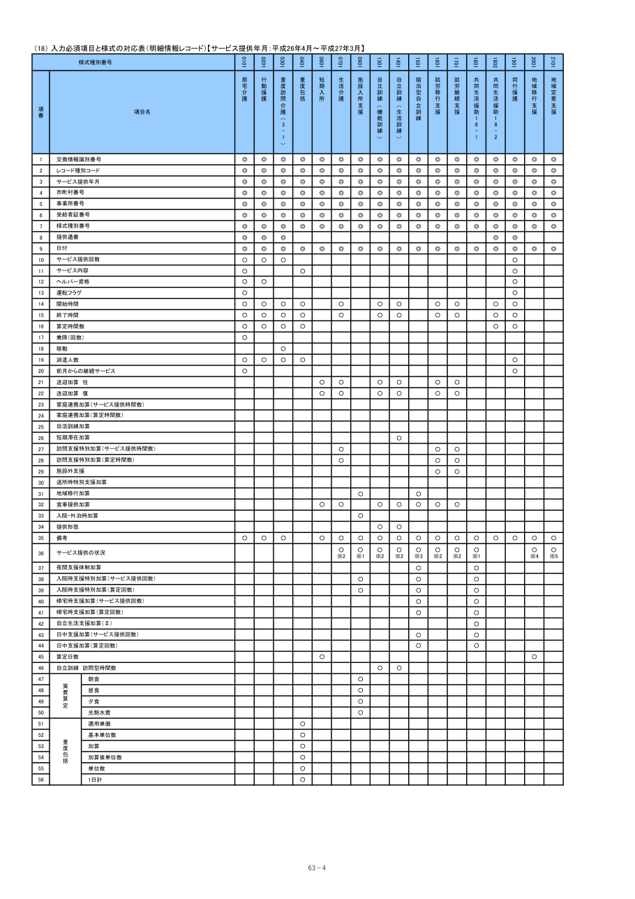
| 項番 | 項目名 | 属性 | 桁数 | 内容 | 必須 | 備考 | その他の列 |
|---|---|---|---|---|---|---|---|
| 1 | 交換情報識別番号 | 様式種別番号 > 0101 居宅介護:◎ 様式種別番号 > 0201 行動援護:◎ 様式種別番号 > 0301 重度訪問介護（3-1）:◎ 様式種別番号 > 0401 重度包括:◎ 様式種別番号 > 0601 短期入所:◎ 様式種別番号 > 0701 生活介護:◎ 様式種別番号 > 0901 施設入所支援:◎ 様式種別番号 > 1301 自立訓練（機能訓練）:◎ 様式種別番号 > 1401 自立訓練（生活訓練）:◎ 様式種別番号 > 1501 宿泊型自立訓練:◎ 様式種別番号 > 1601 就労移行支援:◎ 様式種別番号 > 1701 就労継続支援:◎ 様式種別番号 > 1801 共同生活援助18-1:◎ 様式種別番号 > 1802 共同生活援助18-2:◎ 様式種別番号 > 1901 同行援護:◎ 様式種別番号 > 2001 地域移行支援:◎ 様式種別番号 > 2101 地域定着支援:◎ | |||||
| 2 | レコード種別コード | 様式種別番号 > 0101 居宅介護:◎ 様式種別番号 > 0201 行動援護:◎ 様式種別番号 > 0301 重度訪問介護（3-1）:◎ 様式種別番号 > 0401 重度包括:◎ 様式種別番号 > 0601 短期入所:◎ 様式種別番号 > 0701 生活介護:◎ 様式種別番号 > 0901 施設入所支援:◎ 様式種別番号 > 1301 自立訓練（機能訓練）:◎ 様式種別番号 > 1401 自立訓練（生活訓練）:◎ 様式種別番号 > 1501 宿泊型自立訓練:◎ 様式種別番号 > 1601 就労移行支援:◎ 様式種別番号 > 1701 就労継続支援:◎ 様式種別番号 > 1801 共同生活援助18-1:◎ 様式種別番号 > 1802 共同生活援助18-2:◎ 様式種別番号 > 1901 同行援護:◎ 様式種別番号 > 2001 地域移行支援:◎ 様式種別番号 > 2101 地域定着支援:◎ | |||||
| 3 | サービス提供年月 | 様式種別番号 > 0101 居宅介護:◎ 様式種別番号 > 0201 行動援護:◎ 様式種別番号 > 0301 重度訪問介護（3-1）:◎ 様式種別番号 > 0401 重度包括:◎ 様式種別番号 > 0601 短期入所:◎ 様式種別番号 > 0701 生活介護:◎ 様式種別番号 > 0901 施設入所支援:◎ 様式種別番号 > 1301 自立訓練（機能訓練）:◎ 様式種別番号 > 1401 自立訓練（生活訓練）:◎ 様式種別番号 > 1501 宿泊型自立訓練:◎ 様式種別番号 > 1601 就労移行支援:◎ 様式種別番号 > 1701 就労継続支援:◎ 様式種別番号 > 1801 共同生活援助18-1:◎ 様式種別番号 > 1802 共同生活援助18-2:◎ 様式種別番号 > 1901 同行援護:◎ 様式種別番号 > 2001 地域移行支援:◎ 様式種別番号 > 2101 地域定着支援:◎ | |||||
| 4 | 市町村番号 | 様式種別番号 > 0101 居宅介護:◎ 様式種別番号 > 0201 行動援護:◎ 様式種別番号 > 0301 重度訪問介護（3-1）:◎ 様式種別番号 > 0401 重度包括:◎ 様式種別番号 > 0601 短期入所:◎ 様式種別番号 > 0701 生活介護:◎ 様式種別番号 > 0901 施設入所支援:◎ 様式種別番号 > 1301 自立訓練（機能訓練）:◎ 様式種別番号 > 1401 自立訓練（生活訓練）:◎ 様式種別番号 > 1501 宿泊型自立訓練:◎ 様式種別番号 > 1601 就労移行支援:◎ 様式種別番号 > 1701 就労継続支援:◎ 様式種別番号 > 1801 共同生活援助18-1:◎ 様式種別番号 > 1802 共同生活援助18-2:◎ 様式種別番号 > 1901 同行援護:◎ 様式種別番号 > 2001 地域移行支援:◎ 様式種別番号 > 2101 地域定着支援:◎ | |||||
| 5 | 事業所番号 | 様式種別番号 > 0101 居宅介護:◎ 様式種別番号 > 0201 行動援護:◎ 様式種別番号 > 0301 重度訪問介護（3-1）:◎ 様式種別番号 > 0401 重度包括:◎ 様式種別番号 > 0601 短期入所:◎ 様式種別番号 > 0701 生活介護:◎ 様式種別番号 > 0901 施設入所支援:◎ 様式種別番号 > 1301 自立訓練（機能訓練）:◎ 様式種別番号 > 1401 自立訓練（生活訓練）:◎ 様式種別番号 > 1501 宿泊型自立訓練:◎ 様式種別番号 > 1601 就労移行支援:◎ 様式種別番号 > 1701 就労継続支援:◎ 様式種別番号 > 1801 共同生活援助18-1:◎ 様式種別番号 > 1802 共同生活援助18-2:◎ 様式種別番号 > 1901 同行援護:◎ 様式種別番号 > 2001 地域移行支援:◎ 様式種別番号 > 2101 地域定着支援:◎ | |||||
| 6 | 受給者証番号 | 様式種別番号 > 0101 居宅介護:◎ 様式種別番号 > 0201 行動援護:◎ 様式種別番号 > 0301 重度訪問介護（3-1）:◎ 様式種別番号 > 0401 重度包括:◎ 様式種別番号 > 0601 短期入所:◎ 様式種別番号 > 0701 生活介護:◎ 様式種別番号 > 0901 施設入所支援:◎ 様式種別番号 > 1301 自立訓練（機能訓練）:◎ 様式種別番号 > 1401 自立訓練（生活訓練）:◎ 様式種別番号 > 1501 宿泊型自立訓練:◎ 様式種別番号 > 1601 就労移行支援:◎ 様式種別番号 > 1701 就労継続支援:◎ 様式種別番号 > 1801 共同生活援助18-1:◎ 様式種別番号 > 1802 共同生活援助18-2:◎ 様式種別番号 > 1901 同行援護:◎ 様式種別番号 > 2001 地域移行支援:◎ 様式種別番号 > 2101 地域定着支援:◎ | |||||
| 7 | 様式種別番号 | 様式種別番号 > 0101 居宅介護:◎ 様式種別番号 > 0201 行動援護:◎ 様式種別番号 > 0301 重度訪問介護（3-1）:◎ 様式種別番号 > 0401 重度包括:◎ 様式種別番号 > 0601 短期入所:◎ 様式種別番号 > 0701 生活介護:◎ 様式種別番号 > 0901 施設入所支援:◎ 様式種別番号 > 1301 自立訓練（機能訓練）:◎ 様式種別番号 > 1401 自立訓練（生活訓練）:◎ 様式種別番号 > 1501 宿泊型自立訓練:◎ 様式種別番号 > 1601 就労移行支援:◎ 様式種別番号 > 1701 就労継続支援:◎ 様式種別番号 > 1801 共同生活援助18-1:◎ 様式種別番号 > 1802 共同生活援助18-2:◎ 様式種別番号 > 1901 同行援護:◎ 様式種別番号 > 2001 地域移行支援:◎ 様式種別番号 > 2101 地域定着支援:◎ | |||||
| 8 | 提供通番 | 様式種別番号 > 0101 居宅介護:◎ 様式種別番号 > 0201 行動援護:◎ 様式種別番号 > 0301 重度訪問介護（3-1）:◎ 様式種別番号 > 0401 重度包括:－ 様式種別番号 > 0601 短期入所:－ 様式種別番号 > 0701 生活介護:－ 様式種別番号 > 0901 施設入所支援:－ 様式種別番号 > 1301 自立訓練（機能訓練）:－ 様式種別番号 > 1401 自立訓練（生活訓練）:－ 様式種別番号 > 1501 宿泊型自立訓練:－ 様式種別番号 > 1601 就労移行支援:－ 様式種別番号 > 1701 就労継続支援:－ 様式種別番号 > 1801 共同生活援助18-1:－ 様式種別番号 > 1802 共同生活援助18-2:◎ 様式種別番号 > 1901 同行援護:◎ 様式種別番号 > 2001 地域移行支援:－ 様式種別番号 > 2101 地域定着支援:－ | |||||
| 9 | 日付 | 様式種別番号 > 0101 居宅介護:◎ 様式種別番号 > 0201 行動援護:◎ 様式種別番号 > 0301 重度訪問介護（3-1）:◎ 様式種別番号 > 0401 重度包括:◎ 様式種別番号 > 0601 短期入所:◎ 様式種別番号 > 0701 生活介護:◎ 様式種別番号 > 0901 施設入所支援:◎ 様式種別番号 > 1301 自立訓練（機能訓練）:◎ 様式種別番号 > 1401 自立訓練（生活訓練）:◎ 様式種別番号 > 1501 宿泊型自立訓練:◎ 様式種別番号 > 1601 就労移行支援:◎ 様式種別番号 > 1701 就労継続支援:◎ 様式種別番号 > 1801 共同生活援助18-1:◎ 様式種別番号 > 1802 共同生活援助18-2:◎ 様式種別番号 > 1901 同行援護:◎ 様式種別番号 > 2001 地域移行支援:◎ 様式種別番号 > 2101 地域定着支援:◎ | |||||
| 10 | サービス提供回数 | 様式種別番号 > 0101 居宅介護:○ 様式種別番号 > 0201 行動援護:○ 様式種別番号 > 0301 重度訪問介護（3-1）:○ 様式種別番号 > 0401 重度包括:－ 様式種別番号 > 0601 短期入所:－ 様式種別番号 > 0701 生活介護:－ 様式種別番号 > 0901 施設入所支援:－ 様式種別番号 > 1301 自立訓練（機能訓練）:－ 様式種別番号 > 1401 自立訓練（生活訓練）:－ 様式種別番号 > 1501 宿泊型自立訓練:－ 様式種別番号 > 1601 就労移行支援:－ 様式種別番号 > 1701 就労継続支援:－ 様式種別番号 > 1801 共同生活援助18-1:－ 様式種別番号 > 1802 共同生活援助18-2:－ 様式種別番号 > 1901 同行援護:○ 様式種別番号 > 2001 地域移行支援:－ 様式種別番号 > 2101 地域定着支援:－ | |||||
| 11 | サービス内容 | 様式種別番号 > 0101 居宅介護:○ 様式種別番号 > 0201 行動援護:－ 様式種別番号 > 0301 重度訪問介護（3-1）:－ 様式種別番号 > 0401 重度包括:○ 様式種別番号 > 0601 短期入所:－ 様式種別番号 > 0701 生活介護:－ 様式種別番号 > 0901 施設入所支援:－ 様式種別番号 > 1301 自立訓練（機能訓練）:－ 様式種別番号 > 1401 自立訓練（生活訓練）:－ 様式種別番号 > 1501 宿泊型自立訓練:－ 様式種別番号 > 1601 就労移行支援:－ 様式種別番号 > 1701 就労継続支援:－ 様式種別番号 > 1801 共同生活援助18-1:－ 様式種別番号 > 1802 共同生活援助18-2:－ 様式種別番号 > 1901 同行援護:○ 様式種別番号 > 2001 地域移行支援:－ 様式種別番号 > 2101 地域定着支援:－ | |||||
| 12 | ヘルパー資格 | 様式種別番号 > 0101 居宅介護:○ 様式種別番号 > 0201 行動援護:○ 様式種別番号 > 0301 重度訪問介護（3-1）:－ 様式種別番号 > 0401 重度包括:－ 様式種別番号 > 0601 短期入所:－ 様式種別番号 > 0701 生活介護:－ 様式種別番号 > 0901 施設入所支援:－ 様式種別番号 > 1301 自立訓練（機能訓練）:－ 様式種別番号 > 1401 自立訓練（生活訓練）:－ 様式種別番号 > 1501 宿泊型自立訓練:－ 様式種別番号 > 1601 就労移行支援:－ 様式種別番号 > 1701 就労継続支援:－ 様式種別番号 > 1801 共同生活援助18-1:－ 様式種別番号 > 1802 共同生活援助18-2:－ 様式種別番号 > 1901 同行援護:○ 様式種別番号 > 2001 地域移行支援:－ 様式種別番号 > 2101 地域定着支援:－ | |||||
| 13 | 運転フラグ | 様式種別番号 > 0101 居宅介護:○ 様式種別番号 > 0201 行動援護:－ 様式種別番号 > 0301 重度訪問介護（3-1）:－ 様式種別番号 > 0401 重度包括:－ 様式種別番号 > 0601 短期入所:－ 様式種別番号 > 0701 生活介護:－ 様式種別番号 > 0901 施設入所支援:－ 様式種別番号 > 1301 自立訓練（機能訓練）:－ 様式種別番号 > 1401 自立訓練（生活訓練）:－ 様式種別番号 > 1501 宿泊型自立訓練:－ 様式種別番号 > 1601 就労移行支援:－ 様式種別番号 > 1701 就労継続支援:－ 様式種別番号 > 1801 共同生活援助18-1:－ 様式種別番号 > 1802 共同生活援助18-2:－ 様式種別番号 > 1901 同行援護:○ 様式種別番号 > 2001 地域移行支援:－ 様式種別番号 > 2101 地域定着支援:－ | |||||
| 14 | 開始時間 | 様式種別番号 > 0101 居宅介護:○ 様式種別番号 > 0201 行動援護:○ 様式種別番号 > 0301 重度訪問介護（3-1）:○ 様式種別番号 > 0401 重度包括:○ 様式種別番号 > 0601 短期入所:－ 様式種別番号 > 0701 生活介護:○ 様式種別番号 > 0901 施設入所支援:－ 様式種別番号 > 1301 自立訓練（機能訓練）:○ 様式種別番号 > 1401 自立訓練（生活訓練）:○ 様式種別番号 > 1501 宿泊型自立訓練:－ 様式種別番号 > 1601 就労移行支援:○ 様式種別番号 > 1701 就労継続支援:○ 様式種別番号 > 1801 共同生活援助18-1:－ 様式種別番号 > 1802 共同生活援助18-2:○ 様式種別番号 > 1901 同行援護:○ 様式種別番号 > 2001 地域移行支援:－ 様式種別番号 > 2101 地域定着支援:－ | |||||
| 15 | 終了時間 | 様式種別番号 > 0101 居宅介護:○ 様式種別番号 > 0201 行動援護:○ 様式種別番号 > 0301 重度訪問介護（3-1）:○ 様式種別番号 > 0401 重度包括:○ 様式種別番号 > 0601 短期入所:－ 様式種別番号 > 0701 生活介護:○ 様式種別番号 > 0901 施設入所支援:－ 様式種別番号 > 1301 自立訓練（機能訓練）:○ 様式種別番号 > 1401 自立訓練（生活訓練）:○ 様式種別番号 > 1501 宿泊型自立訓練:－ 様式種別番号 > 1601 就労移行支援:○ 様式種別番号 > 1701 就労継続支援:○ 様式種別番号 > 1801 共同生活援助18-1:－ 様式種別番号 > 1802 共同生活援助18-2:○ 様式種別番号 > 1901 同行援護:○ 様式種別番号 > 2001 地域移行支援:－ 様式種別番号 > 2101 地域定着支援:－ | |||||
| 16 | 算定時間数 | 様式種別番号 > 0101 居宅介護:○ 様式種別番号 > 0201 行動援護:○ 様式種別番号 > 0301 重度訪問介護（3-1）:○ 様式種別番号 > 0401 重度包括:○ 様式種別番号 > 0601 短期入所:－ 様式種別番号 > 0701 生活介護:－ 様式種別番号 > 0901 施設入所支援:－ 様式種別番号 > 1301 自立訓練（機能訓練）:－ 様式種別番号 > 1401 自立訓練（生活訓練）:－ 様式種別番号 > 1501 宿泊型自立訓練:－ 様式種別番号 > 1601 就労移行支援:－ 様式種別番号 > 1701 就労継続支援:－ 様式種別番号 > 1801 共同生活援助18-1:－ 様式種別番号 > 1802 共同生活援助18-2:○ 様式種別番号 > 1901 同行援護:○ 様式種別番号 > 2001 地域移行支援:－ 様式種別番号 > 2101 地域定着支援:－ | |||||
| 17 | 乗降(回数) | 様式種別番号 > 0101 居宅介護:○ 様式種別番号 > 0201 行動援護:－ 様式種別番号 > 0301 重度訪問介護（3-1）:－ 様式種別番号 > 0401 重度包括:－ 様式種別番号 > 0601 短期入所:－ 様式種別番号 > 0701 生活介護:－ 様式種別番号 > 0901 施設入所支援:－ 様式種別番号 > 1301 自立訓練（機能訓練）:－ 様式種別番号 > 1401 自立訓練（生活訓練）:－ 様式種別番号 > 1501 宿泊型自立訓練:－ 様式種別番号 > 1601 就労移行支援:－ 様式種別番号 > 1701 就労継続支援:－ 様式種別番号 > 1801 共同生活援助18-1:－ 様式種別番号 > 1802 共同生活援助18-2:－ 様式種別番号 > 1901 同行援護:－ 様式種別番号 > 2001 地域移行支援:－ 様式種別番号 > 2101 地域定着支援:－ | |||||
| 18 | 移動 | 様式種別番号 > 0101 居宅介護:－ 様式種別番号 > 0201 行動援護:－ 様式種別番号 > 0301 重度訪問介護（3-1）:○ 様式種別番号 > 0401 重度包括:－ 様式種別番号 > 0601 短期入所:－ 様式種別番号 > 0701 生活介護:－ 様式種別番号 > 0901 施設入所支援:－ 様式種別番号 > 1301 自立訓練（機能訓練）:－ 様式種別番号 > 1401 自立訓練（生活訓練）:－ 様式種別番号 > 1501 宿泊型自立訓練:－ 様式種別番号 > 1601 就労移行支援:－ 様式種別番号 > 1701 就労継続支援:－ 様式種別番号 > 1801 共同生活援助18-1:－ 様式種別番号 > 1802 共同生活援助18-2:－ 様式種別番号 > 1901 同行援護:－ 様式種別番号 > 2001 地域移行支援:－ 様式種別番号 > 2101 地域定着支援:－ | |||||
| 19 | 派遣人数 | 様式種別番号 > 0101 居宅介護:○ 様式種別番号 > 0201 行動援護:○ 様式種別番号 > 0301 重度訪問介護（3-1）:○ 様式種別番号 > 0401 重度包括:○ 様式種別番号 > 0601 短期入所:－ 様式種別番号 > 0701 生活介護:－ 様式種別番号 > 0901 施設入所支援:－ 様式種別番号 > 1301 自立訓練（機能訓練）:－ 様式種別番号 > 1401 自立訓練（生活訓練）:－ 様式種別番号 > 1501 宿泊型自立訓練:－ 様式種別番号 > 1601 就労移行支援:－ 様式種別番号 > 1701 就労継続支援:－ 様式種別番号 > 1801 共同生活援助18-1:－ 様式種別番号 > 1802 共同生活援助18-2:－ 様式種別番号 > 1901 同行援護:○ 様式種別番号 > 2001 地域移行支援:－ 様式種別番号 > 2101 地域定着支援:－ | |||||
| 20 | 前月からの継続サービス | 様式種別番号 > 0101 居宅介護:○ 様式種別番号 > 0201 行動援護:－ 様式種別番号 > 0301 重度訪問介護（3-1）:－ 様式種別番号 > 0401 重度包括:－ 様式種別番号 > 0601 短期入所:－ 様式種別番号 > 0701 生活介護:－ 様式種別番号 > 0901 施設入所支援:－ 様式種別番号 > 1301 自立訓練（機能訓練）:－ 様式種別番号 > 1401 自立訓練（生活訓練）:－ 様式種別番号 > 1501 宿泊型自立訓練:－ 様式種別番号 > 1601 就労移行支援:－ 様式種別番号 > 1701 就労継続支援:－ 様式種別番号 > 1801 共同生活援助18-1:－ 様式種別番号 > 1802 共同生活援助18-2:－ 様式種別番号 > 1901 同行援護:○ 様式種別番号 > 2001 地域移行支援:－ 様式種別番号 > 2101 地域定着支援:－ | |||||
| 21 | 送迎加算 往 | 様式種別番号 > 0101 居宅介護:－ 様式種別番号 > 0201 行動援護:－ 様式種別番号 > 0301 重度訪問介護（3-1）:－ 様式種別番号 > 0401 重度包括:－ 様式種別番号 > 0601 短期入所:○ 様式種別番号 > 0701 生活介護:○ 様式種別番号 > 0901 施設入所支援:－ 様式種別番号 > 1301 自立訓練（機能訓練）:○ 様式種別番号 > 1401 自立訓練（生活訓練）:○ 様式種別番号 > 1501 宿泊型自立訓練:－ 様式種別番号 > 1601 就労移行支援:○ 様式種別番号 > 1701 就労継続支援:○ 様式種別番号 > 1801 共同生活援助18-1:－ 様式種別番号 > 1802 共同生活援助18-2:－ 様式種別番号 > 1901 同行援護:－ 様式種別番号 > 2001 地域移行支援:－ 様式種別番号 > 2101 地域定着支援:－ | |||||
| 22 | 送迎加算 復 | 様式種別番号 > 0101 居宅介護:－ 様式種別番号 > 0201 行動援護:－ 様式種別番号 > 0301 重度訪問介護（3-1）:－ 様式種別番号 > 0401 重度包括:－ 様式種別番号 > 0601 短期入所:○ 様式種別番号 > 0701 生活介護:○ 様式種別番号 > 0901 施設入所支援:－ 様式種別番号 > 1301 自立訓練（機能訓練）:○ 様式種別番号 > 1401 自立訓練（生活訓練）:○ 様式種別番号 > 1501 宿泊型自立訓練:－ 様式種別番号 > 1601 就労移行支援:○ 様式種別番号 > 1701 就労継続支援:○ 様式種別番号 > 1801 共同生活援助18-1:－ 様式種別番号 > 1802 共同生活援助18-2:－ 様式種別番号 > 1901 同行援護:－ 様式種別番号 > 2001 地域移行支援:－ 様式種別番号 > 2101 地域定着支援:－ | |||||
| 23 | 家庭連携加算（サービス提供時間数） | 様式種別番号 > 0101 居宅介護:－ 様式種別番号 > 0201 行動援護:－ 様式種別番号 > 0301 重度訪問介護（3-1）:－ 様式種別番号 > 0401 重度包括:－ 様式種別番号 > 0601 短期入所:－ 様式種別番号 > 0701 生活介護:－ 様式種別番号 > 0901 施設入所支援:－ 様式種別番号 > 1301 自立訓練（機能訓練）:－ 様式種別番号 > 1401 自立訓練（生活訓練）:－ 様式種別番号 > 1501 宿泊型自立訓練:－ 様式種別番号 > 1601 就労移行支援:－ 様式種別番号 > 1701 就労継続支援:－ 様式種別番号 > 1801 共同生活援助18-1:－ 様式種別番号 > 1802 共同生活援助18-2:－ 様式種別番号 > 1901 同行援護:－ 様式種別番号 > 2001 地域移行支援:－ 様式種別番号 > 2101 地域定着支援:－ | |||||
| 24 | 家庭連携加算（算定時間数） | 様式種別番号 > 0101 居宅介護:－ 様式種別番号 > 0201 行動援護:－ 様式種別番号 > 0301 重度訪問介護（3-1）:－ 様式種別番号 > 0401 重度包括:－ 様式種別番号 > 0601 短期入所:－ 様式種別番号 > 0701 生活介護:－ 様式種別番号 > 0901 施設入所支援:－ 様式種別番号 > 1301 自立訓練（機能訓練）:－ 様式種別番号 > 1401 自立訓練（生活訓練）:－ 様式種別番号 > 1501 宿泊型自立訓練:－ 様式種別番号 > 1601 就労移行支援:－ 様式種別番号 > 1701 就労継続支援:－ 様式種別番号 > 1801 共同生活援助18-1:－ 様式種別番号 > 1802 共同生活援助18-2:－ 様式種別番号 > 1901 同行援護:－ 様式種別番号 > 2001 地域移行支援:－ 様式種別番号 > 2101 地域定着支援:－ | |||||
| 25 | 自活訓練加算 | 様式種別番号 > 0101 居宅介護:－ 様式種別番号 > 0201 行動援護:－ 様式種別番号 > 0301 重度訪問介護（3-1）:－ 様式種別番号 > 0401 重度包括:－ 様式種別番号 > 0601 短期入所:－ 様式種別番号 > 0701 生活介護:－ 様式種別番号 > 0901 施設入所支援:－ 様式種別番号 > 1301 自立訓練（機能訓練）:－ 様式種別番号 > 1401 自立訓練（生活訓練）:－ 様式種別番号 > 1501 宿泊型自立訓練:－ 様式種別番号 > 1601 就労移行支援:－ 様式種別番号 > 1701 就労継続支援:－ 様式種別番号 > 1801 共同生活援助18-1:－ 様式種別番号 > 1802 共同生活援助18-2:－ 様式種別番号 > 1901 同行援護:－ 様式種別番号 > 2001 地域移行支援:－ 様式種別番号 > 2101 地域定着支援:－ | |||||
| 26 | 短期滞在加算 | 様式種別番号 > 0101 居宅介護:－ 様式種別番号 > 0201 行動援護:－ 様式種別番号 > 0301 重度訪問介護（3-1）:－ 様式種別番号 > 0401 重度包括:－ 様式種別番号 > 0601 短期入所:－ 様式種別番号 > 0701 生活介護:－ 様式種別番号 > 0901 施設入所支援:－ 様式種別番号 > 1301 自立訓練（機能訓練）:－ 様式種別番号 > 1401 自立訓練（生活訓練）:○ 様式種別番号 > 1501 宿泊型自立訓練:－ 様式種別番号 > 1601 就労移行支援:－ 様式種別番号 > 1701 就労継続支援:－ 様式種別番号 > 1801 共同生活援助18-1:－ 様式種別番号 > 1802 共同生活援助18-2:－ 様式種別番号 > 1901 同行援護:－ 様式種別番号 > 2001 地域移行支援:－ 様式種別番号 > 2101 地域定着支援:－ | |||||
| 27 | 訪問支援特別加算（サービス提供時間数） | 様式種別番号 > 0101 居宅介護:－ 様式種別番号 > 0201 行動援護:－ 様式種別番号 > 0301 重度訪問介護（3-1）:－ 様式種別番号 > 0401 重度包括:－ 様式種別番号 > 0601 短期入所:－ 様式種別番号 > 0701 生活介護:○ 様式種別番号 > 0901 施設入所支援:－ 様式種別番号 > 1301 自立訓練（機能訓練）:－ 様式種別番号 > 1401 自立訓練（生活訓練）:－ 様式種別番号 > 1501 宿泊型自立訓練:－ 様式種別番号 > 1601 就労移行支援:○ 様式種別番号 > 1701 就労継続支援:○ 様式種別番号 > 1801 共同生活援助18-1:－ 様式種別番号 > 1802 共同生活援助18-2:－ 様式種別番号 > 1901 同行援護:－ 様式種別番号 > 2001 地域移行支援:－ 様式種別番号 > 2101 地域定着支援:－ | |||||
| 28 | 訪問支援特別加算（算定時間数） | 様式種別番号 > 0101 居宅介護:－ 様式種別番号 > 0201 行動援護:－ 様式種別番号 > 0301 重度訪問介護（3-1）:－ 様式種別番号 > 0401 重度包括:－ 様式種別番号 > 0601 短期入所:－ 様式種別番号 > 0701 生活介護:○ 様式種別番号 > 0901 施設入所支援:－ 様式種別番号 > 1301 自立訓練（機能訓練）:－ 様式種別番号 > 1401 自立訓練（生活訓練）:－ 様式種別番号 > 1501 宿泊型自立訓練:－ 様式種別番号 > 1601 就労移行支援:○ 様式種別番号 > 1701 就労継続支援:○ 様式種別番号 > 1801 共同生活援助18-1:－ 様式種別番号 > 1802 共同生活援助18-2:－ 様式種別番号 > 1901 同行援護:－ 様式種別番号 > 2001 地域移行支援:－ 様式種別番号 > 2101 地域定着支援:－ | |||||
| 29 | 施設外支援 | 様式種別番号 > 0101 居宅介護:－ 様式種別番号 > 0201 行動援護:－ 様式種別番号 > 0301 重度訪問介護（3-1）:－ 様式種別番号 > 0401 重度包括:－ 様式種別番号 > 0601 短期入所:－ 様式種別番号 > 0701 生活介護:－ 様式種別番号 > 0901 施設入所支援:－ 様式種別番号 > 1301 自立訓練（機能訓練）:－ 様式種別番号 > 1401 自立訓練（生活訓練）:－ 様式種別番号 > 1501 宿泊型自立訓練:－ 様式種別番号 > 1601 就労移行支援:○ 様式種別番号 > 1701 就労継続支援:○ 様式種別番号 > 1801 共同生活援助18-1:－ 様式種別番号 > 1802 共同生活援助18-2:－ 様式種別番号 > 1901 同行援護:－ 様式種別番号 > 2001 地域移行支援:－ 様式種別番号 > 2101 地域定着支援:－ | |||||
| 30 | 退所時特別支援加算 | 様式種別番号 > 0101 居宅介護:－ 様式種別番号 > 0201 行動援護:－ 様式種別番号 > 0301 重度訪問介護（3-1）:－ 様式種別番号 > 0401 重度包括:－ 様式種別番号 > 0601 短期入所:－ 様式種別番号 > 0701 生活介護:－ 様式種別番号 > 0901 施設入所支援:－ 様式種別番号 > 1301 自立訓練（機能訓練）:－ 様式種別番号 > 1401 自立訓練（生活訓練）:－ 様式種別番号 > 1501 宿泊型自立訓練:－ 様式種別番号 > 1601 就労移行支援:－ 様式種別番号 > 1701 就労継続支援:－ 様式種別番号 > 1801 共同生活援助18-1:－ 様式種別番号 > 1802 共同生活援助18-2:－ 様式種別番号 > 1901 同行援護:－ 様式種別番号 > 2001 地域移行支援:－ 様式種別番号 > 2101 地域定着支援:－ | |||||
| 31 | 地域移行加算 | 様式種別番号 > 0101 居宅介護:－ 様式種別番号 > 0201 行動援護:－ 様式種別番号 > 0301 重度訪問介護（3-1）:－ 様式種別番号 > 0401 重度包括:－ 様式種別番号 > 0601 短期入所:－ 様式種別番号 > 0701 生活介護:－ 様式種別番号 > 0901 施設入所支援:○ 様式種別番号 > 1301 自立訓練（機能訓練）:－ 様式種別番号 > 1401 自立訓練（生活訓練）:－ 様式種別番号 > 1501 宿泊型自立訓練:○ 様式種別番号 > 1601 就労移行支援:－ 様式種別番号 > 1701 就労継続支援:－ 様式種別番号 > 1801 共同生活援助18-1:－ 様式種別番号 > 1802 共同生活援助18-2:－ 様式種別番号 > 1901 同行援護:－ 様式種別番号 > 2001 地域移行支援:－ 様式種別番号 > 2101 地域定着支援:－ | |||||
| 32 | 食事提供加算 | 様式種別番号 > 0101 居宅介護:－ 様式種別番号 > 0201 行動援護:－ 様式種別番号 > 0301 重度訪問介護（3-1）:－ 様式種別番号 > 0401 重度包括:－ 様式種別番号 > 0601 短期入所:○ 様式種別番号 > 0701 生活介護:○ 様式種別番号 > 0901 施設入所支援:－ 様式種別番号 > 1301 自立訓練（機能訓練）:○ 様式種別番号 > 1401 自立訓練（生活訓練）:○ 様式種別番号 > 1501 宿泊型自立訓練:○ 様式種別番号 > 1601 就労移行支援:○ 様式種別番号 > 1701 就労継続支援:○ 様式種別番号 > 1801 共同生活援助18-1:－ 様式種別番号 > 1802 共同生活援助18-2:－ 様式種別番号 > 1901 同行援護:－ 様式種別番号 > 2001 地域移行支援:－ 様式種別番号 > 2101 地域定着支援:－ | |||||
| 33 | 入院・外泊時加算 | 様式種別番号 > 0101 居宅介護:－ 様式種別番号 > 0201 行動援護:－ 様式種別番号 > 0301 重度訪問介護（3-1）:－ 様式種別番号 > 0401 重度包括:－ 様式種別番号 > 0601 短期入所:－ 様式種別番号 > 0701 生活介護:－ 様式種別番号 > 0901 施設入所支援:○ 様式種別番号 > 1301 自立訓練（機能訓練）:－ 様式種別番号 > 1401 自立訓練（生活訓練）:－ 様式種別番号 > 1501 宿泊型自立訓練:－ 様式種別番号 > 1601 就労移行支援:－ 様式種別番号 > 1701 就労継続支援:－ 様式種別番号 > 1801 共同生活援助18-1:－ 様式種別番号 > 1802 共同生活援助18-2:－ 様式種別番号 > 1901 同行援護:－ 様式種別番号 > 2001 地域移行支援:－ 様式種別番号 > 2101 地域定着支援:－ | |||||
| 34 | 提供形態 | 様式種別番号 > 0101 居宅介護:－ 様式種別番号 > 0201 行動援護:－ 様式種別番号 > 0301 重度訪問介護（3-1）:－ 様式種別番号 > 0401 重度包括:－ 様式種別番号 > 0601 短期入所:－ 様式種別番号 > 0701 生活介護:－ 様式種別番号 > 0901 施設入所支援:－ 様式種別番号 > 1301 自立訓練（機能訓練）:○ 様式種別番号 > 1401 自立訓練（生活訓練）:○ 様式種別番号 > 1501 宿泊型自立訓練:－ 様式種別番号 > 1601 就労移行支援:－ 様式種別番号 > 1701 就労継続支援:－ 様式種別番号 > 1801 共同生活援助18-1:－ 様式種別番号 > 1802 共同生活援助18-2:－ 様式種別番号 > 1901 同行援護:－ 様式種別番号 > 2001 地域移行支援:－ 様式種別番号 > 2101 地域定着支援:－ | |||||
| 35 | 備考 | 様式種別番号 > 0101 居宅介護:○ 様式種別番号 > 0201 行動援護:○ 様式種別番号 > 0301 重度訪問介護（3-1）:○ 様式種別番号 > 0401 重度包括:－ 様式種別番号 > 0601 短期入所:○ 様式種別番号 > 0701 生活介護:○ 様式種別番号 > 0901 施設入所支援:○ 様式種別番号 > 1301 自立訓練（機能訓練）:○ 様式種別番号 > 1401 自立訓練（生活訓練）:○ 様式種別番号 > 1501 宿泊型自立訓練:○ 様式種別番号 > 1601 就労移行支援:○ 様式種別番号 > 1701 就労継続支援:○ 様式種別番号 > 1801 共同生活援助18-1:○ 様式種別番号 > 1802 共同生活援助18-2:○ 様式種別番号 > 1901 同行援護:○ 様式種別番号 > 2001 地域移行支援:○ 様式種別番号 > 2101 地域定着支援:○ | |||||
| 36 | サービス提供の状況 | 様式種別番号 > 0101 居宅介護:－ 様式種別番号 > 0201 行動援護:－ 様式種別番号 > 0301 重度訪問介護（3-1）:－ 様式種別番号 > 0401 重度包括:－ 様式種別番号 > 0601 短期入所:－ 様式種別番号 > 0701 生活介護:○ ※2 様式種別番号 > 0901 施設入所支援:○ ※1 様式種別番号 > 1301 自立訓練（機能訓練）:○ ※2 様式種別番号 > 1401 自立訓練（生活訓練）:○ ※2 様式種別番号 > 1501 宿泊型自立訓練:○ ※3 様式種別番号 > 1601 就労移行支援:○ ※2 様式種別番号 > 1701 就労継続支援:○ ※2 様式種別番号 > 1801 共同生活援助18-1:○ ※1 様式種別番号 > 1802 共同生活援助18-2:－ 様式種別番号 > 1901 同行援護:－ 様式種別番号 > 2001 地域移行支援:○ ※4 様式種別番号 > 2101 地域定着支援:○ ※5 | |||||
| 37 | 夜間支援体制加算 | 様式種別番号 > 0101 居宅介護:－ 様式種別番号 > 0201 行動援護:－ 様式種別番号 > 0301 重度訪問介護（3-1）:－ 様式種別番号 > 0401 重度包括:－ 様式種別番号 > 0601 短期入所:－ 様式種別番号 > 0701 生活介護:－ 様式種別番号 > 0901 施設入所支援:－ 様式種別番号 > 1301 自立訓練（機能訓練）:－ 様式種別番号 > 1401 自立訓練（生活訓練）:－ 様式種別番号 > 1501 宿泊型自立訓練:○ 様式種別番号 > 1601 就労移行支援:－ 様式種別番号 > 1701 就労継続支援:－ 様式種別番号 > 1801 共同生活援助18-1:○ 様式種別番号 > 1802 共同生活援助18-2:－ 様式種別番号 > 1901 同行援護:－ 様式種別番号 > 2001 地域移行支援:－ 様式種別番号 > 2101 地域定着支援:－ | |||||
| 38 | 入院時支援特別加算（サービス提供回数） | 様式種別番号 > 0101 居宅介護:－ 様式種別番号 > 0201 行動援護:－ 様式種別番号 > 0301 重度訪問介護（3-1）:－ 様式種別番号 > 0401 重度包括:－ 様式種別番号 > 0601 短期入所:－ 様式種別番号 > 0701 生活介護:－ 様式種別番号 > 0901 施設入所支援:○ 様式種別番号 > 1301 自立訓練（機能訓練）:－ 様式種別番号 > 1401 自立訓練（生活訓練）:－ 様式種別番号 > 1501 宿泊型自立訓練:○ 様式種別番号 > 1601 就労移行支援:－ 様式種別番号 > 1701 就労継続支援:－ 様式種別番号 > 1801 共同生活援助18-1:○ 様式種別番号 > 1802 共同生活援助18-2:－ 様式種別番号 > 1901 同行援護:－ 様式種別番号 > 2001 地域移行支援:－ 様式種別番号 > 2101 地域定着支援:－ | |||||
| 39 | 入院時支援特別加算（算定回数） | 様式種別番号 > 0101 居宅介護:－ 様式種別番号 > 0201 行動援護:－ 様式種別番号 > 0301 重度訪問介護（3-1）:－ 様式種別番号 > 0401 重度包括:－ 様式種別番号 > 0601 短期入所:－ 様式種別番号 > 0701 生活介護:－ 様式種別番号 > 0901 施設入所支援:○ 様式種別番号 > 1301 自立訓練（機能訓練）:－ 様式種別番号 > 1401 自立訓練（生活訓練）:－ 様式種別番号 > 1501 宿泊型自立訓練:○ 様式種別番号 > 1601 就労移行支援:－ 様式種別番号 > 1701 就労継続支援:－ 様式種別番号 > 1801 共同生活援助18-1:○ 様式種別番号 > 1802 共同生活援助18-2:－ 様式種別番号 > 1901 同行援護:－ 様式種別番号 > 2001 地域移行支援:－ 様式種別番号 > 2101 地域定着支援:－ | |||||
| 40 | 帰宅時支援加算（サービス提供回数） | 様式種別番号 > 0101 居宅介護:－ 様式種別番号 > 0201 行動援護:－ 様式種別番号 > 0301 重度訪問介護（3-1）:－ 様式種別番号 > 0401 重度包括:－ 様式種別番号 > 0601 短期入所:－ 様式種別番号 > 0701 生活介護:－ 様式種別番号 > 0901 施設入所支援:－ 様式種別番号 > 1301 自立訓練（機能訓練）:－ 様式種別番号 > 1401 自立訓練（生活訓練）:－ 様式種別番号 > 1501 宿泊型自立訓練:○ 様式種別番号 > 1601 就労移行支援:－ 様式種別番号 > 1701 就労継続支援:－ 様式種別番号 > 1801 共同生活援助18-1:○ 様式種別番号 > 1802 共同生活援助18-2:－ 様式種別番号 > 1901 同行援護:－ 様式種別番号 > 2001 地域移行支援:－ 様式種別番号 > 2101 地域定着支援:－ | |||||
| 41 | 帰宅時支援加算（算定回数） | 様式種別番号 > 0101 居宅介護:－ 様式種別番号 > 0201 行動援護:－ 様式種別番号 > 0301 重度訪問介護（3-1）:－ 様式種別番号 > 0401 重度包括:－ 様式種別番号 > 0601 短期入所:－ 様式種別番号 > 0701 生活介護:－ 様式種別番号 > 0901 施設入所支援:－ 様式種別番号 > 1301 自立訓練（機能訓練）:－ 様式種別番号 > 1401 自立訓練（生活訓練）:－ 様式種別番号 > 1501 宿泊型自立訓練:○ 様式種別番号 > 1601 就労移行支援:－ 様式種別番号 > 1701 就労継続支援:－ 様式種別番号 > 1801 共同生活援助18-1:○ 様式種別番号 > 1802 共同生活援助18-2:－ 様式種別番号 > 1901 同行援護:－ 様式種別番号 > 2001 地域移行支援:－ 様式種別番号 > 2101 地域定着支援:－ | |||||
| 42 | 自立生活支援加算（Ⅱ） | 様式種別番号 > 0101 居宅介護:－ 様式種別番号 > 0201 行動援護:－ 様式種別番号 > 0301 重度訪問介護（3-1）:－ 様式種別番号 > 0401 重度包括:－ 様式種別番号 > 0601 短期入所:－ 様式種別番号 > 0701 生活介護:－ 様式種別番号 > 0901 施設入所支援:－ 様式種別番号 > 1301 自立訓練（機能訓練）:－ 様式種別番号 > 1401 自立訓練（生活訓練）:－ 様式種別番号 > 1501 宿泊型自立訓練:－ 様式種別番号 > 1601 就労移行支援:－ 様式種別番号 > 1701 就労継続支援:－ 様式種別番号 > 1801 共同生活援助18-1:○ 様式種別番号 > 1802 共同生活援助18-2:－ 様式種別番号 > 1901 同行援護:－ 様式種別番号 > 2001 地域移行支援:－ 様式種別番号 > 2101 地域定着支援:－ | |||||
| 43 | 日中支援加算（サービス提供回数） | 様式種別番号 > 0101 居宅介護:－ 様式種別番号 > 0201 行動援護:－ 様式種別番号 > 0301 重度訪問介護（3-1）:－ 様式種別番号 > 0401 重度包括:－ 様式種別番号 > 0601 短期入所:－ 様式種別番号 > 0701 生活介護:－ 様式種別番号 > 0901 施設入所支援:－ 様式種別番号 > 1301 自立訓練（機能訓練）:－ 様式種別番号 > 1401 自立訓練（生活訓練）:－ 様式種別番号 > 1501 宿泊型自立訓練:○ 様式種別番号 > 1601 就労移行支援:－ 様式種別番号 > 1701 就労継続支援:－ 様式種別番号 > 1801 共同生活援助18-1:○ 様式種別番号 > 1802 共同生活援助18-2:－ 様式種別番号 > 1901 同行援護:－ 様式種別番号 > 2001 地域移行支援:－ 様式種別番号 > 2101 地域定着支援:－ | |||||
| 44 | 日中支援加算（算定回数） | 様式種別番号 > 0101 居宅介護:－ 様式種別番号 > 0201 行動援護:－ 様式種別番号 > 0301 重度訪問介護（3-1）:－ 様式種別番号 > 0401 重度包括:－ 様式種別番号 > 0601 短期入所:－ 様式種別番号 > 0701 生活介護:－ 様式種別番号 > 0901 施設入所支援:－ 様式種別番号 > 1301 自立訓練（機能訓練）:－ 様式種別番号 > 1401 自立訓練（生活訓練）:－ 様式種別番号 > 1501 宿泊型自立訓練:○ 様式種別番号 > 1601 就労移行支援:－ 様式種別番号 > 1701 就労継続支援:－ 様式種別番号 > 1801 共同生活援助18-1:○ 様式種別番号 > 1802 共同生活援助18-2:－ 様式種別番号 > 1901 同行援護:－ 様式種別番号 > 2001 地域移行支援:－ 様式種別番号 > 2101 地域定着支援:－ | |||||
| 45 | 算定日数 | 様式種別番号 > 0101 居宅介護:－ 様式種別番号 > 0201 行動援護:－ 様式種別番号 > 0301 重度訪問介護（3-1）:－ 様式種別番号 > 0401 重度包括:－ 様式種別番号 > 0601 短期入所:○ 様式種別番号 > 0701 生活介護:－ 様式種別番号 > 0901 施設入所支援:－ 様式種別番号 > 1301 自立訓練（機能訓練）:－ 様式種別番号 > 1401 自立訓練（生活訓練）:－ 様式種別番号 > 1501 宿泊型自立訓練:－ 様式種別番号 > 1601 就労移行支援:－ 様式種別番号 > 1701 就労継続支援:－ 様式種別番号 > 1801 共同生活援助18-1:－ 様式種別番号 > 1802 共同生活援助18-2:－ 様式種別番号 > 1901 同行援護:－ 様式種別番号 > 2001 地域移行支援:○ 様式種別番号 > 2101 地域定着支援:－ | |||||
| 46 | 自立訓練 訪問型時間数 | 様式種別番号 > 0101 居宅介護:－ 様式種別番号 > 0201 行動援護:－ 様式種別番号 > 0301 重度訪問介護（3-1）:－ 様式種別番号 > 0401 重度包括:－ 様式種別番号 > 0601 短期入所:－ 様式種別番号 > 0701 生活介護:－ 様式種別番号 > 0901 施設入所支援:－ 様式種別番号 > 1301 自立訓練（機能訓練）:○ 様式種別番号 > 1401 自立訓練（生活訓練）:○ 様式種別番号 > 1501 宿泊型自立訓練:－ 様式種別番号 > 1601 就労移行支援:－ 様式種別番号 > 1701 就労継続支援:－ 様式種別番号 > 1801 共同生活援助18-1:－ 様式種別番号 > 1802 共同生活援助18-2:－ 様式種別番号 > 1901 同行援護:－ 様式種別番号 > 2001 地域移行支援:－ 様式種別番号 > 2101 地域定着支援:－ | |||||
| 47 | 実費算定 > 朝食 | 様式種別番号 > 0101 居宅介護:－ 様式種別番号 > 0201 行動援護:－ 様式種別番号 > 0301 重度訪問介護（3-1）:－ 様式種別番号 > 0401 重度包括:－ 様式種別番号 > 0601 短期入所:－ 様式種別番号 > 0701 生活介護:－ 様式種別番号 > 0901 施設入所支援:○ 様式種別番号 > 1301 自立訓練（機能訓練）:－ 様式種別番号 > 1401 自立訓練（生活訓練）:－ 様式種別番号 > 1501 宿泊型自立訓練:－ 様式種別番号 > 1601 就労移行支援:－ 様式種別番号 > 1701 就労継続支援:－ 様式種別番号 > 1801 共同生活援助18-1:－ 様式種別番号 > 1802 共同生活援助18-2:－ 様式種別番号 > 1901 同行援護:－ 様式種別番号 > 2001 地域移行支援:－ 様式種別番号 > 2101 地域定着支援:－ | |||||
| 48 | 実費算定 > 昼食 | 様式種別番号 > 0101 居宅介護:－ 様式種別番号 > 0201 行動援護:－ 様式種別番号 > 0301 重度訪問介護（3-1）:－ 様式種別番号 > 0401 重度包括:－ 様式種別番号 > 0601 短期入所:－ 様式種別番号 > 0701 生活介護:－ 様式種別番号 > 0901 施設入所支援:○ 様式種別番号 > 1301 自立訓練（機能訓練）:－ 様式種別番号 > 1401 自立訓練（生活訓練）:－ 様式種別番号 > 1501 宿泊型自立訓練:－ 様式種別番号 > 1601 就労移行支援:－ 様式種別番号 > 1701 就労継続支援:－ 様式種別番号 > 1801 共同生活援助18-1:－ 様式種別番号 > 1802 共同生活援助18-2:－ 様式種別番号 > 1901 同行援護:－ 様式種別番号 > 2001 地域移行支援:－ 様式種別番号 > 2101 地域定着支援:－ | |||||
| 49 | 実費算定 > 夕食 | 様式種別番号 > 0101 居宅介護:－ 様式種別番号 > 0201 行動援護:－ 様式種別番号 > 0301 重度訪問介護（3-1）:－ 様式種別番号 > 0401 重度包括:－ 様式種別番号 > 0601 短期入所:－ 様式種別番号 > 0701 生活介護:－ 様式種別番号 > 0901 施設入所支援:○ 様式種別番号 > 1301 自立訓練（機能訓練）:－ 様式種別番号 > 1401 自立訓練（生活訓練）:－ 様式種別番号 > 1501 宿泊型自立訓練:－ 様式種別番号 > 1601 就労移行支援:－ 様式種別番号 > 1701 就労継続支援:－ 様式種別番号 > 1801 共同生活援助18-1:－ 様式種別番号 > 1802 共同生活援助18-2:－ 様式種別番号 > 1901 同行援護:－ 様式種別番号 > 2001 地域移行支援:－ 様式種別番号 > 2101 地域定着支援:－ | |||||
| 50 | 実費算定 > 光熱水費 | 様式種別番号 > 0101 居宅介護:－ 様式種別番号 > 0201 行動援護:－ 様式種別番号 > 0301 重度訪問介護（3-1）:－ 様式種別番号 > 0401 重度包括:－ 様式種別番号 > 0601 短期入所:－ 様式種別番号 > 0701 生活介護:－ 様式種別番号 > 0901 施設入所支援:○ 様式種別番号 > 1301 自立訓練（機能訓練）:－ 様式種別番号 > 1401 自立訓練（生活訓練）:－ 様式種別番号 > 1501 宿泊型自立訓練:－ 様式種別番号 > 1601 就労移行支援:－ 様式種別番号 > 1701 就労継続支援:－ 様式種別番号 > 1801 共同生活援助18-1:－ 様式種別番号 > 1802 共同生活援助18-2:－ 様式種別番号 > 1901 同行援護:－ 様式種別番号 > 2001 地域移行支援:－ 様式種別番号 > 2101 地域定着支援:－ | |||||
| 51 | 重度包括 > 適用単価 | 様式種別番号 > 0101 居宅介護:－ 様式種別番号 > 0201 行動援護:－ 様式種別番号 > 0301 重度訪問介護（3-1）:－ 様式種別番号 > 0401 重度包括:○ 様式種別番号 > 0601 短期入所:－ 様式種別番号 > 0701 生活介護:－ 様式種別番号 > 0901 施設入所支援:－ 様式種別番号 > 1301 自立訓練（機能訓練）:－ 様式種別番号 > 1401 自立訓練（生活訓練）:－ 様式種別番号 > 1501 宿泊型自立訓練:－ 様式種別番号 > 1601 就労移行支援:－ 様式種別番号 > 1701 就労継続支援:－ 様式種別番号 > 1801 共同生活援助18-1:－ 様式種別番号 > 1802 共同生活援助18-2:－ 様式種別番号 > 1901 同行援護:－ 様式種別番号 > 2001 地域移行支援:－ 様式種別番号 > 2101 地域定着支援:－ | |||||
| 52 | 重度包括 > 基本単位数 | 様式種別番号 > 0101 居宅介護:－ 様式種別番号 > 0201 行動援護:－ 様式種別番号 > 0301 重度訪問介護（3-1）:－ 様式種別番号 > 0401 重度包括:○ 様式種別番号 > 0601 短期入所:－ 様式種別番号 > 0701 生活介護:－ 様式種別番号 > 0901 施設入所支援:－ 様式種別番号 > 1301 自立訓練（機能訓練）:－ 様式種別番号 > 1401 自立訓練（生活訓練）:－ 様式種別番号 > 1501 宿泊型自立訓練:－ 様式種別番号 > 1601 就労移行支援:－ 様式種別番号 > 1701 就労継続支援:－ 様式種別番号 > 1801 共同生活援助18-1:－ 様式種別番号 > 1802 共同生活援助18-2:－ 様式種別番号 > 1901 同行援護:－ 様式種別番号 > 2001 地域移行支援:－ 様式種別番号 > 2101 地域定着支援:－ | |||||
| 53 | 重度包括 > 加算 | 様式種別番号 > 0101 居宅介護:－ 様式種別番号 > 0201 行動援護:－ 様式種別番号 > 0301 重度訪問介護（3-1）:－ 様式種別番号 > 0401 重度包括:○ 様式種別番号 > 0601 短期入所:－ 様式種別番号 > 0701 生活介護:－ 様式種別番号 > 0901 施設入所支援:－ 様式種別番号 > 1301 自立訓練（機能訓練）:－ 様式種別番号 > 1401 自立訓練（生活訓練）:－ 様式種別番号 > 1501 宿泊型自立訓練:－ 様式種別番号 > 1601 就労移行支援:－ 様式種別番号 > 1701 就労継続支援:－ 様式種別番号 > 1801 共同生活援助18-1:－ 様式種別番号 > 1802 共同生活援助18-2:－ 様式種別番号 > 1901 同行援護:－ 様式種別番号 > 2001 地域移行支援:－ 様式種別番号 > 2101 地域定着支援:－ | |||||
| 54 | 重度包括 > 加算後単位数 | 様式種別番号 > 0101 居宅介護:－ 様式種別番号 > 0201 行動援護:－ 様式種別番号 > 0301 重度訪問介護（3-1）:－ 様式種別番号 > 0401 重度包括:○ 様式種別番号 > 0601 短期入所:－ 様式種別番号 > 0701 生活介護:－ 様式種別番号 > 0901 施設入所支援:－ 様式種別番号 > 1301 自立訓練（機能訓練）:－ 様式種別番号 > 1401 自立訓練（生活訓練）:－ 様式種別番号 > 1501 宿泊型自立訓練:－ 様式種別番号 > 1601 就労移行支援:－ 様式種別番号 > 1701 就労継続支援:－ 様式種別番号 > 1801 共同生活援助18-1:－ 様式種別番号 > 1802 共同生活援助18-2:－ 様式種別番号 > 1901 同行援護:－ 様式種別番号 > 2001 地域移行支援:－ 様式種別番号 > 2101 地域定着支援:－ | |||||
| 55 | 重度包括 > 単位数 | 様式種別番号 > 0101 居宅介護:－ 様式種別番号 > 0201 行動援護:－ 様式種別番号 > 0301 重度訪問介護（3-1）:－ 様式種別番号 > 0401 重度包括:○ 様式種別番号 > 0601 短期入所:－ 様式種別番号 > 0701 生活介護:－ 様式種別番号 > 0901 施設入所支援:－ 様式種別番号 > 1301 自立訓練（機能訓練）:－ 様式種別番号 > 1401 自立訓練（生活訓練）:－ 様式種別番号 > 1501 宿泊型自立訓練:－ 様式種別番号 > 1601 就労移行支援:－ 様式種別番号 > 1701 就労継続支援:－ 様式種別番号 > 1801 共同生活援助18-1:－ 様式種別番号 > 1802 共同生活援助18-2:－ 様式種別番号 > 1901 同行援護:－ 様式種別番号 > 2001 地域移行支援:－ 様式種別番号 > 2101 地域定着支援:－ | |||||
| 56 | 重度包括 > 1日計 | 様式種別番号 > 0101 居宅介護:－ 様式種別番号 > 0201 行動援護:－ 様式種別番号 > 0301 重度訪問介護（3-1）:－ 様式種別番号 > 0401 重度包括:○ 様式種別番号 > 0601 短期入所:－ 様式種別番号 > 0701 生活介護:－ 様式種別番号 > 0901 施設入所支援:－ 様式種別番号 > 1301 自立訓練（機能訓練）:－ 様式種別番号 > 1401 自立訓練（生活訓練）:－ 様式種別番号 > 1501 宿泊型自立訓練:－ 様式種別番号 > 1601 就労移行支援:－ 様式種別番号 > 1701 就労継続支援:－ 様式種別番号 > 1801 共同生活援助18-1:－ 様式種別番号 > 1802 共同生活援助18-2:－ 様式種別番号 > 1901 同行援護:－ 様式種別番号 > 2001 地域移行支援:－ 様式種別番号 > 2101 地域定着支援:－ |
| 項番 | 項目名 | 属性 | 桁数 | 内容 | 必須 | 備考 | その他の列 |
|---|
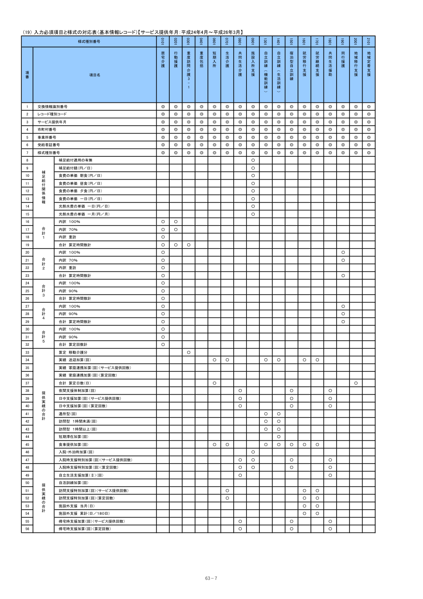
| 項番 | 項目名 | 属性 | 桁数 | 内容 | 必須 | 備考 | その他の列 |
|---|---|---|---|---|---|---|---|
| 1 | 交換情報識別番号 | 様式種別番号 > 0101 居宅介護:◎ 様式種別番号 > 0201 行動援護:◎ 様式種別番号 > 0301 重度訪問介護3-1:◎ 様式種別番号 > 0401 重度包括:◎ 様式種別番号 > 0601 短期入所:◎ 様式種別番号 > 0701 生活介護:◎ 様式種別番号 > 0801 共同生活介護:◎ 様式種別番号 > 0901 施設入所支援:◎ 様式種別番号 > 1301 自立訓練（機能訓練）:◎ 様式種別番号 > 1401 自立訓練（生活訓練）:◎ 様式種別番号 > 1501 宿泊型自立訓練:◎ 様式種別番号 > 1601 就労移行支援:◎ 様式種別番号 > 1701 就労継続支援:◎ 様式種別番号 > 1801 共同生活援助:◎ 様式種別番号 > 1901 同行援護:◎ 様式種別番号 > 2001 地域移行支援:◎ 様式種別番号 > 2101 地域定着支援:◎ | |||||
| 2 | レコード種別コード | 様式種別番号 > 0101 居宅介護:◎ 様式種別番号 > 0201 行動援護:◎ 様式種別番号 > 0301 重度訪問介護3-1:◎ 様式種別番号 > 0401 重度包括:◎ 様式種別番号 > 0601 短期入所:◎ 様式種別番号 > 0701 生活介護:◎ 様式種別番号 > 0801 共同生活介護:◎ 様式種別番号 > 0901 施設入所支援:◎ 様式種別番号 > 1301 自立訓練（機能訓練）:◎ 様式種別番号 > 1401 自立訓練（生活訓練）:◎ 様式種別番号 > 1501 宿泊型自立訓練:◎ 様式種別番号 > 1601 就労移行支援:◎ 様式種別番号 > 1701 就労継続支援:◎ 様式種別番号 > 1801 共同生活援助:◎ 様式種別番号 > 1901 同行援護:◎ 様式種別番号 > 2001 地域移行支援:◎ 様式種別番号 > 2101 地域定着支援:◎ | |||||
| 3 | サービス提供年月 | 様式種別番号 > 0101 居宅介護:◎ 様式種別番号 > 0201 行動援護:◎ 様式種別番号 > 0301 重度訪問介護3-1:◎ 様式種別番号 > 0401 重度包括:◎ 様式種別番号 > 0601 短期入所:◎ 様式種別番号 > 0701 生活介護:◎ 様式種別番号 > 0801 共同生活介護:◎ 様式種別番号 > 0901 施設入所支援:◎ 様式種別番号 > 1301 自立訓練（機能訓練）:◎ 様式種別番号 > 1401 自立訓練（生活訓練）:◎ 様式種別番号 > 1501 宿泊型自立訓練:◎ 様式種別番号 > 1601 就労移行支援:◎ 様式種別番号 > 1701 就労継続支援:◎ 様式種別番号 > 1801 共同生活援助:◎ 様式種別番号 > 1901 同行援護:◎ 様式種別番号 > 2001 地域移行支援:◎ 様式種別番号 > 2101 地域定着支援:◎ | |||||
| 4 | 市町村番号 | 様式種別番号 > 0101 居宅介護:◎ 様式種別番号 > 0201 行動援護:◎ 様式種別番号 > 0301 重度訪問介護3-1:◎ 様式種別番号 > 0401 重度包括:◎ 様式種別番号 > 0601 短期入所:◎ 様式種別番号 > 0701 生活介護:◎ 様式種別番号 > 0801 共同生活介護:◎ 様式種別番号 > 0901 施設入所支援:◎ 様式種別番号 > 1301 自立訓練（機能訓練）:◎ 様式種別番号 > 1401 自立訓練（生活訓練）:◎ 様式種別番号 > 1501 宿泊型自立訓練:◎ 様式種別番号 > 1601 就労移行支援:◎ 様式種別番号 > 1701 就労継続支援:◎ 様式種別番号 > 1801 共同生活援助:◎ 様式種別番号 > 1901 同行援護:◎ 様式種別番号 > 2001 地域移行支援:◎ 様式種別番号 > 2101 地域定着支援:◎ | |||||
| 5 | 事業所番号 | 様式種別番号 > 0101 居宅介護:◎ 様式種別番号 > 0201 行動援護:◎ 様式種別番号 > 0301 重度訪問介護3-1:◎ 様式種別番号 > 0401 重度包括:◎ 様式種別番号 > 0601 短期入所:◎ 様式種別番号 > 0701 生活介護:◎ 様式種別番号 > 0801 共同生活介護:◎ 様式種別番号 > 0901 施設入所支援:◎ 様式種別番号 > 1301 自立訓練（機能訓練）:◎ 様式種別番号 > 1401 自立訓練（生活訓練）:◎ 様式種別番号 > 1501 宿泊型自立訓練:◎ 様式種別番号 > 1601 就労移行支援:◎ 様式種別番号 > 1701 就労継続支援:◎ 様式種別番号 > 1801 共同生活援助:◎ 様式種別番号 > 1901 同行援護:◎ 様式種別番号 > 2001 地域移行支援:◎ 様式種別番号 > 2101 地域定着支援:◎ | |||||
| 6 | 受給者証番号 | 様式種別番号 > 0101 居宅介護:◎ 様式種別番号 > 0201 行動援護:◎ 様式種別番号 > 0301 重度訪問介護3-1:◎ 様式種別番号 > 0401 重度包括:◎ 様式種別番号 > 0601 短期入所:◎ 様式種別番号 > 0701 生活介護:◎ 様式種別番号 > 0801 共同生活介護:◎ 様式種別番号 > 0901 施設入所支援:◎ 様式種別番号 > 1301 自立訓練（機能訓練）:◎ 様式種別番号 > 1401 自立訓練（生活訓練）:◎ 様式種別番号 > 1501 宿泊型自立訓練:◎ 様式種別番号 > 1601 就労移行支援:◎ 様式種別番号 > 1701 就労継続支援:◎ 様式種別番号 > 1801 共同生活援助:◎ 様式種別番号 > 1901 同行援護:◎ 様式種別番号 > 2001 地域移行支援:◎ 様式種別番号 > 2101 地域定着支援:◎ | |||||
| 7 | 様式種別番号 | 様式種別番号 > 0101 居宅介護:◎ 様式種別番号 > 0201 行動援護:◎ 様式種別番号 > 0301 重度訪問介護3-1:◎ 様式種別番号 > 0401 重度包括:◎ 様式種別番号 > 0601 短期入所:◎ 様式種別番号 > 0701 生活介護:◎ 様式種別番号 > 0801 共同生活介護:◎ 様式種別番号 > 0901 施設入所支援:◎ 様式種別番号 > 1301 自立訓練（機能訓練）:◎ 様式種別番号 > 1401 自立訓練（生活訓練）:◎ 様式種別番号 > 1501 宿泊型自立訓練:◎ 様式種別番号 > 1601 就労移行支援:◎ 様式種別番号 > 1701 就労継続支援:◎ 様式種別番号 > 1801 共同生活援助:◎ 様式種別番号 > 1901 同行援護:◎ 様式種別番号 > 2001 地域移行支援:◎ 様式種別番号 > 2101 地域定着支援:◎ | |||||
| 8 | 補足給付関係情報 > 補足給付適用の有無 | 様式種別番号 > 0101 居宅介護:－ 様式種別番号 > 0201 行動援護:－ 様式種別番号 > 0301 重度訪問介護3-1:－ 様式種別番号 > 0401 重度包括:－ 様式種別番号 > 0601 短期入所:－ 様式種別番号 > 0701 生活介護:－ 様式種別番号 > 0801 共同生活介護:－ 様式種別番号 > 0901 施設入所支援:○ 様式種別番号 > 1301 自立訓練（機能訓練）:－ 様式種別番号 > 1401 自立訓練（生活訓練）:－ 様式種別番号 > 1501 宿泊型自立訓練:－ 様式種別番号 > 1601 就労移行支援:－ 様式種別番号 > 1701 就労継続支援:－ 様式種別番号 > 1801 共同生活援助:－ 様式種別番号 > 1901 同行援護:－ 様式種別番号 > 2001 地域移行支援:－ 様式種別番号 > 2101 地域定着支援:－ | |||||
| 9 | 補足給付関係情報 > 補足給付額(円／日) | 様式種別番号 > 0101 居宅介護:－ 様式種別番号 > 0201 行動援護:－ 様式種別番号 > 0301 重度訪問介護3-1:－ 様式種別番号 > 0401 重度包括:－ 様式種別番号 > 0601 短期入所:－ 様式種別番号 > 0701 生活介護:－ 様式種別番号 > 0801 共同生活介護:－ 様式種別番号 > 0901 施設入所支援:○ 様式種別番号 > 1301 自立訓練（機能訓練）:－ 様式種別番号 > 1401 自立訓練（生活訓練）:－ 様式種別番号 > 1501 宿泊型自立訓練:－ 様式種別番号 > 1601 就労移行支援:－ 様式種別番号 > 1701 就労継続支援:－ 様式種別番号 > 1801 共同生活援助:－ 様式種別番号 > 1901 同行援護:－ 様式種別番号 > 2001 地域移行支援:－ 様式種別番号 > 2101 地域定着支援:－ | |||||
| 10 | 補足給付関係情報 > 食費の単価 朝食(円／日) | 様式種別番号 > 0101 居宅介護:－ 様式種別番号 > 0201 行動援護:－ 様式種別番号 > 0301 重度訪問介護3-1:－ 様式種別番号 > 0401 重度包括:－ 様式種別番号 > 0601 短期入所:－ 様式種別番号 > 0701 生活介護:－ 様式種別番号 > 0801 共同生活介護:－ 様式種別番号 > 0901 施設入所支援:○ 様式種別番号 > 1301 自立訓練（機能訓練）:－ 様式種別番号 > 1401 自立訓練（生活訓練）:－ 様式種別番号 > 1501 宿泊型自立訓練:－ 様式種別番号 > 1601 就労移行支援:－ 様式種別番号 > 1701 就労継続支援:－ 様式種別番号 > 1801 共同生活援助:－ 様式種別番号 > 1901 同行援護:－ 様式種別番号 > 2001 地域移行支援:－ 様式種別番号 > 2101 地域定着支援:－ | |||||
| 11 | 補足給付関係情報 > 食費の単価 昼食(円／日) | 様式種別番号 > 0101 居宅介護:－ 様式種別番号 > 0201 行動援護:－ 様式種別番号 > 0301 重度訪問介護3-1:－ 様式種別番号 > 0401 重度包括:－ 様式種別番号 > 0601 短期入所:－ 様式種別番号 > 0701 生活介護:－ 様式種別番号 > 0801 共同生活介護:－ 様式種別番号 > 0901 施設入所支援:○ 様式種別番号 > 1301 自立訓練（機能訓練）:－ 様式種別番号 > 1401 自立訓練（生活訓練）:－ 様式種別番号 > 1501 宿泊型自立訓練:－ 様式種別番号 > 1601 就労移行支援:－ 様式種別番号 > 1701 就労継続支援:－ 様式種別番号 > 1801 共同生活援助:－ 様式種別番号 > 1901 同行援護:－ 様式種別番号 > 2001 地域移行支援:－ 様式種別番号 > 2101 地域定着支援:－ | |||||
| 12 | 補足給付関係情報 > 食費の単価 夕食(円／日) | 様式種別番号 > 0101 居宅介護:－ 様式種別番号 > 0201 行動援護:－ 様式種別番号 > 0301 重度訪問介護3-1:－ 様式種別番号 > 0401 重度包括:－ 様式種別番号 > 0601 短期入所:－ 様式種別番号 > 0701 生活介護:－ 様式種別番号 > 0801 共同生活介護:－ 様式種別番号 > 0901 施設入所支援:○ 様式種別番号 > 1301 自立訓練（機能訓練）:－ 様式種別番号 > 1401 自立訓練（生活訓練）:－ 様式種別番号 > 1501 宿泊型自立訓練:－ 様式種別番号 > 1601 就労移行支援:－ 様式種別番号 > 1701 就労継続支援:－ 様式種別番号 > 1801 共同生活援助:－ 様式種別番号 > 1901 同行援護:－ 様式種別番号 > 2001 地域移行支援:－ 様式種別番号 > 2101 地域定着支援:－ | |||||
| 13 | 補足給付関係情報 > 食費の単価 一日(円／日) | 様式種別番号 > 0101 居宅介護:－ 様式種別番号 > 0201 行動援護:－ 様式種別番号 > 0301 重度訪問介護3-1:－ 様式種別番号 > 0401 重度包括:－ 様式種別番号 > 0601 短期入所:－ 様式種別番号 > 0701 生活介護:－ 様式種別番号 > 0801 共同生活介護:－ 様式種別番号 > 0901 施設入所支援:○ 様式種別番号 > 1301 自立訓練（機能訓練）:－ 様式種別番号 > 1401 自立訓練（生活訓練）:－ 様式種別番号 > 1501 宿泊型自立訓練:－ 様式種別番号 > 1601 就労移行支援:－ 様式種別番号 > 1701 就労継続支援:－ 様式種別番号 > 1801 共同生活援助:－ 様式種別番号 > 1901 同行援護:－ 様式種別番号 > 2001 地域移行支援:－ 様式種別番号 > 2101 地域定着支援:－ | |||||
| 14 | 補足給付関係情報 > 光熱水費の単価 一日(円／日) | 様式種別番号 > 0101 居宅介護:－ 様式種別番号 > 0201 行動援護:－ 様式種別番号 > 0301 重度訪問介護3-1:－ 様式種別番号 > 0401 重度包括:－ 様式種別番号 > 0601 短期入所:－ 様式種別番号 > 0701 生活介護:－ 様式種別番号 > 0801 共同生活介護:－ 様式種別番号 > 0901 施設入所支援:○ 様式種別番号 > 1301 自立訓練（機能訓練）:－ 様式種別番号 > 1401 自立訓練（生活訓練）:－ 様式種別番号 > 1501 宿泊型自立訓練:－ 様式種別番号 > 1601 就労移行支援:－ 様式種別番号 > 1701 就労継続支援:－ 様式種別番号 > 1801 共同生活援助:－ 様式種別番号 > 1901 同行援護:－ 様式種別番号 > 2001 地域移行支援:－ 様式種別番号 > 2101 地域定着支援:－ | |||||
| 15 | 補足給付関係情報 > 光熱水費の単価 一月(円／月) | 様式種別番号 > 0101 居宅介護:－ 様式種別番号 > 0201 行動援護:－ 様式種別番号 > 0301 重度訪問介護3-1:－ 様式種別番号 > 0401 重度包括:－ 様式種別番号 > 0601 短期入所:－ 様式種別番号 > 0701 生活介護:－ 様式種別番号 > 0801 共同生活介護:－ 様式種別番号 > 0901 施設入所支援:○ 様式種別番号 > 1301 自立訓練（機能訓練）:－ 様式種別番号 > 1401 自立訓練（生活訓練）:－ 様式種別番号 > 1501 宿泊型自立訓練:－ 様式種別番号 > 1601 就労移行支援:－ 様式種別番号 > 1701 就労継続支援:－ 様式種別番号 > 1801 共同生活援助:－ 様式種別番号 > 1901 同行援護:－ 様式種別番号 > 2001 地域移行支援:－ 様式種別番号 > 2101 地域定着支援:－ | |||||
| 16 | 合計１ > 内訳 100% | 様式種別番号 > 0101 居宅介護:○ 様式種別番号 > 0201 行動援護:○ 様式種別番号 > 0301 重度訪問介護3-1:－ 様式種別番号 > 0401 重度包括:－ 様式種別番号 > 0601 短期入所:－ 様式種別番号 > 0701 生活介護:－ 様式種別番号 > 0801 共同生活介護:－ 様式種別番号 > 0901 施設入所支援:－ 様式種別番号 > 1301 自立訓練（機能訓練）:－ 様式種別番号 > 1401 自立訓練（生活訓練）:－ 様式種別番号 > 1501 宿泊型自立訓練:－ 様式種別番号 > 1601 就労移行支援:－ 様式種別番号 > 1701 就労継続支援:－ 様式種別番号 > 1801 共同生活援助:－ 様式種別番号 > 1901 同行援護:－ 様式種別番号 > 2001 地域移行支援:－ 様式種別番号 > 2101 地域定着支援:－ | |||||
| 17 | 合計１ > 内訳 70% | 様式種別番号 > 0101 居宅介護:○ 様式種別番号 > 0201 行動援護:○ 様式種別番号 > 0301 重度訪問介護3-1:－ 様式種別番号 > 0401 重度包括:－ 様式種別番号 > 0601 短期入所:－ 様式種別番号 > 0701 生活介護:－ 様式種別番号 > 0801 共同生活介護:－ 様式種別番号 > 0901 施設入所支援:－ 様式種別番号 > 1301 自立訓練（機能訓練）:－ 様式種別番号 > 1401 自立訓練（生活訓練）:－ 様式種別番号 > 1501 宿泊型自立訓練:－ 様式種別番号 > 1601 就労移行支援:－ 様式種別番号 > 1701 就労継続支援:－ 様式種別番号 > 1801 共同生活援助:－ 様式種別番号 > 1901 同行援護:－ 様式種別番号 > 2001 地域移行支援:－ 様式種別番号 > 2101 地域定着支援:－ | |||||
| 18 | 合計１ > 内訳 重訪 | 様式種別番号 > 0101 居宅介護:○ 様式種別番号 > 0201 行動援護:－ 様式種別番号 > 0301 重度訪問介護3-1:－ 様式種別番号 > 0401 重度包括:－ 様式種別番号 > 0601 短期入所:－ 様式種別番号 > 0701 生活介護:－ 様式種別番号 > 0801 共同生活介護:－ 様式種別番号 > 0901 施設入所支援:－ 様式種別番号 > 1301 自立訓練（機能訓練）:－ 様式種別番号 > 1401 自立訓練（生活訓練）:－ 様式種別番号 > 1501 宿泊型自立訓練:－ 様式種別番号 > 1601 就労移行支援:－ 様式種別番号 > 1701 就労継続支援:－ 様式種別番号 > 1801 共同生活援助:－ 様式種別番号 > 1901 同行援護:－ 様式種別番号 > 2001 地域移行支援:－ 様式種別番号 > 2101 地域定着支援:－ | |||||
| 19 | 合計１ > 合計 算定時間数計 | 様式種別番号 > 0101 居宅介護:○ 様式種別番号 > 0201 行動援護:○ 様式種別番号 > 0301 重度訪問介護3-1:○ 様式種別番号 > 0401 重度包括:－ 様式種別番号 > 0601 短期入所:－ 様式種別番号 > 0701 生活介護:－ 様式種別番号 > 0801 共同生活介護:－ 様式種別番号 > 0901 施設入所支援:－ 様式種別番号 > 1301 自立訓練（機能訓練）:－ 様式種別番号 > 1401 自立訓練（生活訓練）:－ 様式種別番号 > 1501 宿泊型自立訓練:－ 様式種別番号 > 1601 就労移行支援:－ 様式種別番号 > 1701 就労継続支援:－ 様式種別番号 > 1801 共同生活援助:－ 様式種別番号 > 1901 同行援護:－ 様式種別番号 > 2001 地域移行支援:－ 様式種別番号 > 2101 地域定着支援:－ | |||||
| 20 | 合計２ > 内訳 100% | 様式種別番号 > 0101 居宅介護:○ 様式種別番号 > 0201 行動援護:－ 様式種別番号 > 0301 重度訪問介護3-1:－ 様式種別番号 > 0401 重度包括:－ 様式種別番号 > 0601 短期入所:－ 様式種別番号 > 0701 生活介護:－ 様式種別番号 > 0801 共同生活介護:－ 様式種別番号 > 0901 施設入所支援:－ 様式種別番号 > 1301 自立訓練（機能訓練）:－ 様式種別番号 > 1401 自立訓練（生活訓練）:－ 様式種別番号 > 1501 宿泊型自立訓練:－ 様式種別番号 > 1601 就労移行支援:－ 様式種別番号 > 1701 就労継続支援:－ 様式種別番号 > 1801 共同生活援助:－ 様式種別番号 > 1901 同行援護:○ 様式種別番号 > 2001 地域移行支援:－ 様式種別番号 > 2101 地域定着支援:－ | |||||
| 21 | 合計２ > 内訳 70% | 様式種別番号 > 0101 居宅介護:○ 様式種別番号 > 0201 行動援護:－ 様式種別番号 > 0301 重度訪問介護3-1:－ 様式種別番号 > 0401 重度包括:－ 様式種別番号 > 0601 短期入所:－ 様式種別番号 > 0701 生活介護:－ 様式種別番号 > 0801 共同生活介護:－ 様式種別番号 > 0901 施設入所支援:－ 様式種別番号 > 1301 自立訓練（機能訓練）:－ 様式種別番号 > 1401 自立訓練（生活訓練）:－ 様式種別番号 > 1501 宿泊型自立訓練:－ 様式種別番号 > 1601 就労移行支援:－ 様式種別番号 > 1701 就労継続支援:－ 様式種別番号 > 1801 共同生活援助:－ 様式種別番号 > 1901 同行援護:○ 様式種別番号 > 2001 地域移行支援:－ 様式種別番号 > 2101 地域定着支援:－ | |||||
| 22 | 合計２ > 内訳 重訪 | 様式種別番号 > 0101 居宅介護:○ 様式種別番号 > 0201 行動援護:－ 様式種別番号 > 0301 重度訪問介護3-1:－ 様式種別番号 > 0401 重度包括:－ 様式種別番号 > 0601 短期入所:－ 様式種別番号 > 0701 生活介護:－ 様式種別番号 > 0801 共同生活介護:－ 様式種別番号 > 0901 施設入所支援:－ 様式種別番号 > 1301 自立訓練（機能訓練）:－ 様式種別番号 > 1401 自立訓練（生活訓練）:－ 様式種別番号 > 1501 宿泊型自立訓練:－ 様式種別番号 > 1601 就労移行支援:－ 様式種別番号 > 1701 就労継続支援:－ 様式種別番号 > 1801 共同生活援助:－ 様式種別番号 > 1901 同行援護:－ 様式種別番号 > 2001 地域移行支援:－ 様式種別番号 > 2101 地域定着支援:－ | |||||
| 23 | 合計２ > 合計 算定時間数計 | 様式種別番号 > 0101 居宅介護:○ 様式種別番号 > 0201 行動援護:－ 様式種別番号 > 0301 重度訪問介護3-1:－ 様式種別番号 > 0401 重度包括:－ 様式種別番号 > 0601 短期入所:－ 様式種別番号 > 0701 生活介護:－ 様式種別番号 > 0801 共同生活介護:－ 様式種別番号 > 0901 施設入所支援:－ 様式種別番号 > 1301 自立訓練（機能訓練）:－ 様式種別番号 > 1401 自立訓練（生活訓練）:－ 様式種別番号 > 1501 宿泊型自立訓練:－ 様式種別番号 > 1601 就労移行支援:－ 様式種別番号 > 1701 就労継続支援:－ 様式種別番号 > 1801 共同生活援助:－ 様式種別番号 > 1901 同行援護:○ 様式種別番号 > 2001 地域移行支援:－ 様式種別番号 > 2101 地域定着支援:－ | |||||
| 24 | 合計３ > 内訳 100% | 様式種別番号 > 0101 居宅介護:○ 様式種別番号 > 0201 行動援護:－ 様式種別番号 > 0301 重度訪問介護3-1:－ 様式種別番号 > 0401 重度包括:－ 様式種別番号 > 0601 短期入所:－ 様式種別番号 > 0701 生活介護:－ 様式種別番号 > 0801 共同生活介護:－ 様式種別番号 > 0901 施設入所支援:－ 様式種別番号 > 1301 自立訓練（機能訓練）:－ 様式種別番号 > 1401 自立訓練（生活訓練）:－ 様式種別番号 > 1501 宿泊型自立訓練:－ 様式種別番号 > 1601 就労移行支援:－ 様式種別番号 > 1701 就労継続支援:－ 様式種別番号 > 1801 共同生活援助:－ 様式種別番号 > 1901 同行援護:－ 様式種別番号 > 2001 地域移行支援:－ 様式種別番号 > 2101 地域定着支援:－ | |||||
| 25 | 合計３ > 内訳 90% | 様式種別番号 > 0101 居宅介護:○ 様式種別番号 > 0201 行動援護:－ 様式種別番号 > 0301 重度訪問介護3-1:－ 様式種別番号 > 0401 重度包括:－ 様式種別番号 > 0601 短期入所:－ 様式種別番号 > 0701 生活介護:－ 様式種別番号 > 0801 共同生活介護:－ 様式種別番号 > 0901 施設入所支援:－ 様式種別番号 > 1301 自立訓練（機能訓練）:－ 様式種別番号 > 1401 自立訓練（生活訓練）:－ 様式種別番号 > 1501 宿泊型自立訓練:－ 様式種別番号 > 1601 就労移行支援:－ 様式種別番号 > 1701 就労継続支援:－ 様式種別番号 > 1801 共同生活援助:－ 様式種別番号 > 1901 同行援護:－ 様式種別番号 > 2001 地域移行支援:－ 様式種別番号 > 2101 地域定着支援:－ | |||||
| 26 | 合計３ > 合計 算定時間数計 | 様式種別番号 > 0101 居宅介護:○ 様式種別番号 > 0201 行動援護:－ 様式種別番号 > 0301 重度訪問介護3-1:－ 様式種別番号 > 0401 重度包括:－ 様式種別番号 > 0601 短期入所:－ 様式種別番号 > 0701 生活介護:－ 様式種別番号 > 0801 共同生活介護:－ 様式種別番号 > 0901 施設入所支援:－ 様式種別番号 > 1301 自立訓練（機能訓練）:－ 様式種別番号 > 1401 自立訓練（生活訓練）:－ 様式種別番号 > 1501 宿泊型自立訓練:－ 様式種別番号 > 1601 就労移行支援:－ 様式種別番号 > 1701 就労継続支援:－ 様式種別番号 > 1801 共同生活援助:－ 様式種別番号 > 1901 同行援護:－ 様式種別番号 > 2001 地域移行支援:－ 様式種別番号 > 2101 地域定着支援:－ | |||||
| 27 | 合計４ > 内訳 100% | 様式種別番号 > 0101 居宅介護:○ 様式種別番号 > 0201 行動援護:－ 様式種別番号 > 0301 重度訪問介護3-1:－ 様式種別番号 > 0401 重度包括:－ 様式種別番号 > 0601 短期入所:－ 様式種別番号 > 0701 生活介護:－ 様式種別番号 > 0801 共同生活介護:－ 様式種別番号 > 0901 施設入所支援:－ 様式種別番号 > 1301 自立訓練（機能訓練）:－ 様式種別番号 > 1401 自立訓練（生活訓練）:－ 様式種別番号 > 1501 宿泊型自立訓練:－ 様式種別番号 > 1601 就労移行支援:－ 様式種別番号 > 1701 就労継続支援:－ 様式種別番号 > 1801 共同生活援助:－ 様式種別番号 > 1901 同行援護:○ 様式種別番号 > 2001 地域移行支援:－ 様式種別番号 > 2101 地域定着支援:－ | |||||
| 28 | 合計４ > 内訳 90% | 様式種別番号 > 0101 居宅介護:○ 様式種別番号 > 0201 行動援護:－ 様式種別番号 > 0301 重度訪問介護3-1:－ 様式種別番号 > 0401 重度包括:－ 様式種別番号 > 0601 短期入所:－ 様式種別番号 > 0701 生活介護:－ 様式種別番号 > 0801 共同生活介護:－ 様式種別番号 > 0901 施設入所支援:－ 様式種別番号 > 1301 自立訓練（機能訓練）:－ 様式種別番号 > 1401 自立訓練（生活訓練）:－ 様式種別番号 > 1501 宿泊型自立訓練:－ 様式種別番号 > 1601 就労移行支援:－ 様式種別番号 > 1701 就労継続支援:－ 様式種別番号 > 1801 共同生活援助:－ 様式種別番号 > 1901 同行援護:○ 様式種別番号 > 2001 地域移行支援:－ 様式種別番号 > 2101 地域定着支援:－ | |||||
| 29 | 合計４ > 合計 算定時間数計 | 様式種別番号 > 0101 居宅介護:○ 様式種別番号 > 0201 行動援護:－ 様式種別番号 > 0301 重度訪問介護3-1:－ 様式種別番号 > 0401 重度包括:－ 様式種別番号 > 0601 短期入所:－ 様式種別番号 > 0701 生活介護:－ 様式種別番号 > 0801 共同生活介護:－ 様式種別番号 > 0901 施設入所支援:－ 様式種別番号 > 1301 自立訓練（機能訓練）:－ 様式種別番号 > 1401 自立訓練（生活訓練）:－ 様式種別番号 > 1501 宿泊型自立訓練:－ 様式種別番号 > 1601 就労移行支援:－ 様式種別番号 > 1701 就労継続支援:－ 様式種別番号 > 1801 共同生活援助:－ 様式種別番号 > 1901 同行援護:○ 様式種別番号 > 2001 地域移行支援:－ 様式種別番号 > 2101 地域定着支援:－ | |||||
| 30 | 合計５ > 内訳 100% | 様式種別番号 > 0101 居宅介護:○ 様式種別番号 > 0201 行動援護:－ 様式種別番号 > 0301 重度訪問介護3-1:－ 様式種別番号 > 0401 重度包括:－ 様式種別番号 > 0601 短期入所:－ 様式種別番号 > 0701 生活介護:－ 様式種別番号 > 0801 共同生活介護:－ 様式種別番号 > 0901 施設入所支援:－ 様式種別番号 > 1301 自立訓練（機能訓練）:－ 様式種別番号 > 1401 自立訓練（生活訓練）:－ 様式種別番号 > 1501 宿泊型自立訓練:－ 様式種別番号 > 1601 就労移行支援:－ 様式種別番号 > 1701 就労継続支援:－ 様式種別番号 > 1801 共同生活援助:－ 様式種別番号 > 1901 同行援護:－ 様式種別番号 > 2001 地域移行支援:－ 様式種別番号 > 2101 地域定着支援:－ | |||||
| 31 | 合計５ > 内訳 90% | 様式種別番号 > 0101 居宅介護:○ 様式種別番号 > 0201 行動援護:－ 様式種別番号 > 0301 重度訪問介護3-1:－ 様式種別番号 > 0401 重度包括:－ 様式種別番号 > 0601 短期入所:－ 様式種別番号 > 0701 生活介護:－ 様式種別番号 > 0801 共同生活介護:－ 様式種別番号 > 0901 施設入所支援:－ 様式種別番号 > 1301 自立訓練（機能訓練）:－ 様式種別番号 > 1401 自立訓練（生活訓練）:－ 様式種別番号 > 1501 宿泊型自立訓練:－ 様式種別番号 > 1601 就労移行支援:－ 様式種別番号 > 1701 就労継続支援:－ 様式種別番号 > 1801 共同生活援助:－ 様式種別番号 > 1901 同行援護:－ 様式種別番号 > 2001 地域移行支援:－ 様式種別番号 > 2101 地域定着支援:－ | |||||
| 32 | 合計５ > 合計 算定回数計 | 様式種別番号 > 0101 居宅介護:○ 様式種別番号 > 0201 行動援護:－ 様式種別番号 > 0301 重度訪問介護3-1:－ 様式種別番号 > 0401 重度包括:－ 様式種別番号 > 0601 短期入所:－ 様式種別番号 > 0701 生活介護:－ 様式種別番号 > 0801 共同生活介護:－ 様式種別番号 > 0901 施設入所支援:－ 様式種別番号 > 1301 自立訓練（機能訓練）:－ 様式種別番号 > 1401 自立訓練（生活訓練）:－ 様式種別番号 > 1501 宿泊型自立訓練:－ 様式種別番号 > 1601 就労移行支援:－ 様式種別番号 > 1701 就労継続支援:－ 様式種別番号 > 1801 共同生活援助:－ 様式種別番号 > 1901 同行援護:－ 様式種別番号 > 2001 地域移行支援:－ 様式種別番号 > 2101 地域定着支援:－ | |||||
| 33 | 提供実績の合計 > 算定 移動介護分 | 様式種別番号 > 0101 居宅介護:－ 様式種別番号 > 0201 行動援護:－ 様式種別番号 > 0301 重度訪問介護3-1:○ 様式種別番号 > 0401 重度包括:－ 様式種別番号 > 0601 短期入所:－ 様式種別番号 > 0701 生活介護:－ 様式種別番号 > 0801 共同生活介護:－ 様式種別番号 > 0901 施設入所支援:－ 様式種別番号 > 1301 自立訓練（機能訓練）:－ 様式種別番号 > 1401 自立訓練（生活訓練）:－ 様式種別番号 > 1501 宿泊型自立訓練:－ 様式種別番号 > 1601 就労移行支援:－ 様式種別番号 > 1701 就労継続支援:－ 様式種別番号 > 1801 共同生活援助:－ 様式種別番号 > 1901 同行援護:－ 様式種別番号 > 2001 地域移行支援:－ 様式種別番号 > 2101 地域定着支援:－ | |||||
| 34 | 提供実績の合計 > 実績 送迎加算(回) | 様式種別番号 > 0101 居宅介護:－ 様式種別番号 > 0201 行動援護:－ 様式種別番号 > 0301 重度訪問介護3-1:－ 様式種別番号 > 0401 重度包括:－ 様式種別番号 > 0601 短期入所:○ 様式種別番号 > 0701 生活介護:○ 様式種別番号 > 0801 共同生活介護:－ 様式種別番号 > 0901 施設入所支援:－ 様式種別番号 > 1301 自立訓練（機能訓練）:○ 様式種別番号 > 1401 自立訓練（生活訓練）:○ 様式種別番号 > 1501 宿泊型自立訓練:－ 様式種別番号 > 1601 就労移行支援:○ 様式種別番号 > 1701 就労継続支援:○ 様式種別番号 > 1801 共同生活援助:－ 様式種別番号 > 1901 同行援護:－ 様式種別番号 > 2001 地域移行支援:－ 様式種別番号 > 2101 地域定着支援:－ | |||||
| 35 | 提供実績の合計 > 実績 家庭連携加算(回)(サービス提供回数) | 様式種別番号 > 0101 居宅介護:－ 様式種別番号 > 0201 行動援護:－ 様式種別番号 > 0301 重度訪問介護3-1:－ 様式種別番号 > 0401 重度包括:－ 様式種別番号 > 0601 短期入所:－ 様式種別番号 > 0701 生活介護:－ 様式種別番号 > 0801 共同生活介護:－ 様式種別番号 > 0901 施設入所支援:－ 様式種別番号 > 1301 自立訓練（機能訓練）:－ 様式種別番号 > 1401 自立訓練（生活訓練）:－ 様式種別番号 > 1501 宿泊型自立訓練:－ 様式種別番号 > 1601 就労移行支援:－ 様式種別番号 > 1701 就労継続支援:－ 様式種別番号 > 1801 共同生活援助:－ 様式種別番号 > 1901 同行援護:－ 様式種別番号 > 2001 地域移行支援:－ 様式種別番号 > 2101 地域定着支援:－ | |||||
| 36 | 提供実績の合計 > 実績 家庭連携加算(回)(算定回数) | 様式種別番号 > 0101 居宅介護:－ 様式種別番号 > 0201 行動援護:－ 様式種別番号 > 0301 重度訪問介護3-1:－ 様式種別番号 > 0401 重度包括:－ 様式種別番号 > 0601 短期入所:－ 様式種別番号 > 0701 生活介護:－ 様式種別番号 > 0801 共同生活介護:－ 様式種別番号 > 0901 施設入所支援:－ 様式種別番号 > 1301 自立訓練（機能訓練）:－ 様式種別番号 > 1401 自立訓練（生活訓練）:－ 様式種別番号 > 1501 宿泊型自立訓練:－ 様式種別番号 > 1601 就労移行支援:－ 様式種別番号 > 1701 就労継続支援:－ 様式種別番号 > 1801 共同生活援助:－ 様式種別番号 > 1901 同行援護:－ 様式種別番号 > 2001 地域移行支援:－ 様式種別番号 > 2101 地域定着支援:－ | |||||
| 37 | 提供実績の合計 > 合計 算定日数(日) | 様式種別番号 > 0101 居宅介護:－ 様式種別番号 > 0201 行動援護:－ 様式種別番号 > 0301 重度訪問介護3-1:－ 様式種別番号 > 0401 重度包括:－ 様式種別番号 > 0601 短期入所:○ 様式種別番号 > 0701 生活介護:－ 様式種別番号 > 0801 共同生活介護:－ 様式種別番号 > 0901 施設入所支援:－ 様式種別番号 > 1301 自立訓練（機能訓練）:－ 様式種別番号 > 1401 自立訓練（生活訓練）:－ 様式種別番号 > 1501 宿泊型自立訓練:－ 様式種別番号 > 1601 就労移行支援:－ 様式種別番号 > 1701 就労継続支援:－ 様式種別番号 > 1801 共同生活援助:－ 様式種別番号 > 1901 同行援護:－ 様式種別番号 > 2001 地域移行支援:○ 様式種別番号 > 2101 地域定着支援:－ | |||||
| 38 | 提供実績の合計 > 夜間支援体制加算(回) | 様式種別番号 > 0101 居宅介護:－ 様式種別番号 > 0201 行動援護:－ 様式種別番号 > 0301 重度訪問介護3-1:－ 様式種別番号 > 0401 重度包括:－ 様式種別番号 > 0601 短期入所:－ 様式種別番号 > 0701 生活介護:－ 様式種別番号 > 0801 共同生活介護:○ 様式種別番号 > 0901 施設入所支援:－ 様式種別番号 > 1301 自立訓練（機能訓練）:－ 様式種別番号 > 1401 自立訓練（生活訓練）:－ 様式種別番号 > 1501 宿泊型自立訓練:○ 様式種別番号 > 1601 就労移行支援:－ 様式種別番号 > 1701 就労継続支援:－ 様式種別番号 > 1801 共同生活援助:○ 様式種別番号 > 1901 同行援護:－ 様式種別番号 > 2001 地域移行支援:－ 様式種別番号 > 2101 地域定着支援:－ | |||||
| 39 | 提供実績の合計 > 日中支援加算(回)(サービス提供回数) | 様式種別番号 > 0101 居宅介護:－ 様式種別番号 > 0201 行動援護:－ 様式種別番号 > 0301 重度訪問介護3-1:－ 様式種別番号 > 0401 重度包括:－ 様式種別番号 > 0601 短期入所:－ 様式種別番号 > 0701 生活介護:－ 様式種別番号 > 0801 共同生活介護:○ 様式種別番号 > 0901 施設入所支援:－ 様式種別番号 > 1301 自立訓練（機能訓練）:－ 様式種別番号 > 1401 自立訓練（生活訓練）:－ 様式種別番号 > 1501 宿泊型自立訓練:○ 様式種別番号 > 1601 就労移行支援:－ 様式種別番号 > 1701 就労継続支援:－ 様式種別番号 > 1801 共同生活援助:○ 様式種別番号 > 1901 同行援護:－ 様式種別番号 > 2001 地域移行支援:－ 様式種別番号 > 2101 地域定着支援:－ | |||||
| 40 | 提供実績の合計 > 日中支援加算(回)(算定回数) | 様式種別番号 > 0101 居宅介護:－ 様式種別番号 > 0201 行動援護:－ 様式種別番号 > 0301 重度訪問介護3-1:－ 様式種別番号 > 0401 重度包括:－ 様式種別番号 > 0601 短期入所:－ 様式種別番号 > 0701 生活介護:－ 様式種別番号 > 0801 共同生活介護:○ 様式種別番号 > 0901 施設入所支援:－ 様式種別番号 > 1301 自立訓練（機能訓練）:－ 様式種別番号 > 1401 自立訓練（生活訓練）:－ 様式種別番号 > 1501 宿泊型自立訓練:○ 様式種別番号 > 1601 就労移行支援:－ 様式種別番号 > 1701 就労継続支援:－ 様式種別番号 > 1801 共同生活援助:○ 様式種別番号 > 1901 同行援護:－ 様式種別番号 > 2001 地域移行支援:－ 様式種別番号 > 2101 地域定着支援:－ | |||||
| 41 | 提供実績の合計 > 通所型(回) | 様式種別番号 > 0101 居宅介護:－ 様式種別番号 > 0201 行動援護:－ 様式種別番号 > 0301 重度訪問介護3-1:－ 様式種別番号 > 0401 重度包括:－ 様式種別番号 > 0601 短期入所:－ 様式種別番号 > 0701 生活介護:－ 様式種別番号 > 0801 共同生活介護:－ 様式種別番号 > 0901 施設入所支援:－ 様式種別番号 > 1301 自立訓練（機能訓練）:○ 様式種別番号 > 1401 自立訓練（生活訓練）:○ 様式種別番号 > 1501 宿泊型自立訓練:－ 様式種別番号 > 1601 就労移行支援:－ 様式種別番号 > 1701 就労継続支援:－ 様式種別番号 > 1801 共同生活援助:－ 様式種別番号 > 1901 同行援護:－ 様式種別番号 > 2001 地域移行支援:－ 様式種別番号 > 2101 地域定着支援:－ | |||||
| 42 | 提供実績の合計 > 訪問型 1時間未満(回) | 様式種別番号 > 0101 居宅介護:－ 様式種別番号 > 0201 行動援護:－ 様式種別番号 > 0301 重度訪問介護3-1:－ 様式種別番号 > 0401 重度包括:－ 様式種別番号 > 0601 短期入所:－ 様式種別番号 > 0701 生活介護:－ 様式種別番号 > 0801 共同生活介護:－ 様式種別番号 > 0901 施設入所支援:－ 様式種別番号 > 1301 自立訓練（機能訓練）:○ 様式種別番号 > 1401 自立訓練（生活訓練）:○ 様式種別番号 > 1501 宿泊型自立訓練:－ 様式種別番号 > 1601 就労移行支援:－ 様式種別番号 > 1701 就労継続支援:－ 様式種別番号 > 1801 共同生活援助:－ 様式種別番号 > 1901 同行援護:－ 様式種別番号 > 2001 地域移行支援:－ 様式種別番号 > 2101 地域定着支援:－ | |||||
| 43 | 提供実績の合計 > 訪問型 1時間以上(回) | 様式種別番号 > 0101 居宅介護:－ 様式種別番号 > 0201 行動援護:－ 様式種別番号 > 0301 重度訪問介護3-1:－ 様式種別番号 > 0401 重度包括:－ 様式種別番号 > 0601 短期入所:－ 様式種別番号 > 0701 生活介護:－ 様式種別番号 > 0801 共同生活介護:－ 様式種別番号 > 0901 施設入所支援:－ 様式種別番号 > 1301 自立訓練（機能訓練）:○ 様式種別番号 > 1401 自立訓練（生活訓練）:○ 様式種別番号 > 1501 宿泊型自立訓練:－ 様式種別番号 > 1601 就労移行支援:－ 様式種別番号 > 1701 就労継続支援:－ 様式種別番号 > 1801 共同生活援助:－ 様式種別番号 > 1901 同行援護:－ 様式種別番号 > 2001 地域移行支援:－ 様式種別番号 > 2101 地域定着支援:－ | |||||
| 44 | 提供実績の合計 > 短期滞在加算(回) | 様式種別番号 > 0101 居宅介護:－ 様式種別番号 > 0201 行動援護:－ 様式種別番号 > 0301 重度訪問介護3-1:－ 様式種別番号 > 0401 重度包括:－ 様式種別番号 > 0601 短期入所:－ 様式種別番号 > 0701 生活介護:－ 様式種別番号 > 0801 共同生活介護:－ 様式種別番号 > 0901 施設入所支援:－ 様式種別番号 > 1301 自立訓練（機能訓練）:－ 様式種別番号 > 1401 自立訓練（生活訓練）:○ 様式種別番号 > 1501 宿泊型自立訓練:－ 様式種別番号 > 1601 就労移行支援:－ 様式種別番号 > 1701 就労継続支援:－ 様式種別番号 > 1801 共同生活援助:－ 様式種別番号 > 1901 同行援護:－ 様式種別番号 > 2001 地域移行支援:－ 様式種別番号 > 2101 地域定着支援:－ | |||||
| 45 | 提供実績の合計 > 食事提供加算(回) | 様式種別番号 > 0101 居宅介護:－ 様式種別番号 > 0201 行動援護:－ 様式種別番号 > 0301 重度訪問介護3-1:－ 様式種別番号 > 0401 重度包括:－ 様式種別番号 > 0601 短期入所:○ 様式種別番号 > 0701 生活介護:○ 様式種別番号 > 0801 共同生活介護:－ 様式種別番号 > 0901 施設入所支援:－ 様式種別番号 > 1301 自立訓練（機能訓練）:○ 様式種別番号 > 1401 自立訓練（生活訓練）:○ 様式種別番号 > 1501 宿泊型自立訓練:○ 様式種別番号 > 1601 就労移行支援:○ 様式種別番号 > 1701 就労継続支援:○ 様式種別番号 > 1801 共同生活援助:－ 様式種別番号 > 1901 同行援護:－ 様式種別番号 > 2001 地域移行支援:－ 様式種別番号 > 2101 地域定着支援:－ | |||||
| 46 | 提供実績の合計 > 入院・外泊時加算(回) | 様式種別番号 > 0101 居宅介護:－ 様式種別番号 > 0201 行動援護:－ 様式種別番号 > 0301 重度訪問介護3-1:－ 様式種別番号 > 0401 重度包括:－ 様式種別番号 > 0601 短期入所:－ 様式種別番号 > 0701 生活介護:－ 様式種別番号 > 0801 共同生活介護:－ 様式種別番号 > 0901 施設入所支援:○ 様式種別番号 > 1301 自立訓練（機能訓練）:－ 様式種別番号 > 1401 自立訓練（生活訓練）:－ 様式種別番号 > 1501 宿泊型自立訓練:－ 様式種別番号 > 1601 就労移行支援:－ 様式種別番号 > 1701 就労継続支援:－ 様式種別番号 > 1801 共同生活援助:－ 様式種別番号 > 1901 同行援護:－ 様式種別番号 > 2001 地域移行支援:－ 様式種別番号 > 2101 地域定着支援:－ | |||||
| 47 | 提供実績の合計 > 入院時支援特別加算(回)(サービス提供回数) | 様式種別番号 > 0101 居宅介護:－ 様式種別番号 > 0201 行動援護:－ 様式種別番号 > 0301 重度訪問介護3-1:－ 様式種別番号 > 0401 重度包括:－ 様式種別番号 > 0601 短期入所:－ 様式種別番号 > 0701 生活介護:－ 様式種別番号 > 0801 共同生活介護:○ 様式種別番号 > 0901 施設入所支援:○ 様式種別番号 > 1301 自立訓練（機能訓練）:－ 様式種別番号 > 1401 自立訓練（生活訓練）:－ 様式種別番号 > 1501 宿泊型自立訓練:○ 様式種別番号 > 1601 就労移行支援:－ 様式種別番号 > 1701 就労継続支援:－ 様式種別番号 > 1801 共同生活援助:○ 様式種別番号 > 1901 同行援護:－ 様式種別番号 > 2001 地域移行支援:－ 様式種別番号 > 2101 地域定着支援:－ | |||||
| 48 | 提供実績の合計 > 入院時支援特別加算(回)(算定回数) | 様式種別番号 > 0101 居宅介護:－ 様式種別番号 > 0201 行動援護:－ 様式種別番号 > 0301 重度訪問介護3-1:－ 様式種別番号 > 0401 重度包括:－ 様式種別番号 > 0601 短期入所:－ 様式種別番号 > 0701 生活介護:－ 様式種別番号 > 0801 共同生活介護:○ 様式種別番号 > 0901 施設入所支援:○ 様式種別番号 > 1301 自立訓練（機能訓練）:－ 様式種別番号 > 1401 自立訓練（生活訓練）:－ 様式種別番号 > 1501 宿泊型自立訓練:○ 様式種別番号 > 1601 就労移行支援:－ 様式種別番号 > 1701 就労継続支援:－ 様式種別番号 > 1801 共同生活援助:○ 様式種別番号 > 1901 同行援護:－ 様式種別番号 > 2001 地域移行支援:－ 様式種別番号 > 2101 地域定着支援:－ | |||||
| 49 | 提供実績の合計 > 自立生活支援加算Ⅱ(回) | 様式種別番号 > 0101 居宅介護:－ 様式種別番号 > 0201 行動援護:－ 様式種別番号 > 0301 重度訪問介護3-1:－ 様式種別番号 > 0401 重度包括:－ 様式種別番号 > 0601 短期入所:－ 様式種別番号 > 0701 生活介護:－ 様式種別番号 > 0801 共同生活介護:○ 様式種別番号 > 0901 施設入所支援:－ 様式種別番号 > 1301 自立訓練（機能訓練）:－ 様式種別番号 > 1401 自立訓練（生活訓練）:－ 様式種別番号 > 1501 宿泊型自立訓練:－ 様式種別番号 > 1601 就労移行支援:－ 様式種別番号 > 1701 就労継続支援:－ 様式種別番号 > 1801 共同生活援助:○ 様式種別番号 > 1901 同行援護:－ 様式種別番号 > 2001 地域移行支援:－ 様式種別番号 > 2101 地域定着支援:－ | |||||
| 50 | 提供実績の合計 > 自活訓練加算(回) | 様式種別番号 > 0101 居宅介護:－ 様式種別番号 > 0201 行動援護:－ 様式種別番号 > 0301 重度訪問介護3-1:－ 様式種別番号 > 0401 重度包括:－ 様式種別番号 > 0601 短期入所:－ 様式種別番号 > 0701 生活介護:－ 様式種別番号 > 0801 共同生活介護:－ 様式種別番号 > 0901 施設入所支援:－ 様式種別番号 > 1301 自立訓練（機能訓練）:－ 様式種別番号 > 1401 自立訓練（生活訓練）:－ 様式種別番号 > 1501 宿泊型自立訓練:－ 様式種別番号 > 1601 就労移行支援:－ 様式種別番号 > 1701 就労継続支援:－ 様式種別番号 > 1801 共同生活援助:－ 様式種別番号 > 1901 同行援護:－ 様式種別番号 > 2001 地域移行支援:－ 様式種別番号 > 2101 地域定着支援:－ | |||||
| 51 | 提供実績の合計 > 訪問支援特別加算(回)(サービス提供回数) | 様式種別番号 > 0101 居宅介護:－ 様式種別番号 > 0201 行動援護:－ 様式種別番号 > 0301 重度訪問介護3-1:－ 様式種別番号 > 0401 重度包括:－ 様式種別番号 > 0601 短期入所:－ 様式種別番号 > 0701 生活介護:○ 様式種別番号 > 0801 共同生活介護:－ 様式種別番号 > 0901 施設入所支援:－ 様式種別番号 > 1301 自立訓練（機能訓練）:－ 様式種別番号 > 1401 自立訓練（生活訓練）:－ 様式種別番号 > 1501 宿泊型自立訓練:－ 様式種別番号 > 1601 就労移行支援:○ 様式種別番号 > 1701 就労継続支援:○ 様式種別番号 > 1801 共同生活援助:－ 様式種別番号 > 1901 同行援護:－ 様式種別番号 > 2001 地域移行支援:－ 様式種別番号 > 2101 地域定着支援:－ | |||||
| 52 | 提供実績の合計 > 訪問支援特別加算(回)(算定回数) | 様式種別番号 > 0101 居宅介護:－ 様式種別番号 > 0201 行動援護:－ 様式種別番号 > 0301 重度訪問介護3-1:－ 様式種別番号 > 0401 重度包括:－ 様式種別番号 > 0601 短期入所:－ 様式種別番号 > 0701 生活介護:○ 様式種別番号 > 0801 共同生活介護:－ 様式種別番号 > 0901 施設入所支援:－ 様式種別番号 > 1301 自立訓練（機能訓練）:－ 様式種別番号 > 1401 自立訓練（生活訓練）:－ 様式種別番号 > 1501 宿泊型自立訓練:－ 様式種別番号 > 1601 就労移行支援:○ 様式種別番号 > 1701 就労継続支援:○ 様式種別番号 > 1801 共同生活援助:－ 様式種別番号 > 1901 同行援護:－ 様式種別番号 > 2001 地域移行支援:－ 様式種別番号 > 2101 地域定着支援:－ | |||||
| 53 | 提供実績の合計 > 施設外支援 当月(日) | 様式種別番号 > 0101 居宅介護:－ 様式種別番号 > 0201 行動援護:－ 様式種別番号 > 0301 重度訪問介護3-1:－ 様式種別番号 > 0401 重度包括:－ 様式種別番号 > 0601 短期入所:－ 様式種別番号 > 0701 生活介護:－ 様式種別番号 > 0801 共同生活介護:－ 様式種別番号 > 0901 施設入所支援:－ 様式種別番号 > 1301 自立訓練（機能訓練）:－ 様式種別番号 > 1401 自立訓練（生活訓練）:－ 様式種別番号 > 1501 宿泊型自立訓練:－ 様式種別番号 > 1601 就労移行支援:○ 様式種別番号 > 1701 就労継続支援:○ 様式種別番号 > 1801 共同生活援助:－ 様式種別番号 > 1901 同行援護:－ 様式種別番号 > 2001 地域移行支援:－ 様式種別番号 > 2101 地域定着支援:－ | |||||
| 54 | 提供実績の合計 > 施設外支援 累計(日／180日) | 様式種別番号 > 0101 居宅介護:－ 様式種別番号 > 0201 行動援護:－ 様式種別番号 > 0301 重度訪問介護3-1:－ 様式種別番号 > 0401 重度包括:－ 様式種別番号 > 0601 短期入所:－ 様式種別番号 > 0701 生活介護:－ 様式種別番号 > 0801 共同生活介護:－ 様式種別番号 > 0901 施設入所支援:－ 様式種別番号 > 1301 自立訓練（機能訓練）:－ 様式種別番号 > 1401 自立訓練（生活訓練）:－ 様式種別番号 > 1501 宿泊型自立訓練:－ 様式種別番号 > 1601 就労移行支援:○ 様式種別番号 > 1701 就労継続支援:○ 様式種別番号 > 1801 共同生活援助:－ 様式種別番号 > 1901 同行援護:－ 様式種別番号 > 2001 地域移行支援:－ 様式種別番号 > 2101 地域定着支援:－ | |||||
| 55 | 提供実績の合計 > 帰宅時支援加算(回)(サービス提供回数) | 様式種別番号 > 0101 居宅介護:－ 様式種別番号 > 0201 行動援護:－ 様式種別番号 > 0301 重度訪問介護3-1:－ 様式種別番号 > 0401 重度包括:－ 様式種別番号 > 0601 短期入所:－ 様式種別番号 > 0701 生活介護:－ 様式種別番号 > 0801 共同生活介護:○ 様式種別番号 > 0901 施設入所支援:－ 様式種別番号 > 1301 自立訓練（機能訓練）:－ 様式種別番号 > 1401 自立訓練（生活訓練）:－ 様式種別番号 > 1501 宿泊型自立訓練:○ 様式種別番号 > 1601 就労移行支援:－ 様式種別番号 > 1701 就労継続支援:－ 様式種別番号 > 1801 共同生活援助:○ 様式種別番号 > 1901 同行援護:－ 様式種別番号 > 2001 地域移行支援:－ 様式種別番号 > 2101 地域定着支援:－ | |||||
| 56 | 提供実績の合計 > 帰宅時支援加算(回)(算定回数) | 様式種別番号 > 0101 居宅介護:－ 様式種別番号 > 0201 行動援護:－ 様式種別番号 > 0301 重度訪問介護3-1:－ 様式種別番号 > 0401 重度包括:－ 様式種別番号 > 0601 短期入所:－ 様式種別番号 > 0701 生活介護:－ 様式種別番号 > 0801 共同生活介護:○ 様式種別番号 > 0901 施設入所支援:－ 様式種別番号 > 1301 自立訓練（機能訓練）:－ 様式種別番号 > 1401 自立訓練（生活訓練）:－ 様式種別番号 > 1501 宿泊型自立訓練:○ 様式種別番号 > 1601 就労移行支援:－ 様式種別番号 > 1701 就労継続支援:－ 様式種別番号 > 1801 共同生活援助:○ 様式種別番号 > 1901 同行援護:－ 様式種別番号 > 2001 地域移行支援:－ 様式種別番号 > 2101 地域定着支援:－ |
| 項番 | 項目名 | 属性 | 桁数 | 内容 | 必須 | 備考 | その他の列 |
|---|---|---|---|---|---|---|---|
| 1 | 交換情報識別番号 | 0101:◎ 0201:◎ 0301:◎ 0401:◎ 0601:◎ 0701:◎ 0801:◎ 0901:◎ 1301:◎ 1401:◎ 1501:◎ 1601:◎ 1701:◎ 1801:◎ 1901:◎ 2001:◎ 2101:◎ | |||||
| 2 | レコード種別コード | 0101:◎ 0201:◎ 0301:◎ 0401:◎ 0601:◎ 0701:◎ 0801:◎ 0901:◎ 1301:◎ 1401:◎ 1501:◎ 1601:◎ 1701:◎ 1801:◎ 1901:◎ 2001:◎ 2101:◎ | |||||
| 3 | サービス提供年月 | 0101:◎ 0201:◎ 0301:◎ 0401:◎ 0601:◎ 0701:◎ 0801:◎ 0901:◎ 1301:◎ 1401:◎ 1501:◎ 1601:◎ 1701:◎ 1801:◎ 1901:◎ 2001:◎ 2101:◎ | |||||
| 4 | 市町村番号 | 0101:◎ 0201:◎ 0301:◎ 0401:◎ 0601:◎ 0701:◎ 0801:◎ 0901:◎ 1301:◎ 1401:◎ 1501:◎ 1601:◎ 1701:◎ 1801:◎ 1901:◎ 2001:◎ 2101:◎ | |||||
| 5 | 事業所番号 | 0101:◎ 0201:◎ 0301:◎ 0401:◎ 0601:◎ 0701:◎ 0801:◎ 0901:◎ 1301:◎ 1401:◎ 1501:◎ 1601:◎ 1701:◎ 1801:◎ 1901:◎ 2001:◎ 2101:◎ | |||||
| 6 | 受給者証番号 | 0101:◎ 0201:◎ 0301:◎ 0401:◎ 0601:◎ 0701:◎ 0801:◎ 0901:◎ 1301:◎ 1401:◎ 1501:◎ 1601:◎ 1701:◎ 1801:◎ 1901:◎ 2001:◎ 2101:◎ | |||||
| 7 | 様式種別番号 | 0101:◎ 0201:◎ 0301:◎ 0401:◎ 0601:◎ 0701:◎ 0801:◎ 0901:◎ 1301:◎ 1401:◎ 1501:◎ 1601:◎ 1701:◎ 1801:◎ 1901:◎ 2001:◎ 2101:◎ | |||||
| 8 | 補足給付関係情報 > 補足給付適用の有無 | 0101:－ 0201:－ 0301:－ 0401:－ 0601:－ 0701:－ 0801:－ 0901:○ 1301:－ 1401:－ 1501:－ 1601:－ 1701:－ 1801:－ 1901:－ 2001:－ 2101:－ | |||||
| 9 | 補足給付関係情報 > 補足給付額(円／日) | 0101:－ 0201:－ 0301:－ 0401:－ 0601:－ 0701:－ 0801:－ 0901:○ 1301:－ 1401:－ 1501:－ 1601:－ 1701:－ 1801:－ 1901:－ 2001:－ 2101:－ | |||||
| 10 | 補足給付関係情報 > 食費の単価 朝食(円／日) | 0101:－ 0201:－ 0301:－ 0401:－ 0601:－ 0701:－ 0801:－ 0901:○ 1301:－ 1401:－ 1501:－ 1601:－ 1701:－ 1801:－ 1901:－ 2001:－ 2101:－ | |||||
| 11 | 補足給付関係情報 > 食費の単価 昼食(円／日) | 0101:－ 0201:－ 0301:－ 0401:－ 0601:－ 0701:－ 0801:－ 0901:○ 1301:－ 1401:－ 1501:－ 1601:－ 1701:－ 1801:－ 1901:－ 2001:－ 2101:－ | |||||
| 12 | 補足給付関係情報 > 食費の単価 夕食(円／日) | 0101:－ 0201:－ 0301:－ 0401:－ 0601:－ 0701:－ 0801:－ 0901:○ 1301:－ 1401:－ 1501:－ 1601:－ 1701:－ 1801:－ 1901:－ 2001:－ 2101:－ | |||||
| 13 | 補足給付関係情報 > 食費の単価 一日(円／日) | 0101:－ 0201:－ 0301:－ 0401:－ 0601:－ 0701:－ 0801:－ 0901:○ 1301:－ 1401:－ 1501:－ 1601:－ 1701:－ 1801:－ 1901:－ 2001:－ 2101:－ | |||||
| 14 | 補足給付関係情報 > 光熱水費の単価 一日(円／日) | 0101:－ 0201:－ 0301:－ 0401:－ 0601:－ 0701:－ 0801:－ 0901:○ 1301:－ 1401:－ 1501:－ 1601:－ 1701:－ 1801:－ 1901:－ 2001:－ 2101:－ | |||||
| 15 | 補足給付関係情報 > 光熱水費の単価 一月(円／月) | 0101:－ 0201:－ 0301:－ 0401:－ 0601:－ 0701:－ 0801:－ 0901:○ 1301:－ 1401:－ 1501:－ 1601:－ 1701:－ 1801:－ 1901:－ 2001:－ 2101:－ | |||||
| 16 | 合計1 > 内訳 100% | 0101:○ 0201:○ 0301:－ 0401:－ 0601:－ 0701:－ 0801:－ 0901:－ 1301:－ 1401:－ 1501:－ 1601:－ 1701:－ 1801:－ 1901:－ 2001:－ 2101:－ | |||||
| 17 | 合計1 > 内訳 70% | 0101:○ 0201:○ 0301:－ 0401:－ 0601:－ 0701:－ 0801:－ 0901:－ 1301:－ 1401:－ 1501:－ 1601:－ 1701:－ 1801:－ 1901:－ 2001:－ 2101:－ | |||||
| 18 | 合計1 > 内訳 重訪 | 0101:○ 0201:－ 0301:－ 0401:－ 0601:－ 0701:－ 0801:－ 0901:－ 1301:－ 1401:－ 1501:－ 1601:－ 1701:－ 1801:－ 1901:－ 2001:－ 2101:－ | |||||
| 19 | 合計1 > 合計 算定時間数計 | 0101:○ 0201:○ 0301:○ 0401:－ 0601:－ 0701:－ 0801:－ 0901:－ 1301:－ 1401:－ 1501:－ 1601:－ 1701:－ 1801:－ 1901:－ 2001:－ 2101:－ | |||||
| 20 | 合計2 > 内訳 100% | 0101:○ 0201:－ 0301:－ 0401:－ 0601:－ 0701:－ 0801:－ 0901:－ 1301:－ 1401:－ 1501:－ 1601:－ 1701:－ 1801:－ 1901:○ 2001:－ 2101:－ | |||||
| 21 | 合計2 > 内訳 70% | 0101:○ 0201:－ 0301:－ 0401:－ 0601:－ 0701:－ 0801:－ 0901:－ 1301:－ 1401:－ 1501:－ 1601:－ 1701:－ 1801:－ 1901:○ 2001:－ 2101:－ | |||||
| 22 | 合計2 > 内訳 重訪 | 0101:○ 0201:－ 0301:－ 0401:－ 0601:－ 0701:－ 0801:－ 0901:－ 1301:－ 1401:－ 1501:－ 1601:－ 1701:－ 1801:－ 1901:－ 2001:－ 2101:－ | |||||
| 23 | 合計2 > 合計 算定時間数計 | 0101:○ 0201:－ 0301:－ 0401:－ 0601:－ 0701:－ 0801:－ 0901:－ 1301:－ 1401:－ 1501:－ 1601:－ 1701:－ 1801:－ 1901:○ 2001:－ 2101:－ | |||||
| 24 | 合計3 > 内訳 100% | 0101:○ 0201:－ 0301:－ 0401:－ 0601:－ 0701:－ 0801:－ 0901:－ 1301:－ 1401:－ 1501:－ 1601:－ 1701:－ 1801:－ 1901:－ 2001:－ 2101:－ | |||||
| 25 | 合計3 > 内訳 90% | 0101:○ 0201:－ 0301:－ 0401:－ 0601:－ 0701:－ 0801:－ 0901:－ 1301:－ 1401:－ 1501:－ 1601:－ 1701:－ 1801:－ 1901:－ 2001:－ 2101:－ | |||||
| 26 | 合計3 > 合計 算定時間数計 | 0101:○ 0201:－ 0301:－ 0401:－ 0601:－ 0701:－ 0801:－ 0901:－ 1301:－ 1401:－ 1501:－ 1601:－ 1701:－ 1801:－ 1901:－ 2001:－ 2101:－ | |||||
| 27 | 合計4 > 内訳 100% | 0101:○ 0201:－ 0301:－ 0401:－ 0601:－ 0701:－ 0801:－ 0901:－ 1301:－ 1401:－ 1501:－ 1601:－ 1701:－ 1801:－ 1901:○ 2001:－ 2101:－ | |||||
| 28 | 合計4 > 内訳 90% | 0101:○ 0201:－ 0301:－ 0401:－ 0601:－ 0701:－ 0801:－ 0901:－ 1301:－ 1401:－ 1501:－ 1601:－ 1701:－ 1801:－ 1901:○ 2001:－ 2101:－ | |||||
| 29 | 合計4 > 合計 算定時間数計 | 0101:○ 0201:－ 0301:－ 0401:－ 0601:－ 0701:－ 0801:－ 0901:－ 1301:－ 1401:－ 1501:－ 1601:－ 1701:－ 1801:－ 1901:○ 2001:－ 2101:－ | |||||
| 30 | 合計5 > 内訳 100% | 0101:○ 0201:－ 0301:－ 0401:－ 0601:－ 0701:－ 0801:－ 0901:－ 1301:－ 1401:－ 1501:－ 1601:－ 1701:－ 1801:－ 1901:－ 2001:－ 2101:－ | |||||
| 31 | 合計5 > 内訳 90% | 0101:○ 0201:－ 0301:－ 0401:－ 0601:－ 0701:－ 0801:－ 0901:－ 1301:－ 1401:－ 1501:－ 1601:－ 1701:－ 1801:－ 1901:－ 2001:－ 2101:－ | |||||
| 32 | 合計5 > 合計 算定回数計 | 0101:○ 0201:－ 0301:－ 0401:－ 0601:－ 0701:－ 0801:－ 0901:－ 1301:－ 1401:－ 1501:－ 1601:－ 1701:－ 1801:－ 1901:－ 2001:－ 2101:－ | |||||
| 33 | 提供実績の合計 > 算定 移動介護分 | 0101:－ 0201:－ 0301:○ 0401:－ 0601:－ 0701:－ 0801:－ 0901:－ 1301:－ 1401:－ 1501:－ 1601:－ 1701:－ 1801:－ 1901:－ 2001:－ 2101:－ | |||||
| 34 | 提供実績の合計 > 実績 送迎加算(回) | 0101:－ 0201:－ 0301:－ 0401:－ 0601:○ 0701:○ 0801:－ 0901:－ 1301:○ 1401:○ 1501:－ 1601:○ 1701:○ 1801:－ 1901:－ 2001:－ 2101:－ | |||||
| 35 | 提供実績の合計 > 実績 家庭連携加算(回)(サービス提供回数) | 0101:－ 0201:－ 0301:－ 0401:－ 0601:－ 0701:－ 0801:－ 0901:－ 1301:－ 1401:－ 1501:－ 1601:－ 1701:－ 1801:－ 1901:－ 2001:－ 2101:－ | |||||
| 36 | 提供実績の合計 > 実績 家庭連携加算(回)(算定回数) | 0101:－ 0201:－ 0301:－ 0401:－ 0601:－ 0701:－ 0801:－ 0901:－ 1301:－ 1401:－ 1501:－ 1601:－ 1701:－ 1801:－ 1901:－ 2001:－ 2101:－ | |||||
| 37 | 提供実績の合計 > 合計 算定日数(日) | 0101:－ 0201:－ 0301:－ 0401:－ 0601:○ 0701:－ 0801:－ 0901:－ 1301:－ 1401:－ 1501:－ 1601:－ 1701:－ 1801:－ 1901:－ 2001:○ 2101:－ | |||||
| 38 | 提供実績の合計 > 夜間支援体制加算(回) | 0101:－ 0201:－ 0301:－ 0401:－ 0601:－ 0701:－ 0801:○ 0901:－ 1301:－ 1401:－ 1501:○ 1601:－ 1701:－ 1801:○ 1901:－ 2001:－ 2101:－ | |||||
| 39 | 提供実績の合計 > 日中支援加算(回)(サービス提供回数) | 0101:－ 0201:－ 0301:－ 0401:－ 0601:－ 0701:－ 0801:○ 0901:－ 1301:－ 1401:－ 1501:○ 1601:－ 1701:－ 1801:○ 1901:－ 2001:－ 2101:－ | |||||
| 40 | 提供実績の合計 > 日中支援加算(回)(算定回数) | 0101:－ 0201:－ 0301:－ 0401:－ 0601:－ 0701:－ 0801:○ 0901:－ 1301:－ 1401:－ 1501:○ 1601:－ 1701:－ 1801:○ 1901:－ 2001:－ 2101:－ | |||||
| 41 | 提供実績の合計 > 通所型(回) | 0101:－ 0201:－ 0301:－ 0401:－ 0601:－ 0701:－ 0801:－ 0901:－ 1301:○ 1401:○ 1501:－ 1601:－ 1701:－ 1801:－ 1901:－ 2001:－ 2101:－ | |||||
| 42 | 提供実績の合計 > 訪問型 1時間未満(回) | 0101:－ 0201:－ 0301:－ 0401:－ 0601:－ 0701:－ 0801:－ 0901:－ 1301:○ 1401:○ 1501:－ 1601:－ 1701:－ 1801:－ 1901:－ 2001:－ 2101:－ | |||||
| 43 | 提供実績の合計 > 訪問型 1時間以上(回) | 0101:－ 0201:－ 0301:－ 0401:－ 0601:－ 0701:－ 0801:－ 0901:－ 1301:○ 1401:○ 1501:－ 1601:－ 1701:－ 1801:－ 1901:－ 2001:－ 2101:－ | |||||
| 44 | 提供実績の合計 > 短期滞在加算(回) | 0101:－ 0201:－ 0301:－ 0401:－ 0601:－ 0701:－ 0801:－ 0901:－ 1301:－ 1401:○ 1501:－ 1601:－ 1701:－ 1801:－ 1901:－ 2001:－ 2101:－ | |||||
| 45 | 提供実績の合計 > 食事提供加算(回) | 0101:－ 0201:－ 0301:－ 0401:－ 0601:○ 0701:○ 0801:－ 0901:－ 1301:○ 1401:○ 1501:○ 1601:○ 1701:○ 1801:－ 1901:－ 2001:－ 2101:－ | |||||
| 46 | 提供実績の合計 > 入院･外泊加算(回) | 0101:－ 0201:－ 0301:－ 0401:－ 0601:－ 0701:－ 0801:－ 0901:○ 1301:－ 1401:－ 1501:－ 1601:－ 1701:－ 1801:－ 1901:－ 2001:－ 2101:－ | |||||
| 47 | 提供実績の合計 > 入院時支援特別加算(回)(サービス提供回数) | 0101:－ 0201:－ 0301:－ 0401:－ 0601:－ 0701:－ 0801:○ 0901:○ 1301:－ 1401:－ 1501:○ 1601:－ 1701:－ 1801:○ 1901:－ 2001:－ 2101:－ | |||||
| 48 | 提供実績の合計 > 入院時支援特別加算(回)(算定回数) | 0101:－ 0201:－ 0301:－ 0401:－ 0601:－ 0701:－ 0801:○ 0901:○ 1301:－ 1401:－ 1501:○ 1601:－ 1701:－ 1801:○ 1901:－ 2001:－ 2101:－ | |||||
| 49 | 提供実績の合計 > 自立生活支援加算(Ⅱ)(回) | 0101:－ 0201:－ 0301:－ 0401:－ 0601:－ 0701:－ 0801:○ 0901:－ 1301:－ 1401:－ 1501:－ 1601:－ 1701:－ 1801:○ 1901:－ 2001:－ 2101:－ | |||||
| 50 | 提供実績の合計 > 自活訓練加算(回) | 0101:－ 0201:－ 0301:－ 0401:－ 0601:－ 0701:－ 0801:－ 0901:－ 1301:－ 1401:－ 1501:－ 1601:－ 1701:－ 1801:－ 1901:－ 2001:－ 2101:－ | |||||
| 51 | 提供実績の合計 > 訪問支援特別加算(回)(サービス提供回数) | 0101:－ 0201:－ 0301:－ 0401:－ 0601:－ 0701:○ 0801:－ 0901:－ 1301:－ 1401:－ 1501:－ 1601:○ 1701:○ 1801:－ 1901:－ 2001:－ 2101:－ | |||||
| 52 | 提供実績の合計 > 訪問支援特別加算(回)(算定回数) | 0101:－ 0201:－ 0301:－ 0401:－ 0601:－ 0701:○ 0801:－ 0901:－ 1301:－ 1401:－ 1501:－ 1601:○ 1701:○ 1801:－ 1901:－ 2001:－ 2101:－ | |||||
| 53 | 提供実績の合計 > 施設外支援 当月(日) | 0101:－ 0201:－ 0301:－ 0401:－ 0601:－ 0701:－ 0801:－ 0901:－ 1301:－ 1401:－ 1501:－ 1601:○ 1701:○ 1801:－ 1901:－ 2001:－ 2101:－ | |||||
| 54 | 提供実績の合計 > 施設外支援 累計(日／180日) | 0101:－ 0201:－ 0301:－ 0401:－ 0601:－ 0701:－ 0801:－ 0901:－ 1301:－ 1401:－ 1501:－ 1601:○ 1701:○ 1801:－ 1901:－ 2001:－ 2101:－ | |||||
| 55 | 提供実績の合計 > 帰宅時支援加算(回)(サービス提供回数) | 0101:－ 0201:－ 0301:－ 0401:－ 0601:－ 0701:－ 0801:○ 0901:－ 1301:－ 1401:－ 1501:○ 1601:－ 1701:－ 1801:○ 1901:－ 2001:－ 2101:－ | |||||
| 56 | 提供実績の合計 > 帰宅時支援加算(回)(算定回数) | 0101:－ 0201:－ 0301:－ 0401:－ 0601:－ 0701:－ 0801:○ 0901:－ 1301:－ 1401:－ 1501:○ 1601:－ 1701:－ 1801:○ 1901:－ 2001:－ 2101:－ |
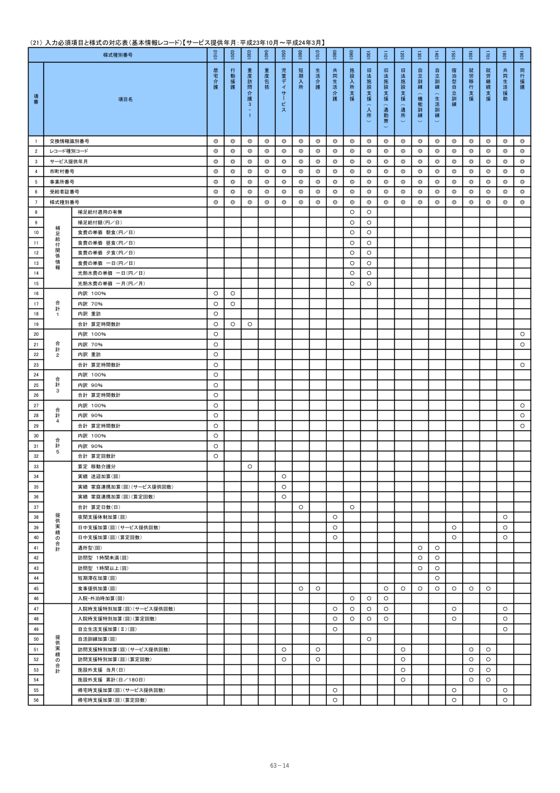
| 項番 | 項目名 | 属性 | 桁数 | 内容 | 必須 | 備考 | その他の列 |
|---|---|---|---|---|---|---|---|
| 1 | 交換情報識別番号 | 0101:◎ 0201:◎ 0301:◎ 0401:◎ 0501:◎ 0601:◎ 0701:◎ 0801:◎ 0901:◎ 1001:◎ 1101:◎ 1201:◎ 1301:◎ 1401:◎ 1501:◎ 1601:◎ 1701:◎ 1801:◎ 1901:◎ | |||||
| 2 | レコード種別コード | 0101:◎ 0201:◎ 0301:◎ 0401:◎ 0501:◎ 0601:◎ 0701:◎ 0801:◎ 0901:◎ 1001:◎ 1101:◎ 1201:◎ 1301:◎ 1401:◎ 1501:◎ 1601:◎ 1701:◎ 1801:◎ 1901:◎ | |||||
| 3 | サービス提供年月 | 0101:◎ 0201:◎ 0301:◎ 0401:◎ 0501:◎ 0601:◎ 0701:◎ 0801:◎ 0901:◎ 1001:◎ 1101:◎ 1201:◎ 1301:◎ 1401:◎ 1501:◎ 1601:◎ 1701:◎ 1801:◎ 1901:◎ | |||||
| 4 | 市町村番号 | 0101:◎ 0201:◎ 0301:◎ 0401:◎ 0501:◎ 0601:◎ 0701:◎ 0801:◎ 0901:◎ 1001:◎ 1101:◎ 1201:◎ 1301:◎ 1401:◎ 1501:◎ 1601:◎ 1701:◎ 1801:◎ 1901:◎ | |||||
| 5 | 事業所番号 | 0101:◎ 0201:◎ 0301:◎ 0401:◎ 0501:◎ 0601:◎ 0701:◎ 0801:◎ 0901:◎ 1001:◎ 1101:◎ 1201:◎ 1301:◎ 1401:◎ 1501:◎ 1601:◎ 1701:◎ 1801:◎ 1901:◎ | |||||
| 6 | 受給者証番号 | 0101:◎ 0201:◎ 0301:◎ 0401:◎ 0501:◎ 0601:◎ 0701:◎ 0801:◎ 0901:◎ 1001:◎ 1101:◎ 1201:◎ 1301:◎ 1401:◎ 1501:◎ 1601:◎ 1701:◎ 1801:◎ 1901:◎ | |||||
| 7 | 様式種別番号 | 0101:◎ 0201:◎ 0301:◎ 0401:◎ 0501:◎ 0601:◎ 0701:◎ 0801:◎ 0901:◎ 1001:◎ 1101:◎ 1201:◎ 1301:◎ 1401:◎ 1501:◎ 1601:◎ 1701:◎ 1801:◎ 1901:◎ | |||||
| 8 | 補足給付関係情報 > 補足給付適用の有無 | 0101:－ 0201:－ 0301:－ 0401:－ 0501:－ 0601:－ 0701:－ 0801:－ 0901:○ 1001:○ 1101:－ 1201:－ 1301:－ 1401:－ 1501:－ 1601:－ 1701:－ 1801:－ 1901:－ | |||||
| 9 | 補足給付関係情報 > 補足給付額(円／日) | 0101:－ 0201:－ 0301:－ 0401:－ 0501:－ 0601:－ 0701:－ 0801:－ 0901:○ 1001:○ 1101:－ 1201:－ 1301:－ 1401:－ 1501:－ 1601:－ 1701:－ 1801:－ 1901:－ | |||||
| 10 | 補足給付関係情報 > 食費の単価 朝食(円／日) | 0101:－ 0201:－ 0301:－ 0401:－ 0501:－ 0601:－ 0701:－ 0801:－ 0901:○ 1001:○ 1101:－ 1201:－ 1301:－ 1401:－ 1501:－ 1601:－ 1701:－ 1801:－ 1901:－ | |||||
| 11 | 補足給付関係情報 > 食費の単価 昼食(円／日) | 0101:－ 0201:－ 0301:－ 0401:－ 0501:－ 0601:－ 0701:－ 0801:－ 0901:○ 1001:○ 1101:－ 1201:－ 1301:－ 1401:－ 1501:－ 1601:－ 1701:－ 1801:－ 1901:－ | |||||
| 12 | 補足給付関係情報 > 食費の単価 夕食(円／日) | 0101:－ 0201:－ 0301:－ 0401:－ 0501:－ 0601:－ 0701:－ 0801:－ 0901:○ 1001:○ 1101:－ 1201:－ 1301:－ 1401:－ 1501:－ 1601:－ 1701:－ 1801:－ 1901:－ | |||||
| 13 | 補足給付関係情報 > 食費の単価 一日(円／日) | 0101:－ 0201:－ 0301:－ 0401:－ 0501:－ 0601:－ 0701:－ 0801:－ 0901:○ 1001:○ 1101:－ 1201:－ 1301:－ 1401:－ 1501:－ 1601:－ 1701:－ 1801:－ 1901:－ | |||||
| 14 | 補足給付関係情報 > 光熱水費の単価 一日(円／日) | 0101:－ 0201:－ 0301:－ 0401:－ 0501:－ 0601:－ 0701:－ 0801:－ 0901:○ 1001:○ 1101:－ 1201:－ 1301:－ 1401:－ 1501:－ 1601:－ 1701:－ 1801:－ 1901:－ | |||||
| 15 | 補足給付関係情報 > 光熱水費の単価 一月(円／月) | 0101:－ 0201:－ 0301:－ 0401:－ 0501:－ 0601:－ 0701:－ 0801:－ 0901:○ 1001:○ 1101:－ 1201:－ 1301:－ 1401:－ 1501:－ 1601:－ 1701:－ 1801:－ 1901:－ | |||||
| 16 | 合計１ > 内訳 100% | 0101:○ 0201:○ 0301:－ 0401:－ 0501:－ 0601:－ 0701:－ 0801:－ 0901:－ 1001:－ 1101:－ 1201:－ 1301:－ 1401:－ 1501:－ 1601:－ 1701:－ 1801:－ 1901:－ | |||||
| 17 | 合計１ > 内訳 70% | 0101:○ 0201:○ 0301:－ 0401:－ 0501:－ 0601:－ 0701:－ 0801:－ 0901:－ 1001:－ 1101:－ 1201:－ 1301:－ 1401:－ 1501:－ 1601:－ 1701:－ 1801:－ 1901:－ | |||||
| 18 | 合計１ > 内訳 重訪 | 0101:○ 0201:－ 0301:－ 0401:－ 0501:－ 0601:－ 0701:－ 0801:－ 0901:－ 1001:－ 1101:－ 1201:－ 1301:－ 1401:－ 1501:－ 1601:－ 1701:－ 1801:－ 1901:－ | |||||
| 19 | 合計１ > 合計 算定時間数計 | 0101:○ 0201:○ 0301:○ 0401:－ 0501:－ 0601:－ 0701:－ 0801:－ 0901:－ 1001:－ 1101:－ 1201:－ 1301:－ 1401:－ 1501:－ 1601:－ 1701:－ 1801:－ 1901:－ | |||||
| 20 | 合計２ > 内訳 100% | 0101:○ 0201:－ 0301:－ 0401:－ 0501:－ 0601:－ 0701:－ 0801:－ 0901:－ 1001:－ 1101:－ 1201:－ 1301:－ 1401:－ 1501:－ 1601:－ 1701:－ 1801:－ 1901:○ | |||||
| 21 | 合計２ > 内訳 70% | 0101:○ 0201:－ 0301:－ 0401:－ 0501:－ 0601:－ 0701:－ 0801:－ 0901:－ 1001:－ 1101:－ 1201:－ 1301:－ 1401:－ 1501:－ 1601:－ 1701:－ 1801:－ 1901:○ | |||||
| 22 | 合計２ > 内訳 重訪 | 0101:○ 0201:－ 0301:－ 0401:－ 0501:－ 0601:－ 0701:－ 0801:－ 0901:－ 1001:－ 1101:－ 1201:－ 1301:－ 1401:－ 1501:－ 1601:－ 1701:－ 1801:－ 1901:－ | |||||
| 23 | 合計２ > 合計 算定時間数計 | 0101:○ 0201:－ 0301:－ 0401:－ 0501:－ 0601:－ 0701:－ 0801:－ 0901:－ 1001:－ 1101:－ 1201:－ 1301:－ 1401:－ 1501:－ 1601:－ 1701:－ 1801:－ 1901:○ | |||||
| 24 | 合計３ > 内訳 100% | 0101:○ 0201:－ 0301:－ 0401:－ 0501:－ 0601:－ 0701:－ 0801:－ 0901:－ 1001:－ 1101:－ 1201:－ 1301:－ 1401:－ 1501:－ 1601:－ 1701:－ 1801:－ 1901:－ | |||||
| 25 | 合計３ > 内訳 90% | 0101:○ 0201:－ 0301:－ 0401:－ 0501:－ 0601:－ 0701:－ 0801:－ 0901:－ 1001:－ 1101:－ 1201:－ 1301:－ 1401:－ 1501:－ 1601:－ 1701:－ 1801:－ 1901:－ | |||||
| 26 | 合計３ > 合計 算定時間数計 | 0101:○ 0201:－ 0301:－ 0401:－ 0501:－ 0601:－ 0701:－ 0801:－ 0901:－ 1001:－ 1101:－ 1201:－ 1301:－ 1401:－ 1501:－ 1601:－ 1701:－ 1801:－ 1901:－ | |||||
| 27 | 合計４ > 内訳 100% | 0101:○ 0201:－ 0301:－ 0401:－ 0501:－ 0601:－ 0701:－ 0801:－ 0901:－ 1001:－ 1101:－ 1201:－ 1301:－ 1401:－ 1501:－ 1601:－ 1701:－ 1801:－ 1901:○ | |||||
| 28 | 合計４ > 内訳 90% | 0101:○ 0201:－ 0301:－ 0401:－ 0501:－ 0601:－ 0701:－ 0801:－ 0901:－ 1001:－ 1101:－ 1201:－ 1301:－ 1401:－ 1501:－ 1601:－ 1701:－ 1801:－ 1901:○ | |||||
| 29 | 合計４ > 合計 算定時間数計 | 0101:○ 0201:－ 0301:－ 0401:－ 0501:－ 0601:－ 0701:－ 0801:－ 0901:－ 1001:－ 1101:－ 1201:－ 1301:－ 1401:－ 1501:－ 1601:－ 1701:－ 1801:－ 1901:○ | |||||
| 30 | 合計５ > 内訳 100% | 0101:○ 0201:－ 0301:－ 0401:－ 0501:－ 0601:－ 0701:－ 0801:－ 0901:－ 1001:－ 1101:－ 1201:－ 1301:－ 1401:－ 1501:－ 1601:－ 1701:－ 1801:－ 1901:－ | |||||
| 31 | 合計５ > 内訳 90% | 0101:○ 0201:－ 0301:－ 0401:－ 0501:－ 0601:－ 0701:－ 0801:－ 0901:－ 1001:－ 1101:－ 1201:－ 1301:－ 1401:－ 1501:－ 1601:－ 1701:－ 1801:－ 1901:－ | |||||
| 32 | 合計５ > 合計 算定回数計 | 0101:○ 0201:－ 0301:－ 0401:－ 0501:－ 0601:－ 0701:－ 0801:－ 0901:－ 1001:－ 1101:－ 1201:－ 1301:－ 1401:－ 1501:－ 1601:－ 1701:－ 1801:－ 1901:－ | |||||
| 33 | 提供実績の合計 > 算定 移動介護分 | 0101:－ 0201:－ 0301:○ 0401:－ 0501:－ 0601:－ 0701:－ 0801:－ 0901:－ 1001:－ 1101:－ 1201:－ 1301:－ 1401:－ 1501:－ 1601:－ 1701:－ 1801:－ 1901:－ | |||||
| 34 | 提供実績の合計 > 実績 送迎加算(回) | 0101:－ 0201:－ 0301:－ 0401:－ 0501:○ 0601:－ 0701:－ 0801:－ 0901:－ 1001:－ 1101:－ 1201:－ 1301:－ 1401:－ 1501:－ 1601:－ 1701:－ 1801:－ 1901:－ | |||||
| 35 | 提供実績の合計 > 実績 家庭連携加算(回)(サービス提供回数) | 0101:－ 0201:－ 0301:－ 0401:－ 0501:○ 0601:－ 0701:－ 0801:－ 0901:－ 1001:－ 1101:－ 1201:－ 1301:－ 1401:－ 1501:－ 1601:－ 1701:－ 1801:－ 1901:－ | |||||
| 36 | 提供実績の合計 > 実績 家庭連携加算(回)(算定回数) | 0101:－ 0201:－ 0301:－ 0401:－ 0501:○ 0601:－ 0701:－ 0801:－ 0901:－ 1001:－ 1101:－ 1201:－ 1301:－ 1401:－ 1501:－ 1601:－ 1701:－ 1801:－ 1901:－ | |||||
| 37 | 提供実績の合計 > 合計 算定日数(日) | 0101:－ 0201:－ 0301:－ 0401:－ 0501:－ 0601:○ 0701:－ 0801:－ 0901:○ 1001:－ 1101:－ 1201:－ 1301:－ 1401:－ 1501:－ 1601:－ 1701:－ 1801:－ 1901:－ | |||||
| 38 | 提供実績の合計 > 夜間支援体制加算(回) | 0101:－ 0201:－ 0301:－ 0401:－ 0501:－ 0601:－ 0701:－ 0801:○ 0901:－ 1001:－ 1101:－ 1201:－ 1301:－ 1401:－ 1501:－ 1601:－ 1701:－ 1801:○ 1901:－ | |||||
| 39 | 提供実績の合計 > 日中支援加算(回)(サービス提供回数) | 0101:－ 0201:－ 0301:－ 0401:－ 0501:－ 0601:－ 0701:－ 0801:○ 0901:－ 1001:－ 1101:－ 1201:－ 1301:－ 1401:－ 1501:○ 1601:－ 1701:－ 1801:○ 1901:－ | |||||
| 40 | 提供実績の合計 > 日中支援加算(回)(算定回数) | 0101:－ 0201:－ 0301:－ 0401:－ 0501:－ 0601:－ 0701:－ 0801:○ 0901:－ 1001:－ 1101:－ 1201:－ 1301:－ 1401:－ 1501:○ 1601:－ 1701:－ 1801:○ 1901:－ | |||||
| 41 | 提供実績の合計 > 通所型(回) | 0101:－ 0201:－ 0301:－ 0401:－ 0501:－ 0601:－ 0701:－ 0801:－ 0901:－ 1001:－ 1101:－ 1201:－ 1301:○ 1401:○ 1501:－ 1601:－ 1701:－ 1801:－ 1901:－ | |||||
| 42 | 提供実績の合計 > 訪問型 1時間未満(回) | 0101:－ 0201:－ 0301:－ 0401:－ 0501:－ 0601:－ 0701:－ 0801:－ 0901:－ 1001:－ 1101:－ 1201:－ 1301:○ 1401:○ 1501:－ 1601:－ 1701:－ 1801:－ 1901:－ | |||||
| 43 | 提供実績の合計 > 訪問型 1時間以上(回) | 0101:－ 0201:－ 0301:－ 0401:－ 0501:－ 0601:－ 0701:－ 0801:－ 0901:－ 1001:－ 1101:－ 1201:－ 1301:○ 1401:○ 1501:－ 1601:－ 1701:－ 1801:－ 1901:－ | |||||
| 44 | 提供実績の合計 > 短期滞在加算(回) | 0101:－ 0201:－ 0301:－ 0401:－ 0501:－ 0601:－ 0701:－ 0801:－ 0901:－ 1001:－ 1101:－ 1201:－ 1301:－ 1401:○ 1501:－ 1601:－ 1701:－ 1801:－ 1901:－ | |||||
| 45 | 提供実績の合計 > 食事提供加算(回) | 0101:－ 0201:－ 0301:－ 0401:－ 0501:－ 0601:○ 0701:○ 0801:－ 0901:－ 1001:－ 1101:○ 1201:○ 1301:○ 1401:○ 1501:○ 1601:○ 1701:○ 1801:－ 1901:－ | |||||
| 46 | 提供実績の合計 > 入院・外泊時加算(回) | 0101:－ 0201:－ 0301:－ 0401:－ 0501:－ 0601:－ 0701:－ 0801:－ 0901:○ 1001:○ 1101:○ 1201:－ 1301:－ 1401:－ 1501:－ 1601:－ 1701:－ 1801:－ 1901:－ | |||||
| 47 | 提供実績の合計 > 入院時支援特別加算(回)(サービス提供回数) | 0101:－ 0201:－ 0301:－ 0401:－ 0501:－ 0601:－ 0701:－ 0801:○ 0901:○ 1001:○ 1101:○ 1201:－ 1301:－ 1401:－ 1501:○ 1601:－ 1701:－ 1801:○ 1901:－ | |||||
| 48 | 提供実績の合計 > 入院時支援特別加算(回)(算定回数) | 0101:－ 0201:－ 0301:－ 0401:－ 0501:－ 0601:－ 0701:－ 0801:○ 0901:○ 1001:○ 1101:○ 1201:－ 1301:－ 1401:－ 1501:○ 1601:－ 1701:－ 1801:○ 1901:－ | |||||
| 49 | 提供実績の合計 > 自立生活支援加算Ⅱ(回) | 0101:－ 0201:－ 0301:－ 0401:－ 0501:－ 0601:－ 0701:－ 0801:○ 0901:－ 1001:－ 1101:－ 1201:－ 1301:－ 1401:－ 1501:－ 1601:－ 1701:－ 1801:○ 1901:－ | |||||
| 50 | 提供実績の合計 > 自活訓練加算(回) | 0101:－ 0201:－ 0301:－ 0401:－ 0501:－ 0601:－ 0701:－ 0801:－ 0901:－ 1001:○ 1101:－ 1201:－ 1301:－ 1401:－ 1501:－ 1601:－ 1701:－ 1801:－ 1901:－ | |||||
| 51 | 提供実績の合計 > 訪問支援特別加算(回)(サービス提供回数) | 0101:－ 0201:－ 0301:－ 0401:－ 0501:○ 0601:－ 0701:○ 0801:－ 0901:－ 1001:－ 1101:－ 1201:○ 1301:－ 1401:－ 1501:－ 1601:○ 1701:○ 1801:－ 1901:－ | |||||
| 52 | 提供実績の合計 > 訪問支援特別加算(回)(算定回数) | 0101:－ 0201:－ 0301:－ 0401:－ 0501:○ 0601:－ 0701:○ 0801:－ 0901:－ 1001:－ 1101:－ 1201:○ 1301:－ 1401:－ 1501:－ 1601:○ 1701:○ 1801:－ 1901:－ | |||||
| 53 | 提供実績の合計 > 施設外支援 当月(日) | 0101:－ 0201:－ 0301:－ 0401:－ 0501:－ 0601:－ 0701:－ 0801:－ 0901:－ 1001:－ 1101:－ 1201:○ 1301:－ 1401:－ 1501:－ 1601:○ 1701:○ 1801:－ 1901:－ | |||||
| 54 | 提供実績の合計 > 施設外支援 累計(日／180日) | 0101:－ 0201:－ 0301:－ 0401:－ 0501:－ 0601:－ 0701:－ 0801:－ 0901:－ 1001:－ 1101:－ 1201:○ 1301:－ 1401:－ 1501:－ 1601:○ 1701:○ 1801:－ 1901:－ | |||||
| 55 | 提供実績の合計 > 帰宅時支援加算(回)(サービス提供回数) | 0101:－ 0201:－ 0301:－ 0401:－ 0501:－ 0601:－ 0701:－ 0801:○ 0901:－ 1001:－ 1101:－ 1201:－ 1301:－ 1401:－ 1501:○ 1601:－ 1701:－ 1801:○ 1901:－ | |||||
| 56 | 提供実績の合計 > 帰宅時支援加算(回)(算定回数) | 0101:－ 0201:－ 0301:－ 0401:－ 0501:－ 0601:－ 0701:－ 0801:○ 0901:－ 1001:－ 1101:－ 1201:－ 1301:－ 1401:－ 1501:○ 1601:－ 1701:－ 1801:○ 1901:－ |
| 項番 | 項目名 | 属性 | 桁数 | 内容 | 必須 | 備考 | その他の列 |
|---|---|---|---|---|---|---|---|
| 1 | 交換情報識別番号 | 0101 居宅介護:◎ |
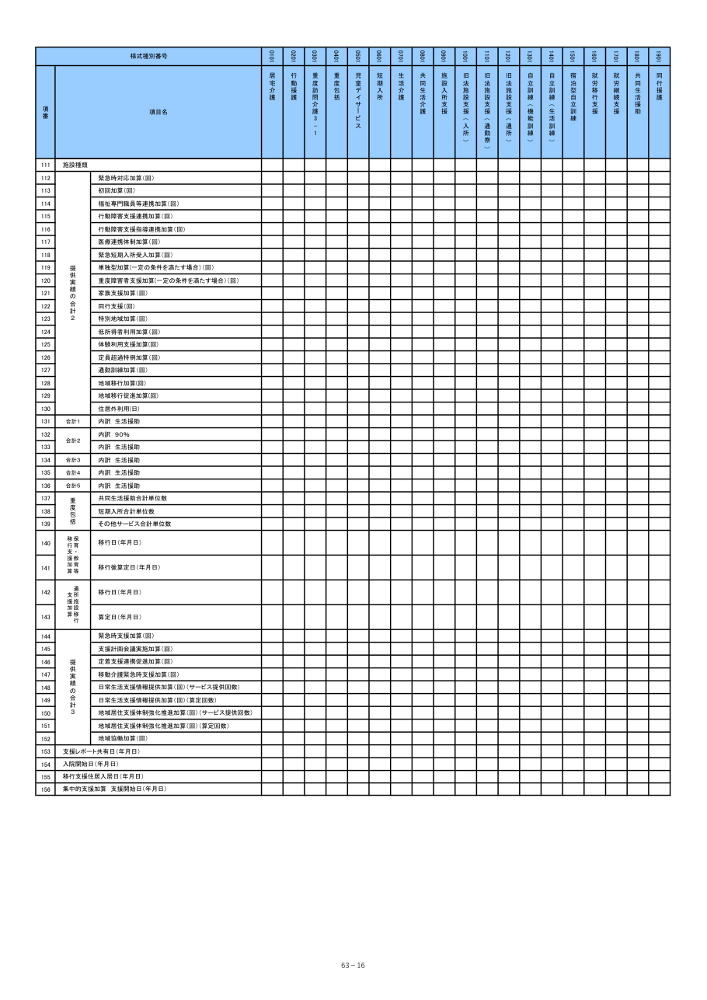
| 項番 | 項目名 | 属性 | 桁数 | 内容 | 必須 | 備考 | その他の列 |
|---|---|---|---|---|---|---|---|
| 111 | 施設種類 | 0101 居宅介護:－ 0201 行動援護:－ 0301 重度訪問介護:－ 0401 重度包括:－ 0501 児童デイサービス:－ 0601 短期入所:－ 0701 生活介護:－ 0801 共同生活介護:－ 0901 施設入所支援:－ 1001 旧法施設支援（入所）:－ 1101 旧法施設支援（通勤寮）:－ 1201 旧法施設支援（通所）:－ 1301 自立訓練（機能訓練）:－ 1401 自立訓練（生活訓練）:－ 1501 宿泊型自立訓練:－ 1601 就労移行支援:－ 1701 就労継続支援:－ 1801 共同生活援助:－ 1901 同行援護:－ | |||||
| 112 | 提供実績の合計2 > 緊急時対応加算(回) | 0101 居宅介護:－ 0201 行動援護:－ 0301 重度訪問介護:－ 0401 重度包括:－ 0501 児童デイサービス:－ 0601 短期入所:－ 0701 生活介護:－ 0801 共同生活介護:－ 0901 施設入所支援:－ 1001 旧法施設支援（入所）:－ 1101 旧法施設支援（通勤寮）:－ 1201 旧法施設支援（通所）:－ 1301 自立訓練（機能訓練）:－ 1401 自立訓練（生活訓練）:－ 1501 宿泊型自立訓練:－ 1601 就労移行支援:－ 1701 就労継続支援:－ 1801 共同生活援助:－ 1901 同行援護:－ | |||||
| 113 | 提供実績の合計2 > 初回加算(回) | 0101 居宅介護:－ 0201 行動援護:－ 0301 重度訪問介護:－ 0401 重度包括:－ 0501 児童デイサービス:－ 0601 短期入所:－ 0701 生活介護:－ 0801 共同生活介護:－ 0901 施設入所支援:－ 1001 旧法施設支援（入所）:－ 1101 旧法施設支援（通勤寮）:－ 1201 旧法施設支援（通所）:－ 1301 自立訓練（機能訓練）:－ 1401 自立訓練（生活訓練）:－ 1501 宿泊型自立訓練:－ 1601 就労移行支援:－ 1701 就労継続支援:－ 1801 共同生活援助:－ 1901 同行援護:－ | |||||
| 114 | 提供実績の合計2 > 福祉専門職員等連携加算(回) | 0101 居宅介護:－ 0201 行動援護:－ 0301 重度訪問介護:－ 0401 重度包括:－ 0501 児童デイサービス:－ 0601 短期入所:－ 0701 生活介護:－ 0801 共同生活介護:－ 0901 施設入所支援:－ 1001 旧法施設支援（入所）:－ 1101 旧法施設支援（通勤寮）:－ 1201 旧法施設支援（通所）:－ 1301 自立訓練（機能訓練）:－ 1401 自立訓練（生活訓練）:－ 1501 宿泊型自立訓練:－ 1601 就労移行支援:－ 1701 就労継続支援:－ 1801 共同生活援助:－ 1901 同行援護:－ | |||||
| 115 | 提供実績の合計2 > 行動障害支援連携加算(回) | 0101 居宅介護:－ 0201 行動援護:－ 0301 重度訪問介護:－ 0401 重度包括:－ 0501 児童デイサービス:－ 0601 短期入所:－ 0701 生活介護:－ 0801 共同生活介護:－ 0901 施設入所支援:－ 1001 旧法施設支援（入所）:－ 1101 旧法施設支援（通勤寮）:－ 1201 旧法施設支援（通所）:－ 1301 自立訓練（機能訓練）:－ 1401 自立訓練（生活訓練）:－ 1501 宿泊型自立訓練:－ 1601 就労移行支援:－ 1701 就労継続支援:－ 1801 共同生活援助:－ 1901 同行援護:－ | |||||
| 116 | 提供実績の合計2 > 行動障害支援指導連携加算(回) | 0101 居宅介護:－ 0201 行動援護:－ 0301 重度訪問介護:－ 0401 重度包括:－ 0501 児童デイサービス:－ 0601 短期入所:－ 0701 生活介護:－ 0801 共同生活介護:－ 0901 施設入所支援:－ 1001 旧法施設支援（入所）:－ 1101 旧法施設支援（通勤寮）:－ 1201 旧法施設支援（通所）:－ 1301 自立訓練（機能訓練）:－ 1401 自立訓練（生活訓練）:－ 1501 宿泊型自立訓練:－ 1601 就労移行支援:－ 1701 就労継続支援:－ 1801 共同生活援助:－ 1901 同行援護:－ | |||||
| 117 | 提供実績の合計2 > 医療連携体制加算(回) | 0101 居宅介護:－ 0201 行動援護:－ 0301 重度訪問介護:－ 0401 重度包括:－ 0501 児童デイサービス:－ 0601 短期入所:－ 0701 生活介護:－ 0801 共同生活介護:－ 0901 施設入所支援:－ 1001 旧法施設支援（入所）:－ 1101 旧法施設支援（通勤寮）:－ 1201 旧法施設支援（通所）:－ 1301 自立訓練（機能訓練）:－ 1401 自立訓練（生活訓練）:－ 1501 宿泊型自立訓練:－ 1601 就労移行支援:－ 1701 就労継続支援:－ 1801 共同生活援助:－ 1901 同行援護:－ | |||||
| 118 | 提供実績の合計2 > 緊急短期入所受入加算(回) | 0101 居宅介護:－ 0201 行動援護:－ 0301 重度訪問介護:－ 0401 重度包括:－ 0501 児童デイサービス:－ 0601 短期入所:－ 0701 生活介護:－ 0801 共同生活介護:－ 0901 施設入所支援:－ 1001 旧法施設支援（入所）:－ 1101 旧法施設支援（通勤寮）:－ 1201 旧法施設支援（通所）:－ 1301 自立訓練（機能訓練）:－ 1401 自立訓練（生活訓練）:－ 1501 宿泊型自立訓練:－ 1601 就労移行支援:－ 1701 就労継続支援:－ 1801 共同生活援助:－ 1901 同行援護:－ | |||||
| 119 | 提供実績の合計2 > 単独型加算(一定の条件を満たす場合)(回) | 0101 居宅介護:－ 0201 行動援護:－ 0301 重度訪問介護:－ 0401 重度包括:－ 0501 児童デイサービス:－ 0601 短期入所:－ 0701 生活介護:－ 0801 共同生活介護:－ 0901 施設入所支援:－ 1001 旧法施設支援（入所）:－ 1101 旧法施設支援（通勤寮）:－ 1201 旧法施設支援（通所）:－ 1301 自立訓練（機能訓練）:－ 1401 自立訓練（生活訓練）:－ 1501 宿泊型自立訓練:－ 1601 就労移行支援:－ 1701 就労継続支援:－ 1801 共同生活援助:－ 1901 同行援護:－ | |||||
| 120 | 提供実績の合計2 > 重度障害者支援加算(一定の条件を満たす場合)(回) | 0101 居宅介護:－ 0201 行動援護:－ 0301 重度訪問介護:－ 0401 重度包括:－ 0501 児童デイサービス:－ 0601 短期入所:－ 0701 生活介護:－ 0801 共同生活介護:－ 0901 施設入所支援:－ 1001 旧法施設支援（入所）:－ 1101 旧法施設支援（通勤寮）:－ 1201 旧法施設支援（通所）:－ 1301 自立訓練（機能訓練）:－ 1401 自立訓練（生活訓練）:－ 1501 宿泊型自立訓練:－ 1601 就労移行支援:－ 1701 就労継続支援:－ 1801 共同生活援助:－ 1901 同行援護:－ | |||||
| 121 | 提供実績の合計2 > 家族支援加算(回) | 0101 居宅介護:－ 0201 行動援護:－ 0301 重度訪問介護:－ 0401 重度包括:－ 0501 児童デイサービス:－ 0601 短期入所:－ 0701 生活介護:－ 0801 共同生活介護:－ 0901 施設入所支援:－ 1001 旧法施設支援（入所）:－ 1101 旧法施設支援（通勤寮）:－ 1201 旧法施設支援（通所）:－ 1301 自立訓練（機能訓練）:－ 1401 自立訓練（生活訓練）:－ 1501 宿泊型自立訓練:－ 1601 就労移行支援:－ 1701 就労継続支援:－ 1801 共同生活援助:－ 1901 同行援護:－ | |||||
| 122 | 提供実績の合計2 > 同行支援(回) | 0101 居宅介護:－ 0201 行動援護:－ 0301 重度訪問介護:－ 0401 重度包括:－ 0501 児童デイサービス:－ 0601 短期入所:－ 0701 生活介護:－ 0801 共同生活介護:－ 0901 施設入所支援:－ 1001 旧法施設支援（入所）:－ 1101 旧法施設支援（通勤寮）:－ 1201 旧法施設支援（通所）:－ 1301 自立訓練（機能訓練）:－ 1401 自立訓練（生活訓練）:－ 1501 宿泊型自立訓練:－ 1601 就労移行支援:－ 1701 就労継続支援:－ 1801 共同生活援助:－ 1901 同行援護:－ | |||||
| 123 | 提供実績の合計2 > 特別地域加算(回) | 0101 居宅介護:－ 0201 行動援護:－ 0301 重度訪問介護:－ 0401 重度包括:－ 0501 児童デイサービス:－ 0601 短期入所:－ 0701 生活介護:－ 0801 共同生活介護:－ 0901 施設入所支援:－ 1001 旧法施設支援（入所）:－ 1101 旧法施設支援（通勤寮）:－ 1201 旧法施設支援（通所）:－ 1301 自立訓練（機能訓練）:－ 1401 自立訓練（生活訓練）:－ 1501 宿泊型自立訓練:－ 1601 就労移行支援:－ 1701 就労継続支援:－ 1801 共同生活援助:－ 1901 同行援護:－ | |||||
| 124 | 提供実績の合計2 > 低所得者利用加算(回) | 0101 居宅介護:－ 0201 行動援護:－ 0301 重度訪問介護:－ 0401 重度包括:－ 0501 児童デイサービス:－ 0601 短期入所:－ 0701 生活介護:－ 0801 共同生活介護:－ 0901 施設入所支援:－ 1001 旧法施設支援（入所）:－ 1101 旧法施設支援（通勤寮）:－ 1201 旧法施設支援（通所）:－ 1301 自立訓練（機能訓練）:－ 1401 自立訓練（生活訓練）:－ 1501 宿泊型自立訓練:－ 1601 就労移行支援:－ 1701 就労継続支援:－ 1801 共同生活援助:－ 1901 同行援護:－ | |||||
| 125 | 提供実績の合計2 > 体験利用支援加算(回) | 0101 居宅介護:－ 0201 行動援護:－ 0301 重度訪問介護:－ 0401 重度包括:－ 0501 児童デイサービス:－ 0601 短期入所:－ 0701 生活介護:－ 0801 共同生活介護:－ 0901 施設入所支援:－ 1001 旧法施設支援（入所）:－ 1101 旧法施設支援（通勤寮）:－ 1201 旧法施設支援（通所）:－ 1301 自立訓練（機能訓練）:－ 1401 自立訓練（生活訓練）:－ 1501 宿泊型自立訓練:－ 1601 就労移行支援:－ 1701 就労継続支援:－ 1801 共同生活援助:－ 1901 同行援護:－ | |||||
| 126 | 提供実績の合計2 > 定員超過特例加算(回) | 0101 居宅介護:－ 0201 行動援護:－ 0301 重度訪問介護:－ 0401 重度包括:－ 0501 児童デイサービス:－ 0601 短期入所:－ 0701 生活介護:－ 0801 共同生活介護:－ 0901 施設入所支援:－ 1001 旧法施設支援（入所）:－ 1101 旧法施設支援（通勤寮）:－ 1201 旧法施設支援（通所）:－ 1301 自立訓練（機能訓練）:－ 1401 自立訓練（生活訓練）:－ 1501 宿泊型自立訓練:－ 1601 就労移行支援:－ 1701 就労継続支援:－ 1801 共同生活援助:－ 1901 同行援護:－ | |||||
| 127 | 提供実績の合計2 > 通勤訓練加算(回) | 0101 居宅介護:－ 0201 行動援護:－ 0301 重度訪問介護:－ 0401 重度包括:－ 0501 児童デイサービス:－ 0601 短期入所:－ 0701 生活介護:－ 0801 共同生活介護:－ 0901 施設入所支援:－ 1001 旧法施設支援（入所）:－ 1101 旧法施設支援（通勤寮）:－ 1201 旧法施設支援（通所）:－ 1301 自立訓練（機能訓練）:－ 1401 自立訓練（生活訓練）:－ 1501 宿泊型自立訓練:－ 1601 就労移行支援:－ 1701 就労継続支援:－ 1801 共同生活援助:－ 1901 同行援護:－ | |||||
| 128 | 提供実績の合計2 > 地域移行加算(回) | 0101 居宅介護:－ 0201 行動援護:－ 0301 重度訪問介護:－ 0401 重度包括:－ 0501 児童デイサービス:－ 0601 短期入所:－ 0701 生活介護:－ 0801 共同生活介護:－ 0901 施設入所支援:－ 1001 旧法施設支援（入所）:－ 1101 旧法施設支援（通勤寮）:－ 1201 旧法施設支援（通所）:－ 1301 自立訓練（機能訓練）:－ 1401 自立訓練（生活訓練）:－ 1501 宿泊型自立訓練:－ 1601 就労移行支援:－ 1701 就労継続支援:－ 1801 共同生活援助:－ 1901 同行援護:－ | |||||
| 129 | 提供実績の合計2 > 地域移行促進加算(回) | 0101 居宅介護:－ 0201 行動援護:－ 0301 重度訪問介護:－ 0401 重度包括:－ 0501 児童デイサービス:－ 0601 短期入所:－ 0701 生活介護:－ 0801 共同生活介護:－ 0901 施設入所支援:－ 1001 旧法施設支援（入所）:－ 1101 旧法施設支援（通勤寮）:－ 1201 旧法施設支援（通所）:－ 1301 自立訓練（機能訓練）:－ 1401 自立訓練（生活訓練）:－ 1501 宿泊型自立訓練:－ 1601 就労移行支援:－ 1701 就労継続支援:－ 1801 共同生活援助:－ 1901 同行援護:－ | |||||
| 130 | 提供実績の合計2 > 住居外利用(日) | 0101 居宅介護:－ 0201 行動援護:－ 0301 重度訪問介護:－ 0401 重度包括:－ 0501 児童デイサービス:－ 0601 短期入所:－ 0701 生活介護:－ 0801 共同生活介護:－ 0901 施設入所支援:－ 1001 旧法施設支援（入所）:－ 1101 旧法施設支援（通勤寮）:－ 1201 旧法施設支援（通所）:－ 1301 自立訓練（機能訓練）:－ 1401 自立訓練（生活訓練）:－ 1501 宿泊型自立訓練:－ 1601 就労移行支援:－ 1701 就労継続支援:－ 1801 共同生活援助:－ 1901 同行援護:－ | |||||
| 131 | 合計1 > 内訳 生活援助 | 0101 居宅介護:－ 0201 行動援護:－ 0301 重度訪問介護:－ 0401 重度包括:－ 0501 児童デイサービス:－ 0601 短期入所:－ 0701 生活介護:－ 0801 共同生活介護:－ 0901 施設入所支援:－ 1001 旧法施設支援（入所）:－ 1101 旧法施設支援（通勤寮）:－ 1201 旧法施設支援（通所）:－ 1301 自立訓練（機能訓練）:－ 1401 自立訓練（生活訓練）:－ 1501 宿泊型自立訓練:－ 1601 就労移行支援:－ 1701 就労継続支援:－ 1801 共同生活援助:－ 1901 同行援護:－ | |||||
| 132 | 合計2 > 内訳 90% | 0101 居宅介護:－ 0201 行動援護:－ 0301 重度訪問介護:－ 0401 重度包括:－ 0501 児童デイサービス:－ 0601 短期入所:－ 0701 生活介護:－ 0801 共同生活介護:－ 0901 施設入所支援:－ 1001 旧法施設支援（入所）:－ 1101 旧法施設支援（通勤寮）:－ 1201 旧法施設支援（通所）:－ 1301 自立訓練（機能訓練）:－ 1401 自立訓練（生活訓練）:－ 1501 宿泊型自立訓練:－ 1601 就労移行支援:－ 1701 就労継続支援:－ 1801 共同生活援助:－ 1901 同行援護:－ | |||||
| 133 | 合計2 > 内訳 生活援助 | 0101 居宅介護:－ 0201 行動援護:－ 0301 重度訪問介護:－ 0401 重度包括:－ 0501 児童デイサービス:－ 0601 短期入所:－ 0701 生活介護:－ 0801 共同生活介護:－ 0901 施設入所支援:－ 1001 旧法施設支援（入所）:－ 1101 旧法施設支援（通勤寮）:－ 1201 旧法施設支援（通所）:－ 1301 自立訓練（機能訓練）:－ 1401 自立訓練（生活訓練）:－ 1501 宿泊型自立訓練:－ 1601 就労移行支援:－ 1701 就労継続支援:－ 1801 共同生活援助:－ 1901 同行援護:－ | |||||
| 134 | 合計3 > 内訳 生活援助 | 0101 居宅介護:－ 0201 行動援護:－ 0301 重度訪問介護:－ 0401 重度包括:－ 0501 児童デイサービス:－ 0601 短期入所:－ 0701 生活介護:－ 0801 共同生活介護:－ 0901 施設入所支援:－ 1001 旧法施設支援（入所）:－ 1101 旧法施設支援（通勤寮）:－ 1201 旧法施設支援（通所）:－ 1301 自立訓練（機能訓練）:－ 1401 自立訓練（生活訓練）:－ 1501 宿泊型自立訓練:－ 1601 就労移行支援:－ 1701 就労継続支援:－ 1801 共同生活援助:－ 1901 同行援護:－ | |||||
| 135 | 合計4 > 内訳 生活援助 | 0101 居宅介護:－ 0201 行動援護:－ 0301 重度訪問介護:－ 0401 重度包括:－ 0501 児童デイサービス:－ 0601 短期入所:－ 0701 生活介護:－ 0801 共同生活介護:－ 0901 施設入所支援:－ 1001 旧法施設支援（入所）:－ 1101 旧法施設支援（通勤寮）:－ 1201 旧法施設支援（通所）:－ 1301 自立訓練（機能訓練）:－ 1401 自立訓練（生活訓練）:－ 1501 宿泊型自立訓練:－ 1601 就労移行支援:－ 1701 就労継続支援:－ 1801 共同生活援助:－ 1901 同行援護:－ | |||||
| 136 | 合計5 > 内訳 生活援助 | 0101 居宅介護:－ 0201 行動援護:－ 0301 重度訪問介護:－ 0401 重度包括:－ 0501 児童デイサービス:－ 0601 短期入所:－ 0701 生活介護:－ 0801 共同生活介護:－ 0901 施設入所支援:－ 1001 旧法施設支援（入所）:－ 1101 旧法施設支援（通勤寮）:－ 1201 旧法施設支援（通所）:－ 1301 自立訓練（機能訓練）:－ 1401 自立訓練（生活訓練）:－ 1501 宿泊型自立訓練:－ 1601 就労移行支援:－ 1701 就労継続支援:－ 1801 共同生活援助:－ 1901 同行援護:－ | |||||
| 137 | 重度包括 > 共同生活援助合計単位数 | 0101 居宅介護:－ 0201 行動援護:－ 0301 重度訪問介護:－ 0401 重度包括:－ 0501 児童デイサービス:－ 0601 短期入所:－ 0701 生活介護:－ 0801 共同生活介護:－ 0901 施設入所支援:－ 1001 旧法施設支援（入所）:－ 1101 旧法施設支援（通勤寮）:－ 1201 旧法施設支援（通所）:－ 1301 自立訓練（機能訓練）:－ 1401 自立訓練（生活訓練）:－ 1501 宿泊型自立訓練:－ 1601 就労移行支援:－ 1701 就労継続支援:－ 1801 共同生活援助:－ 1901 同行援護:－ | |||||
| 138 | 重度包括 > 短期入所合計単位数 | 0101 居宅介護:－ 0201 行動援護:－ 0301 重度訪問介護:－ 0401 重度包括:－ 0501 児童デイサービス:－ 0601 短期入所:－ 0701 生活介護:－ 0801 共同生活介護:－ 0901 施設入所支援:－ 1001 旧法施設支援（入所）:－ 1101 旧法施設支援（通勤寮）:－ 1201 旧法施設支援（通所）:－ 1301 自立訓練（機能訓練）:－ 1401 自立訓練（生活訓練）:－ 1501 宿泊型自立訓練:－ 1601 就労移行支援:－ 1701 就労継続支援:－ 1801 共同生活援助:－ 1901 同行援護:－ | |||||
| 139 | 重度包括 > その他サービス合計単位数 | 0101 居宅介護:－ 0201 行動援護:－ 0301 重度訪問介護:－ 0401 重度包括:－ 0501 児童デイサービス:－ 0601 短期入所:－ 0701 生活介護:－ 0801 共同生活介護:－ 0901 施設入所支援:－ 1001 旧法施設支援（入所）:－ 1101 旧法施設支援（通勤寮）:－ 1201 旧法施設支援（通所）:－ 1301 自立訓練（機能訓練）:－ 1401 自立訓練（生活訓練）:－ 1501 宿泊型自立訓練:－ 1601 就労移行支援:－ 1701 就労継続支援:－ 1801 共同生活援助:－ 1901 同行援護:－ | |||||
| 140 | 移保行育支・採教加算等 > 移行日(年月日) | 0101 居宅介護:－ 0201 行動援護:－ 0301 重度訪問介護:－ 0401 重度包括:－ 0501 児童デイサービス:－ 0601 短期入所:－ 0701 生活介護:－ 0801 共同生活介護:－ 0901 施設入所支援:－ 1001 旧法施設支援（入所）:－ 1101 旧法施設支援（通勤寮）:－ 1201 旧法施設支援（通所）:－ 1301 自立訓練（機能訓練）:－ 1401 自立訓練（生活訓練）:－ 1501 宿泊型自立訓練:－ 1601 就労移行支援:－ 1701 就労継続支援:－ 1801 共同生活援助:－ 1901 同行援護:－ | |||||
| 141 | 移保行育支・採教加算等 > 移行後算定日(年月日) | 0101 居宅介護:－ 0201 行動援護:－ 0301 重度訪問介護:－ 0401 重度包括:－ 0501 児童デイサービス:－ 0601 短期入所:－ 0701 生活介護:－ 0801 共同生活介護:－ 0901 施設入所支援:－ 1001 旧法施設支援（入所）:－ 1101 旧法施設支援（通勤寮）:－ 1201 旧法施設支援（通所）:－ 1301 自立訓練（機能訓練）:－ 1401 自立訓練（生活訓練）:－ 1501 宿泊型自立訓練:－ 1601 就労移行支援:－ 1701 就労継続支援:－ 1801 共同生活援助:－ 1901 同行援護:－ | |||||
| 142 | 通所施設加算移行 > 移行日(年月日) | 0101 居宅介護:－ 0201 行動援護:－ 0301 重度訪問介護:－ 0401 重度包括:－ 0501 児童デイサービス:－ 0601 短期入所:－ 0701 生活介護:－ 0801 共同生活介護:－ 0901 施設入所支援:－ 1001 旧法施設支援（入所）:－ 1101 旧法施設支援（通勤寮）:－ 1201 旧法施設支援（通所）:－ 1301 自立訓練（機能訓練）:－ 1401 自立訓練（生活訓練）:－ 1501 宿泊型自立訓練:－ 1601 就労移行支援:－ 1701 就労継続支援:－ 1801 共同生活援助:－ 1901 同行援護:－ | |||||
| 143 | 通所施設加算移行 > 算定日(年月日) | 0101 居宅介護:－ 0201 行動援護:－ 0301 重度訪問介護:－ 0401 重度包括:－ 0501 児童デイサービス:－ 0601 短期入所:－ 0701 生活介護:－ 0801 共同生活介護:－ 0901 施設入所支援:－ 1001 旧法施設支援（入所）:－ 1101 旧法施設支援（通勤寮）:－ 1201 旧法施設支援（通所）:－ 1301 自立訓練（機能訓練）:－ 1401 自立訓練（生活訓練）:－ 1501 宿泊型自立訓練:－ 1601 就労移行支援:－ 1701 就労継続支援:－ 1801 共同生活援助:－ 1901 同行援護:－ | |||||
| 144 | 提供実績の合計3 > 緊急時支援加算(回) | 0101 居宅介護:－ 0201 行動援護:－ 0301 重度訪問介護:－ 0401 重度包括:－ 0501 児童デイサービス:－ 0601 短期入所:－ 0701 生活介護:－ 0801 共同生活介護:－ 0901 施設入所支援:－ 1001 旧法施設支援（入所）:－ 1101 旧法施設支援（通勤寮）:－ 1201 旧法施設支援（通所）:－ 1301 自立訓練（機能訓練）:－ 1401 自立訓練（生活訓練）:－ 1501 宿泊型自立訓練:－ 1601 就労移行支援:－ 1701 就労継続支援:－ 1801 共同生活援助:－ 1901 同行援護:－ | |||||
| 145 | 提供実績の合計3 > 支援計画会議実施加算(回) | 0101 居宅介護:－ 0201 行動援護:－ 0301 重度訪問介護:－ 0401 重度包括:－ 0501 児童デイサービス:－ 0601 短期入所:－ 0701 生活介護:－ 0801 共同生活介護:－ 0901 施設入所支援:－ 1001 旧法施設支援（入所）:－ 1101 旧法施設支援（通勤寮）:－ 1201 旧法施設支援（通所）:－ 1301 自立訓練（機能訓練）:－ 1401 自立訓練（生活訓練）:－ 1501 宿泊型自立訓練:－ 1601 就労移行支援:－ 1701 就労継続支援:－ 1801 共同生活援助:－ 1901 同行援護:－ | |||||
| 146 | 提供実績の合計3 > 定着支援連携促進加算(回) | 0101 居宅介護:－ 0201 行動援護:－ 0301 重度訪問介護:－ 0401 重度包括:－ 0501 児童デイサービス:－ 0601 短期入所:－ 0701 生活介護:－ 0801 共同生活介護:－ 0901 施設入所支援:－ 1001 旧法施設支援（入所）:－ 1101 旧法施設支援（通勤寮）:－ 1201 旧法施設支援（通所）:－ 1301 自立訓練（機能訓練）:－ 1401 自立訓練（生活訓練）:－ 1501 宿泊型自立訓練:－ 1601 就労移行支援:－ 1701 就労継続支援:－ 1801 共同生活援助:－ 1901 同行援護:－ | |||||
| 147 | 提供実績の合計3 > 移動介護緊急時支援加算(回) | 0101 居宅介護:－ 0201 行動援護:－ 0301 重度訪問介護:－ 0401 重度包括:－ 0501 児童デイサービス:－ 0601 短期入所:－ 0701 生活介護:－ 0801 共同生活介護:－ 0901 施設入所支援:－ 1001 旧法施設支援（入所）:－ 1101 旧法施設支援（通勤寮）:－ 1201 旧法施設支援（通所）:－ 1301 自立訓練（機能訓練）:－ 1401 自立訓練（生活訓練）:－ 1501 宿泊型自立訓練:－ 1601 就労移行支援:－ 1701 就労継続支援:－ 1801 共同生活援助:－ 1901 同行援護:－ | |||||
| 148 | 提供実績の合計3 > 日常生活支援情報提供加算(回)(サービス提供回数) | 0101 居宅介護:－ 0201 行動援護:－ 0301 重度訪問介護:－ 0401 重度包括:－ 0501 児童デイサービス:－ 0601 短期入所:－ 0701 生活介護:－ 0801 共同生活介護:－ 0901 施設入所支援:－ 1001 旧法施設支援（入所）:－ 1101 旧法施設支援（通勤寮）:－ 1201 旧法施設支援（通所）:－ 1301 自立訓練（機能訓練）:－ 1401 自立訓練（生活訓練）:－ 1501 宿泊型自立訓練:－ 1601 就労移行支援:－ 1701 就労継続支援:－ 1801 共同生活援助:－ 1901 同行援護:－ | |||||
| 149 | 提供実績の合計3 > 日常生活支援情報提供加算(回)(算定回数) | 0101 居宅介護:－ 0201 行動援護:－ 0301 重度訪問介護:－ 0401 重度包括:－ 0501 児童デイサービス:－ 0601 短期入所:－ 0701 生活介護:－ 0801 共同生活介護:－ 0901 施設入所支援:－ 1001 旧法施設支援（入所）:－ 1101 旧法施設支援（通勤寮）:－ 1201 旧法施設支援（通所）:－ 1301 自立訓練（機能訓練）:－ 1401 自立訓練（生活訓練）:－ 1501 宿泊型自立訓練:－ 1601 就労移行支援:－ 1701 就労継続支援:－ 1801 共同生活援助:－ 1901 同行援護:－ | |||||
| 150 | 提供実績の合計3 > 地域居住支援体制強化推進加算(回)(サービス提供回数) | 0101 居宅介護:－ 0201 行動援護:－ 0301 重度訪問介護:－ 0401 重度包括:－ 0501 児童デイサービス:－ 0601 短期入所:－ 0701 生活介護:－ 0801 共同生活介護:－ 0901 施設入所支援:－ 1001 旧法施設支援（入所）:－ 1101 旧法施設支援（通勤寮）:－ 1201 旧法施設支援（通所）:－ 1301 自立訓練（機能訓練）:－ 1401 自立訓練（生活訓練）:－ 1501 宿泊型自立訓練:－ 1601 就労移行支援:－ 1701 就労継続支援:－ 1801 共同生活援助:－ 1901 同行援護:－ | |||||
| 151 | 提供実績の合計3 > 地域居住支援体制強化推進加算(回)(算定回数) | 0101 居宅介護:－ 0201 行動援護:－ 0301 重度訪問介護:－ 0401 重度包括:－ 0501 児童デイサービス:－ 0601 短期入所:－ 0701 生活介護:－ 0801 共同生活介護:－ 0901 施設入所支援:－ 1001 旧法施設支援（入所）:－ 1101 旧法施設支援（通勤寮）:－ 1201 旧法施設支援（通所）:－ 1301 自立訓練（機能訓練）:－ 1401 自立訓練（生活訓練）:－ 1501 宿泊型自立訓練:－ 1601 就労移行支援:－ 1701 就労継続支援:－ 1801 共同生活援助:－ 1901 同行援護:－ | |||||
| 152 | 提供実績の合計3 > 地域協働加算(回) | 0101 居宅介護:－ 0201 行動援護:－ 0301 重度訪問介護:－ 0401 重度包括:－ 0501 児童デイサービス:－ 0601 短期入所:－ 0701 生活介護:－ 0801 共同生活介護:－ 0901 施設入所支援:－ 1001 旧法施設支援（入所）:－ 1101 旧法施設支援（通勤寮）:－ 1201 旧法施設支援（通所）:－ 1301 自立訓練（機能訓練）:－ 1401 自立訓練（生活訓練）:－ 1501 宿泊型自立訓練:－ 1601 就労移行支援:－ 1701 就労継続支援:－ 1801 共同生活援助:－ 1901 同行援護:－ | |||||
| 153 | 支援レポート共有有（年月日） | 0101 居宅介護:－ 0201 行動援護:－ 0301 重度訪問介護:－ 0401 重度包括:－ 0501 児童デイサービス:－ 0601 短期入所:－ 0701 生活介護:－ 0801 共同生活介護:－ 0901 施設入所支援:－ 1001 旧法施設支援（入所）:－ 1101 旧法施設支援（通勤寮）:－ 1201 旧法施設支援（通所）:－ 1301 自立訓練（機能訓練）:－ 1401 自立訓練（生活訓練）:－ 1501 宿泊型自立訓練:－ 1601 就労移行支援:－ 1701 就労継続支援:－ 1801 共同生活援助:－ 1901 同行援護:－ | |||||
| 154 | 入院開始日(年月日) | 0101 居宅介護:－ 0201 行動援護:－ 0301 重度訪問介護:－ 0401 重度包括:－ 0501 児童デイサービス:－ 0601 短期入所:－ 0701 生活介護:－ 0801 共同生活介護:－ 0901 施設入所支援:－ 1001 旧法施設支援（入所）:－ 1101 旧法施設支援（通勤寮）:－ 1201 旧法施設支援（通所）:－ 1301 自立訓練（機能訓練）:－ 1401 自立訓練（生活訓練）:－ 1501 宿泊型自立訓練:－ 1601 就労移行支援:－ 1701 就労継続支援:－ 1801 共同生活援助:－ 1901 同行援護:－ | |||||
| 155 | 移行支援住居入居日(年月日) | 0101 居宅介護:－ 0201 行動援護:－ 0301 重度訪問介護:－ 0401 重度包括:－ 0501 児童デイサービス:－ 0601 短期入所:－ 0701 生活介護:－ 0801 共同生活介護:－ 0901 施設入所支援:－ 1001 旧法施設支援（入所）:－ 1101 旧法施設支援（通勤寮）:－ 1201 旧法施設支援（通所）:－ 1301 自立訓練（機能訓練）:－ 1401 自立訓練（生活訓練）:－ 1501 宿泊型自立訓練:－ 1601 就労移行支援:－ 1701 就労継続支援:－ 1801 共同生活援助:－ 1901 同行援護:－ | |||||
| 156 | 集中的支援加算 支援開始日(年月日) | 0101 居宅介護:－ 0201 行動援護:－ 0301 重度訪問介護:－ 0401 重度包括:－ 0501 児童デイサービス:－ 0601 短期入所:－ 0701 生活介護:－ 0801 共同生活介護:－ 0901 施設入所支援:－ 1001 旧法施設支援（入所）:－ 1101 旧法施設支援（通勤寮）:－ 1201 旧法施設支援（通所）:－ 1301 自立訓練（機能訓練）:－ 1401 自立訓練（生活訓練）:－ 1501 宿泊型自立訓練:－ 1601 就労移行支援:－ 1701 就労継続支援:－ 1801 共同生活援助:－ 1901 同行援護:－ |
| 項番 | 項目名 | 属性 | 桁数 | 内容 | 必須 | 備考 | その他の列 |
|---|---|---|---|---|---|---|---|
| 111 | 施設種類 | 様式種別番号 > 0101 居宅介護:－ 様式種別番号 > 0201 行動援護:－ 様式種別番号 > 0301 重度訪問介護3-1:－ 様式種別番号 > 0401 重度包括:－ 様式種別番号 > 0501 児童デイサービス:－ 様式種別番号 > 0601 短期入所:－ 様式種別番号 > 0701 生活介護:－ 様式種別番号 > 0801 共同生活介護:－ 様式種別番号 > 0901 施設入所支援:－ 様式種別番号 > 1001 旧法施設支援(入所):－ 様式種別番号 > 1101 旧法施設支援(通勤寮):－ 様式種別番号 > 1201 旧法施設支援(通所):－ 様式種別番号 > 1301 自立訓練(機能訓練):－ 様式種別番号 > 1401 自立訓練(生活訓練):－ 様式種別番号 > 1501 宿泊型自立訓練:－ 様式種別番号 > 1601 就労移行支援:－ 様式種別番号 > 1701 就労継続支援:－ 様式種別番号 > 1801 共同生活援助:－ 様式種別番号 > 1901 同行援護:－ |
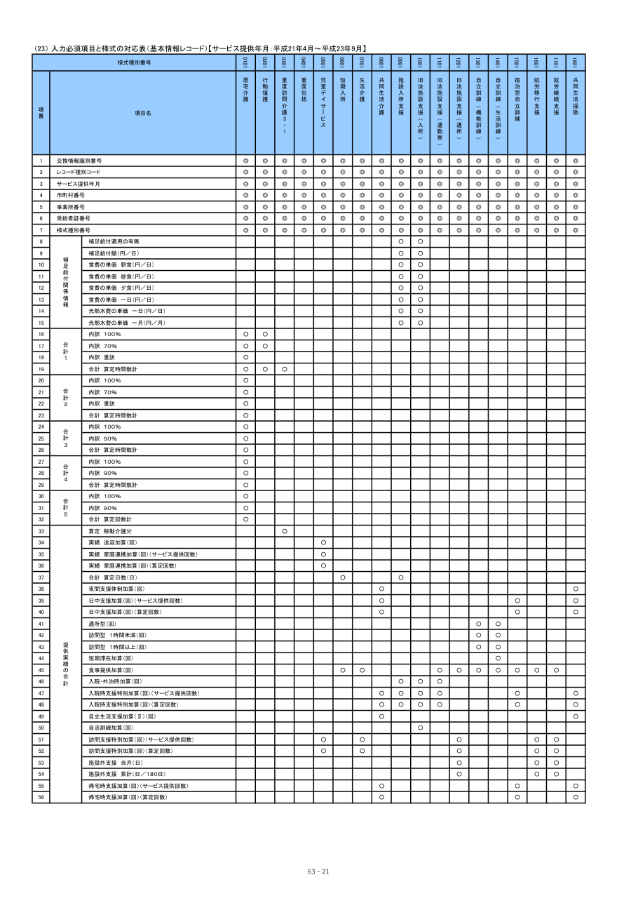
| 項番 | 項目名 | 属性 | 桁数 | 内容 | 必須 | 備考 | その他の列 |
|---|---|---|---|---|---|---|---|
| 1 | 交換情報識別番号 | 様式種別番号 > 0101:◎ 様式種別番号 > 0201:◎ 様式種別番号 > 0301:◎ 様式種別番号 > 0401:◎ 様式種別番号 > 0501:◎ 様式種別番号 > 0601:◎ 様式種別番号 > 0701:◎ 様式種別番号 > 0801:◎ 様式種別番号 > 0901:◎ 様式種別番号 > 1001:◎ 様式種別番号 > 1101:◎ 様式種別番号 > 1201:◎ 様式種別番号 > 1301:◎ 様式種別番号 > 1401:◎ 様式種別番号 > 1501:◎ 様式種別番号 > 1601:◎ 様式種別番号 > 1701:◎ 様式種別番号 > 1801:◎ | |||||
| 2 | レコード種別コード | 様式種別番号 > 0101:◎ 様式種別番号 > 0201:◎ 様式種別番号 > 0301:◎ 様式種別番号 > 0401:◎ 様式種別番号 > 0501:◎ 様式種別番号 > 0601:◎ 様式種別番号 > 0701:◎ 様式種別番号 > 0801:◎ 様式種別番号 > 0901:◎ 様式種別番号 > 1001:◎ 様式種別番号 > 1101:◎ 様式種別番号 > 1201:◎ 様式種別番号 > 1301:◎ 様式種別番号 > 1401:◎ 様式種別番号 > 1501:◎ 様式種別番号 > 1601:◎ 様式種別番号 > 1701:◎ 様式種別番号 > 1801:◎ | |||||
| 3 | サービス提供年月 | 様式種別番号 > 0101:◎ 様式種別番号 > 0201:◎ 様式種別番号 > 0301:◎ 様式種別番号 > 0401:◎ 様式種別番号 > 0501:◎ 様式種別番号 > 0601:◎ 様式種別番号 > 0701:◎ 様式種別番号 > 0801:◎ 様式種別番号 > 0901:◎ 様式種別番号 > 1001:◎ 様式種別番号 > 1101:◎ 様式種別番号 > 1201:◎ 様式種別番号 > 1301:◎ 様式種別番号 > 1401:◎ 様式種別番号 > 1501:◎ 様式種別番号 > 1601:◎ 様式種別番号 > 1701:◎ 様式種別番号 > 1801:◎ | |||||
| 4 | 市町村番号 | 様式種別番号 > 0101:◎ 様式種別番号 > 0201:◎ 様式種別番号 > 0301:◎ 様式種別番号 > 0401:◎ 様式種別番号 > 0501:◎ 様式種別番号 > 0601:◎ 様式種別番号 > 0701:◎ 様式種別番号 > 0801:◎ 様式種別番号 > 0901:◎ 様式種別番号 > 1001:◎ 様式種別番号 > 1101:◎ 様式種別番号 > 1201:◎ 様式種別番号 > 1301:◎ 様式種別番号 > 1401:◎ 様式種別番号 > 1501:◎ 様式種別番号 > 1601:◎ 様式種別番号 > 1701:◎ 様式種別番号 > 1801:◎ | |||||
| 5 | 事業所番号 | 様式種別番号 > 0101:◎ 様式種別番号 > 0201:◎ 様式種別番号 > 0301:◎ 様式種別番号 > 0401:◎ 様式種別番号 > 0501:◎ 様式種別番号 > 0601:◎ 様式種別番号 > 0701:◎ 様式種別番号 > 0801:◎ 様式種別番号 > 0901:◎ 様式種別番号 > 1001:◎ 様式種別番号 > 1101:◎ 様式種別番号 > 1201:◎ 様式種別番号 > 1301:◎ 様式種別番号 > 1401:◎ 様式種別番号 > 1501:◎ 様式種別番号 > 1601:◎ 様式種別番号 > 1701:◎ 様式種別番号 > 1801:◎ | |||||
| 6 | 受給者証番号 | 様式種別番号 > 0101:◎ 様式種別番号 > 0201:◎ 様式種別番号 > 0301:◎ 様式種別番号 > 0401:◎ 様式種別番号 > 0501:◎ 様式種別番号 > 0601:◎ 様式種別番号 > 0701:◎ 様式種別番号 > 0801:◎ 様式種別番号 > 0901:◎ 様式種別番号 > 1001:◎ 様式種別番号 > 1101:◎ 様式種別番号 > 1201:◎ 様式種別番号 > 1301:◎ 様式種別番号 > 1401:◎ 様式種別番号 > 1501:◎ 様式種別番号 > 1601:◎ 様式種別番号 > 1701:◎ 様式種別番号 > 1801:◎ | |||||
| 7 | 様式種別番号 | 様式種別番号 > 0101:◎ 様式種別番号 > 0201:◎ 様式種別番号 > 0301:◎ 様式種別番号 > 0401:◎ 様式種別番号 > 0501:◎ 様式種別番号 > 0601:◎ 様式種別番号 > 0701:◎ 様式種別番号 > 0801:◎ 様式種別番号 > 0901:◎ 様式種別番号 > 1001:◎ 様式種別番号 > 1101:◎ 様式種別番号 > 1201:◎ 様式種別番号 > 1301:◎ 様式種別番号 > 1401:◎ 様式種別番号 > 1501:◎ 様式種別番号 > 1601:◎ 様式種別番号 > 1701:◎ 様式種別番号 > 1801:◎ | |||||
| 8 | 補足給付関係情報 > 補足給付適用の有無 | 様式種別番号 > 0101:－ 様式種別番号 > 0201:－ 様式種別番号 > 0301:－ 様式種別番号 > 0401:－ 様式種別番号 > 0501:－ 様式種別番号 > 0601:－ 様式種別番号 > 0701:－ 様式種別番号 > 0801:－ 様式種別番号 > 0901:○ 様式種別番号 > 1001:○ 様式種別番号 > 1101:－ 様式種別番号 > 1201:－ 様式種別番号 > 1301:－ 様式種別番号 > 1401:－ 様式種別番号 > 1501:－ 様式種別番号 > 1601:－ 様式種別番号 > 1701:－ 様式種別番号 > 1801:－ | |||||
| 9 | 補足給付関係情報 > 補足給付額(円／日) | 様式種別番号 > 0101:－ 様式種別番号 > 0201:－ 様式種別番号 > 0301:－ 様式種別番号 > 0401:－ 様式種別番号 > 0501:－ 様式種別番号 > 0601:－ 様式種別番号 > 0701:－ 様式種別番号 > 0801:－ 様式種別番号 > 0901:○ 様式種別番号 > 1001:○ 様式種別番号 > 1101:－ 様式種別番号 > 1201:－ 様式種別番号 > 1301:－ 様式種別番号 > 1401:－ 様式種別番号 > 1501:－ 様式種別番号 > 1601:－ 様式種別番号 > 1701:－ 様式種別番号 > 1801:－ | |||||
| 10 | 補足給付関係情報 > 食費の単価 朝食(円／日) | 様式種別番号 > 0101:－ 様式種別番号 > 0201:－ 様式種別番号 > 0301:－ 様式種別番号 > 0401:－ 様式種別番号 > 0501:－ 様式種別番号 > 0601:－ 様式種別番号 > 0701:－ 様式種別番号 > 0801:－ 様式種別番号 > 0901:○ 様式種別番号 > 1001:○ 様式種別番号 > 1101:－ 様式種別番号 > 1201:－ 様式種別番号 > 1301:－ 様式種別番号 > 1401:－ 様式種別番号 > 1501:－ 様式種別番号 > 1601:－ 様式種別番号 > 1701:－ 様式種別番号 > 1801:－ | |||||
| 11 | 補足給付関係情報 > 食費の単価 昼食(円／日) | 様式種別番号 > 0101:－ 様式種別番号 > 0201:－ 様式種別番号 > 0301:－ 様式種別番号 > 0401:－ 様式種別番号 > 0501:－ 様式種別番号 > 0601:－ 様式種別番号 > 0701:－ 様式種別番号 > 0801:－ 様式種別番号 > 0901:○ 様式種別番号 > 1001:○ 様式種別番号 > 1101:－ 様式種別番号 > 1201:－ 様式種別番号 > 1301:－ 様式種別番号 > 1401:－ 様式種別番号 > 1501:－ 様式種別番号 > 1601:－ 様式種別番号 > 1701:－ 様式種別番号 > 1801:－ | |||||
| 12 | 補足給付関係情報 > 食費の単価 夕食(円／日) | 様式種別番号 > 0101:－ 様式種別番号 > 0201:－ 様式種別番号 > 0301:－ 様式種別番号 > 0401:－ 様式種別番号 > 0501:－ 様式種別番号 > 0601:－ 様式種別番号 > 0701:－ 様式種別番号 > 0801:－ 様式種別番号 > 0901:○ 様式種別番号 > 1001:○ 様式種別番号 > 1101:－ 様式種別番号 > 1201:－ 様式種別番号 > 1301:－ 様式種別番号 > 1401:－ 様式種別番号 > 1501:－ 様式種別番号 > 1601:－ 様式種別番号 > 1701:－ 様式種別番号 > 1801:－ | |||||
| 13 | 補足給付関係情報 > 食費の単価 一日(円／日) | 様式種別番号 > 0101:－ 様式種別番号 > 0201:－ 様式種別番号 > 0301:－ 様式種別番号 > 0401:－ 様式種別番号 > 0501:－ 様式種別番号 > 0601:－ 様式種別番号 > 0701:－ 様式種別番号 > 0801:－ 様式種別番号 > 0901:○ 様式種別番号 > 1001:○ 様式種別番号 > 1101:－ 様式種別番号 > 1201:－ 様式種別番号 > 1301:－ 様式種別番号 > 1401:－ 様式種別番号 > 1501:－ 様式種別番号 > 1601:－ 様式種別番号 > 1701:－ 様式種別番号 > 1801:－ | |||||
| 14 | 補足給付関係情報 > 光熱水費の単価 一日(円／日) | 様式種別番号 > 0101:－ 様式種別番号 > 0201:－ 様式種別番号 > 0301:－ 様式種別番号 > 0401:－ 様式種別番号 > 0501:－ 様式種別番号 > 0601:－ 様式種別番号 > 0701:－ 様式種別番号 > 0801:－ 様式種別番号 > 0901:○ 様式種別番号 > 1001:○ 様式種別番号 > 1101:－ 様式種別番号 > 1201:－ 様式種別番号 > 1301:－ 様式種別番号 > 1401:－ 様式種別番号 > 1501:－ 様式種別番号 > 1601:－ 様式種別番号 > 1701:－ 様式種別番号 > 1801:－ | |||||
| 15 | 補足給付関係情報 > 光熱水費の単価 一月(円／月) | 様式種別番号 > 0101:－ 様式種別番号 > 0201:－ 様式種別番号 > 0301:－ 様式種別番号 > 0401:－ 様式種別番号 > 0501:－ 様式種別番号 > 0601:－ 様式種別番号 > 0701:－ 様式種別番号 > 0801:－ 様式種別番号 > 0901:○ 様式種別番号 > 1001:○ 様式種別番号 > 1101:－ 様式種別番号 > 1201:－ 様式種別番号 > 1301:－ 様式種別番号 > 1401:－ 様式種別番号 > 1501:－ 様式種別番号 > 1601:－ 様式種別番号 > 1701:－ 様式種別番号 > 1801:－ | |||||
| 16 | 合計１ > 内訳 100% | 様式種別番号 > 0101:○ 様式種別番号 > 0201:○ 様式種別番号 > 0301:－ 様式種別番号 > 0401:－ 様式種別番号 > 0501:－ 様式種別番号 > 0601:－ 様式種別番号 > 0701:－ 様式種別番号 > 0801:－ 様式種別番号 > 0901:－ 様式種別番号 > 1001:－ 様式種別番号 > 1101:－ 様式種別番号 > 1201:－ 様式種別番号 > 1301:－ 様式種別番号 > 1401:－ 様式種別番号 > 1501:－ 様式種別番号 > 1601:－ 様式種別番号 > 1701:－ 様式種別番号 > 1801:－ | |||||
| 17 | 合計１ > 内訳 70% | 様式種別番号 > 0101:○ 様式種別番号 > 0201:○ 様式種別番号 > 0301:－ 様式種別番号 > 0401:－ 様式種別番号 > 0501:－ 様式種別番号 > 0601:－ 様式種別番号 > 0701:－ 様式種別番号 > 0801:－ 様式種別番号 > 0901:－ 様式種別番号 > 1001:－ 様式種別番号 > 1101:－ 様式種別番号 > 1201:－ 様式種別番号 > 1301:－ 様式種別番号 > 1401:－ 様式種別番号 > 1501:－ 様式種別番号 > 1601:－ 様式種別番号 > 1701:－ 様式種別番号 > 1801:－ | |||||
| 18 | 合計１ > 内訳 重訪 | 様式種別番号 > 0101:○ 様式種別番号 > 0201:－ 様式種別番号 > 0301:－ 様式種別番号 > 0401:－ 様式種別番号 > 0501:－ 様式種別番号 > 0601:－ 様式種別番号 > 0701:－ 様式種別番号 > 0801:－ 様式種別番号 > 0901:－ 様式種別番号 > 1001:－ 様式種別番号 > 1101:－ 様式種別番号 > 1201:－ 様式種別番号 > 1301:－ 様式種別番号 > 1401:－ 様式種別番号 > 1501:－ 様式種別番号 > 1601:－ 様式種別番号 > 1701:－ 様式種別番号 > 1801:－ | |||||
| 19 | 合計１ > 合計 算定時間数計 | 様式種別番号 > 0101:○ 様式種別番号 > 0201:○ 様式種別番号 > 0301:○ 様式種別番号 > 0401:－ 様式種別番号 > 0501:－ 様式種別番号 > 0601:－ 様式種別番号 > 0701:－ 様式種別番号 > 0801:－ 様式種別番号 > 0901:－ 様式種別番号 > 1001:－ 様式種別番号 > 1101:－ 様式種別番号 > 1201:－ 様式種別番号 > 1301:－ 様式種別番号 > 1401:－ 様式種別番号 > 1501:－ 様式種別番号 > 1601:－ 様式種別番号 > 1701:－ 様式種別番号 > 1801:－ | |||||
| 20 | 合計２ > 内訳 100% | 様式種別番号 > 0101:○ 様式種別番号 > 0201:－ 様式種別番号 > 0301:－ 様式種別番号 > 0401:－ 様式種別番号 > 0501:－ 様式種別番号 > 0601:－ 様式種別番号 > 0701:－ 様式種別番号 > 0801:－ 様式種別番号 > 0901:－ 様式種別番号 > 1001:－ 様式種別番号 > 1101:－ 様式種別番号 > 1201:－ 様式種別番号 > 1301:－ 様式種別番号 > 1401:－ 様式種別番号 > 1501:－ 様式種別番号 > 1601:－ 様式種別番号 > 1701:－ 様式種別番号 > 1801:－ | |||||
| 21 | 合計２ > 内訳 70% | 様式種別番号 > 0101:○ 様式種別番号 > 0201:－ 様式種別番号 > 0301:－ 様式種別番号 > 0401:－ 様式種別番号 > 0501:－ 様式種別番号 > 0601:－ 様式種別番号 > 0701:－ 様式種別番号 > 0801:－ 様式種別番号 > 0901:－ 様式種別番号 > 1001:－ 様式種別番号 > 1101:－ 様式種別番号 > 1201:－ 様式種別番号 > 1301:－ 様式種別番号 > 1401:－ 様式種別番号 > 1501:－ 様式種別番号 > 1601:－ 様式種別番号 > 1701:－ 様式種別番号 > 1801:－ | |||||
| 22 | 合計２ > 内訳 重訪 | 様式種別番号 > 0101:○ 様式種別番号 > 0201:－ 様式種別番号 > 0301:－ 様式種別番号 > 0401:－ 様式種別番号 > 0501:－ 様式種別番号 > 0601:－ 様式種別番号 > 0701:－ 様式種別番号 > 0801:－ 様式種別番号 > 0901:－ 様式種別番号 > 1001:－ 様式種別番号 > 1101:－ 様式種別番号 > 1201:－ 様式種別番号 > 1301:－ 様式種別番号 > 1401:－ 様式種別番号 > 1501:－ 様式種別番号 > 1601:－ 様式種別番号 > 1701:－ 様式種別番号 > 1801:－ | |||||
| 23 | 合計２ > 合計 算定時間数計 | 様式種別番号 > 0101:○ 様式種別番号 > 0201:－ 様式種別番号 > 0301:－ 様式種別番号 > 0401:－ 様式種別番号 > 0501:－ 様式種別番号 > 0601:－ 様式種別番号 > 0701:－ 様式種別番号 > 0801:－ 様式種別番号 > 0901:－ 様式種別番号 > 1001:－ 様式種別番号 > 1101:－ 様式種別番号 > 1201:－ 様式種別番号 > 1301:－ 様式種別番号 > 1401:－ 様式種別番号 > 1501:－ 様式種別番号 > 1601:－ 様式種別番号 > 1701:－ 様式種別番号 > 1801:－ | |||||
| 24 | 合計３ > 内訳 100% | 様式種別番号 > 0101:○ 様式種別番号 > 0201:－ 様式種別番号 > 0301:－ 様式種別番号 > 0401:－ 様式種別番号 > 0501:－ 様式種別番号 > 0601:－ 様式種別番号 > 0701:－ 様式種別番号 > 0801:－ 様式種別番号 > 0901:－ 様式種別番号 > 1001:－ 様式種別番号 > 1101:－ 様式種別番号 > 1201:－ 様式種別番号 > 1301:－ 様式種別番号 > 1401:－ 様式種別番号 > 1501:－ 様式種別番号 > 1601:－ 様式種別番号 > 1701:－ 様式種別番号 > 1801:－ | |||||
| 25 | 合計３ > 内訳 90% | 様式種別番号 > 0101:○ 様式種別番号 > 0201:－ 様式種別番号 > 0301:－ 様式種別番号 > 0401:－ 様式種別番号 > 0501:－ 様式種別番号 > 0601:－ 様式種別番号 > 0701:－ 様式種別番号 > 0801:－ 様式種別番号 > 0901:－ 様式種別番号 > 1001:－ 様式種別番号 > 1101:－ 様式種別番号 > 1201:－ 様式種別番号 > 1301:－ 様式種別番号 > 1401:－ 様式種別番号 > 1501:－ 様式種別番号 > 1601:－ 様式種別番号 > 1701:－ 様式種別番号 > 1801:－ | |||||
| 26 | 合計３ > 合計 算定時間数計 | 様式種別番号 > 0101:○ 様式種別番号 > 0201:－ 様式種別番号 > 0301:－ 様式種別番号 > 0401:－ 様式種別番号 > 0501:－ 様式種別番号 > 0601:－ 様式種別番号 > 0701:－ 様式種別番号 > 0801:－ 様式種別番号 > 0901:－ 様式種別番号 > 1001:－ 様式種別番号 > 1101:－ 様式種別番号 > 1201:－ 様式種別番号 > 1301:－ 様式種別番号 > 1401:－ 様式種別番号 > 1501:－ 様式種別番号 > 1601:－ 様式種別番号 > 1701:－ 様式種別番号 > 1801:－ | |||||
| 27 | 合計４ > 内訳 100% | 様式種別番号 > 0101:○ 様式種別番号 > 0201:－ 様式種別番号 > 0301:－ 様式種別番号 > 0401:－ 様式種別番号 > 0501:－ 様式種別番号 > 0601:－ 様式種別番号 > 0701:－ 様式種別番号 > 0801:－ 様式種別番号 > 0901:－ 様式種別番号 > 1001:－ 様式種別番号 > 1101:－ 様式種別番号 > 1201:－ 様式種別番号 > 1301:－ 様式種別番号 > 1401:－ 様式種別番号 > 1501:－ 様式種別番号 > 1601:－ 様式種別番号 > 1701:－ 様式種別番号 > 1801:－ | |||||
| 28 | 合計４ > 内訳 90% | 様式種別番号 > 0101:○ 様式種別番号 > 0201:－ 様式種別番号 > 0301:－ 様式種別番号 > 0401:－ 様式種別番号 > 0501:－ 様式種別番号 > 0601:－ 様式種別番号 > 0701:－ 様式種別番号 > 0801:－ 様式種別番号 > 0901:－ 様式種別番号 > 1001:－ 様式種別番号 > 1101:－ 様式種別番号 > 1201:－ 様式種別番号 > 1301:－ 様式種別番号 > 1401:－ 様式種別番号 > 1501:－ 様式種別番号 > 1601:－ 様式種別番号 > 1701:－ 様式種別番号 > 1801:－ | |||||
| 29 | 合計４ > 合計 算定時間数計 | 様式種別番号 > 0101:○ 様式種別番号 > 0201:－ 様式種別番号 > 0301:－ 様式種別番号 > 0401:－ 様式種別番号 > 0501:－ 様式種別番号 > 0601:－ 様式種別番号 > 0701:－ 様式種別番号 > 0801:－ 様式種別番号 > 0901:－ 様式種別番号 > 1001:－ 様式種別番号 > 1101:－ 様式種別番号 > 1201:－ 様式種別番号 > 1301:－ 様式種別番号 > 1401:－ 様式種別番号 > 1501:－ 様式種別番号 > 1601:－ 様式種別番号 > 1701:－ 様式種別番号 > 1801:－ | |||||
| 30 | 合計５ > 内訳 100% | 様式種別番号 > 0101:○ 様式種別番号 > 0201:－ 様式種別番号 > 0301:－ 様式種別番号 > 0401:－ 様式種別番号 > 0501:－ 様式種別番号 > 0601:－ 様式種別番号 > 0701:－ 様式種別番号 > 0801:－ 様式種別番号 > 0901:－ 様式種別番号 > 1001:－ 様式種別番号 > 1101:－ 様式種別番号 > 1201:－ 様式種別番号 > 1301:－ 様式種別番号 > 1401:－ 様式種別番号 > 1501:－ 様式種別番号 > 1601:－ 様式種別番号 > 1701:－ 様式種別番号 > 1801:－ | |||||
| 31 | 合計５ > 内訳 90% | 様式種別番号 > 0101:○ 様式種別番号 > 0201:－ 様式種別番号 > 0301:－ 様式種別番号 > 0401:－ 様式種別番号 > 0501:－ 様式種別番号 > 0601:－ 様式種別番号 > 0701:－ 様式種別番号 > 0801:－ 様式種別番号 > 0901:－ 様式種別番号 > 1001:－ 様式種別番号 > 1101:－ 様式種別番号 > 1201:－ 様式種別番号 > 1301:－ 様式種別番号 > 1401:－ 様式種別番号 > 1501:－ 様式種別番号 > 1601:－ 様式種別番号 > 1701:－ 様式種別番号 > 1801:－ | |||||
| 32 | 合計５ > 合計 算定回数計 | 様式種別番号 > 0101:○ 様式種別番号 > 0201:－ 様式種別番号 > 0301:－ 様式種別番号 > 0401:－ 様式種別番号 > 0501:－ 様式種別番号 > 0601:－ 様式種別番号 > 0701:－ 様式種別番号 > 0801:－ 様式種別番号 > 0901:－ 様式種別番号 > 1001:－ 様式種別番号 > 1101:－ 様式種別番号 > 1201:－ 様式種別番号 > 1301:－ 様式種別番号 > 1401:－ 様式種別番号 > 1501:－ 様式種別番号 > 1601:－ 様式種別番号 > 1701:－ 様式種別番号 > 1801:－ | |||||
| 33 | 提供実績の合計 > 算定 移動介護分 | 様式種別番号 > 0101:－ 様式種別番号 > 0201:－ 様式種別番号 > 0301:○ 様式種別番号 > 0401:－ 様式種別番号 > 0501:－ 様式種別番号 > 0601:－ 様式種別番号 > 0701:－ 様式種別番号 > 0801:－ 様式種別番号 > 0901:－ 様式種別番号 > 1001:－ 様式種別番号 > 1101:－ 様式種別番号 > 1201:－ 様式種別番号 > 1301:－ 様式種別番号 > 1401:－ 様式種別番号 > 1501:－ 様式種別番号 > 1601:－ 様式種別番号 > 1701:－ 様式種別番号 > 1801:－ | |||||
| 34 | 提供実績の合計 > 実績 送迎加算(回) | 様式種別番号 > 0101:－ 様式種別番号 > 0201:－ 様式種別番号 > 0301:－ 様式種別番号 > 0401:－ 様式種別番号 > 0501:○ 様式種別番号 > 0601:－ 様式種別番号 > 0701:－ 様式種別番号 > 0801:－ 様式種別番号 > 0901:－ 様式種別番号 > 1001:－ 様式種別番号 > 1101:－ 様式種別番号 > 1201:－ 様式種別番号 > 1301:－ 様式種別番号 > 1401:－ 様式種別番号 > 1501:－ 様式種別番号 > 1601:－ 様式種別番号 > 1701:－ 様式種別番号 > 1801:－ | |||||
| 35 | 提供実績の合計 > 実績 家庭連携加算(回)(サービス提供回数) | 様式種別番号 > 0101:－ 様式種別番号 > 0201:－ 様式種別番号 > 0301:－ 様式種別番号 > 0401:－ 様式種別番号 > 0501:○ 様式種別番号 > 0601:－ 様式種別番号 > 0701:－ 様式種別番号 > 0801:－ 様式種別番号 > 0901:－ 様式種別番号 > 1001:－ 様式種別番号 > 1101:－ 様式種別番号 > 1201:－ 様式種別番号 > 1301:－ 様式種別番号 > 1401:－ 様式種別番号 > 1501:－ 様式種別番号 > 1601:－ 様式種別番号 > 1701:－ 様式種別番号 > 1801:－ | |||||
| 36 | 提供実績の合計 > 実績 家庭連携加算(回)(算定回数) | 様式種別番号 > 0101:－ 様式種別番号 > 0201:－ 様式種別番号 > 0301:－ 様式種別番号 > 0401:－ 様式種別番号 > 0501:○ 様式種別番号 > 0601:－ 様式種別番号 > 0701:－ 様式種別番号 > 0801:－ 様式種別番号 > 0901:－ 様式種別番号 > 1001:－ 様式種別番号 > 1101:－ 様式種別番号 > 1201:－ 様式種別番号 > 1301:－ 様式種別番号 > 1401:－ 様式種別番号 > 1501:－ 様式種別番号 > 1601:－ 様式種別番号 > 1701:－ 様式種別番号 > 1801:－ | |||||
| 37 | 提供実績の合計 > 合計 算定日数(日) | 様式種別番号 > 0101:－ 様式種別番号 > 0201:－ 様式種別番号 > 0301:－ 様式種別番号 > 0401:－ 様式種別番号 > 0501:－ 様式種別番号 > 0601:○ 様式種別番号 > 0701:－ 様式種別番号 > 0801:－ 様式種別番号 > 0901:○ 様式種別番号 > 1001:－ 様式種別番号 > 1101:－ 様式種別番号 > 1201:－ 様式種別番号 > 1301:－ 様式種別番号 > 1401:－ 様式種別番号 > 1501:－ 様式種別番号 > 1601:－ 様式種別番号 > 1701:－ 様式種別番号 > 1801:－ | |||||
| 38 | 提供実績の合計 > 夜間支援体制加算(回) | 様式種別番号 > 0101:－ 様式種別番号 > 0201:－ 様式種別番号 > 0301:－ 様式種別番号 > 0401:－ 様式種別番号 > 0501:－ 様式種別番号 > 0601:－ 様式種別番号 > 0701:－ 様式種別番号 > 0801:○ 様式種別番号 > 0901:－ 様式種別番号 > 1001:－ 様式種別番号 > 1101:－ 様式種別番号 > 1201:－ 様式種別番号 > 1301:－ 様式種別番号 > 1401:－ 様式種別番号 > 1501:－ 様式種別番号 > 1601:－ 様式種別番号 > 1701:－ 様式種別番号 > 1801:○ | |||||
| 39 | 提供実績の合計 > 日中支援加算(回)(サービス提供回数) | 様式種別番号 > 0101:－ 様式種別番号 > 0201:－ 様式種別番号 > 0301:－ 様式種別番号 > 0401:－ 様式種別番号 > 0501:－ 様式種別番号 > 0601:－ 様式種別番号 > 0701:－ 様式種別番号 > 0801:○ 様式種別番号 > 0901:－ 様式種別番号 > 1001:－ 様式種別番号 > 1101:－ 様式種別番号 > 1201:－ 様式種別番号 > 1301:－ 様式種別番号 > 1401:－ 様式種別番号 > 1501:○ 様式種別番号 > 1601:－ 様式種別番号 > 1701:－ 様式種別番号 > 1801:○ | |||||
| 40 | 提供実績の合計 > 日中支援加算(回)(算定回数) | 様式種別番号 > 0101:－ 様式種別番号 > 0201:－ 様式種別番号 > 0301:－ 様式種別番号 > 0401:－ 様式種別番号 > 0501:－ 様式種別番号 > 0601:－ 様式種別番号 > 0701:－ 様式種別番号 > 0801:○ 様式種別番号 > 0901:－ 様式種別番号 > 1001:－ 様式種別番号 > 1101:－ 様式種別番号 > 1201:－ 様式種別番号 > 1301:－ 様式種別番号 > 1401:－ 様式種別番号 > 1501:○ 様式種別番号 > 1601:－ 様式種別番号 > 1701:－ 様式種別番号 > 1801:○ | |||||
| 41 | 提供実績の合計 > 通所型(回) | 様式種別番号 > 0101:－ 様式種別番号 > 0201:－ 様式種別番号 > 0301:－ 様式種別番号 > 0401:－ 様式種別番号 > 0501:－ 様式種別番号 > 0601:－ 様式種別番号 > 0701:－ 様式種別番号 > 0801:－ 様式種別番号 > 0901:－ 様式種別番号 > 1001:－ 様式種別番号 > 1101:－ 様式種別番号 > 1201:－ 様式種別番号 > 1301:○ 様式種別番号 > 1401:○ 様式種別番号 > 1501:－ 様式種別番号 > 1601:－ 様式種別番号 > 1701:－ 様式種別番号 > 1801:－ | |||||
| 42 | 提供実績の合計 > 訪問型 1時間未満(回) | 様式種別番号 > 0101:－ 様式種別番号 > 0201:－ 様式種別番号 > 0301:－ 様式種別番号 > 0401:－ 様式種別番号 > 0501:－ 様式種別番号 > 0601:－ 様式種別番号 > 0701:－ 様式種別番号 > 0801:－ 様式種別番号 > 0901:－ 様式種別番号 > 1001:－ 様式種別番号 > 1101:－ 様式種別番号 > 1201:－ 様式種別番号 > 1301:○ 様式種別番号 > 1401:○ 様式種別番号 > 1501:－ 様式種別番号 > 1601:－ 様式種別番号 > 1701:－ 様式種別番号 > 1801:－ | |||||
| 43 | 提供実績の合計 > 訪問型 1時間以上(回) | 様式種別番号 > 0101:－ 様式種別番号 > 0201:－ 様式種別番号 > 0301:－ 様式種別番号 > 0401:－ 様式種別番号 > 0501:－ 様式種別番号 > 0601:－ 様式種別番号 > 0701:－ 様式種別番号 > 0801:－ 様式種別番号 > 0901:－ 様式種別番号 > 1001:－ 様式種別番号 > 1101:－ 様式種別番号 > 1201:－ 様式種別番号 > 1301:○ 様式種別番号 > 1401:○ 様式種別番号 > 1501:－ 様式種別番号 > 1601:－ 様式種別番号 > 1701:－ 様式種別番号 > 1801:－ | |||||
| 44 | 提供実績の合計 > 短期滞在加算(回) | 様式種別番号 > 0101:－ 様式種別番号 > 0201:－ 様式種別番号 > 0301:－ 様式種別番号 > 0401:－ 様式種別番号 > 0501:－ 様式種別番号 > 0601:－ 様式種別番号 > 0701:－ 様式種別番号 > 0801:－ 様式種別番号 > 0901:－ 様式種別番号 > 1001:－ 様式種別番号 > 1101:－ 様式種別番号 > 1201:－ 様式種別番号 > 1301:－ 様式種別番号 > 1401:○ 様式種別番号 > 1501:－ 様式種別番号 > 1601:－ 様式種別番号 > 1701:－ 様式種別番号 > 1801:－ | |||||
| 45 | 提供実績の合計 > 食事提供加算(回) | 様式種別番号 > 0101:－ 様式種別番号 > 0201:－ 様式種別番号 > 0301:－ 様式種別番号 > 0401:－ 様式種別番号 > 0501:－ 様式種別番号 > 0601:○ 様式種別番号 > 0701:○ 様式種別番号 > 0801:－ 様式種別番号 > 0901:－ 様式種別番号 > 1001:－ 様式種別番号 > 1101:○ 様式種別番号 > 1201:○ 様式種別番号 > 1301:○ 様式種別番号 > 1401:○ 様式種別番号 > 1501:○ 様式種別番号 > 1601:○ 様式種別番号 > 1701:○ 様式種別番号 > 1801:－ | |||||
| 46 | 提供実績の合計 > 入院・外泊時加算(回) | 様式種別番号 > 0101:－ 様式種別番号 > 0201:－ 様式種別番号 > 0301:－ 様式種別番号 > 0401:－ 様式種別番号 > 0501:－ 様式種別番号 > 0601:－ 様式種別番号 > 0701:－ 様式種別番号 > 0801:－ 様式種別番号 > 0901:○ 様式種別番号 > 1001:○ 様式種別番号 > 1101:○ 様式種別番号 > 1201:－ 様式種別番号 > 1301:－ 様式種別番号 > 1401:－ 様式種別番号 > 1501:－ 様式種別番号 > 1601:－ 様式種別番号 > 1701:－ 様式種別番号 > 1801:－ | |||||
| 47 | 提供実績の合計 > 入院時支援特別加算(回)(サービス提供回数) | 様式種別番号 > 0101:－ 様式種別番号 > 0201:－ 様式種別番号 > 0301:－ 様式種別番号 > 0401:－ 様式種別番号 > 0501:－ 様式種別番号 > 0601:－ 様式種別番号 > 0701:－ 様式種別番号 > 0801:○ 様式種別番号 > 0901:○ 様式種別番号 > 1001:○ 様式種別番号 > 1101:○ 様式種別番号 > 1201:－ 様式種別番号 > 1301:－ 様式種別番号 > 1401:－ 様式種別番号 > 1501:○ 様式種別番号 > 1601:－ 様式種別番号 > 1701:－ 様式種別番号 > 1801:○ | |||||
| 48 | 提供実績の合計 > 入院時支援特別加算(回)(算定回数) | 様式種別番号 > 0101:－ 様式種別番号 > 0201:－ 様式種別番号 > 0301:－ 様式種別番号 > 0401:－ 様式種別番号 > 0501:－ 様式種別番号 > 0601:－ 様式種別番号 > 0701:－ 様式種別番号 > 0801:○ 様式種別番号 > 0901:○ 様式種別番号 > 1001:○ 様式種別番号 > 1101:○ 様式種別番号 > 1201:－ 様式種別番号 > 1301:－ 様式種別番号 > 1401:－ 様式種別番号 > 1501:○ 様式種別番号 > 1601:－ 様式種別番号 > 1701:－ 様式種別番号 > 1801:○ | |||||
| 49 | 提供実績の合計 > 自立生活支援加算(Ⅱ)(回) | 様式種別番号 > 0101:－ 様式種別番号 > 0201:－ 様式種別番号 > 0301:－ 様式種別番号 > 0401:－ 様式種別番号 > 0501:－ 様式種別番号 > 0601:－ 様式種別番号 > 0701:－ 様式種別番号 > 0801:○ 様式種別番号 > 0901:－ 様式種別番号 > 1001:－ 様式種別番号 > 1101:－ 様式種別番号 > 1201:－ 様式種別番号 > 1301:－ 様式種別番号 > 1401:－ 様式種別番号 > 1501:－ 様式種別番号 > 1601:－ 様式種別番号 > 1701:－ 様式種別番号 > 1801:○ | |||||
| 50 | 提供実績の合計 > 自活訓練加算(回) | 様式種別番号 > 0101:－ 様式種別番号 > 0201:－ 様式種別番号 > 0301:－ 様式種別番号 > 0401:－ 様式種別番号 > 0501:－ 様式種別番号 > 0601:－ 様式種別番号 > 0701:－ 様式種別番号 > 0801:－ 様式種別番号 > 0901:－ 様式種別番号 > 1001:○ 様式種別番号 > 1101:－ 様式種別番号 > 1201:－ 様式種別番号 > 1301:－ 様式種別番号 > 1401:－ 様式種別番号 > 1501:－ 様式種別番号 > 1601:－ 様式種別番号 > 1701:－ 様式種別番号 > 1801:－ | |||||
| 51 | 提供実績の合計 > 訪問支援特別加算(回)(サービス提供回数) | 様式種別番号 > 0101:－ 様式種別番号 > 0201:－ 様式種別番号 > 0301:－ 様式種別番号 > 0401:－ 様式種別番号 > 0501:○ 様式種別番号 > 0601:－ 様式種別番号 > 0701:○ 様式種別番号 > 0801:－ 様式種別番号 > 0901:－ 様式種別番号 > 1001:－ 様式種別番号 > 1101:－ 様式種別番号 > 1201:○ 様式種別番号 > 1301:－ 様式種別番号 > 1401:－ 様式種別番号 > 1501:－ 様式種別番号 > 1601:○ 様式種別番号 > 1701:○ 様式種別番号 > 1801:－ | |||||
| 52 | 提供実績の合計 > 訪問支援特別加算(回)(算定回数) | 様式種別番号 > 0101:－ 様式種別番号 > 0201:－ 様式種別番号 > 0301:－ 様式種別番号 > 0401:－ 様式種別番号 > 0501:○ 様式種別番号 > 0601:－ 様式種別番号 > 0701:○ 様式種別番号 > 0801:－ 様式種別番号 > 0901:－ 様式種別番号 > 1001:－ 様式種別番号 > 1101:－ 様式種別番号 > 1201:○ 様式種別番号 > 1301:－ 様式種別番号 > 1401:－ 様式種別番号 > 1501:－ 様式種別番号 > 1601:○ 様式種別番号 > 1701:○ 様式種別番号 > 1801:－ | |||||
| 53 | 提供実績の合計 > 施設外支援 当月(日) | 様式種別番号 > 0101:－ 様式種別番号 > 0201:－ 様式種別番号 > 0301:－ 様式種別番号 > 0401:－ 様式種別番号 > 0501:－ 様式種別番号 > 0601:－ 様式種別番号 > 0701:－ 様式種別番号 > 0801:－ 様式種別番号 > 0901:－ 様式種別番号 > 1001:－ 様式種別番号 > 1101:－ 様式種別番号 > 1201:○ 様式種別番号 > 1301:－ 様式種別番号 > 1401:－ 様式種別番号 > 1501:－ 様式種別番号 > 1601:○ 様式種別番号 > 1701:○ 様式種別番号 > 1801:－ | |||||
| 54 | 提供実績の合計 > 施設外支援 累計(日／180日) | 様式種別番号 > 0101:－ 様式種別番号 > 0201:－ 様式種別番号 > 0301:－ 様式種別番号 > 0401:－ 様式種別番号 > 0501:－ 様式種別番号 > 0601:－ 様式種別番号 > 0701:－ 様式種別番号 > 0801:－ 様式種別番号 > 0901:－ 様式種別番号 > 1001:－ 様式種別番号 > 1101:－ 様式種別番号 > 1201:○ 様式種別番号 > 1301:－ 様式種別番号 > 1401:－ 様式種別番号 > 1501:－ 様式種別番号 > 1601:○ 様式種別番号 > 1701:○ 様式種別番号 > 1801:－ | |||||
| 55 | 提供実績の合計 > 帰宅時支援加算(回)(サービス提供回数) | 様式種別番号 > 0101:－ 様式種別番号 > 0201:－ 様式種別番号 > 0301:－ 様式種別番号 > 0401:－ 様式種別番号 > 0501:－ 様式種別番号 > 0601:－ 様式種別番号 > 0701:－ 様式種別番号 > 0801:○ 様式種別番号 > 0901:－ 様式種別番号 > 1001:－ 様式種別番号 > 1101:－ 様式種別番号 > 1201:－ 様式種別番号 > 1301:－ 様式種別番号 > 1401:－ 様式種別番号 > 1501:○ 様式種別番号 > 1601:－ 様式種別番号 > 1701:－ 様式種別番号 > 1801:○ | |||||
| 56 | 提供実績の合計 > 帰宅時支援加算(回)(算定回数) | 様式種別番号 > 0101:－ 様式種別番号 > 0201:－ 様式種別番号 > 0301:－ 様式種別番号 > 0401:－ 様式種別番号 > 0501:－ 様式種別番号 > 0601:－ 様式種別番号 > 0701:－ 様式種別番号 > 0801:○ 様式種別番号 > 0901:－ 様式種別番号 > 1001:－ 様式種別番号 > 1101:－ 様式種別番号 > 1201:－ 様式種別番号 > 1301:－ 様式種別番号 > 1401:－ 様式種別番号 > 1501:○ 様式種別番号 > 1601:－ 様式種別番号 > 1701:－ 様式種別番号 > 1801:○ |
| 項番 | 項目名 | 属性 | 桁数 | 内容 | 必須 | 備考 | その他の列 |
|---|---|---|---|---|---|---|---|
| 1 | 交換情報識別番号 | 0101:◎ 0201:◎ 0301:◎ 0401:◎ 0501:◎ 0601:◎ 0701:◎ 0801:◎ 0901:◎ 1001:◎ 1101:◎ 1201:◎ 1301:◎ 1401:◎ 1501:◎ 1601:◎ 1701:◎ 1801:◎ | |||||
| 2 | レコード種別コード | 0101:◎ 0201:◎ 0301:◎ 0401:◎ 0501:◎ 0601:◎ 0701:◎ 0801:◎ 0901:◎ 1001:◎ 1101:◎ 1201:◎ 1301:◎ 1401:◎ 1501:◎ 1601:◎ 1701:◎ 1801:◎ | |||||
| 3 | サービス提供年月 | 0101:◎ 0201:◎ 0301:◎ 0401:◎ 0501:◎ 0601:◎ 0701:◎ 0801:◎ 0901:◎ 1001:◎ 1101:◎ 1201:◎ 1301:◎ 1401:◎ 1501:◎ 1601:◎ 1701:◎ 1801:◎ | |||||
| 4 | 市町村番号 | 0101:◎ 0201:◎ 0301:◎ 0401:◎ 0501:◎ 0601:◎ 0701:◎ 0801:◎ 0901:◎ 1001:◎ 1101:◎ 1201:◎ 1301:◎ 1401:◎ 1501:◎ 1601:◎ 1701:◎ 1801:◎ | |||||
| 5 | 事業所番号 | 0101:◎ 0201:◎ 0301:◎ 0401:◎ 0501:◎ 0601:◎ 0701:◎ 0801:◎ 0901:◎ 1001:◎ 1101:◎ 1201:◎ 1301:◎ 1401:◎ 1501:◎ 1601:◎ 1701:◎ 1801:◎ | |||||
| 6 | 受給者証番号 | 0101:◎ 0201:◎ 0301:◎ 0401:◎ 0501:◎ 0601:◎ 0701:◎ 0801:◎ 0901:◎ 1001:◎ 1101:◎ 1201:◎ 1301:◎ 1401:◎ 1501:◎ 1601:◎ 1701:◎ 1801:◎ | |||||
| 7 | 様式種別番号 | 0101:◎ 0201:◎ 0301:◎ 0401:◎ 0501:◎ 0601:◎ 0701:◎ 0801:◎ 0901:◎ 1001:◎ 1101:◎ 1201:◎ 1301:◎ 1401:◎ 1501:◎ 1601:◎ 1701:◎ 1801:◎ | |||||
| 8 | 補足給付関係情報 > 補足給付適用の有無 | 0101:－ 0201:－ 0301:－ 0401:－ 0501:－ 0601:－ 0701:－ 0801:－ 0901:○ 1001:○ 1101:－ 1201:－ 1301:－ 1401:－ 1501:－ 1601:－ 1701:－ 1801:－ | |||||
| 9 | 補足給付関係情報 > 補足給付額(円／日) | 0101:－ 0201:－ 0301:－ 0401:－ 0501:－ 0601:－ 0701:－ 0801:－ 0901:○ 1001:○ 1101:－ 1201:－ 1301:－ 1401:－ 1501:－ 1601:－ 1701:－ 1801:－ | |||||
| 10 | 補足給付関係情報 > 食費の単価 朝食(円／日) | 0101:－ 0201:－ 0301:－ 0401:－ 0501:－ 0601:－ 0701:－ 0801:－ 0901:○ 1001:○ 1101:－ 1201:－ 1301:－ 1401:－ 1501:－ 1601:－ 1701:－ 1801:－ | |||||
| 11 | 補足給付関係情報 > 食費の単価 昼食(円／日) | 0101:－ 0201:－ 0301:－ 0401:－ 0501:－ 0601:－ 0701:－ 0801:－ 0901:○ 1001:○ 1101:－ 1201:－ 1301:－ 1401:－ 1501:－ 1601:－ 1701:－ 1801:－ | |||||
| 12 | 補足給付関係情報 > 食費の単価 夕食(円／日) | 0101:－ 0201:－ 0301:－ 0401:－ 0501:－ 0601:－ 0701:－ 0801:－ 0901:○ 1001:○ 1101:－ 1201:－ 1301:－ 1401:－ 1501:－ 1601:－ 1701:－ 1801:－ | |||||
| 13 | 補足給付関係情報 > 食費の単価 一日(円／日) | 0101:－ 0201:－ 0301:－ 0401:－ 0501:－ 0601:－ 0701:－ 0801:－ 0901:○ 1001:○ 1101:－ 1201:－ 1301:－ 1401:－ 1501:－ 1601:－ 1701:－ 1801:－ | |||||
| 14 | 補足給付関係情報 > 光熱水費の単価 一日(円／日) | 0101:－ 0201:－ 0301:－ 0401:－ 0501:－ 0601:－ 0701:－ 0801:－ 0901:○ 1001:○ 1101:－ 1201:－ 1301:－ 1401:－ 1501:－ 1601:－ 1701:－ 1801:－ | |||||
| 15 | 補足給付関係情報 > 光熱水費の単価 一月(円／月) | 0101:－ 0201:－ 0301:－ 0401:－ 0501:－ 0601:－ 0701:－ 0801:－ 0901:○ 1001:○ 1101:－ 1201:－ 1301:－ 1401:－ 1501:－ 1601:－ 1701:－ 1801:－ | |||||
| 16 | 合計1 > 内訳 100% | 0101:○ 0201:○ 0301:－ 0401:－ 0501:－ 0601:－ 0701:－ 0801:－ 0901:－ 1001:－ 1101:－ 1201:－ 1301:－ 1401:－ 1501:－ 1601:－ 1701:－ 1801:－ | |||||
| 17 | 合計1 > 内訳 70% | 0101:○ 0201:○ 0301:－ 0401:－ 0501:－ 0601:－ 0701:－ 0801:－ 0901:－ 1001:－ 1101:－ 1201:－ 1301:－ 1401:－ 1501:－ 1601:－ 1701:－ 1801:－ | |||||
| 18 | 合計1 > 内訳 重訪 | 0101:○ 0201:－ 0301:－ 0401:－ 0501:－ 0601:－ 0701:－ 0801:－ 0901:－ 1001:－ 1101:－ 1201:－ 1301:－ 1401:－ 1501:－ 1601:－ 1701:－ 1801:－ | |||||
| 19 | 合計1 > 合計 算定時間数計 | 0101:○ 0201:○ 0301:○ 0401:－ 0501:－ 0601:－ 0701:－ 0801:－ 0901:－ 1001:－ 1101:－ 1201:－ 1301:－ 1401:－ 1501:－ 1601:－ 1701:－ 1801:－ | |||||
| 20 | 合計2 > 内訳 100% | 0101:○ 0201:－ 0301:－ 0401:－ 0501:－ 0601:－ 0701:－ 0801:－ 0901:－ 1001:－ 1101:－ 1201:－ 1301:－ 1401:－ 1501:－ 1601:－ 1701:－ 1801:－ | |||||
| 21 | 合計2 > 内訳 70% | 0101:○ 0201:－ 0301:－ 0401:－ 0501:－ 0601:－ 0701:－ 0801:－ 0901:－ 1001:－ 1101:－ 1201:－ 1301:－ 1401:－ 1501:－ 1601:－ 1701:－ 1801:－ | |||||
| 22 | 合計2 > 内訳 重訪 | 0101:○ 0201:－ 0301:－ 0401:－ 0501:－ 0601:－ 0701:－ 0801:－ 0901:－ 1001:－ 1101:－ 1201:－ 1301:－ 1401:－ 1501:－ 1601:－ 1701:－ 1801:－ | |||||
| 23 | 合計2 > 合計 算定時間数計 | 0101:○ 0201:－ 0301:－ 0401:－ 0501:－ 0601:－ 0701:－ 0801:－ 0901:－ 1001:－ 1101:－ 1201:－ 1301:－ 1401:－ 1501:－ 1601:－ 1701:－ 1801:－ | |||||
| 24 | 合計3 > 内訳 100% | 0101:○ 0201:－ 0301:－ 0401:－ 0501:－ 0601:－ 0701:－ 0801:－ 0901:－ 1001:－ 1101:－ 1201:－ 1301:－ 1401:－ 1501:－ 1601:－ 1701:－ 1801:－ | |||||
| 25 | 合計3 > 内訳 90% | 0101:○ 0201:－ 0301:－ 0401:－ 0501:－ 0601:－ 0701:－ 0801:－ 0901:－ 1001:－ 1101:－ 1201:－ 1301:－ 1401:－ 1501:－ 1601:－ 1701:－ 1801:－ | |||||
| 26 | 合計3 > 合計 算定時間数計 | 0101:○ 0201:－ 0301:－ 0401:－ 0501:－ 0601:－ 0701:－ 0801:－ 0901:－ 1001:－ 1101:－ 1201:－ 1301:－ 1401:－ 1501:－ 1601:－ 1701:－ 1801:－ | |||||
| 27 | 合計4 > 内訳 100% | 0101:○ 0201:－ 0301:－ 0401:－ 0501:－ 0601:－ 0701:－ 0801:－ 0901:－ 1001:－ 1101:－ 1201:－ 1301:－ 1401:－ 1501:－ 1601:－ 1701:－ 1801:－ | |||||
| 28 | 合計4 > 内訳 90% | 0101:○ 0201:－ 0301:－ 0401:－ 0501:－ 0601:－ 0701:－ 0801:－ 0901:－ 1001:－ 1101:－ 1201:－ 1301:－ 1401:－ 1501:－ 1601:－ 1701:－ 1801:－ | |||||
| 29 | 合計4 > 合計 算定時間数計 | 0101:○ 0201:－ 0301:－ 0401:－ 0501:－ 0601:－ 0701:－ 0801:－ 0901:－ 1001:－ 1101:－ 1201:－ 1301:－ 1401:－ 1501:－ 1601:－ 1701:－ 1801:－ | |||||
| 30 | 合計5 > 内訳 100% | 0101:○ 0201:－ 0301:－ 0401:－ 0501:－ 0601:－ 0701:－ 0801:－ 0901:－ 1001:－ 1101:－ 1201:－ 1301:－ 1401:－ 1501:－ 1601:－ 1701:－ 1801:－ | |||||
| 31 | 合計5 > 内訳 90% | 0101:○ 0201:－ 0301:－ 0401:－ 0501:－ 0601:－ 0701:－ 0801:－ 0901:－ 1001:－ 1101:－ 1201:－ 1301:－ 1401:－ 1501:－ 1601:－ 1701:－ 1801:－ | |||||
| 32 | 合計5 > 合計 算定回数計 | 0101:○ 0201:－ 0301:－ 0401:－ 0501:－ 0601:－ 0701:－ 0801:－ 0901:－ 1001:－ 1101:－ 1201:－ 1301:－ 1401:－ 1501:－ 1601:－ 1701:－ 1801:－ | |||||
| 33 | 提供実績の合計 > 算定 移動介護分 | 0101:－ 0201:－ 0301:○ 0401:－ 0501:－ 0601:－ 0701:－ 0801:－ 0901:－ 1001:－ 1101:－ 1201:－ 1301:－ 1401:－ 1501:－ 1601:－ 1701:－ 1801:－ | |||||
| 34 | 提供実績の合計 > 実績 送迎加算(回) | 0101:－ 0201:－ 0301:－ 0401:－ 0501:○ 0601:－ 0701:－ 0801:－ 0901:－ 1001:－ 1101:－ 1201:－ 1301:－ 1401:－ 1501:－ 1601:－ 1701:－ 1801:－ | |||||
| 35 | 提供実績の合計 > 実績 家庭連携加算(回)(サービス提供回数) | 0101:－ 0201:－ 0301:－ 0401:－ 0501:○ 0601:－ 0701:－ 0801:－ 0901:－ 1001:－ 1101:－ 1201:－ 1301:－ 1401:－ 1501:－ 1601:－ 1701:－ 1801:－ | |||||
| 36 | 提供実績の合計 > 実績 家庭連携加算(回)(算定回数) | 0101:－ 0201:－ 0301:－ 0401:－ 0501:○ 0601:－ 0701:－ 0801:－ 0901:－ 1001:－ 1101:－ 1201:－ 1301:－ 1401:－ 1501:－ 1601:－ 1701:－ 1801:－ | |||||
| 37 | 提供実績の合計 > 合計 算定日数(日) | 0101:－ 0201:－ 0301:－ 0401:－ 0501:－ 0601:○ 0701:－ 0801:－ 0901:○ 1001:－ 1101:－ 1201:－ 1301:－ 1401:－ 1501:－ 1601:－ 1701:－ 1801:－ | |||||
| 38 | 提供実績の合計 > 夜間支援体制加算(回) | 0101:－ 0201:－ 0301:－ 0401:－ 0501:－ 0601:－ 0701:－ 0801:○ 0901:－ 1001:－ 1101:－ 1201:－ 1301:－ 1401:－ 1501:－ 1601:－ 1701:－ 1801:○ | |||||
| 39 | 提供実績の合計 > 日中支援加算(回)(サービス提供回数) | 0101:－ 0201:－ 0301:－ 0401:－ 0501:－ 0601:－ 0701:－ 0801:○ 0901:－ 1001:－ 1101:－ 1201:－ 1301:－ 1401:－ 1501:○ 1601:－ 1701:－ 1801:○ | |||||
| 40 | 提供実績の合計 > 日中支援加算(回)(算定回数) | 0101:－ 0201:－ 0301:－ 0401:－ 0501:－ 0601:－ 0701:－ 0801:○ 0901:－ 1001:－ 1101:－ 1201:－ 1301:－ 1401:－ 1501:○ 1601:－ 1701:－ 1801:○ | |||||
| 41 | 提供実績の合計 > 通所型(回) | 0101:－ 0201:－ 0301:－ 0401:－ 0501:－ 0601:－ 0701:－ 0801:－ 0901:－ 1001:－ 1101:－ 1201:－ 1301:○ 1401:○ 1501:－ 1601:－ 1701:－ 1801:－ | |||||
| 42 | 提供実績の合計 > 訪問型 1時間未満(回) | 0101:－ 0201:－ 0301:－ 0401:－ 0501:－ 0601:－ 0701:－ 0801:－ 0901:－ 1001:－ 1101:－ 1201:－ 1301:○ 1401:○ 1501:－ 1601:－ 1701:－ 1801:－ | |||||
| 43 | 提供実績の合計 > 訪問型 1時間以上(回) | 0101:－ 0201:－ 0301:－ 0401:－ 0501:－ 0601:－ 0701:－ 0801:－ 0901:－ 1001:－ 1101:－ 1201:－ 1301:○ 1401:○ 1501:－ 1601:－ 1701:－ 1801:－ | |||||
| 44 | 提供実績の合計 > 短期滞在加算(回) | 0101:－ 0201:－ 0301:－ 0401:－ 0501:－ 0601:－ 0701:－ 0801:－ 0901:－ 1001:－ 1101:－ 1201:－ 1301:－ 1401:○ 1501:－ 1601:－ 1701:－ 1801:－ | |||||
| 45 | 提供実績の合計 > 食事提供加算(回) | 0101:－ 0201:－ 0301:－ 0401:－ 0501:－ 0601:○ 0701:○ 0801:－ 0901:－ 1001:－ 1101:○ 1201:○ 1301:○ 1401:○ 1501:○ 1601:○ 1701:○ 1801:－ | |||||
| 46 | 提供実績の合計 > 入院･外泊時加算(回) | 0101:－ 0201:－ 0301:－ 0401:－ 0501:－ 0601:－ 0701:－ 0801:－ 0901:○ 1001:○ 1101:○ 1201:－ 1301:－ 1401:－ 1501:－ 1601:－ 1701:－ 1801:－ | |||||
| 47 | 提供実績の合計 > 入院時支援特別加算(回)(サービス提供回数) | 0101:－ 0201:－ 0301:－ 0401:－ 0501:－ 0601:－ 0701:－ 0801:○ 0901:○ 1001:○ 1101:○ 1201:－ 1301:－ 1401:－ 1501:○ 1601:－ 1701:－ 1801:○ | |||||
| 48 | 提供実績の合計 > 入院時支援特別加算(回)(算定回数) | 0101:－ 0201:－ 0301:－ 0401:－ 0501:－ 0601:－ 0701:－ 0801:○ 0901:○ 1001:○ 1101:○ 1201:－ 1301:－ 1401:－ 1501:○ 1601:－ 1701:－ 1801:○ | |||||
| 49 | 提供実績の合計 > 自立生活支援加算(Ⅱ)(回) | 0101:－ 0201:－ 0301:－ 0401:－ 0501:－ 0601:－ 0701:－ 0801:○ 0901:－ 1001:－ 1101:－ 1201:－ 1301:－ 1401:－ 1501:－ 1601:－ 1701:－ 1801:○ | |||||
| 50 | 提供実績の合計 > 自活訓練加算(回) | 0101:－ 0201:－ 0301:－ 0401:－ 0501:－ 0601:－ 0701:－ 0801:－ 0901:－ 1001:○ 1101:－ 1201:－ 1301:－ 1401:－ 1501:－ 1601:－ 1701:－ 1801:－ | |||||
| 51 | 提供実績の合計 > 訪問支援特別加算(回)(サービス提供回数) | 0101:－ 0201:－ 0301:－ 0401:－ 0501:○ 0601:－ 0701:○ 0801:－ 0901:－ 1001:－ 1101:－ 1201:○ 1301:－ 1401:－ 1501:－ 1601:○ 1701:○ 1801:－ | |||||
| 52 | 提供実績の合計 > 訪問支援特別加算(回)(算定回数) | 0101:－ 0201:－ 0301:－ 0401:－ 0501:○ 0601:－ 0701:○ 0801:－ 0901:－ 1001:－ 1101:－ 1201:○ 1301:－ 1401:－ 1501:－ 1601:○ 1701:○ 1801:－ | |||||
| 53 | 提供実績の合計 > 施設外支援 当月(日) | 0101:－ 0201:－ 0301:－ 0401:－ 0501:－ 0601:－ 0701:－ 0801:－ 0901:－ 1001:－ 1101:－ 1201:○ 1301:－ 1401:－ 1501:－ 1601:○ 1701:○ 1801:－ | |||||
| 54 | 提供実績の合計 > 施設外支援 累計(日／180日) | 0101:－ 0201:－ 0301:－ 0401:－ 0501:－ 0601:－ 0701:－ 0801:－ 0901:－ 1001:－ 1101:－ 1201:○ 1301:－ 1401:－ 1501:－ 1601:○ 1701:○ 1801:－ | |||||
| 55 | 提供実績の合計 > 帰宅時支援加算(回)(サービス提供回数) | 0101:－ 0201:－ 0301:－ 0401:－ 0501:－ 0601:－ 0701:－ 0801:○ 0901:－ 1001:－ 1101:－ 1201:－ 1301:－ 1401:－ 1501:○ 1601:－ 1701:－ 1801:○ | |||||
| 56 | 提供実績の合計 > 帰宅時支援加算(回)(算定回数) | 0101:－ 0201:－ 0301:－ 0401:－ 0501:－ 0601:－ 0701:－ 0801:○ 0901:－ 1001:－ 1101:－ 1201:－ 1301:－ 1401:－ 1501:○ 1601:－ 1701:－ 1801:○ |
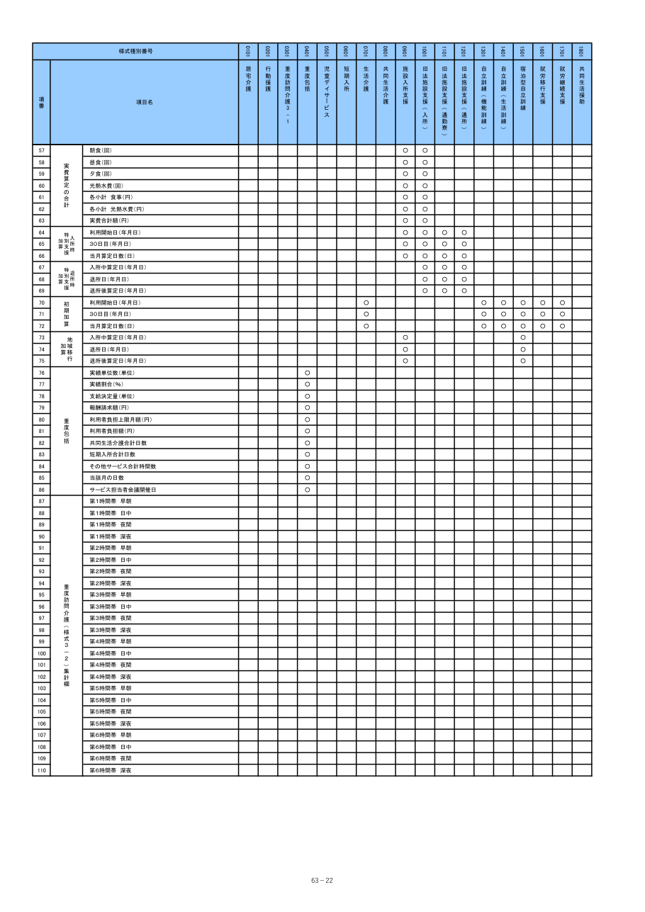
| 項番 | 項目名 | 属性 | 桁数 | 内容 | 必須 | 備考 | その他の列 |
|---|---|---|---|---|---|---|---|
| 57 | 実費算定の合計 > 朝食(回) | 様式種別番号 > 0101:－ 様式種別番号 > 0201:－ 様式種別番号 > 0301:－ 様式種別番号 > 0401:－ 様式種別番号 > 0501:－ 様式種別番号 > 0601:－ 様式種別番号 > 0701:－ 様式種別番号 > 0801:－ 様式種別番号 > 0901:○ 様式種別番号 > 1001:○ 様式種別番号 > 1101:－ 様式種別番号 > 1201:－ 様式種別番号 > 1301:－ 様式種別番号 > 1401:－ 様式種別番号 > 1501:－ 様式種別番号 > 1601:－ 様式種別番号 > 1701:－ 様式種別番号 > 1801:－ | |||||
| 58 | 実費算定の合計 > 昼食(回) | 様式種別番号 > 0101:－ 様式種別番号 > 0201:－ 様式種別番号 > 0301:－ 様式種別番号 > 0401:－ 様式種別番号 > 0501:－ 様式種別番号 > 0601:－ 様式種別番号 > 0701:－ 様式種別番号 > 0801:－ 様式種別番号 > 0901:○ 様式種別番号 > 1001:○ 様式種別番号 > 1101:－ 様式種別番号 > 1201:－ 様式種別番号 > 1301:－ 様式種別番号 > 1401:－ 様式種別番号 > 1501:－ 様式種別番号 > 1601:－ 様式種別番号 > 1701:－ 様式種別番号 > 1801:－ | |||||
| 59 | 実費算定の合計 > 夕食(回) | 様式種別番号 > 0101:－ 様式種別番号 > 0201:－ 様式種別番号 > 0301:－ 様式種別番号 > 0401:－ 様式種別番号 > 0501:－ 様式種別番号 > 0601:－ 様式種別番号 > 0701:－ 様式種別番号 > 0801:－ 様式種別番号 > 0901:○ 様式種別番号 > 1001:○ 様式種別番号 > 1101:－ 様式種別番号 > 1201:－ 様式種別番号 > 1301:－ 様式種別番号 > 1401:－ 様式種別番号 > 1501:－ 様式種別番号 > 1601:－ 様式種別番号 > 1701:－ 様式種別番号 > 1801:－ | |||||
| 60 | 実費算定の合計 > 光熱水費(回) | 様式種別番号 > 0101:－ 様式種別番号 > 0201:－ 様式種別番号 > 0301:－ 様式種別番号 > 0401:－ 様式種別番号 > 0501:－ 様式種別番号 > 0601:－ 様式種別番号 > 0701:－ 様式種別番号 > 0801:－ 様式種別番号 > 0901:○ 様式種別番号 > 1001:○ 様式種別番号 > 1101:－ 様式種別番号 > 1201:－ 様式種別番号 > 1301:－ 様式種別番号 > 1401:－ 様式種別番号 > 1501:－ 様式種別番号 > 1601:－ 様式種別番号 > 1701:－ 様式種別番号 > 1801:－ | |||||
| 61 | 実費算定の合計 > 各小計 食事(円) | 様式種別番号 > 0101:－ 様式種別番号 > 0201:－ 様式種別番号 > 0301:－ 様式種別番号 > 0401:－ 様式種別番号 > 0501:－ 様式種別番号 > 0601:－ 様式種別番号 > 0701:－ 様式種別番号 > 0801:－ 様式種別番号 > 0901:○ 様式種別番号 > 1001:○ 様式種別番号 > 1101:－ 様式種別番号 > 1201:－ 様式種別番号 > 1301:－ 様式種別番号 > 1401:－ 様式種別番号 > 1501:－ 様式種別番号 > 1601:－ 様式種別番号 > 1701:－ 様式種別番号 > 1801:－ | |||||
| 62 | 実費算定の合計 > 各小計 光熱水費(円) | 様式種別番号 > 0101:－ 様式種別番号 > 0201:－ 様式種別番号 > 0301:－ 様式種別番号 > 0401:－ 様式種別番号 > 0501:－ 様式種別番号 > 0601:－ 様式種別番号 > 0701:－ 様式種別番号 > 0801:－ 様式種別番号 > 0901:○ 様式種別番号 > 1001:○ 様式種別番号 > 1101:－ 様式種別番号 > 1201:－ 様式種別番号 > 1301:－ 様式種別番号 > 1401:－ 様式種別番号 > 1501:－ 様式種別番号 > 1601:－ 様式種別番号 > 1701:－ 様式種別番号 > 1801:－ | |||||
| 63 | 実費算定の合計 > 実費合計額(円) | 様式種別番号 > 0101:－ 様式種別番号 > 0201:－ 様式種別番号 > 0301:－ 様式種別番号 > 0401:－ 様式種別番号 > 0501:－ 様式種別番号 > 0601:－ 様式種別番号 > 0701:－ 様式種別番号 > 0801:－ 様式種別番号 > 0901:○ 様式種別番号 > 1001:○ 様式種別番号 > 1101:－ 様式種別番号 > 1201:－ 様式種別番号 > 1301:－ 様式種別番号 > 1401:－ 様式種別番号 > 1501:－ 様式種別番号 > 1601:－ 様式種別番号 > 1701:－ 様式種別番号 > 1801:－ | |||||
| 64 | 特別加算 入所時支援 > 利用開始日(年月日) | 様式種別番号 > 0101:－ 様式種別番号 > 0201:－ 様式種別番号 > 0301:－ 様式種別番号 > 0401:－ 様式種別番号 > 0501:－ 様式種別番号 > 0601:－ 様式種別番号 > 0701:－ 様式種別番号 > 0801:－ 様式種別番号 > 0901:○ 様式種別番号 > 1001:○ 様式種別番号 > 1101:○ 様式種別番号 > 1201:○ 様式種別番号 > 1301:－ 様式種別番号 > 1401:－ 様式種別番号 > 1501:－ 様式種別番号 > 1601:－ 様式種別番号 > 1701:－ 様式種別番号 > 1801:－ | |||||
| 65 | 特別加算 入所時支援 > 30日目(年月日) | 様式種別番号 > 0101:－ 様式種別番号 > 0201:－ 様式種別番号 > 0301:－ 様式種別番号 > 0401:－ 様式種別番号 > 0501:－ 様式種別番号 > 0601:－ 様式種別番号 > 0701:－ 様式種別番号 > 0801:－ 様式種別番号 > 0901:○ 様式種別番号 > 1001:○ 様式種別番号 > 1101:○ 様式種別番号 > 1201:○ 様式種別番号 > 1301:－ 様式種別番号 > 1401:－ 様式種別番号 > 1501:－ 様式種別番号 > 1601:－ 様式種別番号 > 1701:－ 様式種別番号 > 1801:－ | |||||
| 66 | 特別加算 入所時支援 > 当月算定日数(日) | 様式種別番号 > 0101:－ 様式種別番号 > 0201:－ 様式種別番号 > 0301:－ 様式種別番号 > 0401:－ 様式種別番号 > 0501:－ 様式種別番号 > 0601:－ 様式種別番号 > 0701:－ 様式種別番号 > 0801:－ 様式種別番号 > 0901:○ 様式種別番号 > 1001:○ 様式種別番号 > 1101:○ 様式種別番号 > 1201:○ 様式種別番号 > 1301:－ 様式種別番号 > 1401:－ 様式種別番号 > 1501:－ 様式種別番号 > 1601:－ 様式種別番号 > 1701:－ 様式種別番号 > 1801:－ | |||||
| 67 | 特別加算 退所時支援 > 入所中算定日(年月日) | 様式種別番号 > 0101:－ 様式種別番号 > 0201:－ 様式種別番号 > 0301:－ 様式種別番号 > 0401:－ 様式種別番号 > 0501:－ 様式種別番号 > 0601:－ 様式種別番号 > 0701:－ 様式種別番号 > 0801:－ 様式種別番号 > 0901:－ 様式種別番号 > 1001:○ 様式種別番号 > 1101:○ 様式種別番号 > 1201:○ 様式種別番号 > 1301:－ 様式種別番号 > 1401:－ 様式種別番号 > 1501:－ 様式種別番号 > 1601:－ 様式種別番号 > 1701:－ 様式種別番号 > 1801:－ | |||||
| 68 | 特別加算 退所時支援 > 退所日(年月日) | 様式種別番号 > 0101:－ 様式種別番号 > 0201:－ 様式種別番号 > 0301:－ 様式種別番号 > 0401:－ 様式種別番号 > 0501:－ 様式種別番号 > 0601:－ 様式種別番号 > 0701:－ 様式種別番号 > 0801:－ 様式種別番号 > 0901:－ 様式種別番号 > 1001:○ 様式種別番号 > 1101:○ 様式種別番号 > 1201:○ 様式種別番号 > 1301:－ 様式種別番号 > 1401:－ 様式種別番号 > 1501:－ 様式種別番号 > 1601:－ 様式種別番号 > 1701:－ 様式種別番号 > 1801:－ | |||||
| 69 | 特別加算 退所時支援 > 退所後算定日(年月日) | 様式種別番号 > 0101:－ 様式種別番号 > 0201:－ 様式種別番号 > 0301:－ 様式種別番号 > 0401:－ 様式種別番号 > 0501:－ 様式種別番号 > 0601:－ 様式種別番号 > 0701:－ 様式種別番号 > 0801:－ 様式種別番号 > 0901:－ 様式種別番号 > 1001:○ 様式種別番号 > 1101:○ 様式種別番号 > 1201:○ 様式種別番号 > 1301:－ 様式種別番号 > 1401:－ 様式種別番号 > 1501:－ 様式種別番号 > 1601:－ 様式種別番号 > 1701:－ 様式種別番号 > 1801:－ | |||||
| 70 | 初期加算 > 利用開始日(年月日) | 様式種別番号 > 0101:－ 様式種別番号 > 0201:－ 様式種別番号 > 0301:－ 様式種別番号 > 0401:－ 様式種別番号 > 0501:－ 様式種別番号 > 0601:－ 様式種別番号 > 0701:○ 様式種別番号 > 0801:－ 様式種別番号 > 0901:－ 様式種別番号 > 1001:－ 様式種別番号 > 1101:－ 様式種別番号 > 1201:－ 様式種別番号 > 1301:○ 様式種別番号 > 1401:○ 様式種別番号 > 1501:○ 様式種別番号 > 1601:○ 様式種別番号 > 1701:○ 様式種別番号 > 1801:－ | |||||
| 71 | 初期加算 > 30日目(年月日) | 様式種別番号 > 0101:－ 様式種別番号 > 0201:－ 様式種別番号 > 0301:－ 様式種別番号 > 0401:－ 様式種別番号 > 0501:－ 様式種別番号 > 0601:－ 様式種別番号 > 0701:○ 様式種別番号 > 0801:－ 様式種別番号 > 0901:－ 様式種別番号 > 1001:－ 様式種別番号 > 1101:－ 様式種別番号 > 1201:－ 様式種別番号 > 1301:○ 様式種別番号 > 1401:○ 様式種別番号 > 1501:○ 様式種別番号 > 1601:○ 様式種別番号 > 1701:○ 様式種別番号 > 1801:－ | |||||
| 72 | 初期加算 > 当月算定日数(日) | 様式種別番号 > 0101:－ 様式種別番号 > 0201:－ 様式種別番号 > 0301:－ 様式種別番号 > 0401:－ 様式種別番号 > 0501:－ 様式種別番号 > 0601:－ 様式種別番号 > 0701:○ 様式種別番号 > 0801:－ 様式種別番号 > 0901:－ 様式種別番号 > 1001:－ 様式種別番号 > 1101:－ 様式種別番号 > 1201:－ 様式種別番号 > 1301:○ 様式種別番号 > 1401:○ 様式種別番号 > 1501:○ 様式種別番号 > 1601:○ 様式種別番号 > 1701:○ 様式種別番号 > 1801:－ | |||||
| 73 | 地域移行加算 > 入所中算定日(年月日) | 様式種別番号 > 0101:－ 様式種別番号 > 0201:－ 様式種別番号 > 0301:－ 様式種別番号 > 0401:－ 様式種別番号 > 0501:－ 様式種別番号 > 0601:－ 様式種別番号 > 0701:－ 様式種別番号 > 0801:－ 様式種別番号 > 0901:○ 様式種別番号 > 1001:－ 様式種別番号 > 1101:－ 様式種別番号 > 1201:－ 様式種別番号 > 1301:－ 様式種別番号 > 1401:－ 様式種別番号 > 1501:○ 様式種別番号 > 1601:－ 様式種別番号 > 1701:－ 様式種別番号 > 1801:－ | |||||
| 74 | 地域移行加算 > 退所日(年月日) | 様式種別番号 > 0101:－ 様式種別番号 > 0201:－ 様式種別番号 > 0301:－ 様式種別番号 > 0401:－ 様式種別番号 > 0501:－ 様式種別番号 > 0601:－ 様式種別番号 > 0701:－ 様式種別番号 > 0801:－ 様式種別番号 > 0901:○ 様式種別番号 > 1001:－ 様式種別番号 > 1101:－ 様式種別番号 > 1201:－ 様式種別番号 > 1301:－ 様式種別番号 > 1401:－ 様式種別番号 > 1501:○ 様式種別番号 > 1601:－ 様式種別番号 > 1701:－ 様式種別番号 > 1801:－ | |||||
| 75 | 地域移行加算 > 退所後算定日(年月日) | 様式種別番号 > 0101:－ 様式種別番号 > 0201:－ 様式種別番号 > 0301:－ 様式種別番号 > 0401:－ 様式種別番号 > 0501:－ 様式種別番号 > 0601:－ 様式種別番号 > 0701:－ 様式種別番号 > 0801:－ 様式種別番号 > 0901:○ 様式種別番号 > 1001:－ 様式種別番号 > 1101:－ 様式種別番号 > 1201:－ 様式種別番号 > 1301:－ 様式種別番号 > 1401:－ 様式種別番号 > 1501:○ 様式種別番号 > 1601:－ 様式種別番号 > 1701:－ 様式種別番号 > 1801:－ | |||||
| 76 | 重度包括 > 実績単位数(単位) | 様式種別番号 > 0101:－ 様式種別番号 > 0201:－ 様式種別番号 > 0301:－ 様式種別番号 > 0401:○ 様式種別番号 > 0501:－ 様式種別番号 > 0601:－ 様式種別番号 > 0701:－ 様式種別番号 > 0801:－ 様式種別番号 > 0901:－ 様式種別番号 > 1001:－ 様式種別番号 > 1101:－ 様式種別番号 > 1201:－ 様式種別番号 > 1301:－ 様式種別番号 > 1401:－ 様式種別番号 > 1501:－ 様式種別番号 > 1601:－ 様式種別番号 > 1701:－ 様式種別番号 > 1801:－ | |||||
| 77 | 重度包括 > 実績割合(%) | 様式種別番号 > 0101:－ 様式種別番号 > 0201:－ 様式種別番号 > 0301:－ 様式種別番号 > 0401:○ 様式種別番号 > 0501:－ 様式種別番号 > 0601:－ 様式種別番号 > 0701:－ 様式種別番号 > 0801:－ 様式種別番号 > 0901:－ 様式種別番号 > 1001:－ 様式種別番号 > 1101:－ 様式種別番号 > 1201:－ 様式種別番号 > 1301:－ 様式種別番号 > 1401:－ 様式種別番号 > 1501:－ 様式種別番号 > 1601:－ 様式種別番号 > 1701:－ 様式種別番号 > 1801:－ | |||||
| 78 | 重度包括 > 支給決定量(単位) | 様式種別番号 > 0101:－ 様式種別番号 > 0201:－ 様式種別番号 > 0301:－ 様式種別番号 > 0401:○ 様式種別番号 > 0501:－ 様式種別番号 > 0601:－ 様式種別番号 > 0701:－ 様式種別番号 > 0801:－ 様式種別番号 > 0901:－ 様式種別番号 > 1001:－ 様式種別番号 > 1101:－ 様式種別番号 > 1201:－ 様式種別番号 > 1301:－ 様式種別番号 > 1401:－ 様式種別番号 > 1501:－ 様式種別番号 > 1601:－ 様式種別番号 > 1701:－ 様式種別番号 > 1801:－ | |||||
| 79 | 重度包括 > 報酬請求額(円) | 様式種別番号 > 0101:－ 様式種別番号 > 0201:－ 様式種別番号 > 0301:－ 様式種別番号 > 0401:○ 様式種別番号 > 0501:－ 様式種別番号 > 0601:－ 様式種別番号 > 0701:－ 様式種別番号 > 0801:－ 様式種別番号 > 0901:－ 様式種別番号 > 1001:－ 様式種別番号 > 1101:－ 様式種別番号 > 1201:－ 様式種別番号 > 1301:－ 様式種別番号 > 1401:－ 様式種別番号 > 1501:－ 様式種別番号 > 1601:－ 様式種別番号 > 1701:－ 様式種別番号 > 1801:－ | |||||
| 80 | 重度包括 > 利用者負担上限月額(円) | 様式種別番号 > 0101:－ 様式種別番号 > 0201:－ 様式種別番号 > 0301:－ 様式種別番号 > 0401:○ 様式種別番号 > 0501:－ 様式種別番号 > 0601:－ 様式種別番号 > 0701:－ 様式種別番号 > 0801:－ 様式種別番号 > 0901:－ 様式種別番号 > 1001:－ 様式種別番号 > 1101:－ 様式種別番号 > 1201:－ 様式種別番号 > 1301:－ 様式種別番号 > 1401:－ 様式種別番号 > 1501:－ 様式種別番号 > 1601:－ 様式種別番号 > 1701:－ 様式種別番号 > 1801:－ | |||||
| 81 | 重度包括 > 利用者負担額(円) | 様式種別番号 > 0101:－ 様式種別番号 > 0201:－ 様式種別番号 > 0301:－ 様式種別番号 > 0401:○ 様式種別番号 > 0501:－ 様式種別番号 > 0601:－ 様式種別番号 > 0701:－ 様式種別番号 > 0801:－ 様式種別番号 > 0901:－ 様式種別番号 > 1001:－ 様式種別番号 > 1101:－ 様式種別番号 > 1201:－ 様式種別番号 > 1301:－ 様式種別番号 > 1401:－ 様式種別番号 > 1501:－ 様式種別番号 > 1601:－ 様式種別番号 > 1701:－ 様式種別番号 > 1801:－ | |||||
| 82 | 重度包括 > 共同生活介護合計日数 | 様式種別番号 > 0101:－ 様式種別番号 > 0201:－ 様式種別番号 > 0301:－ 様式種別番号 > 0401:○ 様式種別番号 > 0501:－ 様式種別番号 > 0601:－ 様式種別番号 > 0701:－ 様式種別番号 > 0801:－ 様式種別番号 > 0901:－ 様式種別番号 > 1001:－ 様式種別番号 > 1101:－ 様式種別番号 > 1201:－ 様式種別番号 > 1301:－ 様式種別番号 > 1401:－ 様式種別番号 > 1501:－ 様式種別番号 > 1601:－ 様式種別番号 > 1701:－ 様式種別番号 > 1801:－ | |||||
| 83 | 重度包括 > 短期入所合計日数 | 様式種別番号 > 0101:－ 様式種別番号 > 0201:－ 様式種別番号 > 0301:－ 様式種別番号 > 0401:○ 様式種別番号 > 0501:－ 様式種別番号 > 0601:－ 様式種別番号 > 0701:－ 様式種別番号 > 0801:－ 様式種別番号 > 0901:－ 様式種別番号 > 1001:－ 様式種別番号 > 1101:－ 様式種別番号 > 1201:－ 様式種別番号 > 1301:－ 様式種別番号 > 1401:－ 様式種別番号 > 1501:－ 様式種別番号 > 1601:－ 様式種別番号 > 1701:－ 様式種別番号 > 1801:－ | |||||
| 84 | 重度包括 > その他サービス合計時間数 | 様式種別番号 > 0101:－ 様式種別番号 > 0201:－ 様式種別番号 > 0301:－ 様式種別番号 > 0401:○ 様式種別番号 > 0501:－ 様式種別番号 > 0601:－ 様式種別番号 > 0701:－ 様式種別番号 > 0801:－ 様式種別番号 > 0901:－ 様式種別番号 > 1001:－ 様式種別番号 > 1101:－ 様式種別番号 > 1201:－ 様式種別番号 > 1301:－ 様式種別番号 > 1401:－ 様式種別番号 > 1501:－ 様式種別番号 > 1601:－ 様式種別番号 > 1701:－ 様式種別番号 > 1801:－ | |||||
| 85 | 重度包括 > 当該月の日数 | 様式種別番号 > 0101:－ 様式種別番号 > 0201:－ 様式種別番号 > 0301:－ 様式種別番号 > 0401:○ 様式種別番号 > 0501:－ 様式種別番号 > 0601:－ 様式種別番号 > 0701:－ 様式種別番号 > 0801:－ 様式種別番号 > 0901:－ 様式種別番号 > 1001:－ 様式種別番号 > 1101:－ 様式種別番号 > 1201:－ 様式種別番号 > 1301:－ 様式種別番号 > 1401:－ 様式種別番号 > 1501:－ 様式種別番号 > 1601:－ 様式種別番号 > 1701:－ 様式種別番号 > 1801:－ | |||||
| 86 | 重度包括 > サービス担当者会議開催日 | 様式種別番号 > 0101:－ 様式種別番号 > 0201:－ 様式種別番号 > 0301:－ 様式種別番号 > 0401:○ 様式種別番号 > 0501:－ 様式種別番号 > 0601:－ 様式種別番号 > 0701:－ 様式種別番号 > 0801:－ 様式種別番号 > 0901:－ 様式種別番号 > 1001:－ 様式種別番号 > 1101:－ 様式種別番号 > 1201:－ 様式種別番号 > 1301:－ 様式種別番号 > 1401:－ 様式種別番号 > 1501:－ 様式種別番号 > 1601:－ 様式種別番号 > 1701:－ 様式種別番号 > 1801:－ | |||||
| 87 | 重度訪問介護（様式3－2）集計欄 > 第1時間帯 早朝 | 様式種別番号 > 0101:－ 様式種別番号 > 0201:－ 様式種別番号 > 0301:－ 様式種別番号 > 0401:－ 様式種別番号 > 0501:－ 様式種別番号 > 0601:－ 様式種別番号 > 0701:－ 様式種別番号 > 0801:－ 様式種別番号 > 0901:－ 様式種別番号 > 1001:－ 様式種別番号 > 1101:－ 様式種別番号 > 1201:－ 様式種別番号 > 1301:－ 様式種別番号 > 1401:－ 様式種別番号 > 1501:－ 様式種別番号 > 1601:－ 様式種別番号 > 1701:－ 様式種別番号 > 1801:－ | |||||
| 88 | 重度訪問介護（様式3－2）集計欄 > 第1時間帯 日中 | 様式種別番号 > 0101:－ 様式種別番号 > 0201:－ 様式種別番号 > 0301:－ 様式種別番号 > 0401:－ 様式種別番号 > 0501:－ 様式種別番号 > 0601:－ 様式種別番号 > 0701:－ 様式種別番号 > 0801:－ 様式種別番号 > 0901:－ 様式種別番号 > 1001:－ 様式種別番号 > 1101:－ 様式種別番号 > 1201:－ 様式種別番号 > 1301:－ 様式種別番号 > 1401:－ 様式種別番号 > 1501:－ 様式種別番号 > 1601:－ 様式種別番号 > 1701:－ 様式種別番号 > 1801:－ | |||||
| 89 | 重度訪問介護（様式3－2）集計欄 > 第1時間帯 夜間 | 様式種別番号 > 0101:－ 様式種別番号 > 0201:－ 様式種別番号 > 0301:－ 様式種別番号 > 0401:－ 様式種別番号 > 0501:－ 様式種別番号 > 0601:－ 様式種別番号 > 0701:－ 様式種別番号 > 0801:－ 様式種別番号 > 0901:－ 様式種別番号 > 1001:－ 様式種別番号 > 1101:－ 様式種別番号 > 1201:－ 様式種別番号 > 1301:－ 様式種別番号 > 1401:－ 様式種別番号 > 1501:－ 様式種別番号 > 1601:－ 様式種別番号 > 1701:－ 様式種別番号 > 1801:－ | |||||
| 90 | 重度訪問介護（様式3－2）集計欄 > 第1時間帯 深夜 | 様式種別番号 > 0101:－ 様式種別番号 > 0201:－ 様式種別番号 > 0301:－ 様式種別番号 > 0401:－ 様式種別番号 > 0501:－ 様式種別番号 > 0601:－ 様式種別番号 > 0701:－ 様式種別番号 > 0801:－ 様式種別番号 > 0901:－ 様式種別番号 > 1001:－ 様式種別番号 > 1101:－ 様式種別番号 > 1201:－ 様式種別番号 > 1301:－ 様式種別番号 > 1401:－ 様式種別番号 > 1501:－ 様式種別番号 > 1601:－ 様式種別番号 > 1701:－ 様式種別番号 > 1801:－ | |||||
| 91 | 重度訪問介護（様式3－2）集計欄 > 第2時間帯 早朝 | 様式種別番号 > 0101:－ 様式種別番号 > 0201:－ 様式種別番号 > 0301:－ 様式種別番号 > 0401:－ 様式種別番号 > 0501:－ 様式種別番号 > 0601:－ 様式種別番号 > 0701:－ 様式種別番号 > 0801:－ 様式種別番号 > 0901:－ 様式種別番号 > 1001:－ 様式種別番号 > 1101:－ 様式種別番号 > 1201:－ 様式種別番号 > 1301:－ 様式種別番号 > 1401:－ 様式種別番号 > 1501:－ 様式種別番号 > 1601:－ 様式種別番号 > 1701:－ 様式種別番号 > 1801:－ | |||||
| 92 | 重度訪問介護（様式3－2）集計欄 > 第2時間帯 日中 | 様式種別番号 > 0101:－ 様式種別番号 > 0201:－ 様式種別番号 > 0301:－ 様式種別番号 > 0401:－ 様式種別番号 > 0501:－ 様式種別番号 > 0601:－ 様式種別番号 > 0701:－ 様式種別番号 > 0801:－ 様式種別番号 > 0901:－ 様式種別番号 > 1001:－ 様式種別番号 > 1101:－ 様式種別番号 > 1201:－ 様式種別番号 > 1301:－ 様式種別番号 > 1401:－ 様式種別番号 > 1501:－ 様式種別番号 > 1601:－ 様式種別番号 > 1701:－ 様式種別番号 > 1801:－ | |||||
| 93 | 重度訪問介護（様式3－2）集計欄 > 第2時間帯 夜間 | 様式種別番号 > 0101:－ 様式種別番号 > 0201:－ 様式種別番号 > 0301:－ 様式種別番号 > 0401:－ 様式種別番号 > 0501:－ 様式種別番号 > 0601:－ 様式種別番号 > 0701:－ 様式種別番号 > 0801:－ 様式種別番号 > 0901:－ 様式種別番号 > 1001:－ 様式種別番号 > 1101:－ 様式種別番号 > 1201:－ 様式種別番号 > 1301:－ 様式種別番号 > 1401:－ 様式種別番号 > 1501:－ 様式種別番号 > 1601:－ 様式種別番号 > 1701:－ 様式種別番号 > 1801:－ | |||||
| 94 | 重度訪問介護（様式3－2）集計欄 > 第2時間帯 深夜 | 様式種別番号 > 0101:－ 様式種別番号 > 0201:－ 様式種別番号 > 0301:－ 様式種別番号 > 0401:－ 様式種別番号 > 0501:－ 様式種別番号 > 0601:－ 様式種別番号 > 0701:－ 様式種別番号 > 0801:－ 様式種別番号 > 0901:－ 様式種別番号 > 1001:－ 様式種別番号 > 1101:－ 様式種別番号 > 1201:－ 様式種別番号 > 1301:－ 様式種別番号 > 1401:－ 様式種別番号 > 1501:－ 様式種別番号 > 1601:－ 様式種別番号 > 1701:－ 様式種別番号 > 1801:－ | |||||
| 95 | 重度訪問介護（様式3－2）集計欄 > 第3時間帯 早朝 | 様式種別番号 > 0101:－ 様式種別番号 > 0201:－ 様式種別番号 > 0301:－ 様式種別番号 > 0401:－ 様式種別番号 > 0501:－ 様式種別番号 > 0601:－ 様式種別番号 > 0701:－ 様式種別番号 > 0801:－ 様式種別番号 > 0901:－ 様式種別番号 > 1001:－ 様式種別番号 > 1101:－ 様式種別番号 > 1201:－ 様式種別番号 > 1301:－ 様式種別番号 > 1401:－ 様式種別番号 > 1501:－ 様式種別番号 > 1601:－ 様式種別番号 > 1701:－ 様式種別番号 > 1801:－ | |||||
| 96 | 重度訪問介護（様式3－2）集計欄 > 第3時間帯 日中 | 様式種別番号 > 0101:－ 様式種別番号 > 0201:－ 様式種別番号 > 0301:－ 様式種別番号 > 0401:－ 様式種別番号 > 0501:－ 様式種別番号 > 0601:－ 様式種別番号 > 0701:－ 様式種別番号 > 0801:－ 様式種別番号 > 0901:－ 様式種別番号 > 1001:－ 様式種別番号 > 1101:－ 様式種別番号 > 1201:－ 様式種別番号 > 1301:－ 様式種別番号 > 1401:－ 様式種別番号 > 1501:－ 様式種別番号 > 1601:－ 様式種別番号 > 1701:－ 様式種別番号 > 1801:－ | |||||
| 97 | 重度訪問介護（様式3－2）集計欄 > 第3時間帯 夜間 | 様式種別番号 > 0101:－ 様式種別番号 > 0201:－ 様式種別番号 > 0301:－ 様式種別番号 > 0401:－ 様式種別番号 > 0501:－ 様式種別番号 > 0601:－ 様式種別番号 > 0701:－ 様式種別番号 > 0801:－ 様式種別番号 > 0901:－ 様式種別番号 > 1001:－ 様式種別番号 > 1101:－ 様式種別番号 > 1201:－ 様式種別番号 > 1301:－ 様式種別番号 > 1401:－ 様式種別番号 > 1501:－ 様式種別番号 > 1601:－ 様式種別番号 > 1701:－ 様式種別番号 > 1801:－ | |||||
| 98 | 重度訪問介護（様式3－2）集計欄 > 第3時間帯 深夜 | 様式種別番号 > 0101:－ 様式種別番号 > 0201:－ 様式種別番号 > 0301:－ 様式種別番号 > 0401:－ 様式種別番号 > 0501:－ 様式種別番号 > 0601:－ 様式種別番号 > 0701:－ 様式種別番号 > 0801:－ 様式種別番号 > 0901:－ 様式種別番号 > 1001:－ 様式種別番号 > 1101:－ 様式種別番号 > 1201:－ 様式種別番号 > 1301:－ 様式種別番号 > 1401:－ 様式種別番号 > 1501:－ 様式種別番号 > 1601:－ 様式種別番号 > 1701:－ 様式種別番号 > 1801:－ | |||||
| 99 | 重度訪問介護（様式3－2）集計欄 > 第4時間帯 早朝 | 様式種別番号 > 0101:－ 様式種別番号 > 0201:－ 様式種別番号 > 0301:－ 様式種別番号 > 0401:－ 様式種別番号 > 0501:－ 様式種別番号 > 0601:－ 様式種別番号 > 0701:－ 様式種別番号 > 0801:－ 様式種別番号 > 0901:－ 様式種別番号 > 1001:－ 様式種別番号 > 1101:－ 様式種別番号 > 1201:－ 様式種別番号 > 1301:－ 様式種別番号 > 1401:－ 様式種別番号 > 1501:－ 様式種別番号 > 1601:－ 様式種別番号 > 1701:－ 様式種別番号 > 1801:－ | |||||
| 100 | 重度訪問介護（様式3－2）集計欄 > 第4時間帯 日中 | 様式種別番号 > 0101:－ 様式種別番号 > 0201:－ 様式種別番号 > 0301:－ 様式種別番号 > 0401:－ 様式種別番号 > 0501:－ 様式種別番号 > 0601:－ 様式種別番号 > 0701:－ 様式種別番号 > 0801:－ 様式種別番号 > 0901:－ 様式種別番号 > 1001:－ 様式種別番号 > 1101:－ 様式種別番号 > 1201:－ 様式種別番号 > 1301:－ 様式種別番号 > 1401:－ 様式種別番号 > 1501:－ 様式種別番号 > 1601:－ 様式種別番号 > 1701:－ 様式種別番号 > 1801:－ | |||||
| 101 | 重度訪問介護（様式3－2）集計欄 > 第4時間帯 夜間 | 様式種別番号 > 0101:－ 様式種別番号 > 0201:－ 様式種別番号 > 0301:－ 様式種別番号 > 0401:－ 様式種別番号 > 0501:－ 様式種別番号 > 0601:－ 様式種別番号 > 0701:－ 様式種別番号 > 0801:－ 様式種別番号 > 0901:－ 様式種別番号 > 1001:－ 様式種別番号 > 1101:－ 様式種別番号 > 1201:－ 様式種別番号 > 1301:－ 様式種別番号 > 1401:－ 様式種別番号 > 1501:－ 様式種別番号 > 1601:－ 様式種別番号 > 1701:－ 様式種別番号 > 1801:－ | |||||
| 102 | 重度訪問介護（様式3－2）集計欄 > 第4時間帯 深夜 | 様式種別番号 > 0101:－ 様式種別番号 > 0201:－ 様式種別番号 > 0301:－ 様式種別番号 > 0401:－ 様式種別番号 > 0501:－ 様式種別番号 > 0601:－ 様式種別番号 > 0701:－ 様式種別番号 > 0801:－ 様式種別番号 > 0901:－ 様式種別番号 > 1001:－ 様式種別番号 > 1101:－ 様式種別番号 > 1201:－ 様式種別番号 > 1301:－ 様式種別番号 > 1401:－ 様式種別番号 > 1501:－ 様式種別番号 > 1601:－ 様式種別番号 > 1701:－ 様式種別番号 > 1801:－ | |||||
| 103 | 重度訪問介護（様式3－2）集計欄 > 第5時間帯 早朝 | 様式種別番号 > 0101:－ 様式種別番号 > 0201:－ 様式種別番号 > 0301:－ 様式種別番号 > 0401:－ 様式種別番号 > 0501:－ 様式種別番号 > 0601:－ 様式種別番号 > 0701:－ 様式種別番号 > 0801:－ 様式種別番号 > 0901:－ 様式種別番号 > 1001:－ 様式種別番号 > 1101:－ 様式種別番号 > 1201:－ 様式種別番号 > 1301:－ 様式種別番号 > 1401:－ 様式種別番号 > 1501:－ 様式種別番号 > 1601:－ 様式種別番号 > 1701:－ 様式種別番号 > 1801:－ | |||||
| 104 | 重度訪問介護（様式3－2）集計欄 > 第5時間帯 日中 | 様式種別番号 > 0101:－ 様式種別番号 > 0201:－ 様式種別番号 > 0301:－ 様式種別番号 > 0401:－ 様式種別番号 > 0501:－ 様式種別番号 > 0601:－ 様式種別番号 > 0701:－ 様式種別番号 > 0801:－ 様式種別番号 > 0901:－ 様式種別番号 > 1001:－ 様式種別番号 > 1101:－ 様式種別番号 > 1201:－ 様式種別番号 > 1301:－ 様式種別番号 > 1401:－ 様式種別番号 > 1501:－ 様式種別番号 > 1601:－ 様式種別番号 > 1701:－ 様式種別番号 > 1801:－ | |||||
| 105 | 重度訪問介護（様式3－2）集計欄 > 第5時間帯 夜間 | 様式種別番号 > 0101:－ 様式種別番号 > 0201:－ 様式種別番号 > 0301:－ 様式種別番号 > 0401:－ 様式種別番号 > 0501:－ 様式種別番号 > 0601:－ 様式種別番号 > 0701:－ 様式種別番号 > 0801:－ 様式種別番号 > 0901:－ 様式種別番号 > 1001:－ 様式種別番号 > 1101:－ 様式種別番号 > 1201:－ 様式種別番号 > 1301:－ 様式種別番号 > 1401:－ 様式種別番号 > 1501:－ 様式種別番号 > 1601:－ 様式種別番号 > 1701:－ 様式種別番号 > 1801:－ | |||||
| 106 | 重度訪問介護（様式3－2）集計欄 > 第5時間帯 深夜 | 様式種別番号 > 0101:－ 様式種別番号 > 0201:－ 様式種別番号 > 0301:－ 様式種別番号 > 0401:－ 様式種別番号 > 0501:－ 様式種別番号 > 0601:－ 様式種別番号 > 0701:－ 様式種別番号 > 0801:－ 様式種別番号 > 0901:－ 様式種別番号 > 1001:－ 様式種別番号 > 1101:－ 様式種別番号 > 1201:－ 様式種別番号 > 1301:－ 様式種別番号 > 1401:－ 様式種別番号 > 1501:－ 様式種別番号 > 1601:－ 様式種別番号 > 1701:－ 様式種別番号 > 1801:－ | |||||
| 107 | 重度訪問介護（様式3－2）集計欄 > 第6時間帯 早朝 | 様式種別番号 > 0101:－ 様式種別番号 > 0201:－ 様式種別番号 > 0301:－ 様式種別番号 > 0401:－ 様式種別番号 > 0501:－ 様式種別番号 > 0601:－ 様式種別番号 > 0701:－ 様式種別番号 > 0801:－ 様式種別番号 > 0901:－ 様式種別番号 > 1001:－ 様式種別番号 > 1101:－ 様式種別番号 > 1201:－ 様式種別番号 > 1301:－ 様式種別番号 > 1401:－ 様式種別番号 > 1501:－ 様式種別番号 > 1601:－ 様式種別番号 > 1701:－ 様式種別番号 > 1801:－ | |||||
| 108 | 重度訪問介護（様式3－2）集計欄 > 第6時間帯 日中 | 様式種別番号 > 0101:－ 様式種別番号 > 0201:－ 様式種別番号 > 0301:－ 様式種別番号 > 0401:－ 様式種別番号 > 0501:－ 様式種別番号 > 0601:－ 様式種別番号 > 0701:－ 様式種別番号 > 0801:－ 様式種別番号 > 0901:－ 様式種別番号 > 1001:－ 様式種別番号 > 1101:－ 様式種別番号 > 1201:－ 様式種別番号 > 1301:－ 様式種別番号 > 1401:－ 様式種別番号 > 1501:－ 様式種別番号 > 1601:－ 様式種別番号 > 1701:－ 様式種別番号 > 1801:－ | |||||
| 109 | 重度訪問介護（様式3－2）集計欄 > 第6時間帯 夜間 | 様式種別番号 > 0101:－ 様式種別番号 > 0201:－ 様式種別番号 > 0301:－ 様式種別番号 > 0401:－ 様式種別番号 > 0501:－ 様式種別番号 > 0601:－ 様式種別番号 > 0701:－ 様式種別番号 > 0801:－ 様式種別番号 > 0901:－ 様式種別番号 > 1001:－ 様式種別番号 > 1101:－ 様式種別番号 > 1201:－ 様式種別番号 > 1301:－ 様式種別番号 > 1401:－ 様式種別番号 > 1501:－ 様式種別番号 > 1601:－ 様式種別番号 > 1701:－ 様式種別番号 > 1801:－ | |||||
| 110 | 重度訪問介護（様式3－2）集計欄 > 第6時間帯 深夜 | 様式種別番号 > 0101:－ 様式種別番号 > 0201:－ 様式種別番号 > 0301:－ 様式種別番号 > 0401:－ 様式種別番号 > 0501:－ 様式種別番号 > 0601:－ 様式種別番号 > 0701:－ 様式種別番号 > 0801:－ 様式種別番号 > 0901:－ 様式種別番号 > 1001:－ 様式種別番号 > 1101:－ 様式種別番号 > 1201:－ 様式種別番号 > 1301:－ 様式種別番号 > 1401:－ 様式種別番号 > 1501:－ 様式種別番号 > 1601:－ 様式種別番号 > 1701:－ 様式種別番号 > 1801:－ |
| 項番 | 項目名 | 属性 | 桁数 | 内容 | 必須 | 備考 | その他の列 |
|---|---|---|---|---|---|---|---|
| 57 | 実費算定の合計 > 朝食(回) | 様式種別番号 > 0101 居宅介護:－ 様式種別番号 > 0201 行動援護:－ 様式種別番号 > 0301 重度訪問介護3-1:－ 様式種別番号 > 0401 重度包括:－ 様式種別番号 > 0501 児童デイサービス:－ 様式種別番号 > 0601 短期入所:－ 様式種別番号 > 0701 生活介護:－ 様式種別番号 > 0801 共同生活介護:－ 様式種別番号 > 0901 施設入所支援:○ 様式種別番号 > 1001 旧法施設支援(入所):○ 様式種別番号 > 1101 旧法施設支援(通勤寮):－ 様式種別番号 > 1201 旧法施設支援(通所):－ 様式種別番号 > 1301 自立訓練(機能訓練):－ 様式種別番号 > 1401 自立訓練(生活訓練):－ 様式種別番号 > 1501 宿泊型自立訓練:－ 様式種別番号 > 1601 就労移行支援:－ 様式種別番号 > 1701 就労継続支援:－ 様式種別番号 > 1801 共同生活援助:－ | |||||
| 58 | 実費算定の合計 > 昼食(回) | 様式種別番号 > 0101 居宅介護:－ 様式種別番号 > 0201 行動援護:－ 様式種別番号 > 0301 重度訪問介護3-1:－ 様式種別番号 > 0401 重度包括:－ 様式種別番号 > 0501 児童デイサービス:－ 様式種別番号 > 0601 短期入所:－ 様式種別番号 > 0701 生活介護:－ 様式種別番号 > 0801 共同生活介護:－ 様式種別番号 > 0901 施設入所支援:○ 様式種別番号 > 1001 旧法施設支援(入所):○ 様式種別番号 > 1101 旧法施設支援(通勤寮):－ 様式種別番号 > 1201 旧法施設支援(通所):－ 様式種別番号 > 1301 自立訓練(機能訓練):－ 様式種別番号 > 1401 自立訓練(生活訓練):－ 様式種別番号 > 1501 宿泊型自立訓練:－ 様式種別番号 > 1601 就労移行支援:－ 様式種別番号 > 1701 就労継続支援:－ 様式種別番号 > 1801 共同生活援助:－ | |||||
| 59 | 実費算定の合計 > 夕食(回) | 様式種別番号 > 0101 居宅介護:－ 様式種別番号 > 0201 行動援護:－ 様式種別番号 > 0301 重度訪問介護3-1:－ 様式種別番号 > 0401 重度包括:－ 様式種別番号 > 0501 児童デイサービス:－ 様式種別番号 > 0601 短期入所:－ 様式種別番号 > 0701 生活介護:－ 様式種別番号 > 0801 共同生活介護:－ 様式種別番号 > 0901 施設入所支援:○ 様式種別番号 > 1001 旧法施設支援(入所):○ 様式種別番号 > 1101 旧法施設支援(通勤寮):－ 様式種別番号 > 1201 旧法施設支援(通所):－ 様式種別番号 > 1301 自立訓練(機能訓練):－ 様式種別番号 > 1401 自立訓練(生活訓練):－ 様式種別番号 > 1501 宿泊型自立訓練:－ 様式種別番号 > 1601 就労移行支援:－ 様式種別番号 > 1701 就労継続支援:－ 様式種別番号 > 1801 共同生活援助:－ | |||||
| 60 | 実費算定の合計 > 光熱水費(回) | 様式種別番号 > 0101 居宅介護:－ 様式種別番号 > 0201 行動援護:－ 様式種別番号 > 0301 重度訪問介護3-1:－ 様式種別番号 > 0401 重度包括:－ 様式種別番号 > 0501 児童デイサービス:－ 様式種別番号 > 0601 短期入所:－ 様式種別番号 > 0701 生活介護:－ 様式種別番号 > 0801 共同生活介護:－ 様式種別番号 > 0901 施設入所支援:○ 様式種別番号 > 1001 旧法施設支援(入所):○ 様式種別番号 > 1101 旧法施設支援(通勤寮):－ 様式種別番号 > 1201 旧法施設支援(通所):－ 様式種別番号 > 1301 自立訓練(機能訓練):－ 様式種別番号 > 1401 自立訓練(生活訓練):－ 様式種別番号 > 1501 宿泊型自立訓練:－ 様式種別番号 > 1601 就労移行支援:－ 様式種別番号 > 1701 就労継続支援:－ 様式種別番号 > 1801 共同生活援助:－ |
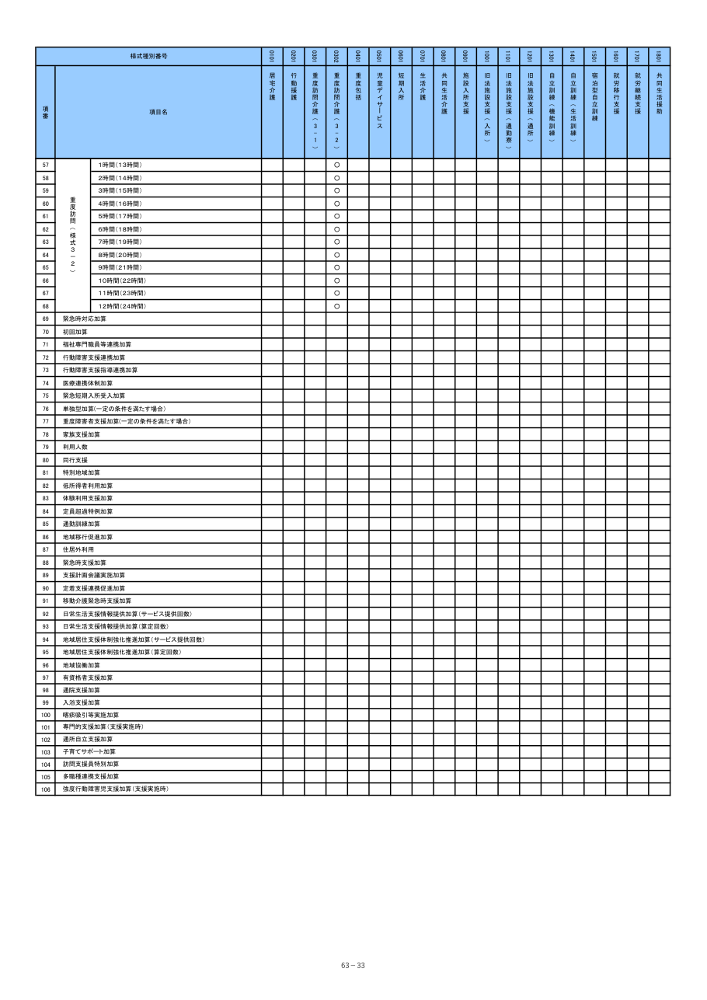
| 項番 | 項目名 | 属性 | 桁数 | 内容 | 必須 | 備考 | その他の列 |
|---|---|---|---|---|---|---|---|
| 57 | 重度訪問（様式3－2） > 1時間(13時間) | 0101:－ 0201:－ 0301:－ 0302:○ 0401:－ 0501:－ 0601:－ 0701:－ 0801:－ 0901:－ 1001:－ 1101:－ 1201:－ 1301:－ 1401:－ 1501:－ 1601:－ 1701:－ 1801:－ | |||||
| 58 | 重度訪問（様式3－2） > 2時間(14時間) | 0101:－ 0201:－ 0301:－ 0302:○ 0401:－ 0501:－ 0601:－ 0701:－ 0801:－ 0901:－ 1001:－ 1101:－ 1201:－ 1301:－ 1401:－ 1501:－ 1601:－ 1701:－ 1801:－ | |||||
| 59 | 重度訪問（様式3－2） > 3時間(15時間) | 0101:－ 0201:－ 0301:－ 0302:○ 0401:－ 0501:－ 0601:－ 0701:－ 0801:－ 0901:－ 1001:－ 1101:－ 1201:－ 1301:－ 1401:－ 1501:－ 1601:－ 1701:－ 1801:－ | |||||
| 60 | 重度訪問（様式3－2） > 4時間(16時間) | 0101:－ 0201:－ 0301:－ 0302:○ 0401:－ 0501:－ 0601:－ 0701:－ 0801:－ 0901:－ 1001:－ 1101:－ 1201:－ 1301:－ 1401:－ 1501:－ 1601:－ 1701:－ 1801:－ | |||||
| 61 | 重度訪問（様式3－2） > 5時間(17時間) | 0101:－ 0201:－ 0301:－ 0302:○ 0401:－ 0501:－ 0601:－ 0701:－ 0801:－ 0901:－ 1001:－ 1101:－ 1201:－ 1301:－ 1401:－ 1501:－ 1601:－ 1701:－ 1801:－ | |||||
| 62 | 重度訪問（様式3－2） > 6時間(18時間) | 0101:－ 0201:－ 0301:－ 0302:○ 0401:－ 0501:－ 0601:－ 0701:－ 0801:－ 0901:－ 1001:－ 1101:－ 1201:－ 1301:－ 1401:－ 1501:－ 1601:－ 1701:－ 1801:－ | |||||
| 63 | 重度訪問（様式3－2） > 7時間(19時間) | 0101:－ 0201:－ 0301:－ 0302:○ 0401:－ 0501:－ 0601:－ 0701:－ 0801:－ 0901:－ 1001:－ 1101:－ 1201:－ 1301:－ 1401:－ 1501:－ 1601:－ 1701:－ 1801:－ | |||||
| 64 | 重度訪問（様式3－2） > 8時間(20時間) | 0101:－ 0201:－ 0301:－ 0302:○ 0401:－ 0501:－ 0601:－ 0701:－ 0801:－ 0901:－ 1001:－ 1101:－ 1201:－ 1301:－ 1401:－ 1501:－ 1601:－ 1701:－ 1801:－ | |||||
| 65 | 重度訪問（様式3－2） > 9時間(21時間) | 0101:－ 0201:－ 0301:－ 0302:○ 0401:－ 0501:－ 0601:－ 0701:－ 0801:－ 0901:－ 1001:－ 1101:－ 1201:－ 1301:－ 1401:－ 1501:－ 1601:－ 1701:－ 1801:－ | |||||
| 66 | 重度訪問（様式3－2） > 10時間(22時間) | 0101:－ 0201:－ 0301:－ 0302:○ 0401:－ 0501:－ 0601:－ 0701:－ 0801:－ 0901:－ 1001:－ 1101:－ 1201:－ 1301:－ 1401:－ 1501:－ 1601:－ 1701:－ 1801:－ | |||||
| 67 | 重度訪問（様式3－2） > 11時間(23時間) | 0101:－ 0201:－ 0301:－ 0302:○ 0401:－ 0501:－ 0601:－ 0701:－ 0801:－ 0901:－ 1001:－ 1101:－ 1201:－ 1301:－ 1401:－ 1501:－ 1601:－ 1701:－ 1801:－ | |||||
| 68 | 重度訪問（様式3－2） > 12時間(24時間) | 0101:－ 0201:－ 0301:－ 0302:○ 0401:－ 0501:－ 0601:－ 0701:－ 0801:－ 0901:－ 1001:－ 1101:－ 1201:－ 1301:－ 1401:－ 1501:－ 1601:－ 1701:－ 1801:－ | |||||
| 69 | 緊急時対応加算 | 0101:－ 0201:－ 0301:－ 0302:－ 0401:－ 0501:－ 0601:－ 0701:－ 0801:－ 0901:－ 1001:－ 1101:－ 1201:－ 1301:－ 1401:－ 1501:－ 1601:－ 1701:－ 1801:－ | |||||
| 70 | 初回加算 | 0101:－ 0201:－ 0301:－ 0302:－ 0401:－ 0501:－ 0601:－ 0701:－ 0801:－ 0901:－ 1001:－ 1101:－ 1201:－ 1301:－ 1401:－ 1501:－ 1601:－ 1701:－ 1801:－ | |||||
| 71 | 福祉専門職員等連携加算 | 0101:－ 0201:－ 0301:－ 0302:－ 0401:－ 0501:－ 0601:－ 0701:－ 0801:－ 0901:－ 1001:－ 1101:－ 1201:－ 1301:－ 1401:－ 1501:－ 1601:－ 1701:－ 1801:－ | |||||
| 72 | 行動障害支援連携加算 | 0101:－ 0201:－ 0301:－ 0302:－ 0401:－ 0501:－ 0601:－ 0701:－ 0801:－ 0901:－ 1001:－ 1101:－ 1201:－ 1301:－ 1401:－ 1501:－ 1601:－ 1701:－ 1801:－ | |||||
| 73 | 行動障害支援指導連携加算 | 0101:－ 0201:－ 0301:－ 0302:－ 0401:－ 0501:－ 0601:－ 0701:－ 0801:－ 0901:－ 1001:－ 1101:－ 1201:－ 1301:－ 1401:－ 1501:－ 1601:－ 1701:－ 1801:－ | |||||
| 74 | 医療連携体制加算 | 0101:－ 0201:－ 0301:－ 0302:－ 0401:－ 0501:－ 0601:－ 0701:－ 0801:－ 0901:－ 1001:－ 1101:－ 1201:－ 1301:－ 1401:－ 1501:－ 1601:－ 1701:－ 1801:－ | |||||
| 75 | 緊急短期入所受入加算 | 0101:－ 0201:－ 0301:－ 0302:－ 0401:－ 0501:－ 0601:－ 0701:－ 0801:－ 0901:－ 1001:－ 1101:－ 1201:－ 1301:－ 1401:－ 1501:－ 1601:－ 1701:－ 1801:－ | |||||
| 76 | 単独型加算(一定の条件を満たす場合) | 0101:－ 0201:－ 0301:－ 0302:－ 0401:－ 0501:－ 0601:－ 0701:－ 0801:－ 0901:－ 1001:－ 1101:－ 1201:－ 1301:－ 1401:－ 1501:－ 1601:－ 1701:－ 1801:－ | |||||
| 77 | 重度障害者支援加算(一定の条件を満たす場合) | 0101:－ 0201:－ 0301:－ 0302:－ 0401:－ 0501:－ 0601:－ 0701:－ 0801:－ 0901:－ 1001:－ 1101:－ 1201:－ 1301:－ 1401:－ 1501:－ 1601:－ 1701:－ 1801:－ | |||||
| 78 | 家族支援加算 | 0101:－ 0201:－ 0301:－ 0302:－ 0401:－ 0501:－ 0601:－ 0701:－ 0801:－ 0901:－ 1001:－ 1101:－ 1201:－ 1301:－ 1401:－ 1501:－ 1601:－ 1701:－ 1801:－ | |||||
| 79 | 利用人数 | 0101:－ 0201:－ 0301:－ 0302:－ 0401:－ 0501:－ 0601:－ 0701:－ 0801:－ 0901:－ 1001:－ 1101:－ 1201:－ 1301:－ 1401:－ 1501:－ 1601:－ 1701:－ 1801:－ | |||||
| 80 | 同行支援 | 0101:－ 0201:－ 0301:－ 0302:－ 0401:－ 0501:－ 0601:－ 0701:－ 0801:－ 0901:－ 1001:－ 1101:－ 1201:－ 1301:－ 1401:－ 1501:－ 1601:－ 1701:－ 1801:－ | |||||
| 81 | 特別地域加算 | 0101:－ 0201:－ 0301:－ 0302:－ 0401:－ 0501:－ 0601:－ 0701:－ 0801:－ 0901:－ 1001:－ 1101:－ 1201:－ 1301:－ 1401:－ 1501:－ 1601:－ 1701:－ 1801:－ | |||||
| 82 | 低所得者利用加算 | 0101:－ 0201:－ 0301:－ 0302:－ 0401:－ 0501:－ 0601:－ 0701:－ 0801:－ 0901:－ 1001:－ 1101:－ 1201:－ 1301:－ 1401:－ 1501:－ 1601:－ 1701:－ 1801:－ | |||||
| 83 | 体験利用支援加算 | 0101:－ 0201:－ 0301:－ 0302:－ 0401:－ 0501:－ 0601:－ 0701:－ 0801:－ 0901:－ 1001:－ 1101:－ 1201:－ 1301:－ 1401:－ 1501:－ 1601:－ 1701:－ 1801:－ | |||||
| 84 | 定員超過特例加算 | 0101:－ 0201:－ 0301:－ 0302:－ 0401:－ 0501:－ 0601:－ 0701:－ 0801:－ 0901:－ 1001:－ 1101:－ 1201:－ 1301:－ 1401:－ 1501:－ 1601:－ 1701:－ 1801:－ | |||||
| 85 | 通勤訓練加算 | 0101:－ 0201:－ 0301:－ 0302:－ 0401:－ 0501:－ 0601:－ 0701:－ 0801:－ 0901:－ 1001:－ 1101:－ 1201:－ 1301:－ 1401:－ 1501:－ 1601:－ 1701:－ 1801:－ | |||||
| 86 | 地域移行促進加算 | 0101:－ 0201:－ 0301:－ 0302:－ 0401:－ 0501:－ 0601:－ 0701:－ 0801:－ 0901:－ 1001:－ 1101:－ 1201:－ 1301:－ 1401:－ 1501:－ 1601:－ 1701:－ 1801:－ | |||||
| 87 | 住居外利用 | 0101:－ 0201:－ 0301:－ 0302:－ 0401:－ 0501:－ 0601:－ 0701:－ 0801:－ 0901:－ 1001:－ 1101:－ 1201:－ 1301:－ 1401:－ 1501:－ 1601:－ 1701:－ 1801:－ | |||||
| 88 | 緊急時支援加算 | 0101:－ 0201:－ 0301:－ 0302:－ 0401:－ 0501:－ 0601:－ 0701:－ 0801:－ 0901:－ 1001:－ 1101:－ 1201:－ 1301:－ 1401:－ 1501:－ 1601:－ 1701:－ 1801:－ | |||||
| 89 | 支援計画会議実施加算 | 0101:－ 0201:－ 0301:－ 0302:－ 0401:－ 0501:－ 0601:－ 0701:－ 0801:－ 0901:－ 1001:－ 1101:－ 1201:－ 1301:－ 1401:－ 1501:－ 1601:－ 1701:－ 1801:－ | |||||
| 90 | 定着支援連携促進加算 | 0101:－ 0201:－ 0301:－ 0302:－ 0401:－ 0501:－ 0601:－ 0701:－ 0801:－ 0901:－ 1001:－ 1101:－ 1201:－ 1301:－ 1401:－ 1501:－ 1601:－ 1701:－ 1801:－ | |||||
| 91 | 移動介護緊急時支援加算 | 0101:－ 0201:－ 0301:－ 0302:－ 0401:－ 0501:－ 0601:－ 0701:－ 0801:－ 0901:－ 1001:－ 1101:－ 1201:－ 1301:－ 1401:－ 1501:－ 1601:－ 1701:－ 1801:－ | |||||
| 92 | 日常生活支援情報提供加算(サービス提供回数) | 0101:－ 0201:－ 0301:－ 0302:－ 0401:－ 0501:－ 0601:－ 0701:－ 0801:－ 0901:－ 1001:－ 1101:－ 1201:－ 1301:－ 1401:－ 1501:－ 1601:－ 1701:－ 1801:－ | |||||
| 93 | 日常生活支援情報提供加算(算定回数) | 0101:－ 0201:－ 0301:－ 0302:－ 0401:－ 0501:－ 0601:－ 0701:－ 0801:－ 0901:－ 1001:－ 1101:－ 1201:－ 1301:－ 1401:－ 1501:－ 1601:－ 1701:－ 1801:－ | |||||
| 94 | 地域居住支援体制強化推進加算(サービス提供回数) | 0101:－ 0201:－ 0301:－ 0302:－ 0401:－ 0501:－ 0601:－ 0701:－ 0801:－ 0901:－ 1001:－ 1101:－ 1201:－ 1301:－ 1401:－ 1501:－ 1601:－ 1701:－ 1801:－ | |||||
| 95 | 地域居住支援体制強化推進加算(算定回数) | 0101:－ 0201:－ 0301:－ 0302:－ 0401:－ 0501:－ 0601:－ 0701:－ 0801:－ 0901:－ 1001:－ 1101:－ 1201:－ 1301:－ 1401:－ 1501:－ 1601:－ 1701:－ 1801:－ | |||||
| 96 | 地域協働加算 | 0101:－ 0201:－ 0301:－ 0302:－ 0401:－ 0501:－ 0601:－ 0701:－ 0801:－ 0901:－ 1001:－ 1101:－ 1201:－ 1301:－ 1401:－ 1501:－ 1601:－ 1701:－ 1801:－ | |||||
| 97 | 有資格者支援加算 | 0101:－ 0201:－ 0301:－ 0302:－ 0401:－ 0501:－ 0601:－ 0701:－ 0801:－ 0901:－ 1001:－ 1101:－ 1201:－ 1301:－ 1401:－ 1501:－ 1601:－ 1701:－ 1801:－ | |||||
| 98 | 通院支援加算 | 0101:－ 0201:－ 0301:－ 0302:－ 0401:－ 0501:－ 0601:－ 0701:－ 0801:－ 0901:－ 1001:－ 1101:－ 1201:－ 1301:－ 1401:－ 1501:－ 1601:－ 1701:－ 1801:－ | |||||
| 99 | 入浴支援加算 | 0101:－ 0201:－ 0301:－ 0302:－ 0401:－ 0501:－ 0601:－ 0701:－ 0801:－ 0901:－ 1001:－ 1101:－ 1201:－ 1301:－ 1401:－ 1501:－ 1601:－ 1701:－ 1801:－ | |||||
| 100 | 喀痰吸引等実施加算 | 0101:－ 0201:－ 0301:－ 0302:－ 0401:－ 0501:－ 0601:－ 0701:－ 0801:－ 0901:－ 1001:－ 1101:－ 1201:－ 1301:－ 1401:－ 1501:－ 1601:－ 1701:－ 1801:－ | |||||
| 101 | 専門的支援加算(支援実施時) | 0101:－ 0201:－ 0301:－ 0302:－ 0401:－ 0501:－ 0601:－ 0701:－ 0801:－ 0901:－ 1001:－ 1101:－ 1201:－ 1301:－ 1401:－ 1501:－ 1601:－ 1701:－ 1801:－ | |||||
| 102 | 通所自立支援加算 | 0101:－ 0201:－ 0301:－ 0302:－ 0401:－ 0501:－ 0601:－ 0701:－ 0801:－ 0901:－ 1001:－ 1101:－ 1201:－ 1301:－ 1401:－ 1501:－ 1601:－ 1701:－ 1801:－ | |||||
| 103 | 子育てサポート加算 | 0101:－ 0201:－ 0301:－ 0302:－ 0401:－ 0501:－ 0601:－ 0701:－ 0801:－ 0901:－ 1001:－ 1101:－ 1201:－ 1301:－ 1401:－ 1501:－ 1601:－ 1701:－ 1801:－ | |||||
| 104 | 訪問支援員特別加算 | 0101:－ 0201:－ 0301:－ 0302:－ 0401:－ 0501:－ 0601:－ 0701:－ 0801:－ 0901:－ 1001:－ 1101:－ 1201:－ 1301:－ 1401:－ 1501:－ 1601:－ 1701:－ 1801:－ | |||||
| 105 | 多職種連携支援加算 | 0101:－ 0201:－ 0301:－ 0302:－ 0401:－ 0501:－ 0601:－ 0701:－ 0801:－ 0901:－ 1001:－ 1101:－ 1201:－ 1301:－ 1401:－ 1501:－ 1601:－ 1701:－ 1801:－ | |||||
| 106 | 強度行動障害児支援加算(支援実施時) | 0101:－ 0201:－ 0301:－ 0302:－ 0401:－ 0501:－ 0601:－ 0701:－ 0801:－ 0901:－ 1001:－ 1101:－ 1201:－ 1301:－ 1401:－ 1501:－ 1601:－ 1701:－ 1801:－ |
| 項番 | 項目名 | 属性 | 桁数 | 内容 | 必須 | 備考 | その他の列 |
|---|
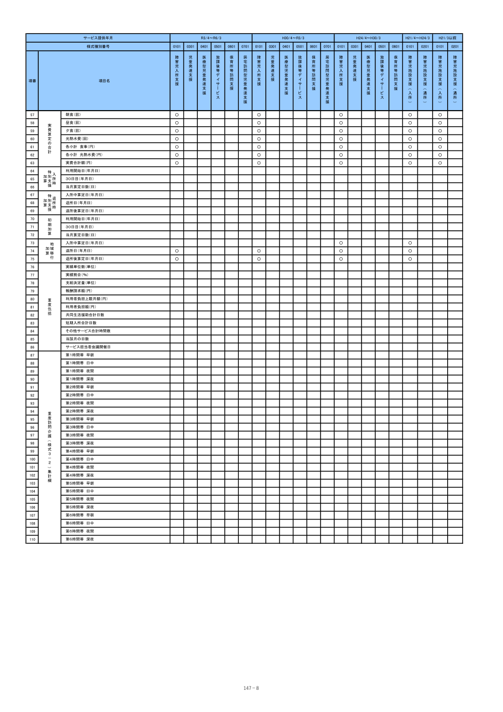
| 項番 | 項目名 | 属性 | 桁数 | 内容 | 必須 | 備考 | その他の列 |
|---|---|---|---|---|---|---|---|
| 57 | 実費算定の合計 > 朝食(回) | R3/4～R6/3 > 0101:○ R3/4～R6/3 > 0301:－ R3/4～R6/3 > 0401:－ R3/4～R6/3 > 0501:－ R3/4～R6/3 > 0601:－ R3/4～R6/3 > 0701:－ H30/4～R3/3 > 0101:○ H30/4～R3/3 > 0301:－ H30/4～R3/3 > 0401:－ H30/4～R3/3 > 0501:－ H30/4～R3/3 > 0601:－ H30/4～R3/3 > 0701:－ H24/4～H30/3 > 0101:○ H24/4～H30/3 > 0301:－ H24/4～H30/3 > 0401:－ H24/4～H30/3 > 0501:－ H24/4～H30/3 > 0601:－ H21/4～H24/3 > 0101:○ H21/4～H24/3 > 0201:－ H21/3以前 > 0101:－ H21/3以前 > 0201:－ | |||||
| 58 | 実費算定の合計 > 昼食(回) | R3/4～R6/3 > 0101:○ R3/4～R6/3 > 0301:－ R3/4～R6/3 > 0401:－ R3/4～R6/3 > 0501:－ R3/4～R6/3 > 0601:－ R3/4～R6/3 > 0701:－ H30/4～R3/3 > 0101:○ H30/4～R3/3 > 0301:－ H30/4～R3/3 > 0401:－ H30/4～R3/3 > 0501:－ H30/4～R3/3 > 0601:－ H30/4～R3/3 > 0701:－ H24/4～H30/3 > 0101:○ H24/4～H30/3 > 0301:－ H24/4～H30/3 > 0401:－ H24/4～H30/3 > 0501:－ H24/4～H30/3 > 0601:－ H21/4～H24/3 > 0101:○ H21/4～H24/3 > 0201:－ H21/3以前 > 0101:○ H21/3以前 > 0201:－ | |||||
| 59 | 実費算定の合計 > 夕食(回) | R3/4～R6/3 > 0101:○ R3/4～R6/3 > 0301:－ R3/4～R6/3 > 0401:－ R3/4～R6/3 > 0501:－ R3/4～R6/3 > 0601:－ R3/4～R6/3 > 0701:－ H30/4～R3/3 > 0101:○ H30/4～R3/3 > 0301:－ H30/4～R3/3 > 0401:－ H30/4～R3/3 > 0501:－ H30/4～R3/3 > 0601:－ H30/4～R3/3 > 0701:－ H24/4～H30/3 > 0101:○ H24/4～H30/3 > 0301:－ H24/4～H30/3 > 0401:－ H24/4～H30/3 > 0501:－ H24/4～H30/3 > 0601:－ H21/4～H24/3 > 0101:○ H21/4～H24/3 > 0201:－ H21/3以前 > 0101:○ H21/3以前 > 0201:－ | |||||
| 60 | 実費算定の合計 > 光熱水費(回) | R3/4～R6/3 > 0101:○ R3/4～R6/3 > 0301:－ R3/4～R6/3 > 0401:－ R3/4～R6/3 > 0501:－ R3/4～R6/3 > 0601:－ R3/4～R6/3 > 0701:－ H30/4～R3/3 > 0101:○ H30/4～R3/3 > 0301:－ H30/4～R3/3 > 0401:－ H30/4～R3/3 > 0501:－ H30/4～R3/3 > 0601:－ H30/4～R3/3 > 0701:－ H24/4～H30/3 > 0101:○ H24/4～H30/3 > 0301:－ H24/4～H30/3 > 0401:－ H24/4～H30/3 > 0501:－ H24/4～H30/3 > 0601:－ H21/4～H24/3 > 0101:○ H21/4～H24/3 > 0201:－ H21/3以前 > 0101:○ H21/3以前 > 0201:－ | |||||
| 61 | 実費算定の合計 > 各小計 食事(円) | R3/4～R6/3 > 0101:○ R3/4～R6/3 > 0301:－ R3/4～R6/3 > 0401:－ R3/4～R6/3 > 0501:－ R3/4～R6/3 > 0601:－ R3/4～R6/3 > 0701:－ H30/4～R3/3 > 0101:○ H30/4～R3/3 > 0301:－ H30/4～R3/3 > 0401:－ H30/4～R3/3 > 0501:－ H30/4～R3/3 > 0601:－ H30/4～R3/3 > 0701:－ H24/4～H30/3 > 0101:○ H24/4～H30/3 > 0301:－ H24/4～H30/3 > 0401:－ H24/4～H30/3 > 0501:－ H24/4～H30/3 > 0601:－ H21/4～H24/3 > 0101:○ H21/4～H24/3 > 0201:－ H21/3以前 > 0101:○ H21/3以前 > 0201:－ | |||||
| 62 | 実費算定の合計 > 各小計 光熱水費(円) | R3/4～R6/3 > 0101:○ R3/4～R6/3 > 0301:－ R3/4～R6/3 > 0401:－ R3/4～R6/3 > 0501:－ R3/4～R6/3 > 0601:－ R3/4～R6/3 > 0701:－ H30/4～R3/3 > 0101:○ H30/4～R3/3 > 0301:－ H30/4～R3/3 > 0401:－ H30/4～R3/3 > 0501:－ H30/4～R3/3 > 0601:－ H30/4～R3/3 > 0701:－ H24/4～H30/3 > 0101:○ H24/4～H30/3 > 0301:－ H24/4～H30/3 > 0401:－ H24/4～H30/3 > 0501:－ H24/4～H30/3 > 0601:－ H21/4～H24/3 > 0101:○ H21/4～H24/3 > 0201:－ H21/3以前 > 0101:○ H21/3以前 > 0201:－ | |||||
| 63 | 実費算定の合計 > 実費合計額(円) | R3/4～R6/3 > 0101:○ R3/4～R6/3 > 0301:－ R3/4～R6/3 > 0401:－ R3/4～R6/3 > 0501:－ R3/4～R6/3 > 0601:－ R3/4～R6/3 > 0701:－ H30/4～R3/3 > 0101:○ H30/4～R3/3 > 0301:－ H30/4～R3/3 > 0401:－ H30/4～R3/3 > 0501:－ H30/4～R3/3 > 0601:－ H30/4～R3/3 > 0701:－ H24/4～H30/3 > 0101:○ H24/4～H30/3 > 0301:－ H24/4～H30/3 > 0401:－ H24/4～H30/3 > 0501:－ H24/4～H30/3 > 0601:－ H21/4～H24/3 > 0101:○ H21/4～H24/3 > 0201:－ H21/3以前 > 0101:○ H21/3以前 > 0201:－ | |||||
| 64 | 特別加算 入所時支援 > 利用開始日(年月日) | R3/4～R6/3 > 0101:－ R3/4～R6/3 > 0301:－ R3/4～R6/3 > 0401:－ R3/4～R6/3 > 0501:－ R3/4～R6/3 > 0601:－ R3/4～R6/3 > 0701:－ H30/4～R3/3 > 0101:－ H30/4～R3/3 > 0301:－ H30/4～R3/3 > 0401:－ H30/4～R3/3 > 0501:－ H30/4～R3/3 > 0601:－ H30/4～R3/3 > 0701:－ H24/4～H30/3 > 0101:－ H24/4～H30/3 > 0301:－ H24/4～H30/3 > 0401:－ H24/4～H30/3 > 0501:－ H24/4～H30/3 > 0601:－ H21/4～H24/3 > 0101:－ H21/4～H24/3 > 0201:－ H21/3以前 > 0101:－ H21/3以前 > 0201:－ | |||||
| 65 | 特別加算 入所時支援 > 30日目(年月日) | R3/4～R6/3 > 0101:－ R3/4～R6/3 > 0301:－ R3/4～R6/3 > 0401:－ R3/4～R6/3 > 0501:－ R3/4～R6/3 > 0601:－ R3/4～R6/3 > 0701:－ H30/4～R3/3 > 0101:－ H30/4～R3/3 > 0301:－ H30/4～R3/3 > 0401:－ H30/4～R3/3 > 0501:－ H30/4～R3/3 > 0601:－ H30/4～R3/3 > 0701:－ H24/4～H30/3 > 0101:－ H24/4～H30/3 > 0301:－ H24/4～H30/3 > 0401:－ H24/4～H30/3 > 0501:－ H24/4～H30/3 > 0601:－ H21/4～H24/3 > 0101:－ H21/4～H24/3 > 0201:－ H21/3以前 > 0101:－ H21/3以前 > 0201:－ | |||||
| 66 | 特別加算 入所時支援 > 当月算定日数(日) | R3/4～R6/3 > 0101:－ R3/4～R6/3 > 0301:－ R3/4～R6/3 > 0401:－ R3/4～R6/3 > 0501:－ R3/4～R6/3 > 0601:－ R3/4～R6/3 > 0701:－ H30/4～R3/3 > 0101:－ H30/4～R3/3 > 0301:－ H30/4～R3/3 > 0401:－ H30/4～R3/3 > 0501:－ H30/4～R3/3 > 0601:－ H30/4～R3/3 > 0701:－ H24/4～H30/3 > 0101:－ H24/4～H30/3 > 0301:－ H24/4～H30/3 > 0401:－ H24/4～H30/3 > 0501:－ H24/4～H30/3 > 0601:－ H21/4～H24/3 > 0101:－ H21/4～H24/3 > 0201:－ H21/3以前 > 0101:－ H21/3以前 > 0201:－ | |||||
| 67 | 特別加算 退所時支援 > 入所中算定日(年月日) | R3/4～R6/3 > 0101:－ R3/4～R6/3 > 0301:－ R3/4～R6/3 > 0401:－ R3/4～R6/3 > 0501:－ R3/4～R6/3 > 0601:－ R3/4～R6/3 > 0701:－ H30/4～R3/3 > 0101:－ H30/4～R3/3 > 0301:－ H30/4～R3/3 > 0401:－ H30/4～R3/3 > 0501:－ H30/4～R3/3 > 0601:－ H30/4～R3/3 > 0701:－ H24/4～H30/3 > 0101:－ H24/4～H30/3 > 0301:－ H24/4～H30/3 > 0401:－ H24/4～H30/3 > 0501:－ H24/4～H30/3 > 0601:－ H21/4～H24/3 > 0101:－ H21/4～H24/3 > 0201:－ H21/3以前 > 0101:－ H21/3以前 > 0201:－ | |||||
| 68 | 特別加算 退所時支援 > 退所日(年月日) | R3/4～R6/3 > 0101:－ R3/4～R6/3 > 0301:－ R3/4～R6/3 > 0401:－ R3/4～R6/3 > 0501:－ R3/4～R6/3 > 0601:－ R3/4～R6/3 > 0701:－ H30/4～R3/3 > 0101:－ H30/4～R3/3 > 0301:－ H30/4～R3/3 > 0401:－ H30/4～R3/3 > 0501:－ H30/4～R3/3 > 0601:－ H30/4～R3/3 > 0701:－ H24/4～H30/3 > 0101:－ H24/4～H30/3 > 0301:－ H24/4～H30/3 > 0401:－ H24/4～H30/3 > 0501:－ H24/4～H30/3 > 0601:－ H21/4～H24/3 > 0101:－ H21/4～H24/3 > 0201:－ H21/3以前 > 0101:－ H21/3以前 > 0201:－ | |||||
| 69 | 特別加算 退所時支援 > 退所後算定日(年月日) | R3/4～R6/3 > 0101:－ R3/4～R6/3 > 0301:－ R3/4～R6/3 > 0401:－ R3/4～R6/3 > 0501:－ R3/4～R6/3 > 0601:－ R3/4～R6/3 > 0701:－ H30/4～R3/3 > 0101:－ H30/4～R3/3 > 0301:－ H30/4～R3/3 > 0401:－ H30/4～R3/3 > 0501:－ H30/4～R3/3 > 0601:－ H30/4～R3/3 > 0701:－ H24/4～H30/3 > 0101:－ H24/4～H30/3 > 0301:－ H24/4～H30/3 > 0401:－ H24/4～H30/3 > 0501:－ H24/4～H30/3 > 0601:－ H21/4～H24/3 > 0101:－ H21/4～H24/3 > 0201:－ H21/3以前 > 0101:－ H21/3以前 > 0201:－ | |||||
| 70 | 初期加算 > 利用開始日(年月日) | R3/4～R6/3 > 0101:－ R3/4～R6/3 > 0301:－ R3/4～R6/3 > 0401:－ R3/4～R6/3 > 0501:－ R3/4～R6/3 > 0601:－ R3/4～R6/3 > 0701:－ H30/4～R3/3 > 0101:－ H30/4～R3/3 > 0301:－ H30/4～R3/3 > 0401:－ H30/4～R3/3 > 0501:－ H30/4～R3/3 > 0601:－ H30/4～R3/3 > 0701:－ H24/4～H30/3 > 0101:－ H24/4～H30/3 > 0301:－ H24/4～H30/3 > 0401:－ H24/4～H30/3 > 0501:－ H24/4～H30/3 > 0601:－ H21/4～H24/3 > 0101:－ H21/4～H24/3 > 0201:－ H21/3以前 > 0101:－ H21/3以前 > 0201:－ | |||||
| 71 | 初期加算 > 30日目(年月日) | R3/4～R6/3 > 0101:－ R3/4～R6/3 > 0301:－ R3/4～R6/3 > 0401:－ R3/4～R6/3 > 0501:－ R3/4～R6/3 > 0601:－ R3/4～R6/3 > 0701:－ H30/4～R3/3 > 0101:－ H30/4～R3/3 > 0301:－ H30/4～R3/3 > 0401:－ H30/4～R3/3 > 0501:－ H30/4～R3/3 > 0601:－ H30/4～R3/3 > 0701:－ H24/4～H30/3 > 0101:－ H24/4～H30/3 > 0301:－ H24/4～H30/3 > 0401:－ H24/4～H30/3 > 0501:－ H24/4～H30/3 > 0601:－ H21/4～H24/3 > 0101:－ H21/4～H24/3 > 0201:－ H21/3以前 > 0101:－ H21/3以前 > 0201:－ | |||||
| 72 | 初期加算 > 当月算定日数(日) | R3/4～R6/3 > 0101:－ R3/4～R6/3 > 0301:－ R3/4～R6/3 > 0401:－ R3/4～R6/3 > 0501:－ R3/4～R6/3 > 0601:－ R3/4～R6/3 > 0701:－ H30/4～R3/3 > 0101:－ H30/4～R3/3 > 0301:－ H30/4～R3/3 > 0401:－ H30/4～R3/3 > 0501:－ H30/4～R3/3 > 0601:－ H30/4～R3/3 > 0701:－ H24/4～H30/3 > 0101:－ H24/4～H30/3 > 0301:－ H24/4～H30/3 > 0401:－ H24/4～H30/3 > 0501:－ H24/4～H30/3 > 0601:－ H21/4～H24/3 > 0101:－ H21/4～H24/3 > 0201:－ H21/3以前 > 0101:－ H21/3以前 > 0201:－ | |||||
| 73 | 地域移行加算 > 入所中算定日(年月日) | R3/4～R6/3 > 0101:－ R3/4～R6/3 > 0301:－ R3/4～R6/3 > 0401:－ R3/4～R6/3 > 0501:－ R3/4～R6/3 > 0601:－ R3/4～R6/3 > 0701:－ H30/4～R3/3 > 0101:－ H30/4～R3/3 > 0301:－ H30/4～R3/3 > 0401:－ H30/4～R3/3 > 0501:－ H30/4～R3/3 > 0601:－ H30/4～R3/3 > 0701:－ H24/4～H30/3 > 0101:○ H24/4～H30/3 > 0301:－ H24/4～H30/3 > 0401:－ H24/4～H30/3 > 0501:－ H24/4～H30/3 > 0601:－ H21/4～H24/3 > 0101:○ H21/4～H24/3 > 0201:－ H21/3以前 > 0101:－ H21/3以前 > 0201:－ | |||||
| 74 | 地域移行加算 > 退所日(年月日) | R3/4～R6/3 > 0101:○ R3/4～R6/3 > 0301:－ R3/4～R6/3 > 0401:－ R3/4～R6/3 > 0501:－ R3/4～R6/3 > 0601:－ R3/4～R6/3 > 0701:－ H30/4～R3/3 > 0101:○ H30/4～R3/3 > 0301:－ H30/4～R3/3 > 0401:－ H30/4～R3/3 > 0501:－ H30/4～R3/3 > 0601:－ H30/4～R3/3 > 0701:－ H24/4～H30/3 > 0101:○ H24/4～H30/3 > 0301:－ H24/4～H30/3 > 0401:－ H24/4～H30/3 > 0501:－ H24/4～H30/3 > 0601:－ H21/4～H24/3 > 0101:○ H21/4～H24/3 > 0201:－ H21/3以前 > 0101:－ H21/3以前 > 0201:－ | |||||
| 75 | 地域移行加算 > 退所後算定日(年月日) | R3/4～R6/3 > 0101:○ R3/4～R6/3 > 0301:－ R3/4～R6/3 > 0401:－ R3/4～R6/3 > 0501:－ R3/4～R6/3 > 0601:－ R3/4～R6/3 > 0701:－ H30/4～R3/3 > 0101:○ H30/4～R3/3 > 0301:－ H30/4～R3/3 > 0401:－ H30/4～R3/3 > 0501:－ H30/4～R3/3 > 0601:－ H30/4～R3/3 > 0701:－ H24/4～H30/3 > 0101:○ H24/4～H30/3 > 0301:－ H24/4～H30/3 > 0401:－ H24/4～H30/3 > 0501:－ H24/4～H30/3 > 0601:－ H21/4～H24/3 > 0101:○ H21/4～H24/3 > 0201:－ H21/3以前 > 0101:－ H21/3以前 > 0201:－ | |||||
| 76 | 重度包括 > 実績単位数(単位) | R3/4～R6/3 > 0101:－ R3/4～R6/3 > 0301:－ R3/4～R6/3 > 0401:－ R3/4～R6/3 > 0501:－ R3/4～R6/3 > 0601:－ R3/4～R6/3 > 0701:－ H30/4～R3/3 > 0101:－ H30/4～R3/3 > 0301:－ H30/4～R3/3 > 0401:－ H30/4～R3/3 > 0501:－ H30/4～R3/3 > 0601:－ H30/4～R3/3 > 0701:－ H24/4～H30/3 > 0101:－ H24/4～H30/3 > 0301:－ H24/4～H30/3 > 0401:－ H24/4～H30/3 > 0501:－ H24/4～H30/3 > 0601:－ H21/4～H24/3 > 0101:－ H21/4～H24/3 > 0201:－ H21/3以前 > 0101:－ H21/3以前 > 0201:－ | |||||
| 77 | 重度包括 > 実績割合(%) | R3/4～R6/3 > 0101:－ R3/4～R6/3 > 0301:－ R3/4～R6/3 > 0401:－ R3/4～R6/3 > 0501:－ R3/4～R6/3 > 0601:－ R3/4～R6/3 > 0701:－ H30/4～R3/3 > 0101:－ H30/4～R3/3 > 0301:－ H30/4～R3/3 > 0401:－ H30/4～R3/3 > 0501:－ H30/4～R3/3 > 0601:－ H30/4～R3/3 > 0701:－ H24/4～H30/3 > 0101:－ H24/4～H30/3 > 0301:－ H24/4～H30/3 > 0401:－ H24/4～H30/3 > 0501:－ H24/4～H30/3 > 0601:－ H21/4～H24/3 > 0101:－ H21/4～H24/3 > 0201:－ H21/3以前 > 0101:－ H21/3以前 > 0201:－ | |||||
| 78 | 重度包括 > 支給決定量(単位) | R3/4～R6/3 > 0101:－ R3/4～R6/3 > 0301:－ R3/4～R6/3 > 0401:－ R3/4～R6/3 > 0501:－ R3/4～R6/3 > 0601:－ R3/4～R6/3 > 0701:－ H30/4～R3/3 > 0101:－ H30/4～R3/3 > 0301:－ H30/4～R3/3 > 0401:－ H30/4～R3/3 > 0501:－ H30/4～R3/3 > 0601:－ H30/4～R3/3 > 0701:－ H24/4～H30/3 > 0101:－ H24/4～H30/3 > 0301:－ H24/4～H30/3 > 0401:－ H24/4～H30/3 > 0501:－ H24/4～H30/3 > 0601:－ H21/4～H24/3 > 0101:－ H21/4～H24/3 > 0201:－ H21/3以前 > 0101:－ H21/3以前 > 0201:－ | |||||
| 79 | 重度包括 > 報酬請求額(円) | R3/4～R6/3 > 0101:－ R3/4～R6/3 > 0301:－ R3/4～R6/3 > 0401:－ R3/4～R6/3 > 0501:－ R3/4～R6/3 > 0601:－ R3/4～R6/3 > 0701:－ H30/4～R3/3 > 0101:－ H30/4～R3/3 > 0301:－ H30/4～R3/3 > 0401:－ H30/4～R3/3 > 0501:－ H30/4～R3/3 > 0601:－ H30/4～R3/3 > 0701:－ H24/4～H30/3 > 0101:－ H24/4～H30/3 > 0301:－ H24/4～H30/3 > 0401:－ H24/4～H30/3 > 0501:－ H24/4～H30/3 > 0601:－ H21/4～H24/3 > 0101:－ H21/4～H24/3 > 0201:－ H21/3以前 > 0101:－ H21/3以前 > 0201:－ | |||||
| 80 | 重度包括 > 利用者負担上限月額(円) | R3/4～R6/3 > 0101:－ R3/4～R6/3 > 0301:－ R3/4～R6/3 > 0401:－ R3/4～R6/3 > 0501:－ R3/4～R6/3 > 0601:－ R3/4～R6/3 > 0701:－ H30/4～R3/3 > 0101:－ H30/4～R3/3 > 0301:－ H30/4～R3/3 > 0401:－ H30/4～R3/3 > 0501:－ H30/4～R3/3 > 0601:－ H30/4～R3/3 > 0701:－ H24/4～H30/3 > 0101:－ H24/4～H30/3 > 0301:－ H24/4～H30/3 > 0401:－ H24/4～H30/3 > 0501:－ H24/4～H30/3 > 0601:－ H21/4～H24/3 > 0101:－ H21/4～H24/3 > 0201:－ H21/3以前 > 0101:－ H21/3以前 > 0201:－ | |||||
| 81 | 重度包括 > 利用者負担額(円) | R3/4～R6/3 > 0101:－ R3/4～R6/3 > 0301:－ R3/4～R6/3 > 0401:－ R3/4～R6/3 > 0501:－ R3/4～R6/3 > 0601:－ R3/4～R6/3 > 0701:－ H30/4～R3/3 > 0101:－ H30/4～R3/3 > 0301:－ H30/4～R3/3 > 0401:－ H30/4～R3/3 > 0501:－ H30/4～R3/3 > 0601:－ H30/4～R3/3 > 0701:－ H24/4～H30/3 > 0101:－ H24/4～H30/3 > 0301:－ H24/4～H30/3 > 0401:－ H24/4～H30/3 > 0501:－ H24/4～H30/3 > 0601:－ H21/4～H24/3 > 0101:－ H21/4～H24/3 > 0201:－ H21/3以前 > 0101:－ H21/3以前 > 0201:－ | |||||
| 82 | 重度包括 > 共同生活援助合計日数 | R3/4～R6/3 > 0101:－ R3/4～R6/3 > 0301:－ R3/4～R6/3 > 0401:－ R3/4～R6/3 > 0501:－ R3/4～R6/3 > 0601:－ R3/4～R6/3 > 0701:－ H30/4～R3/3 > 0101:－ H30/4～R3/3 > 0301:－ H30/4～R3/3 > 0401:－ H30/4～R3/3 > 0501:－ H30/4～R3/3 > 0601:－ H30/4～R3/3 > 0701:－ H24/4～H30/3 > 0101:－ H24/4～H30/3 > 0301:－ H24/4～H30/3 > 0401:－ H24/4～H30/3 > 0501:－ H24/4～H30/3 > 0601:－ H21/4～H24/3 > 0101:－ H21/4～H24/3 > 0201:－ H21/3以前 > 0101:－ H21/3以前 > 0201:－ | |||||
| 83 | 重度包括 > 短期入所合計日数 | R3/4～R6/3 > 0101:－ R3/4～R6/3 > 0301:－ R3/4～R6/3 > 0401:－ R3/4～R6/3 > 0501:－ R3/4～R6/3 > 0601:－ R3/4～R6/3 > 0701:－ H30/4～R3/3 > 0101:－ H30/4～R3/3 > 0301:－ H30/4～R3/3 > 0401:－ H30/4～R3/3 > 0501:－ H30/4～R3/3 > 0601:－ H30/4～R3/3 > 0701:－ H24/4～H30/3 > 0101:－ H24/4～H30/3 > 0301:－ H24/4～H30/3 > 0401:－ H24/4～H30/3 > 0501:－ H24/4～H30/3 > 0601:－ H21/4～H24/3 > 0101:－ H21/4～H24/3 > 0201:－ H21/3以前 > 0101:－ H21/3以前 > 0201:－ | |||||
| 84 | 重度包括 > その他サービス合計時間数 | R3/4～R6/3 > 0101:－ R3/4～R6/3 > 0301:－ R3/4～R6/3 > 0401:－ R3/4～R6/3 > 0501:－ R3/4～R6/3 > 0601:－ R3/4～R6/3 > 0701:－ H30/4～R3/3 > 0101:－ H30/4～R3/3 > 0301:－ H30/4～R3/3 > 0401:－ H30/4～R3/3 > 0501:－ H30/4～R3/3 > 0601:－ H30/4～R3/3 > 0701:－ H24/4～H30/3 > 0101:－ H24/4～H30/3 > 0301:－ H24/4～H30/3 > 0401:－ H24/4～H30/3 > 0501:－ H24/4～H30/3 > 0601:－ H21/4～H24/3 > 0101:－ H21/4～H24/3 > 0201:－ H21/3以前 > 0101:－ H21/3以前 > 0201:－ | |||||
| 85 | 重度包括 > 当該月の日数 | R3/4～R6/3 > 0101:－ R3/4～R6/3 > 0301:－ R3/4～R6/3 > 0401:－ R3/4～R6/3 > 0501:－ R3/4～R6/3 > 0601:－ R3/4～R6/3 > 0701:－ H30/4～R3/3 > 0101:－ H30/4～R3/3 > 0301:－ H30/4～R3/3 > 0401:－ H30/4～R3/3 > 0501:－ H30/4～R3/3 > 0601:－ H30/4～R3/3 > 0701:－ H24/4～H30/3 > 0101:－ H24/4～H30/3 > 0301:－ H24/4～H30/3 > 0401:－ H24/4～H30/3 > 0501:－ H24/4～H30/3 > 0601:－ H21/4～H24/3 > 0101:－ H21/4～H24/3 > 0201:－ H21/3以前 > 0101:－ H21/3以前 > 0201:－ | |||||
| 86 | 重度包括 > サービス担当者会議開催日 | R3/4～R6/3 > 0101:－ R3/4～R6/3 > 0301:－ R3/4～R6/3 > 0401:－ R3/4～R6/3 > 0501:－ R3/4～R6/3 > 0601:－ R3/4～R6/3 > 0701:－ H30/4～R3/3 > 0101:－ H30/4～R3/3 > 0301:－ H30/4～R3/3 > 0401:－ H30/4～R3/3 > 0501:－ H30/4～R3/3 > 0601:－ H30/4～R3/3 > 0701:－ H24/4～H30/3 > 0101:－ H24/4～H30/3 > 0301:－ H24/4～H30/3 > 0401:－ H24/4～H30/3 > 0501:－ H24/4～H30/3 > 0601:－ H21/4～H24/3 > 0101:－ H21/4～H24/3 > 0201:－ H21/3以前 > 0101:－ H21/3以前 > 0201:－ | |||||
| 87 | 重度訪問介護（様式3－2）集計欄 > 第1時間帯 早朝 | R3/4～R6/3 > 0101:－ R3/4～R6/3 > 0301:－ R3/4～R6/3 > 0401:－ R3/4～R6/3 > 0501:－ R3/4～R6/3 > 0601:－ R3/4～R6/3 > 0701:－ H30/4～R3/3 > 0101:－ H30/4～R3/3 > 0301:－ H30/4～R3/3 > 0401:－ H30/4～R3/3 > 0501:－ H30/4～R3/3 > 0601:－ H30/4～R3/3 > 0701:－ H24/4～H30/3 > 0101:－ H24/4～H30/3 > 0301:－ H24/4～H30/3 > 0401:－ H24/4～H30/3 > 0501:－ H24/4～H30/3 > 0601:－ H21/4～H24/3 > 0101:－ H21/4～H24/3 > 0201:－ H21/3以前 > 0101:－ H21/3以前 > 0201:－ | |||||
| 88 | 重度訪問介護（様式3－2）集計欄 > 第1時間帯 日中 | R3/4～R6/3 > 0101:－ R3/4～R6/3 > 0301:－ R3/4～R6/3 > 0401:－ R3/4～R6/3 > 0501:－ R3/4～R6/3 > 0601:－ R3/4～R6/3 > 0701:－ H30/4～R3/3 > 0101:－ H30/4～R3/3 > 0301:－ H30/4～R3/3 > 0401:－ H30/4～R3/3 > 0501:－ H30/4～R3/3 > 0601:－ H30/4～R3/3 > 0701:－ H24/4～H30/3 > 0101:－ H24/4～H30/3 > 0301:－ H24/4～H30/3 > 0401:－ H24/4～H30/3 > 0501:－ H24/4～H30/3 > 0601:－ H21/4～H24/3 > 0101:－ H21/4～H24/3 > 0201:－ H21/3以前 > 0101:－ H21/3以前 > 0201:－ | |||||
| 89 | 重度訪問介護（様式3－2）集計欄 > 第1時間帯 夜間 | R3/4～R6/3 > 0101:－ R3/4～R6/3 > 0301:－ R3/4～R6/3 > 0401:－ R3/4～R6/3 > 0501:－ R3/4～R6/3 > 0601:－ R3/4～R6/3 > 0701:－ H30/4～R3/3 > 0101:－ H30/4～R3/3 > 0301:－ H30/4～R3/3 > 0401:－ H30/4～R3/3 > 0501:－ H30/4～R3/3 > 0601:－ H30/4～R3/3 > 0701:－ H24/4～H30/3 > 0101:－ H24/4～H30/3 > 0301:－ H24/4～H30/3 > 0401:－ H24/4～H30/3 > 0501:－ H24/4～H30/3 > 0601:－ H21/4～H24/3 > 0101:－ H21/4～H24/3 > 0201:－ H21/3以前 > 0101:－ H21/3以前 > 0201:－ | |||||
| 90 | 重度訪問介護（様式3－2）集計欄 > 第1時間帯 深夜 | R3/4～R6/3 > 0101:－ R3/4～R6/3 > 0301:－ R3/4～R6/3 > 0401:－ R3/4～R6/3 > 0501:－ R3/4～R6/3 > 0601:－ R3/4～R6/3 > 0701:－ H30/4～R3/3 > 0101:－ H30/4～R3/3 > 0301:－ H30/4～R3/3 > 0401:－ H30/4～R3/3 > 0501:－ H30/4～R3/3 > 0601:－ H30/4～R3/3 > 0701:－ H24/4～H30/3 > 0101:－ H24/4～H30/3 > 0301:－ H24/4～H30/3 > 0401:－ H24/4～H30/3 > 0501:－ H24/4～H30/3 > 0601:－ H21/4～H24/3 > 0101:－ H21/4～H24/3 > 0201:－ H21/3以前 > 0101:－ H21/3以前 > 0201:－ | |||||
| 91 | 重度訪問介護（様式3－2）集計欄 > 第2時間帯 早朝 | R3/4～R6/3 > 0101:－ R3/4～R6/3 > 0301:－ R3/4～R6/3 > 0401:－ R3/4～R6/3 > 0501:－ R3/4～R6/3 > 0601:－ R3/4～R6/3 > 0701:－ H30/4～R3/3 > 0101:－ H30/4～R3/3 > 0301:－ H30/4～R3/3 > 0401:－ H30/4～R3/3 > 0501:－ H30/4～R3/3 > 0601:－ H30/4～R3/3 > 0701:－ H24/4～H30/3 > 0101:－ H24/4～H30/3 > 0301:－ H24/4～H30/3 > 0401:－ H24/4～H30/3 > 0501:－ H24/4～H30/3 > 0601:－ H21/4～H24/3 > 0101:－ H21/4～H24/3 > 0201:－ H21/3以前 > 0101:－ H21/3以前 > 0201:－ | |||||
| 92 | 重度訪問介護（様式3－2）集計欄 > 第2時間帯 日中 | R3/4～R6/3 > 0101:－ R3/4～R6/3 > 0301:－ R3/4～R6/3 > 0401:－ R3/4～R6/3 > 0501:－ R3/4～R6/3 > 0601:－ R3/4～R6/3 > 0701:－ H30/4～R3/3 > 0101:－ H30/4～R3/3 > 0301:－ H30/4～R3/3 > 0401:－ H30/4～R3/3 > 0501:－ H30/4～R3/3 > 0601:－ H30/4～R3/3 > 0701:－ H24/4～H30/3 > 0101:－ H24/4～H30/3 > 0301:－ H24/4～H30/3 > 0401:－ H24/4～H30/3 > 0501:－ H24/4～H30/3 > 0601:－ H21/4～H24/3 > 0101:－ H21/4～H24/3 > 0201:－ H21/3以前 > 0101:－ H21/3以前 > 0201:－ | |||||
| 93 | 重度訪問介護（様式3－2）集計欄 > 第2時間帯 夜間 | R3/4～R6/3 > 0101:－ R3/4～R6/3 > 0301:－ R3/4～R6/3 > 0401:－ R3/4～R6/3 > 0501:－ R3/4～R6/3 > 0601:－ R3/4～R6/3 > 0701:－ H30/4～R3/3 > 0101:－ H30/4～R3/3 > 0301:－ H30/4～R3/3 > 0401:－ H30/4～R3/3 > 0501:－ H30/4～R3/3 > 0601:－ H30/4～R3/3 > 0701:－ H24/4～H30/3 > 0101:－ H24/4～H30/3 > 0301:－ H24/4～H30/3 > 0401:－ H24/4～H30/3 > 0501:－ H24/4～H30/3 > 0601:－ H21/4～H24/3 > 0101:－ H21/4～H24/3 > 0201:－ H21/3以前 > 0101:－ H21/3以前 > 0201:－ | |||||
| 94 | 重度訪問介護（様式3－2）集計欄 > 第2時間帯 深夜 | R3/4～R6/3 > 0101:－ R3/4～R6/3 > 0301:－ R3/4～R6/3 > 0401:－ R3/4～R6/3 > 0501:－ R3/4～R6/3 > 0601:－ R3/4～R6/3 > 0701:－ H30/4～R3/3 > 0101:－ H30/4～R3/3 > 0301:－ H30/4～R3/3 > 0401:－ H30/4～R3/3 > 0501:－ H30/4～R3/3 > 0601:－ H30/4～R3/3 > 0701:－ H24/4～H30/3 > 0101:－ H24/4～H30/3 > 0301:－ H24/4～H30/3 > 0401:－ H24/4～H30/3 > 0501:－ H24/4～H30/3 > 0601:－ H21/4～H24/3 > 0101:－ H21/4～H24/3 > 0201:－ H21/3以前 > 0101:－ H21/3以前 > 0201:－ | |||||
| 95 | 重度訪問介護（様式3－2）集計欄 > 第3時間帯 早朝 | R3/4～R6/3 > 0101:－ R3/4～R6/3 > 0301:－ R3/4～R6/3 > 0401:－ R3/4～R6/3 > 0501:－ R3/4～R6/3 > 0601:－ R3/4～R6/3 > 0701:－ H30/4～R3/3 > 0101:－ H30/4～R3/3 > 0301:－ H30/4～R3/3 > 0401:－ H30/4～R3/3 > 0501:－ H30/4～R3/3 > 0601:－ H30/4～R3/3 > 0701:－ H24/4～H30/3 > 0101:－ H24/4～H30/3 > 0301:－ H24/4～H30/3 > 0401:－ H24/4～H30/3 > 0501:－ H24/4～H30/3 > 0601:－ H21/4～H24/3 > 0101:－ H21/4～H24/3 > 0201:－ H21/3以前 > 0101:－ H21/3以前 > 0201:－ | |||||
| 96 | 重度訪問介護（様式3－2）集計欄 > 第3時間帯 日中 | R3/4～R6/3 > 0101:－ R3/4～R6/3 > 0301:－ R3/4～R6/3 > 0401:－ R3/4～R6/3 > 0501:－ R3/4～R6/3 > 0601:－ R3/4～R6/3 > 0701:－ H30/4～R3/3 > 0101:－ H30/4～R3/3 > 0301:－ H30/4～R3/3 > 0401:－ H30/4～R3/3 > 0501:－ H30/4～R3/3 > 0601:－ H30/4～R3/3 > 0701:－ H24/4～H30/3 > 0101:－ H24/4～H30/3 > 0301:－ H24/4～H30/3 > 0401:－ H24/4～H30/3 > 0501:－ H24/4～H30/3 > 0601:－ H21/4～H24/3 > 0101:－ H21/4～H24/3 > 0201:－ H21/3以前 > 0101:－ H21/3以前 > 0201:－ | |||||
| 97 | 重度訪問介護（様式3－2）集計欄 > 第3時間帯 夜間 | R3/4～R6/3 > 0101:－ R3/4～R6/3 > 0301:－ R3/4～R6/3 > 0401:－ R3/4～R6/3 > 0501:－ R3/4～R6/3 > 0601:－ R3/4～R6/3 > 0701:－ H30/4～R3/3 > 0101:－ H30/4～R3/3 > 0301:－ H30/4～R3/3 > 0401:－ H30/4～R3/3 > 0501:－ H30/4～R3/3 > 0601:－ H30/4～R3/3 > 0701:－ H24/4～H30/3 > 0101:－ H24/4～H30/3 > 0301:－ H24/4～H30/3 > 0401:－ H24/4～H30/3 > 0501:－ H24/4～H30/3 > 0601:－ H21/4～H24/3 > 0101:－ H21/4～H24/3 > 0201:－ H21/3以前 > 0101:－ H21/3以前 > 0201:－ | |||||
| 98 | 重度訪問介護（様式3－2）集計欄 > 第3時間帯 深夜 | R3/4～R6/3 > 0101:－ R3/4～R6/3 > 0301:－ R3/4～R6/3 > 0401:－ R3/4～R6/3 > 0501:－ R3/4～R6/3 > 0601:－ R3/4～R6/3 > 0701:－ H30/4～R3/3 > 0101:－ H30/4～R3/3 > 0301:－ H30/4～R3/3 > 0401:－ H30/4～R3/3 > 0501:－ H30/4～R3/3 > 0601:－ H30/4～R3/3 > 0701:－ H24/4～H30/3 > 0101:－ H24/4～H30/3 > 0301:－ H24/4～H30/3 > 0401:－ H24/4～H30/3 > 0501:－ H24/4～H30/3 > 0601:－ H21/4～H24/3 > 0101:－ H21/4～H24/3 > 0201:－ H21/3以前 > 0101:－ H21/3以前 > 0201:－ | |||||
| 99 | 重度訪問介護（様式3－2）集計欄 > 第4時間帯 早朝 | R3/4～R6/3 > 0101:－ R3/4～R6/3 > 0301:－ R3/4～R6/3 > 0401:－ R3/4～R6/3 > 0501:－ R3/4～R6/3 > 0601:－ R3/4～R6/3 > 0701:－ H30/4～R3/3 > 0101:－ H30/4～R3/3 > 0301:－ H30/4～R3/3 > 0401:－ H30/4～R3/3 > 0501:－ H30/4～R3/3 > 0601:－ H30/4～R3/3 > 0701:－ H24/4～H30/3 > 0101:－ H24/4～H30/3 > 0301:－ H24/4～H30/3 > 0401:－ H24/4～H30/3 > 0501:－ H24/4～H30/3 > 0601:－ H21/4～H24/3 > 0101:－ H21/4～H24/3 > 0201:－ H21/3以前 > 0101:－ H21/3以前 > 0201:－ | |||||
| 100 | 重度訪問介護（様式3－2）集計欄 > 第4時間帯 日中 | R3/4～R6/3 > 0101:－ R3/4～R6/3 > 0301:－ R3/4～R6/3 > 0401:－ R3/4～R6/3 > 0501:－ R3/4～R6/3 > 0601:－ R3/4～R6/3 > 0701:－ H30/4～R3/3 > 0101:－ H30/4～R3/3 > 0301:－ H30/4～R3/3 > 0401:－ H30/4～R3/3 > 0501:－ H30/4～R3/3 > 0601:－ H30/4～R3/3 > 0701:－ H24/4～H30/3 > 0101:－ H24/4～H30/3 > 0301:－ H24/4～H30/3 > 0401:－ H24/4～H30/3 > 0501:－ H24/4～H30/3 > 0601:－ H21/4～H24/3 > 0101:－ H21/4～H24/3 > 0201:－ H21/3以前 > 0101:－ H21/3以前 > 0201:－ | |||||
| 101 | 重度訪問介護（様式3－2）集計欄 > 第4時間帯 夜間 | R3/4～R6/3 > 0101:－ R3/4～R6/3 > 0301:－ R3/4～R6/3 > 0401:－ R3/4～R6/3 > 0501:－ R3/4～R6/3 > 0601:－ R3/4～R6/3 > 0701:－ H30/4～R3/3 > 0101:－ H30/4～R3/3 > 0301:－ H30/4～R3/3 > 0401:－ H30/4～R3/3 > 0501:－ H30/4～R3/3 > 0601:－ H30/4～R3/3 > 0701:－ H24/4～H30/3 > 0101:－ H24/4～H30/3 > 0301:－ H24/4～H30/3 > 0401:－ H24/4～H30/3 > 0501:－ H24/4～H30/3 > 0601:－ H21/4～H24/3 > 0101:－ H21/4～H24/3 > 0201:－ H21/3以前 > 0101:－ H21/3以前 > 0201:－ | |||||
| 102 | 重度訪問介護（様式3－2）集計欄 > 第4時間帯 深夜 | R3/4～R6/3 > 0101:－ R3/4～R6/3 > 0301:－ R3/4～R6/3 > 0401:－ R3/4～R6/3 > 0501:－ R3/4～R6/3 > 0601:－ R3/4～R6/3 > 0701:－ H30/4～R3/3 > 0101:－ H30/4～R3/3 > 0301:－ H30/4～R3/3 > 0401:－ H30/4～R3/3 > 0501:－ H30/4～R3/3 > 0601:－ H30/4～R3/3 > 0701:－ H24/4～H30/3 > 0101:－ H24/4～H30/3 > 0301:－ H24/4～H30/3 > 0401:－ H24/4～H30/3 > 0501:－ H24/4～H30/3 > 0601:－ H21/4～H24/3 > 0101:－ H21/4～H24/3 > 0201:－ H21/3以前 > 0101:－ H21/3以前 > 0201:－ | |||||
| 103 | 重度訪問介護（様式3－2）集計欄 > 第5時間帯 早朝 | R3/4～R6/3 > 0101:－ R3/4～R6/3 > 0301:－ R3/4～R6/3 > 0401:－ R3/4～R6/3 > 0501:－ R3/4～R6/3 > 0601:－ R3/4～R6/3 > 0701:－ H30/4～R3/3 > 0101:－ H30/4～R3/3 > 0301:－ H30/4～R3/3 > 0401:－ H30/4～R3/3 > 0501:－ H30/4～R3/3 > 0601:－ H30/4～R3/3 > 0701:－ H24/4～H30/3 > 0101:－ H24/4～H30/3 > 0301:－ H24/4～H30/3 > 0401:－ H24/4～H30/3 > 0501:－ H24/4～H30/3 > 0601:－ H21/4～H24/3 > 0101:－ H21/4～H24/3 > 0201:－ H21/3以前 > 0101:－ H21/3以前 > 0201:－ | |||||
| 104 | 重度訪問介護（様式3－2）集計欄 > 第5時間帯 日中 | R3/4～R6/3 > 0101:－ R3/4～R6/3 > 0301:－ R3/4～R6/3 > 0401:－ R3/4～R6/3 > 0501:－ R3/4～R6/3 > 0601:－ R3/4～R6/3 > 0701:－ H30/4～R3/3 > 0101:－ H30/4～R3/3 > 0301:－ H30/4～R3/3 > 0401:－ H30/4～R3/3 > 0501:－ H30/4～R3/3 > 0601:－ H30/4～R3/3 > 0701:－ H24/4～H30/3 > 0101:－ H24/4～H30/3 > 0301:－ H24/4～H30/3 > 0401:－ H24/4～H30/3 > 0501:－ H24/4～H30/3 > 0601:－ H21/4～H24/3 > 0101:－ H21/4～H24/3 > 0201:－ H21/3以前 > 0101:－ H21/3以前 > 0201:－ | |||||
| 105 | 重度訪問介護（様式3－2）集計欄 > 第5時間帯 夜間 | R3/4～R6/3 > 0101:－ R3/4～R6/3 > 0301:－ R3/4～R6/3 > 0401:－ R3/4～R6/3 > 0501:－ R3/4～R6/3 > 0601:－ R3/4～R6/3 > 0701:－ H30/4～R3/3 > 0101:－ H30/4～R3/3 > 0301:－ H30/4～R3/3 > 0401:－ H30/4～R3/3 > 0501:－ H30/4～R3/3 > 0601:－ H30/4～R3/3 > 0701:－ H24/4～H30/3 > 0101:－ H24/4～H30/3 > 0301:－ H24/4～H30/3 > 0401:－ H24/4～H30/3 > 0501:－ H24/4～H30/3 > 0601:－ H21/4～H24/3 > 0101:－ H21/4～H24/3 > 0201:－ H21/3以前 > 0101:－ H21/3以前 > 0201:－ | |||||
| 106 | 重度訪問介護（様式3－2）集計欄 > 第5時間帯 深夜 | R3/4～R6/3 > 0101:－ R3/4～R6/3 > 0301:－ R3/4～R6/3 > 0401:－ R3/4～R6/3 > 0501:－ R3/4～R6/3 > 0601:－ R3/4～R6/3 > 0701:－ H30/4～R3/3 > 0101:－ H30/4～R3/3 > 0301:－ H30/4～R3/3 > 0401:－ H30/4～R3/3 > 0501:－ H30/4～R3/3 > 0601:－ H30/4～R3/3 > 0701:－ H24/4～H30/3 > 0101:－ H24/4～H30/3 > 0301:－ H24/4～H30/3 > 0401:－ H24/4～H30/3 > 0501:－ H24/4～H30/3 > 0601:－ H21/4～H24/3 > 0101:－ H21/4～H24/3 > 0201:－ H21/3以前 > 0101:－ H21/3以前 > 0201:－ | |||||
| 107 | 重度訪問介護（様式3－2）集計欄 > 第6時間帯 早朝 | R3/4～R6/3 > 0101:－ R3/4～R6/3 > 0301:－ R3/4～R6/3 > 0401:－ R3/4～R6/3 > 0501:－ R3/4～R6/3 > 0601:－ R3/4～R6/3 > 0701:－ H30/4～R3/3 > 0101:－ H30/4～R3/3 > 0301:－ H30/4～R3/3 > 0401:－ H30/4～R3/3 > 0501:－ H30/4～R3/3 > 0601:－ H30/4～R3/3 > 0701:－ H24/4～H30/3 > 0101:－ H24/4～H30/3 > 0301:－ H24/4～H30/3 > 0401:－ H24/4～H30/3 > 0501:－ H24/4～H30/3 > 0601:－ H21/4～H24/3 > 0101:－ H21/4～H24/3 > 0201:－ H21/3以前 > 0101:－ H21/3以前 > 0201:－ | |||||
| 108 | 重度訪問介護（様式3－2）集計欄 > 第6時間帯 日中 | R3/4～R6/3 > 0101:－ R3/4～R6/3 > 0301:－ R3/4～R6/3 > 0401:－ R3/4～R6/3 > 0501:－ R3/4～R6/3 > 0601:－ R3/4～R6/3 > 0701:－ H30/4～R3/3 > 0101:－ H30/4～R3/3 > 0301:－ H30/4～R3/3 > 0401:－ H30/4～R3/3 > 0501:－ H30/4～R3/3 > 0601:－ H30/4～R3/3 > 0701:－ H24/4～H30/3 > 0101:－ H24/4～H30/3 > 0301:－ H24/4～H30/3 > 0401:－ H24/4～H30/3 > 0501:－ H24/4～H30/3 > 0601:－ H21/4～H24/3 > 0101:－ H21/4～H24/3 > 0201:－ H21/3以前 > 0101:－ H21/3以前 > 0201:－ | |||||
| 109 | 重度訪問介護（様式3－2）集計欄 > 第6時間帯 夜間 | R3/4～R6/3 > 0101:－ R3/4～R6/3 > 0301:－ R3/4～R6/3 > 0401:－ R3/4～R6/3 > 0501:－ R3/4～R6/3 > 0601:－ R3/4～R6/3 > 0701:－ H30/4～R3/3 > 0101:－ H30/4～R3/3 > 0301:－ H30/4～R3/3 > 0401:－ H30/4～R3/3 > 0501:－ H30/4～R3/3 > 0601:－ H30/4～R3/3 > 0701:－ H24/4～H30/3 > 0101:－ H24/4～H30/3 > 0301:－ H24/4～H30/3 > 0401:－ H24/4～H30/3 > 0501:－ H24/4～H30/3 > 0601:－ H21/4～H24/3 > 0101:－ H21/4～H24/3 > 0201:－ H21/3以前 > 0101:－ H21/3以前 > 0201:－ | |||||
| 110 | 重度訪問介護（様式3－2）集計欄 > 第6時間帯 深夜 | R3/4～R6/3 > 0101:－ R3/4～R6/3 > 0301:－ R3/4～R6/3 > 0401:－ R3/4～R6/3 > 0501:－ R3/4～R6/3 > 0601:－ R3/4～R6/3 > 0701:－ H30/4～R3/3 > 0101:－ H30/4～R3/3 > 0301:－ H30/4～R3/3 > 0401:－ H30/4～R3/3 > 0501:－ H30/4～R3/3 > 0601:－ H30/4～R3/3 > 0701:－ H24/4～H30/3 > 0101:－ H24/4～H30/3 > 0301:－ H24/4～H30/3 > 0401:－ H24/4～H30/3 > 0501:－ H24/4～H30/3 > 0601:－ H21/4～H24/3 > 0101:－ H21/4～H24/3 > 0201:－ H21/3以前 > 0101:－ H21/3以前 > 0201:－ |
| 項番 | 項目名 | 属性 | 桁数 | 内容 | 必須 | 備考 | その他の列 |
|---|---|---|---|---|---|---|---|
| 57 | 実費算定の合計 > 朝食(回) | R3/4～R6/3 > 0101 障害児入所支援:○ R3/4～R6/3 > 0301 児童発達支援:－ R3/4～R6/3 > 0401 医療型児童発達支援:－ R3/4～R6/3 > 0501 放課後等デイサービス:－ R3/4～R6/3 > 0601 保育所等訪問支援:－ R3/4～R6/3 > 0701 居宅訪問型児童発達支援:－ H30/4～R3/3 > 0101 障害児入所支援:○ H30/4～R3/3 > 0301 児童発達支援:－ H30/4～R3/3 > 0401 医療型児童発達支援:－ H30/4～R3/3 > 0501 放課後等デイサービス:－ H30/4～R3/3 > 0601 保育所等訪問支援:－ H30/4～R3/3 > 0701 居宅訪問型児童発達支援:－ H24/4～H30/3 > 0101 障害児入所支援:○ H24/4～H30/3 > 0301 児童発達支援:－ H24/4～H30/3 > 0401 医療型児童発達支援:－ H24/4～H30/3 > 0501 放課後等デイサービス:－ H24/4～H30/3 > 0601 保育所等訪問支援:－ H21/4～H24/3 > 0101 障害児施設支援（入所）:○ H21/4～H24/3 > 0201 障害児施設支援（通所）:－ H21/3以前 > 0101 障害児施設支援（入所）:○ H21/3以前 > 0201 障害児施設支援（通所）:－ | |||||
| 58 | 実費算定の合計 > 昼食(回) | R3/4～R6/3 > 0101 障害児入所支援:○ R3/4～R6/3 > 0301 児童発達支援:－ R3/4～R6/3 > 0401 医療型児童発達支援:－ R3/4～R6/3 > 0501 放課後等デイサービス:－ R3/4～R6/3 > 0601 保育所等訪問支援:－ R3/4～R6/3 > 0701 居宅訪問型児童発達支援:－ H30/4～R3/3 > 0101 障害児入所支援:○ H30/4～R3/3 > 0301 児童発達支援:－ H30/4～R3/3 > 0401 医療型児童発達支援:－ H30/4～R3/3 > 0501 放課後等デイサービス:－ H30/4～R3/3 > 0601 保育所等訪問支援:－ H30/4～R3/3 > 0701 居宅訪問型児童発達支援:－ H24/4～H30/3 > 0101 障害児入所支援:○ H24/4～H30/3 > 0301 児童発達支援:－ H24/4～H30/3 > 0401 医療型児童発達支援:－ H24/4～H30/3 > 0501 放課後等デイサービス:－ H24/4～H30/3 > 0601 保育所等訪問支援:－ H21/4～H24/3 > 0101 障害児施設支援（入所）:○ H21/4～H24/3 > 0201 障害児施設支援（通所）:－ H21/3以前 > 0101 障害児施設支援（入所）:○ H21/3以前 > 0201 障害児施設支援（通所）:－ |
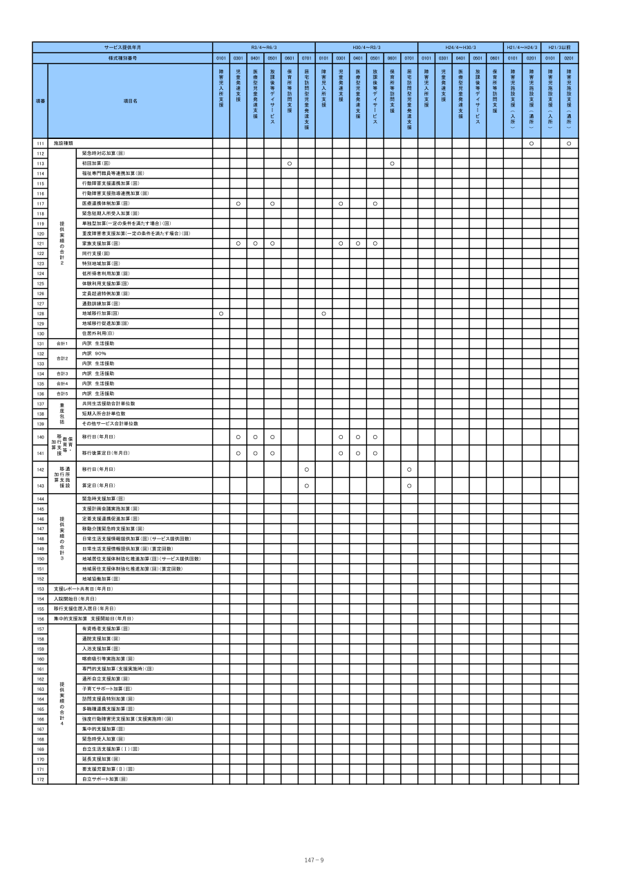
| 項番 | 項目名 | 属性 | 桁数 | 内容 | 必須 | 備考 | その他の列 |
|---|---|---|---|---|---|---|---|
| 111 | 施設種類 | R3/4～R6/3 > 0101 > 障害児入所支援: － R3/4～R6/3 > 0301 > 児童発達支援: － R3/4～R6/3 > 0401 > 医療型児童発達支援: － R3/4～R6/3 > 0501 > 放課後等デイサービス: － R3/4～R6/3 > 0601 > 保育所等訪問支援: － R3/4～R6/3 > 0701 > 居宅訪問型児童発達支援: － H30/4～R3/3 > 0101 > 障害児入所支援: － H30/4～R3/3 > 0301 > 児童発達支援: － H30/4～R3/3 > 0401 > 医療型児童発達支援: － H30/4～R3/3 > 0501 > 放課後等デイサービス: － H30/4～R3/3 > 0601 > 保育所等訪問支援: － H30/4～R3/3 > 0701 > 居宅訪問型児童発達支援: － H24/4～H30/3 > 0101 > 障害児入所支援: － H24/4～H30/3 > 0301 > 児童発達支援: － H24/4～H30/3 > 0401 > 医療型児童発達支援: － H24/4～H30/3 > 0501 > 放課後等デイサービス: － H24/4～H30/3 > 0601 > 保育所等訪問支援: － H21/4～H24/3 > 0101 > 障害児施設支援（入所）: － H21/4～H24/3 > 0201 > 障害児施設支援（通所）: ○ H21/3以前 > 0101 > 障害児施設支援（入所）: － H21/3以前 > 0201 > 障害児施設支援（通所）: ○ | |||||
| 112 | 提供実績の合計２ > 緊急時対応加算(回) | R3/4～R6/3 > 0101 > 障害児入所支援: － R3/4～R6/3 > 0301 > 児童発達支援: － R3/4～R6/3 > 0401 > 医療型児童発達支援: － R3/4～R6/3 > 0501 > 放課後等デイサービス: － R3/4～R6/3 > 0601 > 保育所等訪問支援: － R3/4～R6/3 > 0701 > 居宅訪問型児童発達支援: － H30/4～R3/3 > 0101 > 障害児入所支援: － H30/4～R3/3 > 0301 > 児童発達支援: － H30/4～R3/3 > 0401 > 医療型児童発達支援: － H30/4～R3/3 > 0501 > 放課後等デイサービス: － H30/4～R3/3 > 0601 > 保育所等訪問支援: － H30/4～R3/3 > 0701 > 居宅訪問型児童発達支援: － H24/4～H30/3 > 0101 > 障害児入所支援: － H24/4～H30/3 > 0301 > 児童発達支援: － H24/4～H30/3 > 0401 > 医療型児童発達支援: － H24/4～H30/3 > 0501 > 放課後等デイサービス: － H24/4～H30/3 > 0601 > 保育所等訪問支援: － H21/4～H24/3 > 0101 > 障害児施設支援（入所）: － H21/4～H24/3 > 0201 > 障害児施設支援（通所）: － H21/3以前 > 0101 > 障害児施設支援（入所）: － H21/3以前 > 0201 > 障害児施設支援（通所）: － | |||||
| 113 | 提供実績の合計２ > 初回加算(回) | R3/4～R6/3 > 0101 > 障害児入所支援: － R3/4～R6/3 > 0301 > 児童発達支援: － R3/4～R6/3 > 0401 > 医療型児童発達支援: － R3/4～R6/3 > 0501 > 放課後等デイサービス: － R3/4～R6/3 > 0601 > 保育所等訪問支援: ○ R3/4～R6/3 > 0701 > 居宅訪問型児童発達支援: － H30/4～R3/3 > 0101 > 障害児入所支援: － H30/4～R3/3 > 0301 > 児童発達支援: － H30/4～R3/3 > 0401 > 医療型児童発達支援: － H30/4～R3/3 > 0501 > 放課後等デイサービス: － H30/4～R3/3 > 0601 > 保育所等訪問支援: ○ H30/4～R3/3 > 0701 > 居宅訪問型児童発達支援: － H24/4～H30/3 > 0101 > 障害児入所支援: － H24/4～H30/3 > 0301 > 児童発達支援: － H24/4～H30/3 > 0401 > 医療型児童発達支援: － H24/4～H30/3 > 0501 > 放課後等デイサービス: － H24/4～H30/3 > 0601 > 保育所等訪問支援: － H21/4～H24/3 > 0101 > 障害児施設支援（入所）: － H21/4～H24/3 > 0201 > 障害児施設支援（通所）: － H21/3以前 > 0101 > 障害児施設支援（入所）: － H21/3以前 > 0201 > 障害児施設支援（通所）: － | |||||
| 114 | 提供実績の合計２ > 福祉専門職員等連携加算(回) | R3/4～R6/3 > 0101 > 障害児入所支援: － R3/4～R6/3 > 0301 > 児童発達支援: － R3/4～R6/3 > 0401 > 医療型児童発達支援: － R3/4～R6/3 > 0501 > 放課後等デイサービス: － R3/4～R6/3 > 0601 > 保育所等訪問支援: － R3/4～R6/3 > 0701 > 居宅訪問型児童発達支援: － H30/4～R3/3 > 0101 > 障害児入所支援: － H30/4～R3/3 > 0301 > 児童発達支援: － H30/4～R3/3 > 0401 > 医療型児童発達支援: － H30/4～R3/3 > 0501 > 放課後等デイサービス: － H30/4～R3/3 > 0601 > 保育所等訪問支援: － H30/4～R3/3 > 0701 > 居宅訪問型児童発達支援: － H24/4～H30/3 > 0101 > 障害児入所支援: － H24/4～H30/3 > 0301 > 児童発達支援: － H24/4～H30/3 > 0401 > 医療型児童発達支援: － H24/4～H30/3 > 0501 > 放課後等デイサービス: － H24/4～H30/3 > 0601 > 保育所等訪問支援: － H21/4～H24/3 > 0101 > 障害児施設支援（入所）: － H21/4～H24/3 > 0201 > 障害児施設支援（通所）: － H21/3以前 > 0101 > 障害児施設支援（入所）: － H21/3以前 > 0201 > 障害児施設支援（通所）: － | |||||
| 115 | 提供実績の合計２ > 行動障害支援連携加算(回) | R3/4～R6/3 > 0101 > 障害児入所支援: － R3/4～R6/3 > 0301 > 児童発達支援: － R3/4～R6/3 > 0401 > 医療型児童発達支援: － R3/4～R6/3 > 0501 > 放課後等デイサービス: － R3/4～R6/3 > 0601 > 保育所等訪問支援: － R3/4～R6/3 > 0701 > 居宅訪問型児童発達支援: － H30/4～R3/3 > 0101 > 障害児入所支援: － H30/4～R3/3 > 0301 > 児童発達支援: － H30/4～R3/3 > 0401 > 医療型児童発達支援: － H30/4～R3/3 > 0501 > 放課後等デイサービス: － H30/4～R3/3 > 0601 > 保育所等訪問支援: － H30/4～R3/3 > 0701 > 居宅訪問型児童発達支援: － H24/4～H30/3 > 0101 > 障害児入所支援: － H24/4～H30/3 > 0301 > 児童発達支援: － H24/4～H30/3 > 0401 > 医療型児童発達支援: － H24/4～H30/3 > 0501 > 放課後等デイサービス: － H24/4～H30/3 > 0601 > 保育所等訪問支援: － H21/4～H24/3 > 0101 > 障害児施設支援（入所）: － H21/4～H24/3 > 0201 > 障害児施設支援（通所）: － H21/3以前 > 0101 > 障害児施設支援（入所）: － H21/3以前 > 0201 > 障害児施設支援（通所）: － | |||||
| 116 | 提供実績の合計２ > 行動障害支援指導連携加算(回) | R3/4～R6/3 > 0101 > 障害児入所支援: － R3/4～R6/3 > 0301 > 児童発達支援: － R3/4～R6/3 > 0401 > 医療型児童発達支援: － R3/4～R6/3 > 0501 > 放課後等デイサービス: － R3/4～R6/3 > 0601 > 保育所等訪問支援: － R3/4～R6/3 > 0701 > 居宅訪問型児童発達支援: － H30/4～R3/3 > 0101 > 障害児入所支援: － H30/4～R3/3 > 0301 > 児童発達支援: － H30/4～R3/3 > 0401 > 医療型児童発達支援: － H30/4～R3/3 > 0501 > 放課後等デイサービス: － H30/4～R3/3 > 0601 > 保育所等訪問支援: － H30/4～R3/3 > 0701 > 居宅訪問型児童発達支援: － H24/4～H30/3 > 0101 > 障害児入所支援: － H24/4～H30/3 > 0301 > 児童発達支援: － H24/4～H30/3 > 0401 > 医療型児童発達支援: － H24/4～H30/3 > 0501 > 放課後等デイサービス: － H24/4～H30/3 > 0601 > 保育所等訪問支援: － H21/4～H24/3 > 0101 > 障害児施設支援（入所）: － H21/4～H24/3 > 0201 > 障害児施設支援（通所）: － H21/3以前 > 0101 > 障害児施設支援（入所）: － H21/3以前 > 0201 > 障害児施設支援（通所）: － | |||||
| 117 | 提供実績の合計２ > 医療連携体制加算(回) | R3/4～R6/3 > 0101 > 障害児入所支援: － R3/4～R6/3 > 0301 > 児童発達支援: ○ R3/4～R6/3 > 0401 > 医療型児童発達支援: － R3/4～R6/3 > 0501 > 放課後等デイサービス: ○ R3/4～R6/3 > 0601 > 保育所等訪問支援: － R3/4～R6/3 > 0701 > 居宅訪問型児童発達支援: － H30/4～R3/3 > 0101 > 障害児入所支援: － H30/4～R3/3 > 0301 > 児童発達支援: ○ H30/4～R3/3 > 0401 > 医療型児童発達支援: － H30/4～R3/3 > 0501 > 放課後等デイサービス: ○ H30/4～R3/3 > 0601 > 保育所等訪問支援: － H30/4～R3/3 > 0701 > 居宅訪問型児童発達支援: － H24/4～H30/3 > 0101 > 障害児入所支援: － H24/4～H30/3 > 0301 > 児童発達支援: － H24/4～H30/3 > 0401 > 医療型児童発達支援: － H24/4～H30/3 > 0501 > 放課後等デイサービス: － H24/4～H30/3 > 0601 > 保育所等訪問支援: － H21/4～H24/3 > 0101 > 障害児施設支援（入所）: － H21/4～H24/3 > 0201 > 障害児施設支援（通所）: － H21/3以前 > 0101 > 障害児施設支援（入所）: － H21/3以前 > 0201 > 障害児施設支援（通所）: － | |||||
| 118 | 提供実績の合計２ > 緊急短期入所受入加算(回) | R3/4～R6/3 > 0101 > 障害児入所支援: － R3/4～R6/3 > 0301 > 児童発達支援: － R3/4～R6/3 > 0401 > 医療型児童発達支援: － R3/4～R6/3 > 0501 > 放課後等デイサービス: － R3/4～R6/3 > 0601 > 保育所等訪問支援: － R3/4～R6/3 > 0701 > 居宅訪問型児童発達支援: － H30/4～R3/3 > 0101 > 障害児入所支援: － H30/4～R3/3 > 0301 > 児童発達支援: － H30/4～R3/3 > 0401 > 医療型児童発達支援: － H30/4～R3/3 > 0501 > 放課後等デイサービス: － H30/4～R3/3 > 0601 > 保育所等訪問支援: － H30/4～R3/3 > 0701 > 居宅訪問型児童発達支援: － H24/4～H30/3 > 0101 > 障害児入所支援: － H24/4～H30/3 > 0301 > 児童発達支援: － H24/4～H30/3 > 0401 > 医療型児童発達支援: － H24/4～H30/3 > 0501 > 放課後等デイサービス: － H24/4～H30/3 > 0601 > 保育所等訪問支援: － H21/4～H24/3 > 0101 > 障害児施設支援（入所）: － H21/4～H24/3 > 0201 > 障害児施設支援（通所）: － H21/3以前 > 0101 > 障害児施設支援（入所）: － H21/3以前 > 0201 > 障害児施設支援（通所）: － | |||||
| 119 | 提供実績の合計２ > 単独型加算(一定の条件を満たす場合)(回) | R3/4～R6/3 > 0101 > 障害児入所支援: － R3/4～R6/3 > 0301 > 児童発達支援: － R3/4～R6/3 > 0401 > 医療型児童発達支援: － R3/4～R6/3 > 0501 > 放課後等デイサービス: － R3/4～R6/3 > 0601 > 保育所等訪問支援: － R3/4～R6/3 > 0701 > 居宅訪問型児童発達支援: － H30/4～R3/3 > 0101 > 障害児入所支援: － H30/4～R3/3 > 0301 > 児童発達支援: － H30/4～R3/3 > 0401 > 医療型児童発達支援: － H30/4～R3/3 > 0501 > 放課後等デイサービス: － H30/4～R3/3 > 0601 > 保育所等訪問支援: － H30/4～R3/3 > 0701 > 居宅訪問型児童発達支援: － H24/4～H30/3 > 0101 > 障害児入所支援: － H24/4～H30/3 > 0301 > 児童発達支援: － H24/4～H30/3 > 0401 > 医療型児童発達支援: － H24/4～H30/3 > 0501 > 放課後等デイサービス: － H24/4～H30/3 > 0601 > 保育所等訪問支援: － H21/4～H24/3 > 0101 > 障害児施設支援（入所）: － H21/4～H24/3 > 0201 > 障害児施設支援（通所）: － H21/3以前 > 0101 > 障害児施設支援（入所）: － H21/3以前 > 0201 > 障害児施設支援（通所）: － | |||||
| 120 | 提供実績の合計２ > 重度障害者支援加算(一定の条件を満たす場合)(回) | R3/4～R6/3 > 0101 > 障害児入所支援: － R3/4～R6/3 > 0301 > 児童発達支援: － R3/4～R6/3 > 0401 > 医療型児童発達支援: － R3/4～R6/3 > 0501 > 放課後等デイサービス: － R3/4～R6/3 > 0601 > 保育所等訪問支援: － R3/4～R6/3 > 0701 > 居宅訪問型児童発達支援: － H30/4～R3/3 > 0101 > 障害児入所支援: － H30/4～R3/3 > 0301 > 児童発達支援: － H30/4～R3/3 > 0401 > 医療型児童発達支援: － H30/4～R3/3 > 0501 > 放課後等デイサービス: － H30/4～R3/3 > 0601 > 保育所等訪問支援: － H30/4～R3/3 > 0701 > 居宅訪問型児童発達支援: － H24/4～H30/3 > 0101 > 障害児入所支援: － H24/4～H30/3 > 0301 > 児童発達支援: － H24/4～H30/3 > 0401 > 医療型児童発達支援: － H24/4～H30/3 > 0501 > 放課後等デイサービス: － H24/4～H30/3 > 0601 > 保育所等訪問支援: － H21/4～H24/3 > 0101 > 障害児施設支援（入所）: － H21/4～H24/3 > 0201 > 障害児施設支援（通所）: － H21/3以前 > 0101 > 障害児施設支援（入所）: － H21/3以前 > 0201 > 障害児施設支援（通所）: － | |||||
| 121 | 提供実績の合計２ > 家族支援加算(回) | R3/4～R6/3 > 0101 > 障害児入所支援: － R3/4～R6/3 > 0301 > 児童発達支援: ○ R3/4～R6/3 > 0401 > 医療型児童発達支援: ○ R3/4～R6/3 > 0501 > 放課後等デイサービス: ○ R3/4～R6/3 > 0601 > 保育所等訪問支援: － R3/4～R6/3 > 0701 > 居宅訪問型児童発達支援: － H30/4～R3/3 > 0101 > 障害児入所支援: － H30/4～R3/3 > 0301 > 児童発達支援: ○ H30/4～R3/3 > 0401 > 医療型児童発達支援: ○ H30/4～R3/3 > 0501 > 放課後等デイサービス: ○ H30/4～R3/3 > 0601 > 保育所等訪問支援: － H30/4～R3/3 > 0701 > 居宅訪問型児童発達支援: － H24/4～H30/3 > 0101 > 障害児入所支援: － H24/4～H30/3 > 0301 > 児童発達支援: － H24/4～H30/3 > 0401 > 医療型児童発達支援: － H24/4～H30/3 > 0501 > 放課後等デイサービス: － H24/4～H30/3 > 0601 > 保育所等訪問支援: － H21/4～H24/3 > 0101 > 障害児施設支援（入所）: － H21/4～H24/3 > 0201 > 障害児施設支援（通所）: － H21/3以前 > 0101 > 障害児施設支援（入所）: － H21/3以前 > 0201 > 障害児施設支援（通所）: － | |||||
| 122 | 提供実績の合計２ > 同行支援(回) | R3/4～R6/3 > 0101 > 障害児入所支援: － R3/4～R6/3 > 0301 > 児童発達支援: － R3/4～R6/3 > 0401 > 医療型児童発達支援: － R3/4～R6/3 > 0501 > 放課後等デイサービス: － R3/4～R6/3 > 0601 > 保育所等訪問支援: － R3/4～R6/3 > 0701 > 居宅訪問型児童発達支援: － H30/4～R3/3 > 0101 > 障害児入所支援: － H30/4～R3/3 > 0301 > 児童発達支援: － H30/4～R3/3 > 0401 > 医療型児童発達支援: － H30/4～R3/3 > 0501 > 放課後等デイサービス: － H30/4～R3/3 > 0601 > 保育所等訪問支援: － H30/4～R3/3 > 0701 > 居宅訪問型児童発達支援: － H24/4～H30/3 > 0101 > 障害児入所支援: － H24/4～H30/3 > 0301 > 児童発達支援: － H24/4～H30/3 > 0401 > 医療型児童発達支援: － H24/4～H30/3 > 0501 > 放課後等デイサービス: － H24/4～H30/3 > 0601 > 保育所等訪問支援: － H21/4～H24/3 > 0101 > 障害児施設支援（入所）: － H21/4～H24/3 > 0201 > 障害児施設支援（通所）: － H21/3以前 > 0101 > 障害児施設支援（入所）: － H21/3以前 > 0201 > 障害児施設支援（通所）: － | |||||
| 123 | 提供実績の合計２ > 特別地域加算(回) | R3/4～R6/3 > 0101 > 障害児入所支援: － R3/4～R6/3 > 0301 > 児童発達支援: － R3/4～R6/3 > 0401 > 医療型児童発達支援: － R3/4～R6/3 > 0501 > 放課後等デイサービス: － R3/4～R6/3 > 0601 > 保育所等訪問支援: － R3/4～R6/3 > 0701 > 居宅訪問型児童発達支援: － H30/4～R3/3 > 0101 > 障害児入所支援: － H30/4～R3/3 > 0301 > 児童発達支援: － H30/4～R3/3 > 0401 > 医療型児童発達支援: － H30/4～R3/3 > 0501 > 放課後等デイサービス: － H30/4～R3/3 > 0601 > 保育所等訪問支援: － H30/4～R3/3 > 0701 > 居宅訪問型児童発達支援: － H24/4～H30/3 > 0101 > 障害児入所支援: － H24/4～H30/3 > 0301 > 児童発達支援: － H24/4～H30/3 > 0401 > 医療型児童発達支援: － H24/4～H30/3 > 0501 > 放課後等デイサービス: － H24/4～H30/3 > 0601 > 保育所等訪問支援: － H21/4～H24/3 > 0101 > 障害児施設支援（入所）: － H21/4～H24/3 > 0201 > 障害児施設支援（通所）: － H21/3以前 > 0101 > 障害児施設支援（入所）: － H21/3以前 > 0201 > 障害児施設支援（通所）: － | |||||
| 124 | 提供実績の合計２ > 低所得者利用加算(回) | R3/4～R6/3 > 0101 > 障害児入所支援: － R3/4～R6/3 > 0301 > 児童発達支援: － R3/4～R6/3 > 0401 > 医療型児童発達支援: － R3/4～R6/3 > 0501 > 放課後等デイサービス: － R3/4～R6/3 > 0601 > 保育所等訪問支援: － R3/4～R6/3 > 0701 > 居宅訪問型児童発達支援: － H30/4～R3/3 > 0101 > 障害児入所支援: － H30/4～R3/3 > 0301 > 児童発達支援: － H30/4～R3/3 > 0401 > 医療型児童発達支援: － H30/4～R3/3 > 0501 > 放課後等デイサービス: － H30/4～R3/3 > 0601 > 保育所等訪問支援: － H30/4～R3/3 > 0701 > 居宅訪問型児童発達支援: － H24/4～H30/3 > 0101 > 障害児入所支援: － H24/4～H30/3 > 0301 > 児童発達支援: － H24/4～H30/3 > 0401 > 医療型児童発達支援: － H24/4～H30/3 > 0501 > 放課後等デイサービス: － H24/4～H30/3 > 0601 > 保育所等訪問支援: － H21/4～H24/3 > 0101 > 障害児施設支援（入所）: － H21/4～H24/3 > 0201 > 障害児施設支援（通所）: － H21/3以前 > 0101 > 障害児施設支援（入所）: － H21/3以前 > 0201 > 障害児施設支援（通所）: － | |||||
| 125 | 提供実績の合計２ > 体験利用支援加算(回) | R3/4～R6/3 > 0101 > 障害児入所支援: － R3/4～R6/3 > 0301 > 児童発達支援: － R3/4～R6/3 > 0401 > 医療型児童発達支援: － R3/4～R6/3 > 0501 > 放課後等デイサービス: － R3/4～R6/3 > 0601 > 保育所等訪問支援: － R3/4～R6/3 > 0701 > 居宅訪問型児童発達支援: － H30/4～R3/3 > 0101 > 障害児入所支援: － H30/4～R3/3 > 0301 > 児童発達支援: － H30/4～R3/3 > 0401 > 医療型児童発達支援: － H30/4～R3/3 > 0501 > 放課後等デイサービス: － H30/4～R3/3 > 0601 > 保育所等訪問支援: － H30/4～R3/3 > 0701 > 居宅訪問型児童発達支援: － H24/4～H30/3 > 0101 > 障害児入所支援: － H24/4～H30/3 > 0301 > 児童発達支援: － H24/4～H30/3 > 0401 > 医療型児童発達支援: － H24/4～H30/3 > 0501 > 放課後等デイサービス: － H24/4～H30/3 > 0601 > 保育所等訪問支援: － H21/4～H24/3 > 0101 > 障害児施設支援（入所）: － H21/4～H24/3 > 0201 > 障害児施設支援（通所）: － H21/3以前 > 0101 > 障害児施設支援（入所）: － H21/3以前 > 0201 > 障害児施設支援（通所）: － | |||||
| 126 | 提供実績の合計２ > 定員超過特例加算(回) | R3/4～R6/3 > 0101 > 障害児入所支援: － R3/4～R6/3 > 0301 > 児童発達支援: － R3/4～R6/3 > 0401 > 医療型児童発達支援: － R3/4～R6/3 > 0501 > 放課後等デイサービス: － R3/4～R6/3 > 0601 > 保育所等訪問支援: － R3/4～R6/3 > 0701 > 居宅訪問型児童発達支援: － H30/4～R3/3 > 0101 > 障害児入所支援: － H30/4～R3/3 > 0301 > 児童発達支援: － H30/4～R3/3 > 0401 > 医療型児童発達支援: － H30/4～R3/3 > 0501 > 放課後等デイサービス: － H30/4～R3/3 > 0601 > 保育所等訪問支援: － H30/4～R3/3 > 0701 > 居宅訪問型児童発達支援: － H24/4～H30/3 > 0101 > 障害児入所支援: － H24/4～H30/3 > 0301 > 児童発達支援: － H24/4～H30/3 > 0401 > 医療型児童発達支援: － H24/4～H30/3 > 0501 > 放課後等デイサービス: － H24/4～H30/3 > 0601 > 保育所等訪問支援: － H21/4～H24/3 > 0101 > 障害児施設支援（入所）: － H21/4～H24/3 > 0201 > 障害児施設支援（通所）: － H21/3以前 > 0101 > 障害児施設支援（入所）: － H21/3以前 > 0201 > 障害児施設支援（通所）: － | |||||
| 127 | 提供実績の合計２ > 通勤訓練加算(回) | R3/4～R6/3 > 0101 > 障害児入所支援: － R3/4～R6/3 > 0301 > 児童発達支援: － R3/4～R6/3 > 0401 > 医療型児童発達支援: － R3/4～R6/3 > 0501 > 放課後等デイサービス: － R3/4～R6/3 > 0601 > 保育所等訪問支援: － R3/4～R6/3 > 0701 > 居宅訪問型児童発達支援: － H30/4～R3/3 > 0101 > 障害児入所支援: － H30/4～R3/3 > 0301 > 児童発達支援: － H30/4～R3/3 > 0401 > 医療型児童発達支援: － H30/4～R3/3 > 0501 > 放課後等デイサービス: － H30/4～R3/3 > 0601 > 保育所等訪問支援: － H30/4～R3/3 > 0701 > 居宅訪問型児童発達支援: － H24/4～H30/3 > 0101 > 障害児入所支援: － H24/4～H30/3 > 0301 > 児童発達支援: － H24/4～H30/3 > 0401 > 医療型児童発達支援: － H24/4～H30/3 > 0501 > 放課後等デイサービス: － H24/4～H30/3 > 0601 > 保育所等訪問支援: － H21/4～H24/3 > 0101 > 障害児施設支援（入所）: － H21/4～H24/3 > 0201 > 障害児施設支援（通所）: － H21/3以前 > 0101 > 障害児施設支援（入所）: － H21/3以前 > 0201 > 障害児施設支援（通所）: － | |||||
| 128 | 提供実績の合計２ > 地域移行加算(回) | R3/4～R6/3 > 0101 > 障害児入所支援: ○ R3/4～R6/3 > 0301 > 児童発達支援: － R3/4～R6/3 > 0401 > 医療型児童発達支援: － R3/4～R6/3 > 0501 > 放課後等デイサービス: － R3/4～R6/3 > 0601 > 保育所等訪問支援: － R3/4～R6/3 > 0701 > 居宅訪問型児童発達支援: － H30/4～R3/3 > 0101 > 障害児入所支援: ○ H30/4～R3/3 > 0301 > 児童発達支援: － H30/4～R3/3 > 0401 > 医療型児童発達支援: － H30/4～R3/3 > 0501 > 放課後等デイサービス: － H30/4～R3/3 > 0601 > 保育所等訪問支援: － H30/4～R3/3 > 0701 > 居宅訪問型児童発達支援: － H24/4～H30/3 > 0101 > 障害児入所支援: － H24/4～H30/3 > 0301 > 児童発達支援: － H24/4～H30/3 > 0401 > 医療型児童発達支援: － H24/4～H30/3 > 0501 > 放課後等デイサービス: － H24/4～H30/3 > 0601 > 保育所等訪問支援: － H21/4～H24/3 > 0101 > 障害児施設支援（入所）: － H21/4～H24/3 > 0201 > 障害児施設支援（通所）: － H21/3以前 > 0101 > 障害児施設支援（入所）: － H21/3以前 > 0201 > 障害児施設支援（通所）: － | |||||
| 129 | 提供実績の合計２ > 地域移行促進加算(回) | R3/4～R6/3 > 0101 > 障害児入所支援: － R3/4～R6/3 > 0301 > 児童発達支援: － R3/4～R6/3 > 0401 > 医療型児童発達支援: － R3/4～R6/3 > 0501 > 放課後等デイサービス: － R3/4～R6/3 > 0601 > 保育所等訪問支援: － R3/4～R6/3 > 0701 > 居宅訪問型児童発達支援: － H30/4～R3/3 > 0101 > 障害児入所支援: － H30/4～R3/3 > 0301 > 児童発達支援: － H30/4～R3/3 > 0401 > 医療型児童発達支援: － H30/4～R3/3 > 0501 > 放課後等デイサービス: － H30/4～R3/3 > 0601 > 保育所等訪問支援: － H30/4～R3/3 > 0701 > 居宅訪問型児童発達支援: － H24/4～H30/3 > 0101 > 障害児入所支援: － H24/4～H30/3 > 0301 > 児童発達支援: － H24/4～H30/3 > 0401 > 医療型児童発達支援: － H24/4～H30/3 > 0501 > 放課後等デイサービス: － H24/4～H30/3 > 0601 > 保育所等訪問支援: － H21/4～H24/3 > 0101 > 障害児施設支援（入所）: － H21/4～H24/3 > 0201 > 障害児施設支援（通所）: － H21/3以前 > 0101 > 障害児施設支援（入所）: － H21/3以前 > 0201 > 障害児施設支援（通所）: － | |||||
| 130 | 提供実績の合計２ > 住居外利用(日) | R3/4～R6/3 > 0101 > 障害児入所支援: － R3/4～R6/3 > 0301 > 児童発達支援: － R3/4～R6/3 > 0401 > 医療型児童発達支援: － R3/4～R6/3 > 0501 > 放課後等デイサービス: － R3/4～R6/3 > 0601 > 保育所等訪問支援: － R3/4～R6/3 > 0701 > 居宅訪問型児童発達支援: － H30/4～R3/3 > 0101 > 障害児入所支援: － H30/4～R3/3 > 0301 > 児童発達支援: － H30/4～R3/3 > 0401 > 医療型児童発達支援: － H30/4～R3/3 > 0501 > 放課後等デイサービス: － H30/4～R3/3 > 0601 > 保育所等訪問支援: － H30/4～R3/3 > 0701 > 居宅訪問型児童発達支援: － H24/4～H30/3 > 0101 > 障害児入所支援: － H24/4～H30/3 > 0301 > 児童発達支援: － H24/4～H30/3 > 0401 > 医療型児童発達支援: － H24/4～H30/3 > 0501 > 放課後等デイサービス: － H24/4～H30/3 > 0601 > 保育所等訪問支援: － H21/4～H24/3 > 0101 > 障害児施設支援（入所）: － H21/4～H24/3 > 0201 > 障害児施設支援（通所）: － H21/3以前 > 0101 > 障害児施設支援（入所）: － H21/3以前 > 0201 > 障害児施設支援（通所）: － | |||||
| 131 | 合計1 > 内訳 生活援助 | R3/4～R6/3 > 0101 > 障害児入所支援: － R3/4～R6/3 > 0301 > 児童発達支援: － R3/4～R6/3 > 0401 > 医療型児童発達支援: － R3/4～R6/3 > 0501 > 放課後等デイサービス: － R3/4～R6/3 > 0601 > 保育所等訪問支援: － R3/4～R6/3 > 0701 > 居宅訪問型児童発達支援: － H30/4～R3/3 > 0101 > 障害児入所支援: － H30/4～R3/3 > 0301 > 児童発達支援: － H30/4～R3/3 > 0401 > 医療型児童発達支援: － H30/4～R3/3 > 0501 > 放課後等デイサービス: － H30/4～R3/3 > 0601 > 保育所等訪問支援: － H30/4～R3/3 > 0701 > 居宅訪問型児童発達支援: － H24/4～H30/3 > 0101 > 障害児入所支援: － H24/4～H30/3 > 0301 > 児童発達支援: － H24/4～H30/3 > 0401 > 医療型児童発達支援: － H24/4～H30/3 > 0501 > 放課後等デイサービス: － H24/4～H30/3 > 0601 > 保育所等訪問支援: － H21/4～H24/3 > 0101 > 障害児施設支援（入所）: － H21/4～H24/3 > 0201 > 障害児施設支援（通所）: － H21/3以前 > 0101 > 障害児施設支援（入所）: － H21/3以前 > 0201 > 障害児施設支援（通所）: － | |||||
| 132 | 合計2 > 内訳 90% | R3/4～R6/3 > 0101 > 障害児入所支援: － R3/4～R6/3 > 0301 > 児童発達支援: － R3/4～R6/3 > 0401 > 医療型児童発達支援: － R3/4～R6/3 > 0501 > 放課後等デイサービス: － R3/4～R6/3 > 0601 > 保育所等訪問支援: － R3/4～R6/3 > 0701 > 居宅訪問型児童発達支援: － H30/4～R3/3 > 0101 > 障害児入所支援: － H30/4～R3/3 > 0301 > 児童発達支援: － H30/4～R3/3 > 0401 > 医療型児童発達支援: － H30/4～R3/3 > 0501 > 放課後等デイサービス: － H30/4～R3/3 > 0601 > 保育所等訪問支援: － H30/4～R3/3 > 0701 > 居宅訪問型児童発達支援: － H24/4～H30/3 > 0101 > 障害児入所支援: － H24/4～H30/3 > 0301 > 児童発達支援: － H24/4～H30/3 > 0401 > 医療型児童発達支援: － H24/4～H30/3 > 0501 > 放課後等デイサービス: － H24/4～H30/3 > 0601 > 保育所等訪問支援: － H21/4～H24/3 > 0101 > 障害児施設支援（入所）: － H21/4～H24/3 > 0201 > 障害児施設支援（通所）: － H21/3以前 > 0101 > 障害児施設支援（入所）: － H21/3以前 > 0201 > 障害児施設支援（通所）: － | |||||
| 133 | 合計2 > 内訳 生活援助 | R3/4～R6/3 > 0101 > 障害児入所支援: － R3/4～R6/3 > 0301 > 児童発達支援: － R3/4～R6/3 > 0401 > 医療型児童発達支援: － R3/4～R6/3 > 0501 > 放課後等デイサービス: － R3/4～R6/3 > 0601 > 保育所等訪問支援: － R3/4～R6/3 > 0701 > 居宅訪問型児童発達支援: － H30/4～R3/3 > 0101 > 障害児入所支援: － H30/4～R3/3 > 0301 > 児童発達支援: － H30/4～R3/3 > 0401 > 医療型児童発達支援: － H30/4～R3/3 > 0501 > 放課後等デイサービス: － H30/4～R3/3 > 0601 > 保育所等訪問支援: － H30/4～R3/3 > 0701 > 居宅訪問型児童発達支援: － H24/4～H30/3 > 0101 > 障害児入所支援: － H24/4～H30/3 > 0301 > 児童発達支援: － H24/4～H30/3 > 0401 > 医療型児童発達支援: － H24/4～H30/3 > 0501 > 放課後等デイサービス: － H24/4～H30/3 > 0601 > 保育所等訪問支援: － H21/4～H24/3 > 0101 > 障害児施設支援（入所）: － H21/4～H24/3 > 0201 > 障害児施設支援（通所）: － H21/3以前 > 0101 > 障害児施設支援（入所）: － H21/3以前 > 0201 > 障害児施設支援（通所）: － | |||||
| 134 | 合計3 > 内訳 生活援助 | R3/4～R6/3 > 0101 > 障害児入所支援: － R3/4～R6/3 > 0301 > 児童発達支援: － R3/4～R6/3 > 0401 > 医療型児童発達支援: － R3/4～R6/3 > 0501 > 放課後等デイサービス: － R3/4～R6/3 > 0601 > 保育所等訪問支援: － R3/4～R6/3 > 0701 > 居宅訪問型児童発達支援: － H30/4～R3/3 > 0101 > 障害児入所支援: － H30/4～R3/3 > 0301 > 児童発達支援: － H30/4～R3/3 > 0401 > 医療型児童発達支援: － H30/4～R3/3 > 0501 > 放課後等デイサービス: － H30/4～R3/3 > 0601 > 保育所等訪問支援: － H30/4～R3/3 > 0701 > 居宅訪問型児童発達支援: － H24/4～H30/3 > 0101 > 障害児入所支援: － H24/4～H30/3 > 0301 > 児童発達支援: － H24/4～H30/3 > 0401 > 医療型児童発達支援: － H24/4～H30/3 > 0501 > 放課後等デイサービス: － H24/4～H30/3 > 0601 > 保育所等訪問支援: － H21/4～H24/3 > 0101 > 障害児施設支援（入所）: － H21/4～H24/3 > 0201 > 障害児施設支援（通所）: － H21/3以前 > 0101 > 障害児施設支援（入所）: － H21/3以前 > 0201 > 障害児施設支援（通所）: － | |||||
| 135 | 合計4 > 内訳 生活援助 | R3/4～R6/3 > 0101 > 障害児入所支援: － R3/4～R6/3 > 0301 > 児童発達支援: － R3/4～R6/3 > 0401 > 医療型児童発達支援: － R3/4～R6/3 > 0501 > 放課後等デイサービス: － R3/4～R6/3 > 0601 > 保育所等訪問支援: － R3/4～R6/3 > 0701 > 居宅訪問型児童発達支援: － H30/4～R3/3 > 0101 > 障害児入所支援: － H30/4～R3/3 > 0301 > 児童発達支援: － H30/4～R3/3 > 0401 > 医療型児童発達支援: － H30/4～R3/3 > 0501 > 放課後等デイサービス: － H30/4～R3/3 > 0601 > 保育所等訪問支援: － H30/4～R3/3 > 0701 > 居宅訪問型児童発達支援: － H24/4～H30/3 > 0101 > 障害児入所支援: － H24/4～H30/3 > 0301 > 児童発達支援: － H24/4～H30/3 > 0401 > 医療型児童発達支援: － H24/4～H30/3 > 0501 > 放課後等デイサービス: － H24/4～H30/3 > 0601 > 保育所等訪問支援: － H21/4～H24/3 > 0101 > 障害児施設支援（入所）: － H21/4～H24/3 > 0201 > 障害児施設支援（通所）: － H21/3以前 > 0101 > 障害児施設支援（入所）: － H21/3以前 > 0201 > 障害児施設支援（通所）: － | |||||
| 136 | 合計5 > 内訳 生活援助 | R3/4～R6/3 > 0101 > 障害児入所支援: － R3/4～R6/3 > 0301 > 児童発達支援: － R3/4～R6/3 > 0401 > 医療型児童発達支援: － R3/4～R6/3 > 0501 > 放課後等デイサービス: － R3/4～R6/3 > 0601 > 保育所等訪問支援: － R3/4～R6/3 > 0701 > 居宅訪問型児童発達支援: － H30/4～R3/3 > 0101 > 障害児入所支援: － H30/4～R3/3 > 0301 > 児童発達支援: － H30/4～R3/3 > 0401 > 医療型児童発達支援: － H30/4～R3/3 > 0501 > 放課後等デイサービス: － H30/4～R3/3 > 0601 > 保育所等訪問支援: － H30/4～R3/3 > 0701 > 居宅訪問型児童発達支援: － H24/4～H30/3 > 0101 > 障害児入所支援: － H24/4～H30/3 > 0301 > 児童発達支援: － H24/4～H30/3 > 0401 > 医療型児童発達支援: － H24/4～H30/3 > 0501 > 放課後等デイサービス: － H24/4～H30/3 > 0601 > 保育所等訪問支援: － H21/4～H24/3 > 0101 > 障害児施設支援（入所）: － H21/4～H24/3 > 0201 > 障害児施設支援（通所）: － H21/3以前 > 0101 > 障害児施設支援（入所）: － H21/3以前 > 0201 > 障害児施設支援（通所）: － | |||||
| 137 | 重度包括 > 共同生活援助合計単位数 | R3/4～R6/3 > 0101 > 障害児入所支援: － R3/4～R6/3 > 0301 > 児童発達支援: － R3/4～R6/3 > 0401 > 医療型児童発達支援: － R3/4～R6/3 > 0501 > 放課後等デイサービス: － R3/4～R6/3 > 0601 > 保育所等訪問支援: － R3/4～R6/3 > 0701 > 居宅訪問型児童発達支援: － H30/4～R3/3 > 0101 > 障害児入所支援: － H30/4～R3/3 > 0301 > 児童発達支援: － H30/4～R3/3 > 0401 > 医療型児童発達支援: － H30/4～R3/3 > 0501 > 放課後等デイサービス: － H30/4～R3/3 > 0601 > 保育所等訪問支援: － H30/4～R3/3 > 0701 > 居宅訪問型児童発達支援: － H24/4～H30/3 > 0101 > 障害児入所支援: － H24/4～H30/3 > 0301 > 児童発達支援: － H24/4～H30/3 > 0401 > 医療型児童発達支援: － H24/4～H30/3 > 0501 > 放課後等デイサービス: － H24/4～H30/3 > 0601 > 保育所等訪問支援: － H21/4～H24/3 > 0101 > 障害児施設支援（入所）: － H21/4～H24/3 > 0201 > 障害児施設支援（通所）: － H21/3以前 > 0101 > 障害児施設支援（入所）: － H21/3以前 > 0201 > 障害児施設支援（通所）: － | |||||
| 138 | 重度包括 > 短期入所合計単位数 | R3/4～R6/3 > 0101 > 障害児入所支援: － R3/4～R6/3 > 0301 > 児童発達支援: － R3/4～R6/3 > 0401 > 医療型児童発達支援: － R3/4～R6/3 > 0501 > 放課後等デイサービス: － R3/4～R6/3 > 0601 > 保育所等訪問支援: － R3/4～R6/3 > 0701 > 居宅訪問型児童発達支援: － H30/4～R3/3 > 0101 > 障害児入所支援: － H30/4～R3/3 > 0301 > 児童発達支援: － H30/4～R3/3 > 0401 > 医療型児童発達支援: － H30/4～R3/3 > 0501 > 放課後等デイサービス: － H30/4～R3/3 > 0601 > 保育所等訪問支援: － H30/4～R3/3 > 0701 > 居宅訪問型児童発達支援: － H24/4～H30/3 > 0101 > 障害児入所支援: － H24/4～H30/3 > 0301 > 児童発達支援: － H24/4～H30/3 > 0401 > 医療型児童発達支援: － H24/4～H30/3 > 0501 > 放課後等デイサービス: － H24/4～H30/3 > 0601 > 保育所等訪問支援: － H21/4～H24/3 > 0101 > 障害児施設支援（入所）: － H21/4～H24/3 > 0201 > 障害児施設支援（通所）: － H21/3以前 > 0101 > 障害児施設支援（入所）: － H21/3以前 > 0201 > 障害児施設支援（通所）: － | |||||
| 139 | 重度包括 > その他サービス合計単位数 | R3/4～R6/3 > 0101 > 障害児入所支援: － R3/4～R6/3 > 0301 > 児童発達支援: － R3/4～R6/3 > 0401 > 医療型児童発達支援: － R3/4～R6/3 > 0501 > 放課後等デイサービス: － R3/4～R6/3 > 0601 > 保育所等訪問支援: － R3/4～R6/3 > 0701 > 居宅訪問型児童発達支援: － H30/4～R3/3 > 0101 > 障害児入所支援: － H30/4～R3/3 > 0301 > 児童発達支援: － H30/4～R3/3 > 0401 > 医療型児童発達支援: － H30/4～R3/3 > 0501 > 放課後等デイサービス: － H30/4～R3/3 > 0601 > 保育所等訪問支援: － H30/4～R3/3 > 0701 > 居宅訪問型児童発達支援: － H24/4～H30/3 > 0101 > 障害児入所支援: － H24/4～H30/3 > 0301 > 児童発達支援: － H24/4～H30/3 > 0401 > 医療型児童発達支援: － H24/4～H30/3 > 0501 > 放課後等デイサービス: － H24/4～H30/3 > 0601 > 保育所等訪問支援: － H21/4～H24/3 > 0101 > 障害児施設支援（入所）: － H21/4～H24/3 > 0201 > 障害児施設支援（通所）: － H21/3以前 > 0101 > 障害児施設支援（入所）: － H21/3以前 > 0201 > 障害児施設支援（通所）: － | |||||
| 140 | 移行加算支援 > 移行日（年月日） | R3/4～R6/3 > 0101 > 障害児入所支援: － R3/4～R6/3 > 0301 > 児童発達支援: ○ R3/4～R6/3 > 0401 > 医療型児童発達支援: ○ R3/4～R6/3 > 0501 > 放課後等デイサービス: ○ R3/4～R6/3 > 0601 > 保育所等訪問支援: － R3/4～R6/3 > 0701 > 居宅訪問型児童発達支援: － H30/4～R3/3 > 0101 > 障害児入所支援: － H30/4～R3/3 > 0301 > 児童発達支援: ○ H30/4～R3/3 > 0401 > 医療型児童発達支援: ○ H30/4～R3/3 > 0501 > 放課後等デイサービス: ○ H30/4～R3/3 > 0601 > 保育所等訪問支援: － H30/4～R3/3 > 0701 > 居宅訪問型児童発達支援: － H24/4～H30/3 > 0101 > 障害児入所支援: － H24/4～H30/3 > 0301 > 児童発達支援: － H24/4～H30/3 > 0401 > 医療型児童発達支援: － H24/4～H30/3 > 0501 > 放課後等デイサービス: － H24/4～H30/3 > 0601 > 保育所等訪問支援: － H21/4～H24/3 > 0101 > 障害児施設支援（入所）: － H21/4～H24/3 > 0201 > 障害児施設支援（通所）: － H21/3以前 > 0101 > 障害児施設支援（入所）: － H21/3以前 > 0201 > 障害児施設支援（通所）: － | |||||
| 141 | 移行加算支援 > 移行後算定日（年月日） | R3/4～R6/3 > 0101 > 障害児入所支援: － R3/4～R6/3 > 0301 > 児童発達支援: ○ R3/4～R6/3 > 0401 > 医療型児童発達支援: ○ R3/4～R6/3 > 0501 > 放課後等デイサービス: ○ R3/4～R6/3 > 0601 > 保育所等訪問支援: － R3/4～R6/3 > 0701 > 居宅訪問型児童発達支援: － H30/4～R3/3 > 0101 > 障害児入所支援: － H30/4～R3/3 > 0301 > 児童発達支援: ○ H30/4～R3/3 > 0401 > 医療型児童発達支援: ○ H30/4～R3/3 > 0501 > 放課後等デイサービス: ○ H30/4～R3/3 > 0601 > 保育所等訪問支援: － H30/4～R3/3 > 0701 > 居宅訪問型児童発達支援: － H24/4～H30/3 > 0101 > 障害児入所支援: － H24/4～H30/3 > 0301 > 児童発達支援: － H24/4～H30/3 > 0401 > 医療型児童発達支援: － H24/4～H30/3 > 0501 > 放課後等デイサービス: － H24/4～H30/3 > 0601 > 保育所等訪問支援: － H21/4～H24/3 > 0101 > 障害児施設支援（入所）: － H21/4～H24/3 > 0201 > 障害児施設支援（通所）: － H21/3以前 > 0101 > 障害児施設支援（入所）: － H21/3以前 > 0201 > 障害児施設支援（通所）: － | |||||
| 142 | 移行通所加算支援施設 > 移行日（年月日） | R3/4～R6/3 > 0101 > 障害児入所支援: － R3/4～R6/3 > 0301 > 児童発達支援: － R3/4～R6/3 > 0401 > 医療型児童発達支援: － R3/4～R6/3 > 0501 > 放課後等デイサービス: － R3/4～R6/3 > 0601 > 保育所等訪問支援: － R3/4～R6/3 > 0701 > 居宅訪問型児童発達支援: ○ H30/4～R3/3 > 0101 > 障害児入所支援: － H30/4～R3/3 > 0301 > 児童発達支援: － H30/4～R3/3 > 0401 > 医療型児童発達支援: － H30/4～R3/3 > 0501 > 放課後等デイサービス: － H30/4～R3/3 > 0601 > 保育所等訪問支援: － H30/4～R3/3 > 0701 > 居宅訪問型児童発達支援: ○ H24/4～H30/3 > 0101 > 障害児入所支援: － H24/4～H30/3 > 0301 > 児童発達支援: － H24/4～H30/3 > 0401 > 医療型児童発達支援: － H24/4～H30/3 > 0501 > 放課後等デイサービス: － H24/4～H30/3 > 0601 > 保育所等訪問支援: － H21/4～H24/3 > 0101 > 障害児施設支援（入所）: － H21/4～H24/3 > 0201 > 障害児施設支援（通所）: － H21/3以前 > 0101 > 障害児施設支援（入所）: － H21/3以前 > 0201 > 障害児施設支援（通所）: － | |||||
| 143 | 移行通所加算支援施設 > 算定日（年月日） | R3/4～R6/3 > 0101 > 障害児入所支援: － R3/4～R6/3 > 0301 > 児童発達支援: － R3/4～R6/3 > 0401 > 医療型児童発達支援: － R3/4～R6/3 > 0501 > 放課後等デイサービス: － R3/4～R6/3 > 0601 > 保育所等訪問支援: － R3/4～R6/3 > 0701 > 居宅訪問型児童発達支援: ○ H30/4～R3/3 > 0101 > 障害児入所支援: － H30/4～R3/3 > 0301 > 児童発達支援: － H30/4～R3/3 > 0401 > 医療型児童発達支援: － H30/4～R3/3 > 0501 > 放課後等デイサービス: － H30/4～R3/3 > 0601 > 保育所等訪問支援: － H30/4～R3/3 > 0701 > 居宅訪問型児童発達支援: ○ H24/4～H30/3 > 0101 > 障害児入所支援: － H24/4～H30/3 > 0301 > 児童発達支援: － H24/4～H30/3 > 0401 > 医療型児童発達支援: － H24/4～H30/3 > 0501 > 放課後等デイサービス: － H24/4～H30/3 > 0601 > 保育所等訪問支援: － H21/4～H24/3 > 0101 > 障害児施設支援（入所）: － H21/4～H24/3 > 0201 > 障害児施設支援（通所）: － H21/3以前 > 0101 > 障害児施設支援（入所）: － H21/3以前 > 0201 > 障害児施設支援（通所）: － | |||||
| 144 | 提供実績の合計３ > 緊急時支援加算(回) | R3/4～R6/3 > 0101 > 障害児入所支援: － R3/4～R6/3 > 0301 > 児童発達支援: － R3/4～R6/3 > 0401 > 医療型児童発達支援: － R3/4～R6/3 > 0501 > 放課後等デイサービス: － R3/4～R6/3 > 0601 > 保育所等訪問支援: － R3/4～R6/3 > 0701 > 居宅訪問型児童発達支援: － H30/4～R3/3 > 0101 > 障害児入所支援: － H30/4～R3/3 > 0301 > 児童発達支援: － H30/4～R3/3 > 0401 > 医療型児童発達支援: － H30/4～R3/3 > 0501 > 放課後等デイサービス: － H30/4～R3/3 > 0601 > 保育所等訪問支援: － H30/4～R3/3 > 0701 > 居宅訪問型児童発達支援: － H24/4～H30/3 > 0101 > 障害児入所支援: － H24/4～H30/3 > 0301 > 児童発達支援: － H24/4～H30/3 > 0401 > 医療型児童発達支援: － H24/4～H30/3 > 0501 > 放課後等デイサービス: － H24/4～H30/3 > 0601 > 保育所等訪問支援: － H21/4～H24/3 > 0101 > 障害児施設支援（入所）: － H21/4～H24/3 > 0201 > 障害児施設支援（通所）: － H21/3以前 > 0101 > 障害児施設支援（入所）: － H21/3以前 > 0201 > 障害児施設支援（通所）: － | |||||
| 145 | 提供実績の合計３ > 支援計画会議実施加算(回) | R3/4～R6/3 > 0101 > 障害児入所支援: － R3/4～R6/3 > 0301 > 児童発達支援: － R3/4～R6/3 > 0401 > 医療型児童発達支援: － R3/4～R6/3 > 0501 > 放課後等デイサービス: － R3/4～R6/3 > 0601 > 保育所等訪問支援: － R3/4～R6/3 > 0701 > 居宅訪問型児童発達支援: － H30/4～R3/3 > 0101 > 障害児入所支援: － H30/4～R3/3 > 0301 > 児童発達支援: － H30/4～R3/3 > 0401 > 医療型児童発達支援: － H30/4～R3/3 > 0501 > 放課後等デイサービス: － H30/4～R3/3 > 0601 > 保育所等訪問支援: － H30/4～R3/3 > 0701 > 居宅訪問型児童発達支援: － H24/4～H30/3 > 0101 > 障害児入所支援: － H24/4～H30/3 > 0301 > 児童発達支援: － H24/4～H30/3 > 0401 > 医療型児童発達支援: － H24/4～H30/3 > 0501 > 放課後等デイサービス: － H24/4～H30/3 > 0601 > 保育所等訪問支援: － H21/4～H24/3 > 0101 > 障害児施設支援（入所）: － H21/4～H24/3 > 0201 > 障害児施設支援（通所）: － H21/3以前 > 0101 > 障害児施設支援（入所）: － H21/3以前 > 0201 > 障害児施設支援（通所）: － | |||||
| 146 | 提供実績の合計３ > 定着支援連携促進加算(回) | R3/4～R6/3 > 0101 > 障害児入所支援: － R3/4～R6/3 > 0301 > 児童発達支援: － R3/4～R6/3 > 0401 > 医療型児童発達支援: － R3/4～R6/3 > 0501 > 放課後等デイサービス: － R3/4～R6/3 > 0601 > 保育所等訪問支援: － R3/4～R6/3 > 0701 > 居宅訪問型児童発達支援: － H30/4～R3/3 > 0101 > 障害児入所支援: － H30/4～R3/3 > 0301 > 児童発達支援: － H30/4～R3/3 > 0401 > 医療型児童発達支援: － H30/4～R3/3 > 0501 > 放課後等デイサービス: － H30/4～R3/3 > 0601 > 保育所等訪問支援: － H30/4～R3/3 > 0701 > 居宅訪問型児童発達支援: － H24/4～H30/3 > 0101 > 障害児入所支援: － H24/4～H30/3 > 0301 > 児童発達支援: － H24/4～H30/3 > 0401 > 医療型児童発達支援: － H24/4～H30/3 > 0501 > 放課後等デイサービス: － H24/4～H30/3 > 0601 > 保育所等訪問支援: － H21/4～H24/3 > 0101 > 障害児施設支援（入所）: － H21/4～H24/3 > 0201 > 障害児施設支援（通所）: － H21/3以前 > 0101 > 障害児施設支援（入所）: － H21/3以前 > 0201 > 障害児施設支援（通所）: － | |||||
| 147 | 提供実績の合計３ > 移動介護緊急時支援加算(回) | R3/4～R6/3 > 0101 > 障害児入所支援: － R3/4～R6/3 > 0301 > 児童発達支援: － R3/4～R6/3 > 0401 > 医療型児童発達支援: － R3/4～R6/3 > 0501 > 放課後等デイサービス: － R3/4～R6/3 > 0601 > 保育所等訪問支援: － R3/4～R6/3 > 0701 > 居宅訪問型児童発達支援: － H30/4～R3/3 > 0101 > 障害児入所支援: － H30/4～R3/3 > 0301 > 児童発達支援: － H30/4～R3/3 > 0401 > 医療型児童発達支援: － H30/4～R3/3 > 0501 > 放課後等デイサービス: － H30/4～R3/3 > 0601 > 保育所等訪問支援: － H30/4～R3/3 > 0701 > 居宅訪問型児童発達支援: － H24/4～H30/3 > 0101 > 障害児入所支援: － H24/4～H30/3 > 0301 > 児童発達支援: － H24/4～H30/3 > 0401 > 医療型児童発達支援: － H24/4～H30/3 > 0501 > 放課後等デイサービス: － H24/4～H30/3 > 0601 > 保育所等訪問支援: － H21/4～H24/3 > 0101 > 障害児施設支援（入所）: － H21/4～H24/3 > 0201 > 障害児施設支援（通所）: － H21/3以前 > 0101 > 障害児施設支援（入所）: － H21/3以前 > 0201 > 障害児施設支援（通所）: － | |||||
| 148 | 提供実績の合計３ > 日常生活支援提供加算(回)（サービス提供回数） | R3/4～R6/3 > 0101 > 障害児入所支援: － R3/4～R6/3 > 0301 > 児童発達支援: － R3/4～R6/3 > 0401 > 医療型児童発達支援: － R3/4～R6/3 > 0501 > 放課後等デイサービス: － R3/4～R6/3 > 0601 > 保育所等訪問支援: － R3/4～R6/3 > 0701 > 居宅訪問型児童発達支援: － H30/4～R3/3 > 0101 > 障害児入所支援: － H30/4～R3/3 > 0301 > 児童発達支援: － H30/4～R3/3 > 0401 > 医療型児童発達支援: － H30/4～R3/3 > 0501 > 放課後等デイサービス: － H30/4～R3/3 > 0601 > 保育所等訪問支援: － H30/4～R3/3 > 0701 > 居宅訪問型児童発達支援: － H24/4～H30/3 > 0101 > 障害児入所支援: － H24/4～H30/3 > 0301 > 児童発達支援: － H24/4～H30/3 > 0401 > 医療型児童発達支援: － H24/4～H30/3 > 0501 > 放課後等デイサービス: － H24/4～H30/3 > 0601 > 保育所等訪問支援: － H21/4～H24/3 > 0101 > 障害児施設支援（入所）: － H21/4～H24/3 > 0201 > 障害児施設支援（通所）: － H21/3以前 > 0101 > 障害児施設支援（入所）: － H21/3以前 > 0201 > 障害児施設支援（通所）: － | |||||
| 149 | 提供実績の合計３ > 日常生活支援情報提供加算(回)（算定回数） | R3/4～R6/3 > 0101 > 障害児入所支援: － R3/4～R6/3 > 0301 > 児童発達支援: － R3/4～R6/3 > 0401 > 医療型児童発達支援: － R3/4～R6/3 > 0501 > 放課後等デイサービス: － R3/4～R6/3 > 0601 > 保育所等訪問支援: － R3/4～R6/3 > 0701 > 居宅訪問型児童発達支援: － H30/4～R3/3 > 0101 > 障害児入所支援: － H30/4～R3/3 > 0301 > 児童発達支援: － H30/4～R3/3 > 0401 > 医療型児童発達支援: － H30/4～R3/3 > 0501 > 放課後等デイサービス: － H30/4～R3/3 > 0601 > 保育所等訪問支援: － H30/4～R3/3 > 0701 > 居宅訪問型児童発達支援: － H24/4～H30/3 > 0101 > 障害児入所支援: － H24/4～H30/3 > 0301 > 児童発達支援: － H24/4～H30/3 > 0401 > 医療型児童発達支援: － H24/4～H30/3 > 0501 > 放課後等デイサービス: － H24/4～H30/3 > 0601 > 保育所等訪問支援: － H21/4～H24/3 > 0101 > 障害児施設支援（入所）: － H21/4～H24/3 > 0201 > 障害児施設支援（通所）: － H21/3以前 > 0101 > 障害児施設支援（入所）: － H21/3以前 > 0201 > 障害児施設支援（通所）: － | |||||
| 150 | 提供実績の合計３ > 地域居住支援体制強化推進加算(回)（サービス提供回数） | R3/4～R6/3 > 0101 > 障害児入所支援: － R3/4～R6/3 > 0301 > 児童発達支援: － R3/4～R6/3 > 0401 > 医療型児童発達支援: － R3/4～R6/3 > 0501 > 放課後等デイサービス: － R3/4～R6/3 > 0601 > 保育所等訪問支援: － R3/4～R6/3 > 0701 > 居宅訪問型児童発達支援: － H30/4～R3/3 > 0101 > 障害児入所支援: － H30/4～R3/3 > 0301 > 児童発達支援: － H30/4～R3/3 > 0401 > 医療型児童発達支援: － H30/4～R3/3 > 0501 > 放課後等デイサービス: － H30/4～R3/3 > 0601 > 保育所等訪問支援: － H30/4～R3/3 > 0701 > 居宅訪問型児童発達支援: － H24/4～H30/3 > 0101 > 障害児入所支援: － H24/4～H30/3 > 0301 > 児童発達支援: － H24/4～H30/3 > 0401 > 医療型児童発達支援: － H24/4～H30/3 > 0501 > 放課後等デイサービス: － H24/4～H30/3 > 0601 > 保育所等訪問支援: － H21/4～H24/3 > 0101 > 障害児施設支援（入所）: － H21/4～H24/3 > 0201 > 障害児施設支援（通所）: － H21/3以前 > 0101 > 障害児施設支援（入所）: － H21/3以前 > 0201 > 障害児施設支援（通所）: － | |||||
| 151 | 提供実績の合計３ > 地域居住支援体制強化推進加算(回)（算定回数） | R3/4～R6/3 > 0101 > 障害児入所支援: － R3/4～R6/3 > 0301 > 児童発達支援: － R3/4～R6/3 > 0401 > 医療型児童発達支援: － R3/4～R6/3 > 0501 > 放課後等デイサービス: － R3/4～R6/3 > 0601 > 保育所等訪問支援: － R3/4～R6/3 > 0701 > 居宅訪問型児童発達支援: － H30/4～R3/3 > 0101 > 障害児入所支援: － H30/4～R3/3 > 0301 > 児童発達支援: － H30/4～R3/3 > 0401 > 医療型児童発達支援: － H30/4～R3/3 > 0501 > 放課後等デイサービス: － H30/4～R3/3 > 0601 > 保育所等訪問支援: － H30/4～R3/3 > 0701 > 居宅訪問型児童発達支援: － H24/4～H30/3 > 0101 > 障害児入所支援: － H24/4～H30/3 > 0301 > 児童発達支援: － H24/4～H30/3 > 0401 > 医療型児童発達支援: － H24/4～H30/3 > 0501 > 放課後等デイサービス: － H24/4～H30/3 > 0601 > 保育所等訪問支援: － H21/4～H24/3 > 0101 > 障害児施設支援（入所）: － H21/4～H24/3 > 0201 > 障害児施設支援（通所）: － H21/3以前 > 0101 > 障害児施設支援（入所）: － H21/3以前 > 0201 > 障害児施設支援（通所）: － | |||||
| 152 | 提供実績の合計３ > 地域協働加算(回) | R3/4～R6/3 > 0101 > 障害児入所支援: － R3/4～R6/3 > 0301 > 児童発達支援: － R3/4～R6/3 > 0401 > 医療型児童発達支援: － R3/4～R6/3 > 0501 > 放課後等デイサービス: － R3/4～R6/3 > 0601 > 保育所等訪問支援: － R3/4～R6/3 > 0701 > 居宅訪問型児童発達支援: － H30/4～R3/3 > 0101 > 障害児入所支援: － H30/4～R3/3 > 0301 > 児童発達支援: － H30/4～R3/3 > 0401 > 医療型児童発達支援: － H30/4～R3/3 > 0501 > 放課後等デイサービス: － H30/4～R3/3 > 0601 > 保育所等訪問支援: － H30/4～R3/3 > 0701 > 居宅訪問型児童発達支援: － H24/4～H30/3 > 0101 > 障害児入所支援: － H24/4～H30/3 > 0301 > 児童発達支援: － H24/4～H30/3 > 0401 > 医療型児童発達支援: － H24/4～H30/3 > 0501 > 放課後等デイサービス: － H24/4～H30/3 > 0601 > 保育所等訪問支援: － H21/4～H24/3 > 0101 > 障害児施設支援（入所）: － H21/4～H24/3 > 0201 > 障害児施設支援（通所）: － H21/3以前 > 0101 > 障害児施設支援（入所）: － H21/3以前 > 0201 > 障害児施設支援（通所）: － | |||||
| 153 | 支援レポート共有日（年月日） | R3/4～R6/3 > 0101 > 障害児入所支援: － R3/4～R6/3 > 0301 > 児童発達支援: － R3/4～R6/3 > 0401 > 医療型児童発達支援: － R3/4～R6/3 > 0501 > 放課後等デイサービス: － R3/4～R6/3 > 0601 > 保育所等訪問支援: － R3/4～R6/3 > 0701 > 居宅訪問型児童発達支援: － H30/4～R3/3 > 0101 > 障害児入所支援: － H30/4～R3/3 > 0301 > 児童発達支援: － H30/4～R3/3 > 0401 > 医療型児童発達支援: － H30/4～R3/3 > 0501 > 放課後等デイサービス: － H30/4～R3/3 > 0601 > 保育所等訪問支援: － H30/4～R3/3 > 0701 > 居宅訪問型児童発達支援: － H24/4～H30/3 > 0101 > 障害児入所支援: － H24/4～H30/3 > 0301 > 児童発達支援: － H24/4～H30/3 > 0401 > 医療型児童発達支援: － H24/4～H30/3 > 0501 > 放課後等デイサービス: － H24/4～H30/3 > 0601 > 保育所等訪問支援: － H21/4～H24/3 > 0101 > 障害児施設支援（入所）: － H21/4～H24/3 > 0201 > 障害児施設支援（通所）: － H21/3以前 > 0101 > 障害児施設支援（入所）: － H21/3以前 > 0201 > 障害児施設支援（通所）: － | |||||
| 154 | 入院開始日（年月日） | R3/4～R6/3 > 0101 > 障害児入所支援: － R3/4～R6/3 > 0301 > 児童発達支援: － R3/4～R6/3 > 0401 > 医療型児童発達支援: － R3/4～R6/3 > 0501 > 放課後等デイサービス: － R3/4～R6/3 > 0601 > 保育所等訪問支援: － R3/4～R6/3 > 0701 > 居宅訪問型児童発達支援: － H30/4～R3/3 > 0101 > 障害児入所支援: － H30/4～R3/3 > 0301 > 児童発達支援: － H30/4～R3/3 > 0401 > 医療型児童発達支援: － H30/4～R3/3 > 0501 > 放課後等デイサービス: － H30/4～R3/3 > 0601 > 保育所等訪問支援: － H30/4～R3/3 > 0701 > 居宅訪問型児童発達支援: － H24/4～H30/3 > 0101 > 障害児入所支援: － H24/4～H30/3 > 0301 > 児童発達支援: － H24/4～H30/3 > 0401 > 医療型児童発達支援: － H24/4～H30/3 > 0501 > 放課後等デイサービス: － H24/4～H30/3 > 0601 > 保育所等訪問支援: － H21/4～H24/3 > 0101 > 障害児施設支援（入所）: － H21/4～H24/3 > 0201 > 障害児施設支援（通所）: － H21/3以前 > 0101 > 障害児施設支援（入所）: － H21/3以前 > 0201 > 障害児施設支援（通所）: － | |||||
| 155 | 移行支援住居入居日（年月日） | R3/4～R6/3 > 0101 > 障害児入所支援: － R3/4～R6/3 > 0301 > 児童発達支援: － R3/4～R6/3 > 0401 > 医療型児童発達支援: － R3/4～R6/3 > 0501 > 放課後等デイサービス: － R3/4～R6/3 > 0601 > 保育所等訪問支援: － R3/4～R6/3 > 0701 > 居宅訪問型児童発達支援: － H30/4～R3/3 > 0101 > 障害児入所支援: － H30/4～R3/3 > 0301 > 児童発達支援: － H30/4～R3/3 > 0401 > 医療型児童発達支援: － H30/4～R3/3 > 0501 > 放課後等デイサービス: － H30/4～R3/3 > 0601 > 保育所等訪問支援: － H30/4～R3/3 > 0701 > 居宅訪問型児童発達支援: － H24/4～H30/3 > 0101 > 障害児入所支援: － H24/4～H30/3 > 0301 > 児童発達支援: － H24/4～H30/3 > 0401 > 医療型児童発達支援: － H24/4～H30/3 > 0501 > 放課後等デイサービス: － H24/4～H30/3 > 0601 > 保育所等訪問支援: － H21/4～H24/3 > 0101 > 障害児施設支援（入所）: － H21/4～H24/3 > 0201 > 障害児施設支援（通所）: － H21/3以前 > 0101 > 障害児施設支援（入所）: － H21/3以前 > 0201 > 障害児施設支援（通所）: － | |||||
| 156 | 集中的支援加算 支援開始日（年月日） | R3/4～R6/3 > 0101 > 障害児入所支援: － R3/4～R6/3 > 0301 > 児童発達支援: － R3/4～R6/3 > 0401 > 医療型児童発達支援: － R3/4～R6/3 > 0501 > 放課後等デイサービス: － R3/4～R6/3 > 0601 > 保育所等訪問支援: － R3/4～R6/3 > 0701 > 居宅訪問型児童発達支援: － H30/4～R3/3 > 0101 > 障害児入所支援: － H30/4～R3/3 > 0301 > 児童発達支援: － H30/4～R3/3 > 0401 > 医療型児童発達支援: － H30/4～R3/3 > 0501 > 放課後等デイサービス: － H30/4～R3/3 > 0601 > 保育所等訪問支援: － H30/4～R3/3 > 0701 > 居宅訪問型児童発達支援: － H24/4～H30/3 > 0101 > 障害児入所支援: － H24/4～H30/3 > 0301 > 児童発達支援: － H24/4～H30/3 > 0401 > 医療型児童発達支援: － H24/4～H30/3 > 0501 > 放課後等デイサービス: － H24/4～H30/3 > 0601 > 保育所等訪問支援: － H21/4～H24/3 > 0101 > 障害児施設支援（入所）: － H21/4～H24/3 > 0201 > 障害児施設支援（通所）: － H21/3以前 > 0101 > 障害児施設支援（入所）: － H21/3以前 > 0201 > 障害児施設支援（通所）: － | |||||
| 157 | 提供実績の合計４ > 有資格者支援加算(回) | R3/4～R6/3 > 0101 > 障害児入所支援: － R3/4～R6/3 > 0301 > 児童発達支援: － R3/4～R6/3 > 0401 > 医療型児童発達支援: － R3/4～R6/3 > 0501 > 放課後等デイサービス: － R3/4～R6/3 > 0601 > 保育所等訪問支援: － R3/4～R6/3 > 0701 > 居宅訪問型児童発達支援: － H30/4～R3/3 > 0101 > 障害児入所支援: － H30/4～R3/3 > 0301 > 児童発達支援: － H30/4～R3/3 > 0401 > 医療型児童発達支援: － H30/4～R3/3 > 0501 > 放課後等デイサービス: － H30/4～R3/3 > 0601 > 保育所等訪問支援: － H30/4～R3/3 > 0701 > 居宅訪問型児童発達支援: － H24/4～H30/3 > 0101 > 障害児入所支援: － H24/4～H30/3 > 0301 > 児童発達支援: － H24/4～H30/3 > 0401 > 医療型児童発達支援: － H24/4～H30/3 > 0501 > 放課後等デイサービス: － H24/4～H30/3 > 0601 > 保育所等訪問支援: － H21/4～H24/3 > 0101 > 障害児施設支援（入所）: － H21/4～H24/3 > 0201 > 障害児施設支援（通所）: － H21/3以前 > 0101 > 障害児施設支援（入所）: － H21/3以前 > 0201 > 障害児施設支援（通所）: － | |||||
| 158 | 提供実績の合計４ > 通院支援加算(回) | R3/4～R6/3 > 0101 > 障害児入所支援: － R3/4～R6/3 > 0301 > 児童発達支援: － R3/4～R6/3 > 0401 > 医療型児童発達支援: － R3/4～R6/3 > 0501 > 放課後等デイサービス: － R3/4～R6/3 > 0601 > 保育所等訪問支援: － R3/4～R6/3 > 0701 > 居宅訪問型児童発達支援: － H30/4～R3/3 > 0101 > 障害児入所支援: － H30/4～R3/3 > 0301 > 児童発達支援: － H30/4～R3/3 > 0401 > 医療型児童発達支援: － H30/4～R3/3 > 0501 > 放課後等デイサービス: － H30/4～R3/3 > 0601 > 保育所等訪問支援: － H30/4～R3/3 > 0701 > 居宅訪問型児童発達支援: － H24/4～H30/3 > 0101 > 障害児入所支援: － H24/4～H30/3 > 0301 > 児童発達支援: － H24/4～H30/3 > 0401 > 医療型児童発達支援: － H24/4～H30/3 > 0501 > 放課後等デイサービス: － H24/4～H30/3 > 0601 > 保育所等訪問支援: － H21/4～H24/3 > 0101 > 障害児施設支援（入所）: － H21/4～H24/3 > 0201 > 障害児施設支援（通所）: － H21/3以前 > 0101 > 障害児施設支援（入所）: － H21/3以前 > 0201 > 障害児施設支援（通所）: － | |||||
| 159 | 提供実績の合計４ > 入浴支援加算(回) | R3/4～R6/3 > 0101 > 障害児入所支援: － R3/4～R6/3 > 0301 > 児童発達支援: － R3/4～R6/3 > 0401 > 医療型児童発達支援: － R3/4～R6/3 > 0501 > 放課後等デイサービス: － R3/4～R6/3 > 0601 > 保育所等訪問支援: － R3/4～R6/3 > 0701 > 居宅訪問型児童発達支援: － H30/4～R3/3 > 0101 > 障害児入所支援: － H30/4～R3/3 > 0301 > 児童発達支援: － H30/4～R3/3 > 0401 > 医療型児童発達支援: － H30/4～R3/3 > 0501 > 放課後等デイサービス: － H30/4～R3/3 > 0601 > 保育所等訪問支援: － H30/4～R3/3 > 0701 > 居宅訪問型児童発達支援: － H24/4～H30/3 > 0101 > 障害児入所支援: － H24/4～H30/3 > 0301 > 児童発達支援: － H24/4～H30/3 > 0401 > 医療型児童発達支援: － H24/4～H30/3 > 0501 > 放課後等デイサービス: － H24/4～H30/3 > 0601 > 保育所等訪問支援: － H21/4～H24/3 > 0101 > 障害児施設支援（入所）: － H21/4～H24/3 > 0201 > 障害児施設支援（通所）: － H21/3以前 > 0101 > 障害児施設支援（入所）: － H21/3以前 > 0201 > 障害児施設支援（通所）: － | |||||
| 160 | 提供実績の合計４ > 喀痰吸引等実施加算(回) | R3/4～R6/3 > 0101 > 障害児入所支援: － R3/4～R6/3 > 0301 > 児童発達支援: － R3/4～R6/3 > 0401 > 医療型児童発達支援: － R3/4～R6/3 > 0501 > 放課後等デイサービス: － R3/4～R6/3 > 0601 > 保育所等訪問支援: － R3/4～R6/3 > 0701 > 居宅訪問型児童発達支援: － H30/4～R3/3 > 0101 > 障害児入所支援: － H30/4～R3/3 > 0301 > 児童発達支援: － H30/4～R3/3 > 0401 > 医療型児童発達支援: － H30/4～R3/3 > 0501 > 放課後等デイサービス: － H30/4～R3/3 > 0601 > 保育所等訪問支援: － H30/4～R3/3 > 0701 > 居宅訪問型児童発達支援: － H24/4～H30/3 > 0101 > 障害児入所支援: － H24/4～H30/3 > 0301 > 児童発達支援: － H24/4～H30/3 > 0401 > 医療型児童発達支援: － H24/4～H30/3 > 0501 > 放課後等デイサービス: － H24/4～H30/3 > 0601 > 保育所等訪問支援: － H21/4～H24/3 > 0101 > 障害児施設支援（入所）: － H21/4～H24/3 > 0201 > 障害児施設支援（通所）: － H21/3以前 > 0101 > 障害児施設支援（入所）: － H21/3以前 > 0201 > 障害児施設支援（通所）: － | |||||
| 161 | 提供実績の合計４ > 専門的支援加算(支援実施時)(回) | R3/4～R6/3 > 0101 > 障害児入所支援: － R3/4～R6/3 > 0301 > 児童発達支援: － R3/4～R6/3 > 0401 > 医療型児童発達支援: － R3/4～R6/3 > 0501 > 放課後等デイサービス: － R3/4～R6/3 > 0601 > 保育所等訪問支援: － R3/4～R6/3 > 0701 > 居宅訪問型児童発達支援: － H30/4～R3/3 > 0101 > 障害児入所支援: － H30/4～R3/3 > 0301 > 児童発達支援: － H30/4～R3/3 > 0401 > 医療型児童発達支援: － H30/4～R3/3 > 0501 > 放課後等デイサービス: － H30/4～R3/3 > 0601 > 保育所等訪問支援: － H30/4～R3/3 > 0701 > 居宅訪問型児童発達支援: － H24/4～H30/3 > 0101 > 障害児入所支援: － H24/4～H30/3 > 0301 > 児童発達支援: － H24/4～H30/3 > 0401 > 医療型児童発達支援: － H24/4～H30/3 > 0501 > 放課後等デイサービス: － H24/4～H30/3 > 0601 > 保育所等訪問支援: － H21/4～H24/3 > 0101 > 障害児施設支援（入所）: － H21/4～H24/3 > 0201 > 障害児施設支援（通所）: － H21/3以前 > 0101 > 障害児施設支援（入所）: － H21/3以前 > 0201 > 障害児施設支援（通所）: － | |||||
| 162 | 提供実績の合計４ > 通所自立支援加算(回) | R3/4～R6/3 > 0101 > 障害児入所支援: － R3/4～R6/3 > 0301 > 児童発達支援: － R3/4～R6/3 > 0401 > 医療型児童発達支援: － R3/4～R6/3 > 0501 > 放課後等デイサービス: － R3/4～R6/3 > 0601 > 保育所等訪問支援: － R3/4～R6/3 > 0701 > 居宅訪問型児童発達支援: － H30/4～R3/3 > 0101 > 障害児入所支援: － H30/4～R3/3 > 0301 > 児童発達支援: － H30/4～R3/3 > 0401 > 医療型児童発達支援: － H30/4～R3/3 > 0501 > 放課後等デイサービス: － H30/4～R3/3 > 0601 > 保育所等訪問支援: － H30/4～R3/3 > 0701 > 居宅訪問型児童発達支援: － H24/4～H30/3 > 0101 > 障害児入所支援: － H24/4～H30/3 > 0301 > 児童発達支援: － H24/4～H30/3 > 0401 > 医療型児童発達支援: － H24/4～H30/3 > 0501 > 放課後等デイサービス: － H24/4～H30/3 > 0601 > 保育所等訪問支援: － H21/4～H24/3 > 0101 > 障害児施設支援（入所）: － H21/4～H24/3 > 0201 > 障害児施設支援（通所）: － H21/3以前 > 0101 > 障害児施設支援（入所）: － H21/3以前 > 0201 > 障害児施設支援（通所）: － | |||||
| 163 | 提供実績の合計４ > 子育てサポート加算(回) | R3/4～R6/3 > 0101 > 障害児入所支援: － R3/4～R6/3 > 0301 > 児童発達支援: － R3/4～R6/3 > 0401 > 医療型児童発達支援: － R3/4～R6/3 > 0501 > 放課後等デイサービス: － R3/4～R6/3 > 0601 > 保育所等訪問支援: － R3/4～R6/3 > 0701 > 居宅訪問型児童発達支援: － H30/4～R3/3 > 0101 > 障害児入所支援: － H30/4～R3/3 > 0301 > 児童発達支援: － H30/4～R3/3 > 0401 > 医療型児童発達支援: － H30/4～R3/3 > 0501 > 放課後等デイサービス: － H30/4～R3/3 > 0601 > 保育所等訪問支援: － H30/4～R3/3 > 0701 > 居宅訪問型児童発達支援: － H24/4～H30/3 > 0101 > 障害児入所支援: － H24/4～H30/3 > 0301 > 児童発達支援: － H24/4～H30/3 > 0401 > 医療型児童発達支援: － H24/4～H30/3 > 0501 > 放課後等デイサービス: － H24/4～H30/3 > 0601 > 保育所等訪問支援: － H21/4～H24/3 > 0101 > 障害児施設支援（入所）: － H21/4～H24/3 > 0201 > 障害児施設支援（通所）: － H21/3以前 > 0101 > 障害児施設支援（入所）: － H21/3以前 > 0201 > 障害児施設支援（通所）: － | |||||
| 164 | 提供実績の合計４ > 訪問支援員特別加算(回) | R3/4～R6/3 > 0101 > 障害児入所支援: － R3/4～R6/3 > 0301 > 児童発達支援: － R3/4～R6/3 > 0401 > 医療型児童発達支援: － R3/4～R6/3 > 0501 > 放課後等デイサービス: － R3/4～R6/3 > 0601 > 保育所等訪問支援: － R3/4～R6/3 > 0701 > 居宅訪問型児童発達支援: － H30/4～R3/3 > 0101 > 障害児入所支援: － H30/4～R3/3 > 0301 > 児童発達支援: － H30/4～R3/3 > 0401 > 医療型児童発達支援: － H30/4～R3/3 > 0501 > 放課後等デイサービス: － H30/4～R3/3 > 0601 > 保育所等訪問支援: － H30/4～R3/3 > 0701 > 居宅訪問型児童発達支援: － H24/4～H30/3 > 0101 > 障害児入所支援: － H24/4～H30/3 > 0301 > 児童発達支援: － H24/4～H30/3 > 0401 > 医療型児童発達支援: － H24/4～H30/3 > 0501 > 放課後等デイサービス: － H24/4～H30/3 > 0601 > 保育所等訪問支援: － H21/4～H24/3 > 0101 > 障害児施設支援（入所）: － H21/4～H24/3 > 0201 > 障害児施設支援（通所）: － H21/3以前 > 0101 > 障害児施設支援（入所）: － H21/3以前 > 0201 > 障害児施設支援（通所）: － | |||||
| 165 | 提供実績の合計４ > 多職種連携支援加算(回) | R3/4～R6/3 > 0101 > 障害児入所支援: － R3/4～R6/3 > 0301 > 児童発達支援: － R3/4～R6/3 > 0401 > 医療型児童発達支援: － R3/4～R6/3 > 0501 > 放課後等デイサービス: － R3/4～R6/3 > 0601 > 保育所等訪問支援: － R3/4～R6/3 > 0701 > 居宅訪問型児童発達支援: － H30/4～R3/3 > 0101 > 障害児入所支援: － H30/4～R3/3 > 0301 > 児童発達支援: － H30/4～R3/3 > 0401 > 医療型児童発達支援: － H30/4～R3/3 > 0501 > 放課後等デイサービス: － H30/4～R3/3 > 0601 > 保育所等訪問支援: － H30/4～R3/3 > 0701 > 居宅訪問型児童発達支援: － H24/4～H30/3 > 0101 > 障害児入所支援: － H24/4～H30/3 > 0301 > 児童発達支援: － H24/4～H30/3 > 0401 > 医療型児童発達支援: － H24/4～H30/3 > 0501 > 放課後等デイサービス: － H24/4～H30/3 > 0601 > 保育所等訪問支援: － H21/4～H24/3 > 0101 > 障害児施設支援（入所）: － H21/4～H24/3 > 0201 > 障害児施設支援（通所）: － H21/3以前 > 0101 > 障害児施設支援（入所）: － H21/3以前 > 0201 > 障害児施設支援（通所）: － | |||||
| 166 | 提供実績の合計４ > 強度行動障害児支援加算(支援実施時)(回) | R3/4～R6/3 > 0101 > 障害児入所支援: － R3/4～R6/3 > 0301 > 児童発達支援: － R3/4～R6/3 > 0401 > 医療型児童発達支援: － R3/4～R6/3 > 0501 > 放課後等デイサービス: － R3/4～R6/3 > 0601 > 保育所等訪問支援: － R3/4～R6/3 > 0701 > 居宅訪問型児童発達支援: － H30/4～R3/3 > 0101 > 障害児入所支援: － H30/4～R3/3 > 0301 > 児童発達支援: － H30/4～R3/3 > 0401 > 医療型児童発達支援: － H30/4～R3/3 > 0501 > 放課後等デイサービス: － H30/4～R3/3 > 0601 > 保育所等訪問支援: － H30/4～R3/3 > 0701 > 居宅訪問型児童発達支援: － H24/4～H30/3 > 0101 > 障害児入所支援: － H24/4～H30/3 > 0301 > 児童発達支援: － H24/4～H30/3 > 0401 > 医療型児童発達支援: － H24/4～H30/3 > 0501 > 放課後等デイサービス: － H24/4～H30/3 > 0601 > 保育所等訪問支援: － H21/4～H24/3 > 0101 > 障害児施設支援（入所）: － H21/4～H24/3 > 0201 > 障害児施設支援（通所）: － H21/3以前 > 0101 > 障害児施設支援（入所）: － H21/3以前 > 0201 > 障害児施設支援（通所）: － | |||||
| 167 | 提供実績の合計４ > 集中的支援加算(回) | R3/4～R6/3 > 0101 > 障害児入所支援: － R3/4～R6/3 > 0301 > 児童発達支援: － R3/4～R6/3 > 0401 > 医療型児童発達支援: － R3/4～R6/3 > 0501 > 放課後等デイサービス: － R3/4～R6/3 > 0601 > 保育所等訪問支援: － R3/4～R6/3 > 0701 > 居宅訪問型児童発達支援: － H30/4～R3/3 > 0101 > 障害児入所支援: － H30/4～R3/3 > 0301 > 児童発達支援: － H30/4～R3/3 > 0401 > 医療型児童発達支援: － H30/4～R3/3 > 0501 > 放課後等デイサービス: － H30/4～R3/3 > 0601 > 保育所等訪問支援: － H30/4～R3/3 > 0701 > 居宅訪問型児童発達支援: － H24/4～H30/3 > 0101 > 障害児入所支援: － H24/4～H30/3 > 0301 > 児童発達支援: － H24/4～H30/3 > 0401 > 医療型児童発達支援: － H24/4～H30/3 > 0501 > 放課後等デイサービス: － H24/4～H30/3 > 0601 > 保育所等訪問支援: － H21/4～H24/3 > 0101 > 障害児施設支援（入所）: － H21/4～H24/3 > 0201 > 障害児施設支援（通所）: － H21/3以前 > 0101 > 障害児施設支援（入所）: － H21/3以前 > 0201 > 障害児施設支援（通所）: － | |||||
| 168 | 提供実績の合計４ > 緊急時受入加算(回) | R3/4～R6/3 > 0101 > 障害児入所支援: － R3/4～R6/3 > 0301 > 児童発達支援: － R3/4～R6/3 > 0401 > 医療型児童発達支援: － R3/4～R6/3 > 0501 > 放課後等デイサービス: － R3/4～R6/3 > 0601 > 保育所等訪問支援: － R3/4～R6/3 > 0701 > 居宅訪問型児童発達支援: － H30/4～R3/3 > 0101 > 障害児入所支援: － H30/4～R3/3 > 0301 > 児童発達支援: － H30/4～R3/3 > 0401 > 医療型児童発達支援: － H30/4～R3/3 > 0501 > 放課後等デイサービス: － H30/4～R3/3 > 0601 > 保育所等訪問支援: － H30/4～R3/3 > 0701 > 居宅訪問型児童発達支援: － H24/4～H30/3 > 0101 > 障害児入所支援: － H24/4～H30/3 > 0301 > 児童発達支援: － H24/4～H30/3 > 0401 > 医療型児童発達支援: － H24/4～H30/3 > 0501 > 放課後等デイサービス: － H24/4～H30/3 > 0601 > 保育所等訪問支援: － H21/4～H24/3 > 0101 > 障害児施設支援（入所）: － H21/4～H24/3 > 0201 > 障害児施設支援（通所）: － H21/3以前 > 0101 > 障害児施設支援（入所）: － H21/3以前 > 0201 > 障害児施設支援（通所）: － | |||||
| 169 | 提供実績の合計４ > 自立生活支援加算(Ⅰ)(回) | R3/4～R6/3 > 0101 > 障害児入所支援: － R3/4～R6/3 > 0301 > 児童発達支援: － R3/4～R6/3 > 0401 > 医療型児童発達支援: － R3/4～R6/3 > 0501 > 放課後等デイサービス: － R3/4～R6/3 > 0601 > 保育所等訪問支援: － R3/4～R6/3 > 0701 > 居宅訪問型児童発達支援: － H30/4～R3/3 > 0101 > 障害児入所支援: － H30/4～R3/3 > 0301 > 児童発達支援: － H30/4～R3/3 > 0401 > 医療型児童発達支援: － H30/4～R3/3 > 0501 > 放課後等デイサービス: － H30/4～R3/3 > 0601 > 保育所等訪問支援: － H30/4～R3/3 > 0701 > 居宅訪問型児童発達支援: － H24/4～H30/3 > 0101 > 障害児入所支援: － H24/4～H30/3 > 0301 > 児童発達支援: － H24/4～H30/3 > 0401 > 医療型児童発達支援: － H24/4～H30/3 > 0501 > 放課後等デイサービス: － H24/4～H30/3 > 0601 > 保育所等訪問支援: － H21/4～H24/3 > 0101 > 障害児施設支援（入所）: － H21/4～H24/3 > 0201 > 障害児施設支援（通所）: － H21/3以前 > 0101 > 障害児施設支援（入所）: － H21/3以前 > 0201 > 障害児施設支援（通所）: － | |||||
| 170 | 提供実績の合計４ > 延長支援加算(回) | R3/4～R6/3 > 0101 > 障害児入所支援: － R3/4～R6/3 > 0301 > 児童発達支援: － R3/4～R6/3 > 0401 > 医療型児童発達支援: － R3/4～R6/3 > 0501 > 放課後等デイサービス: － R3/4～R6/3 > 0601 > 保育所等訪問支援: － R3/4～R6/3 > 0701 > 居宅訪問型児童発達支援: － H30/4～R3/3 > 0101 > 障害児入所支援: － H30/4～R3/3 > 0301 > 児童発達支援: － H30/4～R3/3 > 0401 > 医療型児童発達支援: － H30/4～R3/3 > 0501 > 放課後等デイサービス: － H30/4～R3/3 > 0601 > 保育所等訪問支援: － H30/4～R3/3 > 0701 > 居宅訪問型児童発達支援: － H24/4～H30/3 > 0101 > 障害児入所支援: － H24/4～H30/3 > 0301 > 児童発達支援: － H24/4～H30/3 > 0401 > 医療型児童発達支援: － H24/4～H30/3 > 0501 > 放課後等デイサービス: － H24/4～H30/3 > 0601 > 保育所等訪問支援: － H21/4～H24/3 > 0101 > 障害児施設支援（入所）: － H21/4～H24/3 > 0201 > 障害児施設支援（通所）: － H21/3以前 > 0101 > 障害児施設支援（入所）: － H21/3以前 > 0201 > 障害児施設支援（通所）: － | |||||
| 171 | 提供実績の合計４ > 要支援児童加算(Ⅱ)(回) | R3/4～R6/3 > 0101 > 障害児入所支援: － R3/4～R6/3 > 0301 > 児童発達支援: － R3/4～R6/3 > 0401 > 医療型児童発達支援: － R3/4～R6/3 > 0501 > 放課後等デイサービス: － R3/4～R6/3 > 0601 > 保育所等訪問支援: － R3/4～R6/3 > 0701 > 居宅訪問型児童発達支援: － H30/4～R3/3 > 0101 > 障害児入所支援: － H30/4～R3/3 > 0301 > 児童発達支援: － H30/4～R3/3 > 0401 > 医療型児童発達支援: － H30/4～R3/3 > 0501 > 放課後等デイサービス: － H30/4～R3/3 > 0601 > 保育所等訪問支援: － H30/4～R3/3 > 0701 > 居宅訪問型児童発達支援: － H24/4～H30/3 > 0101 > 障害児入所支援: － H24/4～H30/3 > 0301 > 児童発達支援: － H24/4～H30/3 > 0401 > 医療型児童発達支援: － H24/4～H30/3 > 0501 > 放課後等デイサービス: － H24/4～H30/3 > 0601 > 保育所等訪問支援: － H21/4～H24/3 > 0101 > 障害児施設支援（入所）: － H21/4～H24/3 > 0201 > 障害児施設支援（通所）: － H21/3以前 > 0101 > 障害児施設支援（入所）: － H21/3以前 > 0201 > 障害児施設支援（通所）: － | |||||
| 172 | 提供実績の合計４ > 自立サポート加算(回) | R3/4～R6/3 > 0101 > 障害児入所支援: － R3/4～R6/3 > 0301 > 児童発達支援: － R3/4～R6/3 > 0401 > 医療型児童発達支援: － R3/4～R6/3 > 0501 > 放課後等デイサービス: － R3/4～R6/3 > 0601 > 保育所等訪問支援: － R3/4～R6/3 > 0701 > 居宅訪問型児童発達支援: － H30/4～R3/3 > 0101 > 障害児入所支援: － H30/4～R3/3 > 0301 > 児童発達支援: － H30/4～R3/3 > 0401 > 医療型児童発達支援: － H30/4～R3/3 > 0501 > 放課後等デイサービス: － H30/4～R3/3 > 0601 > 保育所等訪問支援: － H30/4～R3/3 > 0701 > 居宅訪問型児童発達支援: － H24/4～H30/3 > 0101 > 障害児入所支援: － H24/4～H30/3 > 0301 > 児童発達支援: － H24/4～H30/3 > 0401 > 医療型児童発達支援: － H24/4～H30/3 > 0501 > 放課後等デイサービス: － H24/4～H30/3 > 0601 > 保育所等訪問支援: － H21/4～H24/3 > 0101 > 障害児施設支援（入所）: － H21/4～H24/3 > 0201 > 障害児施設支援（通所）: － H21/3以前 > 0101 > 障害児施設支援（入所）: － H21/3以前 > 0201 > 障害児施設支援（通所）: － |
| 項番 | 項目名 | 属性 | 桁数 | 内容 | 必須 | 備考 | その他の列 |
|---|---|---|---|---|---|---|---|
| 111 | 施設種類 | ||||||
| 112 | 提供実績の合計2 > 緊急時対応加算(回) | ||||||
| 113 | 提供実績の合計2 > 初回加算(回) | ||||||
| 114 | 提供実績の合計2 > 福祉専門職員等連携加算(回) | ||||||
| 115 | 提供実績の合計2 > 行動障害支援連携加算(回) | ||||||
| 116 | 提供実績の合計2 > 行動障害支援指導連携加算(回) | ||||||
| 117 | 提供実績の合計2 > 医療連携体制加算(回) | ||||||
| 118 | 提供実績の合計2 > 緊急短期入所受入加算(回) | ||||||
| 119 | 提供実績の合計2 > 単独型加算(一定の条件を満たす場合)(回) | ||||||
| 120 | 提供実績の合計2 > 重度障害者支援加算(一定の条件を満たす場合)(回) | ||||||
| 121 | 提供実績の合計2 > 家族支援加算(回) | ||||||
| 122 | 提供実績の合計2 > 同行支援(回) | ||||||
| 123 | 提供実績の合計2 > 特別地域加算(回) | ||||||
| 124 | 提供実績の合計2 > 低所得者利用加算(回) | ||||||
| 125 | 提供実績の合計2 > 体験利用支援加算(回) | ||||||
| 126 | 提供実績の合計2 > 定員超過特例加算(回) | ||||||
| 127 | 提供実績の合計2 > 通勤訓練加算(回) | ||||||
| 128 | 提供実績の合計2 > 地域移行加算(回) | ||||||
| 129 | 提供実績の合計2 > 地域移行促進加算(回) | ||||||
| 130 | 提供実績の合計2 > 住居外利用(日) | ||||||
| 131 | 合計1 > 内訳 生活援助 | ||||||
| 132 | 合計2 > 内訳 90% | ||||||
| 133 | 合計2 > 内訳 生活援助 | ||||||
| 134 | 合計3 > 内訳 生活援助 | ||||||
| 135 | 合計4 > 内訳 生活援助 | ||||||
| 136 | 合計5 > 内訳 生活援助 | ||||||
| 137 | 重度包括 > 共同生活援助合計単位数 | ||||||
| 138 | 重度包括 > 短期入所合計単位数 | ||||||
| 139 | 重度包括 > その他サービス合計単位数 | ||||||
| 140 | 移行支援加算（保育・教育等） > 移行日(年月日) | ||||||
| 141 | 移行支援加算（保育・教育等） > 移行後算定日(年月日) | ||||||
| 142 | 移行支援加算（通所施設） > 移行日(年月日) | ||||||
| 143 | 移行支援加算（通所施設） > 算定日(年月日) | ||||||
| 144 | 提供実績の合計3 > 緊急時支援加算(回) | ||||||
| 145 | 提供実績の合計3 > 支援計画会議実施加算(回) | ||||||
| 146 | 提供実績の合計3 > 定着支援連携促進加算(回) | ||||||
| 147 | 提供実績の合計3 > 移動介護緊急時支援加算(回) | ||||||
| 148 | 提供実績の合計3 > 日常生活支援情報提供加算(回)(サービス提供回数) | ||||||
| 149 | 提供実績の合計3 > 日常生活支援情報提供加算(回)(算定回数) | ||||||
| 150 | 提供実績の合計3 > 地域居住支援体制強化推進加算(回)(サービス提供回数) | ||||||
| 151 | 提供実績の合計3 > 地域居住支援体制強化推進加算(回)(算定回数) | ||||||
| 152 | 提供実績の合計3 > 地域協働加算(回) | ||||||
| 153 | 支援レポート共有日(年月日) | ||||||
| 154 | 入院開始日(年月日) | ||||||
| 155 | 移行支援住居入居日(年月日) | ||||||
| 156 | 集中的支援加算 支援開始日(年月日) | ||||||
| 157 | 提供実績の合計4 > 有資格者支援加算(回) | ||||||
| 158 | 提供実績の合計4 > 通院支援加算(回) | ||||||
| 159 | 提供実績の合計4 > 入浴支援加算(回) | ||||||
| 160 | 提供実績の合計4 > 喀痰吸引等実施加算(回) | ||||||
| 161 | 提供実績の合計4 > 専門的支援加算(支援実施時)(回) | ||||||
| 162 | 提供実績の合計4 > 通所自立支援加算(回) | ||||||
| 163 | 提供実績の合計4 > 子育てサポート加算(回) | ||||||
| 164 | 提供実績の合計4 > 訪問支援員特別加算(回) | ||||||
| 165 | 提供実績の合計4 > 多職種連携支援加算(回) | ||||||
| 166 | 提供実績の合計4 > 強度行動障害児支援加算(支援実施時)(回) | ||||||
| 167 | 提供実績の合計4 > 集中的支援加算(回) | ||||||
| 168 | 提供実績の合計4 > 緊急時受入加算(回) | ||||||
| 169 | 提供実績の合計4 > 自立生活支援加算(Ⅰ)(回) | ||||||
| 170 | 提供実績の合計4 > 延長支援加算(回) | ||||||
| 171 | 提供実績の合計4 > 要支援児童加算(Ⅱ)(回) | ||||||
| 172 | 提供実績の合計4 > 自立サポート加算(回) |
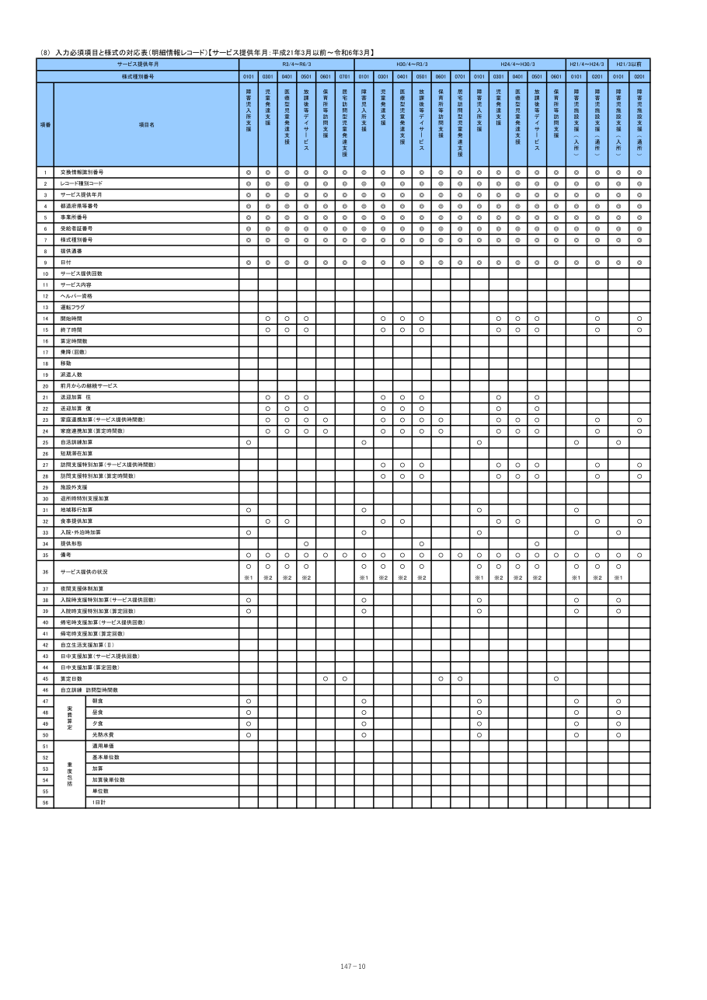
| 項番 | 項目名 | 属性 | 桁数 | 内容 | 必須 | 備考 | その他の列 |
|---|---|---|---|---|---|---|---|
| 1 | 交換情報識別番号 | R3/4～R6/3 > 0101 > 障害児入所支援:◎ R3/4～R6/3 > 0301 > 児童発達支援:◎ R3/4～R6/3 > 0401 > 医療型児童発達支援:◎ R3/4～R6/3 > 0501 > 放課後等デイサービス:◎ R3/4～R6/3 > 0601 > 保育所等訪問支援:◎ R3/4～R6/3 > 0701 > 居宅訪問型児童発達支援:◎ H30/4～R3/3 > 0101 > 障害児入所支援:◎ H30/4～R3/3 > 0301 > 児童発達支援:◎ H30/4～R3/3 > 0401 > 医療型児童発達支援:◎ H30/4～R3/3 > 0501 > 放課後等デイサービス:◎ H30/4～R3/3 > 0601 > 保育所等訪問支援:◎ H30/4～R3/3 > 0701 > 居宅訪問型児童発達支援:◎ H24/4～H30/3 > 0101 > 障害児入所支援:◎ H24/4～H30/3 > 0301 > 児童発達支援:◎ H24/4～H30/3 > 0401 > 医療型児童発達支援:◎ H24/4～H30/3 > 0501 > 放課後等デイサービス:◎ H24/4～H30/3 > 0601 > 保育所等訪問支援:◎ H21/4～H24/3 > 0101 > 障害児施設支援（入所）:◎ H21/4～H24/3 > 0201 > 障害児施設支援（通所）:◎ H21/3以前 > 0101 > 障害児施設支援（入所）:◎ H21/3以前 > 0201 > 障害児施設支援（通所）:◎ | |||||
| 2 | レコード種別コード | R3/4～R6/3 > 0101 > 障害児入所支援:◎ R3/4～R6/3 > 0301 > 児童発達支援:◎ R3/4～R6/3 > 0401 > 医療型児童発達支援:◎ R3/4～R6/3 > 0501 > 放課後等デイサービス:◎ R3/4～R6/3 > 0601 > 保育所等訪問支援:◎ R3/4～R6/3 > 0701 > 居宅訪問型児童発達支援:◎ H30/4～R3/3 > 0101 > 障害児入所支援:◎ H30/4～R3/3 > 0301 > 児童発達支援:◎ H30/4～R3/3 > 0401 > 医療型児童発達支援:◎ H30/4～R3/3 > 0501 > 放課後等デイサービス:◎ H30/4～R3/3 > 0601 > 保育所等訪問支援:◎ H30/4～R3/3 > 0701 > 居宅訪問型児童発達支援:◎ H24/4～H30/3 > 0101 > 障害児入所支援:◎ H24/4～H30/3 > 0301 > 児童発達支援:◎ H24/4～H30/3 > 0401 > 医療型児童発達支援:◎ H24/4～H30/3 > 0501 > 放課後等デイサービス:◎ H24/4～H30/3 > 0601 > 保育所等訪問支援:◎ H21/4～H24/3 > 0101 > 障害児施設支援（入所）:◎ H21/4～H24/3 > 0201 > 障害児施設支援（通所）:◎ H21/3以前 > 0101 > 障害児施設支援（入所）:◎ H21/3以前 > 0201 > 障害児施設支援（通所）:◎ | |||||
| 3 | サービス提供年月 | R3/4～R6/3 > 0101 > 障害児入所支援:◎ R3/4～R6/3 > 0301 > 児童発達支援:◎ R3/4～R6/3 > 0401 > 医療型児童発達支援:◎ R3/4～R6/3 > 0501 > 放課後等デイサービス:◎ R3/4～R6/3 > 0601 > 保育所等訪問支援:◎ R3/4～R6/3 > 0701 > 居宅訪問型児童発達支援:◎ H30/4～R3/3 > 0101 > 障害児入所支援:◎ H30/4～R3/3 > 0301 > 児童発達支援:◎ H30/4～R3/3 > 0401 > 医療型児童発達支援:◎ H30/4～R3/3 > 0501 > 放課後等デイサービス:◎ H30/4～R3/3 > 0601 > 保育所等訪問支援:◎ H30/4～R3/3 > 0701 > 居宅訪問型児童発達支援:◎ H24/4～H30/3 > 0101 > 障害児入所支援:◎ H24/4～H30/3 > 0301 > 児童発達支援:◎ H24/4～H30/3 > 0401 > 医療型児童発達支援:◎ H24/4～H30/3 > 0501 > 放課後等デイサービス:◎ H24/4～H30/3 > 0601 > 保育所等訪問支援:◎ H21/4～H24/3 > 0101 > 障害児施設支援（入所）:◎ H21/4～H24/3 > 0201 > 障害児施設支援（通所）:◎ H21/3以前 > 0101 > 障害児施設支援（入所）:◎ H21/3以前 > 0201 > 障害児施設支援（通所）:◎ | |||||
| 4 | 都道府県等番号 | R3/4～R6/3 > 0101 > 障害児入所支援:◎ R3/4～R6/3 > 0301 > 児童発達支援:◎ R3/4～R6/3 > 0401 > 医療型児童発達支援:◎ R3/4～R6/3 > 0501 > 放課後等デイサービス:◎ R3/4～R6/3 > 0601 > 保育所等訪問支援:◎ R3/4～R6/3 > 0701 > 居宅訪問型児童発達支援:◎ H30/4～R3/3 > 0101 > 障害児入所支援:◎ H30/4～R3/3 > 0301 > 児童発達支援:◎ H30/4～R3/3 > 0401 > 医療型児童発達支援:◎ H30/4～R3/3 > 0501 > 放課後等デイサービス:◎ H30/4～R3/3 > 0601 > 保育所等訪問支援:◎ H30/4～R3/3 > 0701 > 居宅訪問型児童発達支援:◎ H24/4～H30/3 > 0101 > 障害児入所支援:◎ H24/4～H30/3 > 0301 > 児童発達支援:◎ H24/4～H30/3 > 0401 > 医療型児童発達支援:◎ H24/4～H30/3 > 0501 > 放課後等デイサービス:◎ H24/4～H30/3 > 0601 > 保育所等訪問支援:◎ H21/4～H24/3 > 0101 > 障害児施設支援（入所）:◎ H21/4～H24/3 > 0201 > 障害児施設支援（通所）:◎ H21/3以前 > 0101 > 障害児施設支援（入所）:◎ H21/3以前 > 0201 > 障害児施設支援（通所）:◎ | |||||
| 5 | 事業所番号 | R3/4～R6/3 > 0101 > 障害児入所支援:◎ R3/4～R6/3 > 0301 > 児童発達支援:◎ R3/4～R6/3 > 0401 > 医療型児童発達支援:◎ R3/4～R6/3 > 0501 > 放課後等デイサービス:◎ R3/4～R6/3 > 0601 > 保育所等訪問支援:◎ R3/4～R6/3 > 0701 > 居宅訪問型児童発達支援:◎ H30/4～R3/3 > 0101 > 障害児入所支援:◎ H30/4～R3/3 > 0301 > 児童発達支援:◎ H30/4～R3/3 > 0401 > 医療型児童発達支援:◎ H30/4～R3/3 > 0501 > 放課後等デイサービス:◎ H30/4～R3/3 > 0601 > 保育所等訪問支援:◎ H30/4～R3/3 > 0701 > 居宅訪問型児童発達支援:◎ H24/4～H30/3 > 0101 > 障害児入所支援:◎ H24/4～H30/3 > 0301 > 児童発達支援:◎ H24/4～H30/3 > 0401 > 医療型児童発達支援:◎ H24/4～H30/3 > 0501 > 放課後等デイサービス:◎ H24/4～H30/3 > 0601 > 保育所等訪問支援:◎ H21/4～H24/3 > 0101 > 障害児施設支援（入所）:◎ H21/4～H24/3 > 0201 > 障害児施設支援（通所）:◎ H21/3以前 > 0101 > 障害児施設支援（入所）:◎ H21/3以前 > 0201 > 障害児施設支援（通所）:◎ | |||||
| 6 | 受給者証番号 | R3/4～R6/3 > 0101 > 障害児入所支援:◎ R3/4～R6/3 > 0301 > 児童発達支援:◎ R3/4～R6/3 > 0401 > 医療型児童発達支援:◎ R3/4～R6/3 > 0501 > 放課後等デイサービス:◎ R3/4～R6/3 > 0601 > 保育所等訪問支援:◎ R3/4～R6/3 > 0701 > 居宅訪問型児童発達支援:◎ H30/4～R3/3 > 0101 > 障害児入所支援:◎ H30/4～R3/3 > 0301 > 児童発達支援:◎ H30/4～R3/3 > 0401 > 医療型児童発達支援:◎ H30/4～R3/3 > 0501 > 放課後等デイサービス:◎ H30/4～R3/3 > 0601 > 保育所等訪問支援:◎ H30/4～R3/3 > 0701 > 居宅訪問型児童発達支援:◎ H24/4～H30/3 > 0101 > 障害児入所支援:◎ H24/4～H30/3 > 0301 > 児童発達支援:◎ H24/4～H30/3 > 0401 > 医療型児童発達支援:◎ H24/4～H30/3 > 0501 > 放課後等デイサービス:◎ H24/4～H30/3 > 0601 > 保育所等訪問支援:◎ H21/4～H24/3 > 0101 > 障害児施設支援（入所）:◎ H21/4～H24/3 > 0201 > 障害児施設支援（通所）:◎ H21/3以前 > 0101 > 障害児施設支援（入所）:◎ H21/3以前 > 0201 > 障害児施設支援（通所）:◎ | |||||
| 7 | 様式種別番号 | R3/4～R6/3 > 0101 > 障害児入所支援:◎ R3/4～R6/3 > 0301 > 児童発達支援:◎ R3/4～R6/3 > 0401 > 医療型児童発達支援:◎ R3/4～R6/3 > 0501 > 放課後等デイサービス:◎ R3/4～R6/3 > 0601 > 保育所等訪問支援:◎ R3/4～R6/3 > 0701 > 居宅訪問型児童発達支援:◎ H30/4～R3/3 > 0101 > 障害児入所支援:◎ H30/4～R3/3 > 0301 > 児童発達支援:◎ H30/4～R3/3 > 0401 > 医療型児童発達支援:◎ H30/4～R3/3 > 0501 > 放課後等デイサービス:◎ H30/4～R3/3 > 0601 > 保育所等訪問支援:◎ H30/4～R3/3 > 0701 > 居宅訪問型児童発達支援:◎ H24/4～H30/3 > 0101 > 障害児入所支援:◎ H24/4～H30/3 > 0301 > 児童発達支援:◎ H24/4～H30/3 > 0401 > 医療型児童発達支援:◎ H24/4～H30/3 > 0501 > 放課後等デイサービス:◎ H24/4～H30/3 > 0601 > 保育所等訪問支援:◎ H21/4～H24/3 > 0101 > 障害児施設支援（入所）:◎ H21/4～H24/3 > 0201 > 障害児施設支援（通所）:◎ H21/3以前 > 0101 > 障害児施設支援（入所）:◎ H21/3以前 > 0201 > 障害児施設支援（通所）:◎ | |||||
| 8 | 提供通番 | R3/4～R6/3 > 0101 > 障害児入所支援:－ R3/4～R6/3 > 0301 > 児童発達支援:－ R3/4～R6/3 > 0401 > 医療型児童発達支援:－ R3/4～R6/3 > 0501 > 放課後等デイサービス:－ R3/4～R6/3 > 0601 > 保育所等訪問支援:－ R3/4～R6/3 > 0701 > 居宅訪問型児童発達支援:－ H30/4～R3/3 > 0101 > 障害児入所支援:－ H30/4～R3/3 > 0301 > 児童発達支援:－ H30/4～R3/3 > 0401 > 医療型児童発達支援:－ H30/4～R3/3 > 0501 > 放課後等デイサービス:－ H30/4～R3/3 > 0601 > 保育所等訪問支援:－ H30/4～R3/3 > 0701 > 居宅訪問型児童発達支援:－ H24/4～H30/3 > 0101 > 障害児入所支援:－ H24/4～H30/3 > 0301 > 児童発達支援:－ H24/4～H30/3 > 0401 > 医療型児童発達支援:－ H24/4～H30/3 > 0501 > 放課後等デイサービス:－ H24/4～H30/3 > 0601 > 保育所等訪問支援:－ H21/4～H24/3 > 0101 > 障害児施設支援（入所）:－ H21/4～H24/3 > 0201 > 障害児施設支援（通所）:－ H21/3以前 > 0101 > 障害児施設支援（入所）:－ H21/3以前 > 0201 > 障害児施設支援（通所）:－ | |||||
| 9 | 日付 | R3/4～R6/3 > 0101 > 障害児入所支援:◎ R3/4～R6/3 > 0301 > 児童発達支援:◎ R3/4～R6/3 > 0401 > 医療型児童発達支援:◎ R3/4～R6/3 > 0501 > 放課後等デイサービス:◎ R3/4～R6/3 > 0601 > 保育所等訪問支援:◎ R3/4～R6/3 > 0701 > 居宅訪問型児童発達支援:◎ H30/4～R3/3 > 0101 > 障害児入所支援:◎ H30/4～R3/3 > 0301 > 児童発達支援:◎ H30/4～R3/3 > 0401 > 医療型児童発達支援:◎ H30/4～R3/3 > 0501 > 放課後等デイサービス:◎ H30/4～R3/3 > 0601 > 保育所等訪問支援:◎ H30/4～R3/3 > 0701 > 居宅訪問型児童発達支援:◎ H24/4～H30/3 > 0101 > 障害児入所支援:◎ H24/4～H30/3 > 0301 > 児童発達支援:◎ H24/4～H30/3 > 0401 > 医療型児童発達支援:◎ H24/4～H30/3 > 0501 > 放課後等デイサービス:◎ H24/4～H30/3 > 0601 > 保育所等訪問支援:◎ H21/4～H24/3 > 0101 > 障害児施設支援（入所）:◎ H21/4～H24/3 > 0201 > 障害児施設支援（通所）:◎ H21/3以前 > 0101 > 障害児施設支援（入所）:◎ H21/3以前 > 0201 > 障害児施設支援（通所）:◎ | |||||
| 10 | サービス提供回数 | R3/4～R6/3 > 0101 > 障害児入所支援:－ R3/4～R6/3 > 0301 > 児童発達支援:－ R3/4～R6/3 > 0401 > 医療型児童発達支援:－ R3/4～R6/3 > 0501 > 放課後等デイサービス:－ R3/4～R6/3 > 0601 > 保育所等訪問支援:－ R3/4～R6/3 > 0701 > 居宅訪問型児童発達支援:－ H30/4～R3/3 > 0101 > 障害児入所支援:－ H30/4～R3/3 > 0301 > 児童発達支援:－ H30/4～R3/3 > 0401 > 医療型児童発達支援:－ H30/4～R3/3 > 0501 > 放課後等デイサービス:－ H30/4～R3/3 > 0601 > 保育所等訪問支援:－ H30/4～R3/3 > 0701 > 居宅訪問型児童発達支援:－ H24/4～H30/3 > 0101 > 障害児入所支援:－ H24/4～H30/3 > 0301 > 児童発達支援:－ H24/4～H30/3 > 0401 > 医療型児童発達支援:－ H24/4～H30/3 > 0501 > 放課後等デイサービス:－ H24/4～H30/3 > 0601 > 保育所等訪問支援:－ H21/4～H24/3 > 0101 > 障害児施設支援（入所）:－ H21/4～H24/3 > 0201 > 障害児施設支援（通所）:－ H21/3以前 > 0101 > 障害児施設支援（入所）:－ H21/3以前 > 0201 > 障害児施設支援（通所）:－ | |||||
| 11 | サービス内容 | R3/4～R6/3 > 0101 > 障害児入所支援:－ R3/4～R6/3 > 0301 > 児童発達支援:－ R3/4～R6/3 > 0401 > 医療型児童発達支援:－ R3/4～R6/3 > 0501 > 放課後等デイサービス:－ R3/4～R6/3 > 0601 > 保育所等訪問支援:－ R3/4～R6/3 > 0701 > 居宅訪問型児童発達支援:－ H30/4～R3/3 > 0101 > 障害児入所支援:－ H30/4～R3/3 > 0301 > 児童発達支援:－ H30/4～R3/3 > 0401 > 医療型児童発達支援:－ H30/4～R3/3 > 0501 > 放課後等デイサービス:－ H30/4～R3/3 > 0601 > 保育所等訪問支援:－ H30/4～R3/3 > 0701 > 居宅訪問型児童発達支援:－ H24/4～H30/3 > 0101 > 障害児入所支援:－ H24/4～H30/3 > 0301 > 児童発達支援:－ H24/4～H30/3 > 0401 > 医療型児童発達支援:－ H24/4～H30/3 > 0501 > 放課後等デイサービス:－ H24/4～H30/3 > 0601 > 保育所等訪問支援:－ H21/4～H24/3 > 0101 > 障害児施設支援（入所）:－ H21/4～H24/3 > 0201 > 障害児施設支援（通所）:－ H21/3以前 > 0101 > 障害児施設支援（入所）:－ H21/3以前 > 0201 > 障害児施設支援（通所）:－ | |||||
| 12 | ヘルパー資格 | R3/4～R6/3 > 0101 > 障害児入所支援:－ R3/4～R6/3 > 0301 > 児童発達支援:－ R3/4～R6/3 > 0401 > 医療型児童発達支援:－ R3/4～R6/3 > 0501 > 放課後等デイサービス:－ R3/4～R6/3 > 0601 > 保育所等訪問支援:－ R3/4～R6/3 > 0701 > 居宅訪問型児童発達支援:－ H30/4～R3/3 > 0101 > 障害児入所支援:－ H30/4～R3/3 > 0301 > 児童発達支援:－ H30/4～R3/3 > 0401 > 医療型児童発達支援:－ H30/4～R3/3 > 0501 > 放課後等デイサービス:－ H30/4～R3/3 > 0601 > 保育所等訪問支援:－ H30/4～R3/3 > 0701 > 居宅訪問型児童発達支援:－ H24/4～H30/3 > 0101 > 障害児入所支援:－ H24/4～H30/3 > 0301 > 児童発達支援:－ H24/4～H30/3 > 0401 > 医療型児童発達支援:－ H24/4～H30/3 > 0501 > 放課後等デイサービス:－ H24/4～H30/3 > 0601 > 保育所等訪問支援:－ H21/4～H24/3 > 0101 > 障害児施設支援（入所）:－ H21/4～H24/3 > 0201 > 障害児施設支援（通所）:－ H21/3以前 > 0101 > 障害児施設支援（入所）:－ H21/3以前 > 0201 > 障害児施設支援（通所）:－ | |||||
| 13 | 運転フラグ | R3/4～R6/3 > 0101 > 障害児入所支援:－ R3/4～R6/3 > 0301 > 児童発達支援:－ R3/4～R6/3 > 0401 > 医療型児童発達支援:－ R3/4～R6/3 > 0501 > 放課後等デイサービス:－ R3/4～R6/3 > 0601 > 保育所等訪問支援:－ R3/4～R6/3 > 0701 > 居宅訪問型児童発達支援:－ H30/4～R3/3 > 0101 > 障害児入所支援:－ H30/4～R3/3 > 0301 > 児童発達支援:－ H30/4～R3/3 > 0401 > 医療型児童発達支援:－ H30/4～R3/3 > 0501 > 放課後等デイサービス:－ H30/4～R3/3 > 0601 > 保育所等訪問支援:－ H30/4～R3/3 > 0701 > 居宅訪問型児童発達支援:－ H24/4～H30/3 > 0101 > 障害児入所支援:－ H24/4～H30/3 > 0301 > 児童発達支援:－ H24/4～H30/3 > 0401 > 医療型児童発達支援:－ H24/4～H30/3 > 0501 > 放課後等デイサービス:－ H24/4～H30/3 > 0601 > 保育所等訪問支援:－ H21/4～H24/3 > 0101 > 障害児施設支援（入所）:－ H21/4～H24/3 > 0201 > 障害児施設支援（通所）:－ H21/3以前 > 0101 > 障害児施設支援（入所）:－ H21/3以前 > 0201 > 障害児施設支援（通所）:－ | |||||
| 14 | 開始時間 | R3/4～R6/3 > 0101 > 障害児入所支援:－ R3/4～R6/3 > 0301 > 児童発達支援:○ R3/4～R6/3 > 0401 > 医療型児童発達支援:○ R3/4～R6/3 > 0501 > 放課後等デイサービス:○ R3/4～R6/3 > 0601 > 保育所等訪問支援:－ R3/4～R6/3 > 0701 > 居宅訪問型児童発達支援:－ H30/4～R3/3 > 0101 > 障害児入所支援:－ H30/4～R3/3 > 0301 > 児童発達支援:○ H30/4～R3/3 > 0401 > 医療型児童発達支援:○ H30/4～R3/3 > 0501 > 放課後等デイサービス:○ H30/4～R3/3 > 0601 > 保育所等訪問支援:－ H30/4～R3/3 > 0701 > 居宅訪問型児童発達支援:－ H24/4～H30/3 > 0101 > 障害児入所支援:－ H24/4～H30/3 > 0301 > 児童発達支援:○ H24/4～H30/3 > 0401 > 医療型児童発達支援:○ H24/4～H30/3 > 0501 > 放課後等デイサービス:○ H24/4～H30/3 > 0601 > 保育所等訪問支援:－ H21/4～H24/3 > 0101 > 障害児施設支援（入所）:－ H21/4～H24/3 > 0201 > 障害児施設支援（通所）:○ H21/3以前 > 0101 > 障害児施設支援（入所）:－ H21/3以前 > 0201 > 障害児施設支援（通所）:○ | |||||
| 15 | 終了時間 | R3/4～R6/3 > 0101 > 障害児入所支援:－ R3/4～R6/3 > 0301 > 児童発達支援:○ R3/4～R6/3 > 0401 > 医療型児童発達支援:○ R3/4～R6/3 > 0501 > 放課後等デイサービス:○ R3/4～R6/3 > 0601 > 保育所等訪問支援:－ R3/4～R6/3 > 0701 > 居宅訪問型児童発達支援:－ H30/4～R3/3 > 0101 > 障害児入所支援:－ H30/4～R3/3 > 0301 > 児童発達支援:○ H30/4～R3/3 > 0401 > 医療型児童発達支援:○ H30/4～R3/3 > 0501 > 放課後等デイサービス:○ H30/4～R3/3 > 0601 > 保育所等訪問支援:－ H30/4～R3/3 > 0701 > 居宅訪問型児童発達支援:－ H24/4～H30/3 > 0101 > 障害児入所支援:－ H24/4～H30/3 > 0301 > 児童発達支援:○ H24/4～H30/3 > 0401 > 医療型児童発達支援:○ H24/4～H30/3 > 0501 > 放課後等デイサービス:○ H24/4～H30/3 > 0601 > 保育所等訪問支援:－ H21/4～H24/3 > 0101 > 障害児施設支援（入所）:－ H21/4～H24/3 > 0201 > 障害児施設支援（通所）:○ H21/3以前 > 0101 > 障害児施設支援（入所）:－ H21/3以前 > 0201 > 障害児施設支援（通所）:○ | |||||
| 16 | 算定時間数 | R3/4～R6/3 > 0101 > 障害児入所支援:－ R3/4～R6/3 > 0301 > 児童発達支援:－ R3/4～R6/3 > 0401 > 医療型児童発達支援:－ R3/4～R6/3 > 0501 > 放課後等デイサービス:－ R3/4～R6/3 > 0601 > 保育所等訪問支援:－ R3/4～R6/3 > 0701 > 居宅訪問型児童発達支援:－ H30/4～R3/3 > 0101 > 障害児入所支援:－ H30/4～R3/3 > 0301 > 児童発達支援:－ H30/4～R3/3 > 0401 > 医療型児童発達支援:－ H30/4～R3/3 > 0501 > 放課後等デイサービス:－ H30/4～R3/3 > 0601 > 保育所等訪問支援:－ H30/4～R3/3 > 0701 > 居宅訪問型児童発達支援:－ H24/4～H30/3 > 0101 > 障害児入所支援:－ H24/4～H30/3 > 0301 > 児童発達支援:－ H24/4～H30/3 > 0401 > 医療型児童発達支援:－ H24/4～H30/3 > 0501 > 放課後等デイサービス:－ H24/4～H30/3 > 0601 > 保育所等訪問支援:－ H21/4～H24/3 > 0101 > 障害児施設支援（入所）:－ H21/4～H24/3 > 0201 > 障害児施設支援（通所）:－ H21/3以前 > 0101 > 障害児施設支援（入所）:－ H21/3以前 > 0201 > 障害児施設支援（通所）:－ | |||||
| 17 | 乗降(回数) | R3/4～R6/3 > 0101 > 障害児入所支援:－ R3/4～R6/3 > 0301 > 児童発達支援:－ R3/4～R6/3 > 0401 > 医療型児童発達支援:－ R3/4～R6/3 > 0501 > 放課後等デイサービス:－ R3/4～R6/3 > 0601 > 保育所等訪問支援:－ R3/4～R6/3 > 0701 > 居宅訪問型児童発達支援:－ H30/4～R3/3 > 0101 > 障害児入所支援:－ H30/4～R3/3 > 0301 > 児童発達支援:－ H30/4～R3/3 > 0401 > 医療型児童発達支援:－ H30/4～R3/3 > 0501 > 放課後等デイサービス:－ H30/4～R3/3 > 0601 > 保育所等訪問支援:－ H30/4～R3/3 > 0701 > 居宅訪問型児童発達支援:－ H24/4～H30/3 > 0101 > 障害児入所支援:－ H24/4～H30/3 > 0301 > 児童発達支援:－ H24/4～H30/3 > 0401 > 医療型児童発達支援:－ H24/4～H30/3 > 0501 > 放課後等デイサービス:－ H24/4～H30/3 > 0601 > 保育所等訪問支援:－ H21/4～H24/3 > 0101 > 障害児施設支援（入所）:－ H21/4～H24/3 > 0201 > 障害児施設支援（通所）:－ H21/3以前 > 0101 > 障害児施設支援（入所）:－ H21/3以前 > 0201 > 障害児施設支援（通所）:－ | |||||
| 18 | 移動 | R3/4～R6/3 > 0101 > 障害児入所支援:－ R3/4～R6/3 > 0301 > 児童発達支援:－ R3/4～R6/3 > 0401 > 医療型児童発達支援:－ R3/4～R6/3 > 0501 > 放課後等デイサービス:－ R3/4～R6/3 > 0601 > 保育所等訪問支援:－ R3/4～R6/3 > 0701 > 居宅訪問型児童発達支援:－ H30/4～R3/3 > 0101 > 障害児入所支援:－ H30/4～R3/3 > 0301 > 児童発達支援:－ H30/4～R3/3 > 0401 > 医療型児童発達支援:－ H30/4～R3/3 > 0501 > 放課後等デイサービス:－ H30/4～R3/3 > 0601 > 保育所等訪問支援:－ H30/4～R3/3 > 0701 > 居宅訪問型児童発達支援:－ H24/4～H30/3 > 0101 > 障害児入所支援:－ H24/4～H30/3 > 0301 > 児童発達支援:－ H24/4～H30/3 > 0401 > 医療型児童発達支援:－ H24/4～H30/3 > 0501 > 放課後等デイサービス:－ H24/4～H30/3 > 0601 > 保育所等訪問支援:－ H21/4～H24/3 > 0101 > 障害児施設支援（入所）:－ H21/4～H24/3 > 0201 > 障害児施設支援（通所）:－ H21/3以前 > 0101 > 障害児施設支援（入所）:－ H21/3以前 > 0201 > 障害児施設支援（通所）:－ | |||||
| 19 | 派遣人数 | R3/4～R6/3 > 0101 > 障害児入所支援:－ R3/4～R6/3 > 0301 > 児童発達支援:－ R3/4～R6/3 > 0401 > 医療型児童発達支援:－ R3/4～R6/3 > 0501 > 放課後等デイサービス:－ R3/4～R6/3 > 0601 > 保育所等訪問支援:－ R3/4～R6/3 > 0701 > 居宅訪問型児童発達支援:－ H30/4～R3/3 > 0101 > 障害児入所支援:－ H30/4～R3/3 > 0301 > 児童発達支援:－ H30/4～R3/3 > 0401 > 医療型児童発達支援:－ H30/4～R3/3 > 0501 > 放課後等デイサービス:－ H30/4～R3/3 > 0601 > 保育所等訪問支援:－ H30/4～R3/3 > 0701 > 居宅訪問型児童発達支援:－ H24/4～H30/3 > 0101 > 障害児入所支援:－ H24/4～H30/3 > 0301 > 児童発達支援:－ H24/4～H30/3 > 0401 > 医療型児童発達支援:－ H24/4～H30/3 > 0501 > 放課後等デイサービス:－ H24/4～H30/3 > 0601 > 保育所等訪問支援:－ H21/4～H24/3 > 0101 > 障害児施設支援（入所）:－ H21/4～H24/3 > 0201 > 障害児施設支援（通所）:－ H21/3以前 > 0101 > 障害児施設支援（入所）:－ H21/3以前 > 0201 > 障害児施設支援（通所）:－ | |||||
| 20 | 前月からの継続サービス | R3/4～R6/3 > 0101 > 障害児入所支援:－ R3/4～R6/3 > 0301 > 児童発達支援:－ R3/4～R6/3 > 0401 > 医療型児童発達支援:－ R3/4～R6/3 > 0501 > 放課後等デイサービス:－ R3/4～R6/3 > 0601 > 保育所等訪問支援:－ R3/4～R6/3 > 0701 > 居宅訪問型児童発達支援:－ H30/4～R3/3 > 0101 > 障害児入所支援:－ H30/4～R3/3 > 0301 > 児童発達支援:－ H30/4～R3/3 > 0401 > 医療型児童発達支援:－ H30/4～R3/3 > 0501 > 放課後等デイサービス:－ H30/4～R3/3 > 0601 > 保育所等訪問支援:－ H30/4～R3/3 > 0701 > 居宅訪問型児童発達支援:－ H24/4～H30/3 > 0101 > 障害児入所支援:－ H24/4～H30/3 > 0301 > 児童発達支援:－ H24/4～H30/3 > 0401 > 医療型児童発達支援:－ H24/4～H30/3 > 0501 > 放課後等デイサービス:－ H24/4～H30/3 > 0601 > 保育所等訪問支援:－ H21/4～H24/3 > 0101 > 障害児施設支援（入所）:－ H21/4～H24/3 > 0201 > 障害児施設支援（通所）:－ H21/3以前 > 0101 > 障害児施設支援（入所）:－ H21/3以前 > 0201 > 障害児施設支援（通所）:－ | |||||
| 21 | 送迎加算 住 | R3/4～R6/3 > 0101 > 障害児入所支援:－ R3/4～R6/3 > 0301 > 児童発達支援:○ R3/4～R6/3 > 0401 > 医療型児童発達支援:○ R3/4～R6/3 > 0501 > 放課後等デイサービス:○ R3/4～R6/3 > 0601 > 保育所等訪問支援:－ R3/4～R6/3 > 0701 > 居宅訪問型児童発達支援:－ H30/4～R3/3 > 0101 > 障害児入所支援:－ H30/4～R3/3 > 0301 > 児童発達支援:○ H30/4～R3/3 > 0401 > 医療型児童発達支援:○ H30/4～R3/3 > 0501 > 放課後等デイサービス:○ H30/4～R3/3 > 0601 > 保育所等訪問支援:－ H30/4～R3/3 > 0701 > 居宅訪問型児童発達支援:－ H24/4～H30/3 > 0101 > 障害児入所支援:－ H24/4～H30/3 > 0301 > 児童発達支援:○ H24/4～H30/3 > 0401 > 医療型児童発達支援:－ H24/4～H30/3 > 0501 > 放課後等デイサービス:○ H24/4～H30/3 > 0601 > 保育所等訪問支援:－ H21/4～H24/3 > 0101 > 障害児施設支援（入所）:－ H21/4～H24/3 > 0201 > 障害児施設支援（通所）:－ H21/3以前 > 0101 > 障害児施設支援（入所）:－ H21/3以前 > 0201 > 障害児施設支援（通所）:－ | |||||
| 22 | 送迎加算 復 | R3/4～R6/3 > 0101 > 障害児入所支援:－ R3/4～R6/3 > 0301 > 児童発達支援:○ R3/4～R6/3 > 0401 > 医療型児童発達支援:○ R3/4～R6/3 > 0501 > 放課後等デイサービス:○ R3/4～R6/3 > 0601 > 保育所等訪問支援:－ R3/4～R6/3 > 0701 > 居宅訪問型児童発達支援:－ H30/4～R3/3 > 0101 > 障害児入所支援:－ H30/4～R3/3 > 0301 > 児童発達支援:○ H30/4～R3/3 > 0401 > 医療型児童発達支援:○ H30/4～R3/3 > 0501 > 放課後等デイサービス:○ H30/4～R3/3 > 0601 > 保育所等訪問支援:－ H30/4～R3/3 > 0701 > 居宅訪問型児童発達支援:－ H24/4～H30/3 > 0101 > 障害児入所支援:－ H24/4～H30/3 > 0301 > 児童発達支援:○ H24/4～H30/3 > 0401 > 医療型児童発達支援:－ H24/4～H30/3 > 0501 > 放課後等デイサービス:○ H24/4～H30/3 > 0601 > 保育所等訪問支援:－ H21/4～H24/3 > 0101 > 障害児施設支援（入所）:－ H21/4～H24/3 > 0201 > 障害児施設支援（通所）:－ H21/3以前 > 0101 > 障害児施設支援（入所）:－ H21/3以前 > 0201 > 障害児施設支援（通所）:－ | |||||
| 23 | 家庭連携加算(サービス提供時間数) | R3/4～R6/3 > 0101 > 障害児入所支援:－ R3/4～R6/3 > 0301 > 児童発達支援:○ R3/4～R6/3 > 0401 > 医療型児童発達支援:○ R3/4～R6/3 > 0501 > 放課後等デイサービス:○ R3/4～R6/3 > 0601 > 保育所等訪問支援:○ R3/4～R6/3 > 0701 > 居宅訪問型児童発達支援:－ H30/4～R3/3 > 0101 > 障害児入所支援:－ H30/4～R3/3 > 0301 > 児童発達支援:○ H30/4～R3/3 > 0401 > 医療型児童発達支援:○ H30/4～R3/3 > 0501 > 放課後等デイサービス:○ H30/4～R3/3 > 0601 > 保育所等訪問支援:○ H30/4～R3/3 > 0701 > 居宅訪問型児童発達支援:－ H24/4～H30/3 > 0101 > 障害児入所支援:－ H24/4～H30/3 > 0301 > 児童発達支援:○ H24/4～H30/3 > 0401 > 医療型児童発達支援:○ H24/4～H30/3 > 0501 > 放課後等デイサービス:○ H24/4～H30/3 > 0601 > 保育所等訪問支援:－ H21/4～H24/3 > 0101 > 障害児施設支援（入所）:－ H21/4～H24/3 > 0201 > 障害児施設支援（通所）:○ H21/3以前 > 0101 > 障害児施設支援（入所）:－ H21/3以前 > 0201 > 障害児施設支援（通所）:○ | |||||
| 24 | 家庭連携加算(算定時間数) | R3/4～R6/3 > 0101 > 障害児入所支援:－ R3/4～R6/3 > 0301 > 児童発達支援:○ R3/4～R6/3 > 0401 > 医療型児童発達支援:○ R3/4～R6/3 > 0501 > 放課後等デイサービス:○ R3/4～R6/3 > 0601 > 保育所等訪問支援:○ R3/4～R6/3 > 0701 > 居宅訪問型児童発達支援:－ H30/4～R3/3 > 0101 > 障害児入所支援:－ H30/4～R3/3 > 0301 > 児童発達支援:○ H30/4～R3/3 > 0401 > 医療型児童発達支援:○ H30/4～R3/3 > 0501 > 放課後等デイサービス:○ H30/4～R3/3 > 0601 > 保育所等訪問支援:○ H30/4～R3/3 > 0701 > 居宅訪問型児童発達支援:－ H24/4～H30/3 > 0101 > 障害児入所支援:－ H24/4～H30/3 > 0301 > 児童発達支援:○ H24/4～H30/3 > 0401 > 医療型児童発達支援:○ H24/4～H30/3 > 0501 > 放課後等デイサービス:○ H24/4～H30/3 > 0601 > 保育所等訪問支援:－ H21/4～H24/3 > 0101 > 障害児施設支援（入所）:－ H21/4～H24/3 > 0201 > 障害児施設支援（通所）:○ H21/3以前 > 0101 > 障害児施設支援（入所）:－ H21/3以前 > 0201 > 障害児施設支援（通所）:○ | |||||
| 25 | 自活訓練加算 | R3/4～R6/3 > 0101 > 障害児入所支援:○ R3/4～R6/3 > 0301 > 児童発達支援:－ R3/4～R6/3 > 0401 > 医療型児童発達支援:－ R3/4～R6/3 > 0501 > 放課後等デイサービス:－ R3/4～R6/3 > 0601 > 保育所等訪問支援:－ R3/4～R6/3 > 0701 > 居宅訪問型児童発達支援:－ H30/4～R3/3 > 0101 > 障害児入所支援:○ H30/4～R3/3 > 0301 > 児童発達支援:－ H30/4～R3/3 > 0401 > 医療型児童発達支援:－ H30/4～R3/3 > 0501 > 放課後等デイサービス:－ H30/4～R3/3 > 0601 > 保育所等訪問支援:－ H30/4～R3/3 > 0701 > 居宅訪問型児童発達支援:－ H24/4～H30/3 > 0101 > 障害児入所支援:○ H24/4～H30/3 > 0301 > 児童発達支援:－ H24/4～H30/3 > 0401 > 医療型児童発達支援:－ H24/4～H30/3 > 0501 > 放課後等デイサービス:－ H24/4～H30/3 > 0601 > 保育所等訪問支援:－ H21/4～H24/3 > 0101 > 障害児施設支援（入所）:○ H21/4～H24/3 > 0201 > 障害児施設支援（通所）:－ H21/3以前 > 0101 > 障害児施設支援（入所）:○ H21/3以前 > 0201 > 障害児施設支援（通所）:－ | |||||
| 26 | 短期滞在加算 | R3/4～R6/3 > 0101 > 障害児入所支援:－ R3/4～R6/3 > 0301 > 児童発達支援:－ R3/4～R6/3 > 0401 > 医療型児童発達支援:－ R3/4～R6/3 > 0501 > 放課後等デイサービス:－ R3/4～R6/3 > 0601 > 保育所等訪問支援:－ R3/4～R6/3 > 0701 > 居宅訪問型児童発達支援:－ H30/4～R3/3 > 0101 > 障害児入所支援:－ H30/4～R3/3 > 0301 > 児童発達支援:－ H30/4～R3/3 > 0401 > 医療型児童発達支援:－ H30/4～R3/3 > 0501 > 放課後等デイサービス:－ H30/4～R3/3 > 0601 > 保育所等訪問支援:－ H30/4～R3/3 > 0701 > 居宅訪問型児童発達支援:－ H24/4～H30/3 > 0101 > 障害児入所支援:－ H24/4～H30/3 > 0301 > 児童発達支援:－ H24/4～H30/3 > 0401 > 医療型児童発達支援:－ H24/4～H30/3 > 0501 > 放課後等デイサービス:－ H24/4～H30/3 > 0601 > 保育所等訪問支援:－ H21/4～H24/3 > 0101 > 障害児施設支援（入所）:－ H21/4～H24/3 > 0201 > 障害児施設支援（通所）:－ H21/3以前 > 0101 > 障害児施設支援（入所）:－ H21/3以前 > 0201 > 障害児施設支援（通所）:－ | |||||
| 27 | 訪問支援特別加算(サービス提供時間数) | R3/4～R6/3 > 0101 > 障害児入所支援:－ R3/4～R6/3 > 0301 > 児童発達支援:－ R3/4～R6/3 > 0401 > 医療型児童発達支援:－ R3/4～R6/3 > 0501 > 放課後等デイサービス:－ R3/4～R6/3 > 0601 > 保育所等訪問支援:－ R3/4～R6/3 > 0701 > 居宅訪問型児童発達支援:－ H30/4～R3/3 > 0101 > 障害児入所支援:－ H30/4～R3/3 > 0301 > 児童発達支援:○ H30/4～R3/3 > 0401 > 医療型児童発達支援:○ H30/4～R3/3 > 0501 > 放課後等デイサービス:○ H30/4～R3/3 > 0601 > 保育所等訪問支援:－ H30/4～R3/3 > 0701 > 居宅訪問型児童発達支援:－ H24/4～H30/3 > 0101 > 障害児入所支援:－ H24/4～H30/3 > 0301 > 児童発達支援:○ H24/4～H30/3 > 0401 > 医療型児童発達支援:○ H24/4～H30/3 > 0501 > 放課後等デイサービス:○ H24/4～H30/3 > 0601 > 保育所等訪問支援:－ H21/4～H24/3 > 0101 > 障害児施設支援（入所）:－ H21/4～H24/3 > 0201 > 障害児施設支援（通所）:○ H21/3以前 > 0101 > 障害児施設支援（入所）:－ H21/3以前 > 0201 > 障害児施設支援（通所）:○ | |||||
| 28 | 訪問支援特別加算(算定時間数) | R3/4～R6/3 > 0101 > 障害児入所支援:－ R3/4～R6/3 > 0301 > 児童発達支援:－ R3/4～R6/3 > 0401 > 医療型児童発達支援:－ R3/4～R6/3 > 0501 > 放課後等デイサービス:－ R3/4～R6/3 > 0601 > 保育所等訪問支援:－ R3/4～R6/3 > 0701 > 居宅訪問型児童発達支援:－ H30/4～R3/3 > 0101 > 障害児入所支援:－ H30/4～R3/3 > 0301 > 児童発達支援:○ H30/4～R3/3 > 0401 > 医療型児童発達支援:○ H30/4～R3/3 > 0501 > 放課後等デイサービス:○ H30/4～R3/3 > 0601 > 保育所等訪問支援:－ H30/4～R3/3 > 0701 > 居宅訪問型児童発達支援:－ H24/4～H30/3 > 0101 > 障害児入所支援:－ H24/4～H30/3 > 0301 > 児童発達支援:○ H24/4～H30/3 > 0401 > 医療型児童発達支援:○ H24/4～H30/3 > 0501 > 放課後等デイサービス:○ H24/4～H30/3 > 0601 > 保育所等訪問支援:－ H21/4～H24/3 > 0101 > 障害児施設支援（入所）:－ H21/4～H24/3 > 0201 > 障害児施設支援（通所）:○ H21/3以前 > 0101 > 障害児施設支援（入所）:－ H21/3以前 > 0201 > 障害児施設支援（通所）:○ | |||||
| 29 | 施設外支援 | R3/4～R6/3 > 0101 > 障害児入所支援:－ R3/4～R6/3 > 0301 > 児童発達支援:－ R3/4～R6/3 > 0401 > 医療型児童発達支援:－ R3/4～R6/3 > 0501 > 放課後等デイサービス:－ R3/4～R6/3 > 0601 > 保育所等訪問支援:－ R3/4～R6/3 > 0701 > 居宅訪問型児童発達支援:－ H30/4～R3/3 > 0101 > 障害児入所支援:－ H30/4～R3/3 > 0301 > 児童発達支援:－ H30/4～R3/3 > 0401 > 医療型児童発達支援:－ H30/4～R3/3 > 0501 > 放課後等デイサービス:－ H30/4～R3/3 > 0601 > 保育所等訪問支援:－ H30/4～R3/3 > 0701 > 居宅訪問型児童発達支援:－ H24/4～H30/3 > 0101 > 障害児入所支援:－ H24/4～H30/3 > 0301 > 児童発達支援:－ H24/4～H30/3 > 0401 > 医療型児童発達支援:－ H24/4～H30/3 > 0501 > 放課後等デイサービス:－ H24/4～H30/3 > 0601 > 保育所等訪問支援:－ H21/4～H24/3 > 0101 > 障害児施設支援（入所）:－ H21/4～H24/3 > 0201 > 障害児施設支援（通所）:－ H21/3以前 > 0101 > 障害児施設支援（入所）:－ H21/3以前 > 0201 > 障害児施設支援（通所）:－ | |||||
| 30 | 退所時特別支援加算 | R3/4～R6/3 > 0101 > 障害児入所支援:－ R3/4～R6/3 > 0301 > 児童発達支援:－ R3/4～R6/3 > 0401 > 医療型児童発達支援:－ R3/4～R6/3 > 0501 > 放課後等デイサービス:－ R3/4～R6/3 > 0601 > 保育所等訪問支援:－ R3/4～R6/3 > 0701 > 居宅訪問型児童発達支援:－ H30/4～R3/3 > 0101 > 障害児入所支援:－ H30/4～R3/3 > 0301 > 児童発達支援:－ H30/4～R3/3 > 0401 > 医療型児童発達支援:－ H30/4～R3/3 > 0501 > 放課後等デイサービス:－ H30/4～R3/3 > 0601 > 保育所等訪問支援:－ H30/4～R3/3 > 0701 > 居宅訪問型児童発達支援:－ H24/4～H30/3 > 0101 > 障害児入所支援:－ H24/4～H30/3 > 0301 > 児童発達支援:－ H24/4～H30/3 > 0401 > 医療型児童発達支援:－ H24/4～H30/3 > 0501 > 放課後等デイサービス:－ H24/4～H30/3 > 0601 > 保育所等訪問支援:－ H21/4～H24/3 > 0101 > 障害児施設支援（入所）:－ H21/4～H24/3 > 0201 > 障害児施設支援（通所）:－ H21/3以前 > 0101 > 障害児施設支援（入所）:－ H21/3以前 > 0201 > 障害児施設支援（通所）:－ | |||||
| 31 | 地域移行加算 | R3/4～R6/3 > 0101 > 障害児入所支援:○ R3/4～R6/3 > 0301 > 児童発達支援:－ R3/4～R6/3 > 0401 > 医療型児童発達支援:－ R3/4～R6/3 > 0501 > 放課後等デイサービス:－ R3/4～R6/3 > 0601 > 保育所等訪問支援:－ R3/4～R6/3 > 0701 > 居宅訪問型児童発達支援:－ H30/4～R3/3 > 0101 > 障害児入所支援:○ H30/4～R3/3 > 0301 > 児童発達支援:－ H30/4～R3/3 > 0401 > 医療型児童発達支援:－ H30/4～R3/3 > 0501 > 放課後等デイサービス:－ H30/4～R3/3 > 0601 > 保育所等訪問支援:－ H30/4～R3/3 > 0701 > 居宅訪問型児童発達支援:－ H24/4～H30/3 > 0101 > 障害児入所支援:○ H24/4～H30/3 > 0301 > 児童発達支援:－ H24/4～H30/3 > 0401 > 医療型児童発達支援:－ H24/4～H30/3 > 0501 > 放課後等デイサービス:－ H24/4～H30/3 > 0601 > 保育所等訪問支援:－ H21/4～H24/3 > 0101 > 障害児施設支援（入所）:○ H21/4～H24/3 > 0201 > 障害児施設支援（通所）:－ H21/3以前 > 0101 > 障害児施設支援（入所）:－ H21/3以前 > 0201 > 障害児施設支援（通所）:－ | |||||
| 32 | 食事提供加算 | R3/4～R6/3 > 0101 > 障害児入所支援:－ R3/4～R6/3 > 0301 > 児童発達支援:○ R3/4～R6/3 > 0401 > 医療型児童発達支援:○ R3/4～R6/3 > 0501 > 放課後等デイサービス:－ R3/4～R6/3 > 0601 > 保育所等訪問支援:－ R3/4～R6/3 > 0701 > 居宅訪問型児童発達支援:－ H30/4～R3/3 > 0101 > 障害児入所支援:－ H30/4～R3/3 > 0301 > 児童発達支援:○ H30/4～R3/3 > 0401 > 医療型児童発達支援:○ H30/4～R3/3 > 0501 > 放課後等デイサービス:－ H30/4～R3/3 > 0601 > 保育所等訪問支援:－ H30/4～R3/3 > 0701 > 居宅訪問型児童発達支援:－ H24/4～H30/3 > 0101 > 障害児入所支援:－ H24/4～H30/3 > 0301 > 児童発達支援:○ H24/4～H30/3 > 0401 > 医療型児童発達支援:○ H24/4～H30/3 > 0501 > 放課後等デイサービス:－ H24/4～H30/3 > 0601 > 保育所等訪問支援:－ H21/4～H24/3 > 0101 > 障害児施設支援（入所）:－ H21/4～H24/3 > 0201 > 障害児施設支援（通所）:○ H21/3以前 > 0101 > 障害児施設支援（入所）:－ H21/3以前 > 0201 > 障害児施設支援（通所）:○ | |||||
| 33 | 入院・外泊時加算 | R3/4～R6/3 > 0101 > 障害児入所支援:○ R3/4～R6/3 > 0301 > 児童発達支援:－ R3/4～R6/3 > 0401 > 医療型児童発達支援:－ R3/4～R6/3 > 0501 > 放課後等デイサービス:－ R3/4～R6/3 > 0601 > 保育所等訪問支援:－ R3/4～R6/3 > 0701 > 居宅訪問型児童発達支援:－ H30/4～R3/3 > 0101 > 障害児入所支援:○ H30/4～R3/3 > 0301 > 児童発達支援:－ H30/4～R3/3 > 0401 > 医療型児童発達支援:－ H30/4～R3/3 > 0501 > 放課後等デイサービス:－ H30/4～R3/3 > 0601 > 保育所等訪問支援:－ H30/4～R3/3 > 0701 > 居宅訪問型児童発達支援:－ H24/4～H30/3 > 0101 > 障害児入所支援:○ H24/4～H30/3 > 0301 > 児童発達支援:－ H24/4～H30/3 > 0401 > 医療型児童発達支援:－ H24/4～H30/3 > 0501 > 放課後等デイサービス:○ H24/4～H30/3 > 0601 > 保育所等訪問支援:－ H21/4～H24/3 > 0101 > 障害児施設支援（入所）:○ H21/4～H24/3 > 0201 > 障害児施設支援（通所）:－ H21/3以前 > 0101 > 障害児施設支援（入所）:○ H21/3以前 > 0201 > 障害児施設支援（通所）:－ | |||||
| 34 | 提供形態 | R3/4～R6/3 > 0101 > 障害児入所支援:－ R3/4～R6/3 > 0301 > 児童発達支援:－ R3/4～R6/3 > 0401 > 医療型児童発達支援:－ R3/4～R6/3 > 0501 > 放課後等デイサービス:○ R3/4～R6/3 > 0601 > 保育所等訪問支援:－ R3/4～R6/3 > 0701 > 居宅訪問型児童発達支援:－ H30/4～R3/3 > 0101 > 障害児入所支援:－ H30/4～R3/3 > 0301 > 児童発達支援:－ H30/4～R3/3 > 0401 > 医療型児童発達支援:－ H30/4～R3/3 > 0501 > 放課後等デイサービス:○ H30/4～R3/3 > 0601 > 保育所等訪問支援:－ H30/4～R3/3 > 0701 > 居宅訪問型児童発達支援:－ H24/4～H30/3 > 0101 > 障害児入所支援:－ H24/4～H30/3 > 0301 > 児童発達支援:－ H24/4～H30/3 > 0401 > 医療型児童発達支援:－ H24/4～H30/3 > 0501 > 放課後等デイサービス:○ H24/4～H30/3 > 0601 > 保育所等訪問支援:－ H21/4～H24/3 > 0101 > 障害児施設支援（入所）:－ H21/4～H24/3 > 0201 > 障害児施設支援（通所）:－ H21/3以前 > 0101 > 障害児施設支援（入所）:－ H21/3以前 > 0201 > 障害児施設支援（通所）:－ | |||||
| 35 | 備考 | R3/4～R6/3 > 0101 > 障害児入所支援:○ R3/4～R6/3 > 0301 > 児童発達支援:○ R3/4～R6/3 > 0401 > 医療型児童発達支援:○ R3/4～R6/3 > 0501 > 放課後等デイサービス:○ R3/4～R6/3 > 0601 > 保育所等訪問支援:○ R3/4～R6/3 > 0701 > 居宅訪問型児童発達支援:○ H30/4～R3/3 > 0101 > 障害児入所支援:○ H30/4～R3/3 > 0301 > 児童発達支援:○ H30/4～R3/3 > 0401 > 医療型児童発達支援:○ H30/4～R3/3 > 0501 > 放課後等デイサービス:○ H30/4～R3/3 > 0601 > 保育所等訪問支援:○ H30/4～R3/3 > 0701 > 居宅訪問型児童発達支援:○ H24/4～H30/3 > 0101 > 障害児入所支援:○ H24/4～H30/3 > 0301 > 児童発達支援:○ H24/4～H30/3 > 0401 > 医療型児童発達支援:○ H24/4～H30/3 > 0501 > 放課後等デイサービス:○ H24/4～H30/3 > 0601 > 保育所等訪問支援:○ H21/4～H24/3 > 0101 > 障害児施設支援（入所）:○ H21/4～H24/3 > 0201 > 障害児施設支援（通所）:○ H21/3以前 > 0101 > 障害児施設支援（入所）:○ H21/3以前 > 0201 > 障害児施設支援（通所）:○ | |||||
| 36 | サービス提供の状況 | R3/4～R6/3 > 0101 > 障害児入所支援:○ ※1 R3/4～R6/3 > 0301 > 児童発達支援:○ ※2 R3/4～R6/3 > 0401 > 医療型児童発達支援:○ ※2 R3/4～R6/3 > 0501 > 放課後等デイサービス:○ ※2 R3/4～R6/3 > 0601 > 保育所等訪問支援:－ R3/4～R6/3 > 0701 > 居宅訪問型児童発達支援:－ H30/4～R3/3 > 0101 > 障害児入所支援:○ ※1 H30/4～R3/3 > 0301 > 児童発達支援:○ ※2 H30/4～R3/3 > 0401 > 医療型児童発達支援:○ ※2 H30/4～R3/3 > 0501 > 放課後等デイサービス:○ ※2 H30/4～R3/3 > 0601 > 保育所等訪問支援:－ H30/4～R3/3 > 0701 > 居宅訪問型児童発達支援:－ H24/4～H30/3 > 0101 > 障害児入所支援:○ ※1 H24/4～H30/3 > 0301 > 児童発達支援:○ ※2 H24/4～H30/3 > 0401 > 医療型児童発達支援:○ ※2 H24/4～H30/3 > 0501 > 放課後等デイサービス:○ ※2 H24/4～H30/3 > 0601 > 保育所等訪問支援:－ H21/4～H24/3 > 0101 > 障害児施設支援（入所）:○ ※1 H21/4～H24/3 > 0201 > 障害児施設支援（通所）:○ ※2 H21/3以前 > 0101 > 障害児施設支援（入所）:○ ※1 H21/3以前 > 0201 > 障害児施設支援（通所）:－ | |||||
| 37 | 夜間支援体制加算 | R3/4～R6/3 > 0101 > 障害児入所支援:－ R3/4～R6/3 > 0301 > 児童発達支援:－ R3/4～R6/3 > 0401 > 医療型児童発達支援:－ R3/4～R6/3 > 0501 > 放課後等デイサービス:－ R3/4～R6/3 > 0601 > 保育所等訪問支援:－ R3/4～R6/3 > 0701 > 居宅訪問型児童発達支援:－ H30/4～R3/3 > 0101 > 障害児入所支援:－ H30/4～R3/3 > 0301 > 児童発達支援:－ H30/4～R3/3 > 0401 > 医療型児童発達支援:－ H30/4～R3/3 > 0501 > 放課後等デイサービス:－ H30/4～R3/3 > 0601 > 保育所等訪問支援:－ H30/4～R3/3 > 0701 > 居宅訪問型児童発達支援:－ H24/4～H30/3 > 0101 > 障害児入所支援:－ H24/4～H30/3 > 0301 > 児童発達支援:－ H24/4～H30/3 > 0401 > 医療型児童発達支援:－ H24/4～H30/3 > 0501 > 放課後等デイサービス:－ H24/4～H30/3 > 0601 > 保育所等訪問支援:－ H21/4～H24/3 > 0101 > 障害児施設支援（入所）:－ H21/4～H24/3 > 0201 > 障害児施設支援（通所）:－ H21/3以前 > 0101 > 障害児施設支援（入所）:－ H21/3以前 > 0201 > 障害児施設支援（通所）:－ | |||||
| 38 | 入院時支援特別加算(サービス提供回数) | R3/4～R6/3 > 0101 > 障害児入所支援:○ R3/4～R6/3 > 0301 > 児童発達支援:－ R3/4～R6/3 > 0401 > 医療型児童発達支援:－ R3/4～R6/3 > 0501 > 放課後等デイサービス:－ R3/4～R6/3 > 0601 > 保育所等訪問支援:－ R3/4～R6/3 > 0701 > 居宅訪問型児童発達支援:－ H30/4～R3/3 > 0101 > 障害児入所支援:○ H30/4～R3/3 > 0301 > 児童発達支援:－ H30/4～R3/3 > 0401 > 医療型児童発達支援:－ H30/4～R3/3 > 0501 > 放課後等デイサービス:－ H30/4～R3/3 > 0601 > 保育所等訪問支援:－ H30/4～R3/3 > 0701 > 居宅訪問型児童発達支援:－ H24/4～H30/3 > 0101 > 障害児入所支援:○ H24/4～H30/3 > 0301 > 児童発達支援:－ H24/4～H30/3 > 0401 > 医療型児童発達支援:－ H24/4～H30/3 > 0501 > 放課後等デイサービス:－ H24/4～H30/3 > 0601 > 保育所等訪問支援:－ H21/4～H24/3 > 0101 > 障害児施設支援（入所）:○ H21/4～H24/3 > 0201 > 障害児施設支援（通所）:－ H21/3以前 > 0101 > 障害児施設支援（入所）:○ H21/3以前 > 0201 > 障害児施設支援（通所）:－ | |||||
| 39 | 入院時支援特別加算(算定回数) | R3/4～R6/3 > 0101 > 障害児入所支援:○ R3/4～R6/3 > 0301 > 児童発達支援:－ R3/4～R6/3 > 0401 > 医療型児童発達支援:－ R3/4～R6/3 > 0501 > 放課後等デイサービス:－ R3/4～R6/3 > 0601 > 保育所等訪問支援:－ R3/4～R6/3 > 0701 > 居宅訪問型児童発達支援:－ H30/4～R3/3 > 0101 > 障害児入所支援:○ H30/4～R3/3 > 0301 > 児童発達支援:－ H30/4～R3/3 > 0401 > 医療型児童発達支援:－ H30/4～R3/3 > 0501 > 放課後等デイサービス:－ H30/4～R3/3 > 0601 > 保育所等訪問支援:－ H30/4～R3/3 > 0701 > 居宅訪問型児童発達支援:－ H24/4～H30/3 > 0101 > 障害児入所支援:○ H24/4～H30/3 > 0301 > 児童発達支援:－ H24/4～H30/3 > 0401 > 医療型児童発達支援:－ H24/4～H30/3 > 0501 > 放課後等デイサービス:－ H24/4～H30/3 > 0601 > 保育所等訪問支援:－ H21/4～H24/3 > 0101 > 障害児施設支援（入所）:○ H21/4～H24/3 > 0201 > 障害児施設支援（通所）:－ H21/3以前 > 0101 > 障害児施設支援（入所）:○ H21/3以前 > 0201 > 障害児施設支援（通所）:－ | |||||
| 40 | 帰宅時支援加算(サービス提供回数) | R3/4～R6/3 > 0101 > 障害児入所支援:－ R3/4～R6/3 > 0301 > 児童発達支援:－ R3/4～R6/3 > 0401 > 医療型児童発達支援:－ R3/4～R6/3 > 0501 > 放課後等デイサービス:－ R3/4～R6/3 > 0601 > 保育所等訪問支援:－ R3/4～R6/3 > 0701 > 居宅訪問型児童発達支援:－ H30/4～R3/3 > 0101 > 障害児入所支援:－ H30/4～R3/3 > 0301 > 児童発達支援:－ H30/4～R3/3 > 0401 > 医療型児童発達支援:－ H30/4～R3/3 > 0501 > 放課後等デイサービス:－ H30/4～R3/3 > 0601 > 保育所等訪問支援:－ H30/4～R3/3 > 0701 > 居宅訪問型児童発達支援:－ H24/4～H30/3 > 0101 > 障害児入所支援:－ H24/4～H30/3 > 0301 > 児童発達支援:－ H24/4～H30/3 > 0401 > 医療型児童発達支援:－ H24/4～H30/3 > 0501 > 放課後等デイサービス:－ H24/4～H30/3 > 0601 > 保育所等訪問支援:－ H21/4～H24/3 > 0101 > 障害児施設支援（入所）:－ H21/4～H24/3 > 0201 > 障害児施設支援（通所）:－ H21/3以前 > 0101 > 障害児施設支援（入所）:－ H21/3以前 > 0201 > 障害児施設支援（通所）:－ | |||||
| 41 | 帰宅時支援加算(算定回数) | R3/4～R6/3 > 0101 > 障害児入所支援:－ R3/4～R6/3 > 0301 > 児童発達支援:－ R3/4～R6/3 > 0401 > 医療型児童発達支援:－ R3/4～R6/3 > 0501 > 放課後等デイサービス:－ R3/4～R6/3 > 0601 > 保育所等訪問支援:－ R3/4～R6/3 > 0701 > 居宅訪問型児童発達支援:－ H30/4～R3/3 > 0101 > 障害児入所支援:－ H30/4～R3/3 > 0301 > 児童発達支援:－ H30/4～R3/3 > 0401 > 医療型児童発達支援:－ H30/4～R3/3 > 0501 > 放課後等デイサービス:－ H30/4～R3/3 > 0601 > 保育所等訪問支援:－ H30/4～R3/3 > 0701 > 居宅訪問型児童発達支援:－ H24/4～H30/3 > 0101 > 障害児入所支援:－ H24/4～H30/3 > 0301 > 児童発達支援:－ H24/4～H30/3 > 0401 > 医療型児童発達支援:－ H24/4～H30/3 > 0501 > 放課後等デイサービス:－ H24/4～H30/3 > 0601 > 保育所等訪問支援:－ H21/4～H24/3 > 0101 > 障害児施設支援（入所）:－ H21/4～H24/3 > 0201 > 障害児施設支援（通所）:－ H21/3以前 > 0101 > 障害児施設支援（入所）:－ H21/3以前 > 0201 > 障害児施設支援（通所）:－ | |||||
| 42 | 自立生活支援加算(Ⅱ) | R3/4～R6/3 > 0101 > 障害児入所支援:－ R3/4～R6/3 > 0301 > 児童発達支援:－ R3/4～R6/3 > 0401 > 医療型児童発達支援:－ R3/4～R6/3 > 0501 > 放課後等デイサービス:－ R3/4～R6/3 > 0601 > 保育所等訪問支援:－ R3/4～R6/3 > 0701 > 居宅訪問型児童発達支援:－ H30/4～R3/3 > 0101 > 障害児入所支援:－ H30/4～R3/3 > 0301 > 児童発達支援:－ H30/4～R3/3 > 0401 > 医療型児童発達支援:－ H30/4～R3/3 > 0501 > 放課後等デイサービス:－ H30/4～R3/3 > 0601 > 保育所等訪問支援:－ H30/4～R3/3 > 0701 > 居宅訪問型児童発達支援:－ H24/4～H30/3 > 0101 > 障害児入所支援:－ H24/4～H30/3 > 0301 > 児童発達支援:－ H24/4～H30/3 > 0401 > 医療型児童発達支援:－ H24/4～H30/3 > 0501 > 放課後等デイサービス:－ H24/4～H30/3 > 0601 > 保育所等訪問支援:－ H21/4～H24/3 > 0101 > 障害児施設支援（入所）:－ H21/4～H24/3 > 0201 > 障害児施設支援（通所）:－ H21/3以前 > 0101 > 障害児施設支援（入所）:－ H21/3以前 > 0201 > 障害児施設支援（通所）:－ | |||||
| 43 | 日中支援加算(サービス提供回数) | R3/4～R6/3 > 0101 > 障害児入所支援:－ R3/4～R6/3 > 0301 > 児童発達支援:－ R3/4～R6/3 > 0401 > 医療型児童発達支援:－ R3/4～R6/3 > 0501 > 放課後等デイサービス:－ R3/4～R6/3 > 0601 > 保育所等訪問支援:－ R3/4～R6/3 > 0701 > 居宅訪問型児童発達支援:－ H30/4～R3/3 > 0101 > 障害児入所支援:－ H30/4～R3/3 > 0301 > 児童発達支援:－ H30/4～R3/3 > 0401 > 医療型児童発達支援:－ H30/4～R3/3 > 0501 > 放課後等デイサービス:－ H30/4～R3/3 > 0601 > 保育所等訪問支援:－ H30/4～R3/3 > 0701 > 居宅訪問型児童発達支援:－ H24/4～H30/3 > 0101 > 障害児入所支援:－ H24/4～H30/3 > 0301 > 児童発達支援:－ H24/4～H30/3 > 0401 > 医療型児童発達支援:－ H24/4～H30/3 > 0501 > 放課後等デイサービス:－ H24/4～H30/3 > 0601 > 保育所等訪問支援:－ H21/4～H24/3 > 0101 > 障害児施設支援（入所）:－ H21/4～H24/3 > 0201 > 障害児施設支援（通所）:－ H21/3以前 > 0101 > 障害児施設支援（入所）:－ H21/3以前 > 0201 > 障害児施設支援（通所）:－ | |||||
| 44 | 日中支援加算(算定回数) | R3/4～R6/3 > 0101 > 障害児入所支援:－ R3/4～R6/3 > 0301 > 児童発達支援:－ R3/4～R6/3 > 0401 > 医療型児童発達支援:－ R3/4～R6/3 > 0501 > 放課後等デイサービス:－ R3/4～R6/3 > 0601 > 保育所等訪問支援:－ R3/4～R6/3 > 0701 > 居宅訪問型児童発達支援:－ H30/4～R3/3 > 0101 > 障害児入所支援:－ H30/4～R3/3 > 0301 > 児童発達支援:－ H30/4～R3/3 > 0401 > 医療型児童発達支援:－ H30/4～R3/3 > 0501 > 放課後等デイサービス:－ H30/4～R3/3 > 0601 > 保育所等訪問支援:－ H30/4～R3/3 > 0701 > 居宅訪問型児童発達支援:－ H24/4～H30/3 > 0101 > 障害児入所支援:－ H24/4～H30/3 > 0301 > 児童発達支援:－ H24/4～H30/3 > 0401 > 医療型児童発達支援:－ H24/4～H30/3 > 0501 > 放課後等デイサービス:－ H24/4～H30/3 > 0601 > 保育所等訪問支援:－ H21/4～H24/3 > 0101 > 障害児施設支援（入所）:－ H21/4～H24/3 > 0201 > 障害児施設支援（通所）:－ H21/3以前 > 0101 > 障害児施設支援（入所）:－ H21/3以前 > 0201 > 障害児施設支援（通所）:－ | |||||
| 45 | 算定日数 | R3/4～R6/3 > 0101 > 障害児入所支援:－ R3/4～R6/3 > 0301 > 児童発達支援:－ R3/4～R6/3 > 0401 > 医療型児童発達支援:－ R3/4～R6/3 > 0501 > 放課後等デイサービス:－ R3/4～R6/3 > 0601 > 保育所等訪問支援:○ R3/4～R6/3 > 0701 > 居宅訪問型児童発達支援:○ H30/4～R3/3 > 0101 > 障害児入所支援:－ H30/4～R3/3 > 0301 > 児童発達支援:－ H30/4～R3/3 > 0401 > 医療型児童発達支援:－ H30/4～R3/3 > 0501 > 放課後等デイサービス:－ H30/4～R3/3 > 0601 > 保育所等訪問支援:○ H30/4～R3/3 > 0701 > 居宅訪問型児童発達支援:○ H24/4～H30/3 > 0101 > 障害児入所支援:－ H24/4～H30/3 > 0301 > 児童発達支援:－ H24/4～H30/3 > 0401 > 医療型児童発達支援:－ H24/4～H30/3 > 0501 > 放課後等デイサービス:－ H24/4～H30/3 > 0601 > 保育所等訪問支援:○ H21/4～H24/3 > 0101 > 障害児施設支援（入所）:－ H21/4～H24/3 > 0201 > 障害児施設支援（通所）:－ H21/3以前 > 0101 > 障害児施設支援（入所）:－ H21/3以前 > 0201 > 障害児施設支援（通所）:－ | |||||
| 46 | 自立訓練 訪問型時間数 | R3/4～R6/3 > 0101 > 障害児入所支援:－ R3/4～R6/3 > 0301 > 児童発達支援:－ R3/4～R6/3 > 0401 > 医療型児童発達支援:－ R3/4～R6/3 > 0501 > 放課後等デイサービス:－ R3/4～R6/3 > 0601 > 保育所等訪問支援:－ R3/4～R6/3 > 0701 > 居宅訪問型児童発達支援:－ H30/4～R3/3 > 0101 > 障害児入所支援:－ H30/4～R3/3 > 0301 > 児童発達支援:－ H30/4～R3/3 > 0401 > 医療型児童発達支援:－ H30/4～R3/3 > 0501 > 放課後等デイサービス:－ H30/4～R3/3 > 0601 > 保育所等訪問支援:－ H30/4～R3/3 > 0701 > 居宅訪問型児童発達支援:－ H24/4～H30/3 > 0101 > 障害児入所支援:－ H24/4～H30/3 > 0301 > 児童発達支援:－ H24/4～H30/3 > 0401 > 医療型児童発達支援:－ H24/4～H30/3 > 0501 > 放課後等デイサービス:－ H24/4～H30/3 > 0601 > 保育所等訪問支援:－ H21/4～H24/3 > 0101 > 障害児施設支援（入所）:－ H21/4～H24/3 > 0201 > 障害児施設支援（通所）:－ H21/3以前 > 0101 > 障害児施設支援（入所）:－ H21/3以前 > 0201 > 障害児施設支援（通所）:－ | |||||
| 47 | 実費算定 > 朝食 | R3/4～R6/3 > 0101 > 障害児入所支援:－ R3/4～R6/3 > 0301 > 児童発達支援:－ R3/4～R6/3 > 0401 > 医療型児童発達支援:－ R3/4～R6/3 > 0501 > 放課後等デイサービス:－ R3/4～R6/3 > 0601 > 保育所等訪問支援:－ R3/4～R6/3 > 0701 > 居宅訪問型児童発達支援:－ H30/4～R3/3 > 0101 > 障害児入所支援:－ H30/4～R3/3 > 0301 > 児童発達支援:－ H30/4～R3/3 > 0401 > 医療型児童発達支援:－ H30/4～R3/3 > 0501 > 放課後等デイサービス:－ H30/4～R3/3 > 0601 > 保育所等訪問支援:－ H30/4～R3/3 > 0701 > 居宅訪問型児童発達支援:－ H24/4～H30/3 > 0101 > 障害児入所支援:－ H24/4～H30/3 > 0301 > 児童発達支援:－ H24/4～H30/3 > 0401 > 医療型児童発達支援:－ H24/4～H30/3 > 0501 > 放課後等デイサービス:－ H24/4～H30/3 > 0601 > 保育所等訪問支援:－ H21/4～H24/3 > 0101 > 障害児施設支援（入所）:－ H21/4～H24/3 > 0201 > 障害児施設支援（通所）:－ H21/3以前 > 0101 > 障害児施設支援（入所）:－ H21/3以前 > 0201 > 障害児施設支援（通所）:－ | |||||
| 48 | 実費算定 > 昼食 | R3/4～R6/3 > 0101 > 障害児入所支援:－ R3/4～R6/3 > 0301 > 児童発達支援:－ R3/4～R6/3 > 0401 > 医療型児童発達支援:－ R3/4～R6/3 > 0501 > 放課後等デイサービス:－ R3/4～R6/3 > 0601 > 保育所等訪問支援:－ R3/4～R6/3 > 0701 > 居宅訪問型児童発達支援:－ H30/4～R3/3 > 0101 > 障害児入所支援:－ H30/4～R3/3 > 0301 > 児童発達支援:－ H30/4～R3/3 > 0401 > 医療型児童発達支援:－ H30/4～R3/3 > 0501 > 放課後等デイサービス:－ H30/4～R3/3 > 0601 > 保育所等訪問支援:－ H30/4～R3/3 > 0701 > 居宅訪問型児童発達支援:－ H24/4～H30/3 > 0101 > 障害児入所支援:－ H24/4～H30/3 > 0301 > 児童発達支援:－ H24/4～H30/3 > 0401 > 医療型児童発達支援:－ H24/4～H30/3 > 0501 > 放課後等デイサービス:－ H24/4～H30/3 > 0601 > 保育所等訪問支援:－ H21/4～H24/3 > 0101 > 障害児施設支援（入所）:－ H21/4～H24/3 > 0201 > 障害児施設支援（通所）:－ H21/3以前 > 0101 > 障害児施設支援（入所）:－ H21/3以前 > 0201 > 障害児施設支援（通所）:－ | |||||
| 49 | 実費算定 > 夕食 | R3/4～R6/3 > 0101 > 障害児入所支援:－ R3/4～R6/3 > 0301 > 児童発達支援:－ R3/4～R6/3 > 0401 > 医療型児童発達支援:－ R3/4～R6/3 > 0501 > 放課後等デイサービス:－ R3/4～R6/3 > 0601 > 保育所等訪問支援:－ R3/4～R6/3 > 0701 > 居宅訪問型児童発達支援:－ H30/4～R3/3 > 0101 > 障害児入所支援:－ H30/4～R3/3 > 0301 > 児童発達支援:－ H30/4～R3/3 > 0401 > 医療型児童発達支援:－ H30/4～R3/3 > 0501 > 放課後等デイサービス:－ H30/4～R3/3 > 0601 > 保育所等訪問支援:－ H30/4～R3/3 > 0701 > 居宅訪問型児童発達支援:－ H24/4～H30/3 > 0101 > 障害児入所支援:－ H24/4～H30/3 > 0301 > 児童発達支援:－ H24/4～H30/3 > 0401 > 医療型児童発達支援:－ H24/4～H30/3 > 0501 > 放課後等デイサービス:－ H24/4～H30/3 > 0601 > 保育所等訪問支援:－ H21/4～H24/3 > 0101 > 障害児施設支援（入所）:－ H21/4～H24/3 > 0201 > 障害児施設支援（通所）:－ H21/3以前 > 0101 > 障害児施設支援（入所）:－ H21/3以前 > 0201 > 障害児施設支援（通所）:－ | |||||
| 50 | 実費算定 > 光熱水費 | R3/4～R6/3 > 0101 > 障害児入所支援:－ R3/4～R6/3 > 0301 > 児童発達支援:－ R3/4～R6/3 > 0401 > 医療型児童発達支援:－ R3/4～R6/3 > 0501 > 放課後等デイサービス:－ R3/4～R6/3 > 0601 > 保育所等訪問支援:－ R3/4～R6/3 > 0701 > 居宅訪問型児童発達支援:－ H30/4～R3/3 > 0101 > 障害児入所支援:－ H30/4～R3/3 > 0301 > 児童発達支援:－ H30/4～R3/3 > 0401 > 医療型児童発達支援:－ H30/4～R3/3 > 0501 > 放課後等デイサービス:－ H30/4～R3/3 > 0601 > 保育所等訪問支援:－ H30/4～R3/3 > 0701 > 居宅訪問型児童発達支援:－ H24/4～H30/3 > 0101 > 障害児入所支援:－ H24/4～H30/3 > 0301 > 児童発達支援:－ H24/4～H30/3 > 0401 > 医療型児童発達支援:－ H24/4～H30/3 > 0501 > 放課後等デイサービス:－ H24/4～H30/3 > 0601 > 保育所等訪問支援:－ H21/4～H24/3 > 0101 > 障害児施設支援（入所）:－ H21/4～H24/3 > 0201 > 障害児施設支援（通所）:－ H21/3以前 > 0101 > 障害児施設支援（入所）:－ H21/3以前 > 0201 > 障害児施設支援（通所）:－ | |||||
| 51 | 重度包括 > 適用単価 | R3/4～R6/3 > 0101 > 障害児入所支援:－ R3/4～R6/3 > 0301 > 児童発達支援:－ R3/4～R6/3 > 0401 > 医療型児童発達支援:－ R3/4～R6/3 > 0501 > 放課後等デイサービス:－ R3/4～R6/3 > 0601 > 保育所等訪問支援:－ R3/4～R6/3 > 0701 > 居宅訪問型児童発達支援:－ H30/4～R3/3 > 0101 > 障害児入所支援:－ H30/4～R3/3 > 0301 > 児童発達支援:－ H30/4～R3/3 > 0401 > 医療型児童発達支援:－ H30/4～R3/3 > 0501 > 放課後等デイサービス:－ H30/4～R3/3 > 0601 > 保育所等訪問支援:－ H30/4～R3/3 > 0701 > 居宅訪問型児童発達支援:－ H24/4～H30/3 > 0101 > 障害児入所支援:－ H24/4～H30/3 > 0301 > 児童発達支援:－ H24/4～H30/3 > 0401 > 医療型児童発達支援:－ H24/4～H30/3 > 0501 > 放課後等デイサービス:－ H24/4～H30/3 > 0601 > 保育所等訪問支援:－ H21/4～H24/3 > 0101 > 障害児施設支援（入所）:－ H21/4～H24/3 > 0201 > 障害児施設支援（通所）:－ H21/3以前 > 0101 > 障害児施設支援（入所）:－ H21/3以前 > 0201 > 障害児施設支援（通所）:－ | |||||
| 52 | 重度包括 > 基本単位数 | R3/4～R6/3 > 0101 > 障害児入所支援:－ R3/4～R6/3 > 0301 > 児童発達支援:－ R3/4～R6/3 > 0401 > 医療型児童発達支援:－ R3/4～R6/3 > 0501 > 放課後等デイサービス:－ R3/4～R6/3 > 0601 > 保育所等訪問支援:－ R3/4～R6/3 > 0701 > 居宅訪問型児童発達支援:－ H30/4～R3/3 > 0101 > 障害児入所支援:－ H30/4～R3/3 > 0301 > 児童発達支援:－ H30/4～R3/3 > 0401 > 医療型児童発達支援:－ H30/4～R3/3 > 0501 > 放課後等デイサービス:－ H30/4～R3/3 > 0601 > 保育所等訪問支援:－ H30/4～R3/3 > 0701 > 居宅訪問型児童発達支援:－ H24/4～H30/3 > 0101 > 障害児入所支援:－ H24/4～H30/3 > 0301 > 児童発達支援:－ H24/4～H30/3 > 0401 > 医療型児童発達支援:－ H24/4～H30/3 > 0501 > 放課後等デイサービス:－ H24/4～H30/3 > 0601 > 保育所等訪問支援:－ H21/4～H24/3 > 0101 > 障害児施設支援（入所）:－ H21/4～H24/3 > 0201 > 障害児施設支援（通所）:－ H21/3以前 > 0101 > 障害児施設支援（入所）:－ H21/3以前 > 0201 > 障害児施設支援（通所）:－ | |||||
| 53 | 重度包括 > 加算 | R3/4～R6/3 > 0101 > 障害児入所支援:－ R3/4～R6/3 > 0301 > 児童発達支援:－ R3/4～R6/3 > 0401 > 医療型児童発達支援:－ R3/4～R6/3 > 0501 > 放課後等デイサービス:－ R3/4～R6/3 > 0601 > 保育所等訪問支援:－ R3/4～R6/3 > 0701 > 居宅訪問型児童発達支援:－ H30/4～R3/3 > 0101 > 障害児入所支援:－ H30/4～R3/3 > 0301 > 児童発達支援:－ H30/4～R3/3 > 0401 > 医療型児童発達支援:－ H30/4～R3/3 > 0501 > 放課後等デイサービス:－ H30/4～R3/3 > 0601 > 保育所等訪問支援:－ H30/4～R3/3 > 0701 > 居宅訪問型児童発達支援:－ H24/4～H30/3 > 0101 > 障害児入所支援:－ H24/4～H30/3 > 0301 > 児童発達支援:－ H24/4～H30/3 > 0401 > 医療型児童発達支援:－ H24/4～H30/3 > 0501 > 放課後等デイサービス:－ H24/4～H30/3 > 0601 > 保育所等訪問支援:－ H21/4～H24/3 > 0101 > 障害児施設支援（入所）:－ H21/4～H24/3 > 0201 > 障害児施設支援（通所）:－ H21/3以前 > 0101 > 障害児施設支援（入所）:－ H21/3以前 > 0201 > 障害児施設支援（通所）:－ | |||||
| 54 | 重度包括 > 加算後単位数 | R3/4～R6/3 > 0101 > 障害児入所支援:－ R3/4～R6/3 > 0301 > 児童発達支援:－ R3/4～R6/3 > 0401 > 医療型児童発達支援:－ R3/4～R6/3 > 0501 > 放課後等デイサービス:－ R3/4～R6/3 > 0601 > 保育所等訪問支援:－ R3/4～R6/3 > 0701 > 居宅訪問型児童発達支援:－ H30/4～R3/3 > 0101 > 障害児入所支援:－ H30/4～R3/3 > 0301 > 児童発達支援:－ H30/4～R3/3 > 0401 > 医療型児童発達支援:－ H30/4～R3/3 > 0501 > 放課後等デイサービス:－ H30/4～R3/3 > 0601 > 保育所等訪問支援:－ H30/4～R3/3 > 0701 > 居宅訪問型児童発達支援:－ H24/4～H30/3 > 0101 > 障害児入所支援:－ H24/4～H30/3 > 0301 > 児童発達支援:－ H24/4～H30/3 > 0401 > 医療型児童発達支援:－ H24/4～H30/3 > 0501 > 放課後等デイサービス:－ H24/4～H30/3 > 0601 > 保育所等訪問支援:－ H21/4～H24/3 > 0101 > 障害児施設支援（入所）:－ H21/4～H24/3 > 0201 > 障害児施設支援（通所）:－ H21/3以前 > 0101 > 障害児施設支援（入所）:－ H21/3以前 > 0201 > 障害児施設支援（通所）:－ | |||||
| 55 | 重度包括 > 単位数 | R3/4～R6/3 > 0101 > 障害児入所支援:－ R3/4～R6/3 > 0301 > 児童発達支援:－ R3/4～R6/3 > 0401 > 医療型児童発達支援:－ R3/4～R6/3 > 0501 > 放課後等デイサービス:－ R3/4～R6/3 > 0601 > 保育所等訪問支援:－ R3/4～R6/3 > 0701 > 居宅訪問型児童発達支援:－ H30/4～R3/3 > 0101 > 障害児入所支援:－ H30/4～R3/3 > 0301 > 児童発達支援:－ H30/4～R3/3 > 0401 > 医療型児童発達支援:－ H30/4～R3/3 > 0501 > 放課後等デイサービス:－ H30/4～R3/3 > 0601 > 保育所等訪問支援:－ H30/4～R3/3 > 0701 > 居宅訪問型児童発達支援:－ H24/4～H30/3 > 0101 > 障害児入所支援:－ H24/4～H30/3 > 0301 > 児童発達支援:－ H24/4～H30/3 > 0401 > 医療型児童発達支援:－ H24/4～H30/3 > 0501 > 放課後等デイサービス:－ H24/4～H30/3 > 0601 > 保育所等訪問支援:－ H21/4～H24/3 > 0101 > 障害児施設支援（入所）:－ H21/4～H24/3 > 0201 > 障害児施設支援（通所）:－ H21/3以前 > 0101 > 障害児施設支援（入所）:－ H21/3以前 > 0201 > 障害児施設支援（通所）:－ | |||||
| 56 | 重度包括 > 1日計 | R3/4～R6/3 > 0101 > 障害児入所支援:－ R3/4～R6/3 > 0301 > 児童発達支援:－ R3/4～R6/3 > 0401 > 医療型児童発達支援:－ R3/4～R6/3 > 0501 > 放課後等デイサービス:－ R3/4～R6/3 > 0601 > 保育所等訪問支援:－ R3/4～R6/3 > 0701 > 居宅訪問型児童発達支援:－ H30/4～R3/3 > 0101 > 障害児入所支援:－ H30/4～R3/3 > 0301 > 児童発達支援:－ H30/4～R3/3 > 0401 > 医療型児童発達支援:－ H30/4～R3/3 > 0501 > 放課後等デイサービス:－ H30/4～R3/3 > 0601 > 保育所等訪問支援:－ H30/4～R3/3 > 0701 > 居宅訪問型児童発達支援:－ H24/4～H30/3 > 0101 > 障害児入所支援:－ H24/4～H30/3 > 0301 > 児童発達支援:－ H24/4～H30/3 > 0401 > 医療型児童発達支援:－ H24/4～H30/3 > 0501 > 放課後等デイサービス:－ H24/4～H30/3 > 0601 > 保育所等訪問支援:－ H21/4～H24/3 > 0101 > 障害児施設支援（入所）:－ H21/4～H24/3 > 0201 > 障害児施設支援（通所）:－ H21/3以前 > 0101 > 障害児施設支援（入所）:－ H21/3以前 > 0201 > 障害児施設支援（通所）:－ |
| 項番 | 項目名 | 属性 | 桁数 | 内容 | 必須 | 備考 | その他の列 |
|---|---|---|---|---|---|---|---|
| 1 | 交換情報識別番号 | R3/4～R6/3 > 0101 > 障害児入所支援:◎ R3/4～R6/3 > 0301 > 児童発達支援:◎ R3/4～R6/3 > 0401 > 医療型児童発達支援:◎ R3/4～R6/3 > 0501 > 放課後等デイサービス:◎ R3/4～R6/3 > 0601 > 保育所等訪問支援:◎ R3/4～R6/3 > 0701 > 居宅訪問型児童発達支援:◎ H30/4～R3/3 > 0101 > 障害児入所支援:◎ H30/4～R3/3 > 0301 > 児童発達支援:◎ H30/4～R3/3 > 0401 > 医療型児童発達支援:◎ H30/4～R3/3 > 0501 > 放課後等デイサービス:◎ H30/4～R3/3 > 0601 > 保育所等訪問支援:◎ H30/4～R3/3 > 0701 > 居宅訪問型児童発達支援:◎ H24/4～H30/3 > 0101 > 障害児入所支援:◎ H24/4～H30/3 > 0301 > 児童発達支援:◎ H24/4～H30/3 > 0401 > 医療型児童発達支援:◎ H24/4～H30/3 > 0501 > 放課後等デイサービス:◎ H24/4～H30/3 > 0601 > 保育所等訪問支援:◎ H21/4～H24/3 > 0101 > 障害児施設支援（入所）:◎ H21/4～H24/3 > 0201 > 障害児施設支援（通所）:◎ H21/3以前 > 0101 > 障害児施設支援（入所）:◎ H21/3以前 > 0201 > 障害児施設支援（通所）:◎ | |||||
| 2 | レコード種別コード | R3/4～R6/3 > 0101 > 障害児入所支援:◎ R3/4～R6/3 > 0301 > 児童発達支援:◎ R3/4～R6/3 > 0401 > 医療型児童発達支援:◎ R3/4～R6/3 > 0501 > 放課後等デイサービス:◎ R3/4～R6/3 > 0601 > 保育所等訪問支援:◎ R3/4～R6/3 > 0701 > 居宅訪問型児童発達支援:◎ H30/4～R3/3 > 0101 > 障害児入所支援:◎ H30/4～R3/3 > 0301 > 児童発達支援:◎ H30/4～R3/3 > 0401 > 医療型児童発達支援:◎ H30/4～R3/3 > 0501 > 放課後等デイサービス:◎ H30/4～R3/3 > 0601 > 保育所等訪問支援:◎ H30/4～R3/3 > 0701 > 居宅訪問型児童発達支援:◎ H24/4～H30/3 > 0101 > 障害児入所支援:◎ H24/4～H30/3 > 0301 > 児童発達支援:◎ H24/4～H30/3 > 0401 > 医療型児童発達支援:◎ H24/4～H30/3 > 0501 > 放課後等デイサービス:◎ H24/4～H30/3 > 0601 > 保育所等訪問支援:◎ H21/4～H24/3 > 0101 > 障害児施設支援（入所）:◎ H21/4～H24/3 > 0201 > 障害児施設支援（通所）:◎ H21/3以前 > 0101 > 障害児施設支援（入所）:◎ H21/3以前 > 0201 > 障害児施設支援（通所）:◎ | |||||
| 3 | サービス提供年月 | R3/4～R6/3 > 0101 > 障害児入所支援:◎ R3/4～R6/3 > 0301 > 児童発達支援:◎ R3/4～R6/3 > 0401 > 医療型児童発達支援:◎ R3/4～R6/3 > 0501 > 放課後等デイサービス:◎ R3/4～R6/3 > 0601 > 保育所等訪問支援:◎ R3/4～R6/3 > 0701 > 居宅訪問型児童発達支援:◎ H30/4～R3/3 > 0101 > 障害児入所支援:◎ H30/4～R3/3 > 0301 > 児童発達支援:◎ H30/4～R3/3 > 0401 > 医療型児童発達支援:◎ H30/4～R3/3 > 0501 > 放課後等デイサービス:◎ H30/4～R3/3 > 0601 > 保育所等訪問支援:◎ H30/4～R3/3 > 0701 > 居宅訪問型児童発達支援:◎ H24/4～H30/3 > 0101 > 障害児入所支援:◎ H24/4～H30/3 > 0301 > 児童発達支援:◎ H24/4～H30/3 > 0401 > 医療型児童発達支援:◎ H24/4～H30/3 > 0501 > 放課後等デイサービス:◎ H24/4～H30/3 > 0601 > 保育所等訪問支援:◎ H21/4～H24/3 > 0101 > 障害児施設支援（入所）:◎ H21/4～H24/3 > 0201 > 障害児施設支援（通所）:◎ H21/3以前 > 0101 > 障害児施設支援（入所）:◎ H21/3以前 > 0201 > 障害児施設支援（通所）:◎ | |||||
| 4 | 都道府県等番号 | R3/4～R6/3 > 0101 > 障害児入所支援:◎ R3/4～R6/3 > 0301 > 児童発達支援:◎ R3/4～R6/3 > 0401 > 医療型児童発達支援:◎ R3/4～R6/3 > 0501 > 放課後等デイサービス:◎ R3/4～R6/3 > 0601 > 保育所等訪問支援:◎ R3/4～R6/3 > 0701 > 居宅訪問型児童発達支援:◎ H30/4～R3/3 > 0101 > 障害児入所支援:◎ H30/4～R3/3 > 0301 > 児童発達支援:◎ H30/4～R3/3 > 0401 > 医療型児童発達支援:◎ H30/4～R3/3 > 0501 > 放課後等デイサービス:◎ H30/4～R3/3 > 0601 > 保育所等訪問支援:◎ H30/4～R3/3 > 0701 > 居宅訪問型児童発達支援:◎ H24/4～H30/3 > 0101 > 障害児入所支援:◎ H24/4～H30/3 > 0301 > 児童発達支援:◎ H24/4～H30/3 > 0401 > 医療型児童発達支援:◎ H24/4～H30/3 > 0501 > 放課後等デイサービス:◎ H24/4～H30/3 > 0601 > 保育所等訪問支援:◎ H21/4～H24/3 > 0101 > 障害児施設支援（入所）:◎ H21/4～H24/3 > 0201 > 障害児施設支援（通所）:◎ H21/3以前 > 0101 > 障害児施設支援（入所）:◎ H21/3以前 > 0201 > 障害児施設支援（通所）:◎ | |||||
| 5 | 事業所番号 | R3/4～R6/3 > 0101 > 障害児入所支援:◎ R3/4～R6/3 > 0301 > 児童発達支援:◎ R3/4～R6/3 > 0401 > 医療型児童発達支援:◎ R3/4～R6/3 > 0501 > 放課後等デイサービス:◎ R3/4～R6/3 > 0601 > 保育所等訪問支援:◎ R3/4～R6/3 > 0701 > 居宅訪問型児童発達支援:◎ H30/4～R3/3 > 0101 > 障害児入所支援:◎ H30/4～R3/3 > 0301 > 児童発達支援:◎ H30/4～R3/3 > 0401 > 医療型児童発達支援:◎ H30/4～R3/3 > 0501 > 放課後等デイサービス:◎ H30/4～R3/3 > 0601 > 保育所等訪問支援:◎ H30/4～R3/3 > 0701 > 居宅訪問型児童発達支援:◎ H24/4～H30/3 > 0101 > 障害児入所支援:◎ H24/4～H30/3 > 0301 > 児童発達支援:◎ H24/4～H30/3 > 0401 > 医療型児童発達支援:◎ H24/4～H30/3 > 0501 > 放課後等デイサービス:◎ H24/4～H30/3 > 0601 > 保育所等訪問支援:◎ H21/4～H24/3 > 0101 > 障害児施設支援（入所）:◎ H21/4～H24/3 > 0201 > 障害児施設支援（通所）:◎ H21/3以前 > 0101 > 障害児施設支援（入所）:◎ H21/3以前 > 0201 > 障害児施設支援（通所）:◎ | |||||
| 6 | 受給者証番号 | R3/4～R6/3 > 0101 > 障害児入所支援:◎ R3/4～R6/3 > 0301 > 児童発達支援:◎ R3/4～R6/3 > 0401 > 医療型児童発達支援:◎ R3/4～R6/3 > 0501 > 放課後等デイサービス:◎ R3/4～R6/3 > 0601 > 保育所等訪問支援:◎ R3/4～R6/3 > 0701 > 居宅訪問型児童発達支援:◎ H30/4～R3/3 > 0101 > 障害児入所支援:◎ H30/4～R3/3 > 0301 > 児童発達支援:◎ H30/4～R3/3 > 0401 > 医療型児童発達支援:◎ H30/4～R3/3 > 0501 > 放課後等デイサービス:◎ H30/4～R3/3 > 0601 > 保育所等訪問支援:◎ H30/4～R3/3 > 0701 > 居宅訪問型児童発達支援:◎ H24/4～H30/3 > 0101 > 障害児入所支援:◎ H24/4～H30/3 > 0301 > 児童発達支援:◎ H24/4～H30/3 > 0401 > 医療型児童発達支援:◎ H24/4～H30/3 > 0501 > 放課後等デイサービス:◎ H24/4～H30/3 > 0601 > 保育所等訪問支援:◎ H21/4～H24/3 > 0101 > 障害児施設支援（入所）:◎ H21/4～H24/3 > 0201 > 障害児施設支援（通所）:◎ H21/3以前 > 0101 > 障害児施設支援（入所）:◎ H21/3以前 > 0201 > 障害児施設支援（通所）:◎ | |||||
| 7 | 様式種別番号 | R3/4～R6/3 > 0101 > 障害児入所支援:◎ R3/4～R6/3 > 0301 > 児童発達支援:◎ R3/4～R6/3 > 0401 > 医療型児童発達支援:◎ R3/4～R6/3 > 0501 > 放課後等デイサービス:◎ R3/4～R6/3 > 0601 > 保育所等訪問支援:◎ R3/4～R6/3 > 0701 > 居宅訪問型児童発達支援:◎ H30/4～R3/3 > 0101 > 障害児入所支援:◎ H30/4～R3/3 > 0301 > 児童発達支援:◎ H30/4～R3/3 > 0401 > 医療型児童発達支援:◎ H30/4～R3/3 > 0501 > 放課後等デイサービス:◎ H30/4～R3/3 > 0601 > 保育所等訪問支援:◎ H30/4～R3/3 > 0701 > 居宅訪問型児童発達支援:◎ H24/4～H30/3 > 0101 > 障害児入所支援:◎ H24/4～H30/3 > 0301 > 児童発達支援:◎ H24/4～H30/3 > 0401 > 医療型児童発達支援:◎ H24/4～H30/3 > 0501 > 放課後等デイサービス:◎ H24/4～H30/3 > 0601 > 保育所等訪問支援:◎ H21/4～H24/3 > 0101 > 障害児施設支援（入所）:◎ H21/4～H24/3 > 0201 > 障害児施設支援（通所）:◎ H21/3以前 > 0101 > 障害児施設支援（入所）:◎ H21/3以前 > 0201 > 障害児施設支援（通所）:◎ | |||||
| 8 | 提供通番 | R3/4～R6/3 > 0101 > 障害児入所支援:－ R3/4～R6/3 > 0301 > 児童発達支援:－ R3/4～R6/3 > 0401 > 医療型児童発達支援:－ R3/4～R6/3 > 0501 > 放課後等デイサービス:－ R3/4～R6/3 > 0601 > 保育所等訪問支援:－ R3/4～R6/3 > 0701 > 居宅訪問型児童発達支援:－ H30/4～R3/3 > 0101 > 障害児入所支援:－ H30/4～R3/3 > 0301 > 児童発達支援:－ H30/4～R3/3 > 0401 > 医療型児童発達支援:－ H30/4～R3/3 > 0501 > 放課後等デイサービス:－ H30/4～R3/3 > 0601 > 保育所等訪問支援:－ H30/4～R3/3 > 0701 > 居宅訪問型児童発達支援:－ H24/4～H30/3 > 0101 > 障害児入所支援:－ H24/4～H30/3 > 0301 > 児童発達支援:－ H24/4～H30/3 > 0401 > 医療型児童発達支援:－ H24/4～H30/3 > 0501 > 放課後等デイサービス:－ H24/4～H30/3 > 0601 > 保育所等訪問支援:－ H21/4～H24/3 > 0101 > 障害児施設支援（入所）:－ H21/4～H24/3 > 0201 > 障害児施設支援（通所）:－ H21/3以前 > 0101 > 障害児施設支援（入所）:－ H21/3以前 > 0201 > 障害児施設支援（通所）:－ | |||||
| 9 | 日付 | R3/4～R6/3 > 0101 > 障害児入所支援:◎ R3/4～R6/3 > 0301 > 児童発達支援:◎ R3/4～R6/3 > 0401 > 医療型児童発達支援:◎ R3/4～R6/3 > 0501 > 放課後等デイサービス:◎ R3/4～R6/3 > 0601 > 保育所等訪問支援:◎ R3/4～R6/3 > 0701 > 居宅訪問型児童発達支援:◎ H30/4～R3/3 > 0101 > 障害児入所支援:◎ H30/4～R3/3 > 0301 > 児童発達支援:◎ H30/4～R3/3 > 0401 > 医療型児童発達支援:◎ H30/4～R3/3 > 0501 > 放課後等デイサービス:◎ H30/4～R3/3 > 0601 > 保育所等訪問支援:◎ H30/4～R3/3 > 0701 > 居宅訪問型児童発達支援:◎ H24/4～H30/3 > 0101 > 障害児入所支援:◎ H24/4～H30/3 > 0301 > 児童発達支援:◎ H24/4～H30/3 > 0401 > 医療型児童発達支援:◎ H24/4～H30/3 > 0501 > 放課後等デイサービス:◎ H24/4～H30/3 > 0601 > 保育所等訪問支援:◎ H21/4～H24/3 > 0101 > 障害児施設支援（入所）:◎ H21/4～H24/3 > 0201 > 障害児施設支援（通所）:◎ H21/3以前 > 0101 > 障害児施設支援（入所）:◎ H21/3以前 > 0201 > 障害児施設支援（通所）:◎ | |||||
| 10 | サービス提供回数 | R3/4～R6/3 > 0101 > 障害児入所支援:－ R3/4～R6/3 > 0301 > 児童発達支援:－ R3/4～R6/3 > 0401 > 医療型児童発達支援:－ R3/4～R6/3 > 0501 > 放課後等デイサービス:－ R3/4～R6/3 > 0601 > 保育所等訪問支援:－ R3/4～R6/3 > 0701 > 居宅訪問型児童発達支援:－ H30/4～R3/3 > 0101 > 障害児入所支援:－ H30/4～R3/3 > 0301 > 児童発達支援:－ H30/4～R3/3 > 0401 > 医療型児童発達支援:－ H30/4～R3/3 > 0501 > 放課後等デイサービス:－ H30/4～R3/3 > 0601 > 保育所等訪問支援:－ H30/4～R3/3 > 0701 > 居宅訪問型児童発達支援:－ H24/4～H30/3 > 0101 > 障害児入所支援:－ H24/4～H30/3 > 0301 > 児童発達支援:－ H24/4～H30/3 > 0401 > 医療型児童発達支援:－ H24/4～H30/3 > 0501 > 放課後等デイサービス:－ H24/4～H30/3 > 0601 > 保育所等訪問支援:－ H21/4～H24/3 > 0101 > 障害児施設支援（入所）:－ H21/4～H24/3 > 0201 > 障害児施設支援（通所）:－ H21/3以前 > 0101 > 障害児施設支援（入所）:－ H21/3以前 > 0201 > 障害児施設支援（通所）:－ | |||||
| 11 | サービス内容 | R3/4～R6/3 > 0101 > 障害児入所支援:－ R3/4～R6/3 > 0301 > 児童発達支援:－ R3/4～R6/3 > 0401 > 医療型児童発達支援:－ R3/4～R6/3 > 0501 > 放課後等デイサービス:－ R3/4～R6/3 > 0601 > 保育所等訪問支援:－ R3/4～R6/3 > 0701 > 居宅訪問型児童発達支援:－ H30/4～R3/3 > 0101 > 障害児入所支援:－ H30/4～R3/3 > 0301 > 児童発達支援:－ H30/4～R3/3 > 0401 > 医療型児童発達支援:－ H30/4～R3/3 > 0501 > 放課後等デイサービス:－ H30/4～R3/3 > 0601 > 保育所等訪問支援:－ H30/4～R3/3 > 0701 > 居宅訪問型児童発達支援:－ H24/4～H30/3 > 0101 > 障害児入所支援:－ H24/4～H30/3 > 0301 > 児童発達支援:－ H24/4～H30/3 > 0401 > 医療型児童発達支援:－ H24/4～H30/3 > 0501 > 放課後等デイサービス:－ H24/4～H30/3 > 0601 > 保育所等訪問支援:－ H21/4～H24/3 > 0101 > 障害児施設支援（入所）:－ H21/4～H24/3 > 0201 > 障害児施設支援（通所）:－ H21/3以前 > 0101 > 障害児施設支援（入所）:－ H21/3以前 > 0201 > 障害児施設支援（通所）:－ | |||||
| 12 | ヘルパー資格 | R3/4～R6/3 > 0101 > 障害児入所支援:－ R3/4～R6/3 > 0301 > 児童発達支援:－ R3/4～R6/3 > 0401 > 医療型児童発達支援:－ R3/4～R6/3 > 0501 > 放課後等デイサービス:－ R3/4～R6/3 > 0601 > 保育所等訪問支援:－ R3/4～R6/3 > 0701 > 居宅訪問型児童発達支援:－ H30/4～R3/3 > 0101 > 障害児入所支援:－ H30/4～R3/3 > 0301 > 児童発達支援:－ H30/4～R3/3 > 0401 > 医療型児童発達支援:－ H30/4～R3/3 > 0501 > 放課後等デイサービス:－ H30/4～R3/3 > 0601 > 保育所等訪問支援:－ H30/4～R3/3 > 0701 > 居宅訪問型児童発達支援:－ H24/4～H30/3 > 0101 > 障害児入所支援:－ H24/4～H30/3 > 0301 > 児童発達支援:－ H24/4～H30/3 > 0401 > 医療型児童発達支援:－ H24/4～H30/3 > 0501 > 放課後等デイサービス:－ H24/4～H30/3 > 0601 > 保育所等訪問支援:－ H21/4～H24/3 > 0101 > 障害児施設支援（入所）:－ H21/4～H24/3 > 0201 > 障害児施設支援（通所）:－ H21/3以前 > 0101 > 障害児施設支援（入所）:－ H21/3以前 > 0201 > 障害児施設支援（通所）:－ | |||||
| 13 | 運転フラグ | R3/4～R6/3 > 0101 > 障害児入所支援:－ R3/4～R6/3 > 0301 > 児童発達支援:－ R3/4～R6/3 > 0401 > 医療型児童発達支援:－ R3/4～R6/3 > 0501 > 放課後等デイサービス:－ R3/4～R6/3 > 0601 > 保育所等訪問支援:－ R3/4～R6/3 > 0701 > 居宅訪問型児童発達支援:－ H30/4～R3/3 > 0101 > 障害児入所支援:－ H30/4～R3/3 > 0301 > 児童発達支援:－ H30/4～R3/3 > 0401 > 医療型児童発達支援:－ H30/4～R3/3 > 0501 > 放課後等デイサービス:－ H30/4～R3/3 > 0601 > 保育所等訪問支援:－ H30/4～R3/3 > 0701 > 居宅訪問型児童発達支援:－ H24/4～H30/3 > 0101 > 障害児入所支援:－ H24/4～H30/3 > 0301 > 児童発達支援:－ H24/4～H30/3 > 0401 > 医療型児童発達支援:－ H24/4～H30/3 > 0501 > 放課後等デイサービス:－ H24/4～H30/3 > 0601 > 保育所等訪問支援:－ H21/4～H24/3 > 0101 > 障害児施設支援（入所）:－ H21/4～H24/3 > 0201 > 障害児施設支援（通所）:－ H21/3以前 > 0101 > 障害児施設支援（入所）:－ H21/3以前 > 0201 > 障害児施設支援（通所）:－ | |||||
| 14 | 開始時間 | R3/4～R6/3 > 0101 > 障害児入所支援:－ R3/4～R6/3 > 0301 > 児童発達支援:○ R3/4～R6/3 > 0401 > 医療型児童発達支援:○ R3/4～R6/3 > 0501 > 放課後等デイサービス:○ R3/4～R6/3 > 0601 > 保育所等訪問支援:－ R3/4～R6/3 > 0701 > 居宅訪問型児童発達支援:－ H30/4～R3/3 > 0101 > 障害児入所支援:－ H30/4～R3/3 > 0301 > 児童発達支援:○ H30/4～R3/3 > 0401 > 医療型児童発達支援:○ H30/4～R3/3 > 0501 > 放課後等デイサービス:○ H30/4～R3/3 > 0601 > 保育所等訪問支援:－ H30/4～R3/3 > 0701 > 居宅訪問型児童発達支援:－ H24/4～H30/3 > 0101 > 障害児入所支援:－ H24/4～H30/3 > 0301 > 児童発達支援:○ H24/4～H30/3 > 0401 > 医療型児童発達支援:○ H24/4～H30/3 > 0501 > 放課後等デイサービス:○ H24/4～H30/3 > 0601 > 保育所等訪問支援:－ H21/4～H24/3 > 0101 > 障害児施設支援（入所）:－ H21/4～H24/3 > 0201 > 障害児施設支援（通所）:○ H21/3以前 > 0101 > 障害児施設支援（入所）:－ H21/3以前 > 0201 > 障害児施設支援（通所）:○ | |||||
| 15 | 終了時間 | R3/4～R6/3 > 0101 > 障害児入所支援:－ R3/4～R6/3 > 0301 > 児童発達支援:○ R3/4～R6/3 > 0401 > 医療型児童発達支援:○ R3/4～R6/3 > 0501 > 放課後等デイサービス:○ R3/4～R6/3 > 0601 > 保育所等訪問支援:－ R3/4～R6/3 > 0701 > 居宅訪問型児童発達支援:－ H30/4～R3/3 > 0101 > 障害児入所支援:－ H30/4～R3/3 > 0301 > 児童発達支援:○ H30/4～R3/3 > 0401 > 医療型児童発達支援:○ H30/4～R3/3 > 0501 > 放課後等デイサービス:○ H30/4～R3/3 > 0601 > 保育所等訪問支援:－ H30/4～R3/3 > 0701 > 居宅訪問型児童発達支援:－ H24/4～H30/3 > 0101 > 障害児入所支援:－ H24/4～H30/3 > 0301 > 児童発達支援:○ H24/4～H30/3 > 0401 > 医療型児童発達支援:○ H24/4～H30/3 > 0501 > 放課後等デイサービス:○ H24/4～H30/3 > 0601 > 保育所等訪問支援:－ H21/4～H24/3 > 0101 > 障害児施設支援（入所）:－ H21/4～H24/3 > 0201 > 障害児施設支援（通所）:○ H21/3以前 > 0101 > 障害児施設支援（入所）:－ H21/3以前 > 0201 > 障害児施設支援（通所）:○ | |||||
| 16 | 算定時間数 | R3/4～R6/3 > 0101 > 障害児入所支援:－ R3/4～R6/3 > 0301 > 児童発達支援:－ R3/4～R6/3 > 0401 > 医療型児童発達支援:－ R3/4～R6/3 > 0501 > 放課後等デイサービス:－ R3/4～R6/3 > 0601 > 保育所等訪問支援:－ R3/4～R6/3 > 0701 > 居宅訪問型児童発達支援:－ H30/4～R3/3 > 0101 > 障害児入所支援:－ H30/4～R3/3 > 0301 > 児童発達支援:－ H30/4～R3/3 > 0401 > 医療型児童発達支援:－ H30/4～R3/3 > 0501 > 放課後等デイサービス:－ H30/4～R3/3 > 0601 > 保育所等訪問支援:－ H30/4～R3/3 > 0701 > 居宅訪問型児童発達支援:－ H24/4～H30/3 > 0101 > 障害児入所支援:－ H24/4～H30/3 > 0301 > 児童発達支援:－ H24/4～H30/3 > 0401 > 医療型児童発達支援:－ H24/4～H30/3 > 0501 > 放課後等デイサービス:－ H24/4～H30/3 > 0601 > 保育所等訪問支援:－ H21/4～H24/3 > 0101 > 障害児施設支援（入所）:－ H21/4～H24/3 > 0201 > 障害児施設支援（通所）:－ H21/3以前 > 0101 > 障害児施設支援（入所）:－ H21/3以前 > 0201 > 障害児施設支援（通所）:－ | |||||
| 17 | 乗降(回数) | R3/4～R6/3 > 0101 > 障害児入所支援:－ R3/4～R6/3 > 0301 > 児童発達支援:－ R3/4～R6/3 > 0401 > 医療型児童発達支援:－ R3/4～R6/3 > 0501 > 放課後等デイサービス:－ R3/4～R6/3 > 0601 > 保育所等訪問支援:－ R3/4～R6/3 > 0701 > 居宅訪問型児童発達支援:－ H30/4～R3/3 > 0101 > 障害児入所支援:－ H30/4～R3/3 > 0301 > 児童発達支援:－ H30/4～R3/3 > 0401 > 医療型児童発達支援:－ H30/4～R3/3 > 0501 > 放課後等デイサービス:－ H30/4～R3/3 > 0601 > 保育所等訪問支援:－ H30/4～R3/3 > 0701 > 居宅訪問型児童発達支援:－ H24/4～H30/3 > 0101 > 障害児入所支援:－ H24/4～H30/3 > 0301 > 児童発達支援:－ H24/4～H30/3 > 0401 > 医療型児童発達支援:－ H24/4～H30/3 > 0501 > 放課後等デイサービス:－ H24/4～H30/3 > 0601 > 保育所等訪問支援:－ H21/4～H24/3 > 0101 > 障害児施設支援（入所）:－ H21/4～H24/3 > 0201 > 障害児施設支援（通所）:－ H21/3以前 > 0101 > 障害児施設支援（入所）:－ H21/3以前 > 0201 > 障害児施設支援（通所）:－ | |||||
| 18 | 移動 | R3/4～R6/3 > 0101 > 障害児入所支援:－ R3/4～R6/3 > 0301 > 児童発達支援:－ R3/4～R6/3 > 0401 > 医療型児童発達支援:－ R3/4～R6/3 > 0501 > 放課後等デイサービス:－ R3/4～R6/3 > 0601 > 保育所等訪問支援:－ R3/4～R6/3 > 0701 > 居宅訪問型児童発達支援:－ H30/4～R3/3 > 0101 > 障害児入所支援:－ H30/4～R3/3 > 0301 > 児童発達支援:－ H30/4～R3/3 > 0401 > 医療型児童発達支援:－ H30/4～R3/3 > 0501 > 放課後等デイサービス:－ H30/4～R3/3 > 0601 > 保育所等訪問支援:－ H30/4～R3/3 > 0701 > 居宅訪問型児童発達支援:－ H24/4～H30/3 > 0101 > 障害児入所支援:－ H24/4～H30/3 > 0301 > 児童発達支援:－ H24/4～H30/3 > 0401 > 医療型児童発達支援:－ H24/4～H30/3 > 0501 > 放課後等デイサービス:－ H24/4～H30/3 > 0601 > 保育所等訪問支援:－ H21/4～H24/3 > 0101 > 障害児施設支援（入所）:－ H21/4～H24/3 > 0201 > 障害児施設支援（通所）:－ H21/3以前 > 0101 > 障害児施設支援（入所）:－ H21/3以前 > 0201 > 障害児施設支援（通所）:－ | |||||
| 19 | 派遣人数 | R3/4～R6/3 > 0101 > 障害児入所支援:－ R3/4～R6/3 > 0301 > 児童発達支援:－ R3/4～R6/3 > 0401 > 医療型児童発達支援:－ R3/4～R6/3 > 0501 > 放課後等デイサービス:－ R3/4～R6/3 > 0601 > 保育所等訪問支援:－ R3/4～R6/3 > 0701 > 居宅訪問型児童発達支援:－ H30/4～R3/3 > 0101 > 障害児入所支援:－ H30/4～R3/3 > 0301 > 児童発達支援:－ H30/4～R3/3 > 0401 > 医療型児童発達支援:－ H30/4～R3/3 > 0501 > 放課後等デイサービス:－ H30/4～R3/3 > 0601 > 保育所等訪問支援:－ H30/4～R3/3 > 0701 > 居宅訪問型児童発達支援:－ H24/4～H30/3 > 0101 > 障害児入所支援:－ H24/4～H30/3 > 0301 > 児童発達支援:－ H24/4～H30/3 > 0401 > 医療型児童発達支援:－ H24/4～H30/3 > 0501 > 放課後等デイサービス:－ H24/4～H30/3 > 0601 > 保育所等訪問支援:－ H21/4～H24/3 > 0101 > 障害児施設支援（入所）:－ H21/4～H24/3 > 0201 > 障害児施設支援（通所）:－ H21/3以前 > 0101 > 障害児施設支援（入所）:－ H21/3以前 > 0201 > 障害児施設支援（通所）:－ | |||||
| 20 | 前月からの継続サービス | R3/4～R6/3 > 0101 > 障害児入所支援:－ R3/4～R6/3 > 0301 > 児童発達支援:－ R3/4～R6/3 > 0401 > 医療型児童発達支援:－ R3/4～R6/3 > 0501 > 放課後等デイサービス:－ R3/4～R6/3 > 0601 > 保育所等訪問支援:－ R3/4～R6/3 > 0701 > 居宅訪問型児童発達支援:－ H30/4～R3/3 > 0101 > 障害児入所支援:－ H30/4～R3/3 > 0301 > 児童発達支援:－ H30/4～R3/3 > 0401 > 医療型児童発達支援:－ H30/4～R3/3 > 0501 > 放課後等デイサービス:－ H30/4～R3/3 > 0601 > 保育所等訪問支援:－ H30/4～R3/3 > 0701 > 居宅訪問型児童発達支援:－ H24/4～H30/3 > 0101 > 障害児入所支援:－ H24/4～H30/3 > 0301 > 児童発達支援:－ H24/4～H30/3 > 0401 > 医療型児童発達支援:－ H24/4～H30/3 > 0501 > 放課後等デイサービス:－ H24/4～H30/3 > 0601 > 保育所等訪問支援:－ H21/4～H24/3 > 0101 > 障害児施設支援（入所）:－ H21/4～H24/3 > 0201 > 障害児施設支援（通所）:－ H21/3以前 > 0101 > 障害児施設支援（入所）:－ H21/3以前 > 0201 > 障害児施設支援（通所）:－ | |||||
| 21 | 送迎加算 往 | R3/4～R6/3 > 0101 > 障害児入所支援:－ R3/4～R6/3 > 0301 > 児童発達支援:○ R3/4～R6/3 > 0401 > 医療型児童発達支援:○ R3/4～R6/3 > 0501 > 放課後等デイサービス:○ R3/4～R6/3 > 0601 > 保育所等訪問支援:－ R3/4～R6/3 > 0701 > 居宅訪問型児童発達支援:－ H30/4～R3/3 > 0101 > 障害児入所支援:－ H30/4～R3/3 > 0301 > 児童発達支援:○ H30/4～R3/3 > 0401 > 医療型児童発達支援:○ H30/4～R3/3 > 0501 > 放課後等デイサービス:○ H30/4～R3/3 > 0601 > 保育所等訪問支援:－ H30/4～R3/3 > 0701 > 居宅訪問型児童発達支援:－ H24/4～H30/3 > 0101 > 障害児入所支援:－ H24/4～H30/3 > 0301 > 児童発達支援:○ H24/4～H30/3 > 0401 > 医療型児童発達支援:－ H24/4～H30/3 > 0501 > 放課後等デイサービス:○ H24/4～H30/3 > 0601 > 保育所等訪問支援:－ H21/4～H24/3 > 0101 > 障害児施設支援（入所）:－ H21/4～H24/3 > 0201 > 障害児施設支援（通所）:－ H21/3以前 > 0101 > 障害児施設支援（入所）:－ H21/3以前 > 0201 > 障害児施設支援（通所）:－ | |||||
| 22 | 送迎加算 復 | R3/4～R6/3 > 0101 > 障害児入所支援:－ R3/4～R6/3 > 0301 > 児童発達支援:○ R3/4～R6/3 > 0401 > 医療型児童発達支援:○ R3/4～R6/3 > 0501 > 放課後等デイサービス:○ R3/4～R6/3 > 0601 > 保育所等訪問支援:－ R3/4～R6/3 > 0701 > 居宅訪問型児童発達支援:－ H30/4～R3/3 > 0101 > 障害児入所支援:－ H30/4～R3/3 > 0301 > 児童発達支援:○ H30/4～R3/3 > 0401 > 医療型児童発達支援:○ H30/4～R3/3 > 0501 > 放課後等デイサービス:○ H30/4～R3/3 > 0601 > 保育所等訪問支援:－ H30/4～R3/3 > 0701 > 居宅訪問型児童発達支援:－ H24/4～H30/3 > 0101 > 障害児入所支援:－ H24/4～H30/3 > 0301 > 児童発達支援:○ H24/4～H30/3 > 0401 > 医療型児童発達支援:－ H24/4～H30/3 > 0501 > 放課後等デイサービス:○ H24/4～H30/3 > 0601 > 保育所等訪問支援:－ H21/4～H24/3 > 0101 > 障害児施設支援（入所）:－ H21/4～H24/3 > 0201 > 障害児施設支援（通所）:－ H21/3以前 > 0101 > 障害児施設支援（入所）:－ H21/3以前 > 0201 > 障害児施設支援（通所）:－ | |||||
| 23 | 家庭連携加算(サービス提供時間数) | R3/4～R6/3 > 0101 > 障害児入所支援:－ R3/4～R6/3 > 0301 > 児童発達支援:○ R3/4～R6/3 > 0401 > 医療型児童発達支援:○ R3/4～R6/3 > 0501 > 放課後等デイサービス:○ R3/4～R6/3 > 0601 > 保育所等訪問支援:○ R3/4～R6/3 > 0701 > 居宅訪問型児童発達支援:－ H30/4～R3/3 > 0101 > 障害児入所支援:－ H30/4～R3/3 > 0301 > 児童発達支援:○ H30/4～R3/3 > 0401 > 医療型児童発達支援:○ H30/4～R3/3 > 0501 > 放課後等デイサービス:○ H30/4～R3/3 > 0601 > 保育所等訪問支援:○ H30/4～R3/3 > 0701 > 居宅訪問型児童発達支援:－ H24/4～H30/3 > 0101 > 障害児入所支援:－ H24/4～H30/3 > 0301 > 児童発達支援:○ H24/4～H30/3 > 0401 > 医療型児童発達支援:○ H24/4～H30/3 > 0501 > 放課後等デイサービス:○ H24/4～H30/3 > 0601 > 保育所等訪問支援:－ H21/4～H24/3 > 0101 > 障害児施設支援（入所）:－ H21/4～H24/3 > 0201 > 障害児施設支援（通所）:○ H21/3以前 > 0101 > 障害児施設支援（入所）:－ H21/3以前 > 0201 > 障害児施設支援（通所）:○ | |||||
| 24 | 家庭連携加算(算定時間数) | R3/4～R6/3 > 0101 > 障害児入所支援:－ R3/4～R6/3 > 0301 > 児童発達支援:○ R3/4～R6/3 > 0401 > 医療型児童発達支援:○ R3/4～R6/3 > 0501 > 放課後等デイサービス:○ R3/4～R6/3 > 0601 > 保育所等訪問支援:○ R3/4～R6/3 > 0701 > 居宅訪問型児童発達支援:－ H30/4～R3/3 > 0101 > 障害児入所支援:－ H30/4～R3/3 > 0301 > 児童発達支援:○ H30/4～R3/3 > 0401 > 医療型児童発達支援:○ H30/4～R3/3 > 0501 > 放課後等デイサービス:○ H30/4～R3/3 > 0601 > 保育所等訪問支援:○ H30/4～R3/3 > 0701 > 居宅訪問型児童発達支援:－ H24/4～H30/3 > 0101 > 障害児入所支援:－ H24/4～H30/3 > 0301 > 児童発達支援:○ H24/4～H30/3 > 0401 > 医療型児童発達支援:○ H24/4～H30/3 > 0501 > 放課後等デイサービス:○ H24/4～H30/3 > 0601 > 保育所等訪問支援:－ H21/4～H24/3 > 0101 > 障害児施設支援（入所）:－ H21/4～H24/3 > 0201 > 障害児施設支援（通所）:○ H21/3以前 > 0101 > 障害児施設支援（入所）:－ H21/3以前 > 0201 > 障害児施設支援（通所）:○ | |||||
| 25 | 自活訓練加算 | R3/4～R6/3 > 0101 > 障害児入所支援:○ R3/4～R6/3 > 0301 > 児童発達支援:－ R3/4～R6/3 > 0401 > 医療型児童発達支援:－ R3/4～R6/3 > 0501 > 放課後等デイサービス:－ R3/4～R6/3 > 0601 > 保育所等訪問支援:－ R3/4～R6/3 > 0701 > 居宅訪問型児童発達支援:－ H30/4～R3/3 > 0101 > 障害児入所支援:○ H30/4～R3/3 > 0301 > 児童発達支援:－ H30/4～R3/3 > 0401 > 医療型児童発達支援:－ H30/4～R3/3 > 0501 > 放課後等デイサービス:－ H30/4～R3/3 > 0601 > 保育所等訪問支援:－ H30/4～R3/3 > 0701 > 居宅訪問型児童発達支援:－ H24/4～H30/3 > 0101 > 障害児入所支援:○ H24/4～H30/3 > 0301 > 児童発達支援:－ H24/4～H30/3 > 0401 > 医療型児童発達支援:－ H24/4～H30/3 > 0501 > 放課後等デイサービス:－ H24/4～H30/3 > 0601 > 保育所等訪問支援:－ H21/4～H24/3 > 0101 > 障害児施設支援（入所）:○ H21/4～H24/3 > 0201 > 障害児施設支援（通所）:－ H21/3以前 > 0101 > 障害児施設支援（入所）:○ H21/3以前 > 0201 > 障害児施設支援（通所）:－ | |||||
| 26 | 短期滞在加算 | R3/4～R6/3 > 0101 > 障害児入所支援:－ R3/4～R6/3 > 0301 > 児童発達支援:－ R3/4～R6/3 > 0401 > 医療型児童発達支援:－ R3/4～R6/3 > 0501 > 放課後等デイサービス:－ R3/4～R6/3 > 0601 > 保育所等訪問支援:－ R3/4～R6/3 > 0701 > 居宅訪問型児童発達支援:－ H30/4～R3/3 > 0101 > 障害児入所支援:－ H30/4～R3/3 > 0301 > 児童発達支援:－ H30/4～R3/3 > 0401 > 医療型児童発達支援:－ H30/4～R3/3 > 0501 > 放課後等デイサービス:－ H30/4～R3/3 > 0601 > 保育所等訪問支援:－ H30/4～R3/3 > 0701 > 居宅訪問型児童発達支援:－ H24/4～H30/3 > 0101 > 障害児入所支援:－ H24/4～H30/3 > 0301 > 児童発達支援:－ H24/4～H30/3 > 0401 > 医療型児童発達支援:－ H24/4～H30/3 > 0501 > 放課後等デイサービス:－ H24/4～H30/3 > 0601 > 保育所等訪問支援:－ H21/4～H24/3 > 0101 > 障害児施設支援（入所）:－ H21/4～H24/3 > 0201 > 障害児施設支援（通所）:－ H21/3以前 > 0101 > 障害児施設支援（入所）:－ H21/3以前 > 0201 > 障害児施設支援（通所）:－ | |||||
| 27 | 訪問支援特別加算(サービス提供時間数) | R3/4～R6/3 > 0101 > 障害児入所支援:－ R3/4～R6/3 > 0301 > 児童発達支援:－ R3/4～R6/3 > 0401 > 医療型児童発達支援:－ R3/4～R6/3 > 0501 > 放課後等デイサービス:－ R3/4～R6/3 > 0601 > 保育所等訪問支援:－ R3/4～R6/3 > 0701 > 居宅訪問型児童発達支援:－ H30/4～R3/3 > 0101 > 障害児入所支援:－ H30/4～R3/3 > 0301 > 児童発達支援:○ H30/4～R3/3 > 0401 > 医療型児童発達支援:○ H30/4～R3/3 > 0501 > 放課後等デイサービス:○ H30/4～R3/3 > 0601 > 保育所等訪問支援:－ H30/4～R3/3 > 0701 > 居宅訪問型児童発達支援:－ H24/4～H30/3 > 0101 > 障害児入所支援:－ H24/4～H30/3 > 0301 > 児童発達支援:○ H24/4～H30/3 > 0401 > 医療型児童発達支援:○ H24/4～H30/3 > 0501 > 放課後等デイサービス:○ H24/4～H30/3 > 0601 > 保育所等訪問支援:－ H21/4～H24/3 > 0101 > 障害児施設支援（入所）:－ H21/4～H24/3 > 0201 > 障害児施設支援（通所）:○ H21/3以前 > 0101 > 障害児施設支援（入所）:－ H21/3以前 > 0201 > 障害児施設支援（通所）:○ | |||||
| 28 | 訪問支援特別加算(算定時間数) | R3/4～R6/3 > 0101 > 障害児入所支援:－ R3/4～R6/3 > 0301 > 児童発達支援:－ R3/4～R6/3 > 0401 > 医療型児童発達支援:－ R3/4～R6/3 > 0501 > 放課後等デイサービス:－ R3/4～R6/3 > 0601 > 保育所等訪問支援:－ R3/4～R6/3 > 0701 > 居宅訪問型児童発達支援:－ H30/4～R3/3 > 0101 > 障害児入所支援:－ H30/4～R3/3 > 0301 > 児童発達支援:○ H30/4～R3/3 > 0401 > 医療型児童発達支援:○ H30/4～R3/3 > 0501 > 放課後等デイサービス:○ H30/4～R3/3 > 0601 > 保育所等訪問支援:－ H30/4～R3/3 > 0701 > 居宅訪問型児童発達支援:－ H24/4～H30/3 > 0101 > 障害児入所支援:－ H24/4～H30/3 > 0301 > 児童発達支援:○ H24/4～H30/3 > 0401 > 医療型児童発達支援:○ H24/4～H30/3 > 0501 > 放課後等デイサービス:○ H24/4～H30/3 > 0601 > 保育所等訪問支援:－ H21/4～H24/3 > 0101 > 障害児施設支援（入所）:－ H21/4～H24/3 > 0201 > 障害児施設支援（通所）:○ H21/3以前 > 0101 > 障害児施設支援（入所）:－ H21/3以前 > 0201 > 障害児施設支援（通所）:○ | |||||
| 29 | 施設外支援 | R3/4～R6/3 > 0101 > 障害児入所支援:－ R3/4～R6/3 > 0301 > 児童発達支援:－ R3/4～R6/3 > 0401 > 医療型児童発達支援:－ R3/4～R6/3 > 0501 > 放課後等デイサービス:－ R3/4～R6/3 > 0601 > 保育所等訪問支援:－ R3/4～R6/3 > 0701 > 居宅訪問型児童発達支援:－ H30/4～R3/3 > 0101 > 障害児入所支援:－ H30/4～R3/3 > 0301 > 児童発達支援:－ H30/4～R3/3 > 0401 > 医療型児童発達支援:－ H30/4～R3/3 > 0501 > 放課後等デイサービス:－ H30/4～R3/3 > 0601 > 保育所等訪問支援:－ H30/4～R3/3 > 0701 > 居宅訪問型児童発達支援:－ H24/4～H30/3 > 0101 > 障害児入所支援:－ H24/4～H30/3 > 0301 > 児童発達支援:－ H24/4～H30/3 > 0401 > 医療型児童発達支援:－ H24/4～H30/3 > 0501 > 放課後等デイサービス:－ H24/4～H30/3 > 0601 > 保育所等訪問支援:－ H21/4～H24/3 > 0101 > 障害児施設支援（入所）:－ H21/4～H24/3 > 0201 > 障害児施設支援（通所）:－ H21/3以前 > 0101 > 障害児施設支援（入所）:－ H21/3以前 > 0201 > 障害児施設支援（通所）:－ | |||||
| 30 | 退所時特別支援加算 | R3/4～R6/3 > 0101 > 障害児入所支援:－ R3/4～R6/3 > 0301 > 児童発達支援:－ R3/4～R6/3 > 0401 > 医療型児童発達支援:－ R3/4～R6/3 > 0501 > 放課後等デイサービス:－ R3/4～R6/3 > 0601 > 保育所等訪問支援:－ R3/4～R6/3 > 0701 > 居宅訪問型児童発達支援:－ H30/4～R3/3 > 0101 > 障害児入所支援:－ H30/4～R3/3 > 0301 > 児童発達支援:－ H30/4～R3/3 > 0401 > 医療型児童発達支援:－ H30/4～R3/3 > 0501 > 放課後等デイサービス:－ H30/4～R3/3 > 0601 > 保育所等訪問支援:－ H30/4～R3/3 > 0701 > 居宅訪問型児童発達支援:－ H24/4～H30/3 > 0101 > 障害児入所支援:－ H24/4～H30/3 > 0301 > 児童発達支援:－ H24/4～H30/3 > 0401 > 医療型児童発達支援:－ H24/4～H30/3 > 0501 > 放課後等デイサービス:－ H24/4～H30/3 > 0601 > 保育所等訪問支援:－ H21/4～H24/3 > 0101 > 障害児施設支援（入所）:－ H21/4～H24/3 > 0201 > 障害児施設支援（通所）:－ H21/3以前 > 0101 > 障害児施設支援（入所）:－ H21/3以前 > 0201 > 障害児施設支援（通所）:－ | |||||
| 31 | 地域移行加算 | R3/4～R6/3 > 0101 > 障害児入所支援:○ R3/4～R6/3 > 0301 > 児童発達支援:－ R3/4～R6/3 > 0401 > 医療型児童発達支援:－ R3/4～R6/3 > 0501 > 放課後等デイサービス:－ R3/4～R6/3 > 0601 > 保育所等訪問支援:－ R3/4～R6/3 > 0701 > 居宅訪問型児童発達支援:－ H30/4～R3/3 > 0101 > 障害児入所支援:○ H30/4～R3/3 > 0301 > 児童発達支援:－ H30/4～R3/3 > 0401 > 医療型児童発達支援:－ H30/4～R3/3 > 0501 > 放課後等デイサービス:－ H30/4～R3/3 > 0601 > 保育所等訪問支援:－ H30/4～R3/3 > 0701 > 居宅訪問型児童発達支援:－ H24/4～H30/3 > 0101 > 障害児入所支援:○ H24/4～H30/3 > 0301 > 児童発達支援:－ H24/4～H30/3 > 0401 > 医療型児童発達支援:－ H24/4～H30/3 > 0501 > 放課後等デイサービス:－ H24/4～H30/3 > 0601 > 保育所等訪問支援:－ H21/4～H24/3 > 0101 > 障害児施設支援（入所）:○ H21/4～H24/3 > 0201 > 障害児施設支援（通所）:－ H21/3以前 > 0101 > 障害児施設支援（入所）:－ H21/3以前 > 0201 > 障害児施設支援（通所）:－ | |||||
| 32 | 食事提供加算 | R3/4～R6/3 > 0101 > 障害児入所支援:－ R3/4～R6/3 > 0301 > 児童発達支援:○ R3/4～R6/3 > 0401 > 医療型児童発達支援:○ R3/4～R6/3 > 0501 > 放課後等デイサービス:－ R3/4～R6/3 > 0601 > 保育所等訪問支援:－ R3/4～R6/3 > 0701 > 居宅訪問型児童発達支援:－ H30/4～R3/3 > 0101 > 障害児入所支援:－ H30/4～R3/3 > 0301 > 児童発達支援:○ H30/4～R3/3 > 0401 > 医療型児童発達支援:○ H30/4～R3/3 > 0501 > 放課後等デイサービス:－ H30/4～R3/3 > 0601 > 保育所等訪問支援:－ H30/4～R3/3 > 0701 > 居宅訪問型児童発達支援:－ H24/4～H30/3 > 0101 > 障害児入所支援:－ H24/4～H30/3 > 0301 > 児童発達支援:○ H24/4～H30/3 > 0401 > 医療型児童発達支援:○ H24/4～H30/3 > 0501 > 放課後等デイサービス:－ H24/4～H30/3 > 0601 > 保育所等訪問支援:－ H21/4～H24/3 > 0101 > 障害児施設支援（入所）:－ H21/4～H24/3 > 0201 > 障害児施設支援（通所）:○ H21/3以前 > 0101 > 障害児施設支援（入所）:－ H21/3以前 > 0201 > 障害児施設支援（通所）:○ | |||||
| 33 | 入院･外泊時加算 | R3/4～R6/3 > 0101 > 障害児入所支援:○ R3/4～R6/3 > 0301 > 児童発達支援:－ R3/4～R6/3 > 0401 > 医療型児童発達支援:－ R3/4～R6/3 > 0501 > 放課後等デイサービス:－ R3/4～R6/3 > 0601 > 保育所等訪問支援:－ R3/4～R6/3 > 0701 > 居宅訪問型児童発達支援:－ H30/4～R3/3 > 0101 > 障害児入所支援:○ H30/4～R3/3 > 0301 > 児童発達支援:－ H30/4～R3/3 > 0401 > 医療型児童発達支援:－ H30/4～R3/3 > 0501 > 放課後等デイサービス:－ H30/4～R3/3 > 0601 > 保育所等訪問支援:－ H30/4～R3/3 > 0701 > 居宅訪問型児童発達支援:－ H24/4～H30/3 > 0101 > 障害児入所支援:○ H24/4～H30/3 > 0301 > 児童発達支援:－ H24/4～H30/3 > 0401 > 医療型児童発達支援:－ H24/4～H30/3 > 0501 > 放課後等デイサービス:－ H24/4～H30/3 > 0601 > 保育所等訪問支援:－ H21/4～H24/3 > 0101 > 障害児施設支援（入所）:○ H21/4～H24/3 > 0201 > 障害児施設支援（通所）:－ H21/3以前 > 0101 > 障害児施設支援（入所）:○ H21/3以前 > 0201 > 障害児施設支援（通所）:－ | |||||
| 34 | 提供形態 | R3/4～R6/3 > 0101 > 障害児入所支援:－ R3/4～R6/3 > 0301 > 児童発達支援:－ R3/4～R6/3 > 0401 > 医療型児童発達支援:－ R3/4～R6/3 > 0501 > 放課後等デイサービス:○ R3/4～R6/3 > 0601 > 保育所等訪問支援:－ R3/4～R6/3 > 0701 > 居宅訪問型児童発達支援:－ H30/4～R3/3 > 0101 > 障害児入所支援:－ H30/4～R3/3 > 0301 > 児童発達支援:－ H30/4～R3/3 > 0401 > 医療型児童発達支援:－ H30/4～R3/3 > 0501 > 放課後等デイサービス:○ H30/4～R3/3 > 0601 > 保育所等訪問支援:－ H30/4～R3/3 > 0701 > 居宅訪問型児童発達支援:－ H24/4～H30/3 > 0101 > 障害児入所支援:－ H24/4～H30/3 > 0301 > 児童発達支援:－ H24/4～H30/3 > 0401 > 医療型児童発達支援:－ H24/4～H30/3 > 0501 > 放課後等デイサービス:○ H24/4～H30/3 > 0601 > 保育所等訪問支援:－ H21/4～H24/3 > 0101 > 障害児施設支援（入所）:－ H21/4～H24/3 > 0201 > 障害児施設支援（通所）:－ H21/3以前 > 0101 > 障害児施設支援（入所）:－ H21/3以前 > 0201 > 障害児施設支援（通所）:－ | |||||
| 35 | 備考 | R3/4～R6/3 > 0101 > 障害児入所支援:○ R3/4～R6/3 > 0301 > 児童発達支援:○ R3/4～R6/3 > 0401 > 医療型児童発達支援:○ R3/4～R6/3 > 0501 > 放課後等デイサービス:○ R3/4～R6/3 > 0601 > 保育所等訪問支援:○ R3/4～R6/3 > 0701 > 居宅訪問型児童発達支援:○ H30/4～R3/3 > 0101 > 障害児入所支援:○ H30/4～R3/3 > 0301 > 児童発達支援:○ H30/4～R3/3 > 0401 > 医療型児童発達支援:○ H30/4～R3/3 > 0501 > 放課後等デイサービス:○ H30/4～R3/3 > 0601 > 保育所等訪問支援:○ H30/4～R3/3 > 0701 > 居宅訪問型児童発達支援:○ H24/4～H30/3 > 0101 > 障害児入所支援:○ H24/4～H30/3 > 0301 > 児童発達支援:○ H24/4～H30/3 > 0401 > 医療型児童発達支援:○ H24/4～H30/3 > 0501 > 放課後等デイサービス:○ H24/4～H30/3 > 0601 > 保育所等訪問支援:○ H21/4～H24/3 > 0101 > 障害児施設支援（入所）:○ H21/4～H24/3 > 0201 > 障害児施設支援（通所）:○ H21/3以前 > 0101 > 障害児施設支援（入所）:○ H21/3以前 > 0201 > 障害児施設支援（通所）:○ | |||||
| 36 | サービス提供の状況 | R3/4～R6/3 > 0101 > 障害児入所支援:○ ※1 R3/4～R6/3 > 0301 > 児童発達支援:○ ※2 R3/4～R6/3 > 0401 > 医療型児童発達支援:○ ※2 R3/4～R6/3 > 0501 > 放課後等デイサービス:○ ※2 R3/4～R6/3 > 0601 > 保育所等訪問支援:－ R3/4～R6/3 > 0701 > 居宅訪問型児童発達支援:－ H30/4～R3/3 > 0101 > 障害児入所支援:○ ※1 H30/4～R3/3 > 0301 > 児童発達支援:○ ※2 H30/4～R3/3 > 0401 > 医療型児童発達支援:○ ※2 H30/4～R3/3 > 0501 > 放課後等デイサービス:○ ※2 H30/4～R3/3 > 0601 > 保育所等訪問支援:－ H30/4～R3/3 > 0701 > 居宅訪問型児童発達支援:－ H24/4～H30/3 > 0101 > 障害児入所支援:○ ※1 H24/4～H30/3 > 0301 > 児童発達支援:○ ※2 H24/4～H30/3 > 0401 > 医療型児童発達支援:○ ※2 H24/4～H30/3 > 0501 > 放課後等デイサービス:○ ※2 H24/4～H30/3 > 0601 > 保育所等訪問支援:－ H21/4～H24/3 > 0101 > 障害児施設支援（入所）:○ ※1 H21/4～H24/3 > 0201 > 障害児施設支援（通所）:○ ※2 H21/3以前 > 0101 > 障害児施設支援（入所）:○ ※1 H21/3以前 > 0201 > 障害児施設支援（通所）:－ | |||||
| 37 | 夜間支援体制加算 | R3/4～R6/3 > 0101 > 障害児入所支援:－ R3/4～R6/3 > 0301 > 児童発達支援:－ R3/4～R6/3 > 0401 > 医療型児童発達支援:－ R3/4～R6/3 > 0501 > 放課後等デイサービス:－ R3/4～R6/3 > 0601 > 保育所等訪問支援:－ R3/4～R6/3 > 0701 > 居宅訪問型児童発達支援:－ H30/4～R3/3 > 0101 > 障害児入所支援:－ H30/4～R3/3 > 0301 > 児童発達支援:－ H30/4～R3/3 > 0401 > 医療型児童発達支援:－ H30/4～R3/3 > 0501 > 放課後等デイサービス:－ H30/4～R3/3 > 0601 > 保育所等訪問支援:－ H30/4～R3/3 > 0701 > 居宅訪問型児童発達支援:－ H24/4～H30/3 > 0101 > 障害児入所支援:－ H24/4～H30/3 > 0301 > 児童発達支援:－ H24/4～H30/3 > 0401 > 医療型児童発達支援:－ H24/4～H30/3 > 0501 > 放課後等デイサービス:－ H24/4～H30/3 > 0601 > 保育所等訪問支援:－ H21/4～H24/3 > 0101 > 障害児施設支援（入所）:－ H21/4～H24/3 > 0201 > 障害児施設支援（通所）:－ H21/3以前 > 0101 > 障害児施設支援（入所）:－ H21/3以前 > 0201 > 障害児施設支援（通所）:－ | |||||
| 38 | 入院時支援特別加算(サービス提供回数) | R3/4～R6/3 > 0101 > 障害児入所支援:○ R3/4～R6/3 > 0301 > 児童発達支援:－ R3/4～R6/3 > 0401 > 医療型児童発達支援:－ R3/4～R6/3 > 0501 > 放課後等デイサービス:－ R3/4～R6/3 > 0601 > 保育所等訪問支援:－ R3/4～R6/3 > 0701 > 居宅訪問型児童発達支援:－ H30/4～R3/3 > 0101 > 障害児入所支援:○ H30/4～R3/3 > 0301 > 児童発達支援:－ H30/4～R3/3 > 0401 > 医療型児童発達支援:－ H30/4～R3/3 > 0501 > 放課後等デイサービス:－ H30/4～R3/3 > 0601 > 保育所等訪問支援:－ H30/4～R3/3 > 0701 > 居宅訪問型児童発達支援:－ H24/4～H30/3 > 0101 > 障害児入所支援:○ H24/4～H30/3 > 0301 > 児童発達支援:－ H24/4～H30/3 > 0401 > 医療型児童発達支援:－ H24/4～H30/3 > 0501 > 放課後等デイサービス:－ H24/4～H30/3 > 0601 > 保育所等訪問支援:－ H21/4～H24/3 > 0101 > 障害児施設支援（入所）:○ H21/4～H24/3 > 0201 > 障害児施設支援（通所）:－ H21/3以前 > 0101 > 障害児施設支援（入所）:○ H21/3以前 > 0201 > 障害児施設支援（通所）:－ | |||||
| 39 | 入院時支援特別加算(算定回数) | R3/4～R6/3 > 0101 > 障害児入所支援:○ R3/4～R6/3 > 0301 > 児童発達支援:－ R3/4～R6/3 > 0401 > 医療型児童発達支援:－ R3/4～R6/3 > 0501 > 放課後等デイサービス:－ R3/4～R6/3 > 0601 > 保育所等訪問支援:－ R3/4～R6/3 > 0701 > 居宅訪問型児童発達支援:－ H30/4～R3/3 > 0101 > 障害児入所支援:○ H30/4～R3/3 > 0301 > 児童発達支援:－ H30/4～R3/3 > 0401 > 医療型児童発達支援:－ H30/4～R3/3 > 0501 > 放課後等デイサービス:－ H30/4～R3/3 > 0601 > 保育所等訪問支援:－ H30/4～R3/3 > 0701 > 居宅訪問型児童発達支援:－ H24/4～H30/3 > 0101 > 障害児入所支援:○ H24/4～H30/3 > 0301 > 児童発達支援:－ H24/4～H30/3 > 0401 > 医療型児童発達支援:－ H24/4～H30/3 > 0501 > 放課後等デイサービス:－ H24/4～H30/3 > 0601 > 保育所等訪問支援:－ H21/4～H24/3 > 0101 > 障害児施設支援（入所）:○ H21/4～H24/3 > 0201 > 障害児施設支援（通所）:－ H21/3以前 > 0101 > 障害児施設支援（入所）:○ H21/3以前 > 0201 > 障害児施設支援（通所）:－ | |||||
| 40 | 帰宅時支援加算(サービス提供回数) | R3/4～R6/3 > 0101 > 障害児入所支援:－ R3/4～R6/3 > 0301 > 児童発達支援:－ R3/4～R6/3 > 0401 > 医療型児童発達支援:－ R3/4～R6/3 > 0501 > 放課後等デイサービス:－ R3/4～R6/3 > 0601 > 保育所等訪問支援:－ R3/4～R6/3 > 0701 > 居宅訪問型児童発達支援:－ H30/4～R3/3 > 0101 > 障害児入所支援:－ H30/4～R3/3 > 0301 > 児童発達支援:－ H30/4～R3/3 > 0401 > 医療型児童発達支援:－ H30/4～R3/3 > 0501 > 放課後等デイサービス:－ H30/4～R3/3 > 0601 > 保育所等訪問支援:－ H30/4～R3/3 > 0701 > 居宅訪問型児童発達支援:－ H24/4～H30/3 > 0101 > 障害児入所支援:－ H24/4～H30/3 > 0301 > 児童発達支援:－ H24/4～H30/3 > 0401 > 医療型児童発達支援:－ H24/4～H30/3 > 0501 > 放課後等デイサービス:－ H24/4～H30/3 > 0601 > 保育所等訪問支援:－ H21/4～H24/3 > 0101 > 障害児施設支援（入所）:－ H21/4～H24/3 > 0201 > 障害児施設支援（通所）:－ H21/3以前 > 0101 > 障害児施設支援（入所）:－ H21/3以前 > 0201 > 障害児施設支援（通所）:－ | |||||
| 41 | 帰宅時支援加算(算定回数) | R3/4～R6/3 > 0101 > 障害児入所支援:－ R3/4～R6/3 > 0301 > 児童発達支援:－ R3/4～R6/3 > 0401 > 医療型児童発達支援:－ R3/4～R6/3 > 0501 > 放課後等デイサービス:－ R3/4～R6/3 > 0601 > 保育所等訪問支援:－ R3/4～R6/3 > 0701 > 居宅訪問型児童発達支援:－ H30/4～R3/3 > 0101 > 障害児入所支援:－ H30/4～R3/3 > 0301 > 児童発達支援:－ H30/4～R3/3 > 0401 > 医療型児童発達支援:－ H30/4～R3/3 > 0501 > 放課後等デイサービス:－ H30/4～R3/3 > 0601 > 保育所等訪問支援:－ H30/4～R3/3 > 0701 > 居宅訪問型児童発達支援:－ H24/4～H30/3 > 0101 > 障害児入所支援:－ H24/4～H30/3 > 0301 > 児童発達支援:－ H24/4～H30/3 > 0401 > 医療型児童発達支援:－ H24/4～H30/3 > 0501 > 放課後等デイサービス:－ H24/4～H30/3 > 0601 > 保育所等訪問支援:－ H21/4～H24/3 > 0101 > 障害児施設支援（入所）:－ H21/4～H24/3 > 0201 > 障害児施設支援（通所）:－ H21/3以前 > 0101 > 障害児施設支援（入所）:－ H21/3以前 > 0201 > 障害児施設支援（通所）:－ | |||||
| 42 | 自立生活支援加算(Ⅱ) | R3/4～R6/3 > 0101 > 障害児入所支援:－ R3/4～R6/3 > 0301 > 児童発達支援:－ R3/4～R6/3 > 0401 > 医療型児童発達支援:－ R3/4～R6/3 > 0501 > 放課後等デイサービス:－ R3/4～R6/3 > 0601 > 保育所等訪問支援:－ R3/4～R6/3 > 0701 > 居宅訪問型児童発達支援:－ H30/4～R3/3 > 0101 > 障害児入所支援:－ H30/4～R3/3 > 0301 > 児童発達支援:－ H30/4～R3/3 > 0401 > 医療型児童発達支援:－ H30/4～R3/3 > 0501 > 放課後等デイサービス:－ H30/4～R3/3 > 0601 > 保育所等訪問支援:－ H30/4～R3/3 > 0701 > 居宅訪問型児童発達支援:－ H24/4～H30/3 > 0101 > 障害児入所支援:－ H24/4～H30/3 > 0301 > 児童発達支援:－ H24/4～H30/3 > 0401 > 医療型児童発達支援:－ H24/4～H30/3 > 0501 > 放課後等デイサービス:－ H24/4～H30/3 > 0601 > 保育所等訪問支援:－ H21/4～H24/3 > 0101 > 障害児施設支援（入所）:－ H21/4～H24/3 > 0201 > 障害児施設支援（通所）:－ H21/3以前 > 0101 > 障害児施設支援（入所）:－ H21/3以前 > 0201 > 障害児施設支援（通所）:－ | |||||
| 43 | 日中支援加算(サービス提供回数) | R3/4～R6/3 > 0101 > 障害児入所支援:－ R3/4～R6/3 > 0301 > 児童発達支援:－ R3/4～R6/3 > 0401 > 医療型児童発達支援:－ R3/4～R6/3 > 0501 > 放課後等デイサービス:－ R3/4～R6/3 > 0601 > 保育所等訪問支援:－ R3/4～R6/3 > 0701 > 居宅訪問型児童発達支援:－ H30/4～R3/3 > 0101 > 障害児入所支援:－ H30/4～R3/3 > 0301 > 児童発達支援:－ H30/4～R3/3 > 0401 > 医療型児童発達支援:－ H30/4～R3/3 > 0501 > 放課後等デイサービス:－ H30/4～R3/3 > 0601 > 保育所等訪問支援:－ H30/4～R3/3 > 0701 > 居宅訪問型児童発達支援:－ H24/4～H30/3 > 0101 > 障害児入所支援:－ H24/4～H30/3 > 0301 > 児童発達支援:－ H24/4～H30/3 > 0401 > 医療型児童発達支援:－ H24/4～H30/3 > 0501 > 放課後等デイサービス:－ H24/4～H30/3 > 0601 > 保育所等訪問支援:－ H21/4～H24/3 > 0101 > 障害児施設支援（入所）:－ H21/4～H24/3 > 0201 > 障害児施設支援（通所）:－ H21/3以前 > 0101 > 障害児施設支援（入所）:－ H21/3以前 > 0201 > 障害児施設支援（通所）:－ | |||||
| 44 | 日中支援加算(算定回数) | R3/4～R6/3 > 0101 > 障害児入所支援:－ R3/4～R6/3 > 0301 > 児童発達支援:－ R3/4～R6/3 > 0401 > 医療型児童発達支援:－ R3/4～R6/3 > 0501 > 放課後等デイサービス:－ R3/4～R6/3 > 0601 > 保育所等訪問支援:－ R3/4～R6/3 > 0701 > 居宅訪問型児童発達支援:－ H30/4～R3/3 > 0101 > 障害児入所支援:－ H30/4～R3/3 > 0301 > 児童発達支援:－ H30/4～R3/3 > 0401 > 医療型児童発達支援:－ H30/4～R3/3 > 0501 > 放課後等デイサービス:－ H30/4～R3/3 > 0601 > 保育所等訪問支援:－ H30/4～R3/3 > 0701 > 居宅訪問型児童発達支援:－ H24/4～H30/3 > 0101 > 障害児入所支援:－ H24/4～H30/3 > 0301 > 児童発達支援:－ H24/4～H30/3 > 0401 > 医療型児童発達支援:－ H24/4～H30/3 > 0501 > 放課後等デイサービス:－ H24/4～H30/3 > 0601 > 保育所等訪問支援:－ H21/4～H24/3 > 0101 > 障害児施設支援（入所）:－ H21/4～H24/3 > 0201 > 障害児施設支援（通所）:－ H21/3以前 > 0101 > 障害児施設支援（入所）:－ H21/3以前 > 0201 > 障害児施設支援（通所）:－ | |||||
| 45 | 算定日数 | R3/4～R6/3 > 0101 > 障害児入所支援:－ R3/4～R6/3 > 0301 > 児童発達支援:－ R3/4～R6/3 > 0401 > 医療型児童発達支援:－ R3/4～R6/3 > 0501 > 放課後等デイサービス:－ R3/4～R6/3 > 0601 > 保育所等訪問支援:○ R3/4～R6/3 > 0701 > 居宅訪問型児童発達支援:○ H30/4～R3/3 > 0101 > 障害児入所支援:－ H30/4～R3/3 > 0301 > 児童発達支援:－ H30/4～R3/3 > 0401 > 医療型児童発達支援:－ H30/4～R3/3 > 0501 > 放課後等デイサービス:－ H30/4～R3/3 > 0601 > 保育所等訪問支援:○ H30/4～R3/3 > 0701 > 居宅訪問型児童発達支援:○ H24/4～H30/3 > 0101 > 障害児入所支援:－ H24/4～H30/3 > 0301 > 児童発達支援:－ H24/4～H30/3 > 0401 > 医療型児童発達支援:－ H24/4～H30/3 > 0501 > 放課後等デイサービス:－ H24/4～H30/3 > 0601 > 保育所等訪問支援:○ H21/4～H24/3 > 0101 > 障害児施設支援（入所）:－ H21/4～H24/3 > 0201 > 障害児施設支援（通所）:－ H21/3以前 > 0101 > 障害児施設支援（入所）:－ H21/3以前 > 0201 > 障害児施設支援（通所）:－ | |||||
| 46 | 自立訓練 訪問型時間数 | R3/4～R6/3 > 0101 > 障害児入所支援:－ R3/4～R6/3 > 0301 > 児童発達支援:－ R3/4～R6/3 > 0401 > 医療型児童発達支援:－ R3/4～R6/3 > 0501 > 放課後等デイサービス:－ R3/4～R6/3 > 0601 > 保育所等訪問支援:－ R3/4～R6/3 > 0701 > 居宅訪問型児童発達支援:－ H30/4～R3/3 > 0101 > 障害児入所支援:－ H30/4～R3/3 > 0301 > 児童発達支援:－ H30/4～R3/3 > 0401 > 医療型児童発達支援:－ H30/4～R3/3 > 0501 > 放課後等デイサービス:－ H30/4～R3/3 > 0601 > 保育所等訪問支援:－ H30/4～R3/3 > 0701 > 居宅訪問型児童発達支援:－ H24/4～H30/3 > 0101 > 障害児入所支援:－ H24/4～H30/3 > 0301 > 児童発達支援:－ H24/4～H30/3 > 0401 > 医療型児童発達支援:－ H24/4～H30/3 > 0501 > 放課後等デイサービス:－ H24/4～H30/3 > 0601 > 保育所等訪問支援:－ H21/4～H24/3 > 0101 > 障害児施設支援（入所）:－ H21/4～H24/3 > 0201 > 障害児施設支援（通所）:－ H21/3以前 > 0101 > 障害児施設支援（入所）:－ H21/3以前 > 0201 > 障害児施設支援（通所）:－ | |||||
| 47 | 実費算定 > 朝食 | R3/4～R6/3 > 0101 > 障害児入所支援:○ R3/4～R6/3 > 0301 > 児童発達支援:－ R3/4～R6/3 > 0401 > 医療型児童発達支援:－ R3/4～R6/3 > 0501 > 放課後等デイサービス:－ R3/4～R6/3 > 0601 > 保育所等訪問支援:－ R3/4～R6/3 > 0701 > 居宅訪問型児童発達支援:－ H30/4～R3/3 > 0101 > 障害児入所支援:○ H30/4～R3/3 > 0301 > 児童発達支援:－ H30/4～R3/3 > 0401 > 医療型児童発達支援:－ H30/4～R3/3 > 0501 > 放課後等デイサービス:－ H30/4～R3/3 > 0601 > 保育所等訪問支援:－ H30/4～R3/3 > 0701 > 居宅訪問型児童発達支援:－ H24/4～H30/3 > 0101 > 障害児入所支援:○ H24/4～H30/3 > 0301 > 児童発達支援:－ H24/4～H30/3 > 0401 > 医療型児童発達支援:－ H24/4～H30/3 > 0501 > 放課後等デイサービス:－ H24/4～H30/3 > 0601 > 保育所等訪問支援:－ H21/4～H24/3 > 0101 > 障害児施設支援（入所）:○ H21/4～H24/3 > 0201 > 障害児施設支援（通所）:－ H21/3以前 > 0101 > 障害児施設支援（入所）:○ H21/3以前 > 0201 > 障害児施設支援（通所）:－ | |||||
| 48 | 実費算定 > 昼食 | R3/4～R6/3 > 0101 > 障害児入所支援:○ R3/4～R6/3 > 0301 > 児童発達支援:－ R3/4～R6/3 > 0401 > 医療型児童発達支援:－ R3/4～R6/3 > 0501 > 放課後等デイサービス:－ R3/4～R6/3 > 0601 > 保育所等訪問支援:－ R3/4～R6/3 > 0701 > 居宅訪問型児童発達支援:－ H30/4～R3/3 > 0101 > 障害児入所支援:○ H30/4～R3/3 > 0301 > 児童発達支援:－ H30/4～R3/3 > 0401 > 医療型児童発達支援:－ H30/4～R3/3 > 0501 > 放課後等デイサービス:－ H30/4～R3/3 > 0601 > 保育所等訪問支援:－ H30/4～R3/3 > 0701 > 居宅訪問型児童発達支援:－ H24/4～H30/3 > 0101 > 障害児入所支援:○ H24/4～H30/3 > 0301 > 児童発達支援:－ H24/4～H30/3 > 0401 > 医療型児童発達支援:－ H24/4～H30/3 > 0501 > 放課後等デイサービス:－ H24/4～H30/3 > 0601 > 保育所等訪問支援:－ H21/4～H24/3 > 0101 > 障害児施設支援（入所）:○ H21/4～H24/3 > 0201 > 障害児施設支援（通所）:－ H21/3以前 > 0101 > 障害児施設支援（入所）:○ H21/3以前 > 0201 > 障害児施設支援（通所）:－ | |||||
| 49 | 実費算定 > 夕食 | R3/4～R6/3 > 0101 > 障害児入所支援:○ R3/4～R6/3 > 0301 > 児童発達支援:－ R3/4～R6/3 > 0401 > 医療型児童発達支援:－ R3/4～R6/3 > 0501 > 放課後等デイサービス:－ R3/4～R6/3 > 0601 > 保育所等訪問支援:－ R3/4～R6/3 > 0701 > 居宅訪問型児童発達支援:－ H30/4～R3/3 > 0101 > 障害児入所支援:○ H30/4～R3/3 > 0301 > 児童発達支援:－ H30/4～R3/3 > 0401 > 医療型児童発達支援:－ H30/4～R3/3 > 0501 > 放課後等デイサービス:－ H30/4～R3/3 > 0601 > 保育所等訪問支援:－ H30/4～R3/3 > 0701 > 居宅訪問型児童発達支援:－ H24/4～H30/3 > 0101 > 障害児入所支援:○ H24/4～H30/3 > 0301 > 児童発達支援:－ H24/4～H30/3 > 0401 > 医療型児童発達支援:－ H24/4～H30/3 > 0501 > 放課後等デイサービス:－ H24/4～H30/3 > 0601 > 保育所等訪問支援:－ H21/4～H24/3 > 0101 > 障害児施設支援（入所）:○ H21/4～H24/3 > 0201 > 障害児施設支援（通所）:－ H21/3以前 > 0101 > 障害児施設支援（入所）:○ H21/3以前 > 0201 > 障害児施設支援（通所）:－ | |||||
| 50 | 実費算定 > 光熱水費 | R3/4～R6/3 > 0101 > 障害児入所支援:○ R3/4～R6/3 > 0301 > 児童発達支援:－ R3/4～R6/3 > 0401 > 医療型児童発達支援:－ R3/4～R6/3 > 0501 > 放課後等デイサービス:－ R3/4～R6/3 > 0601 > 保育所等訪問支援:－ R3/4～R6/3 > 0701 > 居宅訪問型児童発達支援:－ H30/4～R3/3 > 0101 > 障害児入所支援:○ H30/4～R3/3 > 0301 > 児童発達支援:－ H30/4～R3/3 > 0401 > 医療型児童発達支援:－ H30/4～R3/3 > 0501 > 放課後等デイサービス:－ H30/4～R3/3 > 0601 > 保育所等訪問支援:－ H30/4～R3/3 > 0701 > 居宅訪問型児童発達支援:－ H24/4～H30/3 > 0101 > 障害児入所支援:○ H24/4～H30/3 > 0301 > 児童発達支援:－ H24/4～H30/3 > 0401 > 医療型児童発達支援:－ H24/4～H30/3 > 0501 > 放課後等デイサービス:－ H24/4～H30/3 > 0601 > 保育所等訪問支援:－ H21/4～H24/3 > 0101 > 障害児施設支援（入所）:○ H21/4～H24/3 > 0201 > 障害児施設支援（通所）:－ H21/3以前 > 0101 > 障害児施設支援（入所）:○ H21/3以前 > 0201 > 障害児施設支援（通所）:－ | |||||
| 51 | 重度包括 > 適用単価 | R3/4～R6/3 > 0101 > 障害児入所支援:－ R3/4～R6/3 > 0301 > 児童発達支援:－ R3/4～R6/3 > 0401 > 医療型児童発達支援:－ R3/4～R6/3 > 0501 > 放課後等デイサービス:－ R3/4～R6/3 > 0601 > 保育所等訪問支援:－ R3/4～R6/3 > 0701 > 居宅訪問型児童発達支援:－ H30/4～R3/3 > 0101 > 障害児入所支援:－ H30/4～R3/3 > 0301 > 児童発達支援:－ H30/4～R3/3 > 0401 > 医療型児童発達支援:－ H30/4～R3/3 > 0501 > 放課後等デイサービス:－ H30/4～R3/3 > 0601 > 保育所等訪問支援:－ H30/4～R3/3 > 0701 > 居宅訪問型児童発達支援:－ H24/4～H30/3 > 0101 > 障害児入所支援:－ H24/4～H30/3 > 0301 > 児童発達支援:－ H24/4～H30/3 > 0401 > 医療型児童発達支援:－ H24/4～H30/3 > 0501 > 放課後等デイサービス:－ H24/4～H30/3 > 0601 > 保育所等訪問支援:－ H21/4～H24/3 > 0101 > 障害児施設支援（入所）:－ H21/4～H24/3 > 0201 > 障害児施設支援（通所）:－ H21/3以前 > 0101 > 障害児施設支援（入所）:－ H21/3以前 > 0201 > 障害児施設支援（通所）:－ | |||||
| 52 | 重度包括 > 基本単位数 | R3/4～R6/3 > 0101 > 障害児入所支援:－ R3/4～R6/3 > 0301 > 児童発達支援:－ R3/4～R6/3 > 0401 > 医療型児童発達支援:－ R3/4～R6/3 > 0501 > 放課後等デイサービス:－ R3/4～R6/3 > 0601 > 保育所等訪問支援:－ R3/4～R6/3 > 0701 > 居宅訪問型児童発達支援:－ H30/4～R3/3 > 0101 > 障害児入所支援:－ H30/4～R3/3 > 0301 > 児童発達支援:－ H30/4～R3/3 > 0401 > 医療型児童発達支援:－ H30/4～R3/3 > 0501 > 放課後等デイサービス:－ H30/4～R3/3 > 0601 > 保育所等訪問支援:－ H30/4～R3/3 > 0701 > 居宅訪問型児童発達支援:－ H24/4～H30/3 > 0101 > 障害児入所支援:－ H24/4～H30/3 > 0301 > 児童発達支援:－ H24/4～H30/3 > 0401 > 医療型児童発達支援:－ H24/4～H30/3 > 0501 > 放課後等デイサービス:－ H24/4～H30/3 > 0601 > 保育所等訪問支援:－ H21/4～H24/3 > 0101 > 障害児施設支援（入所）:－ H21/4～H24/3 > 0201 > 障害児施設支援（通所）:－ H21/3以前 > 0101 > 障害児施設支援（入所）:－ H21/3以前 > 0201 > 障害児施設支援（通所）:－ | |||||
| 53 | 重度包括 > 加算 | R3/4～R6/3 > 0101 > 障害児入所支援:－ R3/4～R6/3 > 0301 > 児童発達支援:－ R3/4～R6/3 > 0401 > 医療型児童発達支援:－ R3/4～R6/3 > 0501 > 放課後等デイサービス:－ R3/4～R6/3 > 0601 > 保育所等訪問支援:－ R3/4～R6/3 > 0701 > 居宅訪問型児童発達支援:－ H30/4～R3/3 > 0101 > 障害児入所支援:－ H30/4～R3/3 > 0301 > 児童発達支援:－ H30/4～R3/3 > 0401 > 医療型児童発達支援:－ H30/4～R3/3 > 0501 > 放課後等デイサービス:－ H30/4～R3/3 > 0601 > 保育所等訪問支援:－ H30/4～R3/3 > 0701 > 居宅訪問型児童発達支援:－ H24/4～H30/3 > 0101 > 障害児入所支援:－ H24/4～H30/3 > 0301 > 児童発達支援:－ H24/4～H30/3 > 0401 > 医療型児童発達支援:－ H24/4～H30/3 > 0501 > 放課後等デイサービス:－ H24/4～H30/3 > 0601 > 保育所等訪問支援:－ H21/4～H24/3 > 0101 > 障害児施設支援（入所）:－ H21/4～H24/3 > 0201 > 障害児施設支援（通所）:－ H21/3以前 > 0101 > 障害児施設支援（入所）:－ H21/3以前 > 0201 > 障害児施設支援（通所）:－ | |||||
| 54 | 重度包括 > 加算後単位数 | R3/4～R6/3 > 0101 > 障害児入所支援:－ R3/4～R6/3 > 0301 > 児童発達支援:－ R3/4～R6/3 > 0401 > 医療型児童発達支援:－ R3/4～R6/3 > 0501 > 放課後等デイサービス:－ R3/4～R6/3 > 0601 > 保育所等訪問支援:－ R3/4～R6/3 > 0701 > 居宅訪問型児童発達支援:－ H30/4～R3/3 > 0101 > 障害児入所支援:－ H30/4～R3/3 > 0301 > 児童発達支援:－ H30/4～R3/3 > 0401 > 医療型児童発達支援:－ H30/4～R3/3 > 0501 > 放課後等デイサービス:－ H30/4～R3/3 > 0601 > 保育所等訪問支援:－ H30/4～R3/3 > 0701 > 居宅訪問型児童発達支援:－ H24/4～H30/3 > 0101 > 障害児入所支援:－ H24/4～H30/3 > 0301 > 児童発達支援:－ H24/4～H30/3 > 0401 > 医療型児童発達支援:－ H24/4～H30/3 > 0501 > 放課後等デイサービス:－ H24/4～H30/3 > 0601 > 保育所等訪問支援:－ H21/4～H24/3 > 0101 > 障害児施設支援（入所）:－ H21/4～H24/3 > 0201 > 障害児施設支援（通所）:－ H21/3以前 > 0101 > 障害児施設支援（入所）:－ H21/3以前 > 0201 > 障害児施設支援（通所）:－ | |||||
| 55 | 重度包括 > 単位数 | R3/4～R6/3 > 0101 > 障害児入所支援:－ R3/4～R6/3 > 0301 > 児童発達支援:－ R3/4～R6/3 > 0401 > 医療型児童発達支援:－ R3/4～R6/3 > 0501 > 放課後等デイサービス:－ R3/4～R6/3 > 0601 > 保育所等訪問支援:－ R3/4～R6/3 > 0701 > 居宅訪問型児童発達支援:－ H30/4～R3/3 > 0101 > 障害児入所支援:－ H30/4～R3/3 > 0301 > 児童発達支援:－ H30/4～R3/3 > 0401 > 医療型児童発達支援:－ H30/4～R3/3 > 0501 > 放課後等デイサービス:－ H30/4～R3/3 > 0601 > 保育所等訪問支援:－ H30/4～R3/3 > 0701 > 居宅訪問型児童発達支援:－ H24/4～H30/3 > 0101 > 障害児入所支援:－ H24/4～H30/3 > 0301 > 児童発達支援:－ H24/4～H30/3 > 0401 > 医療型児童発達支援:－ H24/4～H30/3 > 0501 > 放課後等デイサービス:－ H24/4～H30/3 > 0601 > 保育所等訪問支援:－ H21/4～H24/3 > 0101 > 障害児施設支援（入所）:－ H21/4～H24/3 > 0201 > 障害児施設支援（通所）:－ H21/3以前 > 0101 > 障害児施設支援（入所）:－ H21/3以前 > 0201 > 障害児施設支援（通所）:－ | |||||
| 56 | 重度包括 > 1日計 | R3/4～R6/3 > 0101 > 障害児入所支援:－ R3/4～R6/3 > 0301 > 児童発達支援:－ R3/4～R6/3 > 0401 > 医療型児童発達支援:－ R3/4～R6/3 > 0501 > 放課後等デイサービス:－ R3/4～R6/3 > 0601 > 保育所等訪問支援:－ R3/4～R6/3 > 0701 > 居宅訪問型児童発達支援:－ H30/4～R3/3 > 0101 > 障害児入所支援:－ H30/4～R3/3 > 0301 > 児童発達支援:－ H30/4～R3/3 > 0401 > 医療型児童発達支援:－ H30/4～R3/3 > 0501 > 放課後等デイサービス:－ H30/4～R3/3 > 0601 > 保育所等訪問支援:－ H30/4～R3/3 > 0701 > 居宅訪問型児童発達支援:－ H24/4～H30/3 > 0101 > 障害児入所支援:－ H24/4～H30/3 > 0301 > 児童発達支援:－ H24/4～H30/3 > 0401 > 医療型児童発達支援:－ H24/4～H30/3 > 0501 > 放課後等デイサービス:－ H24/4～H30/3 > 0601 > 保育所等訪問支援:－ H21/4～H24/3 > 0101 > 障害児施設支援（入所）:－ H21/4～H24/3 > 0201 > 障害児施設支援（通所）:－ H21/3以前 > 0101 > 障害児施設支援（入所）:－ H21/3以前 > 0201 > 障害児施設支援（通所）:－ |
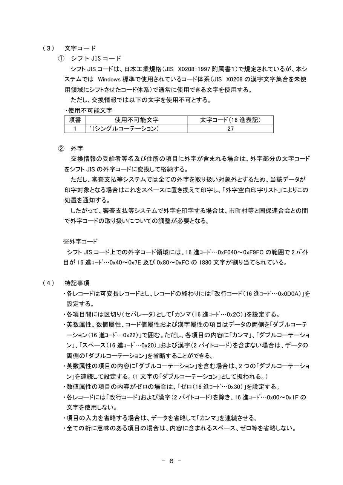
| 項番 | 項目名 | 属性 | 桁数 | 内容 | 必須 | 備考 | その他の列 |
|---|---|---|---|---|---|---|---|
| 1 | ‘(シングルコーテーション) | 27 | 文字コード(16進表記): 27 |
| 項番 | 項目名 | 属性 | 桁数 | 内容 | 必須 | 備考 | その他の列 |
|---|---|---|---|---|---|---|---|
| 1 | ‘(シングルコーテーション) | 27 |
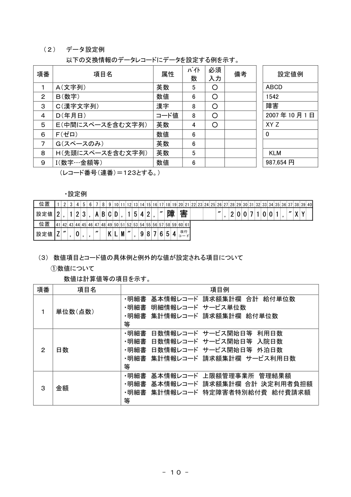
| 項番 | 項目名 | 属性 | 桁数 | 内容 | 必須 | 備考 | その他の列 |
|---|---|---|---|---|---|---|---|
| 1 | A(文字列) | 英数 | 5 | ○ | 設定値例: ABCD | ||
| 2 | B(数字) | 数値 | 6 | ○ | 設定値例: 1542 | ||
| 3 | C(漢字文字列) | 漢字 | 8 | ○ | 設定値例: 障害 | ||
| 4 | D(年月日) | コード値 | 8 | ○ | 設定値例: 2007年10月1日 | ||
| 5 | E(中間にスペースを含む文字列) | 英数 | 4 | ○ | 設定値例: XY Z | ||
| 6 | F(ゼロ) | 数値 | 6 | 設定値例: 0 | |||
| 7 | G(スペースのみ) | 英数 | 6 | 設定値例: | |||
| 8 | H(先頭にスペースを含む文字列) | 英数 | 5 | 設定値例: KLM | |||
| 9 | I(数字…金額等) | 数値 | 6 | 設定値例: 987,654 円 |
| 項番 | 項目名 | 属性 | 桁数 | 内容 | 必須 | 備考 | その他の列 |
|---|---|---|---|---|---|---|---|
| 位置: 1 2 3 4 5 6 7 8 9 10 11 12 13 14 15 16 17 18 19 20 21 22 23 24 25 26 27 28 29 30 31 32 33 34 35 36 37 38 39 40 設定値: 2,123,ABCD,1542,"障害 ",20071001,"XY | |||||||
| 位置: 41 42 43 44 45 46 47 48 49 50 51 52 53 54 55 56 57 58 59 60 61 設定値: Z",0,," KLM",987654改行コード |
| 項番 | 項目名 | 属性 | 桁数 | 内容 | 必須 | 備考 | その他の列 |
|---|---|---|---|---|---|---|---|
| 1 | 単位数(点数) | ・明細書 基本情報レコード 請求額集計欄 合計 給付単位数 ・明細書 明細情報レコード サービス単位数 ・明細書 集計情報レコード 請求額集計欄 給付単位数 等 | |||||
| 2 | 日数 | ・明細書 日数情報レコード サービス開始日等 利用日数 ・明細書 日数情報レコード サービス開始日等 入院日数 ・明細書 日数情報レコード サービス開始日等 外泊日数 ・明細書 集計情報レコード 請求額集計欄 サービス利用日数 等 | |||||
| 3 | 金額 | ・明細書 基本情報レコード 上限額管理事業所 管理結果額 ・明細書 基本情報レコード 請求額集計欄 合計 決定利用者負担額 ・明細書 集計情報レコード 特定障害者特別給付費 給付費請求額 等 |
| 項番 | 項目名 | 属性 | 桁数 | 内容 | 必須 | 備考 | その他の列 |
|---|---|---|---|---|---|---|---|
| 1 | A(文字列) | 英数 | 5 | ○ | 設定値例: ABCD | ||
| 2 | B(数字) | 数値 | 6 | ○ | 設定値例: 1542 | ||
| 3 | C(漢字文字列) | 漢字 | 8 | ○ | 設定値例: 障害 | ||
| 4 | D(年月日) | コード値 | 8 | ○ | 設定値例: 2007 年 10 月 1 日 | ||
| 5 | E(中間にスペースを含む文字列) | 英数 | 4 | ○ | 設定値例: XY Z | ||
| 6 | F(ゼロ) | 数値 | 6 | 設定値例: 0 | |||
| 7 | G(スペースのみ) | 英数 | 6 | 設定値例: － | |||
| 8 | H(先頭にスペースを含む文字列) | 英数 | 5 | 設定値例: KLM | |||
| 9 | I(数字…金額等) | 数値 | 6 | 設定値例: 987,654 円 |
| 項番 | 項目名 | 属性 | 桁数 | 内容 | 必須 | 備考 | その他の列 |
|---|---|---|---|---|---|---|---|
| 設定値 | 位置: 設定値 1: 2 2: , 3: 1 4: 2 5: 3 6: , 7: A 8: B 9: C 10: D 11: , 12: 1 13: 5 14: 4 15: 2 16: , 17: ″ 18: 障 19: － 20: 害 21: － 22: － 23: － 24: － 25: － 26: ″ 27: , 28: 2 29: 0 30: 0 31: 7 32: 1 33: 0 34: 0 35: 1 36: , 37: ″ 38: X 39: Y 40: － |
| 項番 | 項目名 | 属性 | 桁数 | 内容 | 必須 | 備考 | その他の列 |
|---|---|---|---|---|---|---|---|
| 設定値 | 位置: 設定値 41: Z 42: ″ 43: , 44: 0 45: , 46: , 47: ″ 48: － 49: K 50: L 51: M 52: ″ 53: , 54: 9 55: 8 56: 7 57: 6 58: 5 59: 4 60: 改行コード 61: － |
| 項番 | 項目名 | 属性 | 桁数 | 内容 | 必須 | 備考 | その他の列 |
|---|---|---|---|---|---|---|---|
| 1 | 単位数(点数) | ・明細書 基本情報レコード 請求額集計欄 合計 給付単位数 ・明細書 明細情報レコード サービス単位数 ・明細書 集計情報レコード 請求額集計欄 給付単位数 等 | |||||
| 2 | 日数 | ・明細書 日数情報レコード サービス開始日等 利用日数 ・明細書 日数情報レコード サービス開始日等 入院日数 ・明細書 日数情報レコード サービス開始日等 外泊日数 ・明細書 集計情報レコード 請求額集計欄 サービス利用日数 等 | |||||
| 3 | 金額 | ・明細書 基本情報レコード 上限額管理事業所 管理結果額 ・明細書 基本情報レコード 請求額集計欄 合計 決定利用者負担額 ・明細書 集計情報レコード 特定障害者特別給付費 給付費請求額 等 |
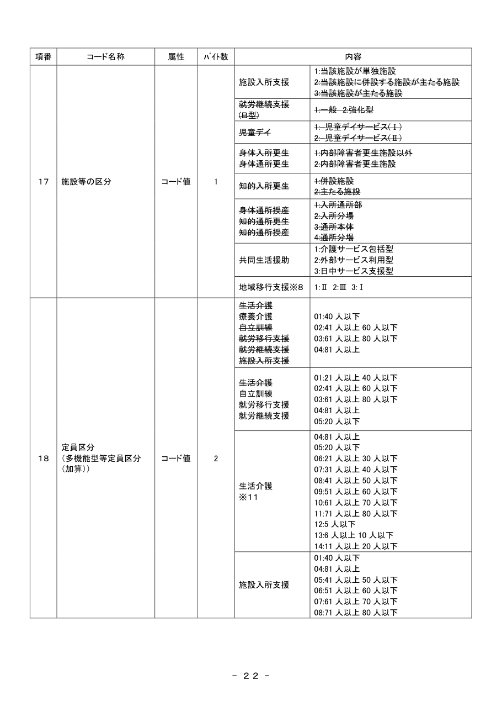
| 項番 | 項目名 | 属性 | 桁数 | 内容 | 必須 | 備考 | その他の列 |
|---|---|---|---|---|---|---|---|
| 17 | 施設等の区分 > 施設入所支援 | コード値 | 1 | 1:当該施設が単独施設 2:当該施設に併設する施設が主たる施設 3:当該施設が主たる施設 | コード名称: 施設等の区分 | ||
| 17 | 施設等の区分 > 就労継続支援(B型) | コード値 | 1 | 1:一般 2:強化型 | コード名称: 施設等の区分 | ||
| 17 | 施設等の区分 > 児童デイ | コード値 | 1 | 1:児童デイサービス(Ⅰ) 2:児童デイサービス(Ⅱ) | コード名称: 施設等の区分 | ||
| 17 | 施設等の区分 > 身体入所更生 | コード値 | 1 | 1:内部障害者更生施設以外 2:内部障害者更生施設 | コード名称: 施設等の区分 | ||
| 17 | 施設等の区分 > 身体通所更生 | コード値 | 1 | 1:内部障害者更生施設以外 2:内部障害者更生施設 | コード名称: 施設等の区分 | ||
| 17 | 施設等の区分 > 知的入所更生 | コード値 | 1 | 1:併設施設 2:主たる施設 | コード名称: 施設等の区分 | ||
| 17 | 施設等の区分 > 身体通所授産 | コード値 | 1 | 1:入所通所部 2:入所分場 3:通所本体 4:通所分場 | コード名称: 施設等の区分 | ||
| 17 | 施設等の区分 > 知的通所更生 | コード値 | 1 | 1:入所通所部 2:入所分場 3:通所本体 4:通所分場 | コード名称: 施設等の区分 | ||
| 17 | 施設等の区分 > 知的通所授産 | コード値 | 1 | 1:入所通所部 2:入所分場 3:通所本体 4:通所分場 | コード名称: 施設等の区分 | ||
| 17 | 施設等の区分 > 共同生活援助 | コード値 | 1 | 1:介護サービス包括型 2:外部サービス利用型 3:日中サービス支援型 | コード名称: 施設等の区分 | ||
| 17 | 施設等の区分 > 地域移行支援※8 | コード値 | 1 | 1:Ⅱ 2:Ⅲ 3:Ⅰ | コード名称: 施設等の区分 | ||
| 18 | 定員区分(多機能型等定員区分(加算)) > 生活介護 | コード値 | 2 | 01:40 人以下 02:41 人以上 60 人以下 03:61 人以上 80 人以下 04:81 人以上 | コード名称: 定員区分(多機能型等定員区分(加算)) | ||
| 18 | 定員区分(多機能型等定員区分(加算)) > 療養介護 | コード値 | 2 | 01:40 人以下 02:41 人以上 60 人以下 03:61 人以上 80 人以下 04:81 人以上 | コード名称: 定員区分(多機能型等定員区分(加算)) | ||
| 18 | 定員区分(多機能型等定員区分(加算)) > 自立訓練 | コード値 | 2 | 01:40 人以下 02:41 人以上 60 人以下 03:61 人以上 80 人以下 04:81 人以上 | コード名称: 定員区分(多機能型等定員区分(加算)) | ||
| 18 | 定員区分(多機能型等定員区分(加算)) > 就労移行支援 | コード値 | 2 | 01:40 人以下 02:41 人以上 60 人以下 03:61 人以上 80 人以下 04:81 人以上 | コード名称: 定員区分(多機能型等定員区分(加算)) | ||
| 18 | 定員区分(多機能型等定員区分(加算)) > 就労継続支援 | コード値 | 2 | 01:40 人以下 02:41 人以上 60 人以下 03:61 人以上 80 人以下 04:81 人以上 | コード名称: 定員区分(多機能型等定員区分(加算)) | ||
| 18 | 定員区分(多機能型等定員区分(加算)) > 施設入所支援 | コード値 | 2 | 01:40 人以下 02:41 人以上 60 人以下 03:61 人以上 80 人以下 04:81 人以上 | コード名称: 定員区分(多機能型等定員区分(加算)) | ||
| 18 | 定員区分(多機能型等定員区分(加算)) > 生活介護 | コード値 | 2 | 01:21 人以上 40 人以下 02:41 人以上 60 人以下 03:61 人以上 80 人以下 04:81 人以上 05:20 人以下 | コード名称: 定員区分(多機能型等定員区分(加算)) | ||
| 18 | 定員区分(多機能型等定員区分(加算)) > 自立訓練 | コード値 | 2 | 01:21 人以上 40 人以下 02:41 人以上 60 人以下 03:61 人以上 80 人以下 04:81 人以上 05:20 人以下 | コード名称: 定員区分(多機能型等定員区分(加算)) | ||
| 18 | 定員区分(多機能型等定員区分(加算)) > 就労移行支援 | コード値 | 2 | 01:21 人以上 40 人以下 02:41 人以上 60 人以下 03:61 人以上 80 人以下 04:81 人以上 05:20 人以下 | コード名称: 定員区分(多機能型等定員区分(加算)) | ||
| 18 | 定員区分(多機能型等定員区分(加算)) > 就労継続支援 | コード値 | 2 | 01:21 人以上 40 人以下 02:41 人以上 60 人以下 03:61 人以上 80 人以下 04:81 人以上 05:20 人以下 | コード名称: 定員区分(多機能型等定員区分(加算)) | ||
| 18 | 定員区分(多機能型等定員区分(加算)) > 生活介護※11 | コード値 | 2 | 04:81 人以上 05:20 人以下 06:21 人以上 30 人以下 07:31 人以上 40 人以下 08:41 人以上 50 人以下 09:51 人以上 60 人以下 10:61 人以上 70 人以下 11:71 人以上 80 人以下 12:5 人以下 13:6 人以上 10 人以下 14:11 人以上 20 人以下 | コード名称: 定員区分(多機能型等定員区分(加算)) | ||
| 18 | 定員区分(多機能型等定員区分(加算)) > 施設入所支援 | コード値 | 2 | 01:40 人以下 04:81 人以上 05:41 人以上 50 人以下 06:51 人以上 60 人以下 07:61 人以上 70 人以下 08:71 人以上 80 人以下 | コード名称: 定員区分(多機能型等定員区分(加算)) |
| 項番 | 項目名 | 属性 | 桁数 | 内容 | 必須 | 備考 | その他の列 |
|---|---|---|---|---|---|---|---|
| 17 | 施設等の区分 > 施設入所支援 | コード値 | 1 | 1:当該施設が単独施設 2:当該施設に併設する施設が主たる施設 3:当該施設が主たる施設 | |||
| 17 | 施設等の区分 > 就労継続支援(B型) | コード値 | 1 | 1:一般 2:強化型 | |||
| 17 | 施設等の区分 > 児童デイ | コード値 | 1 | 1:児童デイサービス(Ⅰ) 2:児童デイサービス(Ⅱ) | |||
| 17 | 施設等の区分 > 身体入所更生 身体通所更生 | コード値 | 1 | 1:内部障害者更生施設以外 2:内部障害者更生施設 | |||
| 17 | 施設等の区分 > 知的入所更生 | コード値 | 1 | 1:併設施設 2:主たる施設 | |||
| 17 | 施設等の区分 > 身体通所授産 知的通所更生 知的通所授産 | コード値 | 1 | 1:入所通所部 2:入所分場 3:通所本体 4:通所分場 | |||
| 17 | 施設等の区分 > 共同生活援助 | コード値 | 1 | 1:介護サービス包括型 2:外部サービス利用型 3:日中サービス支援型 | |||
| 17 | 施設等の区分 > 地域移行支援※8 | コード値 | 1 | 1:Ⅱ 2:Ⅲ 3:Ⅰ | |||
| 18 | 定員区分(多機能型等定員区分(加算)) > 生活介護 療養介護 自立訓練 就労移行支援 就労継続支援 施設入所支援 | コード値 | 2 | 01:40人以下 02:41人以上60人以下 03:61人以上80人以下 04:81人以上 | |||
| 18 | 定員区分(多機能型等定員区分(加算)) > 生活介護 自立訓練 就労移行支援 就労継続支援 | コード値 | 2 | 01:21人以上40人以下 02:41人以上60人以下 03:61人以上80人以下 04:81人以上 05:20人以下 | |||
| 18 | 定員区分(多機能型等定員区分(加算)) > 生活介護※11 | コード値 | 2 | 04:81人以上 05:20人以下 06:21人以上30人以下 07:31人以上40人以下 08:41人以上50人以下 09:51人以上60人以下 10:61人以上70人以下 11:71人以上80人以下 12:5人以下 13:6人以上10人以下 14:11人以上20人以下 | |||
| 18 | 定員区分(多機能型等定員区分(加算)) > 施設入所支援 | コード値 | 2 | 01:40人以下 04:81人以上 05:41人以上50人以下 06:51人以上60人以下 07:61人以上70人以下 08:71人以上80人以下 |